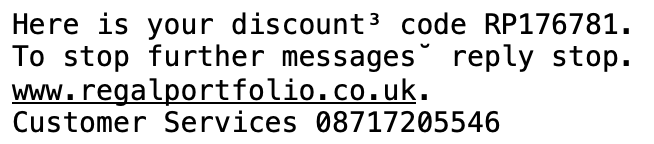
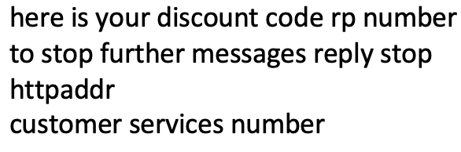
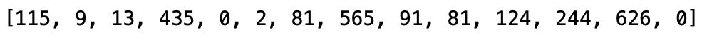
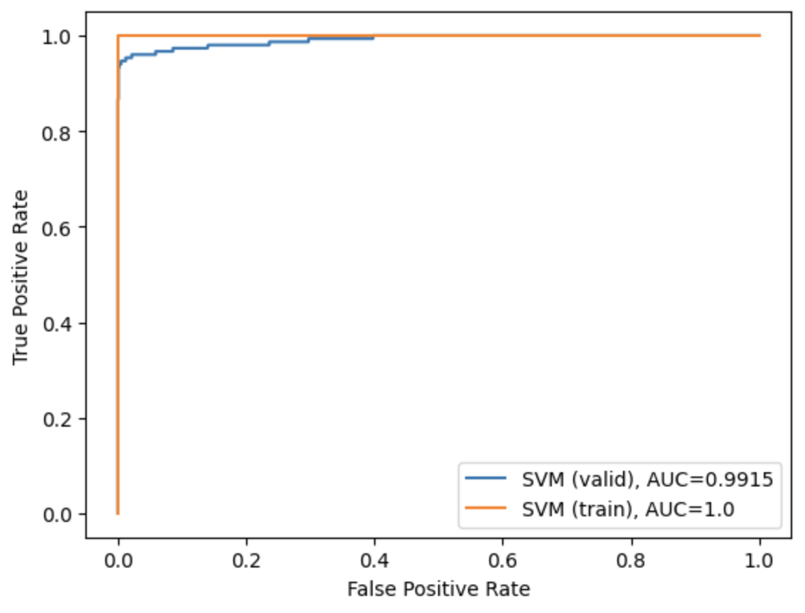

Assignment 3:¶
SMS Spam classifier using Support Vector Machines¶
Introduction¶
Many email services today provide spam filters that are able to classify an email into spam and non-spam/ham email with high accuracy. In this exercise, you build a SMS spam classifier. The focus in this exercise is in data preparation and feature engineering. You will later use your designed features in a Support Vector Machine (SVM) classifier.
In particular, you need to convert each SMS into a feature vector $x \in \mathbb{R}^n$ . The following parts of the exercise will walk you through how such a feature vector can be constructed from an SMS.
The dataset included for this exercise is the SMS Spam Collection Data Set from the publication:
Almeida, Tiago A., José María G. Hidalgo, and Akebo Yamakami. "Contributions to the study of SMS spam filtering: new collection and results." Proceedings of the 11th ACM symposium on Document engineering. 2011.
# used for manipulating directory paths
import os
# Scientific and vector computation for python
import numpy as np
# Import regular expressions to process sms
import re
# Plotting library
from matplotlib import pyplot
# SVM model
from sklearn import svm, model_selection
# for computing ROC and P-R curves
from sklearn import metrics
# library written for this exercise providing additional functions for assignment submission, and others
import utils
# might wanna use that for counting the occurences
from collections import Counter
# a powerful data toolbox; here only used for loading csv file
import pandas as pd
# tells matplotlib to embed plots within the notebook
%matplotlib inline
# grader object
grader=utils.Grader()
# SET YOUR Authentication Token. To get the token login to http://evalml.da.private.hm.edu/ and check the User info menu item.
AUTH_TOKEN = "cd4a9aa7782d5a61a41c6dd48746e426d1f9a09a"
grader.setToken(AUTH_TOKEN)
Submission and Grading¶
After completing each part of the assignment you are asked to submit your results. In the following table you will find the overview over the different tasks that you need to perform:
| Section | Part | Submitted Function | Points |
|---|---|---|---|
| 1 | SMS Preprocessing | preprocessSMS |
15 |
| 2 | Dataset splits | datasetSplits |
10 |
| 3 | Create Vocabulary | createVocabulary |
20 |
| 4 | Word mapping | wordMapping |
15 |
| 5 | Feature Extraction | featureExtraction |
10 |
| 6 | SVM Training | svmTraining |
10 |
| 7 | Hyperparameter Tuning | hyperparameterTuning |
20 |
| 8 | ROC curve | - | - |
| Total Points | 100 |
You are allowed to submit your solutions multiple times. Correct results are not updated anymore.
At the end of each section, we have a cell which contains code for submitting the solutions thus far to the grader. Execute the cell to see your score up to the current section. For all your work to be submitted properly, you must execute those cells at least once. They must also be re-executed everytime the submitted function is updated. In the first half of this exercise, you will be guided through feature engineering for our SMS spam classifier. In the next half of the exercise, you will be using support vector machines to build a spam classifier, evaluate it, and optional, improve it.
1 SMS Preprocessing¶
Again, before starting on a machine learning task, it is usually helpful to take a look at the dataset. The figure below shows a sample SMS that contains a URL and some numbers. amounts.

While many SMS would contain similar types of entities (e.g., numbers, other URLs, or other email addresses), the specific entities (e.g., the specific URL or specific dollar amount) will be different in almost every SMS. Therefore, one method often employed in pre-processing is to “normalize” these values, so that all URLs are treated the same, all numbers are treated the same, etc. For example, we could replace each URL in the SMS with the unique string “httpaddr” to indicate that a URL was present.
Normalizing those values has the effect of letting the spam classifier make a classification decision based on whether any URL was present, rather than whether a specific URL was present. This typically improves the performance of a spam classifier, since spammers often randomize the URLs, and thus the odds of seeing any particular URL again in a new piece of spam is very small. Note that this process could also be seen as a form of regularization, since it makes the data simpler and since numbers and adresses might occur in a spam and ham (non-spam) messages, it makes this particular unimportant as feature dimension
In the function processSMS below, the following normalization steps are already applied:
Lower-casing: The entire SMS is converted into lower case, so that captialization is ignored (e.g., IndIcaTE is treated the same as Indicate).
Stripping HTML: All HTML tags are removed from the SMS. Many SMS often come with HTML formatting; we remove all the HTML tags, so that only the content remains.
Normalizing URLs: All URLs are replaced with the text “httpaddr”.
Normalizing Email Addresses: All email addresses are replaced with the text “emailaddr”.
Normalizing Numbers: All numbers are replaced with the text “number”.
Normalizing Dollars / Euros: All dollar / euro signs ($/€) are replaced with the text “dollar"/"euro”.
Removal of non-words: Non-words and punctuation have been removed. All white spaces (tabs, newlines, spaces) have all been trimmed to a single space character.
Your remaining task before adding the word to the normalized sms string is to remove all remaining non alphanumeric characters. You should then create the preprocessed normalized sms from all preprocessed words.
def processSMS(sms_content, verbose=False):
"""
Preprocesses the body of an SMS and returns a list of indices
of the words contained in the SMS.
Parameters
----------
sms_content : str
A string containing the original SMS string.
verbose : bool
If True, print the resulting SMS after processing.
Returns
-------
sms_content_normalzed : str
A string containing teh normalized version of the input SMS.
Instructions
------------
Most of the normalization is already implemented.
Your only left over normlaization task is to remove any remaining non alphanumeric characters in word.
You should do this on a per word basis.
At the end make sure that you return a valid string containing the prerocessed version if the input SMS.
"""
# ========================== Preprocess SMS ===========================
# Lower case
sms_content = sms_content.lower()
# Handle Numbers
# Look for one or more characters between 0-9
sms_content = re.compile('[0-9]+').sub(' number ', sms_content)
# Handle URLS
# Look for strings starting with http:// or https://
sms_content = re.compile('((http|https)://|www.)[^\\s]*').sub(' httpaddr ', sms_content)
# Handle Email Addresses
# Look for strings with @ in the middle
sms_content = re.compile('[^\\s]+@[^\\s]+').sub(' emailaddr ', sms_content)
# Handle $ sign
sms_content = re.compile('[$]+').sub(' dollar ', sms_content)
# Handle € sign
sms_content = re.compile('[€]+').sub(' euro ', sms_content)
# get rid of any punctuation
sms_content = re.split('[ @$/#.-:&*+=\\[\\]?!(){},''">_<;%\n\r^]', sms_content)
# remove any empty word string
sms_content = [word for word in sms_content if len(word) > 0]
print(sms_content)
# Create the preprcessed SMS contents word by word
sms_content_normalzed = ""
for word in sms_content:
# Remove any remaining non alphanumeric characters in word
# and add the preprcessed word to the sms_content_normalzed string
# ====================== YOUR CODE HERE ======================
sms_content_normalzed += re.compile('[^a-zA-Z0-9]').sub('', word) + " "
# REGEX EXPLANATION:
# re.compile is used to create a regex object that can be used to search for patterns in strings
# the pattern [^a-zA-Z0-9] is working like this:
# ^ means that the pattern should not match the characters in the brackets
# a-zA-Z0-9 means that the pattern should match all characters that are not letters or numbers
# sub is used to replace the pattern with the second argument, in this case an empty string
# this way all characters that are not letters or numbers are removed from the word
sms_content_normalzed = sms_content_normalzed.strip()
# =============================================================
if verbose:
print('----------------')
print('Processed SMS:')
print('----------------')
print(sms_content_normalzed)
return sms_content_normalzed
Once you have implemented processSMS, the following cell will run your code on a SMS sample and you should see an output of the processed SMS.
The result of these preprocessing steps is shown in the figure below.

# Normalize a SMS sample
# Open SMS sample
with open(os.path.join('Data', 'smsSample1.txt')) as fid:
file_contents = fid.read()
processed_sms = processSMS(file_contents)
#Print processed SMS
print('-------------')
print('Original SMS:')
print('-------------')
print(file_contents)
print('-------------')
print('Processed SMS:')
print('-------------')
print(processed_sms)
['here', 'is', 'your', 'discount³', 'code', 'rp', 'number', 'to', 'stop', 'further', 'messages˘', 'reply', 'stop', 'httpaddr', 'customer', 'services', 'number'] ------------- Original SMS: ------------- Here is your discount³ code RP176781. To stop further messages˘ reply stop. www.regalportfolio.co.uk. Customer Services 08717205546 ------------- Processed SMS: ------------- here is your discount code rp number to stop further messages reply stop httpaddr customer services number
# appends the implemented function to the grader object
grader.setFunc("processSMS", processSMS)
newfunc = grader.grade()
SMS Preprocessing | 15 / 15 | Nice work!
Dataset splits | 10 / 10 | Nice work!
Create Vocabulary | 0 / 20 | wrong
Word mapping | 0 / 15 | wrong
Feature Extraction | 0 / 10 | wrong
SVM Training | 0 / 10 | wrong
Hyperparameter Tuning | 0 / 20 | wrong
--------------------------------
| 25 / 100 |
2 Dataset splits¶
From the lecture you know how important an objective evaluation is. This is only possible when you strictly separate the data used for training, validation and testing your models. The below method loadDataset loads the dataset. Your task is to generate a random split of this dataset, splitting the dataset into a train and test part. Please use sklearn.model_selection.train_test_split to generate a train (80% of complete data) and validation (20% of complete data) split of the dataset. Additionally to make sure that we ALL have the same split you can pass train_test_split random seed with random_state=42. This makes sure that the random number generators are producing the same random numbers.
def datasetSplits(X, y, verbose=False):
"""
Loads the dataset and creates train and validation data splits (data and labels)
Parameters
----------
X : list
List of samples where m is number of training examples; here: variable length strings.
y : list
List of labels for ther training data.
verbose : bool
If True, print the dataset split stats.
Returns
-------
X_train : array_like
(o, ) matrix of training samples where o is number of training examples; here: variable length strings.
X_valid : array_like
(p, ) matrix of training samples where p is number of validation examples; here: variable length strings.
y_train : array_like
(o, ) vector of labels for training data.
y_valid : array_like
(p, ) vector of labels for validation data.
Instructions
------------
Use the function train_test_split to split the loaded data into a train and validation set.
Use a validation size of 20% of the complete data and use a random_state of 42.
"""
X_train = []
X_valid = []
y_train = []
y_valid = []
# Perform the split
# ====================== YOUR CODE HERE ======================
X_train, X_valid, y_train, y_valid = model_selection.train_test_split(X, y, test_size=0.2, random_state=42)
# =============================================================
if verbose:
print('----------------')
print('Datasplits')
print('Size of X_train: %d; %d percent of complete dataset' % (len(X_train), np.round(len(X_train)/len(X)*100)))
print('Size of X_valid: %d; %d percent of complete dataset' % (len(X_valid), np.round(len(X_valid)/len(X)*100)))
print('Size of y_train: %d; %d percent of complete dataset' % (len(y_train), np.round(len(y_train)/len(X)*100)))
print('Size of y_valid: %d; %d percent of complete dataset' % (len(y_valid), np.round(len(y_valid)/len(X)*100)))
print('----------------')
return X_train, X_valid, y_train, y_valid
Now let's load the data and show some stats of our SPAM/HAM data.
# laod tha data
data = pd.read_csv('Data/sms_spam.csv', encoding='latin-1')
data = data.to_numpy()
X = data[:,1]
y = data[:,0]
#Show some data statistics
print("Data Stats:")
print("--------------------")
print("Class names: %s, %s" % (np.unique(y)[0], np.unique(y)[1]))
print("# Spam: %s" % np.sum(y=="spam"))
print("# Ham / Non-spam: %s" % np.sum(y=="ham"))
print("--------------------")
count_Class=pd.value_counts(y , sort= True)
count_Class.plot(kind= 'bar', color= ["blue", "orange"])
pyplot.title('Bar chart')
pyplot.show()
Data Stats: -------------------- Class names: ham, spam # Spam: 747 # Ham / Non-spam: 4825 --------------------
/var/folders/zz/ychwkrvd0y101w7d3ndwnc3w0000gn/T/ipykernel_10983/3629918794.py:15: FutureWarning: pandas.value_counts is deprecated and will be removed in a future version. Use pd.Series(obj).value_counts() instead. count_Class=pd.value_counts(y , sort= True)
![No description has been provided for this image]()
As you can see there is a significant imbalance between ham and spam samples. This is an issue for classification. We will discuss this later again.
Pre-process the data and create the train/validation split. The splits are then used in teh remaining sections. You should check the percentage of each datasplit if it makes sense for you. Make sure you have used a random state of 42.
# Apply preprocessing function to all data samples in X
print("Preprocess data ... this may take 1-2 minutes ... ")
X_preprocessed = [processSMS(x) for x in X]
# train / validation split
print("Generating data splits ... ")
X_train, X_valid, y_train, y_valid = datasetSplits(X_preprocessed, y, verbose=1)
print(f'{X_train[0]=}')
Preprocess data ... this may take 1-2 minutes ... ['go', 'until', 'jurong', 'point', 'crazy', 'available', 'only', 'in', 'bugis', 'n', 'great', 'world', 'la', 'e', 'buffet', 'cine', 'there', 'got', 'amore', 'wat'] ['ok', 'lar', 'joking', 'wif', 'u', 'oni'] ['free', 'entry', 'in', 'number', 'a', 'wkly', 'comp', 'to', 'win', 'fa', 'cup', 'final', 'tkts', 'number', 'st', 'may', 'number', 'text', 'fa', 'to', 'number', 'to', 'receive', 'entry', 'question', 'std', 'txt', 'rate', 't', "c's", 'apply', 'number', 'over', 'number', "'s"] ['u', 'dun', 'say', 'so', 'early', 'hor', 'u', 'c', 'already', 'then', 'say'] ['nah', 'i', "don't", 'think', 'he', 'goes', 'to', 'usf', 'he', 'lives', 'around', 'here', 'though'] ['freemsg', 'hey', 'there', 'darling', "it's", 'been', 'number', "week's", 'now', 'and', 'no', 'word', 'back', "i'd", 'like', 'some', 'fun', 'you', 'up', 'for', 'it', 'still', 'tb', 'ok', 'xxx', 'std', 'chgs', 'to', 'send', 'å£', 'number', 'number', 'to', 'rcv'] ['even', 'my', 'brother', 'is', 'not', 'like', 'to', 'speak', 'with', 'me', 'they', 'treat', 'me', 'like', 'aids', 'patent'] ['as', 'per', 'your', 'request', "'melle", 'melle', 'oru', 'minnaminunginte', 'nurungu', 'vettam', "'", 'has', 'been', 'set', 'as', 'your', 'callertune', 'for', 'all', 'callers', 'press', 'number', 'to', 'copy', 'your', 'friends', 'callertune'] ['winner', 'as', 'a', 'valued', 'network', 'customer', 'you', 'have', 'been', 'selected', 'to', 'receivea', 'å£', 'number', 'prize', 'reward', 'to', 'claim', 'call', 'number', 'claim', 'code', 'kl', 'number', 'valid', 'number', 'hours', 'only'] ['had', 'your', 'mobile', 'number', 'months', 'or', 'more', 'u', 'r', 'entitled', 'to', 'update', 'to', 'the', 'latest', 'colour', 'mobiles', 'with', 'camera', 'for', 'free', 'call', 'the', 'mobile', 'update', 'co', 'free', 'on', 'number'] ["i'm", 'gonna', 'be', 'home', 'soon', 'and', 'i', "don't", 'want', 'to', 'talk', 'about', 'this', 'stuff', 'anymore', 'tonight', 'k', "i've", 'cried', 'enough', 'today'] ['six', 'chances', 'to', 'win', 'cash', 'from', 'number', 'to', 'number', 'number', 'pounds', 'txt', 'csh', 'number', 'and', 'send', 'to', 'number', 'cost', 'number', 'p', 'day', 'number', 'days', 'number', 'tsandcs', 'apply', 'reply', 'hl', 'number', 'info'] ['urgent', 'you', 'have', 'won', 'a', 'number', 'week', 'free', 'membership', 'in', 'our', 'å£', 'number', 'number', 'prize', 'jackpot', 'txt', 'the', 'word', 'claim', 'to', 'no', 'number', 't', 'c', 'httpaddr', 'lccltd', 'pobox', 'number', 'ldnw', 'number', 'a', 'number', 'rw', 'number'] ["i've", 'been', 'searching', 'for', 'the', 'right', 'words', 'to', 'thank', 'you', 'for', 'this', 'breather', 'i', 'promise', 'i', 'wont', 'take', 'your', 'help', 'for', 'granted', 'and', 'will', 'fulfil', 'my', 'promise', 'you', 'have', 'been', 'wonderful', 'and', 'a', 'blessing', 'at', 'all', 'times'] ['i', 'have', 'a', 'date', 'on', 'sunday', 'with', 'will'] ['xxxmobilemovieclub', 'to', 'use', 'your', 'credit', 'click', 'the', 'wap', 'link', 'in', 'the', 'next', 'txt', 'message', 'or', 'click', 'here', 'httpaddr', 'xxxmobilemovieclub', 'com', 'n', 'qjkgighjjgcbl'] ['oh', 'k', "i'm", 'watching', 'here'] ['eh', 'u', 'remember', 'how', 'number', 'spell', 'his', 'name', 'yes', 'i', 'did', 'he', 'v', 'naughty', 'make', 'until', 'i', 'v', 'wet'] ['fine', 'if', 'thatåõs', 'the', 'way', 'u', 'feel', 'thatåõs', 'the', 'way', 'its', 'gota', 'b'] ['england', 'v', 'macedonia', '-', 'dont', 'miss', 'the', 'goals', 'team', 'news', 'txt', 'ur', 'national', 'team', 'to', 'number', 'eg', 'england', 'to', 'number', 'try', 'wales', 'scotland', 'number', 'txt', 'ì¼', 'number', 'number', 'poboxox', 'number', 'w', 'number', 'wq', 'number'] ['is', 'that', 'seriously', 'how', 'you', 'spell', 'his', 'name'] ['i\x89û÷m', 'going', 'to', 'try', 'for', 'number', 'months', 'ha', 'ha', 'only', 'joking'] ['so', 'ì', 'pay', 'first', 'lar', 'then', 'when', 'is', 'da', 'stock', 'comin'] ['aft', 'i', 'finish', 'my', 'lunch', 'then', 'i', 'go', 'str', 'down', 'lor', 'ard', 'number', 'smth', 'lor', 'u', 'finish', 'ur', 'lunch', 'already'] ['ffffffffff', 'alright', 'no', 'way', 'i', 'can', 'meet', 'up', 'with', 'you', 'sooner'] ['just', 'forced', 'myself', 'to', 'eat', 'a', 'slice', "i'm", 'really', 'not', 'hungry', 'tho', 'this', 'sucks', 'mark', 'is', 'getting', 'worried', 'he', 'knows', "i'm", 'sick', 'when', 'i', 'turn', 'down', 'pizza', 'lol'] ['lol', 'your', 'always', 'so', 'convincing'] ['did', 'you', 'catch', 'the', 'bus', 'are', 'you', 'frying', 'an', 'egg', 'did', 'you', 'make', 'a', 'tea', 'are', 'you', 'eating', 'your', "mom's", 'left', 'over', 'dinner', 'do', 'you', 'feel', 'my', 'love'] ["i'm", 'back', 'amp', "we're", 'packing', 'the', 'car', 'now', "i'll", 'let', 'you', 'know', 'if', "there's", 'room'] ['ahhh', 'work', 'i', 'vaguely', 'remember', 'that', 'what', 'does', 'it', 'feel', 'like', 'lol'] ['wait', "that's", 'still', 'not', 'all', 'that', 'clear', 'were', 'you', 'not', 'sure', 'about', 'me', 'being', 'sarcastic', 'or', 'that', "that's", 'why', 'x', "doesn't", 'want', 'to', 'live', 'with', 'us'] ['yeah', 'he', 'got', 'in', 'at', 'number', 'and', 'was', 'v', 'apologetic', 'n', 'had', 'fallen', 'out', 'and', 'she', 'was', 'actin', 'like', 'spoilt', 'child', 'and', 'he', 'got', 'caught', 'up', 'in', 'that', 'till', 'number', 'but', 'we', "won't", 'go', 'there', 'not', 'doing', 'too', 'badly', 'cheers', 'you'] ['k', 'tell', 'me', 'anything', 'about', 'you'] ['for', 'fear', 'of', 'fainting', 'with', 'the', 'of', 'all', 'that', 'housework', 'you', 'just', 'did', 'quick', 'have', 'a', 'cuppa'] ['thanks', 'for', 'your', 'subscription', 'to', 'ringtone', 'uk', 'your', 'mobile', 'will', 'be', 'charged', 'å£', 'number', 'month', 'please', 'confirm', 'by', 'replying', 'yes', 'or', 'no', 'if', 'you', 'reply', 'no', 'you', 'will', 'not', 'be', 'charged'] ['yup', 'ok', 'i', 'go', 'home', 'look', 'at', 'the', 'timings', 'then', 'i', 'msg', 'ì', 'again', 'xuhui', 'going', 'to', 'learn', 'on', 'number', 'nd', 'may', 'too', 'but', 'her', 'lesson', 'is', 'at', 'number', 'am'] ['oops', "i'll", 'let', 'you', 'know', 'when', 'my', "roommate's", 'done'] ['i', 'see', 'the', 'letter', 'b', 'on', 'my', 'car'] ['anything', 'lor', 'u', 'decide'] ['hello', "how's", 'you', 'and', 'how', 'did', 'saturday', 'go', 'i', 'was', 'just', 'texting', 'to', 'see', 'if', "you'd", 'decided', 'to', 'do', 'anything', 'tomo', 'not', 'that', "i'm", 'trying', 'to', 'invite', 'myself', 'or', 'anything'] ['pls', 'go', 'ahead', 'with', 'watts', 'i', 'just', 'wanted', 'to', 'be', 'sure', 'do', 'have', 'a', 'great', 'weekend', 'abiola'] ['did', 'i', 'forget', 'to', 'tell', 'you', 'i', 'want', 'you', 'i', 'need', 'you', 'i', 'crave', 'you', 'but', 'most', 'of', 'all', 'i', 'love', 'you', 'my', 'sweet', 'arabian', 'steed', 'mmmmmm', 'yummy'] ['number', '-', 'rodger', 'burns', '-', 'msg', 'we', 'tried', 'to', 'call', 'you', 're', 'your', 'reply', 'to', 'our', 'sms', 'for', 'a', 'free', 'nokia', 'mobile', 'free', 'camcorder', 'please', 'call', 'now', 'number', 'for', 'delivery', 'tomorrow'] ['who', 'are', 'you', 'seeing'] ['great', 'i', 'hope', 'you', 'like', 'your', 'man', 'well', 'endowed', 'i', 'am', 'lt', 'gt', 'inches'] ['no', 'calls', 'messages', 'missed', 'calls'] ["didn't", 'you', 'get', 'hep', 'b', 'immunisation', 'in', 'nigeria'] ['fair', 'enough', 'anything', 'going', 'on'] ['yeah', 'hopefully', 'if', 'tyler', "can't", 'do', 'it', 'i', 'could', 'maybe', 'ask', 'around', 'a', 'bit'] ['u', "don't", 'know', 'how', 'stubborn', 'i', 'am', 'i', "didn't", 'even', 'want', 'to', 'go', 'to', 'the', 'hospital', 'i', 'kept', 'telling', 'mark', "i'm", 'not', 'a', 'weak', 'sucker', 'hospitals', 'are', 'for', 'weak', 'suckers'] ['what', 'you', 'thinked', 'about', 'me', 'first', 'time', 'you', 'saw', 'me', 'in', 'class'] ['a', 'gram', 'usually', 'runs', 'like', 'lt', 'gt', 'a', 'half', 'eighth', 'is', 'smarter', 'though', 'and', 'gets', 'you', 'almost', 'a', 'whole', 'second', 'gram', 'for', 'lt', 'gt'] ['k', 'fyi', 'x', 'has', 'a', 'ride', 'early', 'tomorrow', 'morning', 'but', "he's", 'crashing', 'at', 'our', 'place', 'tonight'] ['wow', 'i', 'never', 'realized', 'that', 'you', 'were', 'so', 'embarassed', 'by', 'your', 'accomodations', 'i', 'thought', 'you', 'liked', 'it', 'since', 'i', 'was', 'doing', 'the', 'best', 'i', 'could', 'and', 'you', 'always', 'seemed', 'so', 'happy', 'about', '\\the', 'cave\\', "i'm", 'sorry', 'i', "didn't", 'and', "don't", 'have', 'more', 'to', 'give', "i'm", 'sorry', 'i', 'offered', "i'm", 'sorry', 'your', 'room', 'was', 'so', 'embarassing'] ['sms', 'ac', 'sptv', 'the', 'new', 'jersey', 'devils', 'and', 'the', 'detroit', 'red', 'wings', 'play', 'ice', 'hockey', 'correct', 'or', 'incorrect', 'end', 'reply', 'end', 'sptv'] ['do', 'you', 'know', 'what', 'mallika', 'sherawat', 'did', 'yesterday', 'find', 'out', 'now', 'lt', 'url', 'gt'] ['congrats', 'number', 'year', 'special', 'cinema', 'pass', 'for', 'number', 'is', 'yours', 'call', 'number', 'now', 'c', 'suprman', 'v', 'matrix', 'number', 'starwars', 'number', 'etc', 'all', 'number', 'free', 'bx', 'number', '-ip', 'number', '-', 'number', 'we', 'number', 'pm', 'dont', 'miss', 'out'] ['sorry', "i'll", 'call', 'later', 'in', 'meeting'] ['tell', 'where', 'you', 'reached'] ['yes', 'gauti', 'and', 'sehwag', 'out', 'of', 'odi', 'series'] ['your', 'gonna', 'have', 'to', 'pick', 'up', 'a', 'dollar', 'number', 'burger', 'for', 'yourself', 'on', 'your', 'way', 'home', 'i', "can't", 'even', 'move', 'pain', 'is', 'killing', 'me'] ['ha', 'ha', 'ha', 'good', 'joke', 'girls', 'are', 'situation', 'seekers'] ['its', 'a', 'part', 'of', 'checking', 'iq'] ['sorry', 'my', 'roommates', 'took', 'forever', 'it', 'ok', 'if', 'i', 'come', 'by', 'now'] ['ok', 'lar', 'i', 'double', 'check', 'wif', 'da', 'hair', 'dresser', 'already', 'he', 'said', 'wun', 'cut', 'v', 'short', 'he', 'said', 'will', 'cut', 'until', 'i', 'look', 'nice'] ['as', 'a', 'valued', 'customer', 'i', 'am', 'pleased', 'to', 'advise', 'you', 'that', 'following', 'recent', 'review', 'of', 'your', 'mob', 'no', 'you', 'are', 'awarded', 'with', 'a', 'å£', 'number', 'bonus', 'prize', 'call', 'number'] ['today', 'is', '\\song', 'dedicated', 'day', '\\', 'which', 'song', 'will', 'u', 'dedicate', 'for', 'me', 'send', 'this', 'to', 'all', 'ur', 'valuable', 'frnds', 'but', 'first', 'rply', 'me'] ['urgent', 'ur', 'awarded', 'a', 'complimentary', 'trip', 'to', 'eurodisinc', 'trav', 'aco', 'entry', 'number', 'or', 'å£', 'number', 'to', 'claim', 'txt', 'dis', 'to', 'number', 'number', 'number', 'å£', 'number', 'number', 'morefrmmob', 'shracomorsglsuplt', 'number', 'ls', 'number', 'number', 'aj'] ['did', 'you', 'hear', 'about', 'the', 'new', '\\divorce', 'barbie\\', 'it', 'comes', 'with', 'all', 'of', "ken's", 'stuff'] ['i', 'plane', 'to', 'give', 'on', 'this', 'month', 'end'] ['wah', 'lucky', 'man', 'then', 'can', 'save', 'money', 'hee'] ['finished', 'class', 'where', 'are', 'you'] ['hi', 'babe', 'im', 'at', 'home', 'now', 'wanna', 'do', 'something', 'xx'] ['k', 'k', 'where', 'are', 'you', 'how', 'did', 'you', 'performed'] ['u', 'can', 'call', 'me', 'now'] ['i', 'am', 'waiting', 'machan', 'call', 'me', 'once', 'you', 'free'] ['thats', 'cool', 'i', 'am', 'a', 'gentleman', 'and', 'will', 'treat', 'you', 'with', 'dignity', 'and', 'respect'] ['i', 'like', 'you', 'peoples', 'very', 'much', 'but', 'am', 'very', 'shy', 'pa'] ['does', 'not', 'operate', 'after', 'lt', 'gt', 'or', 'what'] ['its', 'not', 'the', 'same', 'here', 'still', 'looking', 'for', 'a', 'job', 'how', 'much', 'do', "ta's", 'earn', 'there'] ['sorry', "i'll", 'call', 'later'] ['k', 'did', 'you', 'call', 'me', 'just', 'now', 'ah'] ['ok', 'i', 'am', 'on', 'the', 'way', 'to', 'home', 'hi', 'hi'] ['you', 'will', 'be', 'in', 'the', 'place', 'of', 'that', 'man'] ['yup', 'next', 'stop'] ['i', 'call', 'you', 'later', "don't", 'have', 'network', 'if', 'urgnt', 'sms', 'me'] ['for', 'real', 'when', 'u', 'getting', 'on', 'yo', 'i', 'only', 'need', 'number', 'more', 'tickets', 'and', 'one', 'more', 'jacket', 'and', "i'm", 'done', 'i', 'already', 'used', 'all', 'my', 'multis'] ['yes', 'i', 'started', 'to', 'send', 'requests', 'to', 'make', 'it', 'but', 'pain', 'came', 'back', 'so', "i'm", 'back', 'in', 'bed', 'double', 'coins', 'at', 'the', 'factory', 'too', 'i', 'gotta', 'cash', 'in', 'all', 'my', 'nitros'] ["i'm", 'really', 'not', 'up', 'to', 'it', 'still', 'tonight', 'babe'] ['ela', 'kano', 'il', 'download', 'come', 'wen', 'ur', 'free'] ['yeah', 'do', 'don\x89û÷t', 'stand', 'to', 'close', 'tho-', 'you\x89û÷ll', 'catch', 'something'] ['sorry', 'to', 'be', 'a', 'pain', 'is', 'it', 'ok', 'if', 'we', 'meet', 'another', 'night', 'i', 'spent', 'late', 'afternoon', 'in', 'casualty', 'and', 'that', 'means', 'i', "haven't", 'done', 'any', 'of', 'y', 'stuff', 'number', 'moro', 'and', 'that', 'includes', 'all', 'my', 'time', 'sheets', 'and', 'that', 'sorry'] ['smile', 'in', 'pleasure', 'smile', 'in', 'pain', 'smile', 'when', 'trouble', 'pours', 'like', 'rain', 'smile', 'when', 'sum', 'number', 'hurts', 'u', 'smile', 'becoz', 'someone', 'still', 'loves', 'to', 'see', 'u', 'smiling'] ['please', 'call', 'our', 'customer', 'service', 'representative', 'on', 'number', 'number', 'number', 'between', 'number', 'am-', 'number', 'pm', 'as', 'you', 'have', 'won', 'a', 'guaranteed', 'å£', 'number', 'cash', 'or', 'å£', 'number', 'prize'] ['havent', 'planning', 'to', 'buy', 'later', 'i', 'check', 'already', 'lido', 'only', 'got', 'number', 'show', 'in', 'e', 'afternoon', 'u', 'finish', 'work', 'already'] ['your', 'free', 'ringtone', 'is', 'waiting', 'to', 'be', 'collected', 'simply', 'text', 'the', 'password', '\\mix\\', 'to', 'number', 'to', 'verify', 'get', 'usher', 'and', 'britney', 'fml'] ['watching', 'telugu', 'movie', 'wat', 'abt', 'u'] ['i', 'see', 'when', 'we', 'finish', 'we', 'have', 'loads', 'of', 'loans', 'to', 'pay'] ['hi', 'wk', 'been', 'ok', '-', 'on', 'hols', 'now', 'yes', 'on', 'for', 'a', 'bit', 'of', 'a', 'run', 'forgot', 'that', 'i', 'have', 'hairdressers', 'appointment', 'at', 'four', 'so', 'need', 'to', 'get', 'home', 'n', 'shower', 'beforehand', 'does', 'that', 'cause', 'prob', 'for', 'u', '\\', 'ham'] ['please', "don't", 'text', 'me', 'anymore', 'i', 'have', 'nothing', 'else', 'to', 'say'] ['okay', 'name', 'ur', 'price', 'as', 'long', 'as', 'its', 'legal', 'wen', 'can', 'i', 'pick', 'them', 'up', 'y', 'u', 'ave', 'x', 'ams', 'xx'] ["i'm", 'still', 'looking', 'for', 'a', 'car', 'to', 'buy', 'and', 'have', 'not', 'gone', 'number', 'the', 'driving', 'test', 'yet'] ['as', 'per', 'your', 'request', "'melle", 'melle', 'oru', 'minnaminunginte', 'nurungu', 'vettam', "'", 'has', 'been', 'set', 'as', 'your', 'callertune', 'for', 'all', 'callers', 'press', 'number', 'to', 'copy', 'your', 'friends', 'callertune'] ['wow', "you're", 'right', 'i', "didn't", 'mean', 'to', 'do', 'that', 'i', 'guess', 'once', 'i', 'gave', 'up', 'on', 'boston', 'men', 'and', 'changed', 'my', 'search', 'location', 'to', 'nyc', 'something', 'changed', 'cuz', 'on', 'my', 'signin', 'page', 'it', 'still', 'says', 'boston'] ['umma', 'my', 'life', 'and', 'vava', 'umma', 'love', 'you', 'lot', 'dear'] ['thanks', 'a', 'lot', 'for', 'your', 'wishes', 'on', 'my', 'birthday', 'thanks', 'you', 'for', 'making', 'my', 'birthday', 'truly', 'memorable'] ['aight', "i'll", 'hit', 'you', 'up', 'when', 'i', 'get', 'some', 'cash'] ['how', 'would', 'my', 'ip', 'address', 'test', 'that', 'considering', 'my', 'computer', "isn't", 'a', 'minecraft', 'server'] ['i', 'know', 'grumpy', 'old', 'people', 'my', 'mom', 'was', 'like', 'you', 'better', 'not', 'be', 'lying', 'then', 'again', 'i', 'am', 'always', 'the', 'one', 'to', 'play', 'jokes'] ['dont', 'worry', 'i', 'guess', "he's", 'busy'] ['what', 'is', 'the', 'plural', 'of', 'the', 'noun', 'research'] ['going', 'for', 'dinner', 'msg', 'you', 'after'] ["i'm", 'ok', 'wif', 'it', 'cos', 'i', 'like', 'number', 'try', 'new', 'things', 'but', 'i', 'scared', 'u', 'dun', 'like', 'mah', 'cos', 'u', 'said', 'not', 'too', 'loud'] ['gent', 'we', 'are', 'trying', 'to', 'contact', 'you', 'last', 'weekends', 'draw', 'shows', 'that', 'you', 'won', 'a', 'å£', 'number', 'prize', 'guaranteed', 'call', 'number', 'claim', 'code', 'k', 'number', 'valid', 'number', 'hrs', 'only', 'number', 'ppm'] ['wa', 'ur', 'openin', 'sentence', 'very', 'formal', 'anyway', "i'm", 'fine', 'too', 'juz', 'tt', "i'm", 'eatin', 'too', 'much', 'n', 'puttin', 'on', 'weight', 'haha', 'so', 'anythin', 'special', 'happened'] ['as', 'i', 'entered', 'my', 'cabin', 'my', 'pa', 'said', "''", 'happy', "b'day", 'boss', "''", 'i', 'felt', 'special', 'she', 'askd', 'me', 'number', 'lunch', 'after', 'lunch', 'she', 'invited', 'me', 'to', 'her', 'apartment', 'we', 'went', 'there'] ['you', 'are', 'a', 'winner', 'u', 'have', 'been', 'specially', 'selected', 'number', 'receive', 'å£', 'number', 'or', 'a', 'number', 'holiday', 'flights', 'inc', 'speak', 'to', 'a', 'live', 'operator', 'number', 'claim', 'number', 'p', 'min', 'number'] ['goodo', 'yes', 'we', 'must', 'speak', 'friday', '-', 'egg-potato', 'ratio', 'for', 'tortilla', 'needed'] ['hmm', 'my', 'uncle', 'just', 'informed', 'me', 'that', "he's", 'paying', 'the', 'school', 'directly', 'so', 'pls', 'buy', 'food'] ['private', 'your', 'number', 'account', 'statement', 'for', 'number', 'shows', 'number', 'unredeemed', 'bonus', 'points', 'to', 'claim', 'call', 'number', 'identifier', 'code', 'number', 'expires'] ['urgent', 'your', 'mobile', 'no', 'was', 'awarded', 'å£', 'number', 'bonus', 'caller', 'prize', 'on', 'number', 'number', 'number', 'this', 'is', 'our', 'final', 'try', 'to', 'contact', 'u', 'call', 'from', 'landline', 'number', 'box', 'number', 'wr', 'number', 'c', 'number', 'ppm'] ['here', 'is', 'my', 'new', 'address', '-apples', 'pairs', 'all', 'that', 'malarky'] ['todays', 'voda', 'numbers', 'ending', 'number', 'are', 'selected', 'to', 'receive', 'a', 'dollar', 'number', 'award', 'if', 'you', 'have', 'a', 'match', 'please', 'call', 'number', 'quoting', 'claim', 'code', 'number', 'standard', 'rates', 'app'] ['i', 'am', 'going', 'to', 'sao', 'mu', 'today', 'will', 'be', 'done', 'only', 'at', 'number'] ['ìï', 'predict', 'wat', 'time', 'ì', "'ll", 'finish', 'buying'] ['good', 'stuff', 'will', 'do'] ['just', 'so', 'that', 'you', 'know', 'yetunde', "hasn't", 'sent', 'money', 'yet', 'i', 'just', 'sent', 'her', 'a', 'text', 'not', 'to', 'bother', 'sending', 'so', 'its', 'over', 'you', 'dont', 'have', 'to', 'involve', 'yourself', 'in', 'anything', 'i', "shouldn't", 'have', 'imposed', 'anything', 'on', 'you', 'in', 'the', 'first', 'place', 'so', 'for', 'that', 'i', 'apologise'] ['are', 'you', 'there', 'in', 'room'] ['hey', 'girl', 'how', 'r', 'u', 'hope', 'u', 'r', 'well', 'me', 'an', 'del', 'r', 'bak', 'again', 'long', 'time', 'no', 'c', 'give', 'me', 'a', 'call', 'sum', 'time', 'from', 'lucyxx'] ['k', 'k', 'how', 'much', 'does', 'it', 'cost'] ["i'm", 'home'] ['dear', 'will', 'call', 'tmorrow', 'pls', 'accomodate'] ['first', 'answer', 'my', 'question'] ['sunshine', 'quiz', 'wkly', 'q', 'win', 'a', 'top', 'sony', 'dvd', 'player', 'if', 'u', 'know', 'which', 'country', 'the', 'algarve', 'is', 'in', 'txt', 'ansr', 'to', 'number', 'å£', 'number', 'number', 'sp', 'tyrone'] ['want', 'number', 'get', 'laid', 'tonight', 'want', 'real', 'dogging', 'locations', 'sent', 'direct', 'number', 'ur', 'mob', 'join', 'the', "uk's", 'largest', 'dogging', 'network', 'bt', 'txting', 'gravel', 'to', 'number', 'nt', 'ec', 'number', 'a', 'number', 'p', 'msg', 'number', 'p'] ['i', 'only', 'haf', 'msn', "it's", 'emailaddr'] ['he', 'is', 'there', 'you', 'call', 'and', 'meet', 'him'] ['no', 'no', 'i', 'will', 'check', 'all', 'rooms', 'befor', 'activities'] ["you'll", 'not', 'rcv', 'any', 'more', 'msgs', 'from', 'the', 'chat', 'svc', 'for', 'free', 'hardcore', 'services', 'text', 'go', 'to', 'number', 'if', 'u', 'get', 'nothing', 'u', 'must', 'age', 'verify', 'with', 'yr', 'network', 'try', 'again'] ['got', 'c', 'i', 'lazy', 'to', 'type', 'i', 'forgot', 'ì', 'in', 'lect', 'i', 'saw', 'a', 'pouch', 'but', 'like', 'not', 'v', 'nice'] ['k', 'text', 'me', 'when', "you're", 'on', 'the', 'way'] ['sir', 'waiting', 'for', 'your', 'mail'] ['a', 'swt', 'thought', '\\nver', 'get', 'tired', 'of', 'doing', 'little', 'things', 'number', 'lovable', 'persons', '\\', 'coz', 'somtimes', 'those', 'little', 'things', 'occupy', 'd', 'biggest', 'part', 'in', 'their', 'hearts', 'gud', 'ni', 'number'] ['i', 'know', 'you', 'are', 'can', 'you', 'pls', 'open', 'the', 'back'] ['yes', 'see', 'ya', 'not', 'on', 'the', 'dot'] ['whats', 'the', 'staff', 'name', 'who', 'is', 'taking', 'class', 'for', 'us'] ['freemsg', 'why', "haven't", 'you', 'replied', 'to', 'my', 'text', "i'm", 'randy', 'sexy', 'female', 'and', 'live', 'local', 'luv', 'to', 'hear', 'from', 'u', 'netcollex', 'ltd', 'number', 'p', 'per', 'msg', 'reply', 'stop', 'to', 'end'] ['ummma', 'will', 'call', 'after', 'check', 'in', 'our', 'life', 'will', 'begin', 'from', 'qatar', 'so', 'pls', 'pray', 'very', 'hard'] ['k', 'i', 'deleted', 'my', 'contact', 'that', 'why'] ['sindu', 'got', 'job', 'in', 'birla', 'soft'] ['the', 'wine', 'is', 'flowing', 'and', "i'm", 'i', 'have', 'nevering'] ['yup', 'i', 'thk', 'cine', 'is', 'better', 'cos', 'no', 'need', 'number', 'go', 'down', 'number', 'plaza', 'mah'] ['ok', 'ur', 'typical', 'reply'] ['as', 'per', 'your', 'request', "'melle", 'melle', 'oru', 'minnaminunginte', 'nurungu', 'vettam', "'", 'has', 'been', 'set', 'as', 'your', 'callertune', 'for', 'all', 'callers', 'press', 'number', 'to', 'copy', 'your', 'friends', 'callertune'] ['you', 'are', 'everywhere', 'dirt', 'on', 'the', 'floor', 'the', 'windows', 'even', 'on', 'my', 'shirt', 'and', 'sometimes', 'when', 'i', 'open', 'my', 'mouth', 'you', 'are', 'all', 'that', 'comes', 'flowing', 'out', 'i', 'dream', 'of', 'my', 'world', 'without', 'you', 'then', 'half', 'my', 'chores', 'are', 'out', 'too', 'a', 'time', 'of', 'joy', 'for', 'me', 'lots', 'of', 'tv', 'shows', 'i', 'll', 'see', 'but', 'i', 'guess', 'like', 'all', 'things', 'you', 'just', 'must', 'exist', 'like', 'rain', 'hail', 'and', 'mist', 'and', 'when', 'my', 'time', 'here', 'is', 'done', 'you', 'and', 'i', 'become', 'one'] ['aaooooright', 'are', 'you', 'at', 'work'] ["i'm", 'leaving', 'my', 'house', 'now'] ['hello', 'my', 'love', 'what', 'are', 'you', 'doing', 'did', 'you', 'get', 'to', 'that', 'interview', 'today', 'are', 'you', 'you', 'happy', 'are', 'you', 'being', 'a', 'good', 'boy', 'do', 'you', 'think', 'of', 'me', 'are', 'you', 'missing', 'me'] ['customer', 'service', 'annoncement', 'you', 'have', 'a', 'new', 'years', 'delivery', 'waiting', 'for', 'you', 'please', 'call', 'number', 'now', 'to', 'arrange', 'delivery'] ['you', 'are', 'a', 'winner', 'u', 'have', 'been', 'specially', 'selected', 'number', 'receive', 'å£', 'number', 'cash', 'or', 'a', 'number', 'holiday', 'flights', 'inc', 'speak', 'to', 'a', 'live', 'operator', 'number', 'claim', 'number'] ['keep', 'yourself', 'safe', 'for', 'me', 'because', 'i', 'need', 'you', 'and', 'i', 'miss', 'you', 'already', 'and', 'i', 'envy', 'everyone', 'that', "see's", 'you', 'in', 'real', 'life'] ['new', 'car', 'and', 'house', 'for', 'my', 'parents', 'i', 'have', 'only', 'new', 'job', 'in', 'hand'] ["i'm", 'so', 'in', 'love', 'with', 'you', "i'm", 'excited', 'each', 'day', 'i', 'spend', 'with', 'you', 'you', 'make', 'me', 'so', 'happy'] ['-pls', 'stop', 'bootydelious', 'number', 'f', 'is', 'inviting', 'you', 'to', 'be', 'her', 'friend', 'reply', 'yes-', 'number', 'or', 'no-', 'number', 'see', 'her', 'httpaddr', 'stop', 'send', 'stop', 'frnd', 'to', 'number'] ['bangbabes', 'ur', 'order', 'is', 'on', 'the', 'way', 'u', 'should', 'receive', 'a', 'service', 'msg', 'number', 'download', 'ur', 'content', 'if', 'u', 'do', 'not', 'goto', 'wap', 'bangb', 'tv', 'on', 'ur', 'mobile', 'internet', 'service', 'menu'] ['i', 'place', 'all', 'ur', 'points', 'on', 'e', 'cultures', 'module', 'already'] ['urgent', 'we', 'are', 'trying', 'to', 'contact', 'you', 'last', 'weekends', 'draw', 'shows', 'that', 'you', 'have', 'won', 'a', 'å£', 'number', 'prize', 'guaranteed', 'call', 'number', 'claim', 'code', 's', 'number', 'valid', 'number', 'hrs', 'only'] ['hi', 'frnd', 'which', 'is', 'best', 'way', 'to', 'avoid', 'missunderstding', 'wit', 'our', 'beloved', "one's"] ['great', 'escape', 'i', 'fancy', 'the', 'bridge', 'but', 'needs', 'her', 'lager', 'see', 'you', 'tomo'] ['yes', 'it', 'completely', 'in', 'out', 'of', 'form', 'clark', 'also', 'utter', 'waste'] ['sir', 'i', 'need', 'axis', 'bank', 'account', 'no', 'and', 'bank', 'address'] ['hmmm', 'thk', 'sure', 'got', 'time', 'to', 'hop', 'ard', 'ya', 'can', 'go', 'number', 'free', 'abt', 'muz', 'call', 'u', 'to', 'discuss', 'liao'] ['what', 'time', 'you', 'coming', 'down', 'later'] ['bloody', 'hell', 'cant', 'believe', 'you', 'forgot', 'my', 'surname', 'mr', 'ill', 'give', 'u', 'a', 'clue', 'its', 'spanish', 'and', 'begins', 'with', 'm'] ['well', "i'm", 'gonna', 'finish', 'my', 'bath', 'now', 'have', 'a', 'good', 'fine', 'night'] ['let', 'me', 'know', 'when', "you've", 'got', 'the', 'money', 'so', 'carlos', 'can', 'make', 'the', 'call'] ['u', 'still', 'going', 'to', 'the', 'mall'] ['turns', 'out', 'my', 'friends', 'are', 'staying', 'for', 'the', 'whole', 'show', 'and', "won't", 'be', 'back', 'til', '~', 'lt', 'gt', 'so', 'feel', 'free', 'to', 'go', 'ahead', 'and', 'smoke', 'that', 'dollar', 'lt', 'gt', 'worth'] ['text', 'her', 'if', 'she', 'doesnt', 'reply', 'let', 'me', 'know', 'so', 'i', 'can', 'have', 'her', 'log', 'in'] ['hi', 'you', 'just', 'spoke', 'to', 'maneesha', 'v', "we'd", 'like', 'to', 'know', 'if', 'you', 'were', 'satisfied', 'with', 'the', 'experience', 'reply', 'toll', 'free', 'with', 'yes', 'or', 'no'] ['you', 'lifted', 'my', 'hopes', 'with', 'the', 'offer', 'of', 'money', 'i', 'am', 'in', 'need', 'especially', 'when', 'the', 'end', 'of', 'the', 'month', 'approaches', 'and', 'it', 'hurts', 'my', 'studying', 'anyways', 'have', 'a', 'gr', 'number', 'weekend'] ['lol', 'no', 'u', 'can', 'trust', 'me'] ['ok', 'i', 'am', 'a', 'gentleman', 'and', 'will', 'treat', 'you', 'with', 'dignity', 'and', 'respect'] ['he', 'will', 'you', 'guys', 'close'] ['going', 'on', 'nothing', 'great', 'bye'] ['hello', 'handsome', 'are', 'you', 'finding', 'that', 'job', 'not', 'being', 'lazy', 'working', 'towards', 'getting', 'back', 'that', 'net', 'for', 'mummy', "where's", 'my', 'boytoy', 'now', 'does', 'he', 'miss', 'me'] ['haha', 'awesome', 'be', 'there', 'in', 'a', 'minute'] ['please', 'call', 'our', 'customer', 'service', 'representative', 'on', 'freephone', 'number', 'number', 'number', 'between', 'number', 'am-', 'number', 'pm', 'as', 'you', 'have', 'won', 'a', 'guaranteed', 'å£', 'number', 'cash', 'or', 'å£', 'number', 'prize'] ['have', 'you', 'got', 'xmas', 'radio', 'times', 'if', 'not', 'i', 'will', 'get', 'it', 'now'] ['i', 'jus', 'reached', 'home', 'i', 'go', 'bathe', 'first', 'but', 'my', 'sis', 'using', 'net', 'tell', 'u', 'when', 'she', 'finishes', 'k'] ['are', 'you', 'unique', 'enough', 'find', 'out', 'from', 'number', 'th', 'august', 'httpaddr'] ["i'm", 'sorry', "i've", 'joined', 'the', 'league', 'of', 'people', 'that', 'dont', 'keep', 'in', 'touch', 'you', 'mean', 'a', 'great', 'deal', 'to', 'me', 'you', 'have', 'been', 'a', 'friend', 'at', 'all', 'times', 'even', 'at', 'great', 'personal', 'cost', 'do', 'have', 'a', 'great', 'week', '|'] ['hi', 'finally', 'i', 'completed', 'the', 'course'] ['it', 'will', 'stop', 'on', 'itself', 'i', 'however', 'suggest', 'she', 'stays', 'with', 'someone', 'that', 'will', 'be', 'able', 'to', 'give', 'ors', 'for', 'every', 'stool'] ['how', 'are', 'you', 'doing', 'hope', "you've", 'settled', 'in', 'for', 'the', 'new', 'school', 'year', 'just', 'wishin', 'you', 'a', 'gr', 'number', 'day'] ['gud', 'mrng', 'dear', 'hav', 'a', 'nice', 'day'] ['did', 'u', 'got', 'that', 'persons', 'story'] ['is', 'your', 'hamster', 'dead', 'hey', 'so', 'tmr', 'i', 'meet', 'you', 'at', 'number', 'pm', 'orchard', 'mrt'] ['hi', 'its', 'kate', 'how', 'is', 'your', 'evening', 'i', 'hope', 'i', 'can', 'see', 'you', 'tomorrow', 'for', 'a', 'bit', 'but', 'i', 'have', 'to', 'bloody', 'babyjontet', 'txt', 'back', 'if', 'u', 'can', 'xxx'] ['found', 'it', 'enc', 'lt', 'gt', 'where', 'you', 'at'] ['i', 'sent', 'you', 'lt', 'gt', 'bucks'] ['hello', 'darlin', 'ive', 'finished', 'college', 'now', 'so', 'txt', 'me', 'when', 'u', 'finish', 'if', 'u', 'can', 'love', 'kate', 'xxx'] ['your', 'account', 'has', 'been', 'refilled', 'successfully', 'by', 'inr', 'lt', 'decimal', 'gt', 'your', 'keralacircle', 'prepaid', 'account', 'balance', 'is', 'rs', 'lt', 'decimal', 'gt', 'your', 'transaction', 'id', 'is', 'kr', 'lt', 'gt'] ['goodmorning', 'sleeping', 'ga'] ['u', 'call', 'me', 'alter', 'at', 'number', 'ok'] ['ìï', 'say', 'until', 'like', 'dat', 'i', 'dun', 'buy', 'ericsson', 'oso', 'cannot', 'oredi', 'lar'] ['as', 'i', 'entered', 'my', 'cabin', 'my', 'pa', 'said', "''", 'happy', "b'day", 'boss', "''", 'i', 'felt', 'special', 'she', 'askd', 'me', 'number', 'lunch', 'after', 'lunch', 'she', 'invited', 'me', 'to', 'her', 'apartment', 'we', 'went', 'there'] ['aight', 'yo', 'dats', 'straight', 'dogg'] ['you', 'please', 'give', 'us', 'connection', 'today', 'itself', 'before', 'lt', 'decimal', 'gt', 'or', 'refund', 'the', 'bill'] ['both', 'i', 'shoot', 'big', 'loads', 'so', 'get', 'ready'] ["what's", 'up', 'bruv', 'hope', 'you', 'had', 'a', 'great', 'break', 'do', 'have', 'a', 'rewarding', 'semester'] ['home', 'so', 'we', 'can', 'always', 'chat'] ['k', 'k', 'good', 'study', 'well'] ['yup', 'how', 'ì', 'noe', 'leh'] ['sounds', 'great', 'are', 'you', 'home', 'now'] ['finally', 'the', 'match', 'heading', 'towards', 'draw', 'as', 'your', 'prediction'] ['tired', 'i', "haven't", 'slept', 'well', 'the', 'past', 'few', 'nights'] ['easy', 'ah', 'sen', 'got', 'selected', 'means', 'its', 'good'] ['i', 'have', 'to', 'take', 'exam', 'with', 'march', 'number'] ['yeah', 'you', 'should', 'i', 'think', 'you', 'can', 'use', 'your', 'gt', 'atm', 'now', 'to', 'register', 'not', 'sure', 'but', 'if', "there's", 'anyway', 'i', 'can', 'help', 'let', 'me', 'know', 'but', 'when', 'you', 'do', 'be', 'sure', 'you', 'are', 'ready'] ['ok', 'no', 'prob', 'take', 'ur', 'time'] ['there', 'is', 'os', 'called', 'ubandu', 'which', 'will', 'run', 'without', 'installing', 'in', 'hard', 'disk', 'you', 'can', 'use', 'that', 'os', 'to', 'copy', 'the', 'important', 'files', 'in', 'system', 'and', 'give', 'it', 'to', 'repair', 'shop'] ['sorry', "i'll", 'call', 'later'] ['u', 'say', 'leh', 'of', 'course', 'nothing', 'happen', 'lar', 'not', 'say', 'v', 'romantic', 'jus', 'a', 'bit', 'only', 'lor', 'i', 'thk', 'e', 'nite', 'scenery', 'not', 'so', 'nice', 'leh'] ['number', 'new', 'mobiles', 'from', 'number', 'must', 'go', 'txt', 'nokia', 'to', 'no', 'number', 'collect', 'yours', 'today', 'from', 'only', 'å£', 'number', 'httpaddr', 'number', '-tc', 'biz', 'number', 'optout', 'number', 'number', 'gbp', 'mtmsg', 'number'] ['would', 'really', 'appreciate', 'if', 'you', 'call', 'me', 'just', 'need', 'someone', 'to', 'talk', 'to'] ['will', 'u', 'meet', 'ur', 'dream', 'partner', 'soon', 'is', 'ur', 'career', 'off', 'number', 'a', 'flyng', 'start', 'number', 'find', 'out', 'free', 'txt', 'horo', 'followed', 'by', 'ur', 'star', 'sign', 'e', 'g', 'horo', 'aries'] ['hey', 'company', 'elama', 'po', 'mudyadhu'] ['life', 'is', 'more', 'strict', 'than', 'teacher', 'bcoz', 'teacher', 'teaches', 'lesson', 'amp', 'then', 'conducts', 'exam', 'but', 'life', 'first', 'conducts', 'exam', 'amp', 'then', 'teaches', 'lessons', 'happy', 'morning'] ['dear', 'good', 'morning', 'now', 'only', 'i', 'am', 'up'] ['get', 'down', 'in', 'gandhipuram', 'and', 'walk', 'to', 'cross', 'cut', 'road', 'right', 'side', 'lt', 'gt', 'street', 'road', 'and', 'turn', 'at', 'first', 'right'] ['dear', 'we', 'are', 'going', 'to', 'our', 'rubber', 'place'] ['sorry', 'battery', 'died', 'yeah', "i'm", 'here'] ['yes', 'here', 'tv', 'is', 'always', 'available', 'in', 'work', 'place'] ['text', 'meet', 'someone', 'sexy', 'today', 'u', 'can', 'find', 'a', 'date', 'or', 'even', 'flirt', 'its', 'up', 'to', 'u', 'join', 'number', 'just', 'number', 'p', 'reply', 'with', 'name', 'age', 'eg', 'sam', 'number', 'number', '-msg', 'emailaddr', 'pence'] ['i', 'have', 'printed', 'it', 'oh', 'so', 'lt', 'gt', 'come', 'upstairs'] ['or', 'ill', 'be', 'a', 'little', 'closer', 'like', 'at', 'the', 'bus', 'stop', 'on', 'the', 'same', 'street'] ['where', 'are', 'you', 'when', 'wil', 'you', 'reach', 'here'] ['new', 'theory', 'argument', 'wins', 'd', 'situation', 'but', 'loses', 'the', 'person', 'so', 'dont', 'argue', 'with', 'ur', 'friends', 'just', 'kick', 'them', 'amp', 'say', "i'm", 'always', 'correct'] ['u', 'number', 'have', 'a', 'secret', 'admirer', 'who', 'is', 'looking', 'number', 'make', 'contact', 'with', 'u-find', 'out', 'who', 'they', 'r', 'reveal', 'who', 'thinks', 'ur', 'so', 'special-call', 'on', 'number'] ['tomarrow', 'final', 'hearing', 'on', 'my', 'laptop', 'case', 'so', 'i', 'cant'] ['pleassssssseeeeee', 'tel', 'me', 'v', 'avent', 'done', 'sportsx'] ['okay', 'no', 'no', 'just', 'shining', 'on', 'that', 'was', 'meant', 'to', 'be', 'signing', 'but', 'that', 'sounds', 'better'] ['although', 'i', 'told', 'u', 'dat', "i'm", 'into', 'baig', 'face', 'watches', 'now', 'but', 'i', 'really', 'like', 'e', 'watch', 'u', 'gave', 'cos', "it's", 'fr', 'u', 'thanx', 'number', 'everything', 'dat', "u've", 'done', 'today', "i'm", 'touched'] ['u', "don't", 'remember', 'that', 'old', 'commercial'] ['too', 'late', 'i', 'said', 'i', 'have', 'the', 'website', 'i', "didn't", 'i', 'have', 'or', 'dont', 'have', 'the', 'slippers'] ['i', 'asked', 'you', 'to', 'call', 'him', 'now', 'ok'] ['kallis', 'wont', 'bat', 'in', 'number', 'nd', 'innings'] ['it', 'didnt', 'work', 'again', 'oh', 'ok', 'goodnight', 'then', 'i', 'll', 'fix', 'and', 'have', 'it', 'ready', 'by', 'the', 'time', 'you', 'wake', 'up', 'you', 'are', 'very', 'dearly', 'missed', 'have', 'a', 'good', 'night', 'sleep'] ['congratulations', 'ur', 'awarded', 'number', 'of', 'cd', 'vouchers', 'or', 'number', 'gift', 'guaranteed', 'free', 'entry', 'number', 'number', 'wkly', 'draw', 'txt', 'music', 'to', 'number', 'tncs', 'httpaddr', 'number', 'win', 'number', 'ppmx', 'number', 'age', 'number'] ['ranjith', 'cal', 'drpd', 'deeraj', 'and', 'deepak', 'number', 'min', 'hold'] ['wen', 'ur', 'lovable', 'bcums', 'angry', 'wid', 'u', 'dnt', 'take', 'it', 'seriously', 'coz', 'being', 'angry', 'is', 'd', 'most', 'childish', 'n', 'true', 'way', 'of', 'showing', 'deep', 'affection', 'care', 'n', 'luv', 'kettoda', 'manda', 'have', 'nice', 'day', 'da'] ['what', 'you', 'doing', 'how', 'are', 'you'] ['ups', 'which', 'is', 'number', 'days', 'also', 'and', 'the', 'shipping', 'company', 'that', 'takes', 'number', 'wks', 'the', 'other', 'way', 'is', 'usps', 'which', 'takes', 'a', 'week', 'but', 'when', 'it', 'gets', 'to', 'lag', 'you', 'may', 'have', 'to', 'bribe', 'nipost', 'to', 'get', 'your', 'stuff'] ["i'm", 'back', 'lemme', 'know', 'when', "you're", 'ready'] ["don't", 'necessarily', 'expect', 'it', 'to', 'be', 'done', 'before', 'you', 'get', 'back', 'though', 'because', "i'm", 'just', 'now', 'headin', 'out'] ['mmm', 'so', 'yummy', 'babe', 'nice', 'jolt', 'to', 'the', 'suzy'] ['where', 'are', 'you', 'lover', 'i', 'need', 'you'] ['we', 'tried', 'to', 'contact', 'you', 're', 'your', 'reply', 'to', 'our', 'offer', 'of', 'a', 'video', 'handset', 'number', 'anytime', 'networks', 'mins', 'unlimited', 'text', 'camcorder', 'reply', 'or', 'call', 'number', 'now'] ['i\x89û÷m', 'parked', 'next', 'to', 'a', 'mini', 'when', 'are', 'you', 'coming', 'in', 'today', 'do', 'you', 'think'] ['yup'] ['anyway', "i'm", 'going', 'shopping', 'on', 'my', 'own', 'now', 'cos', 'my', 'sis', 'not', 'done', 'yet', 'dun', 'disturb', 'u', 'liao'] ['my', 'no', 'in', 'luton', 'number', 'ring', 'me', 'if', 'ur', 'around', 'h'] ['hey', 'i', 'am', 'really', 'horny', 'want', 'to', 'chat', 'or', 'see', 'me', 'naked', 'text', 'hot', 'to', 'number', 'text', 'charged', 'at', 'number', 'pm', 'to', 'unsubscribe', 'text', 'stop', 'number'] ['why', 'you', 'dint', 'come', 'with', 'us'] ['same', 'wana', 'plan', 'a', 'trip', 'sometme', 'then'] ['not', 'sure', 'yet', 'still', 'trying', 'to', 'get', 'a', 'hold', 'of', 'him'] ['ur', 'ringtone', 'service', 'has', 'changed', 'number', 'free', 'credits', 'go', 'to', 'club', 'number', 'mobiles', 'com', 'to', 'choose', 'content', 'now', 'stop', 'txt', 'club', 'stop', 'to', 'number', 'number', 'p', 'wk', 'club', 'number', 'po', 'box', 'number', 'mk', 'number', 'number', 'wt'] ['the', 'evo', 'i', 'just', 'had', 'to', 'download', 'flash', 'jealous'] ['ringtone', 'club', 'get', 'the', 'uk', 'singles', 'chart', 'on', 'your', 'mobile', 'each', 'week', 'and', 'choose', 'any', 'top', 'quality', 'ringtone', 'this', 'message', 'is', 'free', 'of', 'charge'] ['come', 'to', 'mu', "we're", 'sorting', 'out', 'our', 'narcotics', 'situation'] ['night', 'has', 'ended', 'for', 'another', 'day', 'morning', 'has', 'come', 'in', 'a', 'special', 'way', 'may', 'you', 'smile', 'like', 'the', 'sunny', 'rays', 'and', 'leaves', 'your', 'worries', 'at', 'the', 'blue', 'blue', 'bay'] ['hmv', 'bonus', 'special', 'number', 'pounds', 'of', 'genuine', 'hmv', 'vouchers', 'to', 'be', 'won', 'just', 'answer', 'number', 'easy', 'questions', 'play', 'now', 'send', 'hmv', 'to', 'number', 'more', 'info', 'httpaddr', 'number', 'percent-real', 'com'] ['usf', 'i', 'guess', 'might', 'as', 'well', 'take', 'number', 'car'] ['no', 'objection', 'my', 'bf', 'not', 'coming'] ['thanx'] ['tell', 'rob', 'to', 'mack', 'his', 'gf', 'in', 'the', 'theater'] ['awesome', "i'll", 'see', 'you', 'in', 'a', 'bit'] ['just', 'sent', 'it', 'so', 'what', 'type', 'of', 'food', 'do', 'you', 'like'] ['all', 'done', 'all', 'handed', 'in', 'celebrations', 'in', 'full', 'swing', 'yet'] ['you', 'got', 'called', 'a', 'tool'] ['\\wen', 'u', 'miss', 'someone'] ['ok', 'i', 'asked', 'for', 'money', 'how', 'far'] ['okie'] ['yeah', 'i', 'think', 'my', 'usual', "guy's", 'still', 'passed', 'out', 'from', 'last', 'night', 'if', 'you', 'get', 'ahold', 'of', 'anybody', 'let', 'me', 'know', 'and', "i'll", 'throw', 'down'] ['k', 'i', 'might', 'come', 'by', 'tonight', 'then', 'if', 'my', 'class', 'lets', 'out', 'early'] ['ok'] ['hi', 'baby', 'im', 'cruisin', 'with', 'my', 'girl', 'friend', 'what', 'r', 'u', 'up', 'number', 'give', 'me', 'a', 'call', 'in', 'and', 'hour', 'at', 'home', 'if', 'thats', 'alright', 'or', 'fone', 'me', 'on', 'this', 'fone', 'now', 'love', 'jenny', 'xxx'] ['my', 'life', 'means', 'a', 'lot', 'to', 'me', 'not', 'because', 'i', 'love', 'my', 'life', 'but', 'because', 'i', 'love', 'the', 'people', 'in', 'my', 'life', 'the', 'world', 'calls', 'them', 'friends', 'i', 'call', 'them', 'my', 'world', '-', 'ge', '-'] ['dear', 'shall', 'mail', 'tonite', 'busy', 'in', 'the', 'street', 'shall', 'update', 'you', 'tonite', 'things', 'are', 'looking', 'ok', 'varunnathu', 'edukkukayee', 'raksha', 'ollu', 'but', 'a', 'good', 'one', 'in', 'real', 'sense'] ['hey', 'you', 'told', 'your', 'name', 'to', 'gautham', 'ah'] ['haf', 'u', 'found', 'him', 'i', 'feel', 'so', 'stupid', 'da', 'v', 'cam', 'was', 'working'] ['oops', 'number', 'got', 'that', 'bit'] ['are', 'you', 'this', 'much', 'buzy'] ['i', 'accidentally', 'deleted', 'the', 'message', 'resend', 'please'] ['t-mobile', 'customer', 'you', 'may', 'now', 'claim', 'your', 'free', 'camera', 'phone', 'upgrade', 'a', 'pay', 'go', 'sim', 'card', 'for', 'your', 'loyalty', 'call', 'on', 'number', 'number', 'number', 'offer', 'ends', 'number', 'thfeb', 't', "c's", 'apply'] ['unless', "it's", 'a', 'situation', 'where', 'you', 'go', 'gurl', 'would', 'be', 'more', 'appropriate'] ['hurt', 'me', 'tease', 'me', 'make', 'me', 'cry', 'but', 'in', 'the', 'end', 'of', 'my', 'life', 'when', 'i', 'die', 'plz', 'keep', 'one', 'rose', 'on', 'my', 'grave', 'and', 'say', 'stupid', 'i', 'miss', 'u', 'have', 'a', 'nice', 'day', 'bslvyl'] ['i', 'cant', 'pick', 'the', 'phone', 'right', 'now', 'pls', 'send', 'a', 'message'] ['need', 'a', 'coffee', 'run', 'tomo', "can't", 'believe', "it's", 'that', 'time', 'of', 'week', 'already'] ['awesome', 'i', 'remember', 'the', 'last', 'time', 'we', 'got', 'somebody', 'high', 'for', 'the', 'first', 'time', 'with', 'diesel', 'v'] ['shit', 'that', 'is', 'really', 'shocking', 'and', 'scary', 'cant', 'imagine', 'for', 'a', 'second', 'def', 'up', 'for', 'night', 'out', 'do', 'u', 'think', 'there', 'is', 'somewhere', 'i', 'could', 'crash', 'for', 'night', 'save', 'on', 'taxi'] ['oh', 'and', 'by', 'the', 'way', 'you', 'do', 'have', 'more', 'food', 'in', 'your', 'fridge', 'want', 'to', 'go', 'out', 'for', 'a', 'meal', 'tonight'] ['he', 'is', 'a', 'womdarfull', 'actor'] ['sms', 'ac', 'blind', 'date', 'number', 'u', 'rodds', 'number', 'is', 'number', 'm', 'from', 'aberdeen', 'united', 'kingdom', 'check', 'him', 'out', 'httpaddr', 'sms', 'ac', 'w', 'icmb', 'number', 'cktz', 'number', 'r', 'number', '-', 'number', 'no', 'blind', 'dates', 'send', 'hide'] ['yup', 'from', 'what', 'i', 'remb', 'i', 'think', 'should', 'be', 'can', 'book'] ['jos', 'ask', 'if', 'u', 'wana', 'meet', 'up'] ['lol', 'yes', 'our', 'friendship', 'is', 'hanging', 'on', 'a', 'thread', 'cause', 'u', "won't", 'buy', 'stuff'] ['themob', 'check', 'out', 'our', 'newest', 'selection', 'of', 'content', 'games', 'tones', 'gossip', 'babes', 'and', 'sport', 'keep', 'your', 'mobile', 'fit', 'and', 'funky', 'text', 'wap', 'to', 'number'] ['where', 'are', 'the', 'garage', 'keys', 'they', "aren't", 'on', 'the', 'bookshelf'] ['today', 'is', 'accept', 'day', 'u', 'accept', 'me', 'as', 'brother', 'sister', 'lover', 'dear', 'number', 'best', 'number', 'clos', 'number', 'lvblefrnd', 'jstfrnd', 'cutefrnd', 'lifpartnr', 'belovd', 'swtheart', 'bstfrnd', 'no', 'rply', 'means', 'enemy'] ['think', 'ur', 'smart', 'win', 'å£', 'number', 'this', 'week', 'in', 'our', 'weekly', 'quiz', 'text', 'play', 'to', 'number', 'now', 't', 'cs', 'winnersclub', 'po', 'box', 'number', 'm', 'number', 'number', 'uz', 'number', 'gbp', 'number', 'number', 'week'] ['he', 'says', "he'll", 'give', 'me', 'a', 'call', 'when', 'his', "friend's", 'got', 'the', 'money', 'but', 'that', "he's", 'definitely', 'buying', 'before', 'the', 'end', 'of', 'the', 'week'] ['hi', 'the', 'way', 'i', 'was', 'with', 'u', 'number', 'day', 'is', 'the', 'normal', 'way', 'this', 'is', 'the', 'real', 'me', 'ur', 'unique', 'i', 'hope', 'i', 'know', 'u', 'number', 'the', 'rest', 'of', 'mylife', 'hope', 'u', 'find', 'wot', 'was', 'lost'] ['you', 'made', 'my', 'day', 'do', 'have', 'a', 'great', 'day', 'too'] ['k', 'k', 'advance', 'happy', 'pongal'] ['hmmm', 'guess', 'we', 'can', 'go', 'number', 'kb', 'n', 'power', 'yoga', 'haha', 'dunno', 'we', 'can', 'tahan', 'power', 'yoga', 'anot', 'thk', 'got', 'lo', 'oso', 'forgot', 'liao'] ['not', 'really', 'dude', 'have', 'no', 'friends', "i'm", 'afraid'] ['december', 'only', 'had', 'your', 'mobile', 'number', 'mths', 'you', 'are', 'entitled', 'to', 'update', 'to', 'the', 'latest', 'colour', 'camera', 'mobile', 'for', 'free', 'call', 'the', 'mobile', 'update', 'co', 'free', 'on', 'number'] ['coffee', 'cake', 'i', 'guess'] ['merry', 'christmas', 'to', 'you', 'too', 'babe', 'i', 'love', 'ya', 'kisses'] ['hey', 'why', 'dont', 'we', 'just', 'go', 'watch', 'x', 'men', 'and', 'have', 'lunch', 'haha'] ['cud', 'u', 'tell', 'ppl', 'im', 'gona', 'b', 'a', 'bit', 'l', 'number', 'cos', 'number', 'buses', 'hav', 'gon', 'past', 'cos', 'they', 'were', 'full', 'im', 'still', 'waitin', 'number', 'number', 'pete', 'x'] ['that', 'would', 'be', 'great', "we'll", 'be', 'at', 'the', 'guild', 'could', 'meet', 'on', 'bristol', 'road', 'or', 'somewhere', '-', 'will', 'get', 'in', 'touch', 'over', 'weekend', 'our', 'plans', 'take', 'flight', 'have', 'a', 'good', 'week'] ['no', 'problem', 'how', 'are', 'you', 'doing'] ['no', 'calls', 'messages', 'missed', 'calls'] ['hi', 'da', 'how', 'is', 'the', 'todays', 'class'] ["i'd", 'say', "that's", 'a', 'good', 'sign', 'but', 'well', 'you', 'know', 'my', 'track', 'record', 'at', 'reading', 'women'] ['cool', 'text', 'me', 'when', "you're", 'parked'] ["i'm", 'reading', 'the', 'text', 'i', 'just', 'sent', 'you', 'its', 'meant', 'to', 'be', 'a', 'joke', 'so', 'read', 'it', 'in', 'that', 'light'] ['k', 'k', 'apo', 'k', 'good', 'movie'] ['maybe', 'i', 'could', 'get', 'book', 'out', 'tomo', 'then', 'return', 'it', 'immediately', 'or', 'something'] ['call', 'germany', 'for', 'only', 'number', 'pence', 'per', 'minute', 'call', 'from', 'a', 'fixed', 'line', 'via', 'access', 'number', 'number', 'number', 'number', 'number', 'no', 'prepayment', 'direct', 'access'] ['any', 'chance', 'you', 'might', 'have', 'had', 'with', 'me', 'evaporated', 'as', 'soon', 'as', 'you', 'violated', 'my', 'privacy', 'by', 'stealing', 'my', 'phone', 'number', 'from', 'your', "employer's", 'paperwork', 'not', 'cool', 'at', 'all', 'please', 'do', 'not', 'contact', 'me', 'again', 'or', 'i', 'will', 'report', 'you', 'to', 'your', 'supervisor'] ['valentines', 'day', 'special', 'win', 'over', 'å£', 'number', 'in', 'our', 'quiz', 'and', 'take', 'your', 'partner', 'on', 'the', 'trip', 'of', 'a', 'lifetime', 'send', 'go', 'to', 'number', 'now', 'number', 'p', 'msg', 'rcvd', 'custcare', 'number'] ['ta-daaaaa', 'i', 'am', 'home', 'babe', 'are', 'you', 'still', 'up'] ['cool', 'so', 'how', 'come', 'you', 'havent', 'been', 'wined', 'and', 'dined', 'before'] ['just', 'sleeping', 'and', 'surfing'] ['sorry', "i'll", 'call', 'later'] ['u', 'calling', 'me', 'right', 'call', 'my', 'hand', 'phone'] ['ok', "that's", 'great', 'thanx', 'a', 'lot'] ['i', 'take', 'it', 'the', 'post', 'has', 'come', 'then', 'you', 'must', 'have', 'number', 's', 'of', 'texts', 'now', 'happy', 'reading', 'my', 'one', 'from', 'wiv', 'hello', 'caroline', 'at', 'the', 'end', 'is', 'my', 'favourite', 'bless', 'him'] ['where', 'u', 'been', 'hiding', 'stranger'] ['am', 'not', 'interested', 'to', 'do', 'like', 'that'] ['my', 'sister', 'cleared', 'two', 'round', 'in', 'birla', 'soft', 'yesterday'] ['gudnite', 'tc', 'practice', 'going', 'on'] ['dis', 'is', 'yijue', 'i', 'jus', 'saw', 'ur', 'mail', 'in', 'case', 'huiming', 'havent', 'sent', 'u', 'my', 'num', 'dis', 'is', 'my', 'num'] ['one', 'small', 'prestige', 'problem', 'now'] ['fancy', 'a', 'shag', 'i', 'do', 'interested', 'sextextuk', 'com', 'txt', 'xxuk', 'suzy', 'to', 'number', 'txts', 'cost', 'number', 'number', 'per', 'msg', 'tncs', 'on', 'website', 'x'] ['just', 'checking', 'in', 'on', 'you', 'really', 'do', 'miss', 'seeing', 'jeremiah', 'do', 'have', 'a', 'great', 'month'] ['nah', "can't", 'help', 'you', 'there', "i've", 'never', 'had', 'an', 'iphone'] ['if', "you're", 'not', 'in', 'my', 'car', 'in', 'an', 'hour', 'and', 'a', 'half', "i'm", 'going', 'apeshit'] ['today', 'is', 'sorry', 'day', 'if', 'ever', 'i', 'was', 'angry', 'with', 'you', 'if', 'ever', 'i', 'misbehaved', 'or', 'hurt', 'you', 'plz', 'plz', 'just', 'slap', 'urself', 'bcoz', 'its', 'ur', 'fault', "i'm", 'basically', 'good'] ['yo', 'you', 'guys', 'ever', 'figure', 'out', 'how', 'much', 'we', 'need', 'for', 'alcohol', 'jay', 'and', 'i', 'are', 'trying', 'to', 'figure', 'out', 'how', 'much', 'we', 'can', 'safely', 'spend', 'on', 'weed'] ['lt', 'gt', 'ish', 'minutes', 'was', 'number', 'minutes', 'ago', 'wtf'] ['thank', 'you', 'for', 'calling', 'forgot', 'to', 'say', 'happy', 'onam', 'to', 'you', 'sirji', 'i', 'am', 'fine', 'here', 'and', 'remembered', 'you', 'when', 'i', 'met', 'an', 'insurance', 'person', 'meet', 'you', 'in', 'qatar', 'insha', 'allah', 'rakhesh', 'ex', 'tata', 'aig', 'who', 'joined', 'tissco', 'tayseer'] ['congratulations', 'ur', 'awarded', 'number', 'of', 'cd', 'vouchers', 'or', 'number', 'gift', 'guaranteed', 'free', 'entry', 'number', 'number', 'wkly', 'draw', 'txt', 'music', 'to', 'number', 'tncs', 'httpaddr', 'number', 'win', 'number', 'ppmx', 'number', 'age', 'number'] ['ur', 'cash-balance', 'is', 'currently', 'number', 'pounds', '-', 'to', 'maximize', 'ur', 'cash-in', 'now', 'send', 'cash', 'to', 'number', 'only', 'number', 'p', 'msg', 'cc', 'number', 'hg', 'suite', 'number', 'number', 'lands', 'row', 'w', 'number', 'j', 'number', 'hl'] ["i'm", 'an', 'actor', 'when', 'i', 'work', 'i', 'work', 'in', 'the', 'evening', 'and', 'sleep', 'late', 'since', "i'm", 'unemployed', 'at', 'the', 'moment', 'i', 'always', 'sleep', 'late', 'when', "you're", 'unemployed', 'every', 'day', 'is', 'saturday'] ['hello', 'just', 'got', 'here', 'st', 'andrews-boy', 'its', 'a', 'long', 'way', 'its', 'cold', 'i', 'will', 'keep', 'you', 'posted'] ['ha', 'ha', 'cool', 'cool', 'chikku', 'chikku', '-', '-db-'] ['oh', 'ok', 'no', 'prob'] ['check', "audrey's", 'status', 'right', 'now'] ['busy', 'here', 'trying', 'to', 'finish', 'for', 'new', 'year', 'i', 'am', 'looking', 'forward', 'to', 'finally', 'meeting', 'you'] ['good', 'afternoon', 'sunshine', 'how', 'dawns', 'that', 'day', 'are', 'we', 'refreshed', 'and', 'happy', 'to', 'be', 'alive', 'do', 'we', 'breathe', 'in', 'the', 'air', 'and', 'smile', 'i', 'think', 'of', 'you', 'my', 'love', 'as', 'always'] ['well', 'i', 'know', 'z', 'will', 'take', 'care', 'of', 'me', 'so', 'no', 'worries'] ['update', 'now', '-', 'xmas', 'offer', 'latest', 'motorola', 'sonyericsson', 'nokia', 'free', 'bluetooth', 'double', 'mins', 'number', 'txt', 'on', 'orange', 'call', 'mobileupd', 'number', 'on', 'number', 'or', 'call', 'number', 'optout', 'f', 'number', 'q'] ['here', 'is', 'your', 'discount', 'code', 'rp', 'number', 'to', 'stop', 'further', 'messages', 'reply', 'stop', 'httpaddr', 'customer', 'services', 'number'] ['wat', 'uniform', 'in', 'where', 'get'] ['cool', 'text', 'me', 'when', "you're", 'ready'] ['hello', 'my', 'boytoy', 'geeee', 'i', 'miss', 'you', 'already', 'and', 'i', 'just', 'woke', 'up', 'i', 'wish', 'you', 'were', 'here', 'in', 'bed', 'with', 'me', 'cuddling', 'me', 'i', 'love', 'you'] ['i', 'will', 'spoil', 'you', 'in', 'bed', 'as', 'well'] ["i'm", 'going', 'for', 'bath', 'will', 'msg', 'you', 'next', 'lt', 'gt', 'min'] ['i', 'cant', 'keep', 'talking', 'to', 'people', 'if', 'am', 'not', 'sure', 'i', 'can', 'pay', 'them', 'if', 'they', 'agree', 'to', 'price', 'so', 'pls', 'tell', 'me', 'what', 'you', 'want', 'to', 'really', 'buy', 'and', 'how', 'much', 'you', 'are', 'willing', 'to', 'pay'] ['thanks', 'for', 'your', 'ringtone', 'order', 'reference', 't', 'number', 'you', 'will', 'be', 'charged', 'gbp', 'number', 'per', 'week', 'you', 'can', 'unsubscribe', 'at', 'anytime', 'by', 'calling', 'customer', 'services', 'on', 'number'] ['can', 'you', 'say', 'what', 'happen'] ['you', 'could', 'have', 'seen', 'me', 'i', "did't", 'recognise', 'you', 'face'] ['well', "there's", 'not', 'a', 'lot', 'of', 'things', 'happening', 'in', 'lindsay', 'on', 'new', 'years', 'sighs', 'some', 'bars', 'in', 'ptbo', 'and', 'the', 'blue', 'heron', 'has', 'something', 'going'] ['keep', 'my', 'payasam', 'there', 'if', 'rinu', 'brings'] ['i', 'taught', 'that', 'ranjith', 'sir', 'called', 'me', 'so', 'only', 'i', 'sms', 'like', 'that', 'becaus', 'hes', 'verifying', 'about', 'project', 'prabu', 'told', 'today', 'so', 'only', 'pa', 'dont', 'mistake', 'me'] ['i', 'guess', "that's", 'why', 'you', 're', 'worried', 'you', 'must', 'know', 'that', "there's", 'a', 'way', 'the', 'body', 'repairs', 'itself', 'and', "i'm", 'quite', 'sure', 'you', "shouldn't", 'worry', "we'll", 'take', 'it', 'slow', 'first', 'the', 'tests', 'they', 'will', 'guide', 'when', 'your', 'ovulation', 'is', 'then', 'just', 'relax', 'nothing', "you've", 'said', 'is', 'a', 'reason', 'to', 'worry', 'but', 'i', 'll', 'keep', 'on', 'followin', 'you', 'up'] ['yeah', 'sure', 'give', 'me', 'a', 'couple', 'minutes', 'to', 'track', 'down', 'my', 'wallet'] ['hey', 'leave', 'it', 'not', 'a', 'big', 'deal', '-', 'take', 'care'] ['hey', 'i', 'will', 'be', 'late', 'ah', 'meet', 'you', 'at', 'number'] ['double', 'mins', 'and', 'txts', 'number', 'number', 'months', 'free', 'bluetooth', 'on', 'orange', 'available', 'on', 'sony', 'nokia', 'motorola', 'phones', 'call', 'mobileupd', 'number', 'on', 'number', 'or', 'call', 'number', 'optout', 'n', 'number', 'dx'] ['it', 'took', 'mr', 'owl', 'number', 'licks'] ['customer', 'place', 'i', 'will', 'call', 'you'] ['mm', 'that', 'time', 'you', 'dont', 'like', 'fun'] ['number', 'mths', 'half', 'price', 'orange', 'line', 'rental', 'latest', 'camera', 'phones', 'number', 'free', 'had', 'your', 'phone', 'number', 'mths', 'call', 'mobilesdirect', 'free', 'on', 'number', 'to', 'update', 'now', 'or', 'number', 'stoptxt'] ['yup', 'having', 'my', 'lunch', 'buffet', 'now', 'u', 'eat', 'already'] ['huh', 'so', 'late', 'fr', 'dinner'] ['hey', 'so', 'this', 'sat', 'are', 'we', 'going', 'for', 'the', 'intro', 'pilates', 'only', 'or', 'the', 'kickboxing', 'too'] ['morning', 'only', 'i', 'can', 'ok'] ['yes', 'i', 'think', 'so', 'i', 'am', 'in', 'office', 'but', 'my', 'lap', 'is', 'in', 'room', 'i', 'think', 'thats', 'on', 'for', 'the', 'last', 'few', 'days', 'i', 'didnt', 'shut', 'that', 'down'] ['pick', 'you', 'up', 'bout', 'number', 'number', 'ish', 'what', 'time', 'are', 'and', 'that', 'going'] ['from', 'here', 'after', 'the', 'performance', 'award', 'is', 'calculated', 'every', 'two', 'month', 'not', 'for', 'current', 'one', 'month', 'period'] ['was', 'actually', 'sleeping', 'and', 'still', 'might', 'when', 'u', 'call', 'back', 'so', 'a', 'text', 'is', 'gr', 'number', 'you', 'rock', 'sis', 'will', 'send', 'u', 'a', 'text', 'wen', 'i', 'wake'] ['you', 'are', 'always', 'putting', 'your', 'business', 'out', 'there', 'you', 'put', 'pictures', 'of', 'your', 'ass', 'on', 'facebook', 'you', 'are', 'one', 'of', 'the', 'most', 'open', 'people', "i've", 'ever', 'met', 'why', 'would', 'i', 'think', 'a', 'picture', 'of', 'your', 'room', 'would', 'hurt', 'you', 'make', 'you', 'feel', 'violated'] ['good', 'evening', 'sir', 'al', 'salam', 'wahleykkum', 'sharing', 'a', 'happy', 'news', 'by', 'the', 'grace', 'of', 'god', 'i', 'got', 'an', 'offer', 'from', 'tayseer', 'tissco', 'and', 'i', 'joined', 'hope', 'you', 'are', 'fine', 'inshah', 'allah', 'meet', 'you', 'sometime', 'rakhesh', 'visitor', 'from', 'india'] ['hmmm', 'k', 'but', 'i', 'want', 'to', 'change', 'the', 'field', 'quickly', 'da', '-', 'i', 'wanna', 'get', 'system', 'administrator', 'or', 'network', 'administrator'] ['free', 'ringtone', 'text', 'first', 'to', 'number', 'for', 'a', 'poly', 'or', 'text', 'get', 'to', 'number', 'for', 'a', 'true', 'tone', 'help', 'number', 'number', 'number', 'after', 'number', 'st', 'free', 'tones', 'are', 'number', 'xå£', 'number', 'pw', 'to', 'eå£nd', 'txt', 'stop'] ['dear', 'how', 'is', 'chechi', 'did', 'you', 'talk', 'to', 'her'] ['the', 'hair', 'cream', 'has', 'not', 'been', 'shipped'] ['none', 'of', "that's", 'happening', 'til', 'you', 'get', 'here', 'though'] ['yep', 'the', 'great', 'loxahatchee', 'xmas', 'tree', 'burning', 'of', 'lt', 'gt', 'starts', 'in', 'an', 'hour'] ['haha', 'get', 'used', 'to', 'driving', 'to', 'usf', 'man', 'i', 'know', 'a', 'lot', 'of', 'stoners'] ['all', 'was', 'well', 'until', 'slightly', 'disastrous', 'class', 'this', 'pm', 'with', 'my', 'fav', 'darlings', 'hope', 'day', 'off', 'ok', 'coffee', 'wld', 'be', 'good', 'as', "can't", 'stay', 'late', 'tomorrow', 'same', 'time', 'place', 'as', 'always'] ['hello', 'good', 'week', 'fancy', 'a', 'drink', 'or', 'something', 'later'] ['headin', 'towards', 'busetop'] ['message', 'some', 'text', 'missing', 'sender', 'name', 'missing', 'number', 'missing', 'sent', 'date', 'missing', 'missing', 'u', 'a', 'lot', 'thats', 'y', 'everything', 'is', 'missing', 'sent', 'via', 'fullonsms', 'com'] ['come', 'by', 'our', 'room', 'at', 'some', 'point', 'so', 'we', 'can', 'iron', 'out', 'the', 'plan', 'for', 'this', 'weekend'] ['cos', 'i', 'want', 'it', 'to', 'be', 'your', 'thing'] ['okies', "i'll", 'go', 'yan', 'jiu', 'too', 'we', 'can', 'skip', 'ard', 'oso', 'go', 'cine', 'den', 'go', 'mrt', 'one', 'blah', 'blah', 'blah'] ['bring', 'home', 'some', 'wendy', 'd'] ['number', 'dating', 'service', 'cal', 'l', 'number', 'box', 'number', 'sk', 'number', 'ch'] ['whatsup', 'there', 'dont', 'u', 'want', 'to', 'sleep'] ['alright', 'i', 'have', 'a', 'new', 'goal', 'now'] ['free', 'entry', 'into', 'our', 'å£', 'number', 'weekly', 'competition', 'just', 'text', 'the', 'word', 'win', 'to', 'number', 'now', 'number', 't', 'c', 'httpaddr'] ['alright', "i'll", 'head', 'out', 'in', 'a', 'few', 'minutes', 'text', 'me', 'where', 'to', 'meet', 'you'] ['send', 'a', 'logo', 'number', 'ur', 'lover', '-', 'number', 'names', 'joined', 'by', 'a', 'heart', 'txt', 'love', 'name', 'number', 'name', 'number', 'mobno', 'eg', 'love', 'adam', 'eve', 'number', 'to', 'number', 'yahoo', 'pobox', 'number', 'w', 'number', 'wq', 'txtno', 'number', 'no', 'ads', 'number', 'p'] ['yes', 'from', 'last', 'week', 'itself', "i'm", 'taking', 'live', 'call'] ['someone', 'has', 'contacted', 'our', 'dating', 'service', 'and', 'entered', 'your', 'phone', 'because', 'they', 'fancy', 'you', 'to', 'find', 'out', 'who', 'it', 'is', 'call', 'from', 'a', 'landline', 'number', 'pobox', 'number', 'n', 'number', 'tf', 'number', 'p'] ['siva', 'is', 'in', 'hostel', 'aha', '-'] ['urgent', 'your', 'mobile', 'number', 'has', 'been', 'awarded', 'with', 'a', 'å£', 'number', 'prize', 'guaranteed', 'call', 'number', 'from', 'land', 'line', 'claim', 'number', 'valid', 'number', 'hrs', 'only'] ['send', 'this', 'to', 'ur', 'friends', 'and', 'receive', 'something', 'about', 'ur', 'voice', 'how', 'is', 'my', 'speaking', 'expression', 'number', 'childish', 'number', 'naughty', 'number', 'sentiment', 'number', 'rowdy', 'number', 'ful', 'of', 'attitude', 'number', 'romantic', 'number', 'shy', 'number', 'attractive', 'number', 'funny', 'lt', 'gt', 'irritating', 'lt', 'gt', 'lovable', 'reply', 'me'] ['ok', "she'll", 'be', 'ok', 'i', 'guess'] ['aathi', 'where', 'are', 'you', 'dear'] ['any', 'pain', 'on', 'urination', 'any', 'thing', 'else'] ['number', 'at', 'esplanade', 'do', 'ì', 'mind', 'giving', 'me', 'a', 'lift', 'cos', 'i', 'got', 'no', 'car', 'today'] ['i', 'wnt', 'to', 'buy', 'a', 'bmw', 'car', 'urgently', 'its', 'vry', 'urgent', 'but', 'hv', 'a', 'shortage', 'of', 'lt', 'gt', 'lacs', 'there', 'is', 'no', 'source', 'to', 'arng', 'dis', 'amt', 'lt', 'gt', 'lacs', 'thats', 'my', 'prob'] ['at', 'home', 'watching', 'tv', 'lor'] ['does', 'she', 'usually', 'take', 'fifteen', 'fucking', 'minutes', 'to', 'respond', 'to', 'a', 'yes', 'or', 'no', 'question'] ['congrats', 'nokia', 'number', 'video', 'camera', 'phone', 'is', 'your', 'call', 'number', 'calls', 'cost', 'number', 'ppm', 'ave', 'call', 'number', 'mins', 'vary', 'from', 'mobiles', 'number', 'close', 'number', 'post', 'bcm', 'number', 'ldn', 'wc', 'number', 'n', 'number', 'xx'] ['booked', 'ticket', 'for', 'pongal'] ['you', 'available', 'now', "i'm", 'like', 'right', 'around', 'hillsborough', 'amp', 'lt', 'gt', 'th'] ['the', 'message', 'sent', 'is', 'askin', 'for', 'lt', 'gt', 'dollars', 'shoul', 'i', 'pay', 'lt', 'gt', 'or', 'lt', 'gt'] ['ask', 'g', 'or', 'iouri', "i've", 'told', 'the', 'story', 'like', 'ten', 'times', 'already'] ['how', 'long', 'does', 'applebees', 'fucking', 'take'] ['hi', 'hope', 'u', 'get', 'this', 'txt~journey', 'hasnt', 'been', 'gd', 'now', 'about', 'number', 'mins', 'late', 'i', 'think'] ['but', 'i', 'have', 'to', 'i', 'like', 'to', 'have', 'love', 'and', 'arrange'] ['yes', 'he', 'is', 'really', 'great', 'bhaji', 'told', 'kallis', 'best', 'cricketer', 'after', 'sachin', 'in', 'world', 'very', 'tough', 'to', 'get', 'out'] ['you', 'were', 'supposed', 'to', 'wake', 'me', 'up', 'gt'] ['oic', 'i', 'saw', 'him', 'too', 'but', 'i', 'tot', 'he', 'din', 'c', 'me', 'i', 'found', 'a', 'group', 'liao'] ['sorry', "i'll", 'call', 'later'] ['\\hey', 'hey', 'werethe', 'monkeespeople', 'say', 'we', 'monkeyaround', 'howdy', 'gorgeous'] ['sorry', 'my', 'battery', 'died', 'i', 'can', 'come', 'by', 'but', "i'm", 'only', 'getting', 'a', 'gram', 'for', 'now', "where's", 'your', 'place'] ['well', 'done', 'blimey', 'exercise', 'yeah', 'i', 'kinda', 'remember', 'wot', 'that', 'is', 'hmm'] ['i', 'wont', 'get', 'concentration', 'dear', 'you', 'know', 'you', 'are', 'my', 'mind', 'and', 'everything', '-'] ['lol', 'have', 'you', 'made', 'plans', 'for', 'new', 'years'] ['number', 'min', 'later', 'k'] ['hanks', 'lotsly'] ['thanks', 'for', 'this', 'hope', 'you', 'had', 'a', 'good', 'day', 'today'] ['k', 'k', 'what', 'are', 'detail', 'you', 'want', 'to', 'transfer', 'acc', 'no', 'enough'] ['ok', 'i', 'will', 'tell', 'her', 'to', 'stay', 'out', 'yeah', 'its', 'been', 'tough', 'but', 'we', 'are', 'optimistic', 'things', 'will', 'improve', 'this', 'month'] ['loan', 'for', 'any', 'purpose', 'å£', 'number', '-', 'å£', 'number', 'number', 'homeowners', 'tenants', 'welcome', 'have', 'you', 'been', 'previously', 'refused', 'we', 'can', 'still', 'help', 'call', 'free', 'number', 'number', 'or', 'text', 'back', "'help'"] ['si', 'si', 'i', 'think', 'ill', 'go', 'make', 'those', 'oreo', 'truffles'] ['look', 'at', 'amy', 'ure', 'a', 'beautiful', 'intelligent', 'woman', 'and', 'i', 'like', 'u', 'a', 'lot', 'i', 'know', 'u', 'donåõt', 'like', 'me', 'like', 'that', 'so', 'donåõt', 'worry'] ['i', 'hope', 'you', "that's", 'the', 'result', 'of', 'being', 'consistently', 'intelligent', 'and', 'kind', 'start', 'asking', 'him', 'about', 'practicum', 'links', 'and', 'keep', 'your', 'ears', 'open', 'and', 'all', 'the', 'best', 'ttyl'] ['number', 'number', 'that', 'call', 'cost', 'which', 'i', 'guess', 'isnt', 'bad', 'miss', 'ya', 'need', 'ya', 'want', 'ya', 'love', 'ya'] ['going', 'thru', 'a', 'very', 'different', 'feeling', 'wavering', 'decisions', 'and', 'coping', 'up', 'with', 'the', 'same', 'is', 'the', 'same', 'individual', 'time', 'will', 'heal', 'everything', 'i', 'believe'] ['where', 'did', 'u', 'go', 'my', 'phone', 'is', 'gonna', 'die', 'you', 'have', 'to', 'stay', 'in', 'here'] ['great', 'never', 'been', 'better', 'each', 'day', 'gives', 'even', 'more', 'reasons', 'to', 'thank', 'god'] ['upgrdcentre', 'orange', 'customer', 'you', 'may', 'now', 'claim', 'your', 'free', 'camera', 'phone', 'upgrade', 'for', 'your', 'loyalty', 'call', 'now', 'on', 'number', 'number', 'number', 'offer', 'ends', 'number', 'th', 'july', 't', "c's", 'apply', 'opt-out', 'available'] ['sorry', "i'll", 'call', 'later', 'ok', 'bye'] ['ok', 'i', 'am', 'on', 'the', 'way', 'to', 'railway'] ['great', 'princess', 'i', 'love', 'giving', 'and', 'receiving', 'oral', 'doggy', 'style', 'is', 'my', 'fave', 'position', 'how', 'about', 'you', 'i', 'enjoy', 'making', 'love', 'lt', 'gt', 'times', 'per', 'night'] ['they', "don't", 'put', 'that', 'stuff', 'on', 'the', 'roads', 'to', 'keep', 'it', 'from', 'getting', 'slippery', 'over', 'there'] ['when', 'are', 'you', 'going', 'to', 'ride', 'your', 'bike'] ['yup', 'no', 'need', "i'll", 'jus', 'wait', 'number', 'e', 'rain', 'number', 'stop'] ['there', 'are', 'many', 'company', 'tell', 'me', 'the', 'language'] ['okmail', 'dear', 'dave', 'this', 'is', 'your', 'final', 'notice', 'to', 'collect', 'your', 'number', 'tenerife', 'holiday', 'or', 'number', 'cash', 'award', 'call', 'number', 'from', 'landline', 'tcs', 'sae', 'box', 'number', 'cw', 'number', 'wx', 'number', 'ppm'] ['how', 'long', 'has', 'it', 'been', 'since', 'you', 'screamed', 'princess'] ['nothing', 'i', 'meant', 'that', 'once', 'the', 'money', 'enters', 'your', 'account', 'here', 'the', 'bank', 'will', 'remove', 'its', 'flat', 'rate', 'someone', 'transfered', 'lt', 'gt', 'to', 'my', 'account', 'and', 'lt', 'gt', 'dollars', 'got', 'removed', 'so', 'the', 'banks', 'differ', 'and', 'charges', 'also', 'differ', 'be', 'sure', 'you', 'trust', 'the', 'number', 'ja', 'person', 'you', 'are', 'sending', 'account', 'details', 'to', 'cos'] ['want', 'number', 'get', 'laid', 'tonight', 'want', 'real', 'dogging', 'locations', 'sent', 'direct', 'number', 'ur', 'mob', 'join', 'the', "uk's", 'largest', 'dogging', 'network', 'by', 'txting', 'moan', 'to', 'number', 'nyt', 'ec', 'number', 'a', 'number', 'p', 'msg', 'number', 'p'] ['nice', 'line', 'said', 'by', 'a', 'broken', 'heart-', 'plz', "don't", 'cum', 'number', 'more', 'times', 'infront', 'of', 'me', 'other', 'wise', 'once', 'again', 'i', 'll', 'trust', 'u', 'good', 'number', 't'] ['ok', "i'm", 'gonna', 'head', 'up', 'to', 'usf', 'in', 'like', 'fifteen', 'minutes'] ['love', 'you', 'aathi', 'love', 'u', 'lot'] ['tension', 'ah', 'what', 'machi', 'any', 'problem'] ['k', 'can', 'i', 'pick', 'up', 'another', 'number', 'th', 'when', "you're", 'done'] ["when're", 'you', 'guys', 'getting', 'back', 'g', 'said', 'you', 'were', 'thinking', 'about', 'not', 'staying', 'for', 'mcr'] ['almost', 'there', 'see', 'u', 'in', 'a', 'sec'] ['yo', 'carlos', 'a', 'few', 'friends', 'are', 'already', 'asking', 'me', 'about', 'you', 'you', 'working', 'at', 'all', 'this', 'weekend'] ['watching', 'tv', 'lor'] ['thank', 'you', 'baby', 'i', 'cant', 'wait', 'to', 'taste', 'the', 'real', 'thing'] ['you', 'should', 'change', 'your', 'fb', 'to', 'jaykwon', 'thuglyfe', 'falconerf'] ['if', 'we', 'win', 'its', 'really', 'no', 'number', 'side', 'for', 'long', 'time'] ['free', 'message', 'activate', 'your', 'number', 'free', 'text', 'messages', 'by', 'replying', 'to', 'this', 'message', 'with', 'the', 'word', 'free', 'for', 'terms', 'conditions', 'visit', 'httpaddr', 'number', 'com'] ['dear', 'reached', 'railway', 'what', 'happen', 'to', 'you'] ['depends', 'on', 'quality', 'if', 'you', 'want', 'the', 'type', 'i', 'sent', 'boye', 'faded', 'glory', 'then', 'about', 'number', 'if', 'you', 'want', 'ralphs', 'maybe', 'number'] ['i', 'think', "i've", 'fixed', 'it', 'can', 'you', 'send', 'a', 'test', 'message'] ['sorry', 'man', 'my', "account's", 'dry', 'or', 'i', 'would', 'if', 'you', 'want', 'we', 'could', 'trade', 'back', 'half', 'or', 'i', 'could', 'buy', 'some', 'shit', 'with', 'my', 'credit', 'card'] ['congrats', 'number', 'year', 'special', 'cinema', 'pass', 'for', 'number', 'is', 'yours', 'call', 'number', 'now', 'c', 'suprman', 'v', 'matrix', 'number', 'starwars', 'number', 'etc', 'all', 'number', 'free', 'bx', 'number', '-ip', 'number', '-', 'number', 'we', 'number', 'pm', 'dont', 'miss', 'out'] ['sorry', 'in', 'meeting', "i'll", 'call', 'later'] ['what', 'class', 'of', 'lt', 'gt', 'reunion'] ['are', 'you', 'free', 'now', 'can', 'i', 'call', 'now'] ['got', 'meh', 'when'] ['nope', 'think', 'i', 'will', 'go', 'for', 'it', 'on', 'monday', 'sorry', 'i', 'replied', 'so', 'late'] ['some', 'of', 'them', 'told', 'accenture', 'is', 'not', 'confirm', 'is', 'it', 'true'] ['kate', 'jackson', 'rec', 'center', 'before', 'number', 'ish', 'right'] ['dear', 'i', 'have', 'reache', 'room'] ['fighting', 'with', 'the', 'world', 'is', 'easy', 'u', 'either', 'win', 'or', 'lose', 'bt', 'fightng', 'with', 'some', 'number', 'who', 'is', 'close', 'to', 'u', 'is', 'dificult', 'if', 'u', 'lose', '-', 'u', 'lose', 'if', 'u', 'win', '-', 'u', 'still', 'lose'] ['when', 'can', 'ì', 'come', 'out'] ['check', 'with', 'nuerologist'] ['lolnice', 'i', 'went', 'from', 'a', 'fish', 'to', 'water'] ['number', 'congratulations', '-', 'in', 'this', "week's", 'competition', 'draw', 'u', 'have', 'won', 'the', 'å£', 'number', 'prize', 'to', 'claim', 'just', 'call', 'number', 'b', 'number', 't', 'cs', 'stop', 'sms', 'number', 'over', 'number', 'only', 'number', 'ppm'] ['no', "it's", 'waiting', 'in', 'e', 'car', "dat's", 'bored', 'wat', 'cos', 'wait', 'outside', 'got', 'nothing', 'number', 'do', 'at', 'home', 'can', 'do', 'my', 'stuff', 'or', 'watch', 'tv', 'wat'] ['maybe', 'westshore', 'or', 'hyde', 'park', 'village', 'the', 'place', 'near', 'my', 'house'] ['you', 'should', 'know', 'now', 'so', "how's", 'anthony', 'are', 'you', 'bringing', 'money', "i've", 'school', 'fees', 'to', 'pay', 'and', 'rent', 'and', 'stuff', 'like', 'that', 'thats', 'why', 'i', 'need', 'your', 'help', 'a', 'friend', 'in', 'need', '|'] ["what's", 'the', 'significance'] ['your', 'opinion', 'about', 'me', 'number', 'over', 'number', 'jada', 'number', 'kusruthi', 'number', 'lovable', 'number', 'silent', 'number', 'spl', 'character', 'number', 'not', 'matured', 'number', 'stylish', 'number', 'simple', 'pls', 'reply'] ['number', 'at', 'the', 'latest', "g's", 'still', 'there', 'if', 'you', 'can', 'scrounge', 'up', 'some', 'ammo', 'and', 'want', 'to', 'give', 'the', 'new', 'ak', 'a', 'try'] ['prabha', "i'm", 'soryda', 'realy', 'frm', 'heart', "i'm", 'sory'] ['lol', 'ok', 'your', 'forgiven'] ['no', 'jst', 'change', 'tat', 'only'] ['you', 'are', 'guaranteed', 'the', 'latest', 'nokia', 'phone', 'a', 'number', 'gb', 'ipod', 'mp', 'number', 'player', 'or', 'a', 'å£', 'number', 'prize', 'txt', 'word', 'collect', 'to', 'no', 'number', 'ibhltd', 'ldnw', 'number', 'h', 'number', 'p', 'mtmsgrcvd', 'number'] ['s', 'no', 'competition', 'for', 'him'] ['boltblue', 'tones', 'for', 'number', 'p', 'reply', 'poly', 'or', 'mono', 'eg', 'poly', 'number', 'number', 'cha', 'cha', 'slide', 'number', 'yeah', 'number', 'slow', 'jamz', 'number', 'toxic', 'number', 'come', 'with', 'me', 'or', 'stop', 'number', 'more', 'tones', 'txt', 'more'] ['your', 'credits', 'have', 'been', 'topped', 'up', 'for', 'httpaddr', 'your', 'renewal', 'pin', 'is', 'tgxxrz'] ['that', 'way', 'transport', 'is', 'less', 'problematic', 'than', 'on', 'sat', 'night', 'by', 'the', 'way', 'if', 'u', 'want', 'to', 'ask', 'n', 'to', 'join', 'my', 'bday', 'feel', 'free', 'but', 'need', 'to', 'know', 'definite', 'nos', 'as', 'booking', 'on', 'fri'] ['usually', 'the', 'person', 'is', 'unconscious', "that's", 'in', 'children', 'but', 'in', 'adults', 'they', 'may', 'just', 'behave', 'abnormally', 'i', 'll', 'call', 'you', 'now'] ['but', "that's", 'on', 'ebay', 'it', 'might', 'be', 'less', 'elsewhere'] ['shall', 'i', 'come', 'to', 'get', 'pickle'] ['were', 'gonna', 'go', 'get', 'some', 'tacos'] ["that's", 'very', 'rude', 'you', 'on', 'campus'] ['urgent', 'your', 'mobile', 'no', 'was', 'awarded', 'a', 'å£', 'number', 'number', 'bonus', 'caller', 'prize', 'on', 'number', 'number', 'number', 'this', 'is', 'our', 'number', 'nd', 'attempt', 'to', 'contact', 'you', 'call', 'number', '-', 'number', '-', 'number', 'box', 'number', 'qu'] ['hi', 'i', "won't", 'b', 'ard', 'number', 'christmas', 'but', 'do', 'enjoy', 'n', 'merry', "x'mas"] ["today's", 'offer', 'claim', 'ur', 'å£', 'number', 'worth', 'of', 'discount', 'vouchers', 'text', 'yes', 'to', 'number', 'now', 'savamob', 'member', 'offers', 'mobile', 't', 'cs', 'number', 'å£', 'number', 'number', 'sub', 'number', 'unsub', 'reply', 'x'] ['yes', 'how', 'is', 'a', 'pretty', 'lady', 'like', 'you', 'single'] ['you', 'will', 'recieve', 'your', 'tone', 'within', 'the', 'next', 'number', 'hrs', 'for', 'terms', 'and', 'conditions', 'please', 'see', 'channel', 'u', 'teletext', 'pg', 'number'] ['jay', 'says', 'that', "you're", 'a', 'double-faggot'] ['private', 'your', 'number', 'account', 'statement', 'for', 'number', 'shows', 'number', 'un-redeemed', 's', 'i', 'm', 'points', 'call', 'number', 'identifier', 'code', 'number', 'expires', 'number', 'number', 'number'] ['what', 'today-sunday', 'sunday', 'is', 'holiday', 'so', 'no', 'work'] ['gudnite', 'tc', 'practice', 'going', 'on'] ["i'll", 'be', 'late'] ["i've", 'not', 'called', 'you', 'in', 'a', 'while', 'this', 'is', 'hoping', 'it', 'was', 'l', 'number', 'r', 'malaria', 'and', 'that', 'you', 'know', 'that', 'we', 'miss', 'you', 'guys', 'i', 'miss', 'bani', 'big', 'so', 'pls', 'give', 'her', 'my', 'love', 'especially', 'have', 'a', 'great', 'day'] ['good', 'afternoon', 'my', 'love', 'how', 'goes', 'that', 'day', 'i', 'hope', 'maybe', 'you', 'got', 'some', 'leads', 'on', 'a', 'job', 'i', 'think', 'of', 'you', 'boytoy', 'and', 'send', 'you', 'a', 'passionate', 'kiss', 'from', 'across', 'the', 'sea'] ['probably', 'gonna', 'be', 'here', 'for', 'a', 'while', 'see', 'you', 'later', 'tonight', 'lt'] ['or', 'maybe', 'my', 'fat', 'fingers', 'just', 'press', 'all', 'these', 'buttons', 'and', 'it', "doesn't", 'know', 'what', 'to', 'do'] ['ummmmmaah', 'many', 'many', 'happy', 'returns', 'of', 'd', 'day', 'my', 'dear', 'sweet', 'heart', 'happy', 'birthday', 'dear'] ['i', 'am', 'in', 'tirupur', 'da', 'once', 'you', 'started', 'from', 'office', 'call', 'me'] ['from', 'httpaddr', 'monthlysubscription', 'number', 'p', 'msg', 'max', 'number', 'month', 't', 'csc', 'web', 'age', 'number', 'number', 'stop', 'txt', 'stop'] ['a', 'famous', 'quote', 'when', 'you', 'develop', 'the', 'ability', 'to', 'listen', 'to', "'anything'", 'unconditionally', 'without', 'losing', 'your', 'temper', 'or', 'self', 'confidence', 'it', 'means', 'you', 'are', "'married'"] ['but', 'am', 'going', 'to', 'college', 'pa', 'what', 'to', 'do', 'are', 'else', 'ill', 'come', 'there', 'it', 'self', 'pa'] ['number', 'oclock', 'at', 'mine', 'just', 'to', 'bash', 'out', 'a', 'flat', 'plan'] ['this', 'girl', 'does', 'not', 'stay', 'in', 'bed', 'this', 'girl', "doesn't", 'need', 'recovery', 'time', 'id', 'rather', 'pass', 'out', 'while', 'having', 'fun', 'then', 'be', 'cooped', 'up', 'in', 'bed'] ['then', 'any', 'special', 'there'] ['i', 'know', 'but', 'you', 'need', 'to', 'get', 'hotel', 'now', 'i', 'just', 'got', 'my', 'invitation', 'but', 'i', 'had', 'to', 'apologise', 'cali', 'is', 'to', 'sweet', 'for', 'me', 'to', 'come', 'to', 'some', 'english', "bloke's", 'weddin'] ['sorry', 'that', 'took', 'so', 'long', 'omw', 'now'] ['wait', 'lt', 'gt', 'min'] ['ok', 'give', 'me', 'number', 'minutes', 'i', 'think', 'i', 'see', 'her', 'btw', "you're", 'my', 'alibi', 'you', 'were', 'cutting', 'my', 'hair', 'the', 'whole', 'time'] ['imagine', 'you', 'finally', 'get', 'to', 'sink', 'into', 'that', 'bath', 'after', 'i', 'have', 'put', 'you', 'through', 'your', 'paces', 'maybe', 'even', 'having', 'you', 'eat', 'me', 'for', 'a', 'while', 'before', 'i', 'left', 'but', 'also', 'imagine', 'the', 'feel', 'of', 'that', 'cage', 'on', 'your', 'cock', 'surrounded', 'by', 'the', 'bath', 'water', 'reminding', 'you', 'always', 'who', 'owns', 'you', 'enjoy', 'my', 'cuck'] ['hurry', 'up', "i've", 'been', 'weed-deficient', 'for', 'like', 'three', 'days'] ['sure', 'if', 'i', 'get', 'an', 'acknowledgement', 'from', 'you', 'that', "it's", 'astoundingly', 'tactless', 'and', 'generally', 'faggy', 'to', 'demand', 'a', 'blood', 'oath', 'fo'] ['ok', 'every', 'night', 'take', 'a', 'warm', 'bath', 'drink', 'a', 'cup', 'of', 'milk', 'and', "you'll", 'see', 'a', 'work', 'of', 'magic', 'you', 'still', 'need', 'to', 'loose', 'weight', 'just', 'so', 'that', 'you', 'know'] ['i\x89û÷ll', 'have', 'a', 'look', 'at', 'the', 'frying', 'pan', 'in', 'case', 'it\x89û÷s', 'cheap', 'or', 'a', 'book', 'perhaps', 'no', 'that\x89û÷s', 'silly', 'a', 'frying', 'pan', 'isn\x89û÷t', 'likely', 'to', 'be', 'a', 'book'] ['o', 'well', 'uv', 'causes', 'mutations', 'sunscreen', 'is', 'like', 'essential', 'thesedays'] ['having', 'lunch', 'you', 'are', 'not', 'in', 'online', 'why'] ['i', 'know', 'that', 'my', 'friend', 'already', 'told', 'that'] ['hi', 'princess', 'thank', 'you', 'for', 'the', 'pics', 'you', 'are', 'very', 'pretty', 'how', 'are', 'you'] ['aiyo', 'u', 'always', 'c', 'our', 'ex', 'one', 'i', 'dunno', 'abt', 'mei', 'she', 'haven', 'reply', 'first', 'time', 'u', 'reply', 'so', 'fast', 'y', 'so', 'lucky', 'not', 'workin', 'huh', 'got', 'bao', 'by', 'ur', 'sugardad', 'ah', 'gee'] ['hi', 'msg', 'me', "i'm", 'in', 'office'] ['thanx', 'number', 'e', 'brownie', "it's", 'v', 'nice'] ['geeeee', 'i', 'love', 'you', 'so', 'much', 'i', 'can', 'barely', 'stand', 'it'] ['gent', 'we', 'are', 'trying', 'to', 'contact', 'you', 'last', 'weekends', 'draw', 'shows', 'that', 'you', 'won', 'a', 'å£', 'number', 'prize', 'guaranteed', 'call', 'number', 'claim', 'code', 'k', 'number', 'valid', 'number', 'hrs', 'only', 'number', 'ppm'] ['fuck', 'babe', 'i', 'miss', 'you', 'already', 'you', 'know', "can't", 'you', 'let', 'me', 'send', 'you', 'some', 'money', 'towards', 'your', 'net', 'i', 'need', 'you', 'i', 'want', 'you', 'i', 'crave', 'you'] ['ill', 'call', 'u', 'number', 'mrw', 'at', 'ninish', 'with', 'my', 'address', 'that', 'icky', 'american', 'freek', 'wont', 'stop', 'callin', 'me', 'number', 'bad', 'jen', 'k', 'eh'] ['oooh', 'bed', 'ridden', 'ey', 'what', 'are', 'you', 'thinking', 'of'] ['so', 'anyways', 'you', 'can', 'just', 'go', 'to', 'your', 'gym', 'or', 'whatever', 'my', 'love', 'smiles', 'i', 'hope', 'your', 'ok', 'and', 'having', 'a', 'good', 'day', 'babe', 'i', 'miss', 'you', 'so', 'much', 'already'] ['love', 'it', 'daddy', 'will', 'make', 'you', 'scream', 'with', 'pleasure', 'i', 'am', 'going', 'to', 'slap', 'your', 'ass', 'with', 'my', 'dick'] ['wot', 'u', 'wanna', 'do', 'then', 'missy'] ['yar', 'lor', 'wait', 'number', 'my', 'mum', 'number', 'finish', 'sch', 'then', 'have', 'lunch', 'lor', 'i', 'whole', 'morning', 'stay', 'at', 'home', 'clean', 'my', 'room', 'now', 'my', 'room', 'quite', 'clean', 'hee'] ['do', 'you', 'know', 'where', 'my', 'lab', 'goggles', 'went'] ['can', 'you', 'open', 'the', 'door'] ['waiting', 'for', 'your', 'call'] ['nope', 'i', 'waiting', 'in', 'sch', 'number', 'daddy'] ['you', 'have', 'won', 'number', 'number', 'cash', 'or', 'a', 'number', 'number', 'prize', 'to', 'claim', 'call', 'number'] ["i'm", 'tired', 'of', 'arguing', 'with', 'you', 'about', 'this', 'week', 'after', 'week', 'do', 'what', 'you', 'want', 'and', 'from', 'now', 'on', "i'll", 'do', 'the', 'same'] ['ìï', 'wait', 'number', 'me', 'in', 'sch', 'i', 'finish', 'ard', 'number'] ['our', 'mobile', 'number', 'has', 'won', 'å£', 'number', 'to', 'claim', 'calls', 'us', 'back', 'or', 'ring', 'the', 'claims', 'hot', 'line', 'on', 'number'] ['arngd', 'marriage', 'is', 'while', 'u', 'r', 'walkin', 'unfortuntly', 'a', 'snake', 'bites', 'u', 'bt', 'love', 'marriage', 'is', 'dancing', 'in', 'frnt', 'of', 'd', 'snake', 'amp', 'sayin', 'bite', 'me', 'bite', 'me'] ['huh', 'so', 'early', 'then', 'ì', 'having', 'dinner', 'outside', 'izzit'] ['ok', 'anyway', 'no', 'need', 'to', 'change', 'with', 'what', 'you', 'said'] ['we', 'tried', 'to', 'contact', 'you', 're', 'your', 'reply', 'to', 'our', 'offer', 'of', 'number', 'mins', 'number', 'textand', 'a', 'new', 'video', 'phone', 'call', 'number', 'now', 'or', 'reply', 'for', 'free', 'delivery', 'tomorrow'] ['my', 'ex-wife', 'was', 'not', 'able', 'to', 'have', 'kids', 'do', 'you', 'want', 'kids', 'one', 'day'] ['so', "how's", 'scotland', 'hope', 'you', 'are', 'not', 'over', 'showing', 'your', 'jjc', 'tendencies', 'take', 'care', 'live', 'the', 'dream'] ['tell', 'them', 'u', 'have', 'a', 'headache', 'and', 'just', 'want', 'to', 'use', 'number', 'hour', 'of', 'sick', 'time'] ['i', 'dun', 'thk', "i'll", 'quit', 'yet', 'hmmm', 'can', 'go', 'jazz', 'yogasana', 'oso', 'can', 'we', 'can', 'go', 'meet', 'em', 'after', 'our', 'lessons', 'den'] ['\\pete', 'can', 'you', 'please', 'ring', 'meive', 'hardly', 'gotany', 'credit\\'] ['ya', 'srsly', 'better', 'than', 'yi', 'tho'] ["i'm", 'in', 'a', 'meeting', 'call', 'me', 'later', 'at'] ['for', 'ur', 'chance', 'to', 'win', 'a', 'å£', 'number', 'wkly', 'shopping', 'spree', 'txt', 'shop', 'to', 'number', "t's", "c's", 'httpaddr', 'number', '-shop', 'com', 'custcare', 'number', 'number', 'x', 'number', 'p', 'wk'] ['you', 'have', 'been', 'specially', 'selected', 'to', 'receive', 'a', 'number', 'pound', 'award', 'call', 'number', 'before', 'the', 'lines', 'close', 'cost', 'number', 'ppm', 'number', 't', 'cs', 'apply', 'ag', 'promo'] ['private', 'your', 'number', 'account', 'statement', 'for', 'number', 'shows', 'number', 'un-redeemed', 's', 'i', 'm', 'points', 'call', 'number', 'identifier', 'code', 'number', 'expires', 'number', 'number', 'number'] ['you', 'still', 'at', 'grand', 'prix'] ['i', 'met', 'you', 'as', 'a', 'stranger', 'and', 'choose', 'you', 'as', 'my', 'friend', 'as', 'long', 'as', 'the', 'world', 'stands', 'our', 'friendship', 'never', 'ends', 'lets', 'be', 'friends', 'forever', 'gud', 'nitz'] ['i', 'am', 'great', 'how', 'are', 'you'] ['gud', 'mrng', 'dear', 'have', 'a', 'nice', 'day'] ['you', 'have', 'an', 'important', 'customer', 'service', 'announcement', 'call', 'freephone', 'number', 'number', 'number', 'now'] ['will', 'do', 'was', 'exhausted', 'on', 'train', 'this', 'morning', 'too', 'much', 'wine', 'and', 'pie', 'you', 'sleep', 'well', 'too'] ["i'm", 'going', 'out', 'to', 'buy', "mum's", 'present', 'ar'] ['mind', 'blastin', 'no', 'more', 'tsunamis', 'will', 'occur', 'from', 'now', 'on', 'rajnikant', 'stopped', 'swimming', 'in', 'indian', 'ocean', '-d'] ['if', 'u', 'sending', 'her', 'home', 'first', "it's", 'ok', 'lor', "i'm", 'not', 'ready', 'yet'] ['speaking', 'of', 'does', 'he', 'have', 'any', 'cash', 'yet'] ['be', 'happy', 'there', 'i', 'will', 'come', 'after', 'noon'] ['meet', 'after', 'lunch', 'la'] ['take', 'care', 'n', 'get', 'well', 'soon'] ['emailaddr', 'number', 'morow', 'number', 'number', 'soiree', 'speciale', 'zouk', 'with', 'nichols', 'from', 'paris', 'free', 'roses', 'number', 'all', 'ladies', 'info', 'number', 'number'] ['what', 'i', 'meant', 'to', 'say', 'is', 'cant', 'wait', 'to', 'see', 'u', 'again', 'getting', 'bored', 'of', 'this', 'bridgwater', 'banter'] ['neva', 'mind', "it's", 'ok'] ["it's", 'fine', 'imma', 'get', 'a', 'drink', 'or', 'somethin', 'want', 'me', 'to', 'come', 'find', 'you'] ['number', 'days', 'to', 'kick', 'off', 'for', 'euro', 'number', 'u', 'will', 'be', 'kept', 'up', 'to', 'date', 'with', 'the', 'latest', 'news', 'and', 'results', 'daily', 'to', 'be', 'removed', 'send', 'get', 'txt', 'stop', 'to', 'number'] ['its', 'a', 'valentine', 'game', 'send', 'dis', 'msg', 'to', 'all', 'ur', 'friends', 'if', 'number', 'answers', 'r', 'd', 'same', 'then', 'someone', 'really', 'loves', 'u', 'ques-', 'which', 'colour', 'suits', 'me', 'the', 'best', 'rply', 'me'] ['i', 'have', 'many', 'dependents'] ['thanx', 'number', 'today', 'cer', 'it', 'was', 'nice', 'number', 'catch', 'up', 'but', 'we', 'ave', 'number', 'find', 'more', 'time', 'more', 'often', 'oh', 'well', 'take', 'care', 'c', 'u', 'soon', 'c'] ['i', 'called', 'and', 'said', 'all', 'to', 'him', 'then', 'he', 'have', 'to', 'choose', 'this', 'future'] ['\\happy', 'valentines', 'day\\', 'i', 'know', 'its', 'early', 'but', 'i', 'have', 'hundreds', 'of', 'handsomes', 'and', 'beauties', 'to', 'wish', 'so', 'i', 'thought', 'to', 'finish', 'off', 'aunties', 'and', 'uncles', 'number', 'st'] ['he', 'like', 'not', 'v', 'shock', 'leh', 'cos', 'telling', 'shuhui', 'is', 'like', 'telling', 'leona', 'also', 'like', 'dat', 'almost', 'all', 'know', 'liao', 'he', 'got', 'ask', 'me', 'abt', 'ur', 'reaction', 'lor'] ['for', 'my', 'family', 'happiness'] ['i', 'come', 'n', 'pick', 'ì', 'up', 'come', 'out', 'immediately', 'aft', 'ur', 'lesson'] ['let', 'there', 'be', 'snow', 'let', 'there', 'be', 'snow', 'this', 'kind', 'of', 'weather', 'brings', 'ppl', 'together', 'so', 'friendships', 'can', 'grow'] ['dear', 'we', 'got', 'lt', 'gt', 'dollars', 'hi', 'hi'] ['good', 'words', 'but', 'words', 'may', 'leave', 'u', 'in', 'dismay', 'many', 'times'] ['make', 'sure', 'alex', 'knows', 'his', 'birthday', 'is', 'over', 'in', 'fifteen', 'minutes', 'as', 'far', 'as', "you're", 'concerned'] ['sorry', 'no', 'have', 'got', 'few', 'things', 'to', 'do', 'may', 'be', 'in', 'pub', 'later'] ['nah', "it's", 'straight', 'if', 'you', 'can', 'just', 'bring', 'bud', 'or', 'drinks', 'or', 'something', "that's", 'actually', 'a', 'little', 'more', 'useful', 'than', 'straight', 'cash'] ['haha', 'good', 'to', 'hear', "i'm", 'officially', 'paid', 'and', 'on', 'the', 'market', 'for', 'an', 'number', 'th'] ['how', 'many', 'licks', 'does', 'it', 'take', 'to', 'get', 'to', 'the', 'center', 'of', 'a', 'tootsie', 'pop'] ['yup', 'i', 'thk', 'they', 'r', 'e', 'teacher', 'said', 'that', 'will', 'make', 'my', 'face', 'look', 'longer', 'darren', 'ask', 'me', 'not', 'number', 'cut', 'too', 'short'] ['new', 'textbuddy', 'chat', 'number', 'horny', 'guys', 'in', 'ur', 'area', 'number', 'just', 'number', 'p', 'free', 'number', 'receive', 'search', 'postcode', 'or', 'at', 'gaytextbuddy', 'com', 'txt', 'one', 'name', 'to', 'number'] ['todays', 'vodafone', 'numbers', 'ending', 'with', 'number', 'are', 'selected', 'to', 'a', 'receive', 'a', 'å£', 'number', 'award', 'if', 'your', 'number', 'matches', 'call', 'number', 'to', 'receive', 'your', 'å£', 'number', 'award'] ['please', 'dont', 'say', 'like', 'that', 'hi', 'hi', 'hi'] ['thank', 'u'] ['oh', 'that', 'was', 'a', 'forwarded', 'message', 'i', 'thought', 'you', 'send', 'that', 'to', 'me'] ['got', 'it', 'seventeen', 'pounds', 'for', 'seven', 'hundred', 'ml', '\x89ûò', 'hope', 'ok'] ['dear', 'voucher', 'holder', 'number', 'claim', 'this', 'weeks', 'offer', 'at', 'your', 'pc', 'go', 'to', 'httpaddr', 'ts', 'cs', 'apply', 'number', 'stop', 'texts', 'txt', 'stop', 'to', 'number'] ['me', 'n', 'him', 'so', 'funny'] ['sweetheart', 'hope', 'you', 'are', 'not', 'having', 'that', 'kind', 'of', 'day', 'have', 'one', 'with', 'loads', 'of', 'reasons', 'to', 'smile', 'biola'] ['when', 'ì', 'login', 'dat', 'time', 'dad', 'fetching', 'ì', 'home', 'now'] ['what', 'will', 'we', 'do', 'in', 'the', 'shower', 'baby'] ['i', 'had', 'askd', 'u', 'a', 'question', 'some', 'hours', 'before', 'its', 'answer'] ['well', 'imma', 'definitely', 'need', 'to', 'restock', 'before', 'thanksgiving', "i'll", 'let', 'you', 'know', 'when', "i'm", 'out'] ['said', 'kiss', 'kiss', 'i', "can't", 'do', 'the', 'sound', 'effects', 'he', 'is', 'a', 'gorgeous', 'man', "isn't", 'he', 'kind', 'of', 'person', 'who', 'needs', 'a', 'smile', 'to', 'brighten', 'his', 'day'] ['probably', 'gonna', 'swing', 'by', 'in', 'a', 'wee', 'bit'] ['ya', 'very', 'nice', 'be', 'ready', 'on', 'thursday'] ['allo', 'we', 'have', 'braved', 'the', 'buses', 'and', 'taken', 'on', 'the', 'trains', 'and', 'triumphed', 'i', 'mean', 'we\x89û÷re', 'in', 'b\x89û÷ham', 'have', 'a', 'jolly', 'good', 'rest', 'of', 'week'] ['watching', 'cartoon', 'listening', 'music', 'amp', 'at', 'eve', 'had', 'to', 'go', 'temple', 'amp', 'church', 'what', 'about', 'u'] ['do', 'you', 'mind', 'if', 'i', 'ask', 'what', 'happened', 'you', 'dont', 'have', 'to', 'say', 'if', 'it', 'is', 'uncomfortable'] ['private', 'your', 'number', 'account', 'statement', 'for', 'shows', 'number', 'un-redeemed', 's', 'i', 'm', 'points', 'call', 'number', 'identifier', 'code', 'number', 'expires', 'number', 'number', 'number'] ['no', 'prob', 'i', 'will', 'send', 'to', 'your', 'email'] ['you', 'have', 'won', 'number', 'number', 'cash', 'or', 'a', 'number', 'number', 'prize', 'to', 'claim', 'call', 'number', 't', 'c', 'rstm', 'sw', 'number', 'number', 'ss', 'number', 'ppm'] ['thats', 'cool', 'sometimes', 'slow', 'and', 'gentle', 'sonetimes', 'rough', 'and', 'hard'] ["i'm", 'gonna', 'say', 'no', 'sorry', 'i', 'would', 'but', 'as', 'normal', 'am', 'starting', 'to', 'panic', 'about', 'time', 'sorry', 'again', 'are', 'you', 'seeing', 'on', 'tuesday'] ['wait', 'do', 'you', 'know', 'if', 'wesleys', 'in', 'town', 'i', 'bet', 'she', 'does', 'hella', 'drugs'] ['fine', 'i', 'miss', 'you', 'very', 'much'] ['did', 'u', 'got', 'that', 'persons', 'story'] ['tell', 'them', 'the', 'drug', "dealer's", 'getting', 'impatient'] ['sun', 'cant', 'come', 'to', 'earth', 'but', 'send', 'luv', 'as', 'rays', 'cloud', 'cant', 'come', 'to', 'river', 'but', 'send', 'luv', 'as', 'rain', 'i', 'cant', 'come', 'to', 'meet', 'u', 'but', 'can', 'send', 'my', 'care', 'as', 'msg', 'to', 'u', 'gud', 'evng'] ['you', 'will', 'be', 'in', 'the', 'place', 'of', 'that', 'man'] ['it', 'doesnt', 'make', 'sense', 'to', 'take', 'it', 'there', 'unless', 'its', 'free', 'if', 'you', 'need', 'to', 'know', 'more', 'wikipedia', 'com'] ['number', 'and', 'number', 'are', 'premium', 'phone', 'services', 'call', 'number'] ['under', 'the', 'sea', 'there', 'lays', 'a', 'rock', 'in', 'the', 'rock', 'there', 'is', 'an', 'envelope', 'in', 'the', 'envelope', 'there', 'is', 'a', 'paper', 'on', 'the', 'paper', 'there', 'are', 'number', 'words', "'"] ['then', "mum's", 'repent', 'how'] ['sorry', 'me', 'going', 'home', 'first', 'daddy', 'come', 'fetch', 'ì', 'later'] ['leave', 'it', 'de', '-', 'start', 'prepare', 'for', 'next', '-'] ['yes', 'baby', 'we', 'can', 'study', 'all', 'the', 'positions', 'of', 'the', 'kama', 'sutra'] ['en', 'chikku', 'nange', 'bakra', 'msg', 'kalstiya', 'then', 'had', 'tea', 'coffee'] ["carlos'll", 'be', 'here', 'in', 'a', 'minute', 'if', 'you', 'still', 'need', 'to', 'buy'] ['this', 'pay', 'is', 'lt', 'decimal', 'gt', 'lakhs'] ['have', 'a', 'good', 'evening', 'ttyl'] ['did', 'u', 'receive', 'my', 'msg'] ['ho', 'ho', '-', 'big', 'belly', 'laugh', 'see', 'ya', 'tomo'] ['sms', 'ac', 'sun', 'number', 'posts', 'hello', '\\you', 'seem', 'cool'] ['get', 'ur', 'number', 'st', 'ringtone', 'free', 'now', 'reply', 'to', 'this', 'msg', 'with', 'tone', 'gr', 'number', 'top', 'number', 'tones', 'to', 'your', 'phone', 'every', 'week', 'just', 'å£', 'number', 'number', 'per', 'wk', 'number', 'opt', 'out', 'send', 'stop', 'number', 'number'] ['ditto', 'and', 'you', "won't", 'have', 'to', 'worry', 'about', 'me', 'saying', 'anything', 'to', 'you', 'anymore', 'like', 'i', 'said', 'last', 'night', 'you', 'do', 'whatever', 'you', 'want', 'and', "i'll", 'do', 'the', 'same', 'peace'] ["i've", 'got', 'lt', 'gt', 'any', 'way', 'i', 'could', 'pick', 'up'] ['i', 'dont', 'knw', 'pa', 'i', 'just', 'drink', 'milk'] ['maybe', 'say', 'hi', 'to', 'and', 'find', 'out', 'if', 'got', 'his', 'card', 'great', 'escape', 'or', 'wetherspoons'] ['piggy', 'r', 'u', 'awake', 'i', 'bet', "u're", 'still', 'sleeping', "i'm", 'going', 'number', 'lunch', 'now'] ['cause', "i'm", 'not', 'freaky', 'lol'] ['missed', 'your', 'call', 'cause', 'i', 'was', 'yelling', 'at', 'scrappy', 'miss', 'u', "can't", 'wait', 'for', 'u', 'to', 'come', 'home', "i'm", 'so', 'lonely', 'today'] ['what', 'is', 'this', "'hex'", 'place', 'you', 'talk', 'of', 'explain'] ['ìï', 'log', 'off', 'number', 'wat', "it's", 'sdryb', 'number', 'i'] ['is', 'xy', 'going', 'number', 'e', 'lunch'] ['hi', "i'm", 'sue', 'i', 'am', 'number', 'years', 'old', 'and', 'work', 'as', 'a', 'lapdancer', 'i', 'love', 'sex', 'text', 'me', 'live', '-', "i'm", 'i', 'my', 'bedroom', 'now', 'text', 'sue', 'to', 'number', 'by', 'textoperator', 'g', 'number', 'number', 'da', 'number', 'ppmsg', 'number'] ['i', 'wanted', 'to', 'ask', 'ì', 'to', 'wait', 'number', 'me', 'to', 'finish', 'lect', 'cos', 'my', 'lect', 'finishes', 'in', 'an', 'hour', 'anyway'] ['have', 'you', 'finished', 'work', 'yet'] ['every', 'king', 'was', 'once', 'a', 'crying', 'baby', 'and', 'every', 'great', 'building', 'was', 'once', 'a', 'map', 'not', 'imprtant', 'where', 'u', 'r', 'today', 'but', 'where', 'u', 'wil', 'reach', 'tomorw', 'gud', 'ni', 'number'] ['dear', 'me', 'at', 'cherthala', 'in', 'case', 'u', 'r', 'coming', 'cochin', 'pls', 'call', 'bfore', 'u', 'start', 'i', 'shall', 'also', 'reach', 'accordingly', 'or', 'tell', 'me', 'which', 'day', 'u', 'r', 'coming', 'tmorow', 'i', 'am', 'engaged', 'ans', 'its', 'holiday'] ['thanks', 'love', 'but', 'am', 'i', 'doing', 'torch', 'or', 'bold'] ['forwarded', 'from', 'number', 'please', 'call', 'number', 'immediately', 'as', 'there', 'is', 'an', 'urgent', 'message', 'waiting', 'for', 'you'] ['was', 'the', 'farm', 'open'] ['sorry', 'to', 'trouble', 'u', 'again', 'can', 'buy', 'number', 'd', 'for', 'my', 'dad', 'again', 'number', 'number', 'number', 'all', 'number', 'big', 'number', 'small', 'sat', 'n', 'sun', 'thanx'] ['my', 'sister', 'in', 'law', 'hope', 'you', 'are', 'having', 'a', 'great', 'month', 'just', 'saying', 'hey', 'abiola'] ['will', 'purchase', 'd', 'stuff', 'today', 'and', 'mail', 'to', 'you', 'do', 'you', 'have', 'a', 'po', 'box', 'number'] ['ah', 'poop', 'looks', 'like', 'ill', 'prob', 'have', 'to', 'send', 'in', 'my', 'laptop', 'to', 'get', 'fixed', 'cuz', 'it', 'has', 'a', 'gpu', 'problem'] ['good', 'good', 'job', 'i', 'like', 'entrepreneurs'] ['aight', 'you', 'close', 'by', 'or', 'still', 'down', 'around', "alex's", 'place'] ['meet', 'you', 'in', 'corporation', 'st', 'outside', 'gap', '\x89û', 'you', 'can', 'see', 'how', 'my', 'mind', 'is', 'working'] ['mum', 'ask', 'ì', 'to', 'buy', 'food', 'home'] ['k', 'u', 'also', 'dont', 'msg', 'or', 'reply', 'to', 'his', 'msg'] ['how', 'much', 'r', 'ì', 'willing', 'to', 'pay'] ['sorry', "i'll", 'call', 'later'] ['what', 'is', 'important', 'is', 'that', 'you', 'prevent', 'dehydration', 'by', 'giving', 'her', 'enough', 'fluids'] ['thats', 'a', 'bit', 'weird', 'even', '-', 'where', 'is', 'the', 'do', 'supposed', 'to', 'be', 'happening', 'but', 'good', 'idea', 'sure', 'they', 'will', 'be', 'in', 'pub'] ['true', 'dear', 'i', 'sat', 'to', 'pray', 'evening', 'and', 'felt', 'so', 'so', 'i', "sms'd", 'you', 'in', 'some', 'time'] ['i', "don't", 'think', 'i', 'can', 'get', 'away', 'for', 'a', 'trek', 'that', 'long', 'with', 'family', 'in', 'town', 'sorry'] ['so', 'when', 'do', 'you', 'wanna', 'gym', 'harri'] ['quite', 'late', 'lar', 'ard', 'number', 'anyway', 'i', 'wun', 'b', 'drivin'] ['to', 'review', 'and', 'keep', 'the', 'fantastic', 'nokia', 'n-gage', 'game', 'deck', 'with', 'club', 'nokia', 'go', 'number', 'httpaddr', 'unsubscribe', 'from', 'alerts', 'reply', 'with', 'the', 'word', 'out'] ['number', 'mths', 'half', 'price', 'orange', 'line', 'rental', 'latest', 'camera', 'phones', 'number', 'free', 'had', 'your', 'phone', 'number', 'mths', 'call', 'mobilesdirect', 'free', 'on', 'number', 'to', 'update', 'now', 'or', 'number', 'stoptxt', 't', 'cs'] ['height', 'of', 'confidence', 'all', 'the', 'aeronautics', 'professors', 'wer', 'calld', 'amp', 'they', 'wer', 'askd', 'number', 'sit', 'in', 'an', 'aeroplane', 'aftr', 'they', 'sat', 'they', 'wer', 'told', 'dat', 'the', 'plane', 'ws', 'made', 'by', 'their', 'students', 'dey', 'all', 'hurried', 'out', 'of', 'd', 'plane', 'bt', 'only', 'number', 'didnt', 'move', 'he', 'said', '\\if', 'it', 'is', 'made', 'by', 'my', 'students'] ['it', 'just', 'seems', 'like', 'weird', 'timing', 'that', 'the', 'night', 'that', 'all', 'you', 'and', 'g', 'want', 'is', 'for', 'me', 'to', 'come', 'smoke', 'is', 'the', 'same', 'day', 'as', 'when', 'a', 'shitstorm', 'is', 'attributed', 'to', 'me', 'always', 'coming', 'over', 'and', 'making', 'everyone', 'smoke'] ['number', 'between', 'number', 'am-', 'number', 'pm', 'cost', 'number', 'p'] ['save', 'yourself', 'the', 'stress', 'if', 'the', 'person', 'has', 'a', 'dorm', 'account', 'just', 'send', 'your', 'account', 'details', 'and', 'the', 'money', 'will', 'be', 'sent', 'to', 'you'] ['he', 'also', 'knows', 'about', 'lunch', 'menu', 'only', 'da', 'i', 'know'] ['when', 'i', 'have', 'stuff', 'to', 'sell', 'i', 'll', 'tell', 'you'] ['number', 'urgent', 'this', 'is', 'the', 'number', 'nd', 'attempt', 'to', 'contact', 'u', 'u', 'have', 'won', 'å£', 'number', 'call', 'number', 'b', 'number', 'number', 't', 'csbcm', 'number', 'wc', 'number', 'n', 'number', 'xx', 'callcost', 'number', 'ppm', 'mobilesvary', 'maxå£', 'number', 'number'] ['book', 'which', 'lesson', 'then', 'you', 'msg', 'me', 'i', 'will', 'call', 'up', 'after', 'work', 'or', 'sth', "i'm", 'going', 'to', 'get', 'specs', 'my', 'membership', 'is', 'px', 'number'] ['you', 'have', 'won', 'a', 'guaranteed', 'å£', 'number', 'cash', 'or', 'a', 'å£', 'number', 'prize', 'to', 'claim', 'yr', 'prize', 'call', 'our', 'customer', 'service', 'representative', 'on', 'number', 'between', 'number', 'am-', 'number', 'pm'] ['macha', 'dont', 'feel', 'upset', 'i', 'can', 'assume', 'your', 'mindset', 'believe', 'me', 'one', 'evening', 'with', 'me', 'and', 'i', 'have', 'some', 'wonderful', 'plans', 'for', 'both', 'of', 'us', 'let', 'life', 'begin', 'again', 'call', 'me', 'anytime'] ['oh', 'is', 'it', 'send', 'me', 'the', 'address'] ["s'fine", 'anytime', 'all', 'the', 'best', 'with', 'it'] ['that', 'is', 'wondar', 'full', 'flim'] ['ya', 'even', 'those', 'cookies', 'have', 'jelly', 'on', 'them'] ['the', 'world', 'is', 'running', 'and', 'i', 'am', 'still', 'maybe', 'all', 'are', 'feeling', 'the', 'same', 'so', 'be', 'it', 'or', 'i', 'have', 'to', 'admit', 'i', 'am', 'mad', 'then', 'where', 'is', 'the', 'correction', 'or', 'let', 'me', 'call', 'this', 'is', 'life', 'and', 'keep', 'running', 'with', 'the', 'world', 'may', 'be', 'u', 'r', 'also', 'running', 'lets', 'run'] ['got', 'it', 'it', 'looks', 'scrumptious', 'daddy', 'wants', 'to', 'eat', 'you', 'all', 'night', 'long'] ['of', 'cos', 'can', 'lar', "i'm", 'not', 'so', 'ba', 'dao', 'ok', 'number', 'pm', 'lor', 'y', 'u', 'never', 'ask', 'where', 'we', 'go', 'ah', 'i', 'said', 'u', 'would', 'ask', 'on', 'fri', 'but', 'he', 'said', 'u', 'will', 'ask', 'today'] ['alright', 'omw', 'gotta', 'change', 'my', 'order', 'to', 'a', 'half', 'number', 'th'] ['exactly', 'anyways', 'how', 'far', 'is', 'jide', 'her', 'to', 'study', 'or', 'just', 'visiting'] ['dunno', 'y', 'u', 'ask', 'me'] ['email', 'alertfrom', 'jeri', 'stewartsize', 'number', 'kbsubject', 'low-cost', 'prescripiton', 'drvgsto', 'listen', 'to', 'email', 'call', 'number'] ['no', 'he', "didn't", 'spring', 'is', 'coming', 'early', 'yay'] ['lol', 'you', "won't", 'feel', 'bad', 'when', 'i', 'use', 'her', 'money', 'to', 'take', 'you', 'out', 'to', 'a', 'steak', 'dinner', 'd'] ['even', 'u', 'dont', 'get', 'in', 'trouble', 'while', 'convincing', 'just', 'tel', 'him', 'once', 'or', 'twice', 'and', 'just', 'tel', 'neglect', 'his', 'msgs', 'dont', 'c', 'and', 'read', 'it', 'just', 'dont', 'reply'] ['leaving', 'to', 'qatar', 'tonite', 'in', 'search', 'of', 'an', 'opportunity', 'all', 'went', 'fast', 'pls', 'add', 'me', 'in', 'ur', 'prayers', 'dear', 'rakhesh'] ['then', 'why', 'no', 'one', 'talking', 'to', 'me'] ['thanks', 'for', 'looking', 'out', 'for', 'me', 'i', 'really', 'appreciate'] ['hi', 'customer', 'loyalty', 'offer', 'the', 'new', 'nokia', 'number', 'mobile', 'from', 'only', 'å£', 'number', 'at', 'txtauction', 'txt', 'word', 'start', 'to', 'no', 'number', 'get', 'yours', 'now', 'number', 't', 'ctxt', 'tc', 'number', 'p', 'mtmsg'] ['wish', 'i', 'were', 'with', 'you', 'now'] ['haha', 'mayb', "u're", 'rite', 'u', 'know', 'me', 'well', 'da', 'feeling', 'of', 'being', 'liked', 'by', 'someone', 'is', 'gd', 'lor', 'u', 'faster', 'go', 'find', 'one', 'then', 'all', 'gals', 'in', 'our', 'group', 'attached', 'liao'] ['yes', 'i', 'will', 'be', 'there', 'glad', 'you', 'made', 'it'] ['do', 'well', 'all', 'will', 'for', 'little', 'time', 'thing', 'of', 'good', 'times', 'ahead'] ['just', 'got', 'up', 'have', 'to', 'be', 'out', 'of', 'the', 'room', 'very', 'soon', '\x89û', 'i', "hadn't", 'put', 'the', 'clocks', 'back', 'til', 'at', 'number', 'i', 'shouted', 'at', 'everyone', 'to', 'get', 'up', 'and', 'then', 'realised', 'it', 'was', 'number', 'wahay', 'another', 'hour', 'in', 'bed'] ['ok', 'there', 'may', 'be', 'a', 'free', 'gym', 'about'] ['men', 'like', 'shorter', 'ladies', 'gaze', 'up', 'into', 'his', 'eyes'] ['dunno', 'he', 'jus', 'say', 'go', 'lido', 'same', 'time', 'number'] ['i', 'promise', 'to', 'take', 'good', 'care', 'of', 'you', 'princess', 'i', 'have', 'to', 'run', 'now', 'please', 'send', 'pics', 'when', 'you', 'get', 'a', 'chance', 'ttyl'] ['u', 'are', 'subscribed', 'to', 'the', 'best', 'mobile', 'content', 'service', 'in', 'the', 'uk', 'for', 'å£', 'number', 'per', 'number', 'days', 'until', 'you', 'send', 'stop', 'to', 'number', 'helpline', 'number'] ['is', 'there', 'a', 'reason', "we've", 'not', 'spoken', 'this', 'year', 'anyways', 'have', 'a', 'great', 'week', 'and', 'all', 'the', 'best', 'in', 'your', 'exam'] ['by', 'monday', 'next', 'week', 'give', 'me', 'the', 'full', 'gist'] ['do', 'you', 'realize', 'that', 'in', 'about', 'number', 'years', "we'll", 'have', 'thousands', 'of', 'old', 'ladies', 'running', 'around', 'with', 'tattoos'] ['you', 'have', 'an', 'important', 'customer', 'service', 'announcement', 'from', 'premier'] ['dont', 'gimme', 'that', 'lip', 'caveboy'] ['when', 'did', 'you', 'get', 'to', 'the', 'library'] ['realy', 'sorry-i', "don't", 'recognise', 'this', 'number', 'and', 'am', 'now', 'confused', 'who', 'r', 'u', 'please'] ['so', 'why', 'didnt', 'you', 'holla'] ['cant', 'think', 'of', 'anyone', 'with', 'spare', 'room', 'off', 'top', 'of', 'my', 'head'] ['faith', 'makes', 'things', 'possible', 'hope', 'makes', 'things', 'work', 'love', 'makes', 'things', 'beautiful', 'may', 'you', 'have', 'all', 'three', 'this', 'christmas', 'merry', 'christmas'] ['u', 'should', 'have', 'made', 'an', 'appointment'] ['call', 'me', 'when', 'you', 'carlos', 'is', 'are', 'here', 'my', "phone's", 'vibrate', 'is', 'acting', 'up', 'and', 'i', 'might', 'not', 'hear', 'texts'] ['romantic', 'paris', 'number', 'nights', 'number', 'flights', 'from', 'å£', 'number', 'book', 'now', 'number', 'next', 'year', 'call', 'number', 'ts', 'cs', 'apply'] ['we', 'are', 'at', 'grandmas', 'oh', 'dear', 'u', 'still', 'ill', 'i', 'felt', 'shit', 'this', 'morning', 'but', 'i', 'think', 'i', 'am', 'just', 'hungover', 'another', 'night', 'then', 'we', 'leave', 'on', 'sat'] ['urgent', 'ur', 'å£', 'number', 'guaranteed', 'award', 'is', 'still', 'unclaimed', 'call', 'number', 'now', 'closingdate', 'number', 'number', 'number', 'claimcode', 'm', 'number', 'm', 'number', 'å£', 'number', 'number', 'pmmorefrommobile', 'number', 'bremoved-mobypobox', 'number', 'ls', 'number', 'yf'] ['nothing', 'but', 'we', 'jus', 'tot', 'u', 'would', 'ask', 'cos', 'u', 'ba', 'gua', 'but', 'we', 'went', 'mt', 'faber', 'yest', 'yest', 'jus', 'went', 'out', 'already', 'mah', 'so', 'today', 'not', 'going', 'out', 'jus', 'call', 'lor'] ['wishing', 'you', 'and', 'your', 'family', 'merry', '\\x\\', 'mas', 'and', 'happy', 'new', 'year', 'in', 'advance'] ['ur', 'awarded', 'a', 'city', 'break', 'and', 'could', 'win', 'a', 'å£', 'number', 'summer', 'shopping', 'spree', 'every', 'wk', 'txt', 'store', 'to', 'number', 'skilgme', 'tscs', 'number', 'winawk', 'age', 'number', 'å£', 'number', 'number', 'perwksub'] ["i'm", 'nt', 'goin', 'got', 'somethin', 'on', 'unless', 'they', 'meetin', 'number', 'dinner', 'lor', 'haha', 'i', 'wonder', 'who', 'will', 'go', 'tis', 'time'] ['sorry', "i'll", 'call', 'later'] ['i', 'cant', 'pick', 'the', 'phone', 'right', 'now', 'pls', 'send', 'a', 'message'] ['lol', 'i', 'know', "they're", 'so', 'dramatic', 'schools', 'already', 'closed', 'for', 'tomorrow', 'apparently', 'we', "can't", 'drive', 'in', 'the', 'inch', 'of', 'snow', 'were', 'supposed', 'to', 'get'] ['not', 'getting', 'anywhere', 'with', 'this', 'damn', 'job', 'hunting', 'over', 'here'] ['lol', 'u', 'drunkard', 'just', 'doing', 'my', 'hair', 'at', 'd', 'moment', 'yeah', 'still', 'up', 'number', 'tonight', 'wats', 'the', 'plan'] ['idc', 'get', 'over', 'here', 'you', 'are', 'not', 'weaseling', 'your', 'way', 'out', 'of', 'this', 'shit', 'twice', 'in', 'a', 'row'] ['i', 'wil', 'be', 'there', 'with', 'in', 'lt', 'gt', 'minutes', 'got', 'any', 'space'] ['just', 'sleeping', 'and', 'surfing'] ['thanks', 'for', 'picking', 'up', 'the', 'trash'] ['why', "don't", 'you', 'go', 'tell', 'your', 'friend', "you're", 'not', 'sure', 'you', 'want', 'to', 'live', 'with', 'him', 'because', 'he', 'smokes', 'too', 'much', 'then', 'spend', 'hours', 'begging', 'him', 'to', 'come', 'smoke'] ['\\hi', 'its', 'kate', 'it', 'was', 'lovely', 'to', 'see', 'you', 'tonight', 'and', 'ill', 'phone', 'you', 'tomorrow', 'i', 'got', 'to', 'sing', 'and', 'a', 'guy', 'gave', 'me', 'his', 'card', 'xxx\\'] ['happy', 'new', 'year', 'my', 'dear', 'brother', 'i', 'really', 'do', 'miss', 'you', 'just', 'got', 'your', 'number', 'and', 'decided', 'to', 'send', 'you', 'this', 'text', 'wishing', 'you', 'only', 'happiness', 'abiola'] ['that', 'means', 'get', 'the', 'door'] ['your', 'opinion', 'about', 'me', 'number', 'over', 'number', 'jada', 'number', 'kusruthi', 'number', 'lovable', 'number', 'silent', 'number', 'spl', 'character', 'number', 'not', 'matured', 'number', 'stylish', 'number', 'simple', 'pls', 'reply'] ['hmmm', 'i', 'thought', 'we', 'said', 'number', 'hours', 'slave', 'not', 'number', 'you', 'are', 'late', 'how', 'should', 'i', 'punish', 'you'] ['beerage'] ['you', 'have', 'an', 'important', 'customer', 'service', 'announcement', 'from', 'premier', 'call', 'freephone', 'number', 'number', 'number', 'now'] ['dont', 'think', 'so', 'it', 'turns', 'off', 'like', 'randomlly', 'within', 'number', 'min', 'of', 'opening'] ['she', 'was', 'supposed', 'to', 'be', 'but', "couldn't", 'make', 'it', "she's", 'still', 'in', 'town', 'though'] ['it', 'does', 'it', 'on', 'its', 'own', 'most', 'of', 'the', 'time', 'it', 'fixes', 'my', 'spelling', 'but', 'sometimes', 'it', 'gets', 'a', 'completely', 'diff', 'word', 'go', 'figure'] ['ever', 'thought', 'about', 'living', 'a', 'good', 'life', 'with', 'a', 'perfect', 'partner', 'just', 'txt', 'back', 'name', 'and', 'age', 'to', 'join', 'the', 'mobile', 'community', 'number', 'p', 'sms'] ['number', 'free', 'top', 'polyphonic', 'tones', 'call', 'number', 'national', 'rate', 'get', 'a', 'toppoly', 'tune', 'sent', 'every', 'week', 'just', 'text', 'subpoly', 'to', 'number', 'å£', 'number', 'per', 'pole', 'unsub', 'number'] ['gud', 'mrng', 'dear', 'hav', 'a', 'nice', 'day'] ['this', 'is', 'hoping', 'you', 'enjoyed', 'your', 'game', 'yesterday', 'sorry', "i've", 'not', 'been', 'in', 'touch', 'but', 'pls', 'know', 'that', 'you', 'are', 'fondly', 'bein', 'thot', 'off', 'have', 'a', 'great', 'week', 'abiola'] ['all', 'e', 'best', 'number', 'ur', 'driving', 'tmr', '-'] ['y', 'where', 'u', 'at', 'dogbreath', 'its', 'just', 'sounding', 'like', 'jan', 'c', 'thatåõs', 'al'] ['omg', 'i', 'want', 'to', 'scream', 'i', 'weighed', 'myself', 'and', 'i', 'lost', 'more', 'weight', 'woohoo'] ['there', 'generally', "isn't", 'one', "it's", 'an', 'uncountable', 'noun', '-', 'u', 'in', 'the', 'dictionary', 'pieces', 'of', 'research'] ["it's", 'really', 'getting', 'me', 'down', 'just', 'hanging', 'around'] ['orange', 'customer', 'you', 'may', 'now', 'claim', 'your', 'free', 'camera', 'phone', 'upgrade', 'for', 'your', 'loyalty', 'call', 'now', 'on', 'number', 'number', 'number', 'offer', 'ends', 'number', 'thmarch', 't', "c's", 'apply', 'opt-out', 'availa'] ['\\petey', 'boy', 'whereare', 'you', 'me', 'and', 'all', 'your', 'friendsare', 'in', 'thekingshead', 'come', 'down', 'if', 'you', 'canlove', 'nic\\'] ['ok', 'i', 'msg', 'u', 'b', 'number', 'i', 'leave', 'my', 'house'] ['\\gimme', 'a', 'few\\', 'was', 'lt', 'gt', 'minutes', 'ago'] ['last', 'chance', 'claim', 'ur', 'å£', 'number', 'worth', 'of', 'discount', 'vouchers', 'today', 'text', 'shop', 'to', 'number', 'now', 'savamob', 'offers', 'mobile', 't', 'cs', 'savamob', 'pobox', 'number', 'm', 'number', 'uz', 'å£', 'number', 'number', 'sub', 'number'] ['appt', 'is', 'at', 'lt', 'time', 'gt', 'am', 'not', 'my', 'fault', 'u', "don't", 'listen', 'i', 'told', 'u', 'twice'] ['free', 'for', 'number', 'st', 'week', 'no', 'number', 'nokia', 'tone', 'number', 'ur', 'mobile', 'every', 'week', 'just', 'txt', 'nokia', 'to', 'number', 'get', 'txting', 'and', 'tell', 'ur', 'mates', 'httpaddr', 'pobox', 'number', 'w', 'number', 'wq', 'number', 'norm', 'number', 'p', 'tone'] ['you', 'have', 'won', 'a', 'guaranteed', 'å£', 'number', 'award', 'or', 'even', 'å£', 'number', 'cashto', 'claim', 'ur', 'award', 'call', 'free', 'on', 'number', 'number', 'number', 'stop', 'getstop', 'on', 'number', 'php', 'rg', 'number', 'number', 'jx'] ['k', "i'll", 'be', 'there', 'before', 'number'] ['i', 'dled', 'number', 'd', 'its', 'very', 'imp'] ['sure', 'but', 'make', 'sure', 'he', 'knows', 'we', "ain't", 'smokin', 'yet'] ['boooo', 'you', 'always', 'work', 'just', 'quit'] ['i', 'am', 'taking', 'half', 'day', 'leave', 'bec', 'i', 'am', 'not', 'well'] ['ugh', 'i', "don't", 'wanna', 'get', 'out', 'of', 'bed', "it's", 'so', 'warm'] ['s', 's', 'nervous', 'lt', 'gt'] ['so', "there's", 'a', 'ring', 'that', 'comes', 'with', 'the', 'guys', 'costumes', "it's", 'there', 'so', 'they', 'can', 'gift', 'their', 'future', 'yowifes', 'hint', 'hint'] ['congratulations', 'ur', 'awarded', 'either', 'å£', 'number', 'of', 'cd', 'gift', 'vouchers', 'free', 'entry', 'number', 'our', 'å£', 'number', 'weekly', 'draw', 'txt', 'music', 'to', 'number', 'tncs', 'httpaddr', 'number', 'win', 'number', 'ppmx', 'number', 'age', 'number'] ['i', 'borrow', 'ur', 'bag', 'ok'] ['u', 'were', 'outbid', 'by', 'simonwatson', 'number', 'on', 'the', 'shinco', 'dvd', 'plyr', 'number', 'bid', 'again', 'visit', 'sms', 'ac', 'smsrewards', 'number', 'end', 'bid', 'notifications', 'reply', 'end', 'out'] ["where's", 'my', 'boytoy', 'i', 'miss', 'you', 'what', 'happened'] ['he', 'has', 'lots', 'of', 'used', 'ones', 'babe', 'but', 'the', 'model', "doesn't", 'help', 'youi', 'have', 'to', 'bring', 'it', 'over', 'and', "he'll", 'match', 'it', 'up'] ['also', 'are', 'you', 'bringing', 'galileo', 'or', 'dobby'] ['then', 'why', 'you', 'not', 'responding'] ['\\boo', 'babe', 'u', 'enjoyin', 'yourjob', 'u', 'seemed', 'number', 'b', 'gettin', 'on', 'well', 'hunny', 'hope', 'ure', 'ok', 'take', 'care', 'iåõllspeak', 'number', 'u', 'soonlots', 'of', 'loveme', 'xxxx', '\\'] ['good', 'afternoon', 'starshine', "how's", 'my', 'boytoy', 'does', 'he', 'crave', 'me', 'yet', 'ache', 'to', 'fuck', 'me', 'sips', 'cappuccino', 'i', 'miss', 'you', 'babe', 'teasing', 'kiss'] ['on', 'the', 'road', 'so', 'cant', 'txt'] ['smsservices', 'for', 'yourinclusive', 'text', 'credits', 'pls', 'goto', 'httpaddr', 'login', 'number', 'qxj', 'number', 'unsubscribe', 'with', 'stop', 'no', 'extra', 'charge', 'help', 'number', 'comuk', 'number', '-cm', 'number', 'number', 'ae'] ['number', 'p', 'number', 'alfie', "moon's", 'children', 'in', 'need', 'song', 'on', 'ur', 'mob', 'tell', 'ur', 'm', 'number', 's', 'txt', 'tone', 'charity', 'to', 'number', 'for', 'nokias', 'or', 'poly', 'charity', 'for', 'polys', 'zed', 'number', 'profit', 'number', 'charity'] ['have', 'a', 'good', 'evening', 'ttyl'] ['hmm', 'bits', 'and', 'pieces', 'lol', 'sighs'] ['hahaha', 'use', 'your', 'brain', 'dear'] ['hey', 'you', 'got', 'any', 'mail'] ['sorry', 'light', 'turned', 'green', 'i', 'meant', 'another', 'friend', 'wanted', 'lt', 'gt', 'worth', 'but', 'he', 'may', 'not', 'be', 'around'] ['thanks', 'for', 'yesterday', 'sir', 'you', 'have', 'been', 'wonderful', 'hope', 'you', 'enjoyed', 'the', 'burial', 'mojibiola'] ['u', 'have', 'a', 'secret', 'admirer', 'reveal', 'who', 'thinks', 'u', 'r', 'so', 'special', 'call', 'number', 'to', 'opt', 'out', 'reply', 'reveal', 'stop', 'number', 'number', 'per', 'msg', 'recd', 'cust', 'care', 'number'] ['hi', 'mate', 'its', 'rv', 'did', 'u', 'hav', 'a', 'nice', 'hol', 'just', 'a', 'message', 'number', 'say', 'hello', 'coz', 'havenåõt', 'sent', 'u', 'number', 'in', 'ages', 'started', 'driving', 'so', 'stay', 'off', 'roads', 'rvx'] ['dear', 'voucher', 'holder', 'to', 'claim', 'this', 'weeks', 'offer', 'at', 'you', 'pc', 'please', 'go', 'to', 'httpaddr', 'ts', 'cs', 'apply', 'to', 'stop', 'texts', 'txt', 'stop', 'to', 'number'] ['thank', 'you', 'so', 'much', 'when', 'we', 'skyped', 'wit', 'kz', 'and', 'sura', 'we', 'didnt', 'get', 'the', 'pleasure', 'of', 'your', 'company', 'hope', 'you', 'are', 'good', "we've", 'given', 'you', 'ultimatum', 'oh', 'we', 'are', 'countin', 'down', 'to', 'aburo', 'enjoy', 'this', 'is', 'the', 'message', 'i', 'sent', 'days', 'ago'] ['surely', 'result', 'will', 'offer'] ['good', 'morning', 'my', 'dear', 'have', 'a', 'great', 'amp', 'successful', 'day'] ['do', 'you', 'want', 'number', 'anytime', 'any', 'network', 'mins', 'number', 'text', 'and', 'a', 'new', 'video', 'phone', 'for', 'only', 'five', 'pounds', 'per', 'week', 'call', 'number', 'or', 'reply', 'for', 'delivery', 'tomorrow'] ['sir', 'i', 'have', 'been', 'late', 'in', 'paying', 'rent', 'for', 'the', 'past', 'few', 'months', 'and', 'had', 'to', 'pay', 'a', 'dollar', 'lt', 'gt', 'charge', 'i', 'felt', 'it', 'would', 'be', 'inconsiderate', 'of', 'me', 'to', 'nag', 'about', 'something', 'you', 'give', 'at', 'great', 'cost', 'to', 'yourself', 'and', "that's", 'why', 'i', 'didnt', 'speak', 'up', 'i', 'however', 'am', 'in', 'a', 'recession', 'and', 'wont', 'be', 'able', 'to', 'pay', 'the', 'charge', 'this', 'month', 'hence', 'my', 'askin', 'well', 'ahead', 'of', "month's", 'end', 'can', 'you', 'please', 'help', 'thanks'] ['we', 'tried', 'to', 'contact', 'you', 're', 'our', 'offer', 'of', 'new', 'video', 'phone', 'number', 'anytime', 'any', 'network', 'mins', 'half', 'price', 'rental', 'camcorder', 'call', 'number', 'or', 'reply', 'for', 'delivery', 'wed'] ['last', 'chance', 'number', 'claim', 'ur', 'å£', 'number', 'worth', 'of', 'discount', 'vouchers-text', 'yes', 'to', 'number', 'now', 'savamob-member', 'offers', 'mobile', 't', 'cs', 'number', 'å£', 'number', 'number', 'sub', 'number', 'remove', 'txt', 'x', 'or', 'stop'] ['i', 'luv', 'u', 'soo', 'much', 'u', 'donåõt', 'understand', 'how', 'special', 'u', 'r', 'number', 'me', 'ring', 'u', 'number', 'morrow', 'luv', 'u', 'xxx'] ['pls', 'send', 'me', 'a', 'comprehensive', 'mail', 'about', 'who', "i'm", 'paying', 'when', 'and', 'how', 'much'] ['our', "prashanthettan's", 'mother', 'passed', 'away', 'last', 'night', 'pray', 'for', 'her', 'and', 'family'] ['urgent', 'call', 'number', 'from', 'your', 'landline', 'your', 'complimentary', 'number', 'ibiza', 'holiday', 'or', 'number', 'number', 'cash', 'await', 'collection', 'sae', 't', 'cs', 'po', 'box', 'number', 'sk', 'number', 'number', 'wp', 'number', 'ppm', 'number'] ['k', 'k', 'when', 'are', 'you', 'going'] ['meanwhile', 'in', 'the', 'shit', 'suite', 'xavier', 'decided', 'to', 'give', 'us', 'lt', 'gt', 'seconds', 'of', 'warning', 'that', 'samantha', 'was', 'coming', 'over', 'and', 'is', 'playing', "jay's", 'guitar', 'to', 'impress', 'her', 'or', 'some', 'shit', 'also', 'i', "don't", 'think', 'doug', 'realizes', 'i', "don't", 'live', 'here', 'anymore'] ['my', 'stomach', 'has', 'been', 'thru', 'so', 'much', 'trauma', 'i', 'swear', 'i', 'just', "can't", 'eat', 'i', 'better', 'lose', 'weight'] ['i', 'am', 'in', 'office', 'whats', 'the', 'matter', 'msg', 'me', 'now', 'i', 'will', 'call', 'you', 'at', 'break'] ['yeah', "there's", 'barely', 'enough', 'room', 'for', 'the', 'two', 'of', 'us', 'x', 'has', 'too', 'many', 'fucking', 'shoes', 'sorry', 'man', 'see', 'you', 'later'] ["today's", 'offer', 'claim', 'ur', 'å£', 'number', 'worth', 'of', 'discount', 'vouchers', 'text', 'yes', 'to', 'number', 'now', 'savamob', 'member', 'offers', 'mobile', 't', 'cs', 'number', 'å£', 'number', 'number', 'sub', 'number', 'unsub', 'reply', 'x'] ['u', 'reach', 'orchard', 'already', 'u', 'wan', 'number', 'go', 'buy', 'tickets', 'first'] ['i', 'am', 'real', 'baby', 'i', 'want', 'to', 'bring', 'out', 'your', 'inner', 'tigress'] ['no', 'da', 'if', 'you', 'run', 'that', 'it', 'activate', 'the', 'full', 'version', 'da'] ['\\ah', 'poor', 'baby', 'hope', 'urfeeling', 'bettersn', 'luv', 'probthat', 'overdose', 'of', 'work', 'hey', 'go', 'careful', 'spk', 'number', 'u', 'sn', 'lots', 'of', 'lovejen', 'xxx', '\\'] ['stop', 'the', 'story', "i've", 'told', 'him', "i've", 'returned', 'it', 'and', "he's", 'saying', 'i', 'should', 'not', 're', 'order', 'it'] ['talk', 'sexy', 'make', 'new', 'friends', 'or', 'fall', 'in', 'love', 'in', 'the', 'worlds', 'most', 'discreet', 'text', 'dating', 'service', 'just', 'text', 'vip', 'to', 'number', 'and', 'see', 'who', 'you', 'could', 'meet'] ['going', 'to', 'take', 'your', 'babe', 'out'] ['hai', 'ana', 'tomarrow', 'am', 'coming', 'on', 'morning', 'lt', 'decimal', 'gt', 'ill', 'be', 'there', 'in', 'sathy', 'then', 'we', 'll', 'go', 'to', 'rto', 'office', 'reply', 'me', 'after', 'came', 'to', 'home'] ['spoons', 'it', 'is', 'then', 'okay'] ['did', 'he', 'just', 'say', 'somebody', 'is', 'named', 'tampa'] ['in', 'work', 'now', 'going', 'have', 'in', 'few', 'min'] ['your', 'brother', 'is', 'a', 'genius'] ['sorry', 'i', 'guess', 'whenever', 'i', 'can', 'get', 'a', 'hold', 'of', 'my', 'connections', 'maybe', 'an', 'hour', 'or', 'two', "i'll", 'text', 'you'] ['did', 'u', 'find', 'out', 'what', 'time', 'the', 'bus', 'is', 'at', 'coz', 'i', 'need', 'to', 'sort', 'some', 'stuff', 'out'] ['dude', 'ive', 'been', 'seeing', 'a', 'lotta', 'corvettes', 'lately'] ['congratulations', 'ur', 'awarded', 'either', 'a', 'yrs', 'supply', 'of', 'cds', 'from', 'virgin', 'records', 'or', 'a', 'mystery', 'gift', 'guaranteed', 'call', 'number', 'ts', 'cs', 'httpaddr', 'å£', 'number', 'number', 'pm', 'approx', 'number', 'mins'] ['same', 'here', 'but', 'i', 'consider', 'walls', 'and', 'bunkers', 'and', 'shit', 'important', 'just', 'because', 'i', 'never', 'play', 'on', 'peaceful', 'but', 'i', 'guess', 'your', 'place', 'is', 'high', 'enough', 'that', 'it', "don't", 'matter'] ['private', 'your', 'number', 'account', 'statement', 'for', 'number', 'xxxxxx', 'shows', 'number', 'un-redeemed', 's', 'i', 'm', 'points', 'call', 'number', 'identifier', 'code', 'number', 'expires', 'number', 'number', 'number'] ['hello', 'we', 'need', 'some', 'posh', 'birds', 'and', 'chaps', 'to', 'user', 'trial', 'prods', 'for', 'champneys', 'can', 'i', 'put', 'you', 'down', 'i', 'need', 'your', 'address', 'and', 'dob', 'asap', 'ta', 'r'] ['what', 'do', 'u', 'want', 'for', 'xmas', 'how', 'about', 'number', 'free', 'text', 'messages', 'a', 'new', 'video', 'phone', 'with', 'half', 'price', 'line', 'rental', 'call', 'free', 'now', 'on', 'number', 'number', 'to', 'find', 'out', 'more'] ['well', 'am', 'officially', 'in', 'a', 'philosophical', 'hole', 'so', 'if', 'u', 'wanna', 'call', 'am', 'at', 'home', 'ready', 'to', 'be', 'saved'] ['its', 'going', 'good', 'no', 'problem', 'but', 'still', 'need', 'little', 'experience', 'to', 'understand', 'american', 'customer', 'voice'] ["i'll", 'text', 'you', 'when', 'i', 'drop', 'x', 'off'] ['ugh', 'its', 'been', 'a', 'long', 'day', "i'm", 'exhausted', 'just', 'want', 'to', 'cuddle', 'up', 'and', 'take', 'a', 'nap'] ['talk', 'with', 'yourself', 'atleast', 'once', 'in', 'a', 'day', 'otherwise', 'you', 'will', 'miss', 'your', 'best', 'friend', 'in', 'this', 'world', '-shakespeare-', 'shesil', 'lt', 'gt'] ['shop', 'till', 'u', 'drop', 'is', 'it', 'you', 'either', 'number', 'k', 'number', 'k', 'å£', 'number', 'cash', 'or', 'å£', 'number', 'travel', 'voucher', 'call', 'now', 'number', 'ntt', 'po', 'box', 'cr', 'number', 'bt', 'fixedline', 'cost', 'number', 'ppm', 'mobile', 'vary'] ['are', 'you', 'in', 'castor', 'you', 'need', 'to', 'see', 'something'] ['sunshine', 'quiz', 'wkly', 'q', 'win', 'a', 'top', 'sony', 'dvd', 'player', 'if', 'u', 'know', 'which', 'country', 'liverpool', 'played', 'in', 'mid', 'week', 'txt', 'ansr', 'to', 'number', 'å£', 'number', 'number', 'sp', 'tyrone'] ['u', 'have', 'a', 'secret', 'admirer', 'who', 'is', 'looking', 'number', 'make', 'contact', 'with', 'u-find', 'out', 'who', 'they', 'r', 'reveal', 'who', 'thinks', 'ur', 'so', 'special-call', 'on', 'number'] ['u', 'have', 'a', 'secret', 'admirer', 'who', 'is', 'looking', 'number', 'make', 'contact', 'with', 'u-find', 'out', 'who', 'they', 'r', 'reveal', 'who', 'thinks', 'ur', 'so', 'special-call', 'on', 'number', '-stopsms-', 'number'] ['reminder', 'you', 'have', 'not', 'downloaded', 'the', 'content', 'you', 'have', 'already', 'paid', 'for', 'goto', 'httpaddr', 'mymoby', 'tv', 'to', 'collect', 'your', 'content'] ['see', 'i', 'knew', 'giving', 'you', 'a', 'break', 'a', 'few', 'times', 'woul', 'lead', 'to', 'you', 'always', 'wanting', 'to', 'miss', 'curfew', 'i', 'was', 'gonna', 'gibe', 'you', "'til", 'one', 'but', 'a', 'midnight', 'movie', 'is', 'not', 'gonna', 'get', 'out', 'til', 'after', 'number', 'you', 'need', 'to', 'come', 'home', 'you', 'need', 'to', 'getsleep', 'and', 'if', 'anything', 'you', 'need', 'to', 'b', 'studdying', 'ear', 'training'] ['i', 'love', 'to', 'give', 'massages', 'i', 'use', 'lots', 'of', 'baby', 'oil', 'what', 'is', 'your', 'fave', 'position'] ['dude', 'we', 'should', 'go', 'sup', 'again'] ['yoyyooo', 'u', 'know', 'how', 'to', 'change', 'permissions', 'for', 'a', 'drive', 'in', 'mac', 'my', 'usb', 'flash', 'drive'] ['gibbs', 'unsold', 'mike', 'hussey'] ['i', 'like', 'to', 'talk', 'pa', 'but', 'am', 'not', 'able', 'to', 'i', 'dont', 'know', 'y'] ['y', 'dun', 'cut', 'too', 'short', 'leh', 'u', 'dun', 'like', 'ah', 'she', 'failed', "she's", 'quite', 'sad'] ['you', 'unbelievable', 'faglord'] ['wife', 'how', 'she', 'knew', 'the', 'time', 'of', 'murder', 'exactly'] ['why', 'do', 'you', 'ask', 'princess'] ['i', 'am', 'great', 'princess', 'what', 'are', 'you', 'thinking', 'about', 'me'] ['nutter', 'cutter', 'ctter', 'cttergg', 'cttargg', 'ctargg', 'ctagg', 'ie', 'you'] ["it's", 'ok', 'i', 'noe', "u're", 'busy', 'but', "i'm", 'really', 'too', 'bored', 'so', 'i', 'msg', 'u', 'i', 'oso', 'dunno', 'wat', 'colour', 'she', 'choose', 'number', 'me', 'one'] ["doesn't", 'g', 'have', 'class', 'early', 'tomorrow', 'and', 'thus', "shouldn't", 'be', 'trying', 'to', 'smoke', 'at', 'lt', 'gt'] ['superb', 'thought-', '\\be', 'grateful', 'that', 'u', 'dont', 'have', 'everything', 'u', 'want', 'that', 'means', 'u', 'still', 'have', 'an', 'opportunity', 'to', 'be', 'happier', 'tomorrow', 'than', 'u', 'are', 'today', '\\', '-'] ['hope', 'you', 'are', 'having', 'a', 'good', 'week', 'just', 'checking', 'in'] ["i'm", 'used', 'to', 'it', 'i', 'just', 'hope', 'my', 'agents', "don't", 'drop', 'me', 'since', "i've", 'only', 'booked', 'a', 'few', 'things', 'this', 'year', 'this', 'whole', 'me', 'in', 'boston', 'them', 'in', 'nyc', 'was', 'an', 'experiment'] ['thursday', 'night', 'yeah', 'sure', 'thing', "we'll", 'work', 'it', 'out', 'then'] ['your', 'free', 'ringtone', 'is', 'waiting', 'to', 'be', 'collected', 'simply', 'text', 'the', 'password', '\\mix\\', 'to', 'number', 'to', 'verify', 'get', 'usher', 'and', 'britney', 'fml'] ['probably', 'money', 'worries', 'things', 'are', 'coming', 'due', 'and', 'i', 'have', 'several', 'outstanding', 'invoices', 'for', 'work', 'i', 'did', 'two', 'and', 'three', 'months', 'ago'] ['how', 'is', 'it', 'possible', 'to', 'teach', 'you', 'and', 'where'] ['i', 'wonder', 'if', 'your', 'phone', 'battery', 'went', 'dead', 'i', 'had', 'to', 'tell', 'you', 'i', 'love', 'you', 'babe'] ['lovely', 'smell', 'on', 'this', 'bus', 'and', 'it', "ain't", 'tobacco'] ["we're", 'all', 'getting', 'worried', 'over', 'here', 'derek', 'and', 'taylor', 'have', 'already', 'assumed', 'the', 'worst'] ['hey', "what's", 'up', 'charles', 'sorry', 'about', 'the', 'late', 'reply'] ['all', 'the', 'lastest', 'from', 'stereophonics', 'marley', 'dizzee', 'racal', 'libertines', 'and', 'the', 'strokes', 'win', 'nookii', 'games', 'with', 'flirt', 'click', 'themob', 'wap', 'bookmark', 'or', 'text', 'wap', 'to', 'number'] ['i', 'll', 'give', 'her', 'once', 'i', 'have', 'it', 'plus', 'she', 'said', 'grinule', 'greet', 'you', 'whenever', 'we', 'speak'] ['white', 'fudge', 'oreos', 'are', 'in', 'stores'] ['january', 'male', 'sale', 'hot', 'gay', 'chat', 'now', 'cheaper', 'call', 'number', 'national', 'rate', 'from', 'number', 'number', 'p', 'min', 'cheap', 'to', 'number', 'number', 'p', 'min', 'peak', 'to', 'stop', 'texts', 'call', 'number', 'number', 'p', 'min'] ['my', 'love', 'how', 'come', 'it', 'took', 'you', 'so', 'long', 'to', 'leave', 'for', "zaher's", 'i', 'got', 'your', 'words', 'on', 'ym', 'and', 'was', 'happy', 'to', 'see', 'them', 'but', 'was', 'sad', 'you', 'had', 'left', 'i', 'miss', 'you'] ['i', 'am', 'sorry', 'it', 'hurt', 'you'] ["can't", 'i', 'feel', 'nauseous', "i'm", 'so', 'pissed', 'i', "didn't", 'eat', 'any', 'sweets', 'all', 'week', 'cause', 'today', 'i', 'was', 'planning', 'to', 'pig', 'out', 'i', 'was', 'dieting', 'all', 'week', 'and', 'now', "i'm", 'not', 'hungry'] ['ok', 'lor', 'but', 'not', 'too', 'early', 'me', 'still', 'having', 'project', 'meeting', 'now'] ['call', 'me', 'da', 'i', 'am', 'waiting', 'for', 'your', 'call'] ['i', 'could', 'ask', 'carlos', 'if', 'we', 'could', 'get', 'more', 'if', 'anybody', 'else', 'can', 'chip', 'in'] ['was', 'actually', 'about', 'to', 'send', 'you', 'a', 'reminder', 'today', 'have', 'a', 'wonderful', 'weekend'] ['when', 'people', 'see', 'my', 'msgs', 'they', 'think', 'iam', 'addicted', 'to', 'msging', 'they', 'are', 'wrong', 'bcoz', 'they', "don\\'t", 'know', 'that', 'iam', 'addicted', 'to', 'my', 'sweet', 'friends', 'bslvyl'] ['hey', 'you', 'gave', 'them', 'your', 'photo', 'when', 'you', 'registered', 'for', 'driving', 'ah', 'tmr', 'wanna', 'meet', 'at', 'yck'] ['dont', 'talk', 'to', 'him', 'ever', 'ok', 'its', 'my', 'word'] ['when', 'u', 'wana', 'see', 'it', 'then'] ['on', 'ma', 'way', 'to', 'school', 'can', 'you', 'pls', 'send', 'me', "ashley's", 'number'] ['it', 'shall', 'be', 'fine', 'i', 'have', 'avalarr', 'now', 'will', 'hollalater'] ['she', 'went', 'to', 'attend', 'another', 'two', 'rounds', 'today', 'but', 'still', "did't", 'reach', 'home'] ['actually', 'i', 'deleted', 'my', 'old', 'website', 'now', 'i', 'm', 'blogging', 'at', 'magicalsongs', 'blogspot', 'com'] ['k', 'wait', 'chikku', 'il', 'send', 'aftr', 'lt', 'gt', 'mins'] ['but', "i'm", 'on', 'a', 'diet', 'and', 'i', 'ate', 'number', 'too', 'many', 'slices', 'of', 'pizza', 'yesterday', 'ugh', "i'm", 'always', 'on', 'a', 'diet'] ['k', 'i', 'will', 'give', 'my', 'kvb', 'acc', 'details'] ['oh', 'all', 'have', 'to', 'come', 'ah'] ['money', 'you', 'r', 'a', 'lucky', 'winner', 'number', 'claim', 'your', 'prize', 'text', 'money', 'number', 'number', 'over', 'å£', 'number', 'million', 'to', 'give', 'away', 'ppt', 'number', 'x', 'number', 'normal', 'text', 'rate', 'box', 'number', 'w', 'number', 't', 'number', 'jy'] ["i'm", 'really', 'sorry', 'i', "won't", 'b', 'able', 'number', 'do', 'this', 'friday', 'hope', 'u', 'can', 'find', 'an', 'alternative', 'hope', 'yr', "term's", 'going', 'ok', '-'] ['congratulations', 'ore', 'mo', 'owo', 're', 'wa', 'enjoy', 'it', 'and', 'i', 'wish', 'you', 'many', 'happy', 'moments', 'to', 'and', 'fro', 'wherever', 'you', 'go'] ['so', 'do', 'you', 'have', 'samus', 'shoulders', 'yet'] ['what', 'time', 'you', 'think', "you'll", 'have', 'it', 'need', 'to', 'know', 'when', 'i', 'should', 'be', 'near', 'campus'] ['dear', 'matthew', 'please', 'call', 'number', 'from', 'a', 'landline', 'your', 'complimentary', 'number', 'lux', 'tenerife', 'holiday', 'or', 'å£', 'number', 'cash', 'await', 'collection', 'ppm', 'number', 'sae', 't', 'cs', 'box', 'number', 'sk', 'number', 'xh'] ['then', 'dun', 'wear', 'jeans', 'lor'] ['since', 'when', 'which', 'side', 'any', 'fever', 'any', 'vomitin'] ['k', 'k', 'are', 'you', 'in', 'college'] ['urgent', 'call', 'number', 'from', 'landline', 'your', 'complimentary', 'number', 'tenerife', 'holiday', 'or', 'å£', 'number', 'number', 'cash', 'await', 'collection', 'sae', 't', 'cs', 'box', 'number', 'hp', 'number', 'number', 'yf', 'number', 'ppm', 'number'] ['better', 'made', 'up', 'for', 'friday', 'and', 'stuffed', 'myself', 'like', 'a', 'pig', 'yesterday', 'now', 'i', 'feel', 'bleh', 'but', 'at', 'least', 'its', 'not', 'writhing', 'pain', 'kind', 'of', 'bleh'] ['no', 'we', 'sell', 'it', 'all', 'so', "we'll", 'have', 'tons', 'if', 'coins', 'then', 'sell', 'our', 'coins', 'to', 'someone', 'thru', 'paypal', 'voila', 'money', 'back', 'in', 'life', 'pockets'] ['theyre', 'doing', 'it', 'to', 'lots', 'of', 'places', 'only', 'hospitals', 'and', 'medical', 'places', 'are', 'safe'] ['how', 'about', 'getting', 'in', 'touch', 'with', 'folks', 'waiting', 'for', 'company', 'just', 'txt', 'back', 'your', 'name', 'and', 'age', 'to', 'opt', 'in', 'enjoy', 'the', 'community', 'number', 'p', 'sms'] ['and', 'also', "i've", 'sorta', 'blown', 'him', 'off', 'a', 'couple', 'times', 'recently', 'so', 'id', 'rather', 'not', 'text', 'him', 'out', 'of', 'the', 'blue', 'looking', 'for', 'weed'] ['i', 'sent', 'my', 'scores', 'to', 'sophas', 'and', 'i', 'had', 'to', 'do', 'secondary', 'application', 'for', 'a', 'few', 'schools', 'i', 'think', 'if', 'you', 'are', 'thinking', 'of', 'applying', 'do', 'a', 'research', 'on', 'cost', 'also', 'contact', 'joke', 'ogunrinde', 'her', 'school', 'is', 'one', 'me', 'the', 'less', 'expensive', 'ones'] ['i', 'cant', 'wait', 'to', 'see', 'you', 'how', 'were', 'the', 'photos', 'were', 'useful'] ['ur', 'cash-balance', 'is', 'currently', 'number', 'pounds', '-', 'to', 'maximize', 'ur', 'cash-in', 'now', 'send', 'go', 'to', 'number', 'only', 'number', 'p', 'msg', 'cc', 'number', 'po', 'box', 'number', 'number', 'tcr', 'w', 'number'] ['hey', 'i', 'booked', 'the', 'kb', 'on', 'sat', 'already', 'what', 'other', 'lessons', 'are', 'we', 'going', 'for', 'ah', 'keep', 'your', 'sat', 'night', 'free', 'we', 'need', 'to', 'meet', 'and', 'confirm', 'our', 'lodging'] ['chk', 'in', 'ur', 'belovd', 'ms', 'dict'] ['is', 'that', 'what', 'time', 'you', 'want', 'me', 'to', 'come'] ['awesome', 'lemme', 'know', 'whenever', "you're", 'around'] ['shb', 'b', 'ok', 'lor', 'thanx'] ['beautiful', 'truth', 'against', 'gravity', 'read', 'carefully', '\\our', 'heart', 'feels', 'light', 'when', 'someone', 'is', 'in', 'it', 'but', 'it', 'feels', 'very', 'heavy', 'when', 'someone', 'leaves', 'it', '\\', 'good', 'night'] ['also', 'remember', 'to', 'get', "dobby's", 'bowl', 'from', 'your', 'car'] ['filthy', 'stories', 'and', 'girls', 'waiting', 'for', 'your'] ['sorry', 'i', 'now', 'then', 'c', 'ur', 'msg', 'yar', 'lor', 'so', 'poor', 'thing', 'but', 'only', 'number', 'one', 'night', 'tmr', "u'll", 'have', 'a', 'brand', 'new', 'room', 'number', 'sleep', 'in'] ['love', "isn't", 'a', 'decision', "it's", 'a', 'feeling', 'if', 'we', 'could', 'decide', 'who', 'to', 'love', 'then', 'life', 'would', 'be', 'much', 'simpler', 'but', 'then', 'less', 'magical'] ['welp', 'apparently', 'he', 'retired'] ['my', 'sort', 'code', 'is', 'and', 'acc', 'no', 'is', 'the', 'bank', 'is', 'natwest', 'can', 'you', 'reply', 'to', 'confirm', "i've", 'sent', 'this', 'to', 'the', 'right', 'person'] ['where'] ['u', 'sure', 'u', "can't", 'take', 'any', 'sick', 'time'] ['urgent', 'we', 'are', 'trying', 'to', 'contact', 'u', 'todays', 'draw', 'shows', 'that', 'you', 'have', 'won', 'a', 'å£', 'number', 'prize', 'guaranteed', 'call', 'number', 'from', 'land', 'line', 'claim', 'm', 'number', 'valid', 'number', 'hrs', 'only'] ['watching', 'cartoon', 'listening', 'music', 'amp', 'at', 'eve', 'had', 'to', 'go', 'temple', 'amp', 'church', 'what', 'about', 'u'] ['yo', 'chad', 'which', 'gymnastics', 'class', 'do', 'you', 'wanna', 'take', 'the', 'site', 'says', 'christians', 'class', 'is', 'full'] ['are', 'you', 'this', 'much', 'buzy'] ['or', 'better', 'still', 'can', 'you', 'catch', 'her', 'and', 'let', 'ask', 'her', 'if', 'she', 'can', 'sell', 'lt', 'gt', 'for', 'me'] ['i', 'am', 'not', 'sure', 'about', 'night', 'menu', 'i', 'know', 'only', 'about', 'noon', 'menu'] ['what', 'do', 'u', 'want', 'when', 'i', 'come', 'back', 'a', 'beautiful', 'necklace', 'as', 'a', 'token', 'of', 'my', 'heart', 'for', 'you', 'thats', 'what', 'i', 'will', 'give', 'but', 'only', 'to', 'my', 'wife', 'of', 'my', 'liking', 'be', 'that', 'and', 'see', 'no', 'one', 'can', 'give', 'you', 'that', 'dont', 'call', 'me', 'i', 'will', 'wait', 'till', 'i', 'come'] ['are', 'you', 'willing', 'to', 'go', 'for', 'aptitude', 'class'] ['it', 'wont', 'b', 'until', 'number', 'number', 'as', 'trying', 'number', 'sort', 'house', 'out', 'is', 'that', 'ok'] ['yar', 'lor', 'he', 'wan', 'number', 'go', 'c', 'horse', 'racing', 'today', 'mah', 'so', 'eat', 'earlier', 'lor', 'i', 'ate', 'chicken', 'rice', 'u'] ['haha', 'awesome', 'omw', 'back', 'now', 'then'] ['yup', 'i', 'thk', 'so', 'until', 'e', 'shop', 'closes', 'lor'] ['what', 'is', 'your', 'account', 'number'] ['eh', 'u', 'send', 'wrongly', 'lar'] ['hey', 'no', 'i', 'ad', 'a', 'crap', 'nite', 'was', 'borin', 'without', 'ya', 'number', 'boggy', 'with', 'me', 'u', 'boring', 'biatch', 'thanx', 'but', 'u', 'wait', 'til', 'nxt', 'time', 'il', 'ave', 'ya'] ['ok', 'i', 'shall', 'talk', 'to', 'him'] ['dont', 'hesitate', 'you', 'know', 'this', 'is', 'the', 'second', 'time', 'she', 'has', 'had', 'weakness', 'like', 'that', 'so', 'keep', 'i', 'notebook', 'of', 'what', 'she', 'eat', 'and', 'did', 'the', 'day', 'before', 'or', 'if', 'anything', 'changed', 'the', 'day', 'before', 'so', 'that', 'we', 'can', 'be', 'sure', 'its', 'nothing'] ['hey', 'you', 'can', 'pay', 'with', 'salary', 'de', 'only', 'lt', 'gt'] ['another', 'month', 'i', 'need', 'chocolate', 'weed', 'and', 'alcohol'] ['if', 'he', 'started', 'searching', 'he', 'will', 'get', 'job', 'in', 'few', 'days', 'he', 'have', 'great', 'potential', 'and', 'talent'] ['reckon', 'need', 'to', 'be', 'in', 'town', 'by', 'eightish', 'to', 'walk', 'from', 'carpark'] ['congrats', 'number', 'mobile', 'number', 'g', 'videophones', 'r', 'yours', 'call', 'number', 'now', 'videochat', 'wid', 'your', 'mates', 'play', 'java', 'games', 'dload', 'polyph', 'music', 'noline', 'rentl'] ['look', 'at', 'the', 'fuckin', 'time', 'what', 'the', 'fuck', 'you', 'think', 'is', 'up'] ['yo', 'guess', 'what', 'i', 'just', 'dropped'] ['carlos', 'says', "he'll", 'be', 'at', 'mu', 'in', 'lt', 'gt', 'minutes'] ["i'm", 'in', 'office', 'now', 'i', 'will', 'call', 'you', 'lt', 'gt', 'min'] ['geeee', 'i', 'miss', 'you', 'already', 'you', 'know', 'your', 'all', 'i', 'can', 'think', 'about', 'fuck', 'i', "can't", 'wait', 'till', 'next', 'year', 'when', 'we', 'will', 'be', 'together', 'loving', 'kiss'] ['yun', 'ah', 'the', 'ubi', 'one', 'say', 'if', 'ì', 'wan', 'call', 'by', 'tomorrow', 'call', 'number', 'look', 'for', 'irene', 'ere', 'only', 'got', 'bus', 'number', 'number', 'number', 'number', 'number', 'number', 'ubi', 'cres', 'ubi', 'tech', 'park', 'number', 'ph', 'for', 'number', 'st', 'number', 'wkg', 'days', 'ì¬n'] ['ugh', 'gotta', 'drive', 'back', 'to', 'sd', 'from', 'la', 'my', 'butt', 'is', 'sore'] ['number', 'th', 'of', 'july'] ['hi', 'im', 'having', 'the', 'most', 'relaxing', 'time', 'ever', 'we', 'have', 'to', 'get', 'up', 'at', 'number', 'am', 'every', 'day', 'was', 'the', 'party', 'good', 'the', 'other', 'night', 'i', 'get', 'home', 'tomorrow', 'at', 'number', 'ish'] ['up', 'to', 'ì', 'ìï', 'wan', 'come', 'then', 'come', 'lor', 'but', 'i', 'din', 'c', 'any', 'stripes', 'skirt'] ['the', 'xmas', 'story', 'is', 'peace', 'the', 'xmas', 'msg', 'is', 'love', 'the', 'xmas', 'miracle', 'is', 'jesus', 'hav', 'a', 'blessed', 'month', 'ahead', 'amp', 'wish', 'u', 'merry', 'xmas'] ['i', "can't", 'i', "don't", 'have', 'her', 'number'] ['change', 'again', "it's", 'e', 'one', 'next', 'to', 'escalator'] ['yetunde', "i'm", 'in', 'class', 'can', 'you', 'not', 'run', 'water', 'on', 'it', 'to', 'make', 'it', 'ok', 'pls', 'now'] ['not', 'a', 'lot', 'has', 'happened', 'here', 'feels', 'very', 'quiet', 'beth', 'is', 'at', 'her', 'aunts', 'and', 'charlie', 'is', 'working', 'lots', 'just', 'me', 'and', 'helen', 'in', 'at', 'the', 'mo', 'how', 'have', 'you', 'been'] ['then', 'ì', 'wait', 'number', 'me', 'at', 'bus', 'stop', 'aft', 'ur', 'lect', 'lar', 'if', 'i', 'dun', 'c', 'ì', 'then', 'i', 'go', 'get', 'my', 'car', 'then', 'come', 'back', 'n', 'pick', 'ì'] ['aight', 'will', 'do', 'thanks', 'again', 'for', 'comin', 'out'] ['no', 'but', 'heard', 'abt', 'tat'] ['please', 'call', 'our', 'customer', 'service', 'representative', 'on', 'freephone', 'number', 'number', 'number', 'between', 'number', 'am-', 'number', 'pm', 'as', 'you', 'have', 'won', 'a', 'guaranteed', 'å£', 'number', 'cash', 'or', 'å£', 'number', 'prize'] ['yes', 'he', 'is', 'really', 'great', 'bhaji', 'told', 'kallis', 'best', 'cricketer', 'after', 'sachin', 'in', 'world', 'very', 'tough', 'to', 'get', 'out'] ['lt', 'gt', 'am', 'i', 'think', 'should', 'say', 'on', 'syllabus'] ['umma', 'did', 'she', 'say', 'anything'] ['give', 'me', 'a', 'sec', 'to', 'think', 'think', 'about', 'it'] ['panasonic', 'bluetoothhdset', 'free', 'nokia', 'free', 'motorola', 'free', 'doublemins', 'doubletxt', 'on', 'orange', 'contract', 'call', 'mobileupd', 'number', 'on', 'number', 'or', 'call', 'number', 'optout'] ['i', "don't", 'quite', 'know', 'what', 'to', 'do', 'i', 'still', "can't", 'get', 'hold', 'of', 'anyone', 'i', 'cud', 'pick', 'you', 'up', 'bout', 'number', 'number', 'pm', 'and', 'we', 'can', 'see', 'if', "they're", 'in', 'the', 'pub'] ['poyyarikatur', 'kolathupalayam', 'unjalur', 'post', 'erode', 'dis', 'lt', 'gt'] ['dear', 'hero', 'i', 'am', 'leaving', 'to', 'qatar', 'tonite', 'for', 'an', 'apt', 'opportunity', 'pls', 'do', 'keep', 'in', 'touch', 'at', 'lt', 'email', 'gt', 'kerala'] ['lol', 'i', 'would', 'but', 'my', 'mom', 'would', 'have', 'a', 'fit', 'and', 'tell', 'the', 'whole', 'family', 'how', 'crazy', 'and', 'terrible', 'i', 'am'] ['i', 'just', 'got', 'home', 'babe', 'are', 'you', 'still', 'awake'] ['i', 'dunno', 'they', 'close', 'oredi', 'not', 'ìï', 'v', 'ma', 'fan'] ['just', 'buy', 'a', 'pizza', 'meat', 'lovers', 'or', 'supreme', 'u', 'get', 'to', 'pick'] ['ya', 'told', 'she', 'was', 'asking', 'wats', 'matter'] ['dear', 'regret', 'i', 'cudnt', 'pick', 'call', 'drove', 'down', 'frm', 'ctla', 'now', 'at', 'cochin', 'home', 'left', 'mobile', 'in', 'car', 'ente', 'style', 'ishtamayoo', 'happy', 'bakrid'] ['free', 'for', 'number', 'st', 'week', 'no', 'number', 'nokia', 'tone', 'number', 'ur', 'mob', 'every', 'week', 'just', 'txt', 'nokia', 'to', 'number', 'get', 'txting', 'and', 'tell', 'ur', 'mates', 'httpaddr', 'pobox', 'number', 'w', 'number', 'wq', 'norm', 'number', 'p', 'tone', 'number'] ['shall', 'i', 'send', 'that', 'exe', 'to', 'your', 'mail', 'id'] ['nope', 'watching', 'tv', 'at', 'home', 'not', 'going', 'out', 'v', 'bored'] ['don', 'know', 'wait', 'i', 'will', 'check', 'it'] ['good', 'afternoon', 'on', 'this', 'glorious', 'anniversary', 'day', 'my', 'sweet', 'j', 'i', 'hope', 'this', 'finds', 'you', 'happy', 'and', 'content', 'my', 'prey', 'i', 'think', 'of', 'you', 'and', 'send', 'a', 'teasing', 'kiss', 'from', 'across', 'the', 'sea', 'coaxing', 'images', 'of', 'fond', 'souveniers', 'you', 'cougar-pen'] ['guess', 'what', 'somebody', 'you', 'know', 'secretly', 'fancies', 'you', 'wanna', 'find', 'out', 'who', 'it', 'is', 'give', 'us', 'a', 'call', 'on', 'number', 'from', 'landline', 'datebox', 'number', 'essexcm', 'number', 'xn', 'number', 'p', 'min', 'number'] ['we', 'still', 'on', 'for', 'tonight'] ['may', 'i', 'call', 'you', 'later', 'pls'] ["hasn't", 'that', 'been', 'the', 'pattern', 'recently', 'crap', 'weekends'] ['i', 'have', 'a', 'sore', 'throat', "it's", 'scratches', 'when', 'i', 'talk'] ['yes', 'da', 'any', 'plm', 'at', 'ur', 'office'] ['are', 'you', 'not', 'around', 'or', 'just', 'still', 'asleep', 'v'] ['lol', 'you', 'forgot', 'it', 'eh', 'yes', "i'll", 'bring', 'it', 'in', 'babe'] ['its', 'good', "we'll", 'find', 'a', 'way'] ['can', 'not', 'use', 'foreign', 'stamps', 'in', 'this', 'country', 'good', 'lecture'] ['yup', 'bathe', 'liao'] ['happy', 'new', 'year', 'my', 'no', 'number', 'man'] ['oh', 'mr', 'sheffield', 'you', 'wanna', 'play', 'that', 'game', 'okay', "you're", 'the', 'boss', 'and', "i'm", 'the', 'nanny', 'you', 'give', 'me', 'a', 'raise', 'and', "i'll", 'give', 'you', 'one'] ['zoe', 'it', 'just', 'hit', 'me', 'number', 'im', 'fucking', 'shitin', 'myself', 'il', 'defo', 'try', 'my', 'hardest', 'number', 'cum', 'number', 'morow', 'luv', 'u', 'millions', 'lekdog'] ['hello', 'baby', 'did', 'you', 'get', 'back', 'to', 'your', "mom's", 'are', 'you', 'setting', 'up', 'the', 'computer', 'now', 'filling', 'your', 'belly', 'how', 'goes', 'it', 'loverboy', 'i', 'miss', 'you', 'already', 'sighs'] ['no', 'my', 'blankets', 'are', 'sufficient', 'thx'] ['naughty', 'little', 'thought', "'its", 'better', 'to', 'flirt', 'flirt', 'n', 'flirt', 'rather', 'than', 'loving', 'someone', 'n', 'gettin', 'hurt', 'hurt', 'n', 'hurt', '-', 'gud', 'nyt'] ['edison', 'has', 'rightly', 'said', '\\a', 'fool', 'can', 'ask', 'more', 'questions', 'than', 'a', 'wise', 'man', 'can', 'answer\\', 'now', 'you', 'know', 'why', 'all', 'of', 'us', 'are', 'speechless', 'during', 'viva', 'gm'] ['they', 'just', 'talking', 'thats', 'it', 'de', 'they', 'wont', 'any', 'other'] ['today', 'am', 'going', 'to', 'college', 'so', 'am', 'not', 'able', 'to', 'atten', 'the', 'class'] ["i'm", 'in', 'class', 'will', 'holla', 'later'] ['easy', 'ah', 'sen', 'got', 'selected', 'means', 'its', 'good'] ['mmm', 'thats', 'better', 'now', 'i', 'got', 'a', 'roast', 'down', 'me', 'iåõd', 'b', 'better', 'if', 'i', 'had', 'a', 'few', 'drinks', 'down', 'me', 'number', 'good', 'indian'] ['we', 'know', 'someone', 'who', 'you', 'know', 'that', 'fancies', 'you', 'call', 'number', 'to', 'find', 'out', 'who', 'pobox', 'number', 'ls', 'number', 'hb', 'number', 'p'] ['come', 'round', "it's"] ['do', 'number', 'thing', 'change', 'that', 'sentence', 'into', '\\because', 'i', 'want', 'number', 'concentrate', 'in', 'my', 'educational', 'career', 'im', 'leaving', 'here', '\\'] ['number', "'s", 'flirting', 'now', 'txt', 'girl', 'or', 'bloke', 'ur', 'name', 'age', 'eg', 'girl', 'zoe', 'number', 'to', 'number', 'to', 'join', 'and', 'get', 'chatting'] ['i', 'walked', 'an', 'hour', 'number', 'c', 'u', 'doesnåõt', 'that', 'show', 'i', 'care', 'y', 'wont', 'u', 'believe', 'im', 'serious'] ['number', 'days', 'to', 'euro', 'number', 'kickoff', 'u', 'will', 'be', 'kept', 'informed', 'of', 'all', 'the', 'latest', 'news', 'and', 'results', 'daily', 'unsubscribe', 'send', 'get', 'euro', 'stop', 'to', 'number'] ['are', 'you', 'available', 'for', 'soiree', 'on', 'june', 'number', 'rd'] ['do', 'u', 'noe', 'wat', 'time', 'e', 'place', 'dat', 'sells', 'number', 'd', 'closes'] ['i', 'got', 'another', 'job', 'the', 'one', 'at', 'the', 'hospital', 'doing', 'data', 'analysis', 'or', 'something', 'starts', 'on', 'monday', 'not', 'sure', 'when', 'my', 'thesis', 'will', 'got', 'finished'] ["jay's", 'getting', 'really', 'impatient', 'and', 'belligerent'] ['hiya', 'comin', 'number', 'bristol', 'number', 'st', 'week', 'in', 'april', 'les', 'got', 'off', 'rudi', 'on', 'new', 'yrs', 'eve', 'but', 'i', 'was', 'snoring', 'they', 'were', 'drunk', 'u', 'bak', 'at', 'college', 'yet', 'my', 'work', 'sends', 'ink', 'number', 'bath'] ["i'm", 'at', 'work', 'please', 'call'] ['then', 'u', 'drive', 'lor'] ['ard', 'number', 'like', 'dat', 'y'] ['tell', 'me', "they're", 'female', 'v', "how're", 'you', 'throwing', 'in', "we're", 'deciding', 'what', 'all', 'to', 'get', 'now'] ['eastenders', 'tv', 'quiz', 'what', 'flower', 'does', 'dot', 'compare', 'herself', 'to', 'd', 'violet', 'e', 'tulip', 'f', 'lily', 'txt', 'd', 'e', 'or', 'f', 'to', 'number', 'now', 'number', 'chance', 'number', 'win', 'å£', 'number', 'cash', 'wkent', 'number', 'p', 'number'] ["i'm", 'working', 'technical', 'support', 'voice', 'process', 'networking', 'field'] ['i', 'might', 'come', 'to', 'kerala', 'for', 'number', 'days', 'so', 'you', 'can', 'be', 'prepared', 'to', 'take', 'a', 'leave', 'once', 'i', 'finalise', 'dont', 'plan', 'any', 'travel', 'during', 'my', 'visit', 'need', 'to', 'finish', 'urgent', 'works'] ['ok', 'not', 'sure', 'what', 'time', 'tho', 'as', 'not', 'sure', 'if', 'can', 'get', 'to', 'library', 'before', 'class', 'will', 'try', 'see', 'you', 'at', 'some', 'point', 'have', 'good', 'eve'] ['we', 'have', 'new', 'local', 'dates', 'in', 'your', 'area', '-', 'lots', 'of', 'new', 'people', 'registered', 'in', 'your', 'area', 'reply', 'date', 'to', 'start', 'now', 'number', 'only', 'httpaddr', 'replys', 'number'] ["that's", 'fine', "i'll", 'bitch', 'at', 'you', 'about', 'it', 'later', 'then'] ['no', 'my', 'mum', 'went', 'number', 'dentist'] ['once', 'free', 'call', 'me', 'sir', 'i', 'am', 'waiting', 'for', 'you'] ['meeting', 'u', 'is', 'my', 'work', 'tel', 'me', 'when', 'shall', 'i', 'do', 'my', 'work', 'tomorrow'] ['someone', 'u', 'know', 'has', 'asked', 'our', 'dating', 'service', 'number', 'contact', 'you', 'cant', 'guess', 'who', 'call', 'number', 'now', 'all', 'will', 'be', 'revealed', 'po', 'box', 'number', 'm', 'number', 'number', 'wu'] ['jus', 'finish', 'bathing'] ['alright', "i'll", 'make', 'sure', 'the', 'car', 'is', 'back', 'tonight'] ['urgent', 'we', 'are', 'trying', 'to', 'contact', 'u', 'todays', 'draw', 'shows', 'that', 'you', 'have', 'won', 'a', 'å£', 'number', 'prize', 'guaranteed', 'call', 'number', 'from', 'land', 'line', 'claim', 'c', 'number', 'valid', 'number', 'hrs', 'only'] ['dear', "u've", 'been', 'invited', 'to', 'xchat', 'this', 'is', 'our', 'final', 'attempt', 'to', 'contact', 'u', 'txt', 'chat', 'to', 'number'] ['lul', 'im', 'gettin', 'some', 'juicy', 'gossip', 'at', 'the', 'hospital', 'two', 'nurses', 'are', 'talking', 'about', 'how', 'fat', 'they', 'are', 'gettin', 'and', 'one', 'thinks', 'shes', 'obese', 'oyea'] ['aight', 'ill', 'get', 'on', 'fb', 'in', 'a', 'couple', 'minutes'] ['oi', 'ami', 'parchi', 'na', 're', 'kicchu', 'kaaj', 'korte', 'iccha', 'korche', 'na', 'phone', 'ta', 'tul', 'na', 'plz', 'plz'] ['where', 'can', 'download', 'clear', 'movies', 'dvd', 'copies'] ['yep', 'by', 'the', 'pretty', 'sculpture'] ['convey', 'my', 'regards', 'to', 'him'] ['me', 'too', 'watching', 'surya', 'movie', 'only', 'after', 'number', 'pm', 'vijay', 'movie', 'pokkiri'] ['you', 'tell', 'what', 'happen', 'dont', 'behave', 'like', 'this', 'to', 'me', 'ok', 'no', 'need', 'to', 'say'] ['can', 'u', 'get', 'pic', 'msgs', 'to', 'your', 'phone'] ['send', 'to', 'someone', 'else', '-'] ['wat', 'makes', 'some', 'people', 'dearer', 'is', 'not', 'just', 'de', 'happiness', 'dat', 'u', 'feel', 'when', 'u', 'meet', 'them', 'but', 'de', 'pain', 'u', 'feel', 'when', 'u', 'miss', 'dem'] ['for', 'me', 'the', 'love', 'should', 'start', 'with', 'attraction', 'i', 'should', 'feel', 'that', 'i', 'need', 'her', 'every', 'time', 'around', 'me', 'she', 'should', 'be', 'the', 'first', 'thing', 'which', 'comes', 'in', 'my', 'thoughts', 'i', 'would', 'start', 'the', 'day', 'and', 'end', 'it', 'with', 'her', 'she', 'should', 'be', 'there', 'every', 'time', 'i', 'dream', 'love', 'will', 'be', 'then', 'when', 'my', 'every', 'breath', 'has', 'her', 'name', 'my', 'life', 'should', 'happen', 'around', 'her', 'my', 'life', 'will', 'be', 'named', 'to', 'her', 'i', 'would', 'cry', 'for', 'her', 'will', 'give', 'all', 'my', 'happiness', 'and', 'take', 'all', 'her', 'sorrows', 'i', 'will', 'be', 'ready', 'to', 'fight', 'with', 'anyone', 'for', 'her', 'i', 'will', 'be', 'in', 'love', 'when', 'i', 'will', 'be', 'doing', 'the', 'craziest', 'things', 'for', 'her', 'love', 'will', 'be', 'when', 'i', "don't", 'have', 'to', 'proove', 'anyone', 'that', 'my', 'girl', 'is', 'the', 'most', 'beautiful', 'lady', 'on', 'the', 'whole', 'planet', 'i', 'will', 'always', 'be', 'singing', 'praises', 'for', 'her', 'love', 'will', 'be', 'when', 'i', 'start', 'up', 'making', 'chicken', 'curry', 'and', 'end', 'up', 'makiing', 'sambar', 'life', 'will', 'be', 'the', 'most', 'beautiful', 'then', 'will', 'get', 'every', 'morning', 'and', 'thank', 'god', 'for', 'the', 'day', 'because', 'she', 'is', 'with', 'me', 'i', 'would', 'like', 'to', 'say', 'a', 'lot', 'will', 'tell', 'later'] ["fr'ndship", 'is', 'like', 'a', 'needle', 'of', 'a', 'clock', 'though', 'v', 'r', 'in', 'd', 'same', 'clock', 'v', 'r', 'nt', 'able', 'number', 'met', 'evn', 'if', 'v', 'meet', 'itz', 'only', 'number', 'few', 'seconds', 'bt', 'v', 'alwys', 'stay', 'conected', 'gud', 'number', 't', '-'] ['i', "don't", 'think', 'he', 'has', 'spatula', 'hands'] ['you', 'can', 'never', 'do', 'nothing'] ['you', 'are', 'awarded', 'a', 'sipix', 'digital', 'camera', 'call', 'number', 'from', 'landline', 'delivery', 'within', 'number', 'days', 't', 'cs', 'box', 'number', 'm', 'number', 'bp', 'number', 'yr', 'warranty', 'number', 'ppm', 'number', 'p', 'på£', 'number', 'number'] ['goodmorning', 'today', 'i', 'am', 'late', 'for', 'lt', 'decimal', 'gt', 'min'] ['win', 'urgent', 'your', 'mobile', 'number', 'has', 'been', 'awarded', 'with', 'a', 'å£', 'number', 'prize', 'guaranteed', 'call', 'number', 'from', 'land', 'line', 'claim', 'number', 'valid', 'number', 'hrs', 'only', 'number', 'ppm'] ['please', 'da', 'call', 'me', 'any', 'mistake', 'from', 'my', 'side', 'sorry', 'da', 'pls', 'da', 'goto', 'doctor'] ['where', 'r', 'we', 'meeting'] ['well', 'the', 'weather', 'in', "cali's", 'great', 'but', 'its', 'complexities', 'are', 'great', 'you', 'need', 'a', 'car', 'to', 'move', 'freely', 'its', 'taxes', 'are', 'outrageous', 'but', 'all', 'in', 'all', 'its', 'a', 'great', 'place', 'the', 'sad', 'part', 'is', 'i', 'missing', 'home'] ['now', 'only', 'i', 'reached', 'home', 'i', 'am', 'very', 'tired', 'now', 'i', 'will', 'come', 'tomorro'] ['ryder', 'unsold', 'now', 'gibbs'] ['dear', 'subscriber', 'ur', 'draw', 'number', 'å£', 'number', 'gift', 'voucher', 'will', 'b', 'entered', 'on', 'receipt', 'of', 'a', 'correct', 'ans', 'when', 'was', 'elvis', 'presleys', 'birthday', 'txt', 'answer', 'to', 'number'] ["don't", 'fret', "i'll", 'buy', 'the', 'ovulation', 'test', 'strips', 'and', 'send', 'them', 'to', 'you', 'you', 'wont', 'get', 'them', 'til', 'like', 'march', 'can', 'you', 'send', 'me', 'your', 'postal', 'address', "u'll", 'be', 'alright', 'okay'] ['no', 'gifts', 'you', 'trying', 'to', 'get', 'me', 'to', 'throw', 'myself', 'off', 'a', 'cliff', 'or', 'something'] ['been', 'up', 'to', 'ne', 'thing', 'interesting', 'did', 'you', 'have', 'a', 'good', 'birthday', 'when', 'are', 'u', 'wrking', 'nxt', 'i', 'started', 'uni', 'today'] ['you', 'busy', 'or', 'can', 'i', 'come', 'by', 'at', 'some', 'point', 'and', 'figure', 'out', 'what', "we're", 'doing', 'tomorrow'] ['yeah', 'go', 'on', 'then', 'bored', 'and', 'depressed', 'sittin', 'waitin', 'for', 'phone', 'to', 'ring', 'hope', 'the', 'wind', 'drops', 'though', 'scary'] ['black', 'shirt', 'n', 'blue', 'jeans', 'i', 'thk', 'i', 'c', 'ì'] ['aiyah', 'sorry', 'lor', 'i', 'watch', 'tv', 'watch', 'until', 'i', 'forgot', 'number', 'check', 'my', 'phone'] ['message', 'important', 'information', 'for', 'o', 'number', 'user', 'today', 'is', 'your', 'lucky', 'day', 'number', 'find', 'out', 'why', 'log', 'onto', 'httpaddr', 'there', 'is', 'a', 'fantastic', 'surprise', 'awaiting', 'you'] ['on', 'hen', 'night', 'going', 'with', 'a', 'swing'] ['good', 'afternoon', 'my', 'love', 'how', 'goes', 'your', 'day', 'what', 'are', 'you', 'up', 'to', 'i', 'woke', 'early', 'and', 'am', 'online', 'waiting', 'for', 'you', 'hmmm', 'italian', 'boy', 'is', 'online', 'i', 'see', 'grins'] ['from', 'someone', 'not', 'to', 'smoke', 'when', 'every', 'time', "i've", 'smoked', 'in', 'the', 'last', 'two', 'weeks', 'is', 'because', 'of', 'you', 'calling', 'or', 'texting', 'me', 'that', 'you', 'wanted', 'to', 'smoke'] ['no', "you'll", 'just', 'get', 'a', 'headache', 'trying', 'to', 'figure', 'it', 'out', 'u', 'can', 'trust', 'me', 'to', 'do', 'the', 'math', 'i', 'promise', 'o', '-'] ['s', 's', 'first', 'time', 'dhoni', 'rocks'] ['ok', 'ill', 'tell', 'the', 'company'] ['awesome', 'think', 'we', 'can', 'get', 'an', 'number', 'th', 'at', 'usf', 'some', 'time', 'tonight'] ['so', 'that', 'means', 'you', 'still', 'think', 'of', 'teju'] ['no', "i'm", 'good', 'for', 'the', 'movie', 'is', 'it', 'ok', 'if', 'i', 'leave', 'in', 'an', 'hourish'] ['no', 'no', 'this', 'is', 'kallis', 'home', 'ground', 'amla', 'home', 'town', 'is', 'durban'] ['so', 'lets', 'make', 'it', 'saturday', 'or', 'monday', 'as', 'per', 'convenience'] ['hey', 'what', 'time', 'is', 'your', 'driving', 'on', 'fri', 'we', 'go', 'for', 'evaluation', 'on', 'fri'] ['number', 'you', 'have', 'won', 'a', 'å£', 'number', 'number', 'price', 'to', 'claim', 'call', 'number'] ["i'm", 'going', 'number', 'lunch', 'now', 'wif', 'my', 'family', 'then', 'aft', 'dat', 'i', 'go', 'str', 'number', 'orchard', 'lor'] ['bored', 'of', 'speed', 'dating', 'try', 'speedchat', 'txt', 'speedchat', 'to', 'number', 'if', 'you', "don't", 'like', 'em', 'txt', 'swap', 'and', 'get', 'a', 'new', 'chatter', 'chat', 'number', 'pobox', 'number', 'w', 'number', 'wq', 'number', 'p', 'msg', 'rcd', 'number'] ['cancel', 'cheyyamo', 'and', 'get', 'some', 'money', 'back'] ['do', 'you', 'want', 'number', 'anytime', 'any', 'network', 'mins', 'number', 'text', 'and', 'a', 'new', 'video', 'phone', 'for', 'only', 'five', 'pounds', 'per', 'week', 'call', 'number', 'now', 'or', 'reply', 'for', 'delivery', 'tomorrow'] ['ok', 'ok', 'ok', 'then', 'whats', 'ur', 'todays', 'plan'] ['good', 'morning', 'princess', 'how', 'are', 'you'] ['aiyar', 'sorry', 'lor', 'forgot', 'number', 'tell', 'u'] ['for', 'taking', 'part', 'in', 'our', 'mobile', 'survey', 'yesterday', 'you', 'can', 'now', 'have', 'number', 'texts', 'number', 'use', 'however', 'you', 'wish', 'number', 'get', 'txts', 'just', 'send', 'txt', 'to', 'number', 't', 'c', 'httpaddr', 'number', 'com', 'number', 'number', 'p'] ['not', 'tonight', 'mate', 'catching', 'up', 'on', 'some', 'sleep', 'this', 'is', 'my', 'new', 'number', 'by', 'the', 'way'] ['height', 'of', '\\oh', 'shit', '\\', 'situation', 'a', 'guy', 'throws', 'a', 'luv', 'letter', 'on', 'a', 'gal', 'but', 'falls', 'on', 'her', 'brothers', 'head', 'whos', 'a', 'gay'] ['ur', 'hmv', 'quiz', 'cash-balance', 'is', 'currently', 'å£', 'number', '-', 'to', 'maximize', 'ur', 'cash-in', 'now', 'send', 'hmv', 'number', 'to', 'number', 'only', 'number', 'p', 'msg'] ['so', 'check', 'your', 'errors', 'and', 'if', 'you', 'had', 'difficulties', 'do', 'correction'] ['howz', 'pain', 'hope', 'u', 'r', 'fine'] ['sorry', "i'll", 'call', 'later'] ['good', 'morning', 'princess', 'how', 'are', 'you'] ['as', 'i', 'entered', 'my', 'cabin', 'my', 'pa', 'said', "''", 'happy', "b'day", 'boss', "''", 'i', 'felt', 'special', 'she', 'askd', 'me', 'number', 'lunch', 'after', 'lunch', 'she', 'invited', 'me', 'to', 'her', 'apartment', 'we', 'went', 'there'] ['u', 'wake', 'up', 'already', 'thanx', 'number', 'e', 'tau', 'sar', 'piah', "it's", 'quite', 'nice'] ['k', 'do', 'i', 'need', 'a', 'login', 'or', 'anything'] ['dont', 'forget', 'you', 'can', 'place', 'as', 'many', 'free', 'requests', 'with', 'number', 'stchoice', 'co', 'uk', 'as', 'you', 'wish', 'for', 'more', 'information', 'call', 'number'] ['lol', 'no', 'just', 'was', 'busy'] ['what', 'u', 'wearing'] ['message', 'some', 'text', 'missing', 'sender', 'name', 'missing', 'number', 'missing', 'sent', 'date', 'missing', 'missing', 'u', 'a', 'lot', 'thats', 'y', 'everything', 'is', 'missing', 'sent', 'via', 'fullonsms', 'com'] ['oh', 'as', 'usual', 'vijay', 'film', 'or', 'its', 'different'] ['i', "don't", 'know', 'u', 'and', 'u', "don't", 'know', 'me', 'send', 'chat', 'to', 'number', 'now', 'and', "let's", 'find', 'each', 'other', 'only', 'number', 'p', 'msg', 'rcvd', 'hg', 'suite', 'number', 'number', 'lands', 'row', 'w', 'number', 'j', 'number', 'hl', 'ldn', 'number', 'years', 'or', 'over'] ['have', 'you', 'had', 'a', 'good', 'day', 'mine', 'was', 'really', 'busy', 'are', 'you', 'up', 'to', 'much', 'tomorrow', 'night'] ['and', 'is', 'there', 'a', 'way', 'you', 'can', 'send', "shade's", 'stuff', 'to', 'her', 'and', 'she', 'has', 'been', 'wonderful', 'too'] ['really', 'i', 'tot', 'ur', 'paper', 'ended', 'long', 'ago', 'but', 'wat', 'u', 'copied', 'jus', 'now', 'got', 'use', 'u', 'happy', 'lar', 'i', 'still', 'haf', 'number', 'study', '-'] ['thank', 'you', 'winner', 'notified', 'by', 'sms', 'good', 'luck', 'no', 'future', 'marketing', 'reply', 'stop', 'to', 'number', 'customer', 'services', 'number'] ['babe', 'i', 'lost', 'you', '-'] ['ok', 'help', 'me', 'ask', 'if', "she's", 'working', 'tmr', 'a', 'not'] ["i'm", 'not', 'driving', 'raining', 'then', "i'll", 'get', 'caught', 'at', 'e', 'mrt', 'station', 'lor'] ['not', 'a', 'drop', 'in', 'the', 'tank'] ['that', 'said', 'can', 'you', 'text', 'him', 'one', 'more', 'time'] ['sorry', "i'll", 'call', 'later'] ['ok', 'i', 'go', 'change', 'also'] ['number', "'s", 'of', 'girls', 'many', 'local', 'number', 'u', 'who', 'r', 'virgins', 'number', 'this', 'r', 'ready', 'number', 'number', 'fil', 'ur', 'every', 'sexual', 'need', 'can', 'u', 'number', 'fil', 'theirs', 'text', 'cute', 'to', 'number', 'å£', 'number', 'number', 'p', 'm'] ['did', 'u', 'find', 'a', 'sitter', 'for', 'kaitlyn', 'i', 'was', 'sick', 'and', 'slept', 'all', 'day', 'yesterday'] ['sorry', 'man', 'accidentally', 'left', 'my', 'phone', 'on', 'silent', 'last', 'night', 'and', "didn't", 'check', 'it', 'til', 'i', 'got', 'up'] ['hey', 'something', 'came', 'up', 'last', 'min', 'think', 'i', 'wun', 'be', 'signing', 'up', 'tmr', 'hee'] ["he's", 'an', 'adult', 'and', 'would', 'learn', 'from', 'the', 'experience', "there's", 'no', 'real', 'danger', 'i', 'just', 'dont', 'like', 'peeps', 'using', 'drugs', 'they', 'dont', 'need', 'but', 'no', 'comment'] ['hey', "there's", 'veggie', 'pizza'] ['yun', 'buying', 'but', 'school', 'got', 'offer', 'number', 'plus', 'only'] ['you', 'sure', 'your', 'neighbors', 'didnt', 'pick', 'it', 'up'] ['k', 'i', 'will', 'sent', 'it', 'again'] ['free', 'entry', 'in', 'number', 'a', 'wkly', 'comp', 'to', 'win', 'fa', 'cup', 'final', 'tkts', 'number', 'st', 'may', 'number', 'text', 'fa', 'to', 'number', 'to', 'receive', 'entry', 'question', 'std', 'txt', 'rate', 't', "c's", 'apply', 'number', 'over', 'number', "'s"] ['new', 'theory', 'argument', 'wins', 'd', 'situation', 'but', 'loses', 'the', 'person', 'so', 'dont', 'argue', 'with', 'ur', 'friends', 'just', 'kick', 'them', 'amp', 'say', "i'm", 'always', 'correct'] ['well', 'im', 'computerless', 'time', 'to', 'make', 'some', 'oreo', 'truffles'] ['haha', 'yeah', 'i', 'see', 'that', 'now', 'be', 'there', 'in', 'a', 'sec'] ['i', 'am', 'not', 'having', 'her', 'number', 'sir'] ['lol', 'now', "i'm", 'after', 'that', 'hot', 'air', 'balloon'] ['ok', 'now', 'i', 'am', 'in', 'bus', 'if', 'i', 'come', 'soon', 'i', 'will', 'come', 'otherwise', 'tomorrow'] ['msgs', 'r', 'not', 'time', 'pass', 'they', 'silently', 'say', 'that', 'i', 'am', 'thinking', 'of', 'u', 'right', 'now', 'and', 'also', 'making', 'u', 'think', 'of', 'me', 'at', 'least', 'number', 'a', 'moment', 'gd', 'nt', 'swt', 'drms', 'shesil'] ['yeah', 'we', 'can', 'probably', 'swing', 'by', 'once', 'my', 'roommate', 'finishes', 'up', 'with', 'his', 'girl'] ['got', 'what', 'it', 'takes', 'number', 'take', 'part', 'in', 'the', 'wrc', 'rally', 'in', 'oz', 'u', 'can', 'with', 'lucozade', 'energy', 'text', 'rally', 'le', 'to', 'number', 'number', 'p', 'see', 'packs', 'or', 'lucozade', 'co', 'uk', 'wrc', 'itcould', 'be', 'u'] ['happy', 'new', 'years', 'melody'] ['ìï', 'dun', 'need', 'to', 'pick', 'ur', 'gf'] ['yay', 'you', 'better', 'not', 'have', 'told', 'that', 'to', 'number', 'other', 'girls', 'either'] ['horrible', 'u', 'eat', 'macs', 'eat', 'until', 'u', 'forgot', 'abt', 'me', 'already', 'rite', 'u', 'take', 'so', 'long', 'number', 'reply', 'i', 'thk', "it's", 'more', 'toot', 'than', 'b', 'number', 'so', 'b', 'prepared', 'now', 'wat', 'shall', 'i', 'eat'] ['did', 'he', 'say', 'how', 'fantastic', 'i', 'am', 'by', 'any', 'chance', 'or', 'anything', 'need', 'a', 'bigger', 'life', 'lift', 'as', 'losing', 'the', 'will', 'number', 'live', 'do', 'you', 'think', 'i', 'would', 'be', 'the', 'first', 'person', 'number', 'die', 'from', 'n', 'v', 'q'] ['just', 'nw', 'i', 'came', 'to', 'hme', 'da'] ["i'm", 'outside', 'islands', 'head', 'towards', 'hard', 'rock', 'and', "you'll", 'run', 'into', 'me'] ['to', 'day', 'class', 'is', 'there', 'are', 'no', 'class'] ["i'm", 'in', 'chennai', 'velachery'] ['you', 'flippin', 'your', 'shit', 'yet'] ['k', 'give', 'me', 'a', 'sec', 'breaking', 'a', 'lt', 'gt', 'at', 'cstore'] ['am', 'i', 'that', 'much', 'bad', 'to', 'avoid', 'like', 'this'] ['yo', 'you', 'around', 'just', 'got', 'my', 'car', 'back'] ['annoying', "isn't", 'it'] ['goodmorning', 'today', 'i', 'am', 'late', 'for', 'lt', 'gt', 'min'] ["there's", 'no', 'point', 'hangin', 'on', 'to', 'mr', 'not', 'right', 'if', "he's", 'not', 'makin', 'u', 'happy'] ['all', 'will', 'come', 'alive', 'better', 'correct', 'any', 'good', 'looking', 'figure', 'there', 'itself'] ['in', 'that', 'case', 'i', 'guess', "i'll", 'see', 'you', 'at', 'campus', 'lodge'] ["we're", 'done'] ['come', 'to', 'my', 'home', 'for', 'one', 'last', 'time', 'i', 'wont', 'do', 'anything', 'trust', 'me'] ['i', 'was', 'up', 'all', 'night', 'too', 'worrying', 'about', 'this', 'appt', "it's", 'a', 'shame', 'we', 'missed', 'a', 'girls', 'night', 'out', 'with', 'quizzes', 'popcorn', 'and', 'you', 'doing', 'my', 'hair'] ['sex', 'up', 'ur', 'mobile', 'with', 'a', 'free', 'sexy', 'pic', 'of', 'jordan', 'just', 'text', 'babe', 'to', 'number', 'then', 'every', 'wk', 'get', 'a', 'sexy', 'celeb', 'pocketbabe', 'co', 'uk', 'number', 'more', 'pics', 'number', 'å£', 'number', 'wk', 'number'] ['ok', 'c', 'ya'] ['you', 'have', 'number', 'new', 'voicemail', 'please', 'call', 'number'] ['what', 'he', 'said', 'is', 'not', 'the', 'matter', 'my', 'mind', 'saying', 'some', 'other', 'matter', 'is', 'there'] ['he', 'also', 'knows', 'about', 'lunch', 'menu', 'only', 'da', 'i', 'know'] ['al', 'he', 'does', 'is', 'moan', 'at', 'me', 'if', 'n', 'e', 'thin', 'goes', 'wrong', 'its', 'my', 'fault', 'al', 'de', 'arguments', 'r', 'my', 'fault', 'fed', 'up', 'of', 'him', 'of', 'himso', 'y', 'bother', 'hav', 'number', 'go', 'thanx', 'xx'] ['neft', 'transaction', 'with', 'reference', 'number', 'lt', 'gt', 'for', 'rs', 'lt', 'decimal', 'gt', 'has', 'been', 'credited', 'to', 'the', 'beneficiary', 'account', 'on', 'lt', 'gt', 'at', 'lt', 'time', 'gt', 'lt', 'gt'] ['otherwise', 'had', 'part', 'time', 'job', 'na-tuition'] ['i', 'know', 'she', 'called', 'me'] ['me', 'also', 'da', 'i', 'feel', 'yesterday', 'night', 'wait', 'til', 'number', 'day', 'night', 'dear'] ['thanks', 'for', 'understanding', "i've", 'been', 'trying', 'to', 'tell', 'sura', 'that'] ['win', 'a', 'year', 'supply', 'of', 'cds', 'number', 'a', 'store', 'of', 'ur', 'choice', 'worth', 'å£', 'number', 'enter', 'our', 'å£', 'number', 'weekly', 'draw', 'txt', 'music', 'to', 'number', 'ts', 'cs', 'httpaddr', 'number', 'number', 'win', 'number', 'ppmx', 'number'] ['the', 'whole', 'car', 'appreciated', 'the', 'last', 'two', 'dad', 'and', 'are', 'having', 'a', 'map', 'reading', 'semi', 'argument', 'but', 'apart', 'from', 'that', 'things', 'are', 'going', 'ok', 'p'] ['as', 'a', 'sim', 'subscriber', 'you', 'are', 'selected', 'to', 'receive', 'a', 'bonus', 'get', 'it', 'delivered', 'to', 'your', 'door', 'txt', 'the', 'word', 'ok', 'to', 'no', 'number', 'to', 'claim', 'number', 'p', 'msg', 'exp', 'number', 'apr'] ['i', 'need', 'you', 'to', 'be', 'in', 'my', 'strong', 'arms'] ['also', 'maaaan', 'are', 'you', 'missing', 'out'] ['his', 'bday', 'real', 'is', 'in', 'april'] ['guessin', 'you', "ain't", 'gonna', 'be', 'here', 'before', 'number'] ['ok', 'then', 'i', 'will', 'come', 'to', 'ur', 'home', 'after', 'half', 'an', 'hour'] ['yo', 'the', 'game', 'almost', 'over', 'want', 'to', 'go', 'to', 'walmart', 'soon'] ['yeah', 'probably', 'but', 'not', 'sure', 'ilol', 'let', 'u', 'know', 'but', 'personally', 'i', 'wuldnt', 'bother', 'then', 'again', 'if', 'ur', 'goin', 'to', 'then', 'i', 'mite', 'as', 'well'] ["i'll", 'text', 'now', 'all', 'creepy', 'like', 'so', 'he', "won't", 'think', 'that', 'we', 'forgot'] ['that', 'would', 'be', 'good', '\x89û', "i'll", 'phone', 'you', 'tomo', 'lunchtime', 'shall', 'i', 'to', 'organise', 'something'] ['you', 'have', 'number', 'new', 'voicemail', 'please', 'call', 'number'] ['damn', 'can', 'you', 'make', 'it', 'tonight', 'or', 'do', 'you', 'want', 'to', 'just', 'wait', 'til', 'tomorrow'] ['k', 'k', "i'm", 'also', 'fine', 'when', 'will', 'you', 'complete', 'the', 'course'] ['true', 'it', 'is', 'passable', 'and', 'if', 'you', 'get', 'a', 'high', 'score', 'and', 'apply', 'for', 'phd', 'you', 'get', 'number', 'years', 'of', 'salary', 'so', 'it', 'makes', 'life', 'easier'] ['no', 'number', 'nokia', 'tone', 'number', 'ur', 'mob', 'every', 'week', 'just', 'txt', 'nok', 'to', 'number', 'number', 'st', 'tone', 'free', 'so', 'get', 'txtin', 'now', 'and', 'tell', 'ur', 'friends', 'number', 'p', 'tone', 'number', 'reply', 'hl', 'number', 'info'] ['prakesh', 'is', 'there', 'know'] ['teach', 'me', 'apps', 'da', 'when', 'you', 'come', 'to', 'college'] ['rofl', 'betta', 'invest', 'in', 'some', 'anti', 'aging', 'products'] ['you', 'are', 'a', 'winner', 'u', 'have', 'been', 'specially', 'selected', 'number', 'receive', 'å£', 'number', 'cash', 'or', 'a', 'number', 'holiday', 'flights', 'inc', 'speak', 'to', 'a', 'live', 'operator', 'number', 'claim', 'number'] ['sir', 'you', 'will', 'receive', 'the', 'account', 'no', 'another', 'number', 'hr', 'time', 'sorry', 'for', 'the', 'delay'] ['reply', 'with', 'your', 'name', 'and', 'address', 'and', 'you', 'will', 'receive', 'by', 'post', 'a', 'weeks', 'completely', 'free', 'accommodation', 'at', 'various', 'global', 'locations', 'httpaddr', 'number', 'com', 'ph', 'number', 'p'] ['so', 'ì', "'ll", 'be', 'submitting', 'da', 'project', 'tmr', 'rite'] ['free', 'entry', 'into', 'our', 'å£', 'number', 'weekly', 'comp', 'just', 'send', 'the', 'word', 'enter', 'to', 'number', 'now', 'number', 't', 'c', 'httpaddr', 'cust', 'care', 'number'] ['jus', 'ans', 'me', 'lar', "u'll", 'noe', 'later'] ['i', 'want', 'to', 'send', 'something', 'that', 'can', 'sell', 'fast', 'lt', 'gt', 'k', 'is', 'not', 'easy', 'money'] ['have', 'got', 'few', 'things', 'to', 'do', 'may', 'be', 'in', 'pub', 'later'] ['number', "'s", 'finish', 'meeting', 'call', 'me'] ['lol', 'ok', "i'll", 'snatch', 'her', 'purse', 'too'] ['emailaddr', 'number', 'quit', 'edrunk', 'sorry', 'iff', 'pthis', 'makes', 'no', 'senrd-dnot', 'no', 'how', 'dancce', 'number', 'drum', 'n', 'basq', 'ihave', 'fun', 'number', 'nhite', 'x', 'ros', 'xxxxxxx\\'] ['your', 'opinion', 'about', 'me', 'number', 'over', 'number', 'jada', 'number', 'kusruthi', 'number', 'lovable', 'number', 'silent', 'number', 'spl', 'character', 'number', 'not', 'matured', 'number', 'stylish', 'number', 'simple', 'pls', 'reply'] ['how', 'much', 'are', 'we', 'getting'] ['is', 'ur', 'paper', 'in', 'e', 'morn', 'or', 'aft', 'tmr'] ['dear', 'relieved', 'of', 'westonzoyland', 'all', 'going', 'to', 'plan', 'this', 'end', 'too'] ['hope', 'you', 'are', 'having', 'a', 'great', 'new', 'semester', 'do', 'wish', 'you', 'the', 'very', 'best', 'you', 'are', 'made', 'for', 'greatness'] ['oh', 'yes', 'i', 'can', 'speak', 'txt', 'number', 'u', 'no', 'hmm', 'did', 'u', 'get', 'email'] ['i', 'want', 'to', 'show', 'you', 'the', 'world', 'princess', 'how', 'about', 'europe'] ['nobody', 'can', 'decide', 'where', 'to', 'eat', 'and', 'dad', 'wants', 'chinese'] ['no', 'shoot', 'me', "i'm", 'in', 'the', 'docs', 'waiting', 'room'] ['now', "i'm", 'going', 'out', 'number', 'dinner', 'soon'] ['hello', 'which', 'the', 'site', 'to', 'download', 'songs', 'its', 'urgent', 'pls'] ['i', 'do', 'know', 'what', 'u', 'mean', 'is', 'the', 'king', 'of', 'not', 'havin', 'credit', "i'm", 'goin', 'number', 'bed', 'now', 'night', 'night', 'sweet', 'only', 'number', 'more', 'sleep'] ['horrible', 'gal', 'me', 'in', 'sch', 'doing', 'some', 'stuff', 'how', 'come', 'u', 'got', 'mc'] ['hi', 'hun', 'im', 'not', 'comin', 'number', 'nite-tell', 'every', 'number', 'im', 'sorry', 'number', 'me', 'hope', 'u', 'ava', 'goodtime', 'oli', 'rang', 'melnite', 'ifink', 'it', 'mite', 'b', 'sorted', 'but', 'il', 'explain', 'everythin', 'on', 'mon', 'l', 'number', 'rs', 'x'] ['i', 'call', 'you', 'later', "don't", 'have', 'network', 'if', 'urgnt', 'sms', 'me'] ['ummmmmaah', 'many', 'many', 'happy', 'returns', 'of', 'd', 'day', 'my', 'dear', 'sweet', 'heart', 'happy', 'birthday', 'dear'] ['please', 'call', 'number', 'immediately', 'as', 'there', 'is', 'an', 'urgent', 'message', 'waiting', 'for', 'you'] ['yeah', 'like', 'if', 'it', 'goes', 'like', 'it', 'did', 'with', 'my', 'friends', 'imma', 'flip', 'my', 'shit', 'in', 'like', 'half', 'an', 'hour'] ['mum', 'say', 'we', 'wan', 'to', 'go', 'then', 'go', 'then', 'she', 'can', 'shun', 'bian', 'watch', 'da', 'glass', 'exhibition'] ['what', 'your', 'plan', 'for', 'pongal'] ['just', 'wait', 'till', 'end', 'of', 'march', 'when', 'el', 'nino', 'gets', 'himself', 'oh'] ['not', 'yet', 'chikku', 'going', 'to', 'room', 'nw', "i'm", 'in', 'bus'] ['am', 'also', 'doing', 'in', 'cbe', 'only', 'but', 'have', 'to', 'pay'] ['honey', 'boo', "i'm", 'missing', 'u'] ['we', 'have', 'sent', 'jd', 'for', 'customer', 'service', 'cum', 'accounts', 'executive', 'to', 'ur', 'mail', 'id', 'for', 'details', 'contact', 'us'] ['yo', "i'm", 'at', 'my', "parents'", 'gettin', 'cash', 'good', 'news', 'we', 'picked', 'up', 'a', 'downstem'] ['thank', 'you', 'so', 'much', 'when', 'we', 'skyped', 'wit', 'kz', 'and', 'sura', 'we', 'didnt', 'get', 'the', 'pleasure', 'of', 'your', 'company', 'hope', 'you', 'are', 'good', "we've", 'given', 'you', 'ultimatum', 'oh', 'we', 'are', 'countin', 'down', 'to', 'aburo', 'enjoy'] ['hungry', 'gay', 'guys', 'feeling', 'hungry', 'and', 'up', 'number', 'it', 'now', 'call', 'number', 'just', 'number', 'p', 'min', 'to', 'stop', 'texts', 'call', 'number', 'number', 'p', 'min'] ['ok', 'no', 'wahala', 'just', 'remember', 'that', 'a', 'friend', 'in', 'need'] ['i', 'will', 'see', 'in', 'half', 'an', 'hour'] ['im', 'in', 'inperialmusic', 'listening', 'number', 'the', 'weirdest', 'track', 'ever', 'byåóleafcutter', 'johnåó-sounds', 'like', 'insects', 'being', 'molested', 'someone', 'plumbing', 'remixed', 'by', 'evil', 'men', 'on', 'acid'] ['\\hey', 'sorry', 'i', 'didntgive', 'ya', 'a', 'a', 'bellearlier', 'hunny'] ['seriously', 'tell', 'her', 'those', 'exact', 'words', 'right', 'now'] ['can', 'u', 'get', 'number', 'phone', 'now', 'i', 'wanna', 'chat', 'number', 'set', 'up', 'meet', 'call', 'me', 'now', 'on', 'number', 'u', 'can', 'cum', 'here', 'number', 'moro', 'luv', 'jane', 'xx', 'callså£', 'number', 'minmoremobsemspobox', 'number', 'po', 'number', 'wa'] ['tee', 'hee', 'off', 'to', 'lecture', 'cheery', 'bye', 'bye'] ['sorry', 'chikku', 'my', 'cell', 'got', 'some', 'problem', 'thts', 'y', 'i', 'was', 'nt', 'able', 'to', 'reply', 'u', 'or', 'msg', 'u'] ['if', 'you', 'still', 'havent', 'collected', 'the', 'dough', 'pls', 'let', 'me', 'know', 'so', 'i', 'can', 'go', 'to', 'the', 'place', 'i', 'sent', 'it', 'to', 'get', 'the', 'control', 'number'] ['ok'] ['network', 'operator', 'the', 'service', 'is', 'free', 'for', 't', "c's", 'visit', 'number', 'biz'] ['let', 'me', 'know', 'how', 'to', 'contact', 'you', "i've", 'you', 'settled', 'in', 'a', 'room', 'lets', 'know', 'you', 'are', 'ok'] ['wot', 'u', 'up', 'number', 'u', 'weirdo'] ['can', 'do', 'lor'] ['dont', 'put', 'your', 'phone', 'on', 'silent', 'mode', 'ok'] ['can', 'i', 'meet', 'ì', 'at', 'number', 'as', 'number', 'where', 'depends', 'on', 'where', 'ì', 'wan', 'number', 'in', 'lor'] ['waiting', 'number', 'my', 'tv', 'show', 'number', 'start', 'lor', 'u', 'leh', 'still', 'busy', 'doing', 'ur', 'report'] ['oh', 'ho', 'is', 'this', 'the', 'first', 'time', 'u', 'use', 'these', 'type', 'of', 'words'] ['am', 'i', 'the', 'only', 'one', 'who', "doesn't", 'stalk', 'profiles'] ['ever', 'green', 'quote', 'ever', 'told', 'by', 'jerry', 'in', 'cartoon', '\\a', 'person', 'who', 'irritates', 'u', 'always', 'is', 'the', 'one', 'who', 'loves', 'u', 'vry', 'much', 'but', 'fails', 'to', 'express', 'it', '-', '-', 'gud', 'nyt'] ['yes', 'i', 'thought', 'so', 'thanks'] ['but', 'if', 'she', 's', 'drinkin', "i'm", 'ok'] ['just', 'wondering', 'the', 'others', 'just', 'took', 'off'] ['night', 'has', 'ended', 'for', 'another', 'day', 'morning', 'has', 'come', 'in', 'a', 'special', 'way', 'may', 'you', 'smile', 'like', 'the', 'sunny', 'rays', 'and', 'leaves', 'your', 'worries', 'at', 'the', 'blue', 'blue', 'bay', 'gud', 'mrng'] ['what', 'do', 'you', 'do', 'my', 'dog', 'must', 'i', 'always', 'wait', 'till', 'the', 'end', 'of', 'your', 'day', 'to', 'have', 'word', 'from', 'you', 'did', 'you', 'run', 'out', 'of', 'time', 'on', 'your', 'cell', 'already'] ['happy', 'new', 'year', 'to', 'u', 'too'] ['hey', 'great', 'deal', 'farm', 'tour', 'number', 'am', 'to', 'number', 'pm', 'dollar', 'number', 'pax', 'dollar', 'number', 'deposit', 'by', 'number', 'may'] ['eat', 'jap', 'done', 'oso', 'aft', 'ur', 'lect', 'wat', 'ìï', 'got', 'lect', 'at', 'number', 'rite'] ['hey', 'babe', 'i', 'saw', 'you', 'came', 'online', 'for', 'a', 'second', 'and', 'then', 'you', 'disappeared', 'what', 'happened'] ['da', 'my', 'birthdate', 'in', 'certificate', 'is', 'in', 'april', 'but', 'real', 'date', 'is', 'today', 'but', 'dont', 'publish', 'it', 'i', 'shall', 'give', 'you', 'a', 'special', 'treat', 'if', 'you', 'keep', 'the', 'secret', 'any', 'way', 'thanks', 'for', 'the', 'wishes'] ['happy', 'birthday', 'may', 'all', 'ur', 'dreams', 'come', 'true'] ['aiyah', 'u', 'did', 'ok', 'already', 'lar', 'e', 'nydc', 'at', 'wheellock'] ['tell', 'her', 'i', 'said', 'eat', 'shit'] ['sure', 'i', 'am', 'driving', 'but', 'will', 'reach', 'my', 'destination', 'soon'] ['k', 'so', 'am', 'i', 'how', 'much', 'for', 'an', 'number', 'th', 'fifty'] ['your', 'daily', 'text', 'from', 'me', '\x89ûò', 'a', 'favour', 'this', 'time'] ['great', 'to', 'hear', 'you', 'are', 'settling', 'well', 'so', "what's", 'happenin', 'wit', 'ola'] ['those', 'cocksuckers', 'if', 'it', 'makes', 'you', 'feel', 'better', 'ipads', 'are', 'worthless', 'garbage', 'novelty', 'items', 'and', 'you', 'should', 'feel', 'bad', 'for', 'even', 'wanting', 'one'] ['i', 'tot', 'u', 'reach', 'liao', 'he', 'said', 't-shirt'] ['fran', 'i', 'decided', 'number', 'go', 'n', 'e', 'way', 'im', 'completely', 'broke', 'an', 'knackered', 'i', 'got', 'up', 'bout', 'number', 'c', 'u', 'number', 'mrw', 'love', 'janx', 'p', 's', 'this', 'is', 'my', 'dads', 'fone', '-no', 'credit'] ['i', 'cant', 'pick', 'the', 'phone', 'right', 'now', 'pls', 'send', 'a', 'message'] ['your', 'right', "i'll", 'make', 'the', 'appointment', 'right', 'now'] ['designation', 'is', 'software', 'developer', 'and', 'may', 'be', 'she', 'get', 'chennai'] ['enjoy', 'the', 'jamster', 'videosound', 'gold', 'club', 'with', 'your', 'credits', 'for', 'number', 'new', 'videosounds', 'number', 'logos', 'musicnews', 'get', 'more', 'fun', 'from', 'jamster', 'co', 'uk', 'number', 'only', 'help', 'call', 'number'] ['get', 'number', 'lions', 'england', 'tone', 'reply', 'lionm', 'number', 'mono', 'or', 'lionp', 'number', 'poly', 'number', 'more', 'go', 'number', 'httpaddr', 'the', 'original', 'n', 'best', 'tones', 'number', 'gbp', 'network', 'operator', 'rates', 'apply'] ['i', 'jokin', 'oni', 'lar', 'ìï', 'busy', 'then', 'i', 'wun', 'disturb', 'ì'] ['ok', 'be', 'careful', "don't", 'text', 'and', 'drive'] ['i', 'll', 'always', 'be', 'there', 'even', 'if', 'its', 'just', 'in', 'spirit', 'i', 'll', 'get', 'a', 'bb', 'soon', 'just', 'trying', 'to', 'be', 'sure', 'i', 'need', 'it'] ['u', 'r', 'too', 'much', 'close', 'to', 'my', 'heart', 'if', 'u', 'go', 'away', 'i', 'will', 'be', 'shattered', 'plz', 'stay', 'with', 'me'] ['i', 'love', 'u', 'number', 'babe', 'r', 'u', 'sure', 'everything', 'is', 'alrite', 'is', 'he', 'being', 'an', 'idiot', 'txt', 'bak', 'girlie'] ['how', 'abt', 'making', 'some', 'of', 'the', 'pics', 'bigger'] ['got', 'but', 'got', 'number', 'colours', 'lor', 'one', 'colour', 'is', 'quite', 'light', 'n', 'e', 'other', 'is', 'darker', 'lor', 'actually', "i'm", 'done', "she's", 'styling', 'my', 'hair', 'now'] ['whenevr', 'ur', 'sad', 'whenevr', 'ur', 'gray', 'remembr', 'im', 'here', 'number', 'listn', 'number', 'watevr', 'u', 'wanna', 'say', 'jus', 'walk', 'wid', 'me', 'a', 'little', 'while', 'amp', 'i', 'promise', "i'll", 'bring', 'back', 'ur', 'smile', '-'] ['why', 'nothing', 'ok', 'anyway', 'give', 'me', 'treat'] ['win', 'the', 'newest', '\x89ûïharry', 'potter', 'and', 'the', 'order', 'of', 'the', 'phoenix', 'book', 'number', 'reply', 'harry', 'answer', 'number', 'questions', '-', 'chance', 'to', 'be', 'the', 'first', 'among', 'readers'] ['ok'] ['correct', 'so', 'how', 'was', 'work', 'today'] ['just', 'sent', 'again', 'do', 'you', 'scream', 'and', 'moan', 'in', 'bed', 'princess'] ['i', 'wake', 'up', 'long', 'ago', 'already', 'dunno', 'what', 'other', 'thing'] ['oh', 'just', 'getting', 'even', 'with', 'u', 'u'] ['i', 'thk', 'number', 'shd', 'be', 'ok', 'he', 'said', 'plus', 'minus', 'number', 'did', 'ì', 'leave', 'a', 'line', 'in', 'between', 'paragraphs'] ['can', 'you', 'call', 'me', 'plz', 'your', 'number', 'shows', 'out', 'of', 'coveragd', 'area', 'i', 'have', 'urgnt', 'call', 'in', 'vasai', 'amp', 'have', 'to', 'reach', 'before', 'number', "'o", 'clock', 'so', 'call', 'me', 'plz'] ['yeah', "jay's", 'sort', 'of', 'a', 'fucking', 'retard'] ['sorry', 'was', 'in', 'the', 'bathroom', 'sup'] ['ur', 'balance', 'is', 'now', 'å£', 'number', 'ur', 'next', 'question', 'is', 'who', 'sang', "'uptown", "girl'", 'in', 'the', 'number', "'s", 'number', 'answer', 'txt', 'ur', 'answer', 'to', 'number', 'good', 'luck'] ['my', 'exam', 'is', 'for', 'february', 'number', 'wish', 'you', 'a', 'great', 'day'] ['i', 'dont', 'know', 'what', 'to', 'do', 'to', 'come', 'out', 'of', 'this', 'so', 'only', 'am', 'ask', 'questions', 'like', 'this', 'dont', 'mistake', 'me'] ['aight', 'no', 'rush', "i'll", 'ask', 'jay'] ['good', 'morning', 'plz', 'call', 'me', 'sir'] ["it's", 'ok', 'lar', 'u', 'sleep', 'early', 'too', 'nite'] ['oh', 'icic', 'k', 'lor', 'den', 'meet', 'other', 'day'] ['oh', 'a', 'half', 'hour', 'is', 'much', 'longer', 'in', 'syria', 'than', 'canada', 'eh', 'wow', 'you', 'must', 'get', 'so', 'much', 'more', 'work', 'done', 'in', 'a', 'day', 'than', 'us', 'with', 'all', 'that', 'extra', 'time', 'grins'] ['sometimes', 'we', 'put', 'walls', 'around', 'our', 'hearts', 'not', 'just', 'to', 'be', 'safe', 'from', 'getting', 'hurt', 'but', 'to', 'find', 'out', 'who', 'cares', 'enough', 'to', 'break', 'the', 'walls', 'amp', 'get', 'closer', 'goodnoon'] ['sweet', 'we', 'may', 'or', 'may', 'not', 'go', 'to', 'number', 'u', 'to', 'meet', 'carlos', 'so', 'gauge', "patty's", 'interest', 'in', 'that'] ['then', 'she', 'buying', 'today', 'ìï', 'no', 'need', 'to', 'c', 'meh'] ['aight', 'sorry', 'i', 'take', 'ten', 'years', 'to', 'shower', "what's", 'the', 'plan'] ['every', 'monday', 'nxt', 'week', 'vl', 'be', 'completing'] ['might', 'ax', 'well', 'im', 'there'] ['just', 'chill', 'for', 'another', 'number', 'hrs', 'if', 'you', 'could', 'sleep', 'the', 'pain', 'is', 'not', 'a', 'surgical', 'emergency', 'so', 'see', 'how', 'it', 'unfolds', 'okay'] ['yeah', "i'll", 'try', 'to', 'scrounge', 'something', 'up'] ['crazy', 'ar', "he's", 'married', 'ìï', 'like', 'gd', 'looking', 'guys', 'not', 'me', 'my', 'frens', 'like', 'say', "he's", 'korean', "leona's", 'fave', 'but', 'i', 'dun', 'thk', 'he', 'is', 'aft', 'some', 'thinking', 'mayb', 'most', 'prob', "i'll", 'go'] ['were', 'somewhere', 'on', 'fredericksburg'] ['que', 'pases', 'un', 'buen', 'tiempo', 'or', 'something', 'like', 'that'] ['is', 'it', 'ok', 'if', 'i', 'stay', 'the', 'night', 'here', 'xavier', 'has', 'a', 'sleeping', 'bag', 'and', "i'm", 'getting', 'tired'] ['she', 'doesnt', 'need', 'any', 'test'] ['nothing', 'much', 'chillin', 'at', 'home', 'any', 'super', 'bowl', 'plan'] ['free', 'number', 'day', 'sexy', 'st', "george's", 'day', 'pic', 'of', 'jordan', 'txt', 'pic', 'to', 'number', 'dont', 'miss', 'out', 'then', 'every', 'wk', 'a', 'saucy', 'celeb', 'number', 'more', 'pics', 'c', 'pocketbabe', 'co', 'uk', 'number', 'å£', 'number', 'wk'] ['bugis', 'oso', 'near', 'wat'] ['yo', 'theres', 'no', 'class', 'tmrw', 'right'] ['let', 'ur', 'heart', 'be', 'ur', 'compass', 'ur', 'mind', 'ur', 'map', 'ur', 'soul', 'ur', 'guide', 'and', 'u', 'will', 'never', 'loose', 'in', 'world', 'gnun', '-', 'sent', 'via', 'way', 'number', 'sms', 'com'] ['goodnight', 'sleep', 'well', 'da', 'please', 'take', 'care', 'pa', 'please'] ['baaaaabe', 'i', 'misss', 'youuuuu', 'where', 'are', 'you', 'i', 'have', 'to', 'go', 'and', 'teach', 'my', 'class', 'at', 'number'] ['convey', 'my', 'regards', 'to', 'him'] ['u', 'ned', 'to', 'convince', 'him', 'tht', 'its', 'not', 'possible', 'witot', 'hurting', 'his', 'feeling', 'its', 'the', 'main'] ['good', 'afternoon', 'loverboy', 'how', 'goes', 'you', 'day', 'any', 'luck', 'come', 'your', 'way', 'i', 'think', 'of', 'you', 'sweetie', 'and', 'send', 'my', 'love', 'across', 'the', 'sea', 'to', 'make', 'you', 'smile', 'and', 'happy'] ['if', 'i', 'start', 'sending', 'blackberry', 'torch', 'to', 'nigeria', 'will', 'you', 'find', 'buyer', 'for', 'me', 'like', 'number', 'a', 'month', 'and', 'tell', 'dad', 'not', 'to', 'buy', 'bb', 'from', 'anyone', 'oh'] ['lt', 'gt', 'of', 'pple', 'marry', 'with', 'their', 'lovers', 'becz', 'they', 'hav', 'gud', 'undrstndng', 'dat', 'avoids', 'problems', 'i', 'sent', 'dis', 'number', 'u', 'u', 'wil', 'get', 'gud', 'news', 'on', 'friday', 'by', 'd', 'person', 'you', 'like', 'and', 'tomorrow', 'will', 'be', 'the', 'best', 'day', 'of', 'your', 'life', 'dont', 'break', 'this', 'chain', 'if', 'you', 'break', 'you', 'will', 'suffer', 'send', 'this', 'to', 'lt', 'gt', 'frnds', 'in', 'lt', 'gt', 'mins', 'whn', 'u', 'read'] ['yo', 'dude', 'guess', 'who', 'just', 'got', 'arrested', 'the', 'other', 'day'] ['shuhui', 'say', 'change', 'number', 'suntec', 'steamboat', 'u', 'noe', 'where', 'where', 'r', 'u', 'now'] ['what', 'does', 'the', 'dance', 'river', 'do'] ['yetunde', "i'm", 'sorry', 'but', 'moji', 'and', 'i', 'seem', 'too', 'busy', 'to', 'be', 'able', 'to', 'go', 'shopping', 'can', 'you', 'just', 'please', 'find', 'some', 'other', 'way', 'to', 'get', 'what', 'you', 'wanted', 'us', 'to', 'get', 'please', 'forgive', 'me', 'you', 'can', 'reply', 'free', 'via', 'yahoo', 'messenger'] ['hey', 'i', 'will', 'be', 'really', 'pretty', 'late', 'you', 'want', 'to', 'go', 'for', 'the', 'lesson', 'first', 'i', 'will', 'join', 'you', "i'm", 'only', 'reaching', 'tp', 'mrt'] ['hot', 'live', 'fantasies', 'call', 'now', 'number', 'just', 'number', 'p', 'per', 'min', 'ntt', 'ltd', 'po', 'box', 'number', 'croydon', 'cr', 'number', 'number', 'wb', 'number', 'k'] ['bbq', 'this', 'sat', 'at', 'mine', 'from', 'number', 'ish', 'ur', 'welcome', 'number', 'come'] ['i', "don't", 'know', 'same', 'thing', "that's", 'wrong', 'everyso', 'often', 'he', 'panicks', 'starts', 'goin', 'on', 'bout', 'not', 'bein', 'good', 'enough', '\x89û'] ['alright', "i'm", 'out--have', 'a', 'good', 'night'] ['did', 'you', 'try', 'making', 'another', 'butt'] ['hope', 'you', 'are', 'feeling', 'great', 'pls', 'fill', 'me', 'in', 'abiola'] ['i', 'though', 'we', 'shd', 'go', 'out', 'n', 'have', 'some', 'fun', 'so', 'bar', 'in', 'town', 'or', 'something', '\x89ûò', 'sound', 'ok'] ['number', 'go', 'to', 'write', 'msg', 'number', 'put', 'on', 'dictionary', 'mode', 'number', 'cover', 'the', 'screen', 'with', 'hand', 'number', 'press', 'lt', 'gt', 'number', 'gently', 'remove', 'ur', 'hand', 'its', 'interesting'] ['bears', 'pic', 'nick', 'and', 'tom', 'pete', 'and', 'dick', 'in', 'fact', 'all', 'types', 'try', 'gay', 'chat', 'with', 'photo', 'upload', 'call', 'number', 'number', 'p', 'min', 'number', 'stop', 'texts', 'call', 'number'] ['number', 'new', 'mobiles', 'from', 'number', 'must', 'go', 'txt', 'nokia', 'to', 'no', 'number', 'collect', 'yours', 'today', 'from', 'only', 'å£', 'number', 'httpaddr', 'number', '-tc', 'biz', 'number', 'optout', 'number', 'number', 'gbp', 'mtmsg', 'number', 'txtauction'] ["we're", 'finally', 'ready', 'fyi'] ['auntie', 'huai', 'juan', 'never', 'pick', 'up', 'her', 'phone'] ['double', 'mins', 'double', 'txt', 'number', 'number', 'price', 'linerental', 'on', 'latest', 'orange', 'bluetooth', 'mobiles', 'call', 'mobileupd', 'number', 'for', 'the', 'very', 'latest', 'offers', 'number', 'or', 'call', 'number', 'optout', 'lf', 'number'] ['ya', 'tel', 'wats', 'ur', 'problem'] ['no', 'number', 'nokia', 'tone', 'number', 'ur', 'mob', 'every', 'week', 'just', 'txt', 'nok', 'to', 'number', 'number', 'st', 'tone', 'free', 'so', 'get', 'txtin', 'now', 'and', 'tell', 'ur', 'friends', 'number', 'p', 'tone', 'number', 'reply', 'hl', 'number', 'info'] ['i', 'dnt', 'wnt', 'to', 'tlk', 'wid', 'u'] ['we', 'spend', 'our', 'days', 'waiting', 'for', 'the', 'ideal', 'path', 'to', 'appear', 'in', 'front', 'of', 'us', 'but', 'what', 'we', 'forget', 'is', '\\paths', 'are', 'made', 'by', 'walking', 'not', 'by', 'waiting', '\\', 'goodnight'] ['its', 'ok', 'my', 'arm', 'is', 'feeling', 'weak', 'cuz', 'i', 'got', 'a', 'shot', 'so', 'we', 'can', 'go', 'another', 'time'] ['please', 'reserve', 'ticket', 'on', 'saturday', 'eve', 'from', 'chennai', 'to', 'thirunelvali', 'and', 'again', 'from', 'tirunelvali', 'to', 'chennai', 'on', 'sunday', 'eve', 'i', 'already', 'see', 'in', 'net', 'no', 'ticket', 'available', 'i', 'want', 'to', 'book', 'ticket', 'through', 'tackle'] ['storming', 'msg', 'wen', 'u', 'lift', 'd', 'phne', 'u', 'say', '\\hello\\', 'do', 'u', 'knw', 'wt', 'is', 'd', 'real', 'meaning', 'of', 'hello', "it's", 'd', 'name', 'of', 'a', 'girl', 'yes', 'and', 'u', 'knw', 'who', 'is', 'dat', 'girl', '\\', 'margaret', 'hello\\', 'she', 'is', 'd', 'girlfrnd', 'f', 'grahmbell', 'who', 'invnted', 'telphone', 'moral', 'one', 'can', 'number', 'get', 'd', 'name', 'of', 'a', 'person'] ["that's", 'ok', 'i', 'popped', 'in', 'to', 'ask', 'bout', 'something', 'and', 'she', 'said', "you'd", 'been', 'in', 'are', 'you', 'around', 'tonght', 'wen', 'this', 'girl', 'comes'] ['all', 'e', 'best', 'number', 'ur', 'exam', 'later'] ['hope', 'ur', 'head', "doesn't", 'hurt', 'number', 'much', 'am', 'ploughing', 'my', 'way', 'through', 'a', 'pile', 'of', 'ironing', 'staying', 'in', 'with', 'a', 'chinky', 'tonight', 'come', 'round', 'if', 'you', 'like'] ['oh', 'k', 'i', 'think', 'most', 'of', 'wi', 'and', 'nz', 'players', 'unsold'] ['haha', 'where', 'got', 'so', 'fast', 'lose', 'weight', 'thk', 'muz', 'go', 'number', 'a', 'month', 'den', 'got', 'effect', 'gee', 'later', 'we', 'go', 'aust', 'put', 'bk', 'e', 'weight'] ['i', 'wonder', 'how', 'you', 'got', 'online', 'my', 'love', 'had', 'you', 'gone', 'to', 'the', 'net', 'cafe', 'did', 'you', 'get', 'your', 'phone', 'recharged', 'were', 'you', 'on', 'a', 'friends', 'net', 'i', 'think', 'of', 'you', 'boytoy'] ['haha', 'just', 'kidding', 'papa', 'needs', 'drugs'] ['thk', 'shld', 'b', 'can', 'ya', 'i', 'wana', 'go', 'number', 'lessons', 'haha', 'can', 'go', 'for', 'one', 'whole', 'stretch'] ['oh', 'ok'] ['r', 'we', 'still', 'meeting', 'number', 'dinner', 'tonight'] ['thats', 'cool', 'i', 'am', 'a', 'gentleman', 'and', 'will', 'treat', 'you', 'with', 'dignity', 'and', 'respect'] ['shall', 'i', 'start', 'from', 'hear'] ['then', 'we', 'wait', 'number', 'u', 'lor', 'no', 'need', 'number', 'feel', 'bad', 'lar'] ['no', 'did', 'you', 'check', 'i', 'got', 'his', 'detailed', 'message', 'now'] ['you', 'have', 'registered', 'sinco', 'as', 'payee', 'log', 'in', 'at', 'icicibank', 'com', 'and', 'enter', 'urn', 'lt', 'gt', 'to', 'confirm', 'beware', 'of', 'frauds', 'do', 'not', 'share', 'or', 'disclose', 'urn', 'to', 'anyone'] ['no', 'i', 'decided', 'that', 'only', 'people', 'who', 'care', 'about', 'stuff', 'vote', 'and', 'caring', 'about', 'stuff', 'is', 'for', 'losers'] ['kaiez', 'enjoy', 'ur', 'tuition', 'gee', 'thk', 'e', 'second', 'option', 'sounds', 'beta', "i'll", 'go', 'yan', 'jiu', 'den', 'msg', 'u'] ['you', 'have', 'registered', 'sinco', 'as', 'payee', 'log', 'in', 'at', 'icicibank', 'com', 'and', 'enter', 'urn', 'lt', 'gt', 'to', 'confirm', 'beware', 'of', 'frauds', 'do', 'not', 'share', 'or', 'disclose', 'urn', 'to', 'anyone'] ['cool', 'we', 'will', 'have', 'fun', 'practicing', 'making', 'babies'] ['actually', 'getting', 'ready', 'to', 'leave', 'the', 'house'] ['k', 'k', 'any', 'special', 'today'] ['urgent', 'important', 'information', 'for', 'o', 'number', 'user', 'today', 'is', 'your', 'lucky', 'day', 'number', 'find', 'out', 'why', 'log', 'onto', 'httpaddr', 'there', 'is', 'a', 'fantastic', 'surprise', 'awaiting', 'for', 'you'] ['then', 'we', 'gotta', 'do', 'it', 'after', 'that'] ["i've", 'got', 'ten', 'bucks', 'jay', 'is', 'being', 'noncomittal'] ['where', 'at', 'were', 'hungry', 'too'] ['pls', 'speak', 'to', 'that', 'customer', 'machan'] ['somewhere', 'out', 'there', 'beneath', 'the', 'pale', 'moon', 'light', 'someone', 'think', 'in', 'of', 'u', 'some', 'where', 'out', 'there', 'where', 'dreams', 'come', 'true', 'goodnite', 'amp', 'sweet', 'dreams'] ['wen', 'ur', 'lovable', 'bcums', 'angry', 'wid', 'u', 'dnt', 'take', 'it', 'seriously', 'coz', 'being', 'angry', 'is', 'd', 'most', 'childish', 'n', 'true', 'way', 'of', 'showing', 'deep', 'affection', 'care', 'n', 'luv', 'kettoda', 'manda', 'have', 'nice', 'day', 'da'] ['dear', "u've", 'been', 'invited', 'to', 'xchat', 'this', 'is', 'our', 'final', 'attempt', 'to', 'contact', 'u', 'txt', 'chat', 'to', 'number', 'number', 'p', 'msgrcvdhg', 'suite', 'number', 'number', 'lands', 'row', 'w', 'number', 'j', 'number', 'hl', 'ldn', 'number', 'yrs'] ['so', 'wats', 'ur', 'opinion', 'abt', 'him', 'and', 'how', 'abt', 'is', 'character'] ['jay', 'is', 'snickering', 'and', 'tells', 'me', 'that', 'x', 'is', 'totally', 'fucking', 'up', 'the', 'chords', 'as', 'we', 'speak'] ['no', 'few', 'hours', 'before', 'went', 'to', 'hair', 'cut'] ['no', 'wonder', 'cos', 'i', 'dun', 'rem', 'seeing', 'a', 'silver', 'car', 'but', 'i', 'thk', 'i', 'saw', 'a', 'black', 'one'] ['lmao', 'take', 'a', 'pic', 'and', 'send', 'it', 'to', 'me'] ['\\speak', 'only', 'when', 'you', 'feel', 'your', 'words', 'are', 'better', 'than', 'the', 'silence', '\\', 'gud', 'mrng', '-'] ['no', "she's", 'currently', 'in', 'scotland', 'for', 'that'] ['do', 'you', 'work', 'all', 'this', 'week'] ['congratulations', 'ur', 'awarded', 'either', 'å£', 'number', 'of', 'cd', 'gift', 'vouchers', 'free', 'entry', 'number', 'our', 'å£', 'number', 'weekly', 'draw', 'txt', 'music', 'to', 'number', 'tncs', 'httpaddr', 'number', 'win', 'number', 'ppmx', 'number', 'age', 'number'] ['lol', 'great', 'now', 'im', 'getting', 'hungry'] ['yes', 'now', 'only', 'saw', 'your', 'message'] ["i'll", 'be', 'at', 'mu', 'in', 'like', 'lt', 'gt', 'seconds'] ['ok'] ['thing', 'r', 'good', 'thanx', 'got', 'exams', 'in', 'march', 'ive', 'done', 'no', 'revision', 'is', 'fran', 'still', 'with', 'boyf', 'ive', 'gotta', 'interviw', 'number', 'exeter', 'bit', 'worried', 'x'] ['tell', 'you', 'what', 'if', 'you', 'make', 'a', 'little', 'spreadsheet', 'and', 'track', 'whose', 'idea', 'it', 'was', 'to', 'smoke', 'to', 'determine', 'who', '\\smokes', 'too', 'much\\', 'for', 'the', 'entire', 'month', 'of', 'february'] ['for', 'sale', '-', 'arsenal', 'dartboard', 'good', 'condition', 'but', 'no', 'doubles', 'or', 'trebles'] ["don't", 'look', 'back', 'at', 'the', 'building', 'because', 'you', 'have', 'no', 'coat', 'and', 'i', "don't", 'want', 'you', 'to', 'get', 'more', 'sick', 'just', 'hurry', 'home', 'and', 'wear', 'a', 'coat', 'to', 'the', 'gym'] ['my', 'painful', 'personal', 'thought-', '\\i', 'always', 'try', 'to', 'keep', 'everybody', 'happy', 'all', 'the', 'time', 'but', 'nobody', 'recognises', 'me', 'when', 'i', 'am', 'alone\\'] ['thanks', 'for', 've', 'lovely', 'wisheds', 'you', 'rock'] ['you', 'intrepid', 'duo', 'you', 'have', 'a', 'great', 'time', 'and', 'see', 'you', 'both', 'soon'] ['i', 'asked', 'sen', 'to', 'come', 'chennai', 'and', 'search', 'for', 'job'] ['dad', 'went', 'out', 'oredi'] ['i', 'jus', 'hope', 'its', 'true', 'that', 'missin', 'me', 'cos', "i'm", 'really', 'missin', 'him', 'you', "haven't", 'done', 'anything', 'to', 'feel', 'guilty', 'about', 'yet'] ['wat', 'so', 'late', 'still', 'early', 'mah', 'or', 'we', 'juz', 'go', 'number', 'dinner', 'lor', 'aiya', 'i', 'dunno'] ['arms', 'fine', "how's", 'cardiff', 'and', 'uni'] ['in', 'fact', 'when', 'do', 'you', 'leave', 'i', 'think', 'addie', 'goes', 'back', 'to', 'school', 'tues', 'or', 'wed'] ['cool', 'breeze', 'bright', 'sun', 'fresh', 'flower', 'twittering', 'birds', 'all', 'these', 'waiting', 'to', 'wish', 'u', '\\goodmorning', 'amp', 'have', 'a', 'nice', 'day\\'] ['ya', 'going', 'for', 'restaurant'] ['its', 'ok', 'i', 'just', 'askd', 'did', 'u', 'knw', 'tht', 'no'] ['free', 'number', 'st', 'week', 'entry', 'number', 'textpod', 'number', 'a', 'chance', 'number', 'win', 'number', 'gb', 'ipod', 'or', 'å£', 'number', 'cash', 'every', 'wk', 'txt', 'pod', 'to', 'number', 'ts', 'cs', 'httpaddr', 'custcare', 'number'] ['those', 'ducking', 'chinchillas'] ['i', 'am', 'in', 'a', 'marriage', 'function'] ['looks', 'like', 'u', 'wil', 'b', 'getting', 'a', 'headstart', 'im', 'leaving', 'here', 'bout', 'number', 'number', 'ish', 'but', 'if', 'u', 'r', 'desperate', 'for', 'my', 'company', 'i', 'could', 'head', 'in', 'earlier-we', 'were', 'goin', 'to', 'meet', 'in', 'rummer'] ['don\x89û÷t', 'give', 'a', 'flying', 'monkeys', 'wot', 'they', 'think', 'and', 'i', 'certainly', 'don\x89û÷t', 'mind', 'any', 'friend', 'of', 'mine', 'and', 'all', 'that'] ['as', 'a', 'registered', 'optin', 'subscriber', 'ur', 'draw', 'number', 'å£', 'number', 'gift', 'voucher', 'will', 'be', 'entered', 'on', 'receipt', 'of', 'a', 'correct', 'ans', 'to', 'number', 'whats', 'no', 'number', 'in', 'the', 'bbc', 'charts'] ['say', 'thanks', 'number'] ['msg', 'me', 'when', 'rajini', 'comes'] ['ya', 'when', 'are', 'ì', 'taking', 'ure', 'practical', 'lessons', 'i', 'start', 'in', 'june'] ["that's", 'good', 'because', 'i', 'need', 'drugs'] ['stupid', 'its', 'not', 'possible'] ['can', 'ì', 'all', 'decide', 'faster', 'cos', 'my', 'sis', 'going', 'home', 'liao'] ['summers', 'finally', 'here', 'fancy', 'a', 'chat', 'or', 'flirt', 'with', 'sexy', 'singles', 'in', 'yr', 'area', 'to', 'get', 'matched', 'up', 'just', 'reply', 'summer', 'now', 'free', 'number', 'join', 'optout', 'txt', 'stop', 'help', 'number'] ['u', 'sleeping', 'now', 'or', 'you', 'going', 'to', 'take', 'haha', 'i', 'got', 'spys', 'wat', 'me', 'online', 'checking', 'n', 'replying', 'mails', 'lor'] ['claire', 'here', 'am', 'havin', 'borin', 'time', 'am', 'now', 'alone', 'u', 'wanna', 'cum', 'over', 'number', 'nite', 'chat', 'now', 'number', 'hope', 'number', 'c', 'u', 'luv', 'claire', 'xx', 'callså£', 'number', 'minmoremobsemspobox', 'number', 'po', 'number', 'wa'] ['fighting', 'with', 'the', 'world', 'is', 'easy', 'u', 'either', 'win', 'or', 'lose', 'bt', 'fightng', 'with', 'some', 'number', 'who', 'is', 'close', 'to', 'u', 'is', 'dificult', 'if', 'u', 'lose', '-', 'u', 'lose', 'if', 'u', 'win', '-', 'u', 'still', 'lose'] ['bought', 'one', 'ringtone', 'and', 'now', 'getting', 'texts', 'costing', 'number', 'pound', 'offering', 'more', 'tones', 'etc'] ['yalru', 'lyfu', 'astne', 'chikku', 'bt', 'innu', 'mundhe', 'lyf', 'ali', 'halla', 'ke', 'bilo', 'marriage', 'program', 'edhae', 'so', 'lyf', 'is', 'nt', 'yet', 'ovr', 'chikku', 'ali', 'vargu', 'lyfu', 'meow', 'meow', '-d'] ['kinda', 'first', 'one', 'gets', 'in', 'at', 'twelve', 'aah', 'speak', 'tomo'] ['number', 'urgent', 'your', 'mobile', 'no', 'number', 'xxxxxxxxx', 'won', 'a', 'å£', 'number', 'number', 'bonus', 'caller', 'prize', 'on', 'number', 'number', 'number', 'this', 'is', 'the', 'number', 'nd', 'attempt', 'to', 'reach', 'you', 'call', 'number', 'asap'] ['ok', 'good', 'then', 'i', 'later', 'come', 'find', 'ì', 'c', 'lucky', 'i', 'told', 'ì', 'to', 'go', 'earlier', 'later', 'pple', 'take', 'finish', 'ì', 'no', 'more', 'again'] ['wat', 'makes', 'u', 'thk', "i'll", 'fall', 'down', 'but', 'actually', 'i', 'thk', "i'm", 'quite', 'prone', 'number', 'falls', 'lucky', 'my', 'dad', 'at', 'home', 'i', 'ask', 'him', 'come', 'n', 'fetch', 'me', 'already'] ['you', 'number', 'are', 'guaranteed', 'the', 'latests', 'nokia', 'phone', 'a', 'number', 'gb', 'ipod', 'mp', 'number', 'player', 'or', 'a', 'å£', 'number', 'prize', 'txt', 'word', 'collect', 'to', 'no', 'number', 'tc-llc', 'ny-usa', 'number', 'p', 'mt', 'msgrcvd', 'number'] ['your', 'account', 'has', 'been', 'refilled', 'successfully', 'by', 'inr', 'lt', 'decimal', 'gt', 'your', 'keralacircle', 'prepaid', 'account', 'balance', 'is', 'rs', 'lt', 'decimal', 'gt', 'your', 'transaction', 'id', 'is', 'kr', 'lt', 'gt'] ['i', 'wont', 'touch', 'you', 'with', 'out', 'your', 'permission'] ['hi', 'its', 'lucy', 'hubby', 'at', 'meetins', 'all', 'day', 'fri', 'i', 'will', 'b', 'alone', 'at', 'hotel', 'u', 'fancy', 'cumin', 'over', 'pls', 'leave', 'msg', 'number', 'day', 'number', 'lucy', 'x', 'callså£', 'number', 'minmobsmorelkpobox', 'number', 'hp', 'number', 'fl'] ['number', 'wonders', 'in', 'my', 'world', 'number', 'th', 'you', 'number', 'th', 'ur', 'style', 'number', 'th', 'ur', 'smile', 'number', 'th', 'ur', 'personality', 'number', 'rd', 'ur', 'nature', 'number', 'nd', 'ur', 'sms', 'and', 'number', 'st', '\\ur', 'lovely', 'friendship\\', 'good', 'morning', 'dear'] ['take', 'some', 'small', 'dose', 'tablet', 'for', 'fever'] ['oh', 'u', 'must', 'have', 'taken', 'your', 'real', 'valentine', 'out', 'shopping', 'first'] ['just', 'sent', 'you', 'an', 'email', '\x89ûò', 'to', 'an', 'address', 'with', 'incomm', 'in', 'it', 'is', 'that', 'right'] ['will', 'do', 'you', 'gonna', 'be', 'at', "blake's", 'all', 'night', 'i', 'might', 'be', 'able', 'to', 'get', 'out', 'of', 'here', 'a', 'little', 'early'] ['friendship', 'is', 'not', 'a', 'game', 'to', 'play', 'it', 'is', 'not', 'a', 'word', 'to', 'say', 'it', "doesn\\'t", 'start', 'on', 'march', 'and', 'ends', 'on', 'may', 'it', 'is', 'tomorrow', 'yesterday', 'today', 'and', 'e'] ['nice', 'wait', 'should', 'you', 'be', 'texting', 'right', 'now', "i'm", 'not', 'gonna', 'pay', 'your', 'ticket', 'ya', 'know'] ["i'm", 'watching', 'lotr', 'w', 'my', 'sis', 'dis', 'aft', 'so', 'u', 'wan', 'number', 'meet', 'me', 'number', 'dinner', 'at', 'nite', 'a', 'not'] ['why', 'you', 'keeping', 'me', 'away', 'like', 'this'] ['i', 'think', 'its', 'far', 'more', 'than', 'that', 'but', 'find', 'out', 'check', 'google', 'maps', 'for', 'a', 'place', 'from', 'your', 'dorm'] ['my', 'trip', 'was', 'ok', 'but', 'quite', 'tiring', 'lor', 'uni', 'starts', 'today', 'but', "it's", 'ok', 'number', 'me', 'cos', "i'm", 'not', 'taking', 'any', 'modules', 'but', 'jus', 'concentrating', 'on', 'my', 'final', 'yr', 'project'] ['have', 'you', 'always', 'been', 'saying', 'welp'] ["i'm", 'a', 'guy', 'browsin', 'is', 'compulsory'] ['ok'] ['purity', 'of', 'friendship', 'between', 'two', 'is', 'not', 'about', 'smiling', 'after', 'reading', 'the', 'forwarded', 'message', 'its', 'about', 'smiling', 'just', 'by', 'seeing', 'the', 'name', 'gud', 'evng', 'musthu'] ['sorry', "i'll", 'call', 'later'] ['i', 'should', 'add', 'that', 'i', "don't", 'really', 'care', 'and', 'if', 'you', "can't", 'i', 'can', 'at', 'least', 'get', 'this', 'dude', 'to', 'fuck', 'off', 'but', 'hey', 'your', 'money', 'if', 'you', 'want', 'it'] ['hello', 'lover', 'how', 'goes', 'that', 'new', 'job', 'are', 'you', 'there', 'now', 'are', 'you', 'happy', 'do', 'you', 'think', 'of', 'me', 'i', 'wake', 'my', 'slave', 'and', 'send', 'you', 'a', 'teasing', 'kiss', 'from', 'across', 'the', 'sea'] ['i', 'told', 'your', 'number', 'to', 'gautham'] ['tell', 'them', 'no', 'need', 'to', 'investigate', 'about', 'me', 'anywhere'] ['ok', 'i', 'juz', 'receive'] ['cant', 'believe', 'i', 'said', 'so', 'many', 'things', 'to', 'you', 'this', 'morning', 'when', 'all', 'i', 'really', 'wanted', 'to', 'say', 'was', 'good', 'morning', 'i', 'love', 'you', 'have', 'a', 'beautiful', 'morning', 'see', 'you', 'in', 'the', 'library', 'later'] ['your', 'account', 'has', 'been', 'credited', 'with', 'number', 'free', 'text', 'messages', 'to', 'activate', 'just', 'txt', 'the', 'word', 'credit', 'to', 'no', 'number', 't', 'cs', 'httpaddr', 'number', 'biz'] ['in', 'the', 'end', 'she', 'might', 'still', 'vomit', 'but', 'its', 'okay', 'not', 'everything', 'will', 'come', 'out'] ['how', 'are', 'you', 'with', 'money', 'as', 'in', 'to', 'you', 'money', 'aint', 'a', 'thing', 'how', 'are', 'you', 'sha'] ['it', 'has', 'everything', 'to', 'do', 'with', 'the', 'weather', 'keep', 'extra', 'warm', 'its', 'a', 'cold', 'but', 'nothing', 'serious', 'pls', 'lots', 'of', 'vitamin', 'c'] ['hey', 'gals', 'anyone', 'of', 'u', 'going', 'down', 'to', 'e', 'driving', 'centre', 'tmr'] ["i'm", 'always', 'on', 'yahoo', 'messenger', 'now', 'just', 'send', 'the', 'message', 'to', 'me', 'and', 'i', 'll', 'get', 'it', 'you', 'may', 'have', 'to', 'send', 'it', 'in', 'the', 'mobile', 'mode', 'sha', 'but', 'i', 'll', 'get', 'it', 'and', 'will', 'reply'] ["i'm", 'putting', 'it', 'on', 'now', 'it', 'should', 'be', 'ready', 'for', 'lt', 'time', 'gt'] ['time', 'n', 'smile', 'r', 'the', 'two', 'crucial', 'things', 'in', 'our', 'life', 'sometimes', 'time', 'makes', 'us', 'to', 'forget', 'smile', 'and', 'sometimes', "someone's", 'smile', 'makes', 'us', 'to', 'forget', 'time', 'gud', 'noon'] ['sms', 'ac', 'jsco', 'energy', 'is', 'high', 'but', 'u', 'may', 'not', 'know', 'where', 'number', 'channel', 'it', 'number', 'day', 'ur', 'leadership', 'skills', 'r', 'strong', 'psychic', 'reply', 'ans', 'w', 'question', 'end', 'reply', 'end', 'jsco'] ['host-based', 'idps', 'for', 'linux', 'systems'] ['hot', 'live', 'fantasies', 'call', 'now', 'number', 'just', 'number', 'p', 'per', 'min', 'ntt', 'ltd', 'po', 'box', 'number', 'croydon', 'cr', 'number', 'number', 'wb', 'number', 'is', 'a', 'national', 'rate', 'call'] ['don', 'no', 'da', 'whats', 'you', 'plan'] ['ill', 'be', 'there', 'on', 'lt', 'gt', 'ok'] ['oh', 'my', 'god', "i'm", 'almost', 'home'] ['total', 'video', 'converter', 'free', 'download', 'type', 'this', 'in', 'google', 'search'] ['thanks', 'for', 'the', 'vote', 'now', 'sing', 'along', 'with', 'the', 'stars', 'with', 'karaoke', 'on', 'your', 'mobile', 'for', 'a', 'free', 'link', 'just', 'reply', 'with', 'sing', 'now'] ['wen', 'ur', 'lovable', 'bcums', 'angry', 'wid', 'u', 'dnt', 'take', 'it', 'seriously', 'coz', 'being', 'angry', 'is', 'd', 'most', 'childish', 'n', 'true', 'way', 'of', 'showing', 'deep', 'affection', 'care', 'n', 'luv', 'kettoda', 'manda', 'have', 'nice', 'day', 'da'] ['sounds', 'like', 'something', 'that', 'someone', 'testing', 'me', 'would', 'sayy'] ['when', 'u', 'love', 'someone', 'dont', 'make', 'them', 'to', 'love', 'u', 'as', 'much', 'as', 'u', 'do', 'but', 'love', 'them', 'so', 'much', 'that', 'they', 'dont', 'want', 'to', 'be', 'loved', 'by', 'anyone', 'except', 'you', 'gud', 'nit'] ['pete', 'is', 'this', 'your', 'phone', 'still', 'its', 'jenny', 'from', 'college', 'and', 'leanne', 'what', 'are', 'you', 'up', 'to', 'now'] ['oops', 'sorry', 'just', 'to', 'check', 'that', 'you', "don't", 'mind', 'picking', 'me', 'up', 'tomo', 'at', 'half', 'eight', 'from', 'station', 'would', 'that', 'be', 'ok'] ['hey', 'sweet', 'i', 'was', 'wondering', 'when', 'you', 'had', 'a', 'moment', 'if', 'you', 'might', 'come', 'to', 'me', 'i', 'want', 'to', 'send', 'a', 'file', 'to', 'someone', 'but', 'it', "won't", 'go', 'over', 'yahoo', 'for', 'them', 'because', 'their', 'connection', 'sucks', 'remember', 'when', 'you', 'set', 'up', 'that', 'page', 'for', 'me', 'to', 'go', 'to', 'and', 'download', 'the', 'format', 'disc', 'could', 'you', 'tell', 'me', 'how', 'to', 'do', 'that', 'or', 'do', 'you', 'know', 'some', 'other', 'way', 'to', 'download', 'big', 'files', 'because', 'they', 'can', 'download', 'stuff', 'directly', 'from', 'the', 'internet', 'any', 'help', 'would', 'be', 'great', 'my', 'prey', 'teasing', 'kiss'] ['hows', 'the', 'champ', 'just', 'leaving', 'glasgow'] ['k', 'all', 'the', 'best', 'congrats'] ['i', 'wonder', 'if', "you'll", 'get', 'this', 'text'] ['i', 'need', 'to', 'come', 'home', 'and', 'give', 'you', 'some', 'good', 'lovin'] ['our', 'brand', 'new', 'mobile', 'music', 'service', 'is', 'now', 'live', 'the', 'free', 'music', 'player', 'will', 'arrive', 'shortly', 'just', 'install', 'on', 'your', 'phone', 'to', 'browse', 'content', 'from', 'the', 'top', 'artists'] ['shall', 'i', 'ask', 'one', 'thing', 'if', 'you', 'dont', 'mistake', 'me'] ['check', 'wid', 'corect', 'speling', 'i', 'e', 'sarcasm'] ['urgent', 'your', 'mobile', 'no', 'was', 'awarded', 'a', 'å£', 'number', 'number', 'bonus', 'caller', 'prize', 'on', 'number', 'number', 'number', 'this', 'is', 'our', 'number', 'nd', 'attempt', 'to', 'contact', 'you', 'call', 'number', '-', 'number', '-', 'number', 'box', 'number', 'qu', 'bt', 'national', 'rate'] ['are', 'you', 'angry', 'with', 'me', 'what', 'happen', 'dear'] ['i', 'thk', 'u', 'dun', 'haf', 'number', 'hint', 'in', 'e', 'forum', 'already', 'lor', 'cos', 'i', 'told', 'ron', 'n', 'darren', 'is', 'going', 'number', 'tell', 'shuhui'] ['yup', 'ok', 'thanx'] ['hi', 'cts', 'employee', 'how', 'are', 'you'] ['pls', 'pls', 'find', 'out', 'from', 'aunt', 'nike'] ['wow', 'i', 'love', 'you', 'sooo', 'much', 'you', 'know', 'i', 'can', 'barely', 'stand', 'it', 'i', 'wonder', 'how', 'your', 'day', 'goes', 'and', 'if', 'you', 'are', 'well', 'my', 'love', 'i', 'think', 'of', 'you', 'and', 'miss', 'you'] ['no', 'screaming', 'means', 'shouting'] ['hey', 'what', 'happen', 'de', 'are', 'you', 'alright'] ['should', 'i', 'have', 'picked', 'up', 'a', 'receipt', 'or', 'something', 'earlier'] ['i', 'think', 'chennai', 'well', 'settled'] ['oh', 'dang', 'i', "didn't", 'mean', 'o', 'send', 'that', 'to', 'you', 'lol'] ['unfortunately', "i've", 'just', 'found', 'out', 'that', 'we', 'have', 'to', 'pick', 'my', 'sister', 'up', 'from', 'the', 'airport', 'that', 'evening', 'so', "don't", 'think', "i'll", 'be', 'going', 'out', 'at', 'all', 'we', 'should', 'try', 'to', 'go', 'out', 'one', 'of', 'th'] ['horrible', 'bf', 'i', 'now', 'v', 'hungry'] ['remember', 'on', 'that', 'day'] ['you', 'have', 'won', 'a', 'nokia', 'number', 'i', 'this', 'is', 'what', 'you', 'get', 'when', 'you', 'win', 'our', 'free', 'auction', 'to', 'take', 'part', 'send', 'nokia', 'to', 'number', 'now', 'hg', 'suite', 'number', 'number', 'lands', 'row', 'w', 'number', 'jhl', 'number'] ["how's", 'it', 'feel', 'mr', 'your', 'not', 'my', 'real', 'valentine', 'just', 'my', 'yo', 'valentine', 'even', 'tho', 'u', 'hardly', 'play'] ['all', 'sounds', 'good', 'fingers', 'makes', 'it', 'difficult', 'to', 'type'] ['midnight', 'at', 'the', 'earliest'] ["you're", 'not', 'sure', 'that', "i'm", 'not', 'trying', 'to', 'make', 'xavier', 'smoke', 'because', 'i', "don't", 'want', 'to', 'smoke', 'after', 'being', 'told', 'i', 'smoke', 'too', 'much'] ['k', 'come', 'to', 'nordstrom', 'when', "you're", 'done'] ['do', 'u', 'konw', 'waht', 'is', 'rael', 'friendship', 'im', 'gving', 'yuo', 'an', 'exmpel', 'jsut', 'ese', 'tihs', 'msg', 'evrey', 'splleing', 'of', 'tihs', 'msg', 'is', 'wrnog', 'bt', 'sitll', 'yuo', 'can', 'raed', 'it', 'wihtuot', 'ayn', 'mitsake', 'goodnight', 'amp', 'have', 'a', 'nice', 'sleep', 'sweet', 'dreams'] ['now', 'press', 'conference', 'da'] ['hello', 'from', 'orange', 'for', 'number', "month's", 'free', 'access', 'to', 'games', 'news', 'and', 'sport', 'plus', 'number', 'free', 'texts', 'and', 'number', 'photo', 'messages', 'reply', 'yes', 'terms', 'apply', 'httpaddr'] ['after', 'completed', 'degree', 'there', 'is', 'no', 'use', 'in', 'joining', 'finance'] ['good', 'afternoon', 'my', 'love', 'any', 'job', 'prospects', 'are', 'you', 'missing', 'me', 'what', 'do', 'you', 'do', 'are', 'you', 'being', 'lazy', 'and', 'bleak', 'hmmm', 'or', 'happy', 'and', 'filled', 'with', 'my', 'love'] ['shant', 'disturb', 'u', 'anymore', 'jia', 'you'] ['bishan', 'lar', 'nearer', 'no', 'need', 'buy', 'so', 'early', 'cos', 'if', 'buy', 'now', 'i', 'gotta', 'park', 'my', 'car'] ['me', 'i', 'dont', 'know', 'again', 'oh'] ['dude', 'sux', 'for', 'snake', 'he', 'got', 'old', 'and', 'raiden', 'got', 'buff'] ['he', 'says', 'hi', 'and', 'to', 'get', 'your', 'ass', 'back', 'to', 'south', 'tampa', 'preferably', 'at', 'a', 'kegger'] ['in', 'e', 'msg', 'jus', 'now', 'u', 'said', 'thanks', 'for', 'gift'] ['u', 'too'] ['ok', 'how', 'you', 'dear', 'did', 'you', 'call', 'chechi'] ['yeah', 'we', 'do', 'totes', 'when', 'u', 'wanna'] ['ok', 'i', 'found', 'dis', 'pierre', 'cardin', 'one', 'which', 'looks', 'normal', 'costs', 'number', 'its', 'on', 'sale'] ['good', 'sleep', 'is', 'about', 'rhythm', 'the', 'person', 'has', 'to', 'establish', 'a', 'rhythm', 'that', 'the', 'body', 'will', 'learn', 'and', 'use', 'if', 'you', 'want', 'to', 'know', 'more', '-'] ['wat', 'r', 'u', 'doing'] ['message', 'from', 'i', 'am', 'at', 'truro', 'hospital', 'on', 'ext', 'you', 'can', 'phone', 'me', 'here', 'as', 'i', 'have', 'a', 'phone', 'by', 'my', 'side'] ['single', 'line', 'with', 'a', 'big', 'meaning', '\\miss', 'anything', 'number', 'ur', '\\', 'best', 'life\\', 'but'] ['just', 'got', 'some', 'gas', 'money', 'any', 'chance', 'you', 'and', 'the', 'gang', 'want', 'to', 'go', 'on', 'a', 'grand', 'nature', 'adventure'] ['dnt', 'worry', 'use', 'ice', 'pieces', 'in', 'a', 'cloth', 'pack', 'also', 'take', 'number', 'tablets'] ['dude', 'just', 'saw', 'a', 'parked', 'car', 'with', 'its', 'sunroof', 'popped', 'up', 'sux'] ['get', 'ready', 'to', 'put', 'on', 'your', 'excellent', 'sub', 'face'] ['tmrw', 'im', 'finishing', 'number', 'doors'] ['the', 'lt', 'gt', 'g', 'that', 'i', 'saw', 'a', 'few', 'days', 'ago', 'the', 'guy', 'wants', 'sell', 'wifi', 'only', 'for', 'lt', 'gt', 'and', 'with', 'number', 'g', 'for', 'lt', 'gt', "that's", 'why', 'i', 'blanked', 'him'] ['i', 'am', 'late', 'i', 'will', 'be', 'there', 'at'] ['whatever', 'im', 'pretty', 'pissed', 'off'] ['today', 'is', 'accept', 'day', 'u', 'accept', 'me', 'as', 'brother', 'sister', 'lover', 'dear', 'number', 'best', 'number', 'clos', 'number', 'lvblefrnd', 'jstfrnd', 'cutefrnd', 'lifpartnr', 'belovd', 'swtheart', 'bstfrnd', 'no', 'rply', 'means', 'enemy'] ['i', 'dont', 'have', 'that', 'much', 'image', 'in', 'class'] ['no', '-', 'i', 'got', 'rumour', 'that', 'you', 'going', 'to', 'buy', 'apartment', 'in', 'chennai', '-'] ['near', 'kalainar', 'tv', 'office', 'thenampet'] ['ur', 'cash-balance', 'is', 'currently', 'number', 'pounds', '-', 'to', 'maximize', 'ur', 'cash-in', 'now', 'send', 'go', 'to', 'number', 'only', 'number', 'p', 'msg', 'cc', 'number', 'hg', 'suite', 'number', 'number', 'lands', 'row', 'w', 'number', 'j', 'number', 'hl'] ['sms', 'auction', '-', 'a', 'brand', 'new', 'nokia', 'number', 'is', 'up', 'number', 'auction', 'today', 'auction', 'is', 'free', 'number', 'join', 'take', 'part', 'txt', 'nokia', 'to', 'number', 'now', 'hg', 'suite', 'number', 'number', 'lands', 'row', 'w', 'number', 'j', 'number', 'hl'] ['my', 'sis', 'is', 'catching', 'e', 'show', 'in', 'e', 'afternoon', 'so', "i'm", 'not', 'watching', 'w', 'her', 'so', 'c', 'u', 'wan', 'number', 'watch', 'today', 'or', 'tmr', 'lor'] ['sounds', 'gd', 'haha', 'can', 'wah', 'u', 'yan', 'jiu', 'so', 'fast', 'liao'] ['no', 'to', 'be', 'nosy', 'i', 'guess', 'idk', 'am', 'i', 'over', 'reacting', 'if', "i'm", 'freaked'] ['remember', 'all', 'those', 'whom', 'i', 'hurt', 'during', 'days', 'of', 'satanic', 'imposter', 'in', 'me', 'need', 'to', 'pay', 'a', 'price', 'so', 'be', 'it', 'may', 'destiny', 'keep', 'me', 'going', 'and', 'as', 'u', 'said', 'pray', 'that', 'i', 'get', 'the', 'mind', 'to', 'get', 'over', 'the', 'same'] ['how', 'to', 'make', 'a', 'girl', 'happy', "it's", 'not', 'at', 'all', 'difficult', 'to', 'make', 'girls', 'happy', 'u', 'only', 'need', 'to', 'be', 'number', 'a', 'friend', 'number', 'companion', 'number', 'lover', 'number', 'chef', 'lt', 'gt', 'good', 'listener', 'lt', 'gt', 'organizer', 'lt', 'gt', 'good', 'boyfriend', 'lt', 'gt', 'very', 'clean', 'lt', 'gt', 'sympathetic', 'lt', 'gt', 'athletic', 'lt', 'gt', 'warm', 'lt', 'gt', 'courageous', 'lt', 'gt', 'determined', 'lt', 'gt', 'true', 'lt', 'gt', 'dependable', 'lt', 'gt', 'intelligent', 'lt', 'gt', 'psychologist', 'lt', 'gt', 'pest', 'exterminator', 'lt', 'gt', 'psychiatrist', 'lt', 'gt', 'healer', 'lt', 'gt', 'stylist', 'lt', 'gt', 'driver', 'aaniye', 'pudunga', 'venaam'] ['why', 'is', 'that', 'princess', 'i', 'bet', 'the', 'brothas', 'are', 'all', 'chasing', 'you'] ['i', 'shall', 'book', 'chez', 'jules', 'for', 'half', 'eight', 'if', "that's", 'ok', 'with', 'you'] ['hhahhaahahah', 'rofl', 'wtf', 'nig', 'was', 'leonardo', 'in', 'your', 'room', 'or', 'something'] ['yep', 'at', "derek's", 'house', 'now', 'see', 'you', 'sunday', 'lt', 'number'] ["it's", 'cool', 'let', 'me', 'know', 'before', 'it', 'kicks', 'off', 'around', 'lt', 'gt', "i'll", 'be', 'out', 'and', 'about', 'all', 'day'] ['sorry', "i'll", 'call', 'later'] ['i', 'was', 'wondering', 'if', 'it', 'would', 'be', 'okay', 'for', 'you', 'to', 'call', 'uncle', 'john', 'and', 'let', 'him', 'know', 'that', 'things', 'are', 'not', 'the', 'same', 'in', 'nigeria', 'as', 'they', 'r', 'here', 'that', 'lt', 'gt', 'dollars', 'is', 'number', 'years', 'sent', 'and', 'that', 'you', 'know', 'its', 'a', 'strain', 'but', 'i', 'plan', 'to', 'pay', 'back', 'every', 'dime', 'he', 'gives', 'every', 'dime', 'so', 'for', 'me', 'to', 'expect', 'anything', 'from', 'you', 'is', 'not', 'practical', 'something', 'like', 'that'] ['there', 'are', 'no', 'other', 'charges', 'after', 'transfer', 'charges', 'and', 'you', 'can', 'withdraw', 'anyhow', 'you', 'like'] ['dont', 'search', 'love', 'let', 'love', 'find', 'u', 'thats', 'why', 'its', 'called', 'falling', 'in', 'love', 'bcoz', 'u', 'dont', 'force', 'yourself', 'u', 'just', 'fall', 'and', 'u', 'know', 'there', 'is', 'smeone', 'to', 'hold', 'u', 'bslvyl'] ['at', 'number', "let's", 'go', 'to', 'bill', 'millers'] ['i', 'love', 'you', 'you', 'set', 'my', 'soul', 'on', 'fire', 'it', 'is', 'not', 'just', 'a', 'spark', 'but', 'it', 'is', 'a', 'flame', 'a', 'big', 'rawring', 'flame', 'xoxo'] ['somewhr', 'someone', 'is', 'surely', 'made', 'number', 'u', 'and', 'god', 'has', 'decided', 'a', 'perfect', 'time', 'to', 'make', 'u', 'meet', 'dat', 'person', 'till', 'den', 'enjoy', 'ur', 'crushes', '-'] ["that's", 'my', 'honeymoon', 'outfit'] ['will', 'it', 'help', 'if', 'we', 'propose', 'going', 'back', 'again', 'tomorrow'] ['private', 'your', 'number', 'account', 'statement', 'for', 'shows', 'number', 'un-redeemed', 's', 'i', 'm', 'points', 'call', 'number', 'identifier', 'code', 'number', 'expires', 'number', 'number', 'number'] ['never', 'blame', 'a', 'day', 'in', 'ur', 'life', 'good', 'days', 'give', 'u', 'happiness', 'bad', 'days', 'give', 'u', 'experience', 'both', 'are', 'essential', 'in', 'life', 'all', 'are', 'gods', 'blessings', 'good', 'morning'] ['pls', 'confirm', 'the', 'time', 'to', 'collect', 'the', 'cheque'] ['as', 'a', 'registered', 'subscriber', 'yr', 'draw', 'number', 'a', 'å£', 'number', 'gift', 'voucher', 'will', 'b', 'entered', 'on', 'receipt', 'of', 'a', 'correct', 'ans', 'when', 'are', 'the', 'next', 'olympics', 'txt', 'ans', 'to', 'number'] ['urgent', 'your', 'mobile', 'number', 'has', 'been', 'awarded', 'with', 'a', 'å£', 'number', 'prize', 'guaranteed', 'call', 'number', 'from', 'land', 'line', 'claim', 'number', 'valid', 'number', 'hrs', 'only', 'number', 'ppm'] ['daddy', 'will', 'take', 'good', 'care', 'of', 'you'] ['yeah', 'probably', 'i', 'still', 'gotta', 'check', 'out', 'with', 'leo'] ['k', 'then', 'any', 'other', 'special'] ['carlos', 'is', 'taking', 'his', 'sweet', 'time', 'as', 'usual', 'so', 'let', 'me', 'know', 'when', 'you', 'and', 'patty', 'are', 'done', 'want', 'to', 'smoke', 'and', "i'll", 'tell', 'him', 'to', 'haul', 'ass'] ['ok', 'pa', 'nothing', 'problem', '-'] ['have', 'you', 'heard', 'about', 'that', 'job', "i'm", 'going', 'to', 'that', 'wildlife', 'talk', 'again', 'tonight', 'if', 'u', 'want', 'number', 'come', 'its', 'that', 'number', 'worzels', 'and', 'a', 'wizzle', 'or', 'whatever', 'it', 'is'] ['god', 'picked', 'up', 'a', 'flower', 'and', 'dippeditinadew', 'lovingly', 'touched', 'itwhichturnedinto', 'u', 'and', 'the', 'he', 'gifted', 'tomeandsaid', 'this', 'friend', 'is', 'number', 'u'] ['when', 'you', 'came', 'to', 'hostel'] ['ok', 'no', 'prob', "i'll", 'come', 'after', 'lunch', 'then'] ['jus', 'telling', 'u', 'dat', "i'll", 'b', 'leaving', 'number', 'shanghai', 'on', 'number', 'st', 'instead', 'so', "we'll", 'haf', 'more', 'time', 'number', 'meet', 'up', 'cya'] ['are', 'your', 'freezing', 'are', 'you', 'home', 'yet', 'will', 'you', 'remember', 'to', 'kiss', 'your', 'mom', 'in', 'the', 'morning', 'do', 'you', 'love', 'me', 'do', 'you', 'think', 'of', 'me', 'are', 'you', 'missing', 'me', 'yet'] ['you', 'all', 'ready', 'for', 'big', 'day', 'tomorrow'] ["i'll", 'probably', 'be', 'around', 'mu', 'a', 'lot'] ['number'] ['rt-king', 'pro', 'video', 'club', 'need', 'help', 'emailaddr', 'or', 'call', 'number', 'you', 'must', 'be', 'number', 'club', 'credits', 'redeemable', 'at', 'httpaddr', 'enjoy'] ['thnx', 'dude', 'u', 'guys', 'out', 'number', 'nite'] ['me', 'sef', 'dey', 'laugh', 'you', 'meanwhile', "how's", 'my', 'darling', 'anjie'] ['mm', 'i', 'had', 'my', 'food', 'da', 'from', 'out'] ['k', 'makes', 'sense', 'btw', 'carlos', 'is', 'being', 'difficult', 'so', 'you', 'guys', 'are', 'gonna', 'smoke', 'while', 'i', 'go', 'pick', 'up', 'the', 'second', 'batch', 'and', 'get', 'gas'] ['did', 'u', 'download', 'the', 'fring', 'app'] ['the', 'number', 'oz', 'guy', 'is', 'being', 'kinda', 'flaky', 'but', 'one', 'friend', 'is', 'interested', 'in', 'picking', 'up', 'dollar', 'lt', 'gt', 'worth', 'tonight', 'if', 'possible'] ['friends', 'that', 'u', 'can', 'stay', 'on', 'fb', 'chat', 'with'] ['fuck', 'babe', 'i', 'miss', 'you', 'sooooo', 'much', 'i', 'wish', 'you', 'were', 'here', 'to', 'sleep', 'with', 'me', 'my', 'bed', 'is', 'so', 'lonely', 'i', 'go', 'now', 'to', 'sleep', 'to', 'dream', 'of', 'you', 'my', 'love'] ['living', 'is', 'very', 'simple', 'loving', 'is', 'also', 'simple', 'laughing', 'is', 'too', 'simple', 'winning', 'is', 'tooo', 'simple', 'but', 'being', "'simple'", 'is', 'very', 'difficult', 'gud', 'nte', '-'] ['u', 'have', 'a', 'secret', 'admirer', 'who', 'is', 'looking', 'number', 'make', 'contact', 'with', 'u-find', 'out', 'who', 'they', 'r', 'reveal', 'who', 'thinks', 'ur', 'so', 'special-call', 'on', 'number'] ['ah', 'well', 'that', 'confuses', 'things', 'doesn\x89û÷t', 'it'] ['number', 'free', 'text', 'msgs', 'just', 'text', 'ok', 'to', 'number', 'and', "we'll", 'credit', 'your', 'account'] ['hi', 'dear', 'call', 'me', 'its', 'urgnt', 'i', "don't", 'know', 'whats', 'your', 'problem', 'you', "don't", 'want', 'to', 'work', 'or', 'if', 'you', 'have', 'any', 'other', 'problem', 'at', 'least', 'tell', 'me', 'wating', 'for', 'your', 'reply'] ['dear', 'how', 'you', 'are', 'you', 'ok'] ['you', 'have', 'been', 'selected', 'to', 'stay', 'in', 'number', 'of', 'number', 'top', 'british', 'hotels', '-', 'for', 'nothing', 'holiday', 'worth', 'å£', 'number', 'to', 'claim', 'call', 'london', 'number', 'bx', 'number', 'sw', 'number', 'ss'] ['yes', 'princess', 'i', 'want', 'to', 'make', 'you', 'happy'] ['sounds', 'like', 'you', 'have', 'many', 'talents', 'would', 'you', 'like', 'to', 'go', 'on', 'a', 'dinner', 'date', 'next', 'week'] ['i', 'am', 'going', 'to', 'film', 'number', 'day', 'da', 'at', 'number', 'pm', 'sorry', 'da'] ['we', 'not', 'watching', 'movie', 'already', 'xy', 'wants', 'number', 'shop', 'so', "i'm", 'shopping', 'w', 'her', 'now'] ['hello', 'my', 'little', 'party', 'animal', 'i', 'just', 'thought', "i'd", 'buzz', 'you', 'as', 'you', 'were', 'with', 'your', 'friends', 'grins', 'reminding', 'you', 'were', 'loved', 'and', 'send', 'a', 'naughty', 'adoring', 'kiss'] ['yesterday', 'its', 'with', 'me', 'only', 'now', 'am', 'going', 'home'] ['eerie', 'nokia', 'tones', 'number', 'u', 'rply', 'tone', 'title', 'to', 'number', 'eg', 'tone', 'dracula', 'to', 'number', 'titles', 'ghost', 'addamsfa', 'munsters', 'exorcist', 'twilight', 'httpaddr', 'pobox', 'number', 'w', 'number', 'wq', 'number', 'p'] ['you', 'have', 'come', 'into', 'my', 'life', 'and', 'brought', 'the', 'sun', 'shiny', 'down', 'on', 'me', 'warming', 'my', 'heart', 'putting', 'a', 'constant', 'smile', 'on', 'my', 'face', 'making', 'me', 'feel', 'loved', 'and', 'cared', 'for'] ['no', 'shit', 'but', 'i', "wasn't", 'that', 'surprised', 'so', 'i', 'went', 'and', 'spent', 'the', 'evening', 'with', 'that', 'french', 'guy', 'i', 'met', 'in', 'town', 'here', 'and', 'we', 'fooled', 'around', 'a', 'bit', 'but', 'i', "didn't", 'let', 'him', 'fuck', 'me'] ['number', 'a', 'dollar', 'networks', 'allow', 'companies', 'to', 'bill', 'for', 'sms', 'so', 'they', 'are', 'responsible', 'for', 'their', '\\suppliers\\'] ['great', 'comedy', 'cant', 'stop', 'laughing', 'da'] ['freemsg', 'feelin', 'kinda', 'lnly', 'hope', 'u', 'like', 'number', 'keep', 'me', 'company', 'jst', 'got', 'a', 'cam', 'moby', 'wanna', 'c', 'my', 'pic', 'txt', 'or', 'reply', 'date', 'to', 'number', 'msg', 'number', 'p', 'number', 'rcv', 'hlp', 'number', 'stop', 'to', 'number'] ['alright', "we're", 'all', 'set', 'here', 'text', 'the', 'man'] ['hi', 'where', 'are', 'you', "we're", 'at', 'and', "they're", 'not', 'keen', 'to', 'go', 'out', 'i', 'kind', 'of', 'am', 'but', 'feel', 'i', "shouldn't", 'so', 'can', 'we', 'go', 'out', 'tomo', "don't", 'mind', 'do', 'you'] ['sleeping', 'nt', 'feeling', 'well'] ['u', 'will', 'switch', 'your', 'fone', 'on', 'dammit'] ['india', 'have', 'to', 'take', 'lead'] ['i', 'll', 'post', 'her', 'out', 'l', 'number', 'r', 'in', 'class'] ['thts', 'wat', 'wright', 'brother', 'did', 'to', 'fly'] ['evening', 'v', 'good', 'if', 'somewhat', 'event', 'laden', 'will', 'fill', 'you', 'in', "don't", 'you', 'worry', '\x89û', 'head', 'ok', 'but', 'throat', 'wrecked', 'see', 'you', 'at', 'six', 'then'] ['if', 'u', 'laugh', 'really', 'loud', 'if', 'u', 'talk', 'spontaneously', 'if', 'u', 'dont', 'care', 'what', 'others', 'feel', 'u', 'are', 'probably', 'with', 'your', 'dear', 'amp', 'best', 'friends', 'goodevening', 'dear'] ['its', 'a', 'laptop', 'take', 'it', 'with', 'you'] ['i', 'dont', 'have', 'any', 'of', 'your', 'file', 'in', 'my', 'bag', 'i', 'was', 'in', 'work', 'when', 'you', 'called', 'me', 'i', "'ll", 'tell', 'you', 'if', 'i', 'find', 'anything', 'in', 'my', 'room'] ['i', 'wan', 'but', 'too', 'early', 'lei', 'me', 'outside', 'now', 'wun', 'b', 'home', 'so', 'early', 'neva', 'mind', 'then'] ['for', 'ur', 'chance', 'to', 'win', 'a', 'å£', 'number', 'cash', 'every', 'wk', 'txt', 'action', 'to', 'number', "t's", "c's", 'httpaddr', 'custcare', 'number', 'number', 'x', 'number', 'p', 'wk'] ['i', 'was', 'at', 'bugis', 'juz', 'now', 'wat', 'but', 'now', "i'm", 'walking', 'home', 'oredi', 'ìï', 'so', 'late', 'then', 'reply', 'i', 'oso', 'saw', 'a', 'top', 'dat', 'i', 'like', 'but', 'din', 'buy', 'where', 'r', 'ì', 'now'] ['wishing', 'you', 'and', 'your', 'family', 'merry', '\\x\\', 'mas', 'and', 'happy', 'new', 'year', 'in', 'advance'] ['at', 'number', 'we', 'will', 'go', 'ok', 'na'] ['yes', 'i', 'posted', 'a', 'couple', 'of', 'pics', 'on', 'fb', "there's", 'still', 'snow', 'outside', 'too', "i'm", 'just', 'waking', 'up'] ['s', '-', 'if', 'we', 'have', 'one', 'good', 'partnership', 'going', 'we', 'will', 'take', 'lead'] ['rgent', 'this', 'is', 'the', 'number', 'nd', 'attempt', 'to', 'contact', 'u', 'u', 'have', 'won', 'å£', 'number', 'call', 'number', 'b', 'number', 'number', 't', 'csbcm', 'number', 'wc', 'number', 'n', 'number', 'xx', 'callcost', 'number', 'ppm', 'mobilesvary', 'maxå£', 'number', 'number'] ['yeah', "where's", 'your', 'class', 'at'] ['no', 'just', 'send', 'to', 'you', 'bec', 'you', 'in', 'temple', 'na'] ['you', "aren't", 'coming', 'home', 'between', 'class', 'right', 'i', 'need', 'to', 'work', 'out', 'and', 'shower'] ['hi', 'if', 'ur', 'lookin', 'number', 'saucy', 'daytime', 'fun', 'wiv', 'busty', 'married', 'woman', 'am', 'free', 'all', 'next', 'week', 'chat', 'now', 'number', 'sort', 'time', 'number', 'janinexx', 'callså£', 'number', 'minmobsmorelkpobox', 'number', 'hp', 'number', 'fl'] ['s', 'but', 'mostly', 'not', 'like', 'that'] ['ìï', 'v', 'ma', 'fan'] ['dunno', 'cos', 'i', 'was', 'v', 'late', 'n', 'when', 'i', 'reach', 'they', 'inside', 'already', 'but', 'we', 'ate', 'spageddies', 'lor', "it's", 'e', 'gals', 'who', 'r', 'laughing', 'at', 'me', 'lor'] ['guess', 'who', 'spent', 'all', 'last', 'night', 'phasing', 'in', 'and', 'out', 'of', 'the', 'fourth', 'dimension'] ['so', 'now', 'my', 'dad', 'is', 'gonna', 'call', 'after', 'he', 'gets', 'out', 'of', 'work', 'and', 'ask', 'all', 'these', 'crazy', 'questions'] ['yes', 'but', 'they', 'said', 'its', 'it'] ['very', 'hurting', 'n', 'meaningful', 'lines', 'ever', '\\i', 'compromised', 'everything', 'for', 'my', 'love'] ['lmao', 'nice', 'number'] ['glad', 'to', 'see', 'your', 'reply'] ['urgent', 'we', 'are', 'trying', 'to', 'contact', 'u', 'todays', 'draw', 'shows', 'that', 'you', 'have', 'won', 'a', 'å£', 'number', 'prize', 'guaranteed', 'call', 'number', 'from', 'land', 'line', 'claim', 'a', 'number', 'valid', 'number', 'hrs', 'only'] ['monthly', 'password', 'for', 'wap', 'mobsi', 'com', 'is', 'number', 'use', 'your', 'wap', 'phone', 'not', 'pc'] ['nah', 'dub', 'but', 'je', 'still', 'buff'] ['painful', 'words-', '\\i', 'thought', 'being', 'happy', 'was', 'the', 'most', 'toughest', 'thing', 'on', 'earth', 'but'] ['yeah', "that's", 'fine', "it's", 'å£', 'number', 'to', 'get', 'in', 'is', 'that', 'ok'] ['lol', 'where', 'do', 'u', 'come', 'up', 'with', 'these', 'ideas'] ['so', 'many', 'people', 'seems', 'to', 'be', 'special', 'at', 'first', 'sight', 'but', 'only', 'very', 'few', 'will', 'remain', 'special', 'to', 'you', 'till', 'your', 'last', 'sight', 'maintain', 'them', 'till', 'life', 'ends', 'sh', 'jas'] ['today', 'is', '\\song', 'dedicated', 'day', '\\', 'which', 'song', 'will', 'u', 'dedicate', 'for', 'me', 'send', 'this', 'to', 'all', 'ur', 'valuable', 'frnds', 'but', 'first', 'rply', 'me'] ['okay', 'we', 'wait', 'ah'] ['y', 'lei'] ['hi', 'babe', 'u', 'r', 'most', 'likely', 'to', 'be', 'in', 'bed', 'but', 'im', 'so', 'sorry', 'about', 'tonight', 'i', 'really', 'wanna', 'see', 'u', 'tomorrow', 'so', 'call', 'me', 'at', 'number', 'love', 'me', 'xxx'] ['already', 'am', 'squatting', 'is', 'the', 'new', 'way', 'of', 'walking'] ['do', 'you', 'want', 'bold', 'number', 'or', 'bb', 'torch'] ['cramps', 'stopped', 'going', 'back', 'to', 'sleep'] ['todays', 'vodafone', 'numbers', 'ending', 'with', 'number', 'my', 'last', 'four', 'digits', 'are', 'selected', 'to', 'received', 'a', 'å£', 'number', 'award', 'if', 'your', 'number', 'matches', 'please', 'call', 'number', 'to', 'claim', 'your', 'å£', 'number', 'award'] ['free', 'top', 'ringtone', '-sub', 'to', 'weekly', 'ringtone-get', 'number', 'st', 'week', 'free-send', 'subpoly', 'to', 'number', '-', 'number', 'per', 'week-stop', 'sms-', 'number'] ['nan', 'sonathaya', 'soladha', 'why', 'boss'] ['bring', 'tat', 'cd', 'don', 'forget'] ['sunshine', 'quiz', 'wkly', 'q', 'win', 'a', 'top', 'sony', 'dvd', 'player', 'if', 'u', 'know', 'which', 'country', 'the', 'algarve', 'is', 'in', 'txt', 'ansr', 'to', 'number', 'å£', 'number', 'number', 'sp', 'tyrone'] ['i', "don't", 'know', 'but', "i'm", 'raping', 'dudes', 'at', 'poker'] ['weightloss', 'no', 'more', 'girl', 'friends', 'make', 'loads', 'of', 'money', 'on', 'ebay', 'or', 'something', 'and', 'give', 'thanks', 'to', 'god'] ['was', 'gr', 'number', 'to', 'see', 'that', 'message', 'so', 'when', 'r', 'u', 'leaving', 'congrats', 'dear', 'what', 'school', 'and', 'wat', 'r', 'ur', 'plans'] ['ìï', 'eatin', 'later', 'but', "i'm", 'eatin', 'wif', 'my', 'frens', 'now', 'lei', 'ìï', 'going', 'home', 'first'] ['finish', 'already', 'yar', 'they', 'keep', 'saying', 'i', 'mushy', 'i', 'so', 'embarrassed', 'ok'] ['sorry', 'man', 'my', 'stash', 'ran', 'dry', 'last', 'night', 'and', 'i', "can't", 'pick', 'up', 'more', 'until', 'sunday'] ['hai', 'priya', 'are', 'you', 'right', 'what', 'doctor', 'said', 'pa', 'where', 'are', 'you'] ['free', 'msg', 'sorry', 'a', 'service', 'you', 'ordered', 'from', 'number', 'could', 'not', 'be', 'delivered', 'as', 'you', 'do', 'not', 'have', 'sufficient', 'credit', 'please', 'top', 'up', 'to', 'receive', 'the', 'service'] ['ok'] ['please', 'ask', 'mummy', 'to', 'call', 'father'] ['can', 'come', 'my', 'room', 'but', 'cannot', 'come', 'my', 'house', 'cos', 'my', 'house', 'still', 'messy', 'haha'] ['i', 'have', 'lost', 'number', 'kilos', 'as', 'of', 'today'] ['just', 'taste', 'fish', 'curry', '-p'] ['what', 'can', 'i', 'do', 'might', 'accidant', 'tookplace', 'between', 'somewhere', 'ghodbandar', 'rd', 'traffic', 'moves', 'slovely', 'so', 'plz', 'slip', 'amp', "don't", 'worry'] ['yun', 'ah', 'now', 'ì', 'wkg', 'where', 'btw', 'if', 'ì', 'go', 'nus', 'sc', 'ìï', 'wana', 'specialise', 'in', 'wad'] ['yes', 'i', 'am', 'a', 'one', 'woman', 'man', 'please', 'tell', 'me', 'your', 'likes', 'and', 'dislikes', 'in', 'bed'] ['was', 'doing', 'my', 'test', 'earlier', 'i', 'appreciate', 'you', 'will', 'call', 'you', 'tomorrow'] ["how's", 'my', 'loverboy', 'doing', 'what', 'does', 'he', 'do', 'that', 'keeps', 'him', 'from', 'coming', 'to', 'his', 'queen', 'hmmm', "doesn't", 'he', 'ache', 'to', 'speak', 'to', 'me', 'miss', 'me', 'desparately'] ['u', 'meet', 'other', 'fren', 'dun', 'wan', 'meet', 'me', 'ah', 'muz', 'b', 'a', 'guy', 'rite'] ['no', 'promises', 'on', 'when', 'though', "haven't", 'even', 'gotten', 'dinner', 'yet'] ['i', 'got', 'your', 'back', 'do', 'you', 'have', 'any', 'dislikes', 'in', 'bed'] ['o', 'turns', 'out', 'i', 'had', 'stereo', 'love', 'on', 'mi', 'phone', 'under', 'the', 'unknown', 'album'] ['hard', 'live', 'number', 'chat', 'just', 'number', 'p', 'min', 'choose', 'your', 'girl', 'and', 'connect', 'live', 'call', 'number', 'now', 'cheap', 'chat', "uk's", 'biggest', 'live', 'service', 'vu', 'bcm', 'number', 'wc', 'number', 'n', 'number', 'xx'] ['yeah', 'i', "don't", 'see', 'why', 'not'] ['asking', 'do', 'u', 'knw', 'them', 'or', 'nt', 'may', 'be', 'ur', 'frnds', 'or', 'classmates'] ['sorry', 'about', 'earlier', 'putting', 'out', 'fires', 'are', 'you', 'around', 'to', 'talk', 'after', 'number', 'or', 'do', 'you', 'actually', 'have', 'a', 'life', 'lol'] ['wow', 'the', 'boys', 'r', 'back', 'take', 'that', 'number', 'uk', 'tour', 'win', 'vip', 'tickets', 'pre-book', 'with', 'vip', 'club', 'txt', 'club', 'to', 'number', 'trackmarque', 'ltd', 'emailaddr', 'number', 'u'] ['as', 'in', 'missionary', 'hook', 'up', 'doggy', 'hook', 'up', 'standing', '|'] ['then', 'u', 'better', 'go', 'sleep', 'dun', 'disturb', 'u', 'liao', 'u', 'wake', 'up', 'then', 'msg', 'me', 'lor'] ['fighting', 'with', 'the', 'world', 'is', 'easy', 'u', 'either', 'win', 'or', 'lose', 'bt', 'fightng', 'with', 'some', 'number', 'who', 'is', 'close', 'to', 'u', 'is', 'dificult', 'if', 'u', 'lose', '-', 'u', 'lose', 'if', 'u', 'win', '-', 'u', 'still', 'lose'] ['am', 'watching', 'house', '\x89ûò', 'very', 'entertaining', '\x89ûò', 'am', 'getting', 'the', 'whole', 'hugh', 'laurie', 'thing', '\x89ûò', 'even', 'with', 'the', 'stick', '\x89ûò', 'indeed', 'especially', 'with', 'the', 'stick'] ['thought', 'praps', 'you', 'meant', 'another', 'one', 'goodo', "i'll", 'look', 'tomorrow'] ['hi', 'jon', 'pete', 'here', 'ive', 'bin', 'number', 'spain', 'recently', 'hav', 'sum', 'dinero', 'left', 'bill', 'said', 'u', 'or', 'ur', 'åôrents', 'mayb', 'interested', 'in', 'it', 'i', 'hav', 'number', 'number', 'pes', 'so', 'around', 'å£', 'number', 'tb', 'james'] ['there', 'bold', 'number', 'lt', 'gt', 'is', 'that', 'yours'] ['you', 'know', 'there', 'is', 'i', 'shall', 'speak', 'to', 'you', 'in', 'lt', 'gt', 'minutes', 'then'] ['\\alrite', 'hunny', 'wot', 'u', 'up', 'number', 'number', 'nite', 'didnt', 'end', 'up', 'goin', 'down', 'town', 'jus', 'da', 'pub', 'instead', 'jus', 'chillin', 'at', 'da', 'mo', 'in', 'me', 'bedroom', 'love', 'jen', 'xxx', '\\'] ['i', 'went', 'to', 'project', 'centre'] ['as', 'per', 'your', 'request', "'maangalyam", 'alaipayuthe', "'", 'has', 'been', 'set', 'as', 'your', 'callertune', 'for', 'all', 'callers', 'press', 'number', 'to', 'copy', 'your', 'friends', 'callertune'] ['lol', 'yeah', 'at', 'this', 'point', 'i', 'guess', 'not'] ['doing', 'project', 'w', 'frens', 'lor'] ['lol', 'well', 'quality', 'aint', 'bad', 'at', 'all', 'so', 'i', 'aint', 'complaining'] ['k', 'can', 'that', 'happen', 'tonight'] ['hi', 'this', 'is', 'mandy', 'sullivan', 'calling', 'from', 'hotmix', 'fm', 'you', 'are', 'chosen', 'to', 'receive', 'å£', 'number', 'number', 'in', 'our', 'easter', 'prize', 'draw', 'please', 'telephone', 'number', 'to', 'claim', 'before', 'number', 'number', 'number', 'or', 'your', 'prize', 'will', 'be', 'transferred', 'to', 'someone', 'else'] ['i', 'think', "we're", 'going', 'to', "finn's", 'now', 'come'] ['why', 'tired', 'what', 'special', 'there', 'you', 'had'] ['i', 'will', 'come', 'tomorrow', 'di'] ['i', 'cant', 'pick', 'the', 'phone', 'right', 'now', 'pls', 'send', 'a', 'message'] ['k', 'go', 'and', 'sleep', 'well', 'take', 'rest', '-'] ['u', 'guys', 'never', 'invite', 'me', 'anywhere'] ['ur', 'going', 'number', 'bahamas', 'callfreefone', 'number', 'and', 'speak', 'to', 'a', 'live', 'operator', 'to', 'claim', 'either', 'bahamas', 'cruise', 'ofå£', 'number', 'cash', 'number', 'only', 'to', 'opt', 'out', 'txt', 'x', 'to', 'number'] ['i', 'can', 'do', 'that', 'i', 'want', 'to', 'please', 'you', 'both', 'inside', 'and', 'outside', 'the', 'bedroom'] ['\\ey', 'calm', 'downon', 'theacusations', 'itxt', 'u', 'cos', 'iwana', 'know', 'wotu', 'r', 'doin', 'at', 'thew', 'end', 'haventcn', 'u', 'in', 'ages', 'ring', 'me', 'if', 'ur', 'up', 'number', 'nething', 'sat', 'love', 'j', 'xxx', '\\'] ['i', 'love', 'to', 'wine', 'and', 'dine', 'my', 'lady'] ['someone', 'has', 'conacted', 'our', 'dating', 'service', 'and', 'entered', 'your', 'phone', 'because', 'they', 'fancy', 'you', 'to', 'find', 'out', 'who', 'it', 'is', 'call', 'from', 'landline', 'number', 'pobox', 'number', 'n', 'number', 'tf', 'number'] ['iåõm', 'cool', 'ta', 'luv', 'but', 'v', 'tired', 'number', 'cause', 'i', 'have', 'been', 'doin', 'loads', 'of', 'planning', 'all', 'wk', 'we', 'have', 'got', 'our', 'social', 'services', 'inspection', 'at', 'the', 'nursery', 'take', 'care', 'spk', 'sn', 'x'] ['i', 'don', 'know', 'account', 'details', 'i', 'will', 'ask', 'my', 'mom', 'and', 'send', 'you', 'my', 'mom', 'is', 'out', 'of', 'reach', 'now'] ['i', 'think', 'u', 'have', 'the', 'wrong', 'number'] ['feel', 'yourself', 'that', 'you', 'are', 'always', 'happy', 'slowly', 'it', 'becomes', 'your', 'habit', 'amp', 'finally', 'it', 'becomes', 'part', 'of', 'your', 'life', 'follow', 'it', 'happy', 'morning', 'amp', 'have', 'a', 'happy', 'day'] ['do', 'not', 'b', 'late', 'love', 'mum'] ['got', 'it', 'mail', 'panren', 'paru'] ['was', 'thinking', 'about', 'chuckin', 'ur', 'red', 'green', 'n', 'black', 'trainners', 'number', 'save', 'carryin', 'them', 'bac', 'on', 'train'] ['give', 'one', 'miss', 'from', 'that', 'number', 'please'] ['jus', 'came', 'back', 'fr', 'lunch', 'wif', 'my', 'sis', 'only', 'u', 'leh'] ['how', 'is', 'your', 'schedule', 'next', 'week', 'i', 'am', 'out', 'of', 'town', 'this', 'weekend'] ['really', 'good', 'dhanush', 'rocks', 'once', 'again'] ['lmao', 'ok', 'i', 'wont', 'be', 'needing', 'u', 'to', 'do', 'my', 'hair', 'anymore'] ['miss', 'ya', 'need', 'ya', 'want', 'ya', 'love', 'ya'] ['sorry', "i'm", 'not', 'free'] ['do', 'u', 'ever', 'get', 'a', 'song', 'stuck', 'in', 'your', 'head', 'for', 'no', 'reason', 'and', 'it', "won't", 'go', 'away', 'til', 'u', 'listen', 'to', 'it', 'like', 'number', 'times'] ['nt', 'yet', 'chikku', 'simple', 'habba', 'hw', 'abt', 'u'] ['got', 'ur', 'mail', 'dileep', 'thank', 'you', 'so', 'muchand', 'look', 'forward', 'to', 'lots', 'of', 'support', 'very', 'less', 'contacts', 'here', 'remember', 'one', 'venugopal', 'you', 'mentioned', 'tomorrow', 'if', 'not', 'late', 'i', 'shall', 'try', 'to', 'come', 'up', 'till', 'there', 'goodnight', 'dear'] ['sometimes', 'heart', 'remembrs', 'someone', 'very', 'much', 'forgets', 'someone', 'soon', 'bcoz', 'heart', 'will', 'not', 'like', 'everyone', 'but', 'liked', 'ones', 'will', 'be', 'remembered', 'everytime', 'bslvyl'] ["joy's", 'father', 'is', 'john', 'then', 'john', 'is', 'the', 'name', 'of', "joy's", 'father', 'mandan'] ['hi', 'number', 'ibh', 'customer', 'loyalty', 'offer', 'the', 'new', 'nokia', 'number', 'mobile', 'from', 'only', 'å£', 'number', 'at', 'txtauction', 'txt', 'word', 'start', 'to', 'no', 'number', 'get', 'yours', 'now', 'number', 't'] ['hi', 'this', 'is', 'yijue', "it's", 'regarding', 'the', 'number', 'textbook', "it's", 'intro', 'to', 'algorithms', 'second', 'edition', "i'm", 'selling', 'it', 'for', 'dollar', 'number'] ['sms', 'auction', 'you', 'have', 'won', 'a', 'nokia', 'number', 'i', 'this', 'is', 'what', 'you', 'get', 'when', 'you', 'win', 'our', 'free', 'auction', 'to', 'take', 'part', 'send', 'nokia', 'to', 'number', 'now', 'hg', 'suite', 'number', 'number', 'lands', 'row', 'w', 'number', 'jhl', 'number'] ['k', 'want', 'us', 'to', 'come', 'by', 'now'] ['how', 'its', 'a', 'little', 'difficult', 'but', 'its', 'a', 'simple', 'way', 'to', 'enter', 'this', 'place'] ['ha', 'both', 'of', 'us', 'doing', 'e', 'same', 'thing', 'but', 'i', 'got', 'tv', 'number', 'watch', 'u', 'can', 'thk', 'of', 'where', 'number', 'go', 'tonight', 'or', 'u', 'already', 'haf', 'smth', 'in', 'mind'] ['dont', 'show', 'yourself', 'how', 'far', 'put', 'new', 'pictures', 'up', 'on', 'facebook'] ['watching', 'tv', 'now', 'i', 'got', 'new', 'job'] ['good', 'afternoon', 'sexy', 'buns', 'how', 'goes', 'the', 'job', 'search', 'i', 'wake', 'and', 'you', 'are', 'my', 'first', 'thought', 'as', 'always', 'my', 'love', 'i', 'wish', 'your', 'fine', 'and', 'happy', 'and', 'know', 'i', 'adore', 'you'] ["i'm", 'not', 'coming', 'over', 'do', 'whatever', 'you', 'want'] ['its', 'ok', 'chikku', 'and', 'its', 'my', 'number', 'of', 'favourite', 'song', '-'] ['did', 'u', 'see', 'what', 'i', 'posted', 'on', 'your', 'facebook'] ['call', 'freephone', 'number', 'number', 'number', 'now'] ['buy', 'space', 'invaders', 'number', 'a', 'chance', 'number', 'win', 'orig', 'arcade', 'game', 'console', 'press', 'number', 'for', 'games', 'arcade', 'std', 'wap', 'charge', 'see', 'o', 'number', 'co', 'uk', 'games', 'number', 'terms', 'settings', 'no', 'purchase'] ['number', 'wonders', 'in', 'my', 'world', 'number', 'th', 'you', 'number', 'th', 'ur', 'style', 'number', 'th', 'ur', 'smile', 'number', 'th', 'ur', 'personality', 'number', 'rd', 'ur', 'nature', 'number', 'nd', 'ur', 'sms', 'and', 'number', 'st', '\\ur', 'lovely', 'friendship\\', 'good', 'morning', 'dear'] ['loan', 'for', 'any', 'purpose', 'å£', 'number', '-', 'å£', 'number', 'number', 'homeowners', 'tenants', 'welcome', 'have', 'you', 'been', 'previously', 'refused', 'we', 'can', 'still', 'help', 'call', 'free', 'number', 'number', 'or', 'text', 'back', "'help'"] ['big', 'brother', 'alert', 'the', 'computer', 'has', 'selected', 'u', 'for', 'number', 'k', 'cash', 'or', 'number', 'voucher', 'call', 'number', 'ntt', 'po', 'box', 'cro', 'number', 'number', 'bt', 'landline', 'cost', 'number', 'ppm', 'mobiles', 'vary'] ['-', 'oh', 'well', 'c', 'u', 'later'] ['my', 'uncles', 'in', 'atlanta', 'wish', 'you', 'guys', 'a', 'great', 'semester'] ['no', 'dear', 'i', 'do', 'have', 'free', 'messages', 'without', 'any', 'recharge', 'hi', 'hi', 'hi'] ['dont', 'search', 'love', 'let', 'love', 'find', 'u', 'thats', 'why', 'its', 'called', 'falling', 'in', 'love', 'bcoz', 'u', 'dont', 'force', 'yourself', 'u', 'just', 'fall', 'and', 'u', 'know', 'there', 'is', 'smeone', 'to', 'hold', 'u', 'bslvyl'] ['i', 'dun', 'believe', 'u', 'i', 'thk', 'u', 'told', 'him'] ['do', 'you', 'know', 'why', 'god', 'created', 'gap', 'between', 'your', 'fingers', 'so', 'that', 'one', 'who', 'is', 'made', 'for', 'you', 'comes', 'amp', 'fills', 'those', 'gaps', 'by', 'holding', 'your', 'hand', 'with', 'love'] ['yes', 'sura', 'in', 'sun', 'tv', 'lol'] ['arun', 'can', 'u', 'transfr', 'me', 'd', 'amt'] ['takin', 'a', 'shower', 'now', 'but', 'yeah', "i'll", 'leave', 'when', "i'm", 'done'] ['am', 'not', 'working', 'but', 'am', 'up', 'to', 'eyes', 'in', 'philosophy', 'so', 'will', 'text', 'u', 'later', 'when', 'a', 'bit', 'more', 'free', 'for', 'chat'] ['u', 'havenåõt', 'lost', 'me', 'ill', 'always', 'b', 'here', 'number', 'u', 'i', 'didnåõt', 'intend', 'number', 'hurt', 'u', 'but', 'i', 'never', 'knew', 'how', 'u', 'felt', 'about', 'me', 'when', 'iwas', 'marine', 'thatåõs', 'what', 'itried', 'number', 'tell', 'urmom', 'i', 'careabout', 'u'] ['win', 'we', 'have', 'a', 'winner', 'mr', 't', 'foley', 'won', 'an', 'ipod', 'more', 'exciting', 'prizes', 'soon', 'so', 'keep', 'an', 'eye', 'on', 'ur', 'mobile', 'or', 'visit', 'httpaddr', 'number', 'co', 'uk'] ['you', 'bad', 'girl', 'i', 'can', 'still', 'remember', 'them'] ['how', 'much', 'i', 'gave', 'to', 'you', 'morning'] ['i', 'hope', 'your', 'alright', 'babe', 'i', 'worry', 'that', 'you', 'might', 'have', 'felt', 'a', 'bit', 'desparate', 'when', 'you', 'learned', 'the', 'job', 'was', 'a', 'fake', 'i', 'am', 'here', 'waiting', 'when', 'you', 'come', 'back', 'my', 'love'] ['hey', 'can', 'you', 'tell', 'me', "blake's", 'address', 'carlos', 'wanted', 'me', 'to', 'meet', 'him', 'there', 'but', 'i', 'got', 'lost', 'and', "he's", 'not', 'answering', 'his', 'phone'] ['can', 'i', 'get', 'your', 'opinion', 'on', 'something', 'first'] ['that', 'one', 'week', 'leave', 'i', 'put', 'know', 'that', 'time', 'why'] ['if', 'we', 'hit', 'it', 'off', 'you', 'can', 'move', 'in', 'with', 'me'] ['excellent', 'i', 'spent', 'lt', 'gt', 'years', 'in', 'the', 'air', 'force', 'iraq', 'and', 'afghanistan', 'i', 'am', 'stable', 'and', 'honest', 'do', 'you', 'like', 'traveling'] ['i', 'wanna', 'watch', 'that', 'movie'] ['ok', 'lor', 'thanx', 'ìï', 'in', 'school'] ["i'm", 'in', 'class', 'did', 'you', 'get', 'my', 'text'] ['the', 'bus', 'leaves', 'at', 'lt', 'gt'] ['god', 'bless', 'get', 'good', 'sleep', 'my', 'dear', 'i', 'will', 'pray'] ['todays', 'voda', 'numbers', 'ending', 'number', 'are', 'selected', 'to', 'receive', 'a', 'å£', 'number', 'award', 'if', 'you', 'have', 'a', 'match', 'please', 'call', 'number', 'quoting', 'claim', 'code', 'number', 'standard', 'rates', 'app'] ['do', 'have', 'a', 'nice', 'day', 'today', 'i', 'love', 'you', 'so', 'dearly'] ['aiyo', 'a', 'bit', 'pai', 'seh', 'ì', 'noe', 'scared', 'he', 'dun', 'rem', 'who', 'i', 'am', 'then', 'die', 'hee', 'but', 'he', 'become', 'better', 'lookin', 'oredi', 'leh'] ['aight', "i'll", 'ask', 'a', 'few', 'of', 'my', 'roommates'] ['now', 'whats', 'your', 'house', 'again', 'and', 'do', 'you', 'have', 'any', 'beer', 'there'] ['do', 'ì', 'all', 'wan', 'number', 'meet', 'up', 'n', 'combine', 'all', 'the', 'parts', "how's", 'da', 'rest', 'of', 'da', 'project', 'going'] ['\\getting', 'tickets', 'number', 'walsall', 'tue', 'number', 'th', 'march', 'my', 'mate', 'is', 'getting', 'me', 'them', 'on', 'sat', 'ill', 'pay', 'my', 'treat', 'want', 'number', 'go', 'txt', 'bak', 'terry\\'] ['yes', 'we', 'are', 'chatting', 'too'] ['hi', 'its', 'jess', 'i', 'dont', 'know', 'if', 'you', 'are', 'at', 'work', 'but', 'call', 'me', 'when', 'u', 'can', 'im', 'at', 'home', 'all', 'eve', 'xxx'] ['sian', 'aft', 'meeting', 'supervisor', 'got', 'work', 'number', 'do', 'liao', 'u', 'working', 'now'] ['are', 'you', 'going', 'to', 'write', 'ccna', 'exam', 'this', 'week'] ['well', 'i', 'will', 'watch', 'shrek', 'in', 'number', 'd', 'b'] ['am', 'i', 'that', 'much', 'dirty', 'fellow'] ['dunno', "dat's", 'wat', 'he', 'told', 'me', 'ok', 'lor'] ["i'll", 'probably', 'be', 'by', 'tomorrow', 'or', 'even', 'later', 'tonight', 'if', "something's", 'going', 'on'] ['i', "couldn't", 'say', 'no', 'as', 'he', 'is', 'a', 'dying', 'man', 'and', 'i', 'feel', 'sad', 'for', 'him', 'so', 'i', 'will', 'go', 'and', 'i', 'just', 'wanted', 'you', 'to', 'know', 'i', 'would', 'probably', 'be', 'gone', 'late', 'into', 'your', 'night'] ['if', "you're", 'thinking', 'of', 'lifting', 'me', 'one', 'then', 'no'] ['same', 'as', 'u', 'dun', 'wan', 'y', 'u', 'dun', 'like', 'me', 'already', 'ah', 'wat', 'u', 'doing', 'now', 'still', 'eating'] ['sent', 'me', 'ur', 'email', 'id', 'soon'] ['wat', 'makes', 'some', 'people', 'dearer', 'is', 'not', 'just', 'de', 'happiness', 'dat', 'u', 'feel', 'when', 'u', 'meet', 'them', 'but', 'de', 'pain', 'u', 'feel', 'when', 'u', 'miss', 'dem'] ['dude', "what's", 'up', 'how', 'teresa', 'hope', 'you', 'have', 'been', 'okay', 'when', 'i', 'didnt', 'hear', 'from', 'these', 'people', 'i', 'called', 'them', 'and', 'they', 'had', 'received', 'the', 'package', 'since', 'dec', 'lt', 'gt', 'just', 'thot', "you'ld", 'like', 'to', 'know', 'do', 'have', 'a', 'fantastic', 'year', 'and', 'all', 'the', 'best', 'with', 'your', 'reading', 'plus', 'if', 'you', 'can', 'really', 'really', 'bam', 'first', 'aid', 'for', 'usmle', 'then', 'your', 'work', 'is', 'done'] ['hey', 'gorgeous', 'man', 'my', 'work', 'mobile', 'number', 'is', 'have', 'a', 'good', 'one', 'babe', 'squishy', 'mwahs'] ['may', 'i', 'call', 'you', 'later', 'pls'] ['hottest', 'pics', 'straight', 'to', 'your', 'phone', 'see', 'me', 'getting', 'wet', 'and', 'wanting', 'just', 'for', 'you', 'xx', 'text', 'pics', 'to', 'number', 'now', 'txt', 'costs', 'number', 'p', 'textoperator', 'g', 'number', 'ga', 'number', 'xxx'] ["that's", 'the', 'way', 'you', 'should', 'stay', 'oh'] ['hello-', 'thanx', 'for', 'taking', 'that', 'call', 'i', 'got', 'a', 'job', 'starts', 'on', 'monday'] ['what', 'time', 'is', 'ur', 'flight', 'tmr'] ['when', 'should', 'i', 'come', 'over'] ['i', 'have', 'a', 'rather', 'prominent', 'bite', 'mark', 'on', 'my', 'right', 'cheek'] ['will', 'be', 'september', 'by', 'then'] ['are', 'you', 'wet', 'right', 'now'] ['and', "how's", 'your', 'husband'] ['hack', 'chat', 'get', 'backdoor', 'entry', 'into', 'number', 'chat', 'rooms', 'at', 'a', 'fraction', 'of', 'the', 'cost', 'reply', 'neo', 'number', 'or', 'call', 'number', 'to', 'subscribe', 'number', 'p', 'pm', 'dps', 'bcm', 'box', 'number', 'ldn', 'wc', 'number', 'n', 'number', 'xx'] ['are', 'we', 'doing', 'the', 'norm', 'tomorrow', 'i', 'finish', 'just', 'a', 'number', 'number', 'cos', 'of', 'st', 'tests', 'need', 'to', 'sort', 'library', 'stuff', 'out', 'at', 'some', 'point', 'tomo', '-', 'got', 'letter', 'from', 'today', '-', 'access', 'til', 'end', 'march', 'so', 'i', 'better', 'get', 'move', 'on'] ['yeah', 'i', 'got', 'a', 'list', 'with', 'only', 'u', 'and', 'joanna', 'if', "i'm", 'feeling', 'really', 'anti', 'social'] ['i', 'am', 'in', 'your', 'office', 'na'] ['\\are', 'you', 'comingdown', 'later', '\\'] ['super', 'da', 'good', 'replacement', 'for', 'murali'] ['da', 'is', 'good', 'good', 'player', 'why', 'he', 'is', 'unsold'] ['hi', '||', 'do', 'u', 'want', '|', 'to', 'join', 'me', 'with', 'sts', 'later', '||', 'meeting', 'them', 'at', 'five', '||', 'call', 'u', 'after', 'class'] ['its', 'on', 'in', 'engalnd', 'but', 'telly', 'has', 'decided', 'it', "won't", 'let', 'me', 'watch', 'it', 'and', 'mia', 'and', 'elliot', 'were', 'kissing', 'damn', 'it'] ['free', 'nokia', 'or', 'motorola', 'with', 'upto', 'number', 'mths', 'number', 'number', 'price', 'linerental', 'number', 'free', 'x-net', 'mins', 'number', 'txt', 'mth', 'free', "b'tooth", 'call', 'mobileupd', 'number', 'on', 'number', 'or', 'call', 'number', 'optout', 'd', 'number', 'wv'] ['i', 'dont', 'want', 'to', 'hear', 'philosophy', 'just', 'say', 'what', 'happen'] ['you', 'got', 'job', 'in', 'wipro', 'you', 'will', 'get', 'every', 'thing', 'in', 'life', 'in', 'number', 'or', 'number', 'years'] ['then', 'cant', 'get', 'da', 'laptop', 'my', 'matric', 'card', 'wif', 'ì', 'lei'] ['dunno', 'da', 'next', 'show', 'aft', 'number', 'is', 'number', 'toa', 'payoh', 'got', 'number'] ['this', 'is', 'the', 'number', 'nd', 'time', 'we', 'have', 'tried', 'number', 'contact', 'u', 'u', 'have', 'won', 'the', 'number', 'pound', 'prize', 'number', 'claim', 'is', 'easy', 'call', 'number', 'now', 'only', 'number', 'p', 'per', 'min', 'bt-national-rate'] ['i', 'just', 'made', 'some', 'payments', 'so', 'dont', 'have', 'that', 'much', 'sorry', 'would', 'you', 'want', 'it', 'fedex', 'or', 'the', 'other', 'way'] ['they', "did't", 'play', 'one', 'day', 'last', 'year', 'know', 'even', 'though', 'they', 'have', 'very', 'good', 'team', 'like', 'india'] ['k', 'you', 'are', 'the', 'only', 'girl', 'waiting', 'in', 'reception', 'ah'] ['say', 'this', 'slowly', 'god', 'i', 'love', 'you', 'amp', 'i', 'need', 'you', 'clean', 'my', 'heart', 'with', 'your', 'blood', 'send', 'this', 'to', 'ten', 'special', 'people', 'amp', 'u', 'c', 'miracle', 'tomorrow', 'do', 'it', 'pls', 'pls', 'do', 'it'] ['i', 'hate', 'when', 'she', 'does', 'this', 'she', 'turns', 'what', 'should', 'be', 'a', 'fun', 'shopping', 'trip', 'into', 'an', 'annoying', 'day', 'of', 'how', 'everything', 'would', 'look', 'in', 'her', 'house'] ['sir', 'i', 'am', 'waiting', 'for', 'your', 'call'] ["what's", 'up', 'do', 'you', 'want', 'me', 'to', 'come', 'online'] ['it', 'could', 'work', "we'll", 'reach', 'a', 'consensus', 'at', 'the', 'next', 'meeting'] ['aiyah', 'then', 'i', 'wait', 'lor', 'then', 'u', 'entertain', 'me', 'hee'] ['the', 'last', 'thing', 'i', 'ever', 'wanted', 'to', 'do', 'was', 'hurt', 'you', 'and', 'i', "didn't", 'think', 'it', 'would', 'have', "you'd", 'laugh', 'be', 'embarassed', 'delete', 'the', 'tag', 'and', 'keep', 'going', 'but', 'as', 'far', 'as', 'i', 'knew', 'it', "wasn't", 'even', 'up', 'the', 'fact', 'that', 'you', 'even', 'felt', 'like', 'i', 'would', 'do', 'it', 'to', 'hurt', 'you', 'shows', 'you', 'really', "don't", 'know', 'me', 'at', 'all', 'it', 'was', 'messy', 'wednesday', 'but', 'it', "wasn't", 'bad', 'the', 'problem', 'i', 'have', 'with', 'it', 'is', 'you', 'have', 'the', 'time', 'to', 'clean', 'it', 'but', 'you', 'choose', 'not', 'to', 'you', 'skype', 'you', 'take', 'pictures', 'you', 'sleep', 'you', 'want', 'to', 'go', 'out', 'i', "don't", 'mind', 'a', 'few', 'things', 'here', 'and', 'there', 'but', 'when', 'you', "don't", 'make', 'the', 'bed', 'when', 'you', 'throw', 'laundry', 'on', 'top', 'of', 'it', 'when', 'i', "can't", 'have', 'a', 'friend', 'in', 'the', 'house', 'because', "i'm", 'embarassed', 'that', "there's", 'underwear', 'and', 'bras', 'strewn', 'on', 'the', 'bed', 'pillows', 'on', 'the', 'floor', "that's", 'something', 'else', 'you', 'used', 'to', 'be', 'good', 'about', 'at', 'least', 'making', 'the', 'bed'] ["i'll", 'let', 'you', 'know', 'when', 'it', 'kicks', 'in'] ['you', 'call', 'him', 'now', 'ok', 'i', 'said', 'call', 'him'] ['call', 'to', 'the', 'number', 'which', 'is', 'available', 'in', 'appointment', 'and', 'ask', 'to', 'connect', 'the', 'call', 'to', 'waheed', 'fathima'] ['or', 'ì', 'go', 'buy', 'wif', 'him', 'then', 'i', 'meet', 'ì', 'later', 'can'] ['mmmm', 'fuck', 'not', 'fair', 'you', 'know', 'my', 'weaknesses', 'grins', 'pushes', 'you', 'to', 'your', "knee's", 'exposes', 'my', 'belly', 'and', 'pulls', 'your', 'head', 'to', 'it', "don't", 'forget', 'i', 'know', 'yours', 'too', 'wicked', 'smile'] ['today', 'my', 'system', 'sh', 'get', 'ready', 'all', 'is', 'well', 'and', 'i', 'am', 'also', 'in', 'the', 'deep', 'well'] ['mom', 'wants', 'to', 'know', 'where', 'you', 'at'] ['aight', "i'll", 'text', 'you', 'when', "i'm", 'back'] ['dont', 'know', 'supports', 'ass', 'and', 'srt', 'i', 'thnk', 'i', 'think', 'ps', 'number', 'can', 'play', 'through', 'usb', 'too'] ['oh', 'ok', 'i', 'didnt', 'know', 'what', 'you', 'meant', 'yep', 'i', 'am', 'baby', 'jontin'] ['you', 'have', 'won', 'a', 'guaranteed', 'å£', 'number', 'cash', 'or', 'a', 'å£', 'number', 'prize', 'to', 'claim', 'yr', 'prize', 'call', 'our', 'customer', 'service', 'representative', 'on'] ['would', 'you', 'like', 'to', 'see', 'my', 'xxx', 'pics', 'they', 'are', 'so', 'hot', 'they', 'were', 'nearly', 'banned', 'in', 'the', 'uk'] ['hmv', 'bonus', 'special', 'number', 'pounds', 'of', 'genuine', 'hmv', 'vouchers', 'to', 'be', 'won', 'just', 'answer', 'number', 'easy', 'questions', 'play', 'now', 'send', 'hmv', 'to', 'number', 'more', 'info', 'httpaddr', 'number', 'percent-real', 'com'] ['watching', 'tv', 'now', 'i', 'got', 'new', 'job'] ['this', 'pen', 'thing', 'is', 'beyond', 'a', 'joke', 'wont', 'a', 'biro', 'do', "don't", 'do', 'a', 'masters', 'as', "can't", 'do', 'this', 'ever', 'again'] ['i', 'am', 'at', 'a', 'party', 'with', 'alex', 'nichols'] ['u', 'have', 'a', 'secret', 'admirer', 'who', 'is', 'looking', 'number', 'make', 'contact', 'with', 'u-find', 'out', 'who', 'they', 'r', 'reveal', 'who', 'thinks', 'ur', 'so', 'special-call', 'on', 'number'] ['just', 'seeing', 'your', 'missed', 'call', 'my', 'dear', 'brother', 'do', 'have', 'a', 'gr', 'number', 'day'] ['ok', 'ìï', 'finishing', 'soon'] ['sorry', 'i', "can't", 'help', 'you', 'on', 'this'] ['come', 'to', 'me', 'slave', 'your', 'doing', 'it', 'again', 'going', 'into', 'your', 'shell', 'and', 'unconsciously', 'avoiding', 'me', 'you', 'are', 'making', 'me', 'unhappy', '-'] ['i', 'love', 'your', 'ass', 'do', 'you', 'enjoy', 'doggy', 'style'] ['i', 'think', 'asking', 'for', 'a', 'gym', 'is', 'the', 'excuse', 'for', 'lazy', 'people', 'i', 'jog'] ['dear', 'number', 'xxxxxxx', "u've", 'been', 'invited', 'to', 'xchat', 'this', 'is', 'our', 'final', 'attempt', 'to', 'contact', 'u', 'txt', 'chat', 'to', 'number', 'number', 'p', 'msgrcvdhg', 'suite', 'number', 'number', 'lands', 'row', 'w', 'number', 'j', 'number', 'hl', 'ldn', 'number', 'yrs'] ['urgent', 'please', 'call', 'number', 'from', 'landline', 'your', 'abta', 'complimentary', 'number', 'tenerife', 'holiday', 'or', 'å£', 'number', 'cash', 'await', 'collection', 'sae', 't', 'cs', 'box', 'number', 'cw', 'number', 'wx', 'number', 'ppm'] ['no', 'on', 'the', 'way', 'home', 'so', 'if', 'not', 'for', 'the', 'long', 'dry', 'spell', 'the', 'season', 'would', 'have', 'been', 'over'] ['i', 'gotta', 'collect', 'da', 'car', 'at', 'number', 'lei'] ['ok', 'but', 'knackered', 'just', 'came', 'home', 'and', 'went', 'to', 'sleep', 'not', 'good', 'at', 'this', 'full', 'time', 'work', 'lark'] ['probably', 'earlier', 'than', 'that', 'if', 'the', "station's", 'where', 'i', 'think', 'it', 'is'] ['call', 'number', 'listen', 'to', 'extreme', 'dirty', 'live', 'chat', 'going', 'on', 'in', 'the', 'office', 'right', 'now', 'total', 'privacy', 'no', 'one', 'knows', 'your', 'sic', 'listening', 'number', 'p', 'min', 'number', 'number', 'mp', 'number'] ['good', 'morning', 'plz', 'call', 'me', 'sir'] ['freemsg', 'hey', 'u', 'i', 'just', 'got', 'number', 'of', 'these', 'video', 'pic', 'fones', 'reply', 'wild', 'to', 'this', 'txt', 'ill', 'send', 'u', 'my', 'pics', 'hurry', 'up', 'im', 'so', 'bored', 'at', 'work', 'xxx', 'number', 'number', 'p', 'rcvd', 'stop', 'number', 'stop'] ['uh', 'heads', 'up', 'we', "don't", 'have', 'that', 'much', 'left'] ['i', 'tot', 'u', 'outside', 'cos', 'darren', 'say', 'u', 'come', 'shopping', 'of', 'course', 'we', 'nice', 'wat', 'we', 'jus', 'went', 'sim', 'lim', 'look', 'at', 'mp', 'number', 'player'] ['aight', 'sounds', 'good', 'when', 'do', 'you', 'want', 'me', 'to', 'come', 'down'] ['wat', 'would', 'u', 'like', 'number', 'ur', 'birthday'] ['i', 'love', 'working', 'from', 'home'] ['and', 'miss', 'vday', 'the', 'parachute', 'and', 'double', 'coins', 'u', 'must', 'not', 'know', 'me', 'very', 'well'] ['sorry', "i'll", 'call', 'later'] ['my', 'sister', 'got', 'placed', 'in', 'birla', 'soft', 'da', '-'] ['free', 'entry', 'in', 'number', 'a', 'weekly', 'comp', 'for', 'a', 'chance', 'to', 'win', 'an', 'ipod', 'txt', 'pod', 'to', 'number', 'to', 'get', 'entry', 'std', 'txt', 'rate', 't', "c's", 'apply', 'number', 'for', 'details', 'number'] ['wah', 'okie', 'okie', 'muz', 'make', 'use', 'of', 'e', 'unlimited', 'haha'] ["there're", 'some', 'people', 'by', 'mu', "i'm", 'at', 'the', 'table', 'by', 'lambda'] ['and', 'stop', 'being', 'an', 'old', 'man', 'you', 'get', 'to', 'build', 'snowman', 'snow', 'angels', 'and', 'snowball', 'fights'] ['ello', 'babe', 'u', 'ok'] ['hello', 'beautiful', 'r', 'u', 'ok', "i've", 'kinda', 'ad', 'a', 'row', 'wiv', 'and', 'he', 'walked', 'out', 'the', 'pub', 'i', 'wanted', 'a', 'night', 'wiv', 'u', 'miss', 'u'] ['then', 'u', 'going', 'ikea', 'str', 'aft', 'dat'] ['becoz', 'its', 'lt', 'gt', 'jan', 'whn', 'al', 'the', 'post', 'ofice', 'is', 'in', 'holiday', 'so', 'she', 'cn', 'go', 'fr', 'the', 'post', 'ofice', 'got', 'it', 'duffer'] ['lol', 'grr', 'my', 'mom', 'is', 'taking', 'forever', 'with', 'my', 'prescription', 'pharmacy', 'is', 'like', 'number', 'minutes', 'away', 'ugh'] ['for', 'real', 'tho', 'this', 'sucks', 'i', "can't", 'even', 'cook', 'my', 'whole', 'electricity', 'is', 'out', 'and', "i'm", 'hungry'] ['you', 'want', 'to', 'go'] ['new', 'textbuddy', 'chat', 'number', 'horny', 'guys', 'in', 'ur', 'area', 'number', 'just', 'number', 'p', 'free', 'number', 'receive', 'search', 'postcode', 'or', 'at', 'gaytextbuddy', 'com', 'txt', 'one', 'name', 'to', 'number', 'number', 'rpl', 'stop', 'number', 'cnl'] ['its', 'not', 'that', 'time', 'of', 'the', 'month', 'nor', 'mid', 'of', 'the', 'time'] ['fffff', 'can', 'you', 'text', 'kadeem', 'or', 'are', 'you', 'too', 'far', 'gone'] ['we', 'not', 'leaving', 'yet', 'ok', 'lor', 'then', 'we', 'go', 'elsewhere', 'n', 'eat', 'u', 'thk'] ['is', 'fujitsu', 's', 'series', 'lifebook', 'good'] ['yar', 'i', 'wanted', 'number', 'scold', 'u', 'yest', 'but', 'late', 'already', 'i', 'where', 'got', 'zhong', 'se', 'qing', 'you', 'if', 'u', 'ask', 'me', 'b', 'number', 'he', 'ask', 'me', 'then', "i'll", 'go', 'out', 'w', 'u', 'all', 'lor', 'n', 'u', 'still', 'can', 'act', 'so', 'real'] ['dont', 'know', 'you', 'bring', 'some', 'food'] ['no', 'current', 'and', 'food', 'here', 'i', 'am', 'alone', 'also'] ["i'll", 'be', 'in', 'sch', 'fr', 'number', '-', 'number', 'i', 'dun', 'haf', 'da', 'book', 'in', 'sch', "it's", 'at', 'home'] ['hello', 'they', 'are', 'going', 'to', 'the', 'village', 'pub', 'at', 'number', 'so', 'either', 'come', 'here', 'or', 'there', 'accordingly', 'ok'] ['ok'] ['we', 'don', 'call', 'like', 'lt', 'gt', 'times', 'oh', 'no', 'give', 'us', 'hypertension', 'oh'] ['dont', 'give', 'a', 'monkeys', 'wot', 'they', 'think', 'and', 'i', 'certainly', "don't", 'mind', 'any', 'friend', 'of', 'mine', 'all', 'that', 'just', "don't", 'sleep', 'wiv', 'that', 'wud', 'be', 'annoyin'] ['omg', 'it', 'could', 'snow', 'here', 'tonite'] ['call', 'from', 'number', '-', 'tells', 'u', 'number', 'call', 'number', 'to', 'claim', 'å£', 'number', 'prize', 'u', 'have', 'number', 'enter', 'all', 'ur', 'mobile', 'personal', 'details', 'the', 'prompts', 'careful'] ['free', 'number', 'st', 'week', 'entry', 'number', 'textpod', 'number', 'a', 'chance', 'number', 'win', 'number', 'gb', 'ipod', 'or', 'å£', 'number', 'cash', 'every', 'wk', 'txt', 'vpod', 'to', 'number', 'ts', 'cs', 'httpaddr', 'custcare', 'number'] ['carry', 'on', 'not', 'disturbing', 'both', 'of', 'you'] ['what', 'pa', 'tell', 'me', 'i', 'went', 'to', 'bath', '-'] ['jus', 'finished', 'avatar', 'nigro'] ['r', 'u', 'over', 'scratching', 'it'] ['hope', 'you', 'are', 'having', 'a', 'great', 'day'] ['did', 'either', 'of', 'you', 'have', 'any', "idea's", 'do', 'you', 'know', 'of', 'anyplaces', 'doing', 'something'] ['my', 'planning', 'usually', 'stops', 'at', '\\find', 'hella', 'weed'] ['the', 'fact', 'that', "you're", 'cleaning', 'shows', 'you', 'know', 'why', "i'm", 'upset', 'your', 'priority', 'is', 'constantly', '\\what', 'i', 'want', 'to', 'do'] ['excellent', 'are', 'you', 'ready', 'to', 'moan', 'and', 'scream', 'in', 'ecstasy'] ['more', 'people', 'are', 'dogging', 'in', 'your', 'area', 'now', 'call', 'number', 'and', 'join', 'like', 'minded', 'guys', 'why', 'not', 'arrange', 'number', 'yourself', "there's", 'number', 'this', 'evening', 'aå£', 'number', 'number', 'minapn', 'ls', 'number', 'bb'] ['dude', 'avatar', 'number', 'd', 'was', 'imp', 'at', 'one', 'point', 'i', 'thought', 'there', 'were', 'actually', 'flies', 'in', 'the', 'room', 'and', 'almost', 'tried', 'hittng', 'one', 'as', 'a', 'reflex'] ['well', 'done', 'your', 'number', 'costa', 'del', 'sol', 'holiday', 'or', 'å£', 'number', 'await', 'collection', 'call', 'number', 'now', 'toclaim', 'sae', 'tcs', 'pobox', 'number', 'stockport', 'sk', 'number', 'xh', 'costå£', 'number', 'number', 'pm', 'max', 'number', 'mins'] ['k', 'k', 'why', 'cant', 'you', 'come', 'here', 'and', 'search', 'job'] ['i', 'got', 'lousy', 'sleep', 'i', 'kept', 'waking', 'up', 'every', 'number', 'hours', 'to', 'see', 'if', 'my', 'cat', 'wanted', 'to', 'come', 'in', 'i', 'worry', 'about', 'him', 'when', 'its', 'cold'] ['yeah', "i'll", 'leave', 'in', 'a', 'couple', 'minutes', 'amp', 'let', 'you', 'know', 'when', 'i', 'get', 'to', 'mu'] ['can', 'ì', 'call', 'me', 'at', 'number', 'number', 'to', 'make', 'sure', 'dat', "i've", 'woken', 'up'] ['hey', 'we', 'can', 'go', 'jazz', 'power', 'yoga', 'hip', 'hop', 'kb', 'and', 'yogasana'] ['the', 'battery', 'is', 'for', 'mr', 'adewale', 'my', 'uncle', 'aka', 'egbon'] ['i', 'cant', 'pick', 'the', 'phone', 'right', 'now', 'pls', 'send', 'a', 'message'] ['wait', 'number', 'min', 'stand', 'at', 'bus', 'stop'] ['oh', 'ic', 'i', 'thought', 'you', 'meant', 'mary', 'jane'] ['haha', 'really', 'oh', 'no', 'how', 'then', 'will', 'they', 'deduct', 'your', 'lesson', 'tmr'] ['nah', 'im', 'goin', 'number', 'the', 'wrks', 'with', 'j', 'wot', 'bout', 'u'] ['then', 'just', 'eat', 'a', 'shit', 'and', 'wait', 'for', 'ur', 'monkey', 'face', 'bitch', 'u', 'asshole'] ['good', 'night', 'am', 'going', 'to', 'sleep'] ['aight', "i'll", 'grab', 'something', 'to', 'eat', 'too', 'text', 'me', 'when', "you're", 'back', 'at', 'mu'] ['k', 'k', 'why', 'cant', 'you', 'come', 'here', 'and', 'search', 'job'] ['take', 'something', 'for', 'pain', 'if', 'it', 'moves', 'however', 'to', 'any', 'side', 'in', 'the', 'next', 'number', 'hrs', 'see', 'a', 'doctor'] ['lol', 'oh', 'no', 'babe', 'i', 'wont', 'be', 'sliding', 'into', 'your', 'place', 'after', 'midnight', 'but', 'thanks', 'for', 'the', 'invite'] ['howz', 'that', 'persons', 'story'] ['guess', 'what', 'somebody', 'you', 'know', 'secretly', 'fancies', 'you', 'wanna', 'find', 'out', 'who', 'it', 'is', 'give', 'us', 'a', 'call', 'on', 'number', 'from', 'landline', 'datebox', 'number', 'essexcm', 'number', 'xn', 'number', 'p', 'min', 'number'] ['lol', 'that', 'would', 'be', 'awesome', 'payback'] ['it', 'to', 'number', 'your', 'number', 'free', 'text', 'messages', 'are', 'valid', 'until', 'number', 'december', 'number'] ['yes', 'it', 'completely', 'in', 'out', 'of', 'form', 'clark', 'also', 'utter', 'waste'] ['honeybee', 'said', "i'm", 'd', 'sweetest', 'in', 'd', 'world', 'god', 'laughed', 'amp', 'said', 'wait', 'u', 'havnt', 'met', 'd', 'person', 'reading', 'this', 'msg', 'moral', 'even', 'god', 'can', 'crack', 'jokes', 'gm', 'gn', 'ge', 'gn'] ['thanks', 'it', 'was', 'only', 'from', 'tescos', 'but', 'quite', 'nice', 'all', 'gone', 'now', 'speak', 'soon'] ["what's", 'a', 'feathery', 'bowa', 'is', 'that', 'something', 'guys', 'have', 'that', 'i', "don't", 'know', 'about'] ['even', 'i', 'cant', 'close', 'my', 'eyes', 'you', 'are', 'in', 'me', 'our', 'vava', 'playing', 'umma', '-d'] ['number', 'laptop', 'i', 'noe', 'infra', 'but', 'too', 'slow', 'lar', 'i', 'wan', 'fast', 'one'] ['you', 'have', 'won', 'a', 'guaranteed', 'å£', 'number', 'award', 'or', 'even', 'å£', 'number', 'cashto', 'claim', 'ur', 'award', 'call', 'free', 'on', 'number', 'number', 'number', 'stop', 'getstop', 'on', 'number', 'php'] ['nvm', "it's", 'ok'] ['enjoy', 'ur', 'life', 'good', 'night'] ['yes', 'but', 'can', 'we', 'meet', 'in', 'town', 'cos', 'will', 'go', 'to', 'gep', 'and', 'then', 'home', 'you', 'could', 'text', 'at', 'bus', 'stop', 'and', "don't", 'worry', "we'll", 'have', 'finished', 'by', 'march', '\x89û', 'ish'] ['i', 'had', 'askd', 'u', 'a', 'question', 'some', 'hours', 'before', 'its', 'answer'] ['thats', 'cool', 'where', 'should', 'i', 'cum', 'on', 'you', 'or', 'in', 'you'] ['delhi', 'and', 'chennai', 'still', 'silent'] ['lol', 'alright', 'i', 'was', 'thinkin', 'that', 'too', 'haha'] ['reply', 'to', 'win', 'å£', 'number', 'weekly', 'where', 'will', 'the', 'number', 'fifa', 'world', 'cup', 'be', 'held', 'send', 'stop', 'to', 'number', 'to', 'end', 'service'] ['no', "i'm", 'in', 'the', 'same', 'boat', 'still', 'here', 'at', 'my', 'moms', 'check', 'me', 'out', 'on', 'yo', "i'm", 'half', 'naked'] ['shhhhh', 'nobody', 'is', 'supposed', 'to', 'know'] ['sorry', "i'll", 'call', 'later'] ['sorry', "i'll", 'call', 'later', 'in', 'meeting', 'any', 'thing', 'related', 'to', 'trade', 'please', 'call', 'arul', 'lt', 'gt'] ['hey', 'i', 'will', 'be', 'late', "i'm", 'at', 'amk', 'need', 'to', 'drink', 'tea', 'or', 'coffee'] ['i', 'wnt', 'to', 'buy', 'a', 'bmw', 'car', 'urgently', 'its', 'vry', 'urgent', 'but', 'hv', 'a', 'shortage', 'of', 'lt', 'gt', 'lacs', 'there', 'is', 'no', 'source', 'to', 'arng', 'dis', 'amt', 'lt', 'gt', 'lacs', 'thats', 'my', 'prob'] ['urgent', 'please', 'call', 'number', 'from', 'landline', 'your', 'abta', 'complimentary', 'number', 'tenerife', 'holiday', 'or', 'number', 'cash', 'await', 'collection', 'sae', 't', 'cs', 'box', 'number', 'cw', 'number', 'wx', 'number', 'ppm'] ['the', 'length', 'is', 'e', 'same', 'but', 'e', 'top', 'shorter', 'n', 'i', 'got', 'a', 'fringe', 'now', 'i', 'thk', "i'm", 'not', 'going', 'liao', 'too', 'lazy', 'dun', 'wan', 'number', 'distract', 'u', 'also'] ['s', 'antha', 'num', 'corrct', 'dane'] ['no', 'calls', 'messages', 'missed', 'calls'] ['sorry', "i'll", 'call', 'later'] ['the', "basket's", 'gettin', 'full', 'so', 'i', 'might', 'be', 'by', 'tonight'] ['hi', 'darlin', 'ive', 'just', 'got', 'back', 'and', 'i', 'had', 'a', 'really', 'nice', 'night', 'and', 'thanks', 'so', 'much', 'for', 'the', 'lift', 'see', 'u', 'tomorrow', 'xxx'] ['no', 'other', 'valentines', 'huh', 'the', 'proof', 'is', 'on', 'your', 'fb', 'page', 'ugh', "i'm", 'so', 'glad', 'i', 'really', "didn't", 'watch', 'your', 'rupaul', 'show', 'you', 'tool'] ['free', 'tones', 'hope', 'you', 'enjoyed', 'your', 'new', 'content', 'text', 'stop', 'to', 'number', 'to', 'unsubscribe', 'help', 'number', 'p', 'provided', 'by', 'tones', 'number', 'you', 'co', 'uk'] ['eh', 'den', 'sat', 'u', 'book', 'e', 'kb', 'liao', 'huh'] ['have', 'you', 'been', 'practising', 'your', 'curtsey'] ['shall', 'i', 'come', 'to', 'get', 'pickle'] ['lol', 'boo', 'i', 'was', 'hoping', 'for', 'a', 'laugh'] ['\\yeh', 'i', 'am', 'def', 'up', 'number', 'something', 'sat'] ['well', 'i', 'have', 'to', 'leave', 'for', 'my', 'class', 'babe', 'you', 'never', 'came', 'back', 'to', 'me', '-', 'hope', 'you', 'have', 'a', 'nice', 'sleep', 'my', 'love'] ['lmao', "where's", 'your', 'fish', 'memory', 'when', 'i', 'need', 'it'] ['but', "i'll", 'b', 'going', 'number', 'sch', 'on', 'mon', 'my', 'sis', 'need', 'number', 'take', 'smth'] ['idea', 'will', 'soon', 'get', 'converted', 'to', 'live'] ['themob', 'yo', 'yo', 'yo-here', 'comes', 'a', 'new', 'selection', 'of', 'hot', 'downloads', 'for', 'our', 'members', 'to', 'get', 'for', 'free', 'just', 'click', 'open', 'the', 'next', 'link', 'sent', 'to', 'ur', 'fone'] ['s', 's', 'india', 'going', 'to', 'draw', 'the', 'series', 'after', 'many', 'years', 'in', 'south', 'african', 'soil'] ['goodmorning', 'today', 'i', 'am', 'late', 'for', 'lt', 'decimal', 'gt', 'min'] ["can't", 'take', 'any', 'major', 'roles', 'in', 'community', 'outreach', 'you', 'rock', 'mel'] ['shopping', 'lor', 'them', 'raining', 'mah', 'hard', 'number', 'leave', 'orchard'] ['hi', 'here', 'have', 'birth', 'at', 'on', 'the', 'to', 'at', 'number', 'lb', 'number', 'oz', 'mother', 'and', 'baby', 'doing', 'brilliantly'] ['see', 'the', 'forwarding', 'message', 'for', 'proof'] ['i', "can't", 'keep', 'going', 'through', 'this', 'it', 'was', 'never', 'my', 'intention', 'to', 'run', 'you', 'out', 'but', 'if', 'you', 'choose', 'to', 'do', 'that', 'rather', 'than', 'keep', 'the', 'room', 'clean', 'so', 'i', "don't", 'have', 'to', 'say', 'no', 'to', 'visitors', 'then', 'maybe', "that's", 'the', 'best', 'choice', 'yes', 'i', 'wanted', 'you', 'to', 'be', 'embarassed', 'so', 'maybe', "you'd", 'feel', 'for', 'once', 'how', 'i', 'feel', 'when', 'i', 'have', 'a', 'friend', 'who', 'wants', 'to', 'drop', 'buy', 'and', 'i', 'have', 'to', 'say', 'no', 'as', 'happened', 'this', 'morning', "i've", 'tried', 'everything', 'i', "don't", 'know', 'what', 'else', 'to', 'do'] ['dunno', 'lei', 'i', 'thk', 'mum', 'lazy', 'to', 'go', 'out', 'i', 'neva', 'ask', 'her', 'yet'] ['do', 'whatever', 'you', 'want', 'you', 'know', 'what', 'the', 'rules', 'are', 'we', 'had', 'a', 'talk', 'earlier', 'this', 'week', 'about', 'what', 'had', 'to', 'start', 'happening', 'you', 'showing', 'responsibility', 'yet', 'every', 'week', "it's", 'can', 'i', 'bend', 'the', 'rule', 'this', 'way', 'what', 'about', 'that', 'way', 'do', 'whatever', "i'm", 'tired', 'of', 'having', 'thia', 'same', 'argument', 'with', 'you', 'every', 'week', 'and', 'a', 'lt', 'gt', 'movie', 'doesnt', 'inlude', 'the', 'previews', "you're", 'still', 'getting', 'in', 'after', 'number'] ['beautiful', 'truth', 'against', 'gravity', 'read', 'carefully', '\\our', 'heart', 'feels', 'light', 'when', 'someone', 'is', 'in', 'it', 'but', 'it', 'feels', 'very', 'heavy', 'when', 'someone', 'leaves', 'it', '\\', 'goodmorning'] ['great', 'news', 'call', 'freefone', 'number', 'to', 'claim', 'your', 'guaranteed', 'å£', 'number', 'cash', 'or', 'å£', 'number', 'gift', 'speak', 'to', 'a', 'live', 'operator', 'now'] ['ambrith', 'madurai', 'met', 'u', 'in', 'arun', 'dha', 'marrge', 'remembr'] ['just', 're', 'read', 'it', 'and', 'i', 'have', 'no', 'shame', 'but', 'tell', 'me', 'how', 'he', 'takes', 'it', 'and', 'if', 'he', 'runs', 'i', 'will', 'blame', 'u', 'number', 'ever', 'not', 'really', 'number', 'ever', 'just', 'a', 'long', 'time'] ['princess', 'is', 'your', 'kitty', 'shaved', 'or', 'natural'] ['better', 'than', 'bb', 'if', 'he', 'wont', 'use', 'it', 'his', 'wife', 'will', 'or', 'them', 'doctor'] ['ya', 'it', 'came', 'a', 'while', 'ago'] ['from', 'tomorrow', 'onwards', 'eve', 'number', 'to', 'number', 'work'] ['anything', 'lor', 'but', 'toa', 'payoh', 'got', 'place', 'number', 'walk', 'meh'] ['i', "don't", 'have', "anybody's", 'number', 'i', 'still', "haven't", 'thought', 'up', 'a', 'tactful', 'way', 'to', 'ask', 'alex'] ['u', 'can', 'win', 'å£', 'number', 'of', 'music', 'gift', 'vouchers', 'every', 'week', 'starting', 'now', 'txt', 'the', 'word', 'draw', 'to', 'number', 'tscs', 'httpaddr', 'skillgame', 'number', 'winaweek', 'age', 'number', 'number', 'ppermesssubscription'] ['is', 'there', 'any', 'movie', 'theatre', 'i', 'can', 'go', 'to', 'and', 'watch', 'unlimited', 'movies', 'and', 'just', 'pay', 'once'] ['u', 'having', 'lunch', 'alone', 'i', 'now', 'so', 'bored'] ['yes', 'obviously', 'but', 'you', 'are', 'the', 'eggs-pert', 'and', 'the', 'potato', 'head\x89û', 'speak', 'soon'] ['nah', 'man', 'my', 'car', 'is', 'meant', 'to', 'be', 'crammed', 'full', 'of', 'people'] ['no', 'got', 'new', 'job', 'at', 'bar', 'in', 'airport', 'on', 'satsgettin', 'number', 'number', 'per', 'hour', 'but', 'means', 'no', 'lie', 'in', 'keep', 'in', 'touch'] ['kallis', 'is', 'ready', 'for', 'bat', 'in', 'number', 'nd', 'innings'] ['thanx', 'but', 'my', 'birthday', 'is', 'over', 'already'] ['ugh', 'y', "can't", 'u', 'just', 'apologize', 'admit', 'u', 'were', 'wrong', 'and', 'ask', 'me', 'to', 'take', 'u', 'back'] ['i', 'noe', 'la', 'u', 'wana', 'pei', 'bf', 'oso', 'rite', 'k', 'lor', 'other', 'days', 'den'] ['yes', "i'm", 'small', 'kid', 'and', 'boost', 'is', 'the', 'secret', 'of', 'my', 'energy'] ['im', 'gonna', 'miss', 'u', 'so', 'much'] ['is', 'avatar', 'supposed', 'to', 'have', 'subtoitles'] ['simply', 'sitting', 'and', 'watching', 'match', 'in', 'office'] ['you', 'can', 'jot', 'down', 'things', 'you', 'want', 'to', 'remember', 'later'] ['oh', 'sorry', 'please', 'its', 'over'] ['hey', 'are', 'we', 'going', 'for', 'the', 'lo', 'lesson', 'or', 'gym'] ['dont', 'pack', 'what', 'you', 'can', 'buy', 'at', 'any', 'store', 'like', 'cereals', 'if', 'you', 'must', 'pack', 'food', 'pack', 'gari', 'or', 'something', 'number', 'ja', 'that', 'you', 'will', 'miss'] ['you', 'always', 'make', 'things', 'bigger', 'than', 'they', 'are'] ['ìï', 'dun', 'wan', 'to', 'watch', 'infernal', 'affair'] ['me', 'not', 'waking', 'up', 'until', 'number', 'in', 'the', 'afternoon', 'sup'] ['number', 'mths', 'half', 'price', 'orange', 'line', 'rental', 'latest', 'camera', 'phones', 'number', 'free', 'had', 'your', 'phone', 'number', 'mths', 'call', 'mobilesdirect', 'free', 'on', 'number', 'to', 'update', 'now', 'or', 'number', 'stoptxt'] ['i', 'can', 'send', 'you', 'a', 'pic', 'if', 'you', 'like'] ['okay', 'i', 'booked', 'all', 'already', 'including', 'the', 'one', 'at', 'bugis'] ['aight', 'fuck', 'it', "i'll", 'get', 'it', 'later'] ['no', 'de', 'but', 'call', 'me', 'after', 'some', 'time', 'ill', 'tell', 'you', 'k'] ['so', 'dont', 'use', 'hook', 'up', 'any', 'how'] ['how', 'much', 'is', 'blackberry', 'bold', 'number', 'in', 'nigeria'] ['hi', 'where', 'you', 'you', 'in', 'home', 'or', 'calicut'] ['hey', 'darlin', 'i', 'can', 'pick', 'u', 'up', 'at', 'college', 'if', 'u', 'tell', 'me', 'wen', 'where', 'number', 'mt', 'love', 'pete', 'xx'] ['call', 'number', 'to', 'use', 'ur', 'mins', 'calls', 'cast', 'number', 'p', 'min', 'mob', 'vary', 'service', 'provided', 'by', 'aom', 'just', 'gbp', 'number', 'month', 'aom', 'box', 'number', 'm', 'number', 'number', 'er', 'until', 'u', 'stop', 'ages', 'number', 'only'] ['oh', 'i', 'was', 'thkin', 'of', 'goin', 'yogasana', 'at', 'number', 'den', 'no', 'nd', 'to', 'go', 'at', 'number', 'den', 'can', 'rush', 'to', 'parco', 'number', 'nb', 'okie', 'lor', 'u', 'call', 'me', 'when', 'ready'] ['y', 'so', 'late', 'but', 'i', 'need', 'to', 'go', 'n', 'get', 'da', 'laptop'] ['sir', 'i', 'am', 'waiting', 'for', 'your', 'mail'] ['please', 'charge', 'my', 'mobile', 'when', 'you', 'get', 'up', 'in', 'morning'] ['nothing', 'i', 'got', 'msg', 'frm', 'tht', 'unknown', 'no'] ['ugh', 'fuck', 'it', "i'm", 'resubbing', 'to', 'eve'] ['he', "didn't", 'see', 'his', 'shadow', 'we', 'get', 'an', 'early', 'spring', 'yay'] ['i', 'did', 'one', 'slice', 'and', 'one', 'breadstick', 'lol'] ['hey', 'i', 'want', 'you', 'i', 'crave', 'you', 'i', 'miss', 'you', 'i', 'need', 'you', 'i', 'love', 'you', 'ahmad', 'saeed', 'al', 'hallaq'] ['is', 'there', 'any', 'training', 'tomorrow'] ['urgent', 'your', 'mobile', 'no', 'won', 'a', 'å£', 'number', 'number', 'bonus', 'caller', 'prize', 'on', 'number', 'number', 'number', 'this', 'is', 'the', 'number', 'nd', 'attempt', 'to', 'reach', 'you', 'call', 'number', 'asap', 'box', 'number', 'n', 'number', 'qp', 'number', 'ppm'] ['pass', 'dis', 'to', 'all', 'ur', 'contacts', 'n', 'see', 'wat', 'u', 'get', 'red', "i'm", 'in', 'luv', 'wid', 'u', 'blue', 'u', 'put', 'a', 'smile', 'on', 'my', 'face', 'purple', 'u', 'r', 'realy', 'hot', 'pink', 'u', 'r', 'so', 'swt', 'orange', 'i', 'thnk', 'i', 'lyk', 'u', 'green', 'i', 'realy', 'wana', 'go', 'out', 'wid', 'u', 'yelow', 'i', 'wnt', 'u', 'bck', 'black', "i'm", 'jealous', 'of', 'u', 'brown', 'i', 'miss', 'you', 'nw', 'plz', 'giv', 'me', 'one', 'color'] ['cos', 'daddy', 'arranging', 'time', 'c', 'wat', 'time', 'fetch', 'ì', 'mah'] ['then', 'you', 'are', 'eldest', 'know'] ["who's", 'there', 'say', 'hi', 'to', 'our', 'drugdealer'] ['its', 'hard', 'to', 'believe', 'things', 'like', 'this', 'all', 'can', 'say', 'lie', 'but', 'think', 'twice', 'before', 'saying', 'anything', 'to', 'me'] ['eerie', 'nokia', 'tones', 'number', 'u', 'rply', 'tone', 'title', 'to', 'number', 'eg', 'tone', 'dracula', 'to', 'number', 'titles', 'ghost', 'addamsfa', 'munsters', 'exorcist', 'twilight', 'httpaddr', 'pobox', 'number', 'w', 'number', 'wq', 'number', 'p'] ['sexy', 'singles', 'are', 'waiting', 'for', 'you', 'text', 'your', 'age', 'followed', 'by', 'your', 'gender', 'as', 'wither', 'm', 'or', 'f', 'e', 'g', 'number', 'f', 'for', 'gay', 'men', 'text', 'your', 'age', 'followed', 'by', 'a', 'g', 'e', 'g', 'number', 'g'] ['good', 'night', 'my', 'dear', 'sleepwell', 'amp', 'take', 'care'] ['that', 'is', 'wondarfull', 'song'] ['freemsg', 'claim', 'ur', 'number', 'sms', 'messages-text', 'ok', 'to', 'number', 'now', 'use', 'web', 'number', 'mobile', 'number', 'ur', 'mates', 'etc', 'join', 'txt', 'number', 'com', 'for', 'number', 'number', 'p', 'wk', 't', 'c', 'box', 'number', 'la', 'number', 'wu', 'number', 'remove', 'txtx', 'or', 'stop'] ['yar', 'lor', 'actually', 'we', 'quite', 'fast', 'cos', 'da', 'ge', 'slow', 'wat', 'haha'] ['must', 'come', 'later', 'i', 'normally', 'bathe', 'him', 'in', 'da', 'afternoon', 'mah'] ['trust', 'me', 'even', 'if', "isn't", 'there', 'its', 'there'] ['hey', 'hun-onbus', 'goin', 'number', 'meet', 'him', 'he', 'wants', 'number', 'go', 'out', 'number', 'a', 'meal', 'but', 'i', 'donyt', 'feel', 'like', 'it', 'cuz', 'have', 'number', 'get', 'last', 'bus', 'home', 'but', 'hes', 'sweet', 'latelyxxx'] ['number', 'free', 'ringtone', 'reply', 'real'] ['i', 'can', 'take', 'you', 'at', 'like', 'noon'] ['where', 'is', 'it', 'is', 'there', 'any', 'opening', 'for', 'mca'] ["i'm", 'aight', "wat's", 'happening', 'on', 'your', 'side'] ["i'm", 'done', 'oredi'] ['you', 'are', 'sweet', 'as', 'well', 'princess', 'please', 'tell', 'me', 'your', 'likes', 'and', 'dislikes', 'in', 'bed'] ['how', 'are', 'you', 'wish', 'you', 'a', 'great', 'semester'] ['moji', 'i', 'love', 'you', 'more', 'than', 'words', 'have', 'a', 'rich', 'day'] ['dude', 'how', 'do', 'you', 'like', 'the', 'buff', 'wind'] ['\\alright', 'babe'] ['well', 'done', 'england', 'get', 'the', 'official', 'poly', 'ringtone', 'or', 'colour', 'flag', 'on', 'yer', 'mobile', 'text', 'tone', 'or', 'flag', 'to', 'number', 'now', 'opt-out', 'txt', 'eng', 'stop', 'box', 'number', 'w', 'number', 'wx', 'å£', 'number', 'number'] ['no', "i'm", 'not', 'i', "can't", 'give', 'you', 'everything', 'you', 'want', 'and', 'need', 'you', 'actually', 'could', 'do', 'better', 'for', 'yourself', 'on', 'yor', "own--you've", 'got', 'more', 'money', 'than', 'i', 'do', 'i', "can't", 'get', 'work', 'i', "can't", 'get', 'a', 'man', 'i', "can't", 'pay', 'the', 'rent', 'i', "can't", 'even', 'fill', 'my', 'fucking', 'gas', 'tank', 'yes', "i'm", 'stressed', 'and', 'depressed', 'i', "didn't", 'even', 'call', 'home', 'for', 'thanksgiving', 'cuz', "i'll", 'have', 'to', 'tell', 'them', 'i', 'm', 'up', 'to', 'nothing'] ['s', '-', 'kallis', 'wont', 'play', 'in', 'first', 'two', 'odi', '-'] ['then', 'get', 'some', 'cash', 'together', 'and', "i'll", 'text', 'jason'] ['oh', 'my', 'love', "it's", 'soooo', 'good', 'to', 'hear', 'from', 'you', 'omg', 'i', 'missed', 'you', 'so', 'much', 'today', "i'm", 'sorry', 'your', 'having', 'problems', 'with', 'the', 'provider', 'but', 'thank', 'you', 'for', 'tming', 'me'] ['final', 'chance', 'claim', 'ur', 'å£', 'number', 'worth', 'of', 'discount', 'vouchers', 'today', 'text', 'yes', 'to', 'number', 'now', 'savamob', 'member', 'offers', 'mobile', 't', 'cs', 'savamob', 'pobox', 'number', 'm', 'number', 'uz', 'å£', 'number', 'number', 'subs', 'number'] ['private', 'your', 'number', 'account', 'statement', 'for', 'number', 'shows', 'number', 'unredeemed', 'bonus', 'points', 'to', 'claim', 'call', 'number', 'identifier', 'code', 'number', 'expires'] ['probably', 'want', 'to', 'pick', 'up', 'more'] ["i'm", 'done'] ['are', 'you', 'the', 'cutest', 'girl', 'in', 'the', 'world', 'or', 'what'] ['no', 'dice', 'art', 'class', 'number', 'thru', 'number', 'thanks', 'though', 'any', 'idea', 'what', 'time', 'i', 'should', 'come', 'tomorrow'] ['sms', 'services', 'for', 'your', 'inclusive', 'text', 'credits', 'pls', 'goto', 'httpaddr', 'login', 'unsubscribe', 'with', 'stop', 'no', 'extra', 'charge', 'help', 'number', 'po', 'box', 'number', 'ip', 'number', 'number', 'we'] ['oh', 'howda', 'gud', 'gud', 'mathe', 'en', 'samachara', 'chikku', '-'] ['i', 'thk', 'number', 'lor', 'but', 'dunno', 'can', 'get', 'tickets', 'a', 'not', 'wat', 'u', 'doing', 'now'] ['audrie', 'lousy', 'autocorrect'] ['its', 'a', 'site', 'to', 'simulate', 'the', 'test', 'it', 'just', 'gives', 'you', 'very', 'tough', 'questions', 'to', 'test', 'your', 'readiness'] ['anyway', 'seriously', 'hit', 'me', 'up', 'when', "you're", 'back', 'because', 'otherwise', 'i', 'have', 'to', 'light', 'up', 'with', 'armand', 'and', 'he', 'always', 'has', 'shit', 'and', 'or', 'is', 'vomiting'] ['i', 'fetch', 'yun', 'or', 'u', 'fetch'] ['thank', 'you', 'i', 'like', 'you', 'as', 'well'] ['hmmm', 'and', 'imagine', 'after', "you've", 'come', 'home', 'from', 'that', 'having', 'to', 'rub', 'my', 'feet', 'make', 'me', 'dinner', 'and', 'help', 'me', 'get', 'ready', 'for', 'my', 'date', 'are', 'you', 'sure', 'your', 'ready', 'for', 'that', 'kind', 'of', 'life'] ['free', 'number', 'day', 'sexy', 'st', "george's", 'day', 'pic', 'of', 'jordan', 'txt', 'pic', 'to', 'number', 'dont', 'miss', 'out', 'then', 'every', 'wk', 'a', 'saucy', 'celeb', 'number', 'more', 'pics', 'c', 'pocketbabe', 'co', 'uk', 'number', 'å£', 'number', 'wk'] ['lara', 'said', 'she', 'can', 'loan', 'me', 'lt', 'gt'] ['do', 'we', 'have', 'any', 'spare', 'power', 'supplies'] ['yar', 'he', 'quite', 'clever', 'but', 'aft', 'many', 'guesses', 'lor', 'he', 'got', 'ask', 'me', 'number', 'bring', 'but', 'i', 'thk', 'darren', 'not', 'so', 'willing', 'number', 'go', 'aiya', 'they', 'thk', 'leona', 'still', 'not', 'attach', 'wat'] ['you', 'are', 'a', 'winner', 'you', 'have', 'been', 'specially', 'selected', 'to', 'receive', 'å£', 'number', 'cash', 'or', 'a', 'å£', 'number', 'award', 'speak', 'to', 'a', 'live', 'operator', 'to', 'claim', 'call', 'number', 'am-', 'number', 'pm', 'cost', 'number', 'p'] ['yeah', "don't", 'go', 'to', 'bed', "i'll", 'be', 'back', 'before', 'midnight'] ['sunshine', 'hols', 'to', 'claim', 'ur', 'med', 'holiday', 'send', 'a', 'stamped', 'self', 'address', 'envelope', 'to', 'drinks', 'on', 'us', 'uk', 'po', 'box', 'number', 'bray', 'wicklow', 'eire', 'quiz', 'starts', 'saturday', 'unsub', 'stop'] ['well', 'i', "wasn't", 'available', 'as', 'i', 'washob', 'nobbing', 'with', 'last', 'night', 'so', 'they', 'had', 'to', 'ask', 'nickey', 'platt', 'instead', 'of', 'me'] ["it's", 'that', 'time', 'of', 'the', 'week', 'again', 'ryan'] ['wish', 'u', 'many', 'many', 'returns', 'of', 'the', 'day', 'happy', 'birthday', 'vikky'] ['u', 'can', 'win', 'å£', 'number', 'of', 'music', 'gift', 'vouchers', 'every', 'week', 'starting', 'now', 'txt', 'the', 'word', 'draw', 'to', 'number', 'tscs', 'httpaddr', 'skillgame', 'number', 'winaweek', 'age', 'number', 'number', 'ppermesssubscription'] ['i', 'hope', 'you', 'know', "i'm", 'still', 'mad', 'at', 'you'] ['argh', 'my', 'number', 'g', 'is', 'spotty', 'anyway', 'the', 'only', 'thing', 'i', 'remember', 'from', 'the', 'research', 'we', 'did', 'was', 'that', 'province', 'and', 'sterling', 'were', 'the', 'only', 'problem-free', 'places', 'we', 'looked', 'at'] ['in', 'xam', 'hall', 'boy', 'asked', 'girl', 'tell', 'me', 'the', 'starting', 'term', 'for', 'dis', 'answer', 'i', 'can', 'den', 'manage', 'on', 'my', 'own', 'after', 'lot', 'of', 'hesitation', 'n', 'lookin', 'around', 'silently', 'she', 'said', 'the', 'intha', 'ponnungale', 'ipaditan'] ['do', 'you', 'know', 'when', 'the', 'result'] ['number', 'congratulations', '-', 'in', 'this', "week's", 'competition', 'draw', 'u', 'have', 'won', 'the', 'å£', 'number', 'prize', 'to', 'claim', 'just', 'call', 'number', 'b', 'number', 't', 'cs', 'stop', 'sms', 'number', 'over', 'number', 'only', 'number', 'ppm'] ['beautiful', 'truth', 'against', 'gravity', 'read', 'carefully', '\\our', 'heart', 'feels', 'light', 'when', 'someone', 'is', 'in', 'it', 'but', 'it', 'feels', 'very', 'heavy', 'when', 'someone', 'leaves', 'it', '\\', 'good', 'night'] ['sorry', 'im', 'getting', 'up', 'now', 'feel', 'really', 'bad-', 'totally', 'rejected', 'that', 'kinda', 'me', 'thing'] ['you', 'do', 'got', 'a', 'shitload', 'of', 'diamonds', 'though'] ['tessy', 'pls', 'do', 'me', 'a', 'favor', 'pls', 'convey', 'my', 'birthday', 'wishes', 'to', 'nimya', 'pls', 'dnt', 'forget', 'it', 'today', 'is', 'her', 'birthday', 'shijas'] ['well', "i'm", 'going', 'to', 'be', 'an', 'aunty'] ['mine', 'here', 'like', 'all', 'fr', 'china', 'then', 'so', 'noisy'] ['later', 'i', 'guess', 'i', 'needa', 'do', 'mcat', 'study', 'too'] ['s', 'from', 'the', 'training', 'manual', 'it', 'show', 'there', 'is', 'no', 'tech', 'process', 'its', 'all', 'about', 'password', 'reset', 'and', 'troubleshooting'] ['your', 'b', 'number', 'u', 'voucher', 'w', 'c', 'number', 'number', 'is', 'marsms', 'log', 'onto', 'httpaddr', 'number', 'utele', 'com', 'for', 'discount', 'credit', 'to', 'opt', 'out', 'reply', 'stop', 'customer', 'care', 'call', 'number'] ['spoke', 'with', 'uncle', 'john', 'today', 'he', 'strongly', 'feels', 'that', 'you', 'need', 'to', 'sacrifice', 'to', 'keep', 'me', 'here', "he's", 'going', 'to', 'call', 'you', 'when', 'he', 'does', 'i', 'beg', 'you', 'to', 'just', 'listen', 'dont', 'make', 'any', 'promises', 'or', 'make', 'it', 'clear', 'things', 'are', 'not', 'easy', 'and', 'i', 'need', 'you', 'to', 'please', 'let', 'us', 'work', 'things', 'out', 'as', 'long', 'as', 'i', 'keep', 'expecting', 'help', 'my', 'creativity', 'will', 'be', 'stifled', 'so', 'pls', 'just', 'keep', 'him', 'happy', 'no', 'promises', 'on', 'your', 'part'] ['if', 'he', 'started', 'searching', 'he', 'will', 'get', 'job', 'in', 'few', 'days', 'he', 'have', 'great', 'potential', 'and', 'talent'] ['carlos', 'took', 'a', 'while', 'again', 'we', 'leave', 'in', 'a', 'minute'] ['well', 'done', 'and', 'luv', 'ya', 'all'] ['then', 'why', 'you', 'came', 'to', 'hostel'] ['k', 'still', 'are', 'you', 'loving', 'me'] ['but', 'i', 'juz', 'remembered', 'i', 'gotta', 'bathe', 'my', 'dog', 'today'] ['after', 'the', 'drug', 'she', 'will', 'be', 'able', 'to', 'eat'] ['alright', 'took', 'the', 'morphine', 'back', 'in', 'yo'] ['you', 'see', 'the', 'requirements', 'please'] ['you', 'stayin', 'out', 'of', 'trouble', 'stranger', 'saw', 'dave', 'the', 'other', 'day', 'heåõs', 'sorted', 'now', 'still', 'with', 'me', 'bloke', 'when', 'u', 'gona', 'get', 'a', 'girl', 'mr', 'ur', 'mum', 'still', 'thinks', 'we', 'will', 'get', 'number', 'getha'] ['freemsg', 'hey', '-', "i'm", 'buffy', 'number', 'and', 'love', 'to', 'satisfy', 'men', 'home', 'alone', 'feeling', 'randy', 'reply', 'number', 'c', 'my', 'pix', 'qlynnbv', 'help', 'number', 'p', 'a', 'msg', 'send', 'stop', 'to', 'stop', 'txts'] ['sunshine', 'hols', 'to', 'claim', 'ur', 'med', 'holiday', 'send', 'a', 'stamped', 'self', 'address', 'envelope', 'to', 'drinks', 'on', 'us', 'uk', 'po', 'box', 'number', 'bray', 'wicklow', 'eire', 'quiz', 'starts', 'saturday', 'unsub', 'stop'] ['so', 'can', 'collect', 'ur', 'laptop'] ['ok', 'can', 'be', 'later', 'showing', 'around', 'number', '-', 'number', 'number', 'if', 'you', 'want', 'cld', 'have', 'drink', 'before', 'wld', 'prefer', 'not', 'to', 'spend', 'money', 'on', 'nosh', 'if', 'you', "don't", 'mind', 'as', 'doing', 'that', 'nxt', 'wk'] ['i', 'will', 'once', 'i', 'get', 'home'] ['waaaat', 'lololo', 'ok', 'next', 'time', 'then'] ['the', "table's", 'occupied', "i'm", 'waiting', 'by', 'the', 'tree'] ['i', 'surely', 'dont', 'forgot', 'to', 'come', 'i', 'will', 'always', 'be', 'in', 'touch', 'in', 'with', 'you', '-'] ['hi', 'kindly', 'give', 'us', 'back', 'our', 'documents', 'which', 'we', 'submitted', 'for', 'loan', 'from', 'stapati'] ['i', 'dont', 'have', 'i', 'shall', 'buy', 'one', 'dear'] ['oh', 'god', 'i', 'am', 'happy', 'to', 'see', 'your', 'message', 'after', 'number', 'days'] ['what', 'year', 'and', 'how', 'many', 'miles'] ['hey', 'cutie', 'how', 'goes', 'it', 'here', 'in', 'wales', 'its', 'kinda', 'ok', 'there', 'is', 'like', 'hills', 'and', 'shit', 'but', 'i', 'still', 'avent', 'killed', 'myself'] ['sad', 'story', 'of', 'a', 'man', '-', 'last', 'week', 'was', 'my', "b'day", 'my', 'wife', "did'nt", 'wish', 'me', 'my', 'parents', 'forgot', 'n', 'so', 'did', 'my', 'kids', 'i', 'went', 'to', 'work', 'even', 'my', 'colleagues', 'did', 'not', 'wish', 'as', 'i', 'entered', 'my', 'cabin', 'my', 'pa', 'said', "''", 'happy', "b'day", 'boss', "''", 'i', 'felt', 'special', 'she', 'askd', 'me', 'number', 'lunch', 'after', 'lunch', 'she', 'invited', 'me', 'to', 'her', 'apartment', 'we', 'went', 'there', 'she', 'said', "''", 'do', 'u', 'mind', 'if', 'i', 'go', 'into', 'the', 'bedroom', 'for', 'a', 'minute', "''", "''ok''", 'i', 'sed', 'in', 'a', 'sexy', 'mood', 'she', 'came', 'out', 'number', 'minuts', 'latr', 'wid', 'a', 'cake', 'n', 'my', 'wife', 'my', 'parents', 'my', 'kidz', 'my', 'friends', 'n', 'my', 'colleagues', 'all', 'screaming', 'surprise', 'and', 'i', 'was', 'waiting', 'on', 'the', 'sofa', "'", 'naked'] ['i', 'think', 'you', 'should', 'go', 'the', 'honesty', 'road', 'call', 'the', 'bank', 'tomorrow', 'its', 'the', 'tough', 'decisions', 'that', 'make', 'us', 'great', 'people'] ['free', 'for', 'number', 'st', 'week', 'no', 'number', 'nokia', 'tone', 'number', 'ur', 'mob', 'every', 'week', 'just', 'txt', 'nokia', 'to', 'number', 'get', 'txting', 'and', 'tell', 'ur', 'mates', 'zed', 'pobox', 'number', 'w', 'number', 'wq', 'norm', 'number', 'p', 'tone', 'number'] ['no', 'its', 'not', 'specialisation', 'can', 'work', 'but', 'its', 'slave', 'labor', 'will', 'look', 'for', 'it', 'this', 'month', 'sha', 'cos', 'no', 'shakara', 'number', 'beggar'] ['is', 'she', 'replying', 'has', 'boye', 'changed', 'his', 'phone', 'number'] ['number', 'go', 'to', 'write', 'msg', 'number', 'put', 'on', 'dictionary', 'mode', 'number', 'cover', 'the', 'screen', 'with', 'hand', 'number', 'press', 'lt', 'gt', 'number', 'gently', 'remove', 'ur', 'hand', 'its', 'interesting'] ['hi', 'my', 'darlin', 'im', 'on', 'my', 'way', 'to', 'london', 'and', 'we', 'have', 'just', 'been', 'smashed', 'into', 'by', 'another', 'driver', 'and', 'have', 'a', 'big', 'dent', 'im', 'really', 'missing', 'u', 'what', 'have', 'u', 'been', 'up', 'to', 'xxx'] ['nothing', 'really', 'just', 'making', 'sure', "everybody's", 'up', 'to', 'speed'] ["i'm", 'not', 'coming', 'home', 'number', 'dinner'] ['thank', 'you', 'and', 'by', 'the', 'way', 'i', 'just', 'lost'] ['yes', 'he', 'have', 'good', 'crickiting', 'mind'] ['thx', 'all', 'will', 'be', 'well', 'in', 'a', 'few', 'months'] ['shop', 'till', 'u', 'drop', 'is', 'it', 'you', 'either', 'number', 'k', 'number', 'k', 'å£', 'number', 'cash', 'or', 'å£', 'number', 'travel', 'voucher', 'call', 'now', 'number', 'ntt', 'po', 'box', 'cr', 'number', 'bt', 'fixedline', 'cost', 'number', 'ppm', 'mobile', 'vary'] ['\\can', 'i', 'please', 'come', 'up', 'now', 'imin', 'town', 'dontmatter', 'if', 'urgoin', 'outl', 'number', 'r'] ['i', 'wont', 'so', "wat's", 'wit', 'the', 'guys'] ['yavnt', 'tried', 'yet', 'and', 'never', 'played', 'original', 'either'] ['hiya', 'had', 'a', 'good', 'day', 'have', 'you', 'spoken', 'to', 'since', 'the', 'weekend'] ['see', 'i', 'thought', 'it', 'all', 'through'] ["i'm", 'at', 'work', 'please', 'call'] ['get', 'ready', 'to', 'moan', 'and', 'scream'] ['oh', 'k', 'why', 'you', 'got', 'job', 'then', 'whats', 'up'] ['i', 'don', 't', 'think', 'so', 'you', "don't", 'need', 'to', 'be', 'going', 'out', 'that', 'late', 'on', 'a', 'school', 'night', 'especially', 'when', 'the', 'one', 'class', 'you', 'have', 'is', 'the', 'one', 'you', 'missed', 'last', 'wednesday', 'and', 'probably', 'failed', 'a', 'test', 'in', 'on', 'friday'] ['and', 'popping', 'lt', 'gt', 'ibuprofens', 'was', 'no', 'help'] ['babe', 'how', 'goes', 'that', 'day', 'what', 'are', 'you', 'doing', 'where', 'are', 'you', 'i', 'sip', 'my', 'cappuccino', 'and', 'think', 'of', 'you', 'my', 'love', 'i', 'send', 'a', 'kiss', 'to', 'you', 'from', 'across', 'the', 'sea'] ['ok'] ['ps', 'u', 'no', 'ur', 'a', 'grown', 'up', 'now', 'right'] ['chinatown', 'got', 'porridge', 'claypot', 'rice', 'yam', 'cake', 'fishhead', 'beehoon', 'either', 'we', 'eat', 'cheap', 'den', 'go', 'cafe', 'n', 'tok', 'or', 'go', 'nydc', 'or', 'somethin'] ['i', 'know', 'a', 'few', 'people', 'i', 'can', 'hit', 'up', 'and', 'fuck', 'to', 'the', 'yes'] ['purity', 'of', 'friendship', 'between', 'two', 'is', 'not', 'about', 'smiling', 'after', 'reading', 'the', 'forwarded', 'message', 'its', 'about', 'smiling', 'just', 'by', 'seeing', 'the', 'name', 'gud', 'evng'] ['so', 'is', 'there', 'anything', 'specific', 'i', 'should', 'be', 'doing', 'with', 'regards', 'to', 'jaklin', 'or', 'what', 'because', 'idk', 'what', 'the', 'fuck'] ['oh', 'god', "i'm", 'gonna', 'google', 'nearby', 'cliffs', 'now'] ['free', 'camera', 'phones', 'with', 'linerental', 'from', 'number', 'number', 'month', 'with', 'number', 'cross', 'ntwk', 'mins', 'number', 'number', 'price', 'txt', 'bundle', 'deals', 'also', 'avble', 'call', 'number', 'or', 'call', 'number', 'optout', 'j', 'mf'] ['yup', 'i', 'shd', 'haf', 'ard', 'number', 'pages', 'if', 'i', 'add', 'figures', 'ìï', 'all', 'got', 'how', 'many', 'pages'] ['ooh', 'number', 'got', "i'm", 'gonna', 'start', 'belly', 'dancing', 'in', 'moseley', 'weds', 'number', 'number', 'if', 'u', 'want', 'number', 'join', 'me', 'they', 'have', 'a', 'cafe', 'too'] ['thankyou', 'so', 'much', 'for', 'the', 'call', 'i', 'appreciate', 'your', 'care'] ['congrats', 'treat', 'pending', 'i', 'am', 'not', 'on', 'mail', 'for', 'number', 'days', 'will', 'mail', 'once', 'thru', 'respect', 'mother', 'at', 'home', 'check', 'mails'] ['i', 'called', 'but', 'no', 'one', 'pick', 'up', 'e', 'phone', 'i', 'ask', 'both', 'of', 'them', 'already', 'they', 'said', 'ok'] ['hi', 'my', 'email', 'address', 'has', 'changed', 'now', 'it', 'is'] ['v-aluable', 'a-ffectionate', 'l-oveable', 'e-ternal', 'n-oble', 't-ruthful', 'i-ntimate', 'n-atural', 'e-namous', 'happy', '\\valentines', 'day\\', 'in', 'advance'] ['not', 'much', 'just', 'some', "textin'", 'how', 'bout', 'you'] ['bring', 'it', 'if', 'you', 'got', 'it'] ["i'm", 'in', 'a', 'movie', 'call', 'me', 'number', 'wat'] ['not', 'sure', 'i', 'have', 'the', 'stomach', 'for', 'it'] ['haha', 'can', 'but', "i'm", 'having', 'dinner', 'with', 'my', 'cousin'] ['a', 'boy', 'was', 'late', 'number', 'home', 'his', 'father', '\\power', 'of', 'frndship\\'] ['and', 'my', 'man', 'carlos', 'is', 'definitely', 'coming', 'by', 'mu', 'tonight', 'no', 'excuses'] ['soon', 'you', 'will', 'have', 'the', 'real', 'thing', 'princess', 'do', 'i', 'make', 'you', 'wet'] ['raji', 'pls', 'do', 'me', 'a', 'favour', 'pls', 'convey', 'my', 'birthday', 'wishes', 'to', 'nimya', 'pls', 'today', 'is', 'her', 'birthday'] ['haha', 'my', 'legs', 'and', 'neck', 'are', 'killing', 'me', 'and', 'my', 'amigos', 'are', 'hoping', 'to', 'end', 'the', 'night', 'with', 'a', 'burn', 'think', 'i', 'could', 'swing', 'by', 'in', 'like', 'an', 'hour'] ['urgent', 'your', 'mobile', 'no', 'number', 'xxxxxxxxx', 'won', 'a', 'å£', 'number', 'number', 'bonus', 'caller', 'prize', 'on', 'number', 'number', 'number', 'this', 'is', 'the', 'number', 'nd', 'attempt', 'to', 'reach', 'you', 'call', 'number', 'asap', 'box', 'number', 'n', 'number', 'qp', 'number', 'ppm'] ['usually', 'the', 'body', 'takes', 'care', 'of', 'it', 'buy', 'making', 'sure', 'it', 'doesnt', 'progress', 'can', 'we', 'pls', 'continue', 'this', 'talk', 'on', 'saturday'] ['urgent', 'your', 'number', 'costa', 'del', 'sol', 'holiday', 'or', 'å£', 'number', 'await', 'collection', 'call', 'number', 'now', 'toclaim', 'sae', 'tc', 's', 'pobox', 'number', 'stockport', 'sk', 'number', 'xh', 'costå£', 'number', 'number', 'pm', 'max', 'number', 'mins'] ['hmm', 'well', 'night', 'night'] ['just', 'wanted', 'to', 'say', 'holy', 'shit', 'you', 'guys', "weren't", 'kidding', 'about', 'this', 'bud'] ['just', 'gettin', 'a', 'bit', 'arty', 'with', 'my', 'collages', 'at', 'the', 'mo', 'well', 'tryin', 'number', 'ne', 'way', 'got', 'a', 'roast', 'in', 'a', 'min', 'lovely', 'i', 'shall', 'enjoy', 'that'] ['this', 'is', 'one', 'of', 'the', 'days', 'you', 'have', 'a', 'billion', 'classes', 'right'] ['goodmorning', 'today', 'i', 'am', 'late', 'for', 'number', 'hrs', 'because', 'of', 'back', 'pain'] ['ok', 'then', "i'll", 'let', 'him', 'noe', 'later', 'n', 'ask', 'him', 'call', 'u', 'tmr'] ['prabha', "i'm", 'soryda', 'realy', 'frm', 'heart', "i'm", 'sory'] ['ok', "i'm", 'waliking', 'ard', 'now', 'do', 'u', 'wan', 'me', 'number', 'buy', 'anything', 'go', 'ur', 'house'] ['will', 'have', 'two', 'more', 'cartons', 'off', 'u', 'and', 'is', 'very', 'pleased', 'with', 'shelves'] ['nice', 'talking', 'to', 'you', 'please', 'dont', 'forget', 'my', 'pix', 'i', 'want', 'to', 'see', 'all', 'of', 'you'] ['you', 'have', 'won', 'a', 'guaranteed', 'å£', 'number', 'cash', 'or', 'a', 'å£', 'number', 'prize', 'to', 'claim', 'yr', 'prize', 'call', 'our', 'customer', 'service', 'representative', 'on', 'number', 'between', 'number', 'am-', 'number', 'pm', 'cost', 'number', 'p'] ['but', 'really', 'quite', 'funny', 'lor', 'wat', 'then', 'u', 'shd', 'haf', 'run', 'shorter', 'distance', 'wat'] ['i', 'notice', 'you', 'like', 'looking', 'in', 'the', 'shit', 'mirror', 'youre', 'turning', 'into', 'a', 'right', 'freak'] ['great', 'i', 'was', 'getting', 'worried', 'about', 'you', 'just', 'know', 'that', 'a', 'wonderful', 'and', 'caring', 'person', 'like', 'you', 'will', 'have', 'only', 'the', 'best', 'in', 'life', 'know', 'that', 'u', 'r', 'wonderful', 'and', "god's", 'love', 'is', 'yours'] ['thanks', 'for', 'your', 'ringtone', 'order', 'ref', 'number', 'k', 'number', 'your', 'mobile', 'will', 'be', 'charged', 'å£', 'number', 'number', 'should', 'your', 'tone', 'not', 'arrive', 'please', 'call', 'customer', 'services', 'on', 'number'] ['i', 'prefer', 'my', 'free', 'days', 'tues', 'wed', 'fri', 'oso', 'can', 'ìï', 'ask', 'those', 'workin', 'lor'] ['alrite', 'jod', 'hows', 'the', 'revision', 'goin', 'keris', 'bin', 'doin', 'a', 'smidgin', 'n', 'e', 'way', 'u', 'wanna', 'cum', 'over', 'after', 'college', 'xx'] ['if', 'you', 'have', 'belive', 'me', 'come', 'to', 'my', 'home'] ['oh', 'k', 'k', 'where', 'did', 'you', 'take', 'test'] ['those', 'were', 'my', 'exact', 'intentions'] ['haha', 'but', 'no', 'money', 'leh', 'later', 'got', 'to', 'go', 'for', 'tuition', 'haha', 'and', 'looking', 'for', 'empty', 'slots', 'for', 'driving', 'lessons'] ['hey', 'thk', 'we', 'juz', 'go', 'accordin', 'to', 'wat', 'we', 'discussed', 'yest', 'lor', 'except', 'no', 'kb', 'on', 'sun', 'cos', "there's", 'nt', 'much', 'lesson', 'to', 'go', 'if', 'we', 'attend', 'kb', 'on', 'sat'] ['k', 'wen', 'ur', 'free', 'come', 'to', 'my', 'home', 'and', 'also', 'tel', 'vikky', 'i', 'hav', 'sent', 'mail', 'to', 'him', 'also', 'better', 'come', 'evening', 'il', 'be', 'free', 'today', 'aftr', 'number', 'pm', '-'] ['nothing', 'just', 'getting', 'msgs', 'by', 'dis', 'name', 'wit', 'different', "no's"] ['good', 'morning', 'plz', 'call', 'me', 'sir'] ["what's", 'your', 'room', 'number', 'again', 'wanna', 'make', 'sure', "i'm", 'knocking', 'on', 'the', 'right', 'door'] ['\\si', 'como', 'no', 'listened', 'number', 'the', 'plaid', 'album-quite', 'gd', 'the', 'new', 'air', 'number', 'which', 'is', 'hilarious-also', 'boughtåóbraindanceåóa', 'comp', 'ofstuff', 'on', 'aphexåõs', 'abel'] ['pls', 'tell', 'nelson', 'that', 'the', "bb's", 'are', 'no', 'longer', 'comin', 'the', 'money', 'i', 'was', 'expecting', 'aint', 'coming'] ['give', 'her', 'something', 'to', 'drink', 'if', 'she', 'takes', 'it', 'and', "doesn't", 'vomit', 'then', 'you', 'her', 'temp', 'might', 'drop', 'if', 'she', 'unmits', 'however', 'let', 'me', 'know'] ['think', 'you', 'sent', 'the', 'text', 'to', 'the', 'home', 'phone', 'that', 'cant', 'display', 'texts', 'if', 'you', 'still', 'want', 'to', 'send', 'it', 'his', 'number', 'is'] ['every', 'day', 'i', 'use', 'to', 'sleep', 'after', 'lt', 'gt', 'so', 'only'] ['k', "i'll", 'call', 'you', 'when', "i'm", 'close'] ['u', 'buy', 'newspapers', 'already'] ['nope', 'wif', 'my', 'sis', 'lor', 'aft', 'bathing', 'my', 'dog', 'then', 'i', 'can', 'bathe', 'looks', 'like', "it's", 'going', 'number', 'rain', 'soon'] ['boo', "i'm", 'on', 'my', 'way', 'to', 'my', 'moms', "she's", 'making', 'tortilla', 'soup', 'yummmm'] ['no', 'management', 'puzzeles'] ['how', 'did', 'you', 'find', 'out', 'in', 'a', 'way', 'that', "didn't", 'include', 'all', 'of', 'these', 'details'] ['hi', 'ya', 'babe', 'x', 'u', 'number', 'goten', 'bout', 'me', "'", 'scammers', 'getting', 'smart', 'though', 'this', 'is', 'a', 'regular', 'vodafone', 'no', 'if', 'you', 'respond', 'you', 'get', 'further', 'prem', 'rate', 'msg', 'subscription', 'other', 'nos', 'used', 'also', 'beware'] ['back', 'number', 'work', 'number', 'morro', 'half', 'term', 'over', 'can', 'u', 'c', 'me', 'number', 'nite', 'number', 'some', 'sexy', 'passion', 'b', 'number', 'i', 'have', 'number', 'go', 'back', 'chat', 'now', 'number', 'luv', 'dena', 'calls', 'å£', 'number', 'minmobsmorelkpobox', 'number', 'hp', 'number', 'fl'] ['will', 'you', 'like', 'to', 'be', 'spoiled'] ['thanks', 'for', 'your', 'ringtone', 'order', 'ref', 'number', 'r', 'number', 'your', 'mobile', 'will', 'be', 'charged', 'å£', 'number', 'number', 'should', 'your', 'tone', 'not', 'arrive', 'please', 'call', 'customer', 'services', 'on', 'number'] ['i', 'am', 'getting', 'threats', 'from', 'your', 'sales', 'executive', 'shifad', 'as', 'i', 'raised', 'complaint', 'against', 'him', 'its', 'an', 'official', 'message'] ['hope', 'things', 'went', 'well', 'at', "'doctors'", 'reminds', 'me', 'i', 'still', 'need', 'number', 'go', 'did', 'u', 'c', 'd', 'little', 'thing', 'i', 'left', 'in', 'the', 'lounge'] ['den', 'wat', 'will', 'e', 'schedule', 'b', 'lk', 'on', 'sun'] ['lol', 'enjoy', 'role', 'playing', 'much'] ['ok', 'me', 'watching', 'tv', 'too'] ['i', 'just', 'lov', 'this', 'line', '\\hurt', 'me', 'with', 'the', 'truth'] ['just', 'checked', 'out', 'heading', 'out', 'to', 'drop', 'off', 'my', 'stuff', 'now'] ['here', 'got', 'lots', 'of', 'hair', 'dresser', 'fr', 'china'] ['sad', 'story', 'of', 'a', 'man', '-', 'last', 'week', 'was', 'my', "b'day", 'my', 'wife', "did'nt", 'wish', 'me', 'my', 'parents', 'forgot', 'n', 'so', 'did', 'my', 'kids', 'i', 'went', 'to', 'work', 'even', 'my', 'colleagues', 'did', 'not', 'wish'] ['ill', 'call', 'you', 'evening', 'ill', 'some', 'ideas'] ['splashmobile', 'choose', 'from', 'number', 's', 'of', 'gr', 'number', 'tones', 'each', 'wk', 'this', 'is', 'a', 'subscrition', 'service', 'with', 'weekly', 'tones', 'costing', 'number', 'p', 'u', 'have', 'one', 'credit', '-', 'kick', 'back', 'and', 'enjoy'] ['did', 'you', 'show', 'him', 'and', 'wot', 'did', 'he', 'say', 'or', 'could', 'u', 'not', 'c', 'him', 'number', 'dust'] ['it', 'should', 'take', 'about', 'lt', 'gt', 'min'] ['not', 'heard', 'from', 'u', 'number', 'a', 'while', 'call', 'number', 'rude', 'chat', 'private', 'line', 'number', 'to', 'cum', 'wan', 'number', 'c', 'pics', 'of', 'me', 'gettin', 'shagged', 'then', 'text', 'pix', 'to', 'number', 'number', 'end', 'send', 'stop', 'number', 'sam', 'xxx'] ['ok', 'now', 'i', 'am', 'in', 'bus', 'if', 'i', 'come', 'soon', 'i', 'will', 'come', 'otherwise', 'tomorrow'] ['i', 'cant', 'pick', 'the', 'phone', 'right', 'now', 'pls', 'send', 'a', 'message'] ['forwarded', 'from', 'number', 'free', 'entry', 'into', 'our', 'å£', 'number', 'weekly', 'comp', 'just', 'send', 'the', 'word', 'enter', 'to', 'number', 'now', 'number', 't', 'c', 'httpaddr'] ['finish', 'liao', 'u'] ['number', 'from', 'number', 'lost', 'number', 'pound', 'help'] ['haha', 'i', 'think', 'i', 'did', 'too'] ['u', 'know', 'we', 'watchin', 'at', 'lido'] ['life', 'spend', 'with', 'someone', 'for', 'a', 'lifetime', 'may', 'be', 'meaningless', 'but', 'a', 'few', 'moments', 'spent', 'with', 'someone', 'who', 'really', 'love', 'you', 'means', 'more', 'than', 'life', 'itself'] ['haha', 'awesome', "i've", 'been', 'to', 'number', 'u', 'a', 'couple', 'times', 'who', "all's", 'coming'] ['cold', 'dont', 'be', 'sad', 'dear'] ['think', 'i', 'could', 'stop', 'by', 'in', 'like', 'an', 'hour', 'or', 'so', 'my', "roommate's", 'looking', 'to', 'stock', 'up', 'for', 'a', 'trip'] ['is', 'that', 'on', 'the', 'telly', 'no', 'its', 'brdget', 'jones'] ['love', 'you', 'aathi', 'love', 'u', 'lot'] ['hello', 'how', 'r', 'u', 'im', 'bored', 'inever', 'thought', 'id', 'get', 'bored', 'with', 'the', 'tv', 'but', 'i', 'am', 'tell', 'me', 'something', 'exciting', 'has', 'happened', 'there', 'anything'] ['hmm', 'bad', 'news', 'hype', 'park', 'plaza', 'dollar', 'number', 'studio', 'taken', 'only', 'left', 'number', 'bedrm-', 'dollar', 'number'] ['sorry', "i'll", 'call', 'later', 'in', 'meeting'] ['r', 'ì', 'comin', 'back', 'for', 'dinner'] ['i', 'hav', 'almost', 'reached', 'call', 'i', 'm', 'unable', 'to', 'connect', 'u'] ['whom', 'you', 'waited', 'for', 'yesterday'] ['i', 'reach', 'home', 'safe', 'n', 'sound', 'liao'] ['velly', 'good', 'yes', 'please'] ['hi', 'wkend', 'ok', 'but', 'journey', 'terrible', 'wk', 'not', 'good', 'as', 'have', 'huge', 'back', 'log', 'of', 'marking', 'to', 'do'] ['i', 'have', 'had', 'two', 'more', 'letters', 'from', 'i', 'will', 'copy', 'them', 'for', 'you', 'cos', 'one', 'has', 'a', 'message', 'for', 'you', 'speak', 'soon'] ['alex', 'knows', 'a', 'guy', 'who', 'sells', 'mids', 'but', "he's", 'down', 'in', 'south', 'tampa', 'and', 'i', "don't", 'think', 'i', 'could', 'set', 'it', 'up', 'before', 'like', 'number'] ['dont', 'you', 'have', 'message', 'offer'] ['had', 'your', 'mobile', 'number', 'mths', 'update', 'for', 'free', 'to', 'oranges', 'latest', 'colour', 'camera', 'mobiles', 'unlimited', 'weekend', 'calls', 'call', 'mobile', 'upd', 'number', 'on', 'freefone', 'number', 'or', 'number', 'stoptx'] ['hey', 'there', 'babe', 'how', 'u', 'doin', 'wot', 'u', 'up', 'number', 'number', 'nite', 'love', 'annie', 'x'] ['remind', 'me', 'how', 'to', 'get', 'there', 'and', 'i', 'shall', 'do', 'so'] ['-', "that's", 'not', 'v', 'romantic'] ['hello', 'damn', 'this', 'christmas', 'thing', 'i', 'think', 'i', 'have', 'decided', 'to', 'keep', 'this', 'mp', 'number', 'that', 'doesnt', 'work'] ['you', 'have', 'number', 'new', 'message', 'please', 'call', 'number'] ['hi', 'darlin', 'im', 'missin', 'u', 'hope', 'you', 'are', 'having', 'a', 'good', 'time', 'when', 'are', 'u', 'back', 'and', 'what', 'time', 'if', 'u', 'can', 'give', 'me', 'a', 'call', 'at', 'home', 'jess', 'xx'] ['forwarded', 'from', 'number', 'hi', '-', 'this', 'is', 'your', 'mailbox', 'messaging', 'sms', 'alert', 'you', 'have', 'number', 'messages', 'you', 'have', 'number', 'matches', 'please', 'call', 'back', 'on', 'number', 'to', 'retrieve', 'your', 'messages', 'and', 'matches'] ['draw', 'va', 'i', 'dont', 'think', 'so'] ['dont', 'pick', 'up', 'd', 'call', 'when', 'something', 'important', 'is', 'there', 'to', 'tell', 'hrishi'] ['congrats', 'number', 'year', 'special', 'cinema', 'pass', 'for', 'number', 'is', 'yours', 'call', 'number', 'now', 'c', 'suprman', 'v', 'matrix', 'number', 'starwars', 'number', 'etc', 'all', 'number', 'free', 'bx', 'number', '-ip', 'number', '-', 'number', 'we', 'number', 'pm', 'dont', 'miss', 'out'] ['nothin', 'comes', 'to', 'my', 'mind', 'ìï', 'help', 'me', 'buy', 'hanger', 'lor', 'ur', 'laptop', 'not', 'heavy'] ['lt', 'gt', "that's", 'all', 'guess', "that's", 'easy', 'enough'] ['we', 'can', 'make', 'a', 'baby', 'in', 'yo', 'tho'] ['should', 'i', 'tell', 'my', 'friend', 'not', 'to', 'come', 'round', 'til', 'like', 'lt', 'gt', 'ish'] ['friendship', 'poem', 'dear', 'o', 'dear', 'u', 'r', 'not', 'near', 'but', 'i', 'can', 'hear', 'dont', 'get', 'fear', 'live', 'with', 'cheer', 'no', 'more', 'tear', 'u', 'r', 'always', 'my', 'dear', 'gud', 'ni', 'number'] ['still', 'in', 'the', 'area', 'of', 'the', 'restaurant', 'ill', 'try', 'to', 'come', 'back', 'soon'] ['aight', "that'll", 'work', 'thanks'] ['win', 'a', 'year', 'supply', 'of', 'cds', 'number', 'a', 'store', 'of', 'ur', 'choice', 'worth', 'å£', 'number', 'enter', 'our', 'å£', 'number', 'weekly', 'draw', 'txt', 'music', 'to', 'number', 'ts', 'cs', 'httpaddr', 'number', 'number', 'win', 'number', 'ppmx', 'number'] ['moby', 'pub', 'quiz', 'win', 'a', 'å£', 'number', 'high', 'street', 'prize', 'if', 'u', 'know', 'who', 'the', 'new', 'duchess', 'of', 'cornwall', 'will', 'be', 'txt', 'her', 'first', 'name', 'to', 'number', 'unsub', 'stop', 'å£', 'number', 'number', 'number', 'sp', 'arrow'] ['i', 'have', 'number', 'sleeping', 'bags', 'number', 'blanket', 'and', 'paper', 'and', 'phone', 'details', 'anything', 'else'] ['you', 'have', 'won', 'a', 'nokia', 'number', 'i', 'this', 'is', 'what', 'you', 'get', 'when', 'you', 'win', 'our', 'free', 'auction', 'to', 'take', 'part', 'send', 'nokia', 'to', 'number', 'now', 'hg', 'suite', 'number', 'number', 'lands', 'row', 'w', 'number', 'jhl', 'number'] ['congratulations', 'thanks', 'to', 'a', 'good', 'friend', 'u', 'have', 'won', 'the', 'å£', 'number', 'number', 'xmas', 'prize', 'number', 'claim', 'is', 'easy', 'just', 'call', 'number', 'now', 'only', 'number', 'p', 'per', 'minute', 'bt-national-rate'] ['emailaddr', 'number', 'co', 'uk', 'more', 'games', 'from', 'thedailydraw', 'dear', 'helen', 'dozens', 'of', 'free', 'games', '-', 'with', 'great', 'prizeswith'] ['so', 'what', 'do', 'you', 'guys', 'do'] ['also', 'that', 'chat', 'was', 'awesome', 'but', "don't", 'make', 'it', 'regular', 'unless', 'you', 'can', 'see', 'her', 'in', 'person'] ["that's", 'significant', 'but', 'dont', 'worry'] ["that's", 'cause', 'your', 'old', 'i', 'live', 'to', 'be', 'high'] ['waqt', 'se', 'pehle', 'or', 'naseeb', 'se', 'zyada', 'kisi', 'ko', 'kuch', 'nahi', 'milta', 'zindgi', 'wo', 'nahi', 'he', 'jo', 'hum', 'sochte', 'hai', 'zindgi', 'wo', 'hai', 'jo', 'ham', 'jeetey', 'hai'] ['on', 'the', 'way', 'to', 'office', 'da'] ['in', 'which', 'place', 'do', 'you', 'want', 'da'] ['this', 'pain', "couldn't", 'have', 'come', 'at', 'a', 'worse', 'time'] ['ok'] ['should', 'i', 'be', 'stalking', 'u'] ['sorry', 'dude', 'dont', 'know', 'how', 'i', 'forgot', 'even', 'after', 'dan', 'reminded', 'me', 'sorry', 'hope', 'you', 'guys', 'had', 'fun'] ['ok', 'lor'] ['apps', 'class', 'varaya', 'elaya'] ['the', 'xmas', 'story', 'is', 'peace', 'the', 'xmas', 'msg', 'is', 'love', 'the', 'xmas', 'miracle', 'is', 'jesus', 'hav', 'a', 'blessed', 'month', 'ahead', 'amp', 'wish', 'u', 'merry', 'xmas'] ['urgent', 'your', 'mobile', 'number', 'won', 'a', 'å£', 'number', 'bonus', 'caller', 'prize', 'on', 'number', 'number', 'number', 'this', 'is', 'the', 'number', 'nd', 'attempt', 'to', 'reach', 'you', 'call', 'number', 'asap', 'box', 'number', 'n', 'number', 'qp', 'number', 'ppm'] ['that', 'day', 'you', 'asked', 'about', 'anand', 'number', 'why', '-'] ['am', 'surfing', 'online', 'store', 'for', 'offers', 'do', 'you', 'want', 'to', 'buy', 'any', 'thing'] ['long', 'beach', 'lor', 'expected', 'u', 'having', 'dinner', 'now'] ['at', 'home', 'by', 'the', 'way'] ['we', 'are', 'both', 'fine', 'thanks'] ['what', 'happen', 'to', 'her', 'tell', 'the', 'truth'] ['do', 'you', 'like', 'italian', 'food'] ['which', 'is', 'weird', 'because', 'i', 'know', 'i', 'had', 'it', 'at', 'one', 'point'] ['\\aww', 'you', 'must', 'be', 'nearly', 'dead', 'well', 'jez', 'iscoming', 'over', 'todo', 'some', 'workand', 'that', 'whilltake', 'forever', '\\'] ['tell', 'your', 'friends', 'what', 'you', 'plan', 'to', 'do', 'on', 'valentines', 'day', 'lt', 'url', 'gt'] ['alright', 'see', 'you', 'in', 'a', 'bit'] ['cheers', 'for', 'the', 'message', 'zogtorius', 'iåõve', 'been', 'staring', 'at', 'my', 'phone', 'for', 'an', 'age', 'deciding', 'whether', 'to', 'text', 'or', 'not'] ['i', 'will', 'take', 'care', 'of', 'financial', 'problem', 'i', 'will', 'help'] ['tell', 'dear', 'what', 'happen', 'to', 'you', 'why', 'you', 'talking', 'to', 'me', 'like', 'an', 'alian'] ['double', 'your', 'mins', 'txts', 'on', 'orange', 'or', 'number', 'number', 'price', 'linerental', '-', 'motorola', 'and', 'sonyericsson', 'with', 'b', 'tooth', 'free-nokia', 'free', 'call', 'mobileupd', 'number', 'on', 'number', 'or', 'number', 'optout', 'hv', 'number', 'd'] ['number', 'go', 'to', 'write', 'msg', 'number', 'put', 'on', 'dictionary', 'mode', 'number', 'cover', 'the', 'screen', 'with', 'hand', 'number', 'press', 'lt', 'gt', 'number', 'gently', 'remove', 'ur', 'hand', 'its', 'interesting'] ['okie'] ['hi', 'this', 'is', 'yijue', 'can', 'i', 'meet', 'u', 'at', 'number', 'tmr'] ['its', 'posible', 'dnt', 'live', 'in', 'lt', 'gt', 'century', 'cm', 'frwd', 'n', 'thnk', 'different'] ['but', 'i', 'dint', 'slept', 'in', 'afternoon'] ['that', 'seems', 'unnecessarily', 'affectionate'] ['yar', 'else', "i'll", 'thk', 'of', 'all', 'sorts', 'of', 'funny', 'things'] ['you', 'will', 'be', 'in', 'the', 'place', 'of', 'that', 'man'] ['download', 'as', 'many', 'ringtones', 'as', 'u', 'like', 'no', 'restrictions', 'number', 's', 'number', 'choose', 'u', 'can', 'even', 'send', 'number', 'yr', 'buddys', 'txt', 'sir', 'to', 'number', 'å£', 'number'] ['thats', 'cool', 'how', 'was', 'your', 'day'] ['please', 'call', 'number', 'immediately', 'as', 'there', 'is', 'an', 'urgent', 'message', 'waiting', 'for', 'you'] ['r', 'we', 'going', 'with', 'the', 'lt', 'gt', 'bus'] ['hello', 'my', 'love', 'how', 'went', 'your', 'day', 'are', 'you', 'alright', 'i', 'think', 'of', 'you', 'my', 'sweet', 'and', 'send', 'a', 'jolt', 'to', 'your', 'heart', 'to', 'remind', 'you', 'i', 'love', 'you', 'can', 'you', 'hear', 'it', 'i', 'screamed', 'it', 'across', 'the', 'sea', 'for', 'all', 'the', 'world', 'to', 'hear', 'ahmad', 'al', 'hallaq', 'is', 'loved', 'and', 'owned', 'possessive', 'passionate', 'kiss'] ['no', 'he', 'joined', 'today', 'itself'] ['okay', 'same', 'with', 'me', 'well', 'thanks', 'for', 'the', 'clarification'] ["i'll", 'talk', 'to', 'the', 'others', 'and', 'probably', 'just', 'come', 'early', 'tomorrow', 'then'] ['spook', 'up', 'your', 'mob', 'with', 'a', 'halloween', 'collection', 'of', 'a', 'logo', 'pic', 'message', 'plus', 'a', 'free', 'eerie', 'tone', 'txt', 'card', 'spook', 'to', 'number', 'zed', 'number', 'p', 'per', 'logo', 'pic'] ['had', 'the', 'money', 'issue', 'weigh', 'me', 'down', 'but', 'thanks', 'to', 'you', 'i', 'can', 'breathe', 'easier', 'now', 'i', 'll', 'make', 'sure', 'you', 'dont', 'regret', 'it', 'thanks'] ['hi', "i'm", 'sorry', 'i', 'missed', 'your', 'call', 'can', 'you', 'pls', 'call', 'back'] ['how', 'are', 'you', 'doing', 'hope', "you've", 'settled', 'in', 'for', 'the', 'new', 'school', 'year', 'just', 'wishin', 'you', 'a', 'gr', 'number', 'day'] ['fantasy', 'football', 'is', 'back', 'on', 'your', 'tv', 'go', 'to', 'sky', 'gamestar', 'on', 'sky', 'active', 'and', 'play', 'å£', 'number', 'k', 'dream', 'team', 'scoring', 'starts', 'on', 'saturday', 'so', 'register', 'now', 'sky', 'opt', 'out', 'to', 'number'] ['ok', 'then', 'no', 'need', 'to', 'tell', 'me', 'anything', 'i', 'am', 'going', 'to', 'sleep', 'good', 'night'] ['ok', 'try', 'to', 'do', 'week', 'end', 'course', 'in', 'coimbatore'] ['tone', 'club', 'your', 'subs', 'has', 'now', 'expired', 'number', 're-sub', 'reply', 'monoc', 'number', 'monos', 'or', 'polyc', 'number', 'polys', 'number', 'weekly', 'number', 'p', 'per', 'week', 'txt', 'stop', 'number', 'stop', 'this', 'msg', 'free', 'stream', 'number'] ['v', 'nice', 'off', 'number', 'sheffield', 'tom', 'number', 'air', 'my', 'opinions', 'on', 'categories', 'number', 'b', 'used', 'number', 'measure', 'ethnicity', 'in', 'next', 'census', 'busy', 'transcribing', '-'] ['if', 'you', 'r', 'home', 'then', 'come', 'down', 'within', 'number', 'min'] ['a', 'boy', 'loved', 'a', 'gal', 'he', 'propsd', 'bt', 'she', 'didnt', 'mind', 'he', 'gv', 'lv', 'lttrs', 'bt', 'her', 'frnds', 'threw', 'thm', 'again', 'd', 'boy', 'decided', 'number', 'aproach', 'd', 'gal', 'dt', 'time', 'a', 'truck', 'was', 'speeding', 'towards', 'd', 'gal', 'wn', 'it', 'was', 'about', 'number', 'hit', 'd', 'girl', 'd', 'boy', 'ran', 'like', 'hell', 'n', 'saved', 'her', 'she', 'asked', "'hw", 'cn', 'u', 'run', 'so', 'fast', "'", 'd', 'boy', 'replied', '\\boost', 'is', 'd', 'secret', 'of', 'my', 'energy\\', 'n', 'instantly', 'd', 'girl', 'shouted', '\\', 'our', 'energy\\', 'n', 'thy', 'lived', 'happily', 'number', 'gthr', 'drinking', 'boost', 'evrydy', 'moral', 'of', 'd', 'story', '-', 'i', 'hv', 'free', 'msgs', 'd', 'gud', 'ni', 'number'] ['that', 'day', 'ì', 'say', 'ì', 'cut', 'ur', 'hair', 'at', 'paragon', 'is', 'it', 'called', 'hair', 'sense', 'do', 'ì', 'noe', 'how', 'much', 'is', 'a', 'hair', 'cut'] ['hmm', 'too', 'many', 'of', 'them', 'unfortunately', 'pics', 'obviously', 'arent', 'hot', 'cakes', 'its', 'kinda', 'fun', 'tho'] ['watching', 'tv', 'lor', 'y', 'she', 'so', 'funny', 'we', 'bluff', 'her', 'number', 'wat', 'izzit', 'because', 'she', 'thk', "it's", 'impossible', 'between', 'us'] ['xmas', 'prize', 'draws', 'we', 'are', 'trying', 'to', 'contact', 'u', 'todays', 'draw', 'shows', 'that', 'you', 'have', 'won', 'a', 'å£', 'number', 'prize', 'guaranteed', 'call', 'number', 'from', 'land', 'line', 'valid', 'number', 'hrs', 'only'] ['dunno', 'lei', 'he', 'neva', 'say'] ['thanx', 'number', 'number', 'day', 'u', 'r', 'a', 'goodmate', 'i', 'think', 'ur', 'rite', 'sary', 'asusual', 'number', 'u', 'cheered', 'me', 'up', 'love', 'u', 'franyxxxxx'] ["i'm", 'on', 'my', 'way', 'home', 'went', 'to', 'change', 'batt', 'number', 'my', 'watch', 'then', 'go', 'shop', 'a', 'bit', 'lor'] ['yes', 'the', 'only', 'place', 'in', 'town', 'to', 'meet', 'exciting', 'adult', 'singles', 'is', 'now', 'in', 'the', 'uk', 'txt', 'chat', 'to', 'number', 'now', 'number', 'p', 'msg'] ['hi', 'mobile', 'no', 'lt', 'gt', 'has', 'added', 'you', 'in', 'their', 'contact', 'list', 'on', 'httpaddr', 'it', 's', 'a', 'great', 'place', 'to', 'send', 'free', 'sms', 'to', 'people', 'for', 'more', 'visit', 'fullonsms', 'com'] ['good', 'evening', 'sir', 'hope', 'you', 'are', 'having', 'a', 'nice', 'day', 'i', 'wanted', 'to', 'bring', 'it', 'to', 'your', 'notice', 'that', 'i', 'have', 'been', 'late', 'in', 'paying', 'rent', 'for', 'the', 'past', 'few', 'months', 'and', 'have', 'had', 'to', 'pay', 'a', 'dollar', 'lt', 'gt', 'charge', 'i', 'felt', 'it', 'would', 'be', 'inconsiderate', 'of', 'me', 'to', 'nag', 'about', 'something', 'you', 'give', 'at', 'great', 'cost', 'to', 'yourself', 'and', "that's", 'why', 'i', 'didnt', 'speak', 'up', 'i', 'however', 'am', 'in', 'a', 'recession', 'and', 'wont', 'be', 'able', 'to', 'pay', 'the', 'charge', 'this', 'month', 'hence', 'my', 'askin', 'well', 'ahead', 'of', "month's", 'end', 'can', 'you', 'please', 'help', 'thank', 'you', 'for', 'everything'] ['if', 'i', 'let', 'you', 'do', 'this', 'i', 'want', 'you', 'in', 'the', 'house', 'by', 'number', 'am'] ['best', 'line', 'said', 'in', 'love', '\\i', 'will', 'wait', 'till', 'the', 'day', 'i', 'can', 'forget', 'u', 'or', 'the', 'day', 'u', 'realize', 'that', 'u', 'cannot', 'forget', 'me', '\\', 'gn'] ['i', 'will', 'reach', 'before', 'ten', 'morning'] ['your', 'pussy', 'is', 'perfect'] ['sorry', "i'll", 'call', 'later'] ['someone', 'has', 'contacted', 'our', 'dating', 'service', 'and', 'entered', 'your', 'phone', 'becausethey', 'fancy', 'you', 'to', 'find', 'out', 'who', 'it', 'is', 'call', 'from', 'a', 'landline', 'number', 'pobox', 'number', 'w', 'number', 'rg', 'number', 'p'] ['no', 'message', 'no', 'responce', 'what', 'happend'] ['also', "where's", 'the', 'piece'] ['wiskey', 'brandy', 'rum', 'gin', 'beer', 'vodka', 'scotch', 'shampain', 'wine', '\\kudi\\', 'yarasu', 'dhina', 'vaazhthukkal'] ['boo', "how's", 'things', "i'm", 'back', 'at', 'home', 'and', 'a', 'little', 'bored', 'already', '-'] ['first', 'has', 'she', 'gained', 'more', 'than', 'lt', 'gt', 'kg', 'since', 'she', 'took', 'in', 'second', 'has', 'she', 'done', 'the', 'blood', 'sugar', 'tests', 'if', 'she', 'has', 'and', 'its', 'ok', 'and', 'her', 'blood', 'pressure', 'is', 'within', 'normal', 'limits', 'then', 'no', 'worries'] ['pick', 'ur', 'fone', 'up', 'now', 'u', 'dumb'] ['thanks', 'da', 'thangam', 'i', 'feel', 'very', 'very', 'happy', 'dear', 'i', 'also', 'miss', 'you', 'da'] ['okey', 'doke', "i'm", 'at', 'home', 'but', 'not', 'dressed', 'cos', 'laying', 'around', 'ill', 'speak', 'to', 'you', 'later', 'bout', 'times', 'and', 'stuff'] ['i', "don't", 'run', 'away', 'frm', 'u', 'i', 'walk', 'slowly', 'amp', 'it', 'kills', 'me', 'that', 'u', "don't", 'care', 'enough', 'to', 'stop', 'me'] ['babe', "i'm", 'back', 'come', 'back', 'to', 'me'] ['well', 'you', 'told', 'others', "you'd", 'marry', 'them'] ['neshanth', 'tel', 'me', 'who', 'r', 'u'] ['yo', 'yo', 'yo', 'byatch', 'whassup'] ['oh', 'kay', 'on', 'sat', 'right'] ['hi', 'this', 'is', 'roger', 'from', 'cl', 'how', 'are', 'you'] ['babe', 'u', 'want', 'me', 'dont', 'u', 'baby', 'im', 'nasty', 'and', 'have', 'a', 'thing', 'number', 'filthyguys', 'fancy', 'a', 'rude', 'time', 'with', 'a', 'sexy', 'bitch', 'how', 'about', 'we', 'go', 'slo', 'n', 'hard', 'txt', 'xxx', 'slo', 'number', 'msgs'] ['oh', 'oh', 'wasted', 'den', 'muz', 'chiong', 'on', 'sat', 'n', 'sun', 'liao'] ['jesus', 'christ', 'bitch', "i'm", 'trying', 'to', 'give', 'you', 'drugs', 'answer', 'your', 'fucking', 'phone'] ['please', 'give', 'it', 'number', 'or', 'i', 'will', 'pick', 'it', 'up', 'on', 'tuesday', 'evening', 'about', 'number', 'if', 'that', 'is', 'ok'] ["i'm", 'meeting', 'darren'] ['one', 'of', 'best', 'dialogue', 'in', 'cute', 'reltnship', '\\wen', 'i', 'die'] ['solve', 'd', 'case', 'a', 'man', 'was', 'found', 'murdered', 'on', 'lt', 'decimal', 'gt', 'lt', 'gt', 'afternoon', 'number', 'his', 'wife', 'called', 'police', 'number', 'police', 'questioned', 'everyone', 'number', 'wife', 'sir', 'i', 'was', 'sleeping', 'when', 'the', 'murder', 'took', 'place', 'number', 'cook', 'i', 'was', 'cooking', 'number', 'gardener', 'i', 'was', 'picking', 'vegetables', 'number', 'house-maid', 'i', 'went', 'number', 'd', 'post', 'office', 'number', 'children', 'we', 'went', 'number', 'play', 'number', 'neighbour', 'we', 'went', 'number', 'a', 'marriage', 'police', 'arrested', 'd', 'murderer', 'immediately', "who's", 'it', 'reply', 'with', 'reason', 'if', 'u', 'r', 'brilliant'] ['dear', 'where', 'you', 'will', 'be', 'when', 'i', 'reach', 'there'] ['aww', "that's", 'the', 'first', 'time', 'u', 'said', 'u', 'missed', 'me', 'without', 'asking', 'if', 'i', 'missed', 'u', 'first', 'you', 'do', 'love', 'me'] ['ok', 'thanx', 'gd', 'nite', 'number', 'ì', 'too'] ['come', 'to', 'me', 'right', 'now', 'ahmad'] ['i', "don't", 'know', 'u', 'and', 'u', "don't", 'know', 'me', 'send', 'chat', 'to', 'number', 'now', 'and', "let's", 'find', 'each', 'other', 'only', 'number', 'p', 'msg', 'rcvd', 'hg', 'suite', 'number', 'number', 'lands', 'row', 'w', 'number', 'j', 'number', 'hl', 'ldn', 'number', 'years', 'or', 'over'] ['lol', 'please', 'do', 'actually', 'send', 'a', 'pic', 'of', 'yourself', 'right', 'now', 'i', 'wanna', 'see', 'pose', 'with', 'a', 'comb', 'and', 'hair', 'dryer', 'or', 'something'] ['o', 'was', 'not', 'into', 'fps', 'then'] ['huh', 'means', 'computational', 'science', 'y', 'they', 'like', 'dat', 'one', 'push', 'here', 'n', 'there'] ['could', 'you', 'not', 'read', 'me', 'my', 'love', 'i', 'answered', 'you'] ['oh', 'lk', 'tt', 'den', 'we', 'take', 'e', 'one', 'tt', 'ends', 'at', 'cine', 'lor', 'dun', 'wan', 'yogasana', 'oso', 'can'] ['madam', 'regret', 'disturbance', 'might', 'receive', 'a', 'reference', 'check', 'from', 'dlf', 'premarica', 'kindly', 'be', 'informed', 'rgds', 'rakhesh', 'kerala'] ['sms', 'services', 'for', 'your', 'inclusive', 'text', 'credits', 'pls', 'gotto', 'httpaddr', 'login', 'number', 'qxj', 'number', 'unsubscribe', 'with', 'stop', 'no', 'extra', 'charge', 'help', 'number', 'comuk', 'number', 'cm', 'number', 'number', 'ae'] ['oic', 'then', 'better', 'quickly', 'go', 'bathe', 'n', 'settle', 'down'] ['err', 'cud', 'do', "i'm", 'going', 'to', 'at', 'number', 'pm', 'i', "haven't", 'got', 'a', 'way', 'to', 'contact', 'him', 'until', 'then'] ['a', 'bloo', 'bloo', 'bloo', "i'll", 'miss', 'the', 'first', 'bowl'] ['lmao', 'but', 'its', 'so', 'fun'] ['oh', 'k', 'k', 'but', 'he', 'is', 'not', 'a', 'big', 'hitter', 'anyway', 'good'] ['hey', 'i', 'almost', 'forgot', 'happy', 'b-day', 'babe', 'i', 'love', 'ya'] ['valentines', 'day', 'special', 'win', 'over', 'å£', 'number', 'in', 'our', 'quiz', 'and', 'take', 'your', 'partner', 'on', 'the', 'trip', 'of', 'a', 'lifetime', 'send', 'go', 'to', 'number', 'now', 'number', 'p', 'msg', 'rcvd', 'custcare', 'number'] ['do', 'you', 'think', 'i', 'can', 'move', 'lt', 'gt', 'in', 'a', 'week'] ['she', 's', 'find', 'i', 'sent', 'you', 'an', 'offline', 'message', 'to', 'know', 'how', "anjola's", 'now'] ['guess', 'who', 'am', 'i', 'this', 'is', 'the', 'first', 'time', 'i', 'created', 'a', 'web', 'page', 'httpaddr', 'read', 'all', 'i', 'wrote', "i'm", 'waiting', 'for', 'your', 'opinions', 'i', 'want', 'to', 'be', 'your', 'friend', 'number', 'number'] ['how', 'was', 'txting', 'and', 'driving'] ["that's", 'good', 'lets', 'thank', 'god', 'please', 'complete', 'the', 'drug', 'have', 'lots', 'of', 'water', 'and', 'have', 'a', 'beautiful', 'day'] ['really', 'dun', 'bluff', 'me', 'leh', 'u', 'sleep', 'early', 'too', 'nite'] ['indians', 'r', 'poor', 'but', 'india', 'is', 'not', 'a', 'poor', 'country', 'says', 'one', 'of', 'the', 'swiss', 'bank', 'directors', 'he', 'says', 'that', '\\', 'lt', 'gt', 'lac', 'crore\\', 'of', 'indian', 'money', 'is', 'deposited', 'in', 'swiss', 'banks', 'which', 'can', 'be', 'used', 'for', "'taxless'", 'budget', 'for', 'lt', 'gt', 'yrs', 'can', 'give', 'lt', 'gt', 'crore', 'jobs', 'to', 'all', 'indians', 'from', 'any', 'village', 'to', 'delhi', 'number', 'lane', 'roads', 'forever', 'free', 'power', 'suply', 'to', 'more', 'than', 'lt', 'gt', 'social', 'projects', 'every', 'citizen', 'can', 'get', 'monthly', 'lt', 'gt', '-', 'for', 'lt', 'gt', 'yrs', 'no', 'need', 'of', 'world', 'bank', 'amp', 'imf', 'loan', 'think', 'how', 'our', 'money', 'is', 'blocked', 'by', 'rich', 'politicians', 'we', 'have', 'full', 'rights', 'against', 'corrupt', 'politicians', 'itna', 'forward', 'karo', 'ki', 'pura', 'india', 'padhe', 'g', 'm', '\\'] ['uncle', 'boye', 'i', 'need', 'movies', 'oh', 'guide', 'me', 'plus', 'you', 'know', 'torrents', 'are', 'not', 'particularly', 'legal', 'here', 'and', 'the', 'system', 'is', 'slowing', 'down', 'what', 'should', 'i', 'do', 'have', 'a', 'gr', 'number', 'day', 'plus', 'have', 'you', 'started', 'cos', 'i', 'dont', 'meet', 'you', 'online', 'how', 'was', 'the', 'honey', 'moon'] ['oh', 'ya', 'ya', 'i', 'remember', 'da'] ['btw', 'regarding', 'that', 'we', 'should', 'really', 'try', 'to', 'see', 'if', 'anyone', 'else', 'can', 'be', 'our', 'number', 'th', 'guy', 'before', 'we', 'commit', 'to', 'a', 'random', 'dude'] ['for', 'ur', 'chance', 'to', 'win', 'å£', 'number', 'cash', 'every', 'wk', 'txt', 'play', 'to', 'number', "t's", "c's", 'httpaddr', 'custcare', 'number', 'number', 'x', 'number', 'p', 'wk'] ['i', 'not', 'busy', 'juz', 'dun', 'wan', 'number', 'go', 'so', 'early', 'hee'] ['rightio', 'number', 'number', 'it', 'is', 'then', 'well', 'arent', 'we', 'all', 'up', 'bright', 'and', 'early', 'this', 'morning'] ['great', "i'm", 'in', 'church', 'now', 'will', 'holla', 'when', 'i', 'get', 'out'] ['back', 'in', 'brum', 'thanks', 'for', 'putting', 'us', 'up', 'and', 'keeping', 'us', 'all', 'and', 'happy', 'see', 'you', 'soon'] ['i', 'donno', 'if', 'they', 'are', 'scorable'] ['lt', 'gt', 'great', 'loxahatchee', 'xmas', 'tree', 'burning', 'update', 'you', 'can', 'totally', 'see', 'stars', 'here'] ['yes', 'but', 'i', 'dont', 'care', 'i', 'need', 'you', 'bad', 'princess'] ['the', 'guy', 'kadeem', "hasn't", 'been', 'selling', 'since', 'the', 'break', 'i', 'know', 'one', 'other', 'guy', 'but', "he's", 'paranoid', 'as', 'fuck', 'and', "doesn't", 'like', 'selling', 'without', 'me', 'there', 'and', 'i', "can't", 'be', 'up', 'there', 'til', 'late', 'tonight'] ['sorry', "i'll", 'call', 'later'] ['tmr', 'then', 'ì', 'brin', 'lar', 'aiya', 'later', 'i', 'come', 'n', 'c', 'lar', 'mayb', 'ì', 'neva', 'set', 'properly', 'ì', 'got', 'da', 'help', 'sheet', 'wif', 'ì'] ['do', 'u', 'knw', 'dis', 'no', 'lt', 'gt'] ['then', 'she', 'dun', 'believe', 'wat'] ['k', 'give', 'back', 'my', 'thanks'] ['i', 'know', 'complain', 'num', 'only', 'bettr', 'directly', 'go', 'to', 'bsnl', 'offc', 'nd', 'apply', 'for', 'it'] ['okay', "i've", 'seen', 'it', 'so', 'i', 'should', 'pick', 'it', 'on', 'friday'] ['how', 'much', 'she', 'payed', 'suganya'] ['left', 'dessert', 'u', 'wan', 'me', 'number', 'go', 'suntec', 'look', 'number', 'u'] ['abeg', 'make', 'profit', 'but', 'its', 'a', 'start', 'are', 'you', 'using', 'it', 'to', 'get', 'sponsors', 'for', 'the', 'next', 'event'] ['onum', 'ela', 'pa', 'normal', 'than'] ['k', 'k', 'how', 'is', 'your', 'sister', 'kids'] ['cool', "i'll", 'text', 'you', 'when', "i'm", 'on', 'the', 'way'] ['nope', 'meanwhile', 'she', 'talk', 'say', 'make', 'i', 'greet', 'you'] ['i', 'cant', 'talk', 'to', 'you', 'now', 'i', 'will', 'call', 'when', 'i', 'can', 'dont', 'keep', 'calling'] ['anything', 'lar'] ['rose', 'needs', 'water', 'season', 'needs', 'change', 'poet', 'needs', 'imagination', 'my', 'phone', 'needs', 'ur', 'sms', 'and', 'i', 'need', 'ur', 'lovely', 'frndship', 'forever'] ['good', 'afternoon', 'babe', 'how', 'goes', 'that', 'day', 'any', 'job', 'prospects', 'yet', 'i', 'miss', 'you', 'my', 'love', 'sighs', '-'] ['they', 'will', 'pick', 'up', 'and', 'drop', 'in', 'car', 'so', 'no', 'problem'] ['s', 'i', 'think', 'he', 'is', 'waste', 'for', 'rr'] ['he', 'is', 'world', 'famamus'] ['is', 'there', 'coming', 'friday', 'is', 'leave', 'for', 'pongal', 'do', 'you', 'get', 'any', 'news', 'from', 'your', 'work', 'place'] ['lol', 'well', "don't", 'do', 'it', 'without', 'me', 'we', 'could', 'have', 'a', 'big', 'sale', 'together'] ['am', 'on', 'my', 'way'] ['eat', 'at', 'old', 'airport', 'road', 'but', 'now', 'number', 'oredi', 'got', 'a', 'lot', 'of', 'pple'] ['sry', "can't", 'talk', 'on', 'phone', 'with', 'parents'] ['final', 'chance', 'claim', 'ur', 'å£', 'number', 'worth', 'of', 'discount', 'vouchers', 'today', 'text', 'yes', 'to', 'number', 'now', 'savamob', 'member', 'offers', 'mobile', 't', 'cs', 'savamob', 'pobox', 'number', 'm', 'number', 'uz', 'å£', 'number', 'number', 'subs', 'number'] ['ok', 'lor', 'wat', 'time', 'ì', 'finish'] ['princess', 'i', 'like', 'to', 'make', 'love', 'lt', 'gt', 'times', 'per', 'night', 'hope', 'thats', 'not', 'a', 'problem'] ['mm', 'i', 'am', 'on', 'the', 'way', 'to', 'railway'] ['i', 'dnt', 'wnt', 'to', 'tlk', 'wid', 'u'] ["i'm", 'done', "i'm", 'sorry', 'i', 'hope', 'your', 'next', 'space', 'gives', 'you', 'everything', 'you', 'want', 'remember', 'all', 'the', 'furniture', 'is', 'yours', 'if', "i'm", 'not', 'around', 'when', 'you', 'move', 'it', 'just', 'lock', 'all', 'the', 'locks', 'and', 'leave', 'the', 'key', 'with', 'jenne'] ['not', 'yet', 'just', "i'd", 'like', 'to', 'keep', 'in', 'touch', 'and', 'it', 'will', 'be', 'the', 'easiest', 'way', 'to', 'do', 'that', 'from', 'barcelona', 'by', 'the', 'way', 'how', 'ru', 'and', 'how', 'is', 'the', 'house'] ['sppok', 'up', 'ur', 'mob', 'with', 'a', 'halloween', 'collection', 'of', 'nokia', 'logo', 'pic', 'message', 'plus', 'a', 'free', 'eerie', 'tone', 'txt', 'card', 'spook', 'to', 'number'] ['urgent', 'call', 'number', 'from', 'landline', 'your', 'complementary', 'number', 'tenerife', 'holiday', 'or', 'å£', 'number', 'number', 'cash', 'await', 'collection', 'sae', 't', 'cs', 'po', 'box', 'number', 'wa', 'number', 'number', 'px', 'number', 'ppm', 'number', 'sender', 'hol', 'offer'] ['k', 'do', 'it', 'at', 'evening', 'da', 'urgent'] ['pansy', "you've", 'been', 'living', 'in', 'a', 'jungle', 'for', 'two', 'years', 'its', 'my', 'driving', 'you', 'should', 'be', 'more', 'worried', 'about'] ['mm', 'have', 'some', 'kanji', 'dont', 'eat', 'anything', 'heavy', 'ok'] ['only', 'if', 'you', 'promise', 'your', 'getting', 'out', 'as', 'soon', 'as', 'you', 'can', 'and', "you'll", 'text', 'me', 'in', 'the', 'morning', 'to', 'let', 'me', 'know', 'you', 'made', 'it', 'in', 'ok'] ['lol', "that's", 'different', 'i', "don't", 'go', 'trying', 'to', 'find', 'every', 'real', 'life', 'photo', 'you', 'ever', 'took'] ['i', 'dont', 'thnk', 'its', 'a', 'wrong', 'calling', 'between', 'us'] ['k', 'ill', 'drink', 'pa', 'then', 'what', 'doing', 'i', 'need', 'srs', 'model', 'pls', 'send', 'it', 'to', 'my', 'mail', 'id', 'pa'] ['aiyah', 'e', 'rain', 'like', 'quite', 'big', 'leh', 'if', 'drizzling', 'i', 'can', 'at', 'least', 'run', 'home'] ['i', 'have', 'number', 'docs', 'appointments', 'next', 'week', "i'm", 'tired', 'of', 'them', 'shoving', 'stuff', 'up', 'me', 'ugh', 'why', "couldn't", 'i', 'have', 'had', 'a', 'normal', 'body'] ['dun', 'b', 'sad', "it's", 'over', 'dun', 'thk', 'abt', 'it', 'already', 'concentrate', 'on', 'ur', 'other', 'papers', 'k'] ['greetings', 'me', 'consider', 'yourself', 'excused'] ['no', 'drama', 'pls', 'i', 'have', 'had', 'enough', 'from', 'you', 'and', 'family', 'while', 'i', 'am', 'struggling', 'in', 'the', 'hot', 'sun', 'in', 'a', 'strange', 'place', 'no', 'reason', 'why', 'there', 'should', 'be', 'an', 'ego', 'of', 'not', 'going', "'if", 'not', "invited'", 'when', 'actually', 'its', 'necessity', 'to', 'go', 'wait', 'for', 'very', 'serious', 'reppurcussions'] ['they', 'released', 'another', 'italian', 'one', 'today', 'and', 'it', 'has', 'a', 'cosign', 'option'] ['you', 'at', 'mu', 'you', 'should', 'try', 'to', 'figure', 'out', 'how', 'much', 'money', 'everyone', 'has', 'for', 'gas', 'and', 'alcohol', 'jay', 'and', 'i', 'are', 'trying', 'to', 'figure', 'out', 'our', 'weed', 'budget'] ['winner', 'as', 'a', 'valued', 'network', 'customer', 'you', 'hvae', 'been', 'selected', 'to', 'receive', 'a', 'å£', 'number', 'reward', 'to', 'collect', 'call', 'number', 'valid', 'number', 'hours', 'only', 'acl', 'number', 'pm'] ['hcl', 'chennai', 'requires', 'freshers', 'for', 'voice', 'process', 'excellent', 'english', 'needed', 'salary', 'upto', 'lt', 'gt', 'call', 'ms', 'suman', 'lt', 'gt', 'for', 'telephonic', 'interview', '-via', 'indyarocks', 'com'] ['dai', 'what', 'this', 'da', 'can', 'i', 'send', 'my', 'resume', 'to', 'this', 'id'] ['i', 'know', 'where', 'the', 'lt', 'gt', 'is', "i'll", 'be', 'there', 'around', 'number'] ['yup', "i've", 'finished', 'c', 'ì', 'there'] ['remember', 'to', 'ask', 'alex', 'about', 'his', 'pizza'] ['no', 'da', 'today', 'also', 'i', 'forgot'] ['ola', 'would', 'get', 'back', 'to', 'you', 'maybe', 'not', 'today', 'but', 'i', 've', 'told', 'him', 'you', 'can', 'be', 'his', 'direct', 'link', 'in', 'the', 'us', 'in', 'getting', 'cars', 'he', 'bids', 'for', 'online', 'you', 'arrange', 'shipping', 'and', 'you', 'get', 'a', 'cut', 'or', 'u', 'for', 'a', 'partnership', 'where', 'u', 'invest', 'money', 'for', 'shipping', 'and', 'he', 'takes', 'care', 'of', 'the', 'rest', 'u', 'wud', 'b', 'self', 'reliant', 'soon', 'dnt', 'worry'] ['fwiw', 'the', 'reason', "i'm", 'only', 'around', 'when', "it's", 'time', 'to', 'smoke', 'is', 'that', 'because', 'of', 'gas', 'i', 'can', 'only', 'afford', 'to', 'be', 'around', 'when', 'someone', 'tells', 'me', 'to', 'be', 'and', 'that', 'apparently', 'only', 'happens', 'when', 'somebody', 'wants', 'to', 'light', 'up'] ['hello', 'my', 'boytoy', 'i', 'made', 'it', 'home', 'and', 'my', 'constant', 'thought', 'is', 'of', 'you', 'my', 'love', 'i', 'hope', 'your', 'having', 'a', 'nice', 'visit', 'but', 'i', "can't", 'wait', 'till', 'you', 'come', 'home', 'to', 'me', 'kiss'] ['congrats', 'kano', 'whr', 's', 'the', 'treat', 'maga'] ['who', 'u', 'talking', 'about'] ['yup'] ['ok'] ['u', 'wake', 'up', 'already', 'wat', 'u', 'doing', 'u', 'picking', 'us', 'up', 'later', 'rite', "i'm", 'taking', 'sq', 'number', 'reaching', 'ard', 'number', 'smth', 'number', 'like', 'dat', 'u', 'can', 'check', 'e', 'arrival', 'time', 'c', 'ya', 'soon'] ['yunny', "i'm", 'walking', 'in', 'citylink', 'now', 'ì', 'faster', 'come', 'down', 'me', 'very', 'hungry'] ['er', 'yep', 'sure', 'props'] ['hiya', 'have', 'u', 'been', 'paying', 'money', 'into', 'my', 'account', 'if', 'so', 'thanks', 'got', 'a', 'pleasant', 'surprise', 'when', 'i', 'checked', 'my', 'balance', '-u', 'c', 'i', "don't", 'get', 'statements', 'number', 'that', 'acc'] ['u', 'have', 'won', 'a', 'nokia', 'number', 'plus', 'a', 'free', 'digital', 'camera', 'this', 'is', 'what', 'u', 'get', 'when', 'u', 'win', 'our', 'free', 'auction', 'to', 'take', 'part', 'send', 'nokia', 'to', 'number', 'now', 'pobox', 'number', 'number', 'tcr', 'w', 'number', 'number'] ['ok', 'ill', 'send', 'you', 'with', 'in', 'lt', 'decimal', 'gt', 'ok'] ['bognor', 'it', 'is', 'should', 'be', 'splendid', 'at', 'this', 'time', 'of', 'year'] ['yes', "i'm", 'in', 'office', 'da'] ['sorry', "i'll", 'call', 'later'] ["joy's", 'father', 'is', 'john', 'then', 'john', 'is', 'the', 'name', 'of', "joy's", 'father', 'mandan'] ['ok', 'i', 'only', 'ask', 'abt', 'e', 'movie', 'u', 'wan', 'ktv', 'oso'] ['misplaced', 'your', 'number', 'and', 'was', 'sending', 'texts', 'to', 'your', 'old', 'number', 'wondering', 'why', "i've", 'not', 'heard', 'from', 'you', 'this', 'year', 'all', 'the', 'best', 'in', 'your', 'mcat', 'got', 'this', 'number', 'from', 'my', 'atlanta', 'friends'] ['sorry', "i'll", 'call', 'later'] ['dunno', 'lei', 'i', 'might', 'b', 'eatin', 'wif', 'my', 'frens', 'if', 'ì', 'wan', 'to', 'eat', 'then', 'i', 'wait', 'number', 'ì', 'lar'] ['sorry', "i'll", 'call', 'later'] ['free', 'entry', 'into', 'our', 'å£', 'number', 'weekly', 'comp', 'just', 'send', 'the', 'word', 'win', 'to', 'number', 'now', 'number', 't', 'c', 'httpaddr'] ['say', 'this', 'slowly', 'god', 'i', 'love', 'you', 'amp', 'i', 'need', 'you', 'clean', 'my', 'heart', 'with', 'your', 'blood', 'send', 'this', 'to', 'ten', 'special', 'people', 'amp', 'u', 'c', 'miracle', 'tomorrow', 'do', 'it', 'pls', 'pls', 'do', 'it'] ['do', 'u', 'noe', 'how', 'number', 'send', 'files', 'between', 'number', 'computers'] ['mmmmm', 'i', 'loved', 'waking', 'to', 'your', 'words', 'this', 'morning', 'i', 'miss', 'you', 'too', 'my', 'love', 'i', 'hope', 'your', 'day', 'goes', 'well', 'and', 'you', 'are', 'happy', 'i', 'wait', 'for', 'us', 'to', 'be', 'together', 'again'] ['jay', 'says', "he'll", 'put', 'in', 'lt', 'gt'] ['can', 'you', 'just', 'come', 'in', 'for', 'a', 'sec', "there's", 'somebody', 'here', 'i', 'want', 'you', 'to', 'see'] ['so', 'the', 'sun', 'is', 'anti', 'sleep', 'medicine'] ["what's", 'happening', 'with', 'you', 'have', 'you', 'gotten', 'a', 'job', 'and', 'have', 'you', 'begun', 'registration', 'for', 'permanent', 'residency'] ['yup', 'ok'] ['glad', 'it', 'went', 'well', 'come', 'over', 'at', 'number', 'then', "we'll", 'have', 'plenty', 'of', 'time', 'before', 'claire', 'goes', 'to', 'work'] ['ok', 'enjoy', 'r', 'u', 'there', 'in', 'home'] ['can', 'you', 'pls', 'pls', 'send', 'me', 'a', 'mail', 'on', 'all', 'you', 'know', 'about', 'relatives', 'coming', 'to', 'deliver', 'here', 'all', 'you', 'know', 'about', 'costs', 'risks', 'benefits', 'and', 'anything', 'else', 'thanks'] ['you', 'do', 'what', 'all', 'you', 'like'] ["that's", 'y', 'we', 'haf', 'to', 'combine', 'n', 'c', 'how', 'lor'] ['the', 'monthly', 'amount', 'is', 'not', 'that', 'terrible', 'and', 'you', 'will', 'not', 'pay', 'anything', 'till', 'number', 'months', 'after', 'finishing', 'school'] ['hmmm', 'how', 'many', 'players', 'selected'] ['they', 'said', 'if', 'its', 'gonna', 'snow', 'it', 'will', 'start', 'around', 'number', 'or', 'number', 'pm', 'tonite', 'they', 'are', 'predicting', 'an', 'inch', 'of', 'accumulation'] ['i', 'dont', 'can', 'you', 'send', 'it', 'to', 'me', 'plus', "how's", 'mode'] ['aiyo', 'please', 'ì', 'got', 'time', 'meh'] ['package', 'all', 'your', 'programs', 'well'] ['she', 'is', 'our', 'sister', 'she', 'belongs', 'number', 'our', 'family', 'she', 'is', 'd', 'hope', 'of', 'tomorrow', 'pray', 'number', 'her', 'who', 'was', 'fated', 'number', 'd', 'shoranur', 'train', 'incident', 'lets', 'hold', 'our', 'hands', 'together', 'amp', 'fuelled', 'by', 'love', 'amp', 'concern', 'prior', 'number', 'her', 'grief', 'amp', 'pain', 'pls', 'join', 'in', 'dis', 'chain', 'amp', 'pass', 'it', 'stop', 'violence', 'against', 'women'] ['so', 'are', 'you', 'guys', 'asking', 'that', 'i', 'get', 'that', 'slippers', 'again', 'or', 'its', 'gone', 'with', 'last', 'year'] ['company', 'is', 'very', 'good', 'environment', 'is', 'terrific', 'and', 'food', 'is', 'really', 'nice'] ['text', 'number', 'get', 'more', 'ringtones', 'logos', 'and', 'games', 'from', 'httpaddr', 'number', 'com', 'questions', 'emailaddr', 'number', 'co', 'uk'] ['honestly', "i've", 'just', 'made', 'a', 'lovely', 'cup', 'of', 'tea', 'and', 'promptly', 'dropped', 'my', 'keys', 'in', 'it', 'and', 'then', 'burnt', 'my', 'fingers', 'getting', 'them', 'out'] ['yup', 'but', 'not', 'studying', 'surfing', 'lor', "i'm", 'in', 'e', 'lazy', 'mode', 'today'] ['please', 'sen', 'my', 'kind', 'advice', '-', 'please', 'come', 'here', 'and', 'try', '-'] ["i'm", 'done', 'c', 'ì', 'there'] ['oh', 'fine', "i'll", 'be', 'by', 'tonight'] ['ìï', 'give', 'me', 'some', 'time', 'to', 'walk', 'there'] ["i'll", 'reach', 'in', 'ard', 'number', 'mins', 'ok'] ['freemsg', 'you', 'have', 'been', 'awarded', 'a', 'free', 'mini', 'digital', 'camera', 'just', 'reply', 'snap', 'to', 'collect', 'your', 'prize', 'quizclub', 'opt', 'out', 'stop', 'number', 'p', 'wk', 'sp', 'rwm', 'ph', 'number'] ['fuck', 'babe', 'what', 'happened', 'to', 'you', 'how', 'come', 'you', 'never', 'came', 'back'] ['this', 'message', 'is', 'brought', 'to', 'you', 'by', 'gmw', 'ltd', 'and', 'is', 'not', 'connected', 'to', 'the'] ['some', 'friends', 'want', 'me', 'to', 'drive', 'em', 'someplace', 'probably', 'take', 'a', 'while'] ['i', 'also', 'thk', 'too', 'fast', 'xy', 'suggest', 'one', 'not', 'me', 'u', 'dun', 'wan', "it's", 'ok', 'going', 'number', 'rain', 'leh', 'where', 'got', 'gd'] ['are', 'you', 'still', 'getting', 'the', 'goods'] ['and', 'maybe', 'some', 'pressies'] ['yeah', 'i', 'am', 'so', "i'll", 'leave', 'maybe', 'number', 'ish'] ['k', 'k', "i'm", 'also', 'fine', 'when', 'will', 'you', 'complete', 'the', 'course'] ['under', 'the', 'sea', 'there', 'lays', 'a', 'rock', 'in', 'the', 'rock', 'there', 'is', 'an', 'envelope', 'in', 'the', 'envelope', 'there', 'is', 'a', 'paper', 'on', 'the', 'paper', 'there', 'are', 'number', 'words', "'"] ['i', 'told', 'her', 'i', 'had', 'a', 'dr', 'appt', 'next', 'week', 'she', 'thinks', "i'm", 'gonna', 'die', 'i', 'told', 'her', 'its', 'just', 'a', 'check', 'nothing', 'to', 'be', 'worried', 'about', 'but', 'she', "didn't", 'listen'] ['you', 'in', 'your', 'room', 'i', 'need', 'a', 'few'] ['i', 'dont', 'want', 'to', 'hear', 'anything'] ['hey', 'for', 'me', 'there', 'is', 'no', 'leave', 'on', 'friday', 'wait', 'i', 'will', 'ask', 'my', 'superior', 'and', 'tell', 'you'] ['ultimately', 'tor', 'motive', 'tui', 'achieve', 'korli'] ['from', 'number', 'to', 'number', 'only', 'my', 'work', 'timing'] ['\x89û', 'and', 'don\x89û÷t', 'worry', 'we\x89û÷ll', 'have', 'finished', 'by', 'march', '\x89û', 'ish'] ['the', 'house', 'is', 'on', 'the', 'water', 'with', 'a', 'dock', 'a', 'boat', 'rolled', 'up', 'with', 'a', 'newscaster', 'who', 'dabbles', 'in', 'jazz', 'flute', 'behind', 'the', 'wheel'] ['congrats', 'number', 'mobile', 'number', 'g', 'videophones', 'r', 'yours', 'call', 'number', 'now', 'videochat', 'wid', 'ur', 'mates', 'play', 'java', 'games', 'dload', 'polyph', 'music', 'noline', 'rentl', 'bx', 'number', 'ip', 'number', 'number', 'we', 'number', 'p'] ['your', 'next', 'amazing', 'xxx', 'picsfree', 'number', 'video', 'will', 'be', 'sent', 'to', 'you', 'enjoy', 'if', 'one', 'vid', 'is', 'not', 'enough', 'for', 'number', 'day', 'text', 'back', 'the', 'keyword', 'picsfree', 'number', 'to', 'get', 'the', 'next', 'video'] ['now', 'thats', 'going', 'to', 'ruin', 'your', 'thesis'] ['in', 'sch', 'but', 'neva', 'mind', 'u', 'eat', 'number', 'st', 'lor'] ['hey', 'whats', 'up', 'u', 'sleeping', 'all', 'morning'] ['erm', 'i', 'thought', 'the', 'contract', 'ran', 'out', 'the', 'number', 'th', 'of', 'october'] ['i', 'dunno', 'until', 'when', 'lets', 'go', 'learn', 'pilates'] ['u', 'are', 'subscribed', 'to', 'the', 'best', 'mobile', 'content', 'service', 'in', 'the', 'uk', 'for', 'å£', 'number', 'per', 'ten', 'days', 'until', 'you', 'send', 'stop', 'to', 'number', 'helpline', 'number'] ['yup', "i'm", 'elaborating', 'on', 'the', 'safety', 'aspects', 'and', 'some', 'other', 'issues'] ['number', 'free', 'tarot', 'texts', 'find', 'out', 'about', 'your', 'love', 'life', 'now', 'try', 'number', 'for', 'free', 'text', 'chance', 'to', 'number', 'number', 'only', 'after', 'number', 'free', 'msgs', 'å£', 'number', 'number', 'each'] ['goodmorning', 'today', 'i', 'am', 'late', 'for', 'number', 'hr'] ['hi', 'happy', 'birthday', 'hi', 'hi', 'hi', 'hi', 'hi', 'hi', 'hi'] ['i', 'will', 'be', 'outside', 'office', 'take', 'all', 'from', 'there'] ['if', 'you', "don't", 'respond', 'imma', 'assume', "you're", 'still', 'asleep', 'and', 'imma', 'start', 'calling', 'n', 'shit'] ['aight', 'see', 'you', 'in', 'a', 'bit'] ['my', 'superior', 'telling', 'that', 'friday', 'is', 'leave', 'for', 'all', 'other', 'department', 'except', 'ours', 'so', 'it', 'will', 'be', 'leave', 'for', 'you', 'any', 'way', 'call', 'waheed', 'fathima', 'hr', 'and', 'conform', 'it'] ['join', 'the', "uk's", 'horniest', 'dogging', 'service', 'and', 'u', 'can', 'have', 'sex', 'number', 'nite', 'just', 'sign', 'up', 'and', 'follow', 'the', 'instructions', 'txt', 'entry', 'to', 'number', 'now', 'nyt', 'ec', 'number', 'a', 'number', 'lp', 'msg', 'number', 'p'] ['lol', 'i', 'have', 'to', 'take', 'it', 'member', 'how', 'i', 'said', 'my', 'aunt', 'flow', "didn't", 'visit', 'for', 'number', 'months', "it's", 'cause', 'i', 'developed', 'ovarian', 'cysts', 'bc', 'is', 'the', 'only', 'way', 'to', 'shrink', 'them'] ['still', 'work', 'going', 'on', 'it', 'is', 'very', 'small', 'house'] ['my', 'friend', 'just', 'got', 'here', 'and', 'says', "he's", 'upping', 'his', 'order', 'by', 'a', 'few', 'grams', "he's", 'got', 'dollar', 'lt', 'gt', 'when', 'can', 'you', 'get', 'here'] ['tmr', 'timin', 'still', 'da', 'same', 'wat', 'cos', 'i', 'got', 'lesson', 'until', 'number'] ['that\x89û÷s', 'the', 'thing', 'with', 'apes', 'u', 'can', 'fight', 'to', 'the', 'death', 'to', 'keep', 'something', 'but', 'the', 'minute', 'they', 'have', 'it', 'when', 'u', 'let', 'go', 'thats', 'it'] ['sunshine', 'quiz', 'wkly', 'q', 'win', 'a', 'top', 'sony', 'dvd', 'player', 'if', 'u', 'know', 'which', 'country', 'liverpool', 'played', 'in', 'mid', 'week', 'txt', 'ansr', 'to', 'number', 'å£', 'number', 'number', 'sp', 'tyrone'] ['no', "i'm", 'not', 'gonna', 'be', 'able', 'to', '||', 'too', 'late', 'notice', '||', "i'll", 'be', 'home', 'in', 'a', 'few', 'weeks', 'anyway', '||', 'what', 'are', 'the', 'plans'] ['got', 'fujitsu', 'ibm', 'hp', 'toshiba', 'got', 'a', 'lot', 'of', 'model', 'how', 'to', 'say'] ['okie', 'thanx'] ['gosh', 'that', 'what', 'a', 'pain', 'spose', 'i', 'better', 'come', 'then'] ['as', 'usual', 'iam', 'fine', 'happy', 'amp', 'doing', 'well'] ['okie'] ['so', 'when', 'you', 'gonna', 'get', 'rimac', 'access'] ['\\im', 'at', 'arestaurant', 'eating', 'squid', 'i', 'will', 'be', 'out', 'about', 'number', 'number', 'wanna', 'dosomething', 'or', 'is', 'that', 'to', 'late', '\\'] ['you', 'call', 'times', 'job', 'today', 'ok', 'umma', 'and', 'ask', 'them', 'to', 'speed', 'up'] ['\\hello', 'u', 'call', 'wen', 'u', 'finish', 'wrk', 'i', 'fancy', 'meetin', 'up', 'wiv', 'u', 'all', 'tonite', 'as', 'i', 'need', 'a', 'break', 'from', 'dabooks', 'did', 'number', 'hrs', 'last', 'nite', 'number', 'today', 'of', 'wrk', '\\'] ['r', 'u', 'sam', 'p', 'in', 'eachother', 'if', 'we', 'meet', 'we', 'can', 'go', 'number', 'my', 'house'] ['-', 'yeah', 'lol', 'luckily', 'i', "didn't", 'have', 'a', 'starring', 'role', 'like', 'you'] ['hello', 'madam', 'how', 'are', 'you'] ['awesome', 'text', 'me', 'when', "you're", 'restocked'] ['as', 'usual', 'iam', 'fine', 'happy', 'amp', 'doing', 'well'] ['knock', 'knock', 'txt', 'whose', 'there', 'to', 'number', 'to', 'enter', 'r', 'weekly', 'draw', 'number', 'a', 'å£', 'number', 'gift', 'voucher', 'number', 'a', 'store', 'of', 'yr', 'choice', 't', 'cs', 'httpaddr', 'age', 'number', 'to', 'stoptxtstopå£', 'number', 'number', 'week'] ['yes', "it's", 'all', 'innocent', 'fun', 'o', '-'] ['thanks', 'for', 'sending', 'this', 'mental', 'ability', 'question'] ['sir', 'hope', 'your', 'day', 'is', 'going', 'smoothly', 'i', 'really', 'hoped', 'i', 'wont', 'have', 'to', 'bother', 'you', 'about', 'this', 'i', 'have', 'some', 'bills', 'that', 'i', "can't", 'settle', 'this', 'month', 'i', 'am', 'out', 'of', 'all', 'extra', 'cash', 'i', 'know', 'this', 'is', 'a', 'challenging', 'time', 'for', 'you', 'also', 'but', 'i', 'have', 'to', 'let', 'you', 'know'] ['number', 'marrow', 'only', 'wed', 'at', 'lt', 'gt', 'to', 'number', 'aha'] ['i', 'went', 'to', 'ur', 'hon', 'lab', 'but', 'no', 'one', 'is', 'there'] ['i', 'cant', 'pick', 'the', 'phone', 'right', 'now', 'pls', 'send', 'a', 'message'] ['hey', 'pple', 'dollar', 'number', 'or', 'dollar', 'number', 'for', 'number', 'nights', 'excellent', 'location', 'wif', 'breakfast', 'hamper'] ['forwarded', 'from', 'number', 'hi', '-', 'this', 'is', 'your', 'mailbox', 'messaging', 'sms', 'alert', 'you', 'have', 'number', 'matches', 'please', 'call', 'back', 'on', 'number', 'to', 'retrieve', 'your', 'messages', 'and', 'matches', 'cc', 'number', 'p', 'min'] ['how', 'come'] ['lol', 'nah', "wasn't", 'too', 'bad', 'thanks', 'its', 'good', 'to', 'b', 'home', 'but', 'its', 'been', 'quite', 'a', 'reality', 'check', 'hows', 'ur', 'day', 'been', 'did', 'u', 'do', 'anything', 'with', 'website'] ['ok', 'lor'] ["i'm", 'coming', 'home', 'number', 'dinner'] ['s', 'da', 'al', 'r', 'above', 'lt', 'gt'] ['free', 'ring', 'tone', 'just', 'text', '\\polys\\', 'to', 'number', 'then', 'every', 'week', 'get', 'a', 'new', 'tone', 'number', 'yrs', 'only', 'å£', 'number', 'number', 'wk'] ['unni', 'thank', 'you', 'dear', 'for', 'the', 'recharge', 'rakhesh'] ['i', 'know', "i'm", 'lacking', 'on', 'most', 'of', 'this', 'particular', "dramastorm's", 'details', 'but', 'for', 'the', 'most', 'part', "i'm", 'not', 'worried', 'about', 'that'] ['haha', 'they', 'cant', 'what', 'at', 'the', 'most', 'tmr', 'forfeit', 'haha', 'so', 'how'] ['hey', 'there', 'glad', 'u', 'r', 'better', 'now', 'i', 'hear', 'u', 'treated', 'urself', 'to', 'a', 'digi', 'cam', 'is', 'it', 'good', 'we', 'r', 'off', 'at', 'number', 'pm', 'have', 'a', 'fab', 'new', 'year', 'c', 'u', 'in', 'coupla', 'wks'] ['no', 'way', "i'm", 'going', 'back', 'there'] ['urgent', 'your', 'mobile', 'no', 'number', 'xxx', 'won', 'a', 'å£', 'number', 'number', 'bonus', 'caller', 'prize', 'on', 'number', 'number', 'number', 'this', 'is', 'the', 'number', 'nd', 'attempt', 'to', 'reach', 'you', 'call', 'number', 'asap', 'box', 'number', 'n', 'number', 'qp', 'number', 'ppm'] ['i', 'will', 'cal', 'you', 'sir', 'in', 'meeting'] ["that's", 'what', 'i', 'love', 'to', 'hear', 'v', 'see', 'you', 'sundayish', 'then'] ['sorry', 'da', 'thangam', 'very', 'very', 'sorry', 'i', 'am', 'held', 'up', 'with', 'prasad'] ['tiwary', 'to', 'rcb', 'battle', 'between', 'bang', 'and', 'kochi'] ['thank', 'god', 'they', 'are', 'in', 'bed'] ['no', 'i', "don't", 'have', 'cancer', 'moms', 'making', 'a', 'big', 'deal', 'out', 'of', 'a', 'regular', 'checkup', 'aka', 'pap', 'smear'] ['am', 'in', 'gobi', 'arts', 'college'] ['why', 'she', 'wants', 'to', 'talk', 'to', 'me'] ['pandy', 'joined', 'number', 'w', 'technologies', 'today', 'he', 'got', 'job'] ['you', 'are', 'guaranteed', 'the', 'latest', 'nokia', 'phone', 'a', 'number', 'gb', 'ipod', 'mp', 'number', 'player', 'or', 'a', 'å£', 'number', 'prize', 'txt', 'word', 'collect', 'to', 'no', 'number', 'ibhltd', 'ldnw', 'number', 'h', 'number', 'p', 'mtmsgrcvd', 'number'] ['they', 'can', 'try', 'they', 'can', 'get', 'lost', 'in', 'fact', 'tee', 'hee'] ['hi', 'you', 'just', 'spoke', 'to', 'maneesha', 'v', "we'd", 'like', 'to', 'know', 'if', 'you', 'were', 'satisfied', 'with', 'the', 'experience', 'reply', 'toll', 'free', 'with', 'yes', 'or', 'no'] ['my', 'friends', 'use', 'to', 'call', 'the', 'same'] ['sorry', "i'll", 'call', 'later'] ['em', 'its', 'olowoyey', 'usc', 'edu', 'have', 'a', 'great', 'time', 'in', 'argentina', 'not', 'sad', 'about', 'secretary', 'everything', 'is', 'a', 'blessing'] ['it', 's', 'a', 'taxt', 'massage', 'tie-pos', 'argh', 'ok', 'lool'] ['hi', 'can', 'i', 'please', 'get', 'a', 'lt', 'gt', 'dollar', 'loan', 'from', 'you', 'i', 'll', 'pay', 'you', 'back', 'by', 'mid', 'february', 'pls'] ['you', 'might', 'want', 'to', 'pull', 'out', 'more', 'just', 'in', 'case', 'and', 'just', 'plan', 'on', 'not', 'spending', 'it', 'if', 'you', 'can', 'i', "don't", 'have', 'much', 'confidence', 'in', 'derek', 'and', "taylor's", 'money', 'management'] ['do', 'you', 'like', 'shaking', 'your', 'booty', 'on', 'the', 'dance', 'floor'] ['text', 'me', 'when', 'you', 'get', 'off', "don't", 'call', 'my', 'phones', 'having', 'problems'] ['no', 'need', 'for', 'the', 'drug', 'anymore'] ['sorry', 'da', 'i', 'was', 'thought', 'of', 'calling', 'you', 'lot', 'of', 'times', 'lil', 'busy', 'i', 'will', 'call', 'you', 'at', 'noon'] ['its', 'sarcasm', 'nt', 'scarcasim'] ['great', 'i', 'have', 'to', 'run', 'now', 'so', 'ttyl'] ['feel', 'like', 'trying', 'kadeem', 'again', 'v'] ['dai', 'lt', 'gt', 'naal', 'eruku'] ['not', 'yet', 'chikku', 'wat', 'abt', 'u'] ['ok'] ['want', 'to', 'finally', 'have', 'lunch', 'today'] ['do', 'you', 'know', 'when', 'dad', 'will', 'be', 'back'] ['hello', 'darling', 'how', 'are', 'you', 'today', 'i', 'would', 'love', 'to', 'have', 'a', 'chat', 'why', 'dont', 'you', 'tell', 'me', 'what', 'you', 'look', 'like', 'and', 'what', 'you', 'are', 'in', 'to', 'sexy'] ['number', 'free', 'for', 'number', 'st', 'week', 'no', 'number', 'nokia', 'tone', 'number', 'ur', 'mob', 'every', 'week', 'just', 'txt', 'nokia', 'to', 'number', 'get', 'txting', 'and', 'tell', 'ur', 'mates', 'httpaddr', 'pobox', 'number', 'w', 'number', 'number', 'wq', 'norm', 'number', 'p', 'tone', 'number'] ['he', 'remains', 'a', 'bro', 'amongst', 'bros'] ['r', 'u', 'meeting', 'da', 'ge', 'at', 'nite', 'tmr'] ['was', 'a', 'nice', 'day', 'and', 'impressively', 'i', 'was', 'sensible', 'went', 'home', 'early', 'and', 'now', 'feel', 'fine', 'or', 'am', 'i', 'just', 'boring', "when's", 'yours', 'i', "can't", 'remember'] ['why', 'de', 'you', 'looking', 'good', 'only', '-'] ['wanna', 'get', 'laid', 'number', 'nite', 'want', 'real', 'dogging', 'locations', 'sent', 'direct', 'to', 'ur', 'mobile', 'join', 'the', "uk's", 'largest', 'dogging', 'network', 'txt', 'park', 'to', 'number', 'now', 'nyt', 'ec', 'number', 'a', 'number', 'lp', 'å£', 'number', 'number', 'msg'] ['we', 'tried', 'to', 'contact', 'you', 're', 'your', 'response', 'to', 'our', 'offer', 'of', 'a', 'new', 'nokia', 'fone', 'and', 'camcorder', 'hit', 'reply', 'or', 'call', 'number', 'for', 'delivery'] ['yes', 'they', 'replied', 'my', 'mail', "i'm", 'going', 'to', 'the', 'management', 'office', 'later', 'plus', 'will', 'in', 'to', 'bank', 'later', 'also', 'or', 'on', 'wednesday'] ["that's", 'cool', "i'll", 'come', 'by', 'like', 'lt', 'gt', 'ish'] ['super', 'msg', 'da', 'nalla', 'timing'] ['good', 'afternoon', 'my', 'boytoy', 'how', 'are', 'you', 'feeling', 'today', 'better', 'i', 'hope', 'are', 'you', 'being', 'my', 'good', 'boy', 'are', 'you', 'my', 'obedient', 'slave', 'do', 'you', 'please', 'your', 'queen'] ['i', 'am', 'number', 'ft', 'we', 'will', 'be', 'a', 'good', 'combination'] ["i'm", 'sick', "i'm", 'needy', 'i', 'want', 'you', 'pouts', 'stomps', 'feet', 'where', 'are', 'you', 'pouts', 'stomps', 'feet', 'i', 'want', 'my', 'slave', 'i', 'want', 'him', 'now'] ['am', 'on', 'a', 'train', 'back', 'from', 'northampton', 'so', "i'm", 'afraid', 'not'] ['where', 'in', 'abj', 'are', 'you', 'serving', 'are', 'you', 'staying', 'with', 'dad', 'or', 'alone'] ['was', 'playng', 'number', 'doors', 'game', 'and', 'gt', 'racing', 'on', 'phone', 'lol'] ['new', 'tones', 'this', 'week', 'include', 'number', 'mcfly-all', 'ab', 'number', 'sara', 'jorge-shock', 'number', 'will', 'smith-switch', 'to', 'order', 'follow', 'instructions', 'on', 'next', 'message'] ['solve', 'd', 'case', 'a', 'man', 'was', 'found', 'murdered', 'on', 'lt', 'decimal', 'gt', 'lt', 'gt', 'afternoon', 'number', 'his', 'wife', 'called', 'police', 'number', 'police', 'questioned', 'everyone', 'number', 'wife', 'sir', 'i', 'was', 'sleeping', 'when', 'the', 'murder', 'took', 'place', 'number', 'cook', 'i', 'was', 'cooking', 'number', 'gardener', 'i', 'was', 'picking', 'vegetables', 'number', 'house-maid', 'i', 'went', 'number', 'd', 'post', 'office', 'number', 'children', 'we', 'went', 'number', 'play', 'number', 'neighbour', 'we', 'went', 'number', 'a', 'marriage', 'police', 'arrested', 'd', 'murderer', 'immediately', "who's", 'it', 'reply', 'with', 'reason', 'if', 'u', 'r', 'brilliant'] ["i'm", 'on', 'da', 'bus', 'going', 'home'] ['i', 'got', 'a', 'call', 'from', 'a', 'landline', 'number', 'i', 'am', 'asked', 'to', 'come', 'to', 'anna', 'nagar', 'i', 'will', 'go', 'in', 'the', 'afternoon'] ["i'm", 'okay', 'chasing', 'the', 'dream', "what's", 'good', 'what', 'are', 'you', 'doing', 'next'] ['yupz', "i've", 'oredi', 'booked', 'slots', 'number', 'my', 'weekends', 'liao'] ['urgent', 'we', 'are', 'trying', 'to', 'contact', 'u', 'todays', 'draw', 'shows', 'that', 'you', 'have', 'won', 'a', 'å£', 'number', 'prize', 'guaranteed', 'call', 'number', 'from', 'land', 'line', 'claim', 'c', 'number', 'valid', 'number', 'hrs', 'only'] ['there', 'r', 'many', 'model', 'sony', 'ericson', 'also', 'der', 'lt', 'gt', 'it', 'luks', 'good', 'bt', 'i', 'forgot', 'modl', 'no'] ['okie'] ['yes', 'i', 'know', 'the', 'cheesy', 'songs', 'from', 'frosty', 'the', 'snowman'] ['ya', 'ok', 'vikky', 'vl', 'c', 'witin', 'lt', 'gt', 'mins', 'and', 'il', 'reply', 'u'] ['sports', 'fans', '-', 'get', 'the', 'latest', 'sports', 'news', 'str', 'number', 'ur', 'mobile', 'number', 'wk', 'free', 'plus', 'a', 'free', 'tone', 'txt', 'sport', 'on', 'to', 'number', 'httpaddr', 'number', 'norm', 'number', 'txt', 'number', 'p'] ['hey', 'tmr', 'meet', 'at', 'bugis', 'number'] ['urgent', 'urgent', 'we', 'have', 'number', 'free', 'flights', 'to', 'europe', 'to', 'give', 'away', 'call', 'b', 'number', 'number', 'th', 'sept', 'take', 'a', 'friend', 'number', 'free', 'call', 'now', 'to', 'claim', 'on', 'number', 'ba', 'number', 'nnfwfly', 'number', 'ppm'] ['all', 'these', 'nice', 'new', 'shirts', 'and', 'the', 'only', 'thing', 'i', 'can', 'wear', 'them', 'to', 'is', 'nudist', 'themed', 'you', 'in', 'mu'] ['hey', 'sexy', 'buns', 'what', 'of', 'that', 'day', 'no', 'word', 'from', 'you', 'this', 'morning', 'on', 'ym', '-', 'i', 'think', 'of', 'you'] ['and', 'whenever', 'you', 'and', 'i', 'see', 'we', 'can', 'still', 'hook', 'up', 'too'] ['nope', 'but', "i'm", 'going', 'home', 'now', 'then', 'go', 'pump', 'petrol', 'lor', 'like', 'going', 'number', 'rain', 'soon'] ['can', 'you', 'use', 'foreign', 'stamps', 'for', 'whatever', 'you', 'send', 'them', 'off', 'for'] ['from', 'number', 'lost', 'å£', 'number', 'help'] ['oh', 'baby', 'of', 'the', 'house', 'how', 'come', 'you', 'dont', 'have', 'any', 'new', 'pictures', 'on', 'facebook'] ['feb', 'lt', 'gt', 'is', '\\i', 'love', 'u\\', 'day', 'send', 'dis', 'to', 'all', 'ur', '\\', 'valued', 'frnds\\', 'evn', 'me', 'if', 'number', 'comes', 'back', "u'll", 'gt', 'married', 'd', 'person', 'u', 'luv', 'if', 'u', 'ignore', 'dis', 'u', 'will', 'lose', 'ur', 'luv', 'number', 'evr'] ['hiya', 'sorry', "didn't", 'hav', 'signal', 'i', "haven't", 'seen', 'or', 'heard', 'from', 'and', 'neither', 'has', 'which', 'is', 'unusual', 'in', 'itself', "i'll", 'put', 'on', 'the', 'case', 'and', 'get', 'him', 'to', 'sort', 'it', 'out', 'hugs', 'and', 'snogs'] ['omw', 'back', 'to', 'tampa', 'from', 'west', 'palm', 'you', 'hear', 'what', 'happened'] ['yup', 'no', 'more', 'already', 'thanx', 'number', 'printing', 'n', 'handing', 'it', 'up'] ['freemsg', 'fancy', 'a', 'flirt', 'reply', 'date', 'now', 'join', 'the', 'uks', 'fastest', 'growing', 'mobile', 'dating', 'service', 'msgs', 'rcvd', 'just', 'number', 'p', 'to', 'optout', 'txt', 'stop', 'to', 'number', 'reply', 'date', 'now'] ['what', 'i', 'mean', 'is', 'do', 'they', 'come', 'chase', 'you', 'out', 'when', 'its', 'over', 'or', 'is', 'it', 'stated', 'you', 'can', 'watch', 'as', 'many', 'movies', 'as', 'you', 'want'] ['s', 'now', 'only', 'i', 'took', 'tablets', 'reaction', 'morning', 'only'] ['great', 'new', 'offer', '-', 'double', 'mins', 'double', 'txt', 'on', 'best', 'orange', 'tariffs', 'and', 'get', 'latest', 'camera', 'phones', 'number', 'free', 'call', 'mobileupd', 'number', 'free', 'on', 'number', 'now', 'or', 'number', 'stoptxt', 't', 'cs'] ['nah', "i'm", 'a', 'perpetual', 'dd'] ['sorry', 'de', 'i', 'went', 'to', 'shop'] ['hope', 'you', 'enjoyed', 'your', 'new', 'content', 'text', 'stop', 'to', 'number', 'to', 'unsubscribe', 'help', 'number', 'p', 'provided', 'by', 'tones', 'number', 'you', 'co', 'uk'] ['wen', 'ur', 'lovable', 'bcums', 'angry', 'wid', 'u', 'dnt', 'take', 'it', 'seriously', 'coz', 'being', 'angry', 'is', 'd', 'most', 'childish', 'n', 'true', 'way', 'of', 'showing', 'deep', 'affection', 'care', 'n', 'luv', 'kettoda', 'manda', 'have', 'nice', 'day', 'da'] ['hey', 'you', 'still', 'want', 'to', 'go', 'for', 'yogasana', 'coz', 'if', 'we', 'end', 'at', 'cine', 'then', 'can', 'go', 'bathe', 'and', 'hav', 'the', 'steam', 'bath'] ['nope', "i'm", 'not', 'drivin', 'i', 'neva', 'develop', 'da', 'photos', 'lei'] ['i', 'am', 'thinking', 'of', 'going', 'down', 'to', 'reg', 'for', 'pract', 'lessons', 'flung', 'my', 'advance', 'haha', 'wat', 'time', 'u', 'going'] ['cool', 'i', 'am', 'lt', 'gt', 'inches', 'long', 'hope', 'you', 'like', 'them', 'big'] ['house-maid', 'is', 'the', 'murderer', 'coz', 'the', 'man', 'was', 'murdered', 'on', 'lt', 'gt', 'th', 'january', 'as', 'public', 'holiday', 'all', 'govt', 'instituitions', 'are', 'closed', 'including', 'post', 'office', 'understand'] ['okie', 'thanx'] ['number', 'days', 'to', 'euro', 'number', 'kickoff', 'u', 'will', 'be', 'kept', 'informed', 'of', 'all', 'the', 'latest', 'news', 'and', 'results', 'daily', 'unsubscribe', 'send', 'get', 'euro', 'stop', 'to', 'number'] ['go', 'where', 'n', 'buy', 'juz', 'buy', 'when', 'we', 'get', 'there', 'lar'] ['ok', 'lor'] ["i'm", 'working', 'technical', 'support', 'voice', 'process'] ["it's", 'justbeen', 'overa', 'week', 'since', 'we', 'broke', 'up', 'and', 'already', 'our', 'brains', 'are', 'going', 'to', 'mush'] ['tunde', 'how', 'are', 'you', 'doing', 'this', 'is', 'just', 'wishing', 'you', 'a', 'great', 'day', 'abiola'] ['nope', 'c', 'ì', 'then'] ['no', 'but', "we'll", 'do', 'medical', 'missions', 'to', 'nigeria'] ['no', 'i', 'am', 'not', 'having', 'not', 'any', 'movies', 'in', 'my', 'laptop'] ['whatsup', 'there', 'dont', 'u', 'want', 'to', 'sleep'] ['urgent', 'please', 'call', 'number', 'from', 'landline', 'å£', 'number', 'cash', 'or', 'a', 'luxury', 'number', 'canary', 'islands', 'holiday', 'await', 'collection', 't', 'cs', 'sae', 'award', 'number', 'm', 'number', 'aq', 'number', 'ppm', 'number', '\x89ûï'] ['urgent', 'please', 'call', 'number', 'from', 'your', 'landline', 'your', 'complimentary', 'number', 'lux', 'costa', 'del', 'sol', 'holiday', 'or', 'å£', 'number', 'cash', 'await', 'collection', 'ppm', 'number', 'sae', 't', 'cs', 'james', 'number', 'eh', 'number', 'rr'] ['i', 'havent', 'lei', 'next', 'mon', 'can'] ['mm', 'feeling', 'sleepy', 'today', 'itself', 'i', 'shall', 'get', 'that', 'dear'] ['how', 'dare', 'you', 'stupid', 'i', 'wont', 'tell', 'anything', 'to', 'you', 'hear', 'after', 'i', 'wont', 'talk', 'to', 'you', '-'] ['do', 'ì', 'noe', 'if', 'ben', 'is', 'going'] ['can', 'you', 'do', 'a', 'mag', 'meeting', 'this', 'avo', 'at', 'some', 'point'] ['i', 'meant', 'middle', 'left', 'or', 'right'] ['really', 'i', 'crashed', 'out', 'cuddled', 'on', 'my', 'sofa'] ['hi', 'chachi', 'tried', 'calling', 'u', 'now', 'unable', 'to', 'reach', 'u', 'pl', 'give', 'me', 'a', 'missed', 'cal', 'once', 'u', 'c', 'tiz', 'msg', 'kanagu'] ['i', 'sent', 'you', 'the', 'prices', 'and', 'do', 'you', 'mean', 'the', 'lt', 'gt', 'g'] ['are', 'you', 'this', 'much', 'buzy'] ['nothing', 'can'] ['i', "don't", 'know', 'u', 'and', 'u', "don't", 'know', 'me', 'send', 'chat', 'to', 'number', 'now', 'and', "let's", 'find', 'each', 'other', 'only', 'number', 'p', 'msg', 'rcvd', 'hg', 'suite', 'number', 'number', 'lands', 'row', 'w', 'number', 'j', 'number', 'hl', 'ldn', 'number', 'years', 'or', 'over'] ['no', 'am', 'working', 'on', 'the', 'ringing', 'u', 'thing', 'but', 'have', 'whole', 'houseful', 'of', 'screaming', 'brats', 'so', 'am', 'pulling', 'my', 'hair', 'out', 'loving', 'u'] ['but', 'my', 'family', 'not', 'responding', 'for', 'anything', 'now', 'am', 'in', 'room', 'not', 'went', 'to', 'home', 'for', 'diwali', 'but', 'no', 'one', 'called', 'me', 'and', 'why', 'not', 'coming', 'it', 'makes', 'me', 'feel', 'like', 'died'] ['tick', 'tick', 'tick', 'babe'] ['r', 'ì', 'going', 'number', "today's", 'meeting'] ['k', 'da', 'how', 'many', 'page', 'you', 'want'] ['ya', 'had', 'just', 'now', 'onion', 'roast'] ['send', 'his', 'number', 'and', 'give', 'reply', 'tomorrow', 'morning', 'for', 'why', 'you', 'said', 'that', 'to', 'him', 'like', 'that', 'ok'] ['you', 'said', 'not', 'now', 'no', 'problem', 'when', 'you', 'can', 'let', 'me', 'know'] ['ok', 'but', 'tell', 'me', 'half', 'an', 'hr', 'b', 'number', 'u', 'come', 'i', 'need', 'number', 'prepare'] ['play', 'w', 'computer', 'aiyah', 'i', 'tok', 'number', 'u', 'lor'] ['sat', 'right', 'okay', 'thanks'] ['derp', 'which', 'is', 'worse', 'a', 'dude', 'who', 'always', 'wants', 'to', 'party', 'or', 'a', 'dude', 'who', 'files', 'a', 'complaint', 'about', 'the', 'three', 'drug', 'abusers', 'he', 'lives', 'with'] ['ok', 'chinese', 'food', 'on', 'its', 'way', 'when', 'i', 'get', 'fat', "you're", 'paying', 'for', 'my', 'lipo'] ['we', 'r', 'outside', 'already'] ['have', 'a', 'good', 'trip', 'watch', 'out', 'for', 'remember', 'when', 'you', 'get', 'back', 'we', 'must', 'decide', 'about', 'easter'] ['yo', 'we', 'are', 'watching', 'a', 'movie', 'on', 'netflix'] ['what', 'time', 'i\x89û÷m', 'out', 'until', 'prob', 'number', 'or', 'so'] ['can', 'meh', 'thgt', 'some', 'will', 'clash', 'really', 'ah', 'i', 'dun', 'mind', 'i', 'dun', 'seen', 'to', 'have', 'lost', 'any', 'weight', 'gee'] ['i', 'dont', 'thnk', 'its', 'a', 'wrong', 'calling', 'between', 'us'] ['i', 'am', 'not', 'sure', 'about', 'night', 'menu', 'i', 'know', 'only', 'about', 'noon', 'menu'] ['arr', 'birthday', 'today', 'i', 'wish', 'him', 'to', 'get', 'more', 'oscar'] ['say', 'this', 'slowly', 'god', 'i', 'love', 'you', 'amp', 'i', 'need', 'you', 'clean', 'my', 'heart', 'with', 'your', 'blood', 'send', 'this', 'to', 'ten', 'special', 'people', 'amp', 'u', 'c', 'miracle', 'tomorrow', 'do', 'it', 'pls', 'pls', 'do', 'it'] ['open', 'rebtel', 'with', 'firefox', 'when', 'it', 'loads', 'just', 'put', 'plus', 'sign', 'in', 'the', 'user', 'name', 'place', 'and', 'it', 'will', 'show', 'you', 'two', 'numbers', 'the', 'lower', 'number', 'is', 'my', 'number', 'once', 'you', 'pick', 'that', 'number', 'the', 'pin', 'will', 'display', 'okay'] ['and', 'picking', 'them', 'up', 'from', 'various', 'points'] ['married', 'local', 'women', 'looking', 'for', 'discreet', 'action', 'now', 'number', 'real', 'matches', 'instantly', 'to', 'your', 'phone', 'text', 'match', 'to', 'number', 'msg', 'cost', 'number', 'p', 'number', 'stop', 'txt', 'stop', 'bcmsfwc', 'number', 'n', 'number', 'xx'] ['wow', 'v', 'v', 'impressed', 'have', 'funs', 'shopping'] ['i', 'am', 'on', 'the', 'way', 'to', 'ur', 'home'] ['burger', 'king', '-', 'wanna', 'play', 'footy', 'at', 'a', 'top', 'stadium', 'get', 'number', 'burger', 'king', 'before', 'number', 'st', 'sept', 'and', 'go', 'large', 'or', 'super', 'with', 'coca-cola', 'and', 'walk', 'out', 'a', 'winner'] ['no', 'problem', 'talk', 'to', 'you', 'later'] ['then', 'ur', 'sis', 'how'] ['still', 'in', 'customer', 'place'] ['how', 'come', 'it', 'takes', 'so', 'little', 'time', 'for', 'a', 'child', 'who', 'is', 'afraid', 'of', 'the', 'dark', 'to', 'become', 'a', 'teenager', 'who', 'wants', 'to', 'stay', 'out', 'all', 'night'] ['dude', 'u', 'knw', 'also', 'telugu', 'thts', 'gud', 'k', 'gud', 'nyt'] ['we', 'confirm', 'eating', 'at', 'esplanade'] ['send', 'me', 'your', 'id', 'and', 'password'] ['kind', 'of', 'took', 'it', 'to', 'garage', 'centre', 'part', 'of', 'exhaust', 'needs', 'replacing', 'part', 'ordered', 'n', 'taking', 'it', 'to', 'be', 'fixed', 'tomo', 'morning'] ['for', 'ur', 'chance', 'to', 'win', 'a', 'å£', 'number', 'cash', 'every', 'wk', 'txt', 'action', 'to', 'number', "t's", "c's", 'httpaddr', 'custcare', 'number', 'number', 'x', 'number', 'p', 'wk'] ['well', 'i', 'might', 'not', 'come', 'then'] ['long', 'after', 'i', 'quit', 'i', 'get', 'on', 'only', 'like', 'number', 'minutes', 'a', 'day', 'as', 'it', 'is'] ['then', 'its', 'most', 'likely', 'called', 'mittelschmertz', 'google', 'it', 'if', 'you', 'dont', 'have', 'paracetamol', 'dont', 'worry', 'it', 'will', 'go'] ['well', 'at', 'this', 'right', "i'm", 'gonna', 'have', 'to', 'get', 'up', 'and', 'check', "today's", 'steam', 'sales', 'pee', 'so', 'text', 'me', 'when', 'you', 'want', 'me', 'to', 'come', 'get', 'you'] ['just', 'arrived', 'see', 'you', 'in', 'a', 'couple', 'days', 'lt', 'number'] ['k', 'wat', 's', 'tht', 'incident'] ['yeah', 'get', 'the', 'unlimited'] ['cthen', 'i', 'thk', 'shd', 'b', 'enuff', 'still', 'got', 'conclusion', 'n', 'contents', 'pg', 'n', 'references', "i'll", 'b', 'doing', 'da', 'contents', 'pg', 'n', 'cover', 'pg'] ['forgot', 'it', 'takes', 'me', 'number', 'years', 'to', 'shower', 'sorry', 'where', 'you', 'at', 'your', 'phone', 'dead', 'yet'] ['ìï', 'got', 'wat', 'to', 'buy', 'tell', 'us', 'then', 'ì', 'no', 'need', 'to', 'come', 'in', 'again'] ['when', 'you', 'are', 'big', '|', 'god', 'will', 'bring', 'success'] ['u\x89ûªve', 'bin', 'awarded', 'å£', 'number', 'to', 'play', 'number', 'instant', 'cash', 'call', 'number', 'to', 'claim', 'every', 'number', 'th', 'player', 'wins', 'min', 'å£', 'number', '-å£', 'number', 'optout', 'number'] ['\x89û', 'we', 'r', 'stayin', 'here', 'an', 'extra', 'week', 'back', 'next', 'wed', 'how', 'did', 'we', 'do', 'in', 'the', 'rugby', 'this', 'weekend', 'hi', 'to', 'and', 'and', 'c', 'u', 'soon', '\\', 'ham'] ['not', 'from', 'this', 'campus', 'are', 'you', 'in', 'the', 'library'] ['the', 'affidavit', 'says', 'lt', 'gt', 'e', 'twiggs', 'st', 'division', 'g', 'courtroom', 'lt', 'gt', 'lt', 'time', 'gt', 'am', "i'll", 'double', 'check', 'and', 'text', 'you', 'again', 'tomorrow'] ['how', 'will', 'i', 'creep', 'on', 'you', 'now'] ['tell', 'your', 'friends', 'what', 'you', 'plan', 'to', 'do', 'on', 'valentines', 'day', 'lt', 'url', 'gt'] ['if', 'i', 'get', 'there', 'before', 'you', 'after', 'your', 'ten', 'billion', 'calls', 'and', 'texts', 'so', 'help', 'me', 'god'] ['purity', 'of', 'friendship', 'between', 'two', 'is', 'not', 'about', 'smiling', 'after', 'reading', 'the', 'forwarded', 'message', 'its', 'about', 'smiling', 'just', 'by', 'seeing', 'the', 'name', 'gud', 'evng', 'musthu'] ["i've", 'told', 'him', 'that', "i've", 'returned', 'it', 'that', 'should', 'i', 're', 'order', 'it'] ['house-maid', 'is', 'the', 'murderer', 'coz', 'the', 'man', 'was', 'murdered', 'on', 'lt', 'gt', 'th', 'january', 'as', 'public', 'holiday', 'all', 'govt', 'instituitions', 'are', 'closed', 'including', 'post', 'office'] ['depends', 'on', 'where', 'u', 'going', 'lor'] ['and', 'smile', 'for', 'me', 'right', 'now', 'as', 'you', 'go', 'and', 'the', 'world', 'will', 'wonder', 'what', 'you', 'are', 'smiling', 'about', 'and', 'think', 'your', 'crazy', 'and', 'keep', 'away', 'from', 'you', 'grins'] ['freemsg', 'fav', 'xmas', 'tones', 'reply', 'real'] ['lil', 'fever', 'now', 'fine'] ['i', 'think', "it's", 'all', 'still', 'in', 'my', 'car'] ['can', 'a', 'not'] ['december', 'only', 'had', 'your', 'mobile', 'number', 'mths', 'you', 'are', 'entitled', 'to', 'update', 'to', 'the', 'latest', 'colour', 'camera', 'mobile', 'for', 'free', 'call', 'the', 'mobile', 'update', 'co', 'free', 'on', 'number'] ['yes', 'princess', 'i', 'want', 'to', 'catch', 'you', 'with', 'my', 'big', 'strong', 'hands'] ['oh', 'yeah', 'i', 'forgot', 'u', 'can', 'only', 'take', 'number', 'out', 'shopping', 'at', 'once'] ['mm', 'so', 'you', 'asked', 'me', 'not', 'to', 'call', 'radio'] ['thinkin', 'about', 'someone', 'is', 'all', 'good', 'no', 'drugs', 'for', 'that'] ['say', 'this', 'slowly', 'god', 'i', 'love', 'you', 'amp', 'i', 'need', 'you', 'clean', 'my', 'heart', 'with', 'your', 'blood', 'send', 'this', 'to', 'ten', 'special', 'people', 'amp', 'u', 'c', 'miracle', 'tomorrow', 'do', 'it', 'pls', 'pls', 'do', 'it'] ['enjoy', 'the', 'showers', 'of', 'possessiveness', 'poured', 'on', 'u', 'by', 'ur', 'loved', 'ones', 'bcoz', 'in', 'this', 'world', 'of', 'lies', 'it', 'is', 'a', 'golden', 'gift', 'to', 'be', 'loved', 'truly'] ['alright', 'if', "you're", 'sure', 'let', 'me', 'know', 'when', "you're", 'leaving'] ['some', 'are', 'lasting', 'as', 'much', 'as', 'number', 'hours', 'you', 'might', 'get', 'lucky'] ['genius', "what's", 'up', 'how', 'your', 'brother', 'pls', 'send', 'his', 'number', 'to', 'my', 'skype'] ['gr', 'number', 'poly', 'tones', 'number', 'all', 'mobs', 'direct', 'number', 'u', 'rply', 'with', 'poly', 'title', 'to', 'number', 'eg', 'poly', 'breathe', 'number', 'titles', 'crazyin', 'sleepingwith', 'finest', 'ymca', 'getzed', 'co', 'uk', 'pobox', 'number', 'o', 'number', 'w', 'number', 'wq', 'number', 'p'] ['thk', 'some', 'of', 'em', 'find', 'wtc', 'too', 'far', 'weiyi', 'not', 'goin', 'e', 'rest', 'i', 'dunno', 'yet', 'r', 'ur', 'goin', 'number', 'dinner', 'den', 'i', 'might', 'b', 'able', 'to', 'join'] ["don't", 'forget', 'who', 'owns', 'you', 'and', "who's", 'private', 'property', 'you', 'are', 'and', 'be', 'my', 'good', 'boy', 'always', 'passionate', 'kiss'] ['interflora', '-', "åòit's", 'not', 'too', 'late', 'to', 'order', 'interflora', 'flowers', 'for', 'christmas', 'call', 'number', 'number', 'to', 'place', 'your', 'order', 'before', 'midnight', 'tomorrow'] ['oh', 'god', 'taken', 'the', 'teeth', 'is', 'it', 'paining'] ['romcapspam', 'everyone', 'around', 'should', 'be', 'responding', 'well', 'to', 'your', 'presence', 'since', 'you', 'are', 'so', 'warm', 'and', 'outgoing', 'you', 'are', 'bringing', 'in', 'a', 'real', 'breath', 'of', 'sunshine'] ['then', 'u', 'ask', 'darren', 'go', 'n', 'pick', 'u', 'lor', 'but', 'i', 'oso', 'sian', 'tmr', 'haf', 'number', 'meet', 'lect'] ['no', 'need', 'to', 'buy', 'lunch', 'for', 'me', 'i', 'eat', 'maggi', 'mee'] ['congratulations', '-', 'thanks', 'to', 'a', 'good', 'friend', 'u', 'have', 'won', 'the', 'å£', 'number', 'number', 'xmas', 'prize', 'number', 'claim', 'is', 'easy', 'just', 'call', 'number', 'now', 'only', 'number', 'p', 'per', 'minute', 'bt-national-rate'] ['ok', 'lor'] ['oh', 'right', 'ok', "i'll", 'make', 'sure', 'that', 'i', 'do', 'loads', 'of', 'work', 'during', 'the', 'day', 'got', 'a', 'really', 'nasty', 'cough', 'today', 'and', 'is', 'dry', 'n', 'shot', 'so', 'that', 'should', 'really', 'help', 'it'] ['wife', 'how', 'she', 'knew', 'the', 'time', 'of', 'murder', 'exactly'] ['send', 'a', 'logo', 'number', 'ur', 'lover', '-', 'number', 'names', 'joined', 'by', 'a', 'heart', 'txt', 'love', 'name', 'number', 'name', 'number', 'mobno', 'eg', 'love', 'adam', 'eve', 'number', 'to', 'number', 'yahoo', 'pobox', 'number', 'w', 'number', 'wq', 'txtno', 'number', 'no', 'ads', 'number', 'p'] ['howz', 'that', 'persons', 'story'] ['thanx', 'number', 'sending', 'me', 'home'] ['its', 'normally', 'hot', 'mail', 'com', 'you', 'see'] ["you've", 'won', 'tkts', 'to', 'the', 'euro', 'number', 'cup', 'final', 'or', 'å£', 'number', 'cash', 'to', 'collect', 'call', 'number', 'b', 'number', 'pobox', 'number', 'ppm'] ['u', 'sick', 'still', 'can', 'go', 'shopping'] ['ya', 'they', 'are', 'well', 'and', 'fine', 'bbd', 'pooja', 'full', 'pimples', 'even', 'she', 'become', 'quite', 'black', 'and', 'ur', 'rite', 'here', 'its', 'too', 'cold', 'wearing', 'sweatter'] ['nice', 'nice', 'how', 'is', 'it', 'working'] ['number', "'s", 'reach', 'home', 'call', 'me'] ['were', 'trying', 'to', 'find', 'a', 'chinese', 'food', 'place', 'around', 'here'] ['easy', 'mate', 'guess', 'the', 'quick', 'drink', 'was', 'bit', 'ambitious'] ['babe', 'i', 'miiiiiiissssssssss', 'you', 'i', 'need', 'you', 'i', 'crave', 'you', '-', 'geeee', "i'm", 'so', 'sad', 'without', 'you', 'babe', 'i', 'love', 'you'] ['ok', 'thanx'] ['aathi', 'where', 'are', 'you', 'dear'] ['tunji', "how's", 'the', 'queen', 'how', 'are', 'you', 'doing', 'this', 'is', 'just', 'wishing', 'you', 'a', 'great', 'day', 'abiola'] ['today', 'iz', 'yellow', 'rose', 'day', 'if', 'u', 'love', 'my', 'frndship', 'give', 'me', 'number', 'misscall', 'amp', 'send', 'this', 'to', 'ur', 'frndz', 'amp', 'see', 'how', 'many', 'miss', 'calls', 'u', 'get', 'if', 'u', 'get', 'number', 'missed', 'u', 'marry', 'ur', 'lover'] ['will', 'be', 'out', 'of', 'class', 'in', 'a', 'few', 'hours', 'sorry'] ['wat', 'time', 'u', 'finish', 'ur', 'lect', 'today'] ['free-message', 'jamster', 'get', 'the', 'crazy', 'frog', 'sound', 'now', 'for', 'poly', 'text', 'mad', 'number', 'for', 'real', 'text', 'mad', 'number', 'to', 'number', 'number', 'crazy', 'sounds', 'for', 'just', 'number', 'gbp', 'week', 'number', 'only', 't', "c's", 'apply'] ['sad', 'story', 'of', 'a', 'man', '-', 'last', 'week', 'was', 'my', "b'day", 'my', 'wife', "did'nt", 'wish', 'me', 'my', 'parents', 'forgot', 'n', 'so', 'did', 'my', 'kids', 'i', 'went', 'to', 'work', 'even', 'my', 'colleagues', 'did', 'not', 'wish', 'as', 'i', 'entered', 'my', 'cabin', 'my', 'pa', 'said', "''", 'happy', "b'day", 'boss', "''", 'i', 'felt', 'special', 'she', 'askd', 'me', 'number', 'lunch', 'after', 'lunch', 'she', 'invited', 'me', 'to', 'her', 'apartment', 'we', 'went', 'there', 'she', 'said', "''", 'do', 'u', 'mind', 'if', 'i', 'go', 'into', 'the', 'bedroom', 'for', 'a', 'minute', "''", "''ok''", 'i', 'sed', 'in', 'a', 'sexy', 'mood', 'she', 'came', 'out', 'number', 'minuts', 'latr', 'wid', 'a', 'cake', 'n', 'my', 'wife', 'my', 'parents', 'my', 'kidz', 'my', 'friends', 'n', 'my', 'colleagues', 'all', 'screaming', 'surprise', 'and', 'i', 'was', 'waiting', 'on', 'the', 'sofa', "'", 'naked'] ['your', 'chance', 'to', 'be', 'on', 'a', 'reality', 'fantasy', 'show', 'call', 'now', 'number', 'just', 'number', 'p', 'per', 'min', 'ntt', 'ltd', 'po', 'box', 'number', 'croydon', 'cr', 'number', 'number', 'wb', 'number', 'is', 'a', 'national', 'rate', 'call'] ["she's", 'fine', 'good', 'to', 'hear', 'from', 'you', 'how', 'are', 'you', 'my', 'dear', 'happy', 'new', 'year', 'oh'] ['are', 'you', 'going', 'to', 'wipro', 'interview', 'today'] ['how', 'tall', 'are', 'you', 'princess'] ['i', 'doubt', 'you', 'could', 'handle', 'number', 'times', 'per', 'night', 'in', 'any', 'case'] ['haha', 'hope', 'ì', 'can', 'hear', 'the', 'receipt', 'sound', 'gd', 'luck'] ['your', 'gonna', 'be', 'the', 'death', 'if', 'me', "i'm", 'gonna', 'leave', 'a', 'note', 'that', 'says', 'its', 'all', 'robs', 'fault', 'avenge', 'me'] ['japanese', 'proverb', 'if', 'one', 'can', 'do', 'it', 'u', 'too', 'can', 'do', 'it', 'if', 'none', 'can', 'do', 'it', 'u', 'must', 'do', 'it', 'indian', 'version', 'if', 'one', 'can', 'do', 'it', 'let', 'him', 'do', 'it', 'if', 'none', 'can', 'do', 'it', 'leave', 'it', 'and', 'finally', 'kerala', 'version', 'if', 'one', 'can', 'do', 'it', 'stop', 'him', 'doing', 'it', 'if', 'none', 'can', 'do', 'it', 'make', 'a', 'strike', 'against', 'it'] ['today', "i'm", 'not', 'workin', 'but', 'not', 'free', 'oso', 'gee', 'thgt', 'u', 'workin', 'at', 'ur', "fren's", 'shop'] ['in', 'life', 'when', 'you', 'face', 'choices', 'just', 'toss', 'a', 'coin', 'not', 'becoz', 'its', 'settle', 'the', 'question', 'but', 'while', 'the', 'coin', 'in', 'the', 'air', 'u', 'will', 'know', 'what', 'your', 'heart', 'is', 'hoping', 'for', 'gudni', 'number'] ['do', 'you', 'know', 'why', 'god', 'created', 'gap', 'between', 'your', 'fingers', 'so', 'that', 'one', 'who', 'is', 'made', 'for', 'you', 'comes', 'amp', 'fills', 'those', 'gaps', 'by', 'holding', 'your', 'hand', 'with', 'love'] ['i', 'want', 'to', 'be', 'there', 'so', 'i', 'can', 'kiss', 'you', 'and', 'feel', 'you', 'next', 'to', 'me'] ['i', 'am', 'not', 'at', 'all', 'happy', 'with', 'what', 'you', 'saying', 'or', 'doing'] ['adult', 'number', 'content', 'your', 'video', 'will', 'be', 'with', 'you', 'shortly'] ['ok', 'that', 'would', 'b', 'lovely', 'if', 'u', 'r', 'sure', 'think', 'about', 'wot', 'u', 'want', 'to', 'do', 'drinkin', 'dancin', 'eatin', 'cinema', 'in', 'out', 'about', 'up', 'to', 'u', 'wot', 'about'] ['what', "i'm", 'saying', 'is', 'if', 'you', "haven't", 'explicitly', 'told', 'nora', 'i', 'know', 'someone', "i'm", 'probably', 'just', 'not', 'gonna', 'bother'] ['he', 'says', 'hi', 'and', 'to', 'get', 'your', 'ass', 'back', 'to', 'south', 'tampa', 'preferably', 'at', 'a', 'kegger'] ['smith', 'waste', 'da', 'i', 'wanna', 'gayle'] ['mum', "i've", 'sent', 'you', 'many', 'many', 'messages', 'since', 'i', 'got', 'here', 'i', 'just', 'want', 'to', 'know', 'that', 'you', 'are', 'actually', 'getting', 'them', 'do', 'enjoy', 'the', 'rest', 'of', 'your', 'day'] ['aight', 'tomorrow', 'around', 'lt', 'gt', 'it', 'is'] ['house-maid', 'is', 'the', 'murderer', 'coz', 'the', 'man', 'was', 'murdered', 'on', 'lt', 'gt', 'th', 'january', 'as', 'public', 'holiday', 'all', 'govt', 'instituitions', 'are', 'closed', 'including', 'post', 'office', 'understand'] ['your', 'chance', 'to', 'be', 'on', 'a', 'reality', 'fantasy', 'show', 'call', 'now', 'number', 'just', 'number', 'p', 'per', 'min', 'ntt', 'ltd', 'po', 'box', 'number', 'croydon', 'cr', 'number', 'number', 'wb', 'number', 'is', 'a', 'national', 'rate', 'call'] ['i', 'actually', 'did', 'for', 'the', 'first', 'time', 'in', 'a', 'while', 'i', 'went', 'to', 'bed', 'not', 'too', 'long', 'after', 'i', 'spoke', 'with', 'you', 'woke', 'up', 'at', 'number', 'how', 'was', 'your', 'night'] ['see', 'you', 'there'] ['i', 'dont', 'understand', 'your', 'message'] ['crucify', 'is', 'c', 'not', 's', 'you', 'should', 'have', 'told', 'me', 'earlier'] ['idk', 'you', 'keep', 'saying', 'that', "you're", 'not', 'but', 'since', 'he', 'moved', 'we', 'keep', 'butting', 'heads', 'over', 'freedom', 'vs', 'responsibility', 'and', "i'm", 'tired', 'i', 'have', 'so', 'much', 'other', 'shit', 'to', 'deal', 'with', 'that', "i'm", 'barely', 'keeping', 'myself', 'together', 'once', 'this', 'gets', 'added', 'to', 'it'] ['fuck', 'cedar', 'key', 'and', 'fuck', 'her', 'come', 'over', 'anyway', 'tho'] ['twenty', 'past', 'five', 'he', 'said', 'will', 'this', 'train', 'have', 'been', 'to', 'durham', 'already', 'or', 'not', 'coz', 'i', 'am', 'in', 'a', 'reserved', 'seat'] ['hey', 'boys', 'want', 'hot', 'xxx', 'pics', 'sent', 'direct', 'number', 'ur', 'phone', 'txt', 'porn', 'to', 'number', 'number', 'hrs', 'free', 'and', 'then', 'just', 'number', 'p', 'per', 'day', 'to', 'stop', 'text', 'stopbcm', 'sf', 'wc', 'number', 'n', 'number', 'xx'] ['u', 'still', 'painting', 'ur', 'wall'] ['last', 'chance', 'claim', 'ur', 'å£', 'number', 'worth', 'of', 'discount', 'vouchers', 'today', 'text', 'shop', 'to', 'number', 'now', 'savamob', 'offers', 'mobile', 't', 'cs', 'savamob', 'pobox', 'number', 'm', 'number', 'uz', 'å£', 'number', 'number', 'sub', 'number'] ['printer', 'is', 'cool', 'i', 'mean', 'groovy', 'wine', 'is', 'groovying'] ['hi', "harish's", 'rent', 'has', 'been', 'transfred', 'to', 'ur', 'acnt'] ['anything', 'lor', 'is', 'she', 'coming'] ['cbe', 'is', 'really', 'good', 'nowadays', 'lot', 'of', 'shop', 'and', 'showrooms', 'city', 'is', 'shaping', 'good'] ['ìï', 'still', 'attending', 'da', 'talks'] ['no', 'probs', 'hon', 'how', 'u', 'doinat', 'the', 'mo'] ['k', "i'll", 'take', 'care', 'of', 'it'] ['i', 'take', 'it', 'we', "didn't", 'have', 'the', 'phone', 'callon', 'friday', 'can', 'we', 'assume', 'we', "won't", 'have', 'it', 'this', 'year', 'now'] ['my', 'battery', 'is', 'low', 'babe'] ['shuhui', 'has', 'bought', "ron's", 'present', "it's", 'a', 'swatch', 'watch'] ['yeah', "there's", 'quite', 'a', 'bit', 'left', "i'll", 'swing', 'by', 'tomorrow', 'when', 'i', 'get', 'up'] ['babe', 'you', 'said', 'number', 'hours', 'and', "it's", 'been', 'almost', 'number', 'is', 'your', 'internet', 'down'] ['k', "i'll", 'be', 'sure', 'to', 'get', 'up', 'before', 'noon', 'and', 'see', "what's", 'what'] ['k', 'k', 'yesterday', 'i', 'was', 'in', 'cbe'] ['went', 'to', 'ganesh', 'dress', 'shop'] ['pdate', 'now', '-', 'double', 'mins', 'and', 'number', 'txts', 'on', 'orange', 'tariffs', 'latest', 'motorola', 'sonyericsson', 'nokia', 'bluetooth', 'free', 'call', 'mobileupd', 'number', 'on', 'number', 'or', 'call', 'number', 'optout', 'yhl'] ['ìï', 'collecting', 'ur', 'laptop', 'then', 'going', 'to', 'configure', 'da', 'settings', 'izzit'] ['if', 'you', 'r', 'home', 'then', 'come', 'down', 'within', 'number', 'min'] ['aight', 'i', 'should', 'be', 'there', 'by', 'number', 'at', 'the', 'latest', 'probably', 'closer', 'to', 'number', 'are', 'jay', 'and', 'tyler', 'down', 'or', 'should', 'we', 'just', 'do', 'two', 'trips'] ['come', 'aftr', 'lt', 'decimal', 'gt', 'now', 'i', 'm', 'cleaning', 'the', 'house'] ['ur', 'cash-balance', 'is', 'currently', 'number', 'pounds', '-', 'to', 'maximize', 'ur', 'cash-in', 'now', 'send', 'cash', 'to', 'number', 'only', 'number', 'p', 'msg', 'cc', 'number', 'po', 'box', 'number', 'number', 'tcr', 'w', 'number'] ['bill', 'as', 'in', 'are', 'there', 'any', 'letters', 'for', 'me', 'i\x89ûªm', 'expecting', 'one', 'from', 'orange', 'that', 'isn\x89ûªt', 'a', 'bill', 'but', 'may', 'still', 'say', 'orange', 'on', 'it'] ['tell', 'me', 'pa', 'how', 'is', 'pain', 'de'] ['hi', 'darlin', 'i', 'hope', 'you', 'had', 'a', 'nice', 'night', 'i', 'wish', 'i', 'had', 'come', 'cant', 'wait', 'to', 'see', 'you', 'love', 'fran', 'ps', 'i', 'want', 'dirty', 'anal', 'sex', 'and', 'i', 'want', 'a', 'number', 'man', 'gang', 'bang'] ['ha', 'you', 'don\x89û÷t', 'know', 'either', 'i', 'did', 'a', 'a', 'clever', 'but', 'simple', 'thing', 'with', 'pears', 'the', 'other', 'day', 'perfect', 'for', 'christmas'] ['helloooo', 'wake', 'up', '\\sweet\\', '\\', 'morning\\', '\\', 'welcomes\\', '\\', 'you\\', '\\', 'enjoy\\', '\\', 'this', 'day\\', '\\', 'with', 'full', 'of', 'joy\\', '\\', 'gud', 'mrng\\'] ['alrite'] ['why', 'must', 'we', 'sit', 'around', 'and', 'wait', 'for', 'summer', 'days', 'to', 'celebrate', 'such', 'a', 'magical', 'sight', 'when', 'the', 'worlds', 'dressed', 'in', 'white', 'oooooh', 'let', 'there', 'be', 'snow'] ['urgent', 'your', 'mobile', 'number', 'has', 'been', 'awarded', 'with', 'a', 'å£', 'number', 'prize', 'guaranteed', 'call', 'number', 'from', 'land', 'line', 'claim', 'number', 'valid', 'number', 'hrs', 'only'] ['how', 'do', 'you', 'guys', 'go', 'to', 'see', 'movies', 'on', 'your', 'side'] ['sorry', 'in', 'meeting', "i'll", 'call', 'later'] ['you', "didn't", 'have', 'to', 'tell', 'me', 'that', 'now', "i'm", 'thinking', 'plus', "he's", 'going', 'to', 'stop', 'all', 'your', 'runs'] ['kindly', 'send', 'some', 'one', 'to', 'our', 'flat', 'before', 'lt', 'decimal', 'gt', 'today'] ['sorry', 'u', 'can', 'not', 'unsubscribe', 'yet', 'the', 'mob', 'offer', 'package', 'has', 'a', 'min', 'term', 'of', 'number', 'weeks', 'pls', 'resubmit', 'request', 'after', 'expiry', 'reply', 'themob', 'help', 'number', 'more', 'info'] ['nothing', 'lor', 'a', 'bit', 'bored', 'too', 'then', 'y', 'dun', 'u', 'go', 'home', 'early', 'number', 'sleep', 'today'] ['what', 'time', 'should', 'i', 'tell', 'my', 'friend', 'to', 'be', 'around'] ['yes', 'that', 'will', 'be', 'fine', 'love', 'you', 'be', 'safe'] ['thanks', 'chikku', '-', 'gud', 'nyt', '-'] ['is', 'xy', 'in', 'ur', 'car', 'when', 'u', 'picking', 'me', 'up'] ['thanx', 'number', 'the', 'time', 'weåõve', 'spent', 'number', 'geva', 'its', 'bin', 'mint', 'ur', 'my', 'baby', 'and', 'all', 'i', 'want', 'is', 'u', 'xxxx'] ['yo', 'any', 'way', 'we', 'could', 'pick', 'something', 'up', 'tonight'] ["i've", 'not', 'sent', 'it', 'he', 'can', 'send', 'me'] ['fine', 'am', 'simply', 'sitting'] ['thts', "god's", 'gift', 'for', 'birds', 'as', 'humans', 'hav', 'some', 'natural', 'gift', 'frm', 'god'] ['are', 'you', 'coming', 'to', 'day', 'for', 'class'] ['im', 'done', 'just', 'studyn', 'in', 'library'] ['ok', 'u', 'enjoy', 'ur', 'shows'] ['anything'] ['where', 'wuld', 'i', 'be', 'without', 'my', 'baby', 'the', 'thought', 'alone', 'mite', 'break', 'me', 'and', 'i', 'donåõt', 'wanna', 'go', 'crazy', 'but', 'everyboy', 'needs', 'his', 'lady', 'xxxxxxxx'] ["wat's", 'my', 'dear', 'doing', 'sleeping', 'ah'] ["hi'", 'test', 'on', 'lt', 'gt', 'rd'] ['only', 'number', 'students', 'solved', 'this', 'cat', 'question', 'in', "'xam", 'number', 'number', 'number', 'lt', 'gt', 'number', 'number', 'number', 'lt', 'gt', 'number', 'number', 'number', 'lt', 'gt', 'then', 'number', 'number', 'number', 'tell', 'me', 'the', 'answer', 'if', 'u', 'r', 'brilliant', 'number', 'thing', 'i', 'got', 'd', 'answr'] ['yo', 'do', 'you', 'know', 'anyone', 'lt', 'gt', 'or', 'otherwise', 'able', 'to', 'buy', 'liquor', 'our', 'guy', 'flaked', 'and', 'right', 'now', 'if', 'we', "don't", 'get', 'a', 'hold', 'of', 'somebody', 'its', 'just', 'number', 'loko', 'all', 'night'] ['yup', 'n', 'her', 'fren', 'lor', "i'm", 'meeting', 'my', 'fren', 'at', 'number'] ['yeah', 'we', 'got', 'one', 'lined', 'up', 'for', 'us'] ['and', 'stop', 'wondering', '\\wow', 'is', 'she', 'ever', 'going', 'to', 'stop', "tm'ing", 'me', '\\', 'because', 'i', 'will', 'tm', 'you', 'whenever', 'i', 'want', 'because', 'you', 'are', 'mine', 'laughs'] ['lol', 'yep', 'did', 'that', 'yesterday', 'already', 'got', 'my', 'fireplace', 'now', 'its', 'just', 'another', 'icon', 'sitting', 'there', 'for', 'me'] ['hey', "i've", 'booked', 'the', 'pilates', 'and', 'yoga', 'lesson', 'already', 'haha'] ['are', 'you', 'ok', 'what', 'happen', 'to', 'behave', 'like', 'this'] ['you', 'have', 'number', 'new', 'message', 'please', 'call', 'number'] ['my', 'supervisor', 'find', 'number', 'me', 'one', 'lor', 'i', 'thk', 'his', 'students', 'i', 'havent', 'ask', 'her', 'yet', 'tell', 'u', 'aft', 'i', 'ask', 'her'] ['hello', 'no', 'news', 'on', 'job', 'they', 'are', 'making', 'me', 'wait', 'a', 'fifth', 'week', 'yeah', 'im', 'up', 'for', 'some', 'woozles', 'and', 'weasels', 'in', 'exeter', 'still', 'but', 'be', 'home', 'about', 'number'] ['no', 'message', 'no', 'responce', 'what', 'happend'] ['we', 'currently', 'have', 'a', 'message', 'awaiting', 'your', 'collection', 'to', 'collect', 'your', 'message', 'just', 'call', 'number'] ['hey', 'babe', 'sorry', 'i', "didn't", 'get', 'sooner', 'gary', 'can', 'come', 'and', 'fix', 'it', 'cause', 'he', 'thinks', 'he', 'knows', 'what', 'it', 'is', 'but', 'he', "doesn't", 'go', 'as', 'far', 'a', 'ptbo', 'and', 'he', 'says', 'it', 'will', 'cost', 'lt', 'gt', 'bucks', 'i', "don't", 'know', 'if', 'it', 'might', 'be', 'cheaper', 'to', 'find', 'someone', 'there', 'we', "don't", 'have', 'any', 'second', 'hand', 'machines', 'at', 'all', 'right', 'now', 'let', 'me', 'know', 'what', 'you', 'want', 'to', 'do', 'babe'] ['make', 'that', 'number', 'number', 'fucks', 'sake', 'x'] ['leave', 'it', 'u', 'will', 'always', 'be', 'ignorant'] ['nope', 'but', "i'll", 'b', 'going', 'number', 'sch', 'on', 'fri', 'quite', 'early', 'lor', 'cos', 'mys', 'sis', 'got', 'paper', 'in', 'da', 'morn', '-'] ['at', 'bruce', 'b', 'downs', 'amp', 'fletcher', 'now'] ['where', 'are', 'you', 'you', 'said', 'you', 'would', 'be', 'here', 'when', 'i', 'woke', '-'] ['hey', 'now', 'am', 'free', 'you', 'can', 'call', 'me'] ['tell', 'me', 'whos', 'this', 'pls', '-'] ['urgent', 'your', 'mobile', 'was', 'awarded', 'a', 'å£', 'number', 'number', 'bonus', 'caller', 'prize', 'on', 'number', 'number', 'number', 'our', 'final', 'attempt', 'number', 'contact', 'u', 'call', 'number'] ['think', 'i', 'might', 'have', 'to', 'give', 'it', 'a', 'miss', 'am', 'teaching', 'til', 'twelve', 'then', 'have', 'lecture', 'at', 'two', 'damn', 'this', 'working', 'thing'] ['id', 'have', 'to', 'check', 'but', "there's", 'only', 'like', 'number', 'bowls', 'worth', 'left'] ['yes', 'there', 'were', 'many', 'sweets'] ['i', 'would', 'but', "i'm", 'still', 'cozy', 'and', 'exhausted', 'from', 'last', 'night', 'nobody', 'went', 'to', 'school', 'or', 'work', 'everything', 'is', 'closed'] ['u', 'have', 'a', 'secret', 'admirer', 'reveal', 'who', 'thinks', 'u', 'r', 'so', 'special', 'call', 'number', 'to', 'opt', 'out', 'reply', 'reveal', 'stop', 'number', 'number', 'per', 'msg', 'recd', 'cust', 'care', 'number'] ['buzzzz', 'grins', 'did', 'i', 'buzz', 'your', 'ass', 'buzz', 'your', 'chest', 'buzz', 'your', 'cock', 'where', 'do', 'you', 'keep', 'your', 'phone', 'is', 'the', 'vibrator', 'on', 'did', 'you', 'feel', 'it', 'shake'] ['sir', 'send', 'to', 'group', 'mail', 'check', 'it'] ["i'm", 'doing', 'da', 'intro', 'covers', 'energy', 'trends', 'n', 'pros', 'n', 'cons', 'brief', 'description', 'of', 'nuclear', 'fusion', 'n', 'oso', 'brief', 'history', 'of', 'iter', 'n', 'jet', 'got', 'abt', 'number', 'n', 'half', 'pages'] ['\\none', 'nowhere', 'ikno', 'doesdiscount', 'shitinnit\\'] ['you', 'dont', 'know', 'you', 'jabo', 'me', 'abi'] ['do', 'you', 'ever', 'notice', 'that', 'when', "you're", 'driving', 'anyone', 'going', 'slower', 'than', 'you', 'is', 'an', 'idiot', 'and', 'everyone', 'driving', 'faster', 'than', 'you', 'is', 'a', 'maniac'] ['not', 'yet', 'had', 'ya', 'sapna', 'aunty', 'manege', "y'day", 'hogidhe', 'chinnu', 'full', 'weak', 'and', 'swalpa', 'black', 'agidhane'] ['are', 'you', 'being', 'good', 'baby'] ['neft', 'transaction', 'with', 'reference', 'number', 'lt', 'gt', 'for', 'rs', 'lt', 'decimal', 'gt', 'has', 'been', 'credited', 'to', 'the', 'beneficiary', 'account', 'on', 'lt', 'gt', 'at', 'lt', 'time', 'gt', 'lt', 'gt'] ['mostly', 'sports', 'type', 'lyk', 'footbl', 'crckt'] ['ma', 'head', 'dey', 'swell', 'oh', 'thanks', 'for', 'making', 'my', 'day'] ['u', 'should', 'make', 'a', 'fb', 'list'] ['height', 'of', 'confidence', 'all', 'the', 'aeronautics', 'professors', 'wer', 'calld', 'amp', 'they', 'wer', 'askd', 'number', 'sit', 'in', 'an', 'aeroplane', 'aftr', 'they', 'sat', 'they', 'wer', 'told', 'dat', 'the', 'plane', 'ws', 'made', 'by', 'their', 'students', 'dey', 'all', 'hurried', 'out', 'of', 'd', 'plane', 'bt', 'only', 'number', 'didnt', 'move', 'he', 'said', '\\if', 'it', 'is', 'made', 'by', 'my', 'students'] ['sary', 'just', 'need', 'tim', 'in', 'the', 'bollox', 'it', 'hurt', 'him', 'a', 'lot', 'so', 'he', 'tol', 'me'] ['happy', 'new', 'year', 'princess'] ["i'll", 'text', 'carlos', 'and', 'let', 'you', 'know', 'hang', 'on'] ["don't", 'worry', 'is', 'easy', 'once', 'have', 'ingredients'] ['i', 'love', 'u', 'number', 'my', 'little', 'pocy', 'bell', 'i', 'am', 'sorry', 'but', 'i', 'love', 'u'] ['ok', 'omw', 'now', 'you', 'at', 'castor'] ['yar', 'lor', 'keep', 'raining', 'non', 'stop', 'or', 'u', 'wan', 'number', 'go', 'elsewhere'] ['xmas', 'offer', 'latest', 'motorola', 'sonyericsson', 'nokia', 'free', 'bluetooth', 'or', 'dvd', 'double', 'mins', 'number', 'txt', 'on', 'orange', 'call', 'mobileupd', 'number', 'on', 'number', 'or', 'call', 'number', 'optout', 'number', 'qf', 'number'] ['what', 'u', 'mean', 'u', 'almost', 'done', 'done', 'wif', 'sleeping', 'but', 'i', 'tot', 'u', 'going', 'to', 'take', 'a', 'nap', 'yup', 'i', 'send', 'her', 'liao', 'so', "i'm", 'picking', 'her', 'up', 'at', 'ard', 'number', 'smth', 'lor'] ['number', 'wonders', 'in', 'my', 'world', 'number', 'th', 'you', 'number', 'th', 'ur', 'style', 'number', 'th', 'ur', 'smile', 'number', 'th', 'ur', 'personality', 'number', 'rd', 'ur', 'nature', 'number', 'nd', 'ur', 'sms', 'and', 'number', 'st', '\\ur', 'lovely', 'friendship\\', 'good', 'morning', 'dear'] ['tonight', 'yeah', "i'd", 'be', 'down', 'for', 'that'] ['what', 'should', 'i', 'eat', 'fo', 'lunch', 'senor'] ['he', 'said', 'that', 'he', 'had', 'a', 'right', 'giggle', 'when', 'he', 'saw', 'u', 'again', 'you', 'would', 'possibly', 'be', 'the', 'first', 'person', 'number', 'die', 'from', 'nvq', 'but', 'think', 'how', 'much', 'you', 'could', 'for'] ['no', 'break', 'time', 'one', 'how', 'i', 'come', 'out', 'n', 'get', 'my', 'stuff', 'fr', 'ì'] ['reply', 'to', 'win', 'å£', 'number', 'weekly', 'what', 'professional', 'sport', 'does', 'tiger', 'woods', 'play', 'send', 'stop', 'to', 'number', 'to', 'end', 'service'] ["i'm", 'there', 'and', 'i', 'can', 'see', 'you', 'but', 'you', "can't", 'see', 'me', 'maybe', 'you', 'should', 'reboot', 'ym', 'i', 'seen', 'the', 'buzz'] ['do', 'you', 'still', 'have', 'the', 'grinder'] ['no', 'number', 'polyphonic', 'tone', 'number', 'ur', 'mob', 'every', 'week', 'just', 'txt', 'pt', 'number', 'to', 'number', 'number', 'st', 'tone', 'free', 'so', 'get', 'txtin', 'now', 'and', 'tell', 'ur', 'friends', 'number', 'p', 'tone', 'number', 'reply', 'hl', 'number', 'info'] ['love', "isn't", 'a', 'decision', "it's", 'a', 'feeling', 'if', 'we', 'could', 'decide', 'who', 'to', 'love', 'then', 'life', 'would', 'be', 'much', 'simpler', 'but', 'then', 'less', 'magical'] ['hot', 'live', 'fantasies', 'call', 'now', 'number', 'just', 'number', 'p', 'per', 'min', 'ntt', 'ltd', 'po', 'box', 'number', 'croydon', 'cr', 'number', 'number', 'wb', 'number', 'is', 'a', 'national', 'rate', 'call'] ['k', 'i', "did't", 'see', 'you', 'k', 'where', 'are', 'you', 'now'] ['so', "i'm", 'doing', 'a', 'list', 'of', 'buyers'] ['no', 'idea', 'i', 'guess', "we'll", 'work', 'that', 'out', 'an', 'hour', 'after', "we're", 'supposed', 'to', 'leave', 'since', 'as', 'usual', 'nobody', 'has', 'any', 'interest', 'in', 'figuring', 'shit', 'out', 'before', 'the', 'last', 'second'] ['mm', 'not', 'entirely', 'sure', 'i', 'understood', 'that', 'text', 'but', 'hey', 'ho', 'which', 'weekend'] ['they', 'released', 'vday', 'shirts', 'and', 'when', 'u', 'put', 'it', 'on', 'it', 'makes', 'your', 'bottom', 'half', 'naked', 'instead', 'of', 'those', 'white', 'underwear'] ['don', 'know', 'he', 'is', 'watching', 'film', 'in', 'computer'] ['no', 'b', 'number', 'thursday'] ['oh', 'then', 'your', 'phone', 'phoned', 'me', 'but', 'it', 'disconnected'] ['id', 'onluy', 'matters', 'when', 'getting', 'on', 'from', 'offcampus'] ['this', 'message', 'is', 'free', 'welcome', 'to', 'the', 'new', 'improved', 'sex', 'dogging', 'club', 'to', 'unsubscribe', 'from', 'this', 'service', 'reply', 'stop', 'msgs', 'number', 'p', 'number', 'only'] ['excellent', "i'll", 'see', 'what', "riley's", 'plans', 'are'] ['i', 'will', 'see', 'in', 'half', 'an', 'hour'] ["you've", 'won', 'tkts', 'to', 'the', 'euro', 'number', 'cup', 'final', 'or', 'å£', 'number', 'cash', 'to', 'collect', 'call', 'number', 'b', 'number', 'pobox', 'number', 'ppm'] ['ew', 'are', 'you', 'one', 'of', 'them'] ['also', 'hi', 'wesley', "how've", 'you', 'been'] ['ah', 'you', 'see', 'you', 'have', 'to', 'be', 'in', 'the', 'lingo', 'i', 'will', 'let', 'you', 'know', 'wot', 'on', 'earth', 'it', 'is', 'when', 'has', 'finished', 'making', 'it'] ['loan', 'for', 'any', 'purpose', 'å£', 'number', '-', 'å£', 'number', 'number', 'homeowners', 'tenants', 'welcome', 'have', 'you', 'been', 'previously', 'refused', 'we', 'can', 'still', 'help', 'call', 'free', 'number', 'number', 'or', 'text', 'back', "'help'"] ['update', 'now', '-', 'number', 'mths', 'half', 'price', 'orange', 'line', 'rental', 'number', 'mins', 'call', 'mobileupd', 'number', 'on', 'number', 'or', 'call', 'number', 'optout', 'j', 'number', 'q'] ['imagine', 'life', 'without', 'me', 'see', 'how', 'fast', 'u', 'are', 'searching', 'me', "don't", 'worry', "l'm", 'always', 'there', 'to', 'disturb', 'u', 'goodnoon'] ['hm', 'good', 'morning', 'headache', 'anyone', '-'] ['yeah', 'no', 'probs', '-', 'last', 'night', 'is', 'obviously', 'catching', 'up', 'with', 'you', 'speak', 'soon'] ['free', 'unlimited', 'hardcore', 'porn', 'direct', 'number', 'your', 'mobile', 'txt', 'porn', 'to', 'number', 'get', 'free', 'access', 'for', 'number', 'hrs', 'then', 'chrgd', 'number', 'p', 'per', 'day', 'txt', 'stop', 'number', 'exit', 'this', 'msg', 'is', 'free'] ['i', 'might', 'go', 'number', 'sch', 'yar', 'at', 'e', 'salon', 'now', 'v', 'boring'] ['lt', 'gt', 'mins', 'but', 'i', 'had', 'to', 'stop', 'somewhere', 'first'] ['lt', 'gt', 'is', 'fast', 'approaching', 'so', 'wish', 'u', 'a', 'very', 'happy', 'new', 'year', 'happy', 'sankranti', 'happy', 'republic', 'day', 'happy', 'valentines', 'day', 'happy', 'shivratri', 'happy', 'ugadi', 'happy', 'fools', 'day', 'happy', 'may', 'day', 'happy', 'independence', 'day', 'happy', 'friendship', 'mother', 'father', 'teachers', 'childrens', 'day', 'amp', 'happy', 'birthday', 'number', 'u', 'happy', 'ganesh', 'festival', 'happy', 'dasara', 'happy', 'diwali', 'happy', 'christmas', 'lt', 'gt', 'good', 'mornings', 'afternoons', 'evenings', 'nights', 'rememberi', 'am', 'the', 'first', 'to', 'wishing', 'u', 'all', 'these', "your's", 'raj'] ['one', 'of', 'the', 'joys', 'in', 'lifeis', 'waking', 'up', 'each', 'daywith', 'thoughts', 'that', 'somewheresomeone', 'cares', 'enough', 'tosend', 'a', 'warm', 'morning', 'greeting', '-'] ['i', "didn't", 'get', 'the', 'second', 'half', 'of', 'that', 'message'] ['wat', 'time', 'do', 'u', 'wan', 'number', 'meet', 'me', 'later'] ['i', 'thank', 'you', 'so', 'much', 'for', 'all', 'you', 'do', 'with', 'selflessness', 'i', 'love', 'you', 'plenty'] ['am', 'in', 'film', 'ill', 'call', 'you', 'later'] ['how', 'dare', 'you', 'change', 'my', 'ring'] ['you', 'are', 'a', 'very', 'very', 'very', 'very', 'bad', 'girl', 'or', 'lady'] ['i', 'love', 'ya', 'too', 'but', 'try', 'and', 'budget', 'your', 'money', 'better', 'babe', 'gary', 'would', 'freak', 'on', 'me', 'if', 'he', 'knew'] ['what', 'part', 'of', "\\don't", 'initiate\\', "don't", 'you', 'understand'] ['i', 'finished', 'my', 'lunch', 'already', 'u', 'wake', 'up', 'already'] ['you', 'still', 'at', 'the', 'game'] ['you', 'have', 'got', 'tallent', 'but', 'you', 'are', 'wasting'] ['what', 'is', 'your', 'record', 'for', 'one', 'night'] ['also', 'sir', 'i', 'sent', 'you', 'an', 'email', 'about', 'how', 'to', 'log', 'into', 'the', 'usc', 'payment', 'portal', 'i', 'll', 'send', 'you', 'another', 'message', 'that', 'should', 'explain', 'how', 'things', 'are', 'back', 'home', 'have', 'a', 'great', 'weekend'] ['gonna', 'let', 'me', 'know', 'cos', 'comes', 'bak', 'from', 'holiday', 'that', 'day', 'is', 'coming', "don't", 'number', 'get', 'number', 'text', 'me', 'number'] ['jokin', 'only', 'lar', '-', 'depends', 'on', 'which', 'phone', 'my', 'father', 'can', 'get', 'lor'] ['aight', 'lemme', 'know', "what's", 'up'] ['get', 'ready', 'for', 'lt', 'gt', 'inches', 'of', 'pleasure'] ['raji', 'pls', 'do', 'me', 'a', 'favour', 'pls', 'convey', 'my', 'birthday', 'wishes', 'to', 'nimya', 'pls', 'today', 'is', 'her', 'birthday'] ['-', 'ok', 'i', 'feel', 'like', 'john', 'lennon'] ['cos', 'darren', 'say', 'ì', 'considering', 'mah', 'so', 'i', 'ask', 'ì'] ['you', 'are', 'not', 'bothering', 'me', 'but', 'you', 'have', 'to', 'trust', 'my', 'answers', 'pls'] ['wishing', 'you', 'and', 'your', 'family', 'merry', '\\x\\', 'mas', 'and', 'happy', 'new', 'year', 'in', 'advance'] ['one', 'day', 'a', 'crab', 'was', 'running', 'on', 'the', 'sea', 'shore', 'the', 'waves', 'came', 'n', 'cleared', 'the', 'footprints', 'of', 'the', 'crab', 'crab', 'asked', 'being', 'my', 'frnd', 'y', 'r', 'u', 'clearing', 'my', 'beautiful', 'footprints', 'waves', 'replied', 'a', 'fox', 'was', 'following', 'ur', 'footprints', 'to', 'catch', 'you', 'thats', 'y', 'i', 'cleared', 'it', 'off', 'frndsship', 'never', 'lets', 'u', 'dwn', '-', 'gud', 'nyt'] ['aight', 'what', 'time', 'you', 'want', 'me', 'to', 'come', 'up'] ['slaaaaave', 'where', 'are', 'you', 'must', 'i', 'summon', 'you', 'to', 'me', 'all', 'the', 'time', 'now', "don't", 'you', 'wish', 'to', 'come', 'to', 'me', 'on', 'your', 'own', 'anymore'] ['your', 'bill', 'at', 'number', 'is', 'å£', 'number', 'number', 'so', 'thats', 'not', 'bad'] ['let', 'me', 'know', 'how', 'it', 'changes', 'in', 'the', 'next', 'number', 'hrs', 'it', 'can', 'even', 'be', 'appendix', 'but', 'you', 'are', 'out', 'of', 'that', 'age', 'range', 'however', 'its', 'not', 'impossible', 'so', 'just', 'chill', 'and', 'let', 'me', 'know', 'in', 'number', 'hrs'] ['hello', 'yeah', "i've", 'just', 'got', 'out', 'of', 'the', 'bath', 'and', 'need', 'to', 'do', 'my', 'hair', 'so', "i'll", 'come', 'up', 'when', "i'm", 'done', 'yeah'] ['so', "how's", 'the', 'weather', 'over', 'there'] ['ok', 'not', 'much', 'to', 'do', 'here', 'though', 'h', 'm', 'friday', 'cant', 'wait', 'dunno', 'wot', 'the', 'hell', 'im', 'gonna', 'do', 'for', 'another', 'number', 'weeks', 'become', 'a', 'slob-', 'oh', 'wait', 'already', 'done', 'that'] ['die', 'now', 'i', 'have', 'e', 'toot', 'fringe', 'again'] ['lol', 'they', "don't", 'know', 'about', 'my', 'awesome', 'phone', 'i', 'could', 'click', 'delete', 'right', 'now', 'if', 'i', 'want'] ['ok'] ['awesome', 'question', 'with', 'a', 'cute', 'answer', 'someone', 'asked', 'a', 'boy', '\\how', 'is', 'ur', 'life', '\\', 'he', 'smiled', 'amp', 'answered', '\\', 'she', 'is', 'fine', '\\', 'gudnite'] ['please', 'leave', 'this', 'topic', 'sorry', 'for', 'telling', 'that'] ['pls', 'send', 'me', 'the', 'correct', 'name', 'da'] ['what', 'happened', 'to', 'our', 'yo', 'date'] ['eastenders', 'tv', 'quiz', 'what', 'flower', 'does', 'dot', 'compare', 'herself', 'to', 'd', 'violet', 'e', 'tulip', 'f', 'lily', 'txt', 'd', 'e', 'or', 'f', 'to', 'number', 'now', 'number', 'chance', 'number', 'win', 'å£', 'number', 'cash', 'wkent', 'number', 'p', 'number'] ['webpage', 's', 'not', 'available'] ['just', 'woke', 'up', 'yeesh', 'its', 'late', 'but', 'i', "didn't", 'fall', 'asleep', 'til', 'lt', 'gt', 'am'] ['you', 'are', 'now', 'unsubscribed', 'all', 'services', 'get', 'tons', 'of', 'sexy', 'babes', 'or', 'hunks', 'straight', 'to', 'your', 'phone', 'go', 'to', 'httpaddr', 'no', 'subscriptions'] ['dear', 'all', 'as', 'we', 'know', 'lt', 'gt', 'th', 'is', 'the', 'lt', 'gt', 'th', 'birthday', 'of', 'our', 'loving', 'gopalettan', 'we', 'are', 'planning', 'to', 'give', 'a', 'small', 'gift', 'on', 'that', 'day', 'those', 'who', 'like', 'to', 'participate', 'in', 'that', 'you', 'are', 'welcome', 'please', 'contact', 'our', 'admin', 'team', 'for', 'more', 'details'] ['k', 'k', 'from', 'tomorrow', 'onwards', 'started', 'ah'] ['what', 'u', 'talking', 'bout', 'early', 'morning', "it's", 'almost', 'noon', 'where', 'your', 'at'] ['fine', 'do', 'you', 'remember', 'me'] ['hi', 'babe', 'its', 'jordan', 'how', 'r', 'u', 'im', 'home', 'from', 'abroad', 'and', 'lonely', 'text', 'me', 'back', 'if', 'u', 'wanna', 'chat', 'xxsp', 'visionsms', 'com', 'text', 'stop', 'to', 'stopcost', 'number', 'p', 'number'] ['ok', 'how', 'many', 'should', 'i', 'buy'] ['sounds', 'good', 'keep', 'me', 'posted'] ['get', 'a', 'brand', 'new', 'mobile', 'phone', 'by', 'being', 'an', 'agent', 'of', 'the', 'mob', 'plus', 'loads', 'more', 'goodies', 'for', 'more', 'info', 'just', 'text', 'mat', 'to', 'number'] ['ok', 'so', 'april', 'cant', 'wait'] ['boy', 'you', 'best', 'get', 'yo', 'ass', 'out', 'here', 'quick'] ['ay', 'wana', 'meet', 'on', 'sat', 'ì', 'wkg', 'on', 'sat'] ["i'm", 'now', 'but', 'have', 'to', 'wait', 'till', 'number', 'for', 'the', 'bus', 'to', 'pick', 'me'] ['apart', 'from', 'the', 'one', 'i', 'told', 'you', 'about', 'yesterday'] ['ok', 'lor', 'but', 'buy', 'wat'] ['somebody', 'should', 'go', 'to', 'andros', 'and', 'steal', 'ice'] ['don', 'know', 'i', "did't", 'msg', 'him', 'recently'] ['take', 'us', 'out', 'shopping', 'and', 'mark', 'will', 'distract', 'isaiah', 'd'] ['mum', 'hope', 'you', 'are', 'having', 'a', 'great', 'day', 'hoping', 'this', 'text', 'meets', 'you', 'well', 'and', 'full', 'of', 'life', 'have', 'a', 'great', 'day', 'abiola'] ['there', 'is', 'no', 'sense', 'in', 'my', 'foot', 'and', 'penis'] ['okay', 'but', 'i', 'thought', 'you', 'were', 'the', 'expert'] ['deep', 'sigh', 'i', 'miss', 'you', '-', 'i', 'am', 'really', 'surprised', 'you', "haven't", 'gone', 'to', 'the', 'net', 'cafe', 'yet', 'to', 'get', 'to', 'me', "don't", 'you', 'miss', 'me'] ['s', 's', 'i', 'thinl', 'role', 'is', 'like', 'sachin', 'just', 'standing', 'others', 'have', 'to', 'hit'] ['have', 'a', 'great', 'trip', 'to', 'india', 'and', 'bring', 'the', 'light', 'to', 'everyone', 'not', 'just', 'with', 'the', 'project', 'but', 'with', 'everyone', 'that', 'is', 'lucky', 'to', 'see', 'you', 'smile', 'bye', 'abiola'] ['and', 'very', 'importantly', 'all', 'we', 'discuss', 'is', 'between', 'u', 'and', 'i', 'only'] ['k', 'k', 'how', 'about', 'your', 'training', 'process'] ['ok', 'lor', 'i', 'ned', 'number', 'go', 'toa', 'payoh', 'number', 'a', 'while', 'number', 'return', 'smth', 'u', 'wan', 'number', 'send', 'me', 'there', 'or', 'wat'] ['in', 'da', 'car', 'park'] ['i', 'wish', 'that', 'i', 'was', 'with', 'you', 'holding', 'you', 'tightly', 'making', 'you', 'see', 'how', 'important', 'you', 'are', 'how', 'much', 'you', 'mean', 'to', 'me', 'how', 'much', 'i', 'need', 'you', 'in', 'my', 'life'] ['so', 'i', 'asked', "how's", 'anthony', 'dad', 'and', 'your', 'bf'] ["'wnevr", 'i', 'wana', 'fal', 'in', 'luv', 'vth', 'my', 'books', 'my', 'bed', 'fals', 'in', 'luv', 'vth', 'me', "''", 'yen', 'madodu', 'nav', 'pretsorginta', 'nammanna', 'pretsovru', 'important', 'alwa', 'gud', 'eveb-'] ['what', 'today-sunday', 'sunday', 'is', 'holiday', 'so', 'no', 'work'] ['am', 'going', 'to', 'take', 'bath', 'ill', 'place', 'the', 'key', 'in', 'window', '-'] ['lord', 'of', 'the', 'rings', 'return', 'of', 'the', 'king', 'in', 'store', 'now', 'reply', 'lotr', 'by', 'number', 'june', 'number', 'chance', 'number', 'win', 'lotr', 'soundtrack', 'cds', 'stdtxtrate', 'reply', 'stop', 'to', 'end', 'txts'] ['dear', 'take', 'care', 'i', 'am', 'just', 'reaching', 'home', 'love', 'u', 'a', 'lot'] ['staff', 'science', 'nus', 'edu', 'sg', '~phyhcmk', 'teaching', 'pc', 'number'] ['have', 'you', 'emigrated', 'or', 'something', 'ok', 'maybe', 'number', 'number', 'was', 'a', 'bit', 'hopeful'] ['olol', 'i', 'printed', 'out', 'a', 'forum', 'post', 'by', 'a', 'guy', 'with', 'the', 'exact', 'same', 'prob', 'which', 'was', 'fixed', 'with', 'a', 'gpu', 'replacement', 'hopefully', 'they', 'dont', 'ignore', 'that'] ['we', 'walked', 'from', 'my', 'moms', 'right', 'on', 'stagwood', 'pass', 'right', 'on', 'winterstone', 'left', 'on', 'victors', 'hill', 'address', 'is', 'lt', 'gt'] ['yo', 'you', 'at', 'jp', 'and', 'hungry', 'like', 'a', 'mofo'] ['this', 'is', 'all', 'just', 'creepy', 'and', 'crazy', 'to', 'me'] ['ok', 'i', 'din', 'get', 'ur', 'msg'] ['tessy', 'pls', 'do', 'me', 'a', 'favor', 'pls', 'convey', 'my', 'birthday', 'wishes', 'to', 'nimya', 'pls', 'dnt', 'forget', 'it', 'today', 'is', 'her', 'birthday', 'shijas'] ['pathaya', 'enketa', 'maraikara', "pa'"] ['even', 'if', 'he', 'my', 'friend', 'he', 'is', 'a', 'priest', 'call', 'him', 'now'] ['u', 'so', 'lousy', 'run', 'already', 'come', 'back', 'then', 'half', 'dead', 'hee'] ["that's", 'y', 'i', 'said', "it's", 'bad', 'dat', 'all', 'e', 'gals', 'know', 'u', 'wat', 'u', 'doing', 'now'] ['or', 'remind', 'me', 'in', 'a', 'few', 'hrs'] ['i', 'had', 'been', 'hoping', 'i', 'would', 'not', 'have', 'to', 'send', 'you', 'this', 'message', 'my', 'rent', 'is', 'due', 'and', 'i', 'dont', 'have', 'enough', 'for', 'it', 'my', 'reserves', 'are', 'completely', 'gone', 'its', 'a', 'loan', 'i', 'need', 'and', 'was', 'hoping', 'you', 'could', 'her', 'the', 'balance', 'is', 'lt', 'gt', 'is', 'there', 'a', 'way', 'i', 'could', 'get', 'that', 'from', 'you', 'till', 'mid', 'march', 'when', 'i', 'hope', 'to', 'pay', 'back'] ['hi', 'happy', 'new', 'year', 'i', 'dont', 'mean', 'to', 'intrude', 'but', 'can', 'you', 'pls', 'let', 'me', 'know', 'how', 'much', 'tuition', 'you', 'paid', 'last', 'semester', 'and', 'how', 'much', 'this', 'semester', 'is', 'thanks'] ['hello', 'hun', 'how', 'ru', 'its', 'here', 'by', 'the', 'way', 'im', 'good', 'been', 'on', 'number', 'dates', 'with', 'that', 'guy', 'i', 'met', 'in', 'walkabout', 'so', 'far', 'we', 'have', 'to', 'meet', 'up', 'soon', 'hows', 'everyone', 'else'] ['lol', 'i', 'was', 'gonna', 'last', 'month', 'i', 'cashed', 'some', 'in', 'but', 'i', 'left', 'lt', 'gt', 'just', 'in', 'case', 'i', 'was', 'collecting', 'more', 'during', 'the', 'week', 'cause', 'they', 'announced', 'it', 'on', 'the', 'blog'] ['good', 'luck', 'draw', 'takes', 'place', 'number', 'th', 'feb', 'number', 'good', 'luck', 'for', 'removal', 'send', 'stop', 'to', 'number', 'customer', 'services', 'number'] ['short', 'but', 'cute', '\\', 'be', 'a', 'good', 'person'] ['just', "haven't", 'decided', 'where', 'yet', 'eh'] ['wat', 'time', 'liao', 'where', 'still', 'got'] ['yes', 'watching', 'footie', 'but', 'worried', "we're", 'going', 'to', 'blow', 'it', '-', 'phil', 'neville'] ['i', 'wait', 'number', 'ì', 'inside', 'da', 'car', 'park'] ['uncle', 'abbey', 'happy', 'new', 'year', 'abiola'] ['now', 'am', 'free', 'call', 'me', 'pa'] ['r', 'u', 'saying', 'i', 'should', 're', 'order', 'the', 'slippers', 'cos', 'i', 'had', 'to', 'pay', 'for', 'returning', 'it'] ['stop', 'knowing', 'me', 'so', 'well'] ['good', 'evening', 'this', 'is', 'roger', 'how', 'are', 'you'] ['small', 'problem', 'in', 'auction', 'punj', 'now', 'asking', 'tiwary'] ['free', 'entry', 'in', 'number', 'a', 'weekly', 'comp', 'for', 'a', 'chance', 'to', 'win', 'an', 'ipod', 'txt', 'pod', 'to', 'number', 'to', 'get', 'entry', 'std', 'txt', 'rate', 't', "c's", 'apply', 'number', 'for', 'details', 'number'] ['he', 'telling', 'not', 'to', 'tell', 'any', 'one', 'if', 'so', 'treat', 'for', 'me', 'hi', 'hi', 'hi'] ['my', 'uncles', 'in', 'atlanta', 'wish', 'you', 'guys', 'a', 'great', 'semester'] ['number', 'st', 'wk', 'free', 'gr', 'number', 'tones', 'str', 'number', 'number', 'u', 'each', 'wk', 'txt', 'nokia', 'on', 'to', 'number', 'for', 'classic', 'nokia', 'tones', 'or', 'hit', 'on', 'to', 'number', 'for', 'polys', 'nokia', 'number', 'p', 'poly', 'number', 'p', 'number'] ['u', 'coming', 'number', 'pick', 'me'] ['thats', 'cool', 'i', 'liked', 'your', 'photos', 'you', 'are', 'very', 'sexy'] ['would', 'u', 'fuckin', 'believe', 'it', 'they', 'didnt', 'know', 'i', 'had', 'thurs', 'pre', 'booked', 'off', 'so', 'they', 're', 'cancelled', 'me', 'again', 'that', 'needs', 'to', 'b', 'sacked'] ['haha', 'better', 'late', 'than', 'ever', 'any', 'way', 'i', 'could', 'swing', 'by'] ['ok', 'but', 'i', 'finish', 'at', 'number'] ['lookatme', 'thanks', 'for', 'your', 'purchase', 'of', 'a', 'video', 'clip', 'from', 'lookatme', "you've", 'been', 'charged', 'number', 'p', 'think', 'you', 'can', 'do', 'better', 'why', 'not', 'send', 'a', 'video', 'in', 'a', 'mmsto', 'number'] ["i've", 'been', 'barred', 'from', 'all', 'b', 'and', 'q', 'stores', 'for', 'life', 'this', 'twat', 'in', 'orange', 'dungerees', 'came', 'up', 'to', 'me', 'and', 'asked', 'if', 'i', 'wanted', 'decking', 'so', 'i', 'got', 'the', 'first', 'punch', 'in'] ['so', 'no', 'messages', 'had', 'food'] ['ok', 'going', 'to', 'sleep', 'hope', 'i', 'can', 'meet', 'her'] ['wat', 'makes', 'some', 'people', 'dearer', 'is', 'not', 'just', 'de', 'happiness', 'dat', 'u', 'feel', 'when', 'u', 'meet', 'them', 'but', 'de', 'pain', 'u', 'feel', 'when', 'u', 'miss', 'dem'] ['can', 'you', 'let', 'me', 'know', 'details', 'of', 'fri', 'when', 'u', 'find', 'out', 'cos', "i'm", 'not', 'in', 'tom', 'or', 'fri', 'mentionned', 'chinese', 'thanks'] ["you're", 'right', 'i', 'have', 'now', 'that', 'i', 'think', 'about', 'it'] ['wat', 'r', 'u', 'doing', 'now'] ['is', 'ur', 'lecture', 'over'] ['sexy', 'sexy', 'cum', 'and', 'text', 'me', 'im', 'wet', 'and', 'warm', 'and', 'ready', 'for', 'some', 'porn', 'u', 'up', 'for', 'some', 'fun', 'this', 'msg', 'is', 'free', 'recd', 'msgs', 'number', 'p', 'inc', 'vat', 'number', 'cancel', 'text', 'stop'] ['customer', 'place', 'i', 'will', 'call', 'you'] ['not', 'planned', 'yet', 'going', 'to', 'join', 'company', 'on', 'jan', 'number', 'only', 'don', 'know', 'what', 'will', 'happen', 'after', 'that'] ['boy', 'i', 'love', 'u', 'grl', 'hogolo', 'boy', 'gold', 'chain', 'kodstini', 'grl', 'agalla', 'boy', 'necklace', 'madstini', 'grl', 'agalla', 'boy', 'hogli', 'number', 'mutai', 'eerulli', 'kodthini', 'grl', 'i', 'love', 'u', 'kano', '-'] ['haha', 'i', 'heard', 'that', 'text', 'me', 'when', "you're", 'around'] ['i', 'll', 'get', 'there', 'tomorrow', 'and', 'send', 'it', 'to', 'you'] ['\\shit', 'babe', 'thasa', 'bit', 'messed', 'up', 'yeh'] ['oh', 'thats', 'late', 'well', 'have', 'a', 'good', 'night', 'and', 'i', 'will', 'give', 'u', 'a', 'call', 'tomorrow', 'iam', 'now', 'going', 'to', 'go', 'to', 'sleep', 'night', 'night'] ['\\cheers', 'u', 'tex', 'mecause', 'u', 'werebored', 'yeah', 'okden', 'hunny', 'r', 'uin', 'wk', 'sat', 'soundåõs', 'likeyour', 'havin', 'gr', 'number', 'fun', 'j', 'keep', 'updat', 'countinlots', 'of', 'loveme', 'xxxxx', '\\'] ['sorry', 'in', 'meeting', "i'll", 'call', 'you', 'later'] ['yo', 'howz', 'u', 'girls', 'never', 'rang', 'after', 'india', 'l'] ['yeah', 'but', 'which', 'is', 'worse', 'for', 'i'] ['hard', 'live', 'number', 'chat', 'just', 'number', 'p', 'min', 'choose', 'your', 'girl', 'and', 'connect', 'live', 'call', 'number', 'now', 'cheap', 'chat', "uk's", 'biggest', 'live', 'service', 'vu', 'bcm', 'number', 'wc', 'number', 'n', 'number', 'xx'] ['i', 'tagged', 'my', 'friends', 'that', 'you', 'seemed', 'to', 'count', 'as', 'your', 'friends'] ['not', 'heard', 'from', 'u', 'number', 'a', 'while', 'call', 'number', 'rude', 'chat', 'private', 'line', 'number', 'to', 'cum', 'wan', 'number', 'c', 'pics', 'of', 'me', 'gettin', 'shagged', 'then', 'text', 'pix', 'to', 'number', 'number', 'end', 'send', 'stop', 'number', 'sam', 'xxx'] ['ok'] ['long', 'time', 'you', 'remember', 'me', 'today'] ['havent', 'shopping', 'now', 'lor', 'i', 'juz', 'arrive', 'only'] ['thank', 'u', 'it', 'better', 'work', 'out', 'cause', 'i', 'will', 'feel', 'used', 'otherwise'] ['are', 'you', 'up', 'for', 'the', 'challenge', 'i', 'know', 'i', 'am'] ['how', 'much', 'did', 'ur', 'hdd', 'casing', 'cost'] ['mystery', 'solved', 'just', 'opened', 'my', 'email', 'and', "he's", 'sent', 'me', 'another', 'batch', "isn't", 'he', 'a', 'sweetie'] ['i', "can't", 'describe', 'how', 'lucky', 'you', 'are', 'that', "i'm", 'actually', 'awake', 'by', 'noon'] ['this', 'is', 'the', 'number', 'nd', 'time', 'we', 'have', 'tried', 'to', 'contact', 'u', 'u', 'have', 'won', 'the', 'å£', 'number', 'prize', 'to', 'claim', 'just', 'call', 'number', 'b', 'number', 'number', 't', 'cs', 'stop', 'sms', 'number', 'number', 'ppm'] ['today', 'is', 'sorry', 'day', 'if', 'ever', 'i', 'was', 'angry', 'with', 'you', 'if', 'ever', 'i', 'misbehaved', 'or', 'hurt', 'you', 'plz', 'plz', 'just', 'slap', 'urself', 'bcoz', 'its', 'ur', 'fault', "i'm", 'basically', 'good'] ['cheers', 'for', 'the', 'card', 'is', 'it', 'that', 'time', 'of', 'year', 'already'] ['hot', 'live', 'fantasies', 'call', 'now', 'number', 'just', 'number', 'p', 'per', 'min', 'ntt', 'ltd', 'po', 'box', 'number', 'croydon', 'cr', 'number', 'number', 'wb', 'number', 'k'] ['when', 'people', 'see', 'my', 'msgs', 'they', 'think', 'iam', 'addicted', 'to', 'msging', 'they', 'are', 'wrong', 'bcoz', 'they', "don\\'t", 'know', 'that', 'iam', 'addicted', 'to', 'my', 'sweet', 'friends', 'bslvyl'] ['ugh', 'hopefully', 'the', 'asus', 'ppl', 'dont', 'randomly', 'do', 'a', 'reformat'] ["haven't", 'seen', 'my', 'facebook', 'huh', 'lol'] ['mah', 'b', "i'll", 'pick', 'it', 'up', 'tomorrow'] ['still', 'otside', 'le', 'u', 'come', 'number', 'morrow', 'maga'] ['do', 'u', 'still', 'have', 'plumbers', 'tape', 'and', 'a', 'wrench', 'we', 'could', 'borrow'] ['dear', 'voucher', 'holder', 'to', 'claim', 'this', 'weeks', 'offer', 'at', 'you', 'pc', 'please', 'go', 'to', 'httpaddr', 'ts', 'cs', 'apply'] ['it', 'vl', 'bcum', 'more', 'difficult'] ['ur', 'going', 'number', 'bahamas', 'callfreefone', 'number', 'and', 'speak', 'to', 'a', 'live', 'operator', 'to', 'claim', 'either', 'bahamas', 'cruise', 'ofå£', 'number', 'cash', 'number', 'only', 'to', 'opt', 'out', 'txt', 'x', 'to', 'number'] ['havent', 'still', 'waitin', 'as', 'usual', 'ìï', 'come', 'back', 'sch', 'oredi'] ['in', 'meeting', 'da', 'i', 'will', 'call', 'you'] ['k', 'k', '-', '-', 'then', 'watch', 'some', 'films'] ['does', 'cinema', 'plus', 'drink', 'appeal', 'tomo', 'is', 'a', 'fr', 'thriller', 'by', 'director', 'i', 'like', 'on', 'at', 'mac', 'at', 'number', 'number'] ['there', 'the', 'size', 'of', 'elephant', 'tablets', 'u', 'shove', 'um', 'up', 'ur', 'ass'] ['so', 'many', 'people', 'seems', 'to', 'be', 'special', 'at', 'first', 'sight', 'but', 'only', 'very', 'few', 'will', 'remain', 'special', 'to', 'you', 'till', 'your', 'last', 'sight', 'maintain', 'them', 'till', 'life', 'ends', 'take', 'cr', 'da'] ['my', 'parents', 'my', 'kidz', 'my', 'friends', 'n', 'my', 'colleagues', 'all', 'screaming', 'surprise', 'and', 'i', 'was', 'waiting', 'on', 'the', 'sofa', "'", 'naked'] ['dunno', 'i', 'juz', 'askin', 'cos', 'i', 'got', 'a', 'card', 'got', 'number', 'off', 'number', 'a', 'salon', 'called', 'hair', 'sense', 'so', 'i', 'tot', "it's", 'da', 'one', 'ì', 'cut', 'ur', 'hair'] ['good', 'morning', 'pookie', 'pie', 'lol', 'hope', 'i', "didn't", 'wake', 'u', 'up'] ['maybe', 'if', 'you', 'woke', 'up', 'before', 'fucking', 'number', 'this', "wouldn't", 'be', 'a', 'problem'] ['happy', 'birthday', 'to', 'you', 'dear', 'with', 'lots', 'of', 'love', 'rakhesh', 'nri'] ['howz', 'that', 'persons', 'story'] ['this', 'is', 'the', 'number', 'nd', 'time', 'we', 'have', 'tried', 'number', 'contact', 'u', 'u', 'have', 'won', 'the', 'number', 'pound', 'prize', 'number', 'claim', 'is', 'easy', 'call', 'number', 'now', 'only', 'number', 'p', 'per', 'min', 'bt-national-rate'] ['x', 'number', 'lt', 'gt', 'are', 'you', 'going', 'to', 'get', 'that'] ['hi', 'neva', 'worry', 'bout', 'da', 'truth', 'coz', 'the', 'truth', 'will', 'lead', 'me', 'number', 'ur', 'heart', 'itåõs', 'the', 'least', 'a', 'unique', 'person', 'like', 'u', 'deserve', 'sleep', 'tight', 'or', 'morning'] ['ur', 'awarded', 'a', 'city', 'break', 'and', 'could', 'win', 'a', 'å£', 'number', 'summer', 'shopping', 'spree', 'every', 'wk', 'txt', 'store', 'to', 'number', 'skilgme', 'tscs', 'number', 'winawk', 'age', 'number', 'å£', 'number', 'number', 'perwksub'] ['is', 'ur', 'paper', 'today', 'in', 'e', 'morn', 'or', 'aft'] ['i', 'will', 'lick', 'up', 'every', 'drop', 'are', 'you', 'ready', 'to', 'use', 'your', 'mouth', 'as', 'well'] ['and', 'you', 'will', 'expect', 'you', 'whenever', 'you', 'text', 'hope', 'all', 'goes', 'well', 'tomo'] ['great', 'p', 'diddy', 'is', 'my', 'neighbor', 'and', 'comes', 'for', 'toothpaste', 'every', 'morning'] ['i', 'av', 'a', 'new', 'number', 'wil', 'u', 'only', 'use', 'this', 'one', 'ta'] ['so', 'its', 'to', 'be', 'poking', 'man', 'everyday', 'that', 'they', 'teach', 'you', 'in', 'canada', 'abi', 'how', 'are', 'you', 'just', 'saying', 'hi'] ['number', 'lor', 'change', 'number', 'suntec', 'wat', 'time', 'u', 'coming'] ['no', 'de', 'am', 'seeing', 'in', 'online', 'shop', 'so', 'that', 'i', 'asked'] ['just', 'curious', 'because', 'my', 'cuz', 'asked', 'what', 'i', 'was', 'up', 'to'] ['nice', 'nice', 'how', 'is', 'it', 'working'] ['okay', 'lor', 'wah', 'like', 'that', 'def', 'they', 'wont', 'let', 'us', 'go', 'haha', 'what', 'did', 'they', 'say', 'in', 'the', 'terms', 'and', 'conditions'] ['haha', 'yup', 'hopefully', 'we', 'will', 'lose', 'a', 'few', 'kg', 'by', 'mon', 'after', 'hip', 'hop', 'can', 'go', 'orchard', 'and', 'weigh', 'again'] ["she's", 'good', 'how', 'are', 'you', 'where', 'r', 'u', 'working', 'now'] ['oh', 'yes', "i've", 'just', 'been', 'a', 'little', 'under', 'the', 'weather', 'so', "i've", 'kind', 'of', 'been', 'coccooning', 'at', 'home'] ['at', 'home', 'also'] ['this', 'phone', 'has', 'the', 'weirdest', 'auto', 'correct'] ['oops', 'my', 'phone', 'died', 'and', 'i', "didn't", 'even', 'know', 'yeah', 'i', 'like', 'it', 'better'] ['havent', 'mus', 'ask', 'if', 'u', 'can', 'number', 'st', 'wat', 'of', 'meet', 'number', 'lunch', 'den', 'u', 'n', 'him', 'meet', 'can', 'already', 'lor', 'or', 'u', 'wan', 'number', 'go', 'ask', 'da', 'ge', 'number', 'st', 'then', 'confirm', 'w', 'me', 'asap'] ['she', 'said', "''", 'do', 'u', 'mind', 'if', 'i', 'go', 'into', 'the', 'bedroom', 'for', 'a', 'minute', "''", "''ok''", 'i', 'sed', 'in', 'a', 'sexy', 'mood', 'she', 'came', 'out', 'number', 'minuts', 'latr', 'wid', 'a', 'cake', 'n', 'my', 'wife'] ['oh', 'yeah', 'and', 'hav', 'a', 'great', 'time', 'in', 'newquay-send', 'me', 'a', 'postcard', 'number', 'look', 'after', 'all', 'the', 'girls', 'while', 'im', 'gone', 'u', 'know', 'the', 'number', 'im', 'talkin', 'bout', 'xx'] ['we', 'got', 'a', 'divorce', 'lol', 'she', 's', 'here'] ["what's", 'ur', 'pin'] ['babe', 'have', 'you', 'got', 'enough', 'money', 'to', 'pick', 'up', 'bread', 'and', 'milk', 'and', "i'll", 'give', 'you', 'it', 'back', 'when', 'you', 'get', 'home'] ['i', 'want', 'snow', "it's", 'just', 'freezing', 'and', 'windy'] ['urgent', 'we', 'are', 'trying', 'to', 'contact', 'u', 'todays', 'draw', 'shows', 'that', 'you', 'have', 'won', 'a', 'å£', 'number', 'prize', 'guaranteed', 'call', 'number', 'from', 'land', 'line', 'claim', 'y', 'number', 'valid', 'number', 'hrs', 'only'] ['come', 'to', 'mahal', 'bus', 'stop', 'lt', 'decimal', 'gt'] ['don', 'know', 'this', 'week', "i'm", 'going', 'to', 'tirunelvai', 'da'] ['me', 'too', 'baby', 'i', 'promise', 'to', 'treat', 'you', 'well', 'i', 'bet', 'you', 'will', 'take', 'good', 'care', 'of', 'me'] ['its', 'like', 'that', 'hotel', 'dusk', 'game', 'i', 'think', 'you', 'solve', 'puzzles', 'in', 'a', 'area', 'thing'] ['thanks', 'for', 'your', 'ringtone', 'order', 'reference', 'number', 'x', 'number', 'your', 'mobile', 'will', 'be', 'charged', 'number', 'number', 'should', 'your', 'tone', 'not', 'arrive', 'please', 'call', 'customer', 'services', 'number'] ['hi', 'my', 'love', 'how', 'goes', 'that', 'day', 'fuck', 'this', 'morning', 'i', 'woke', 'and', 'dropped', 'my', 'cell', 'on', 'the', 'way', 'down', 'the', 'stairs', 'but', 'it', 'seems', 'alright', 'phews', 'i', 'miss', 'you'] ['well', 'that', 'must', 'be', 'a', 'pain', 'to', 'catch'] ['sorry', 'da', 'thangam', "it's", 'my', 'mistake'] ['i', 'need', 'coz', 'i', 'never', 'go', 'before'] ['rose', 'for', 'red', 'red', 'for', 'blood', 'blood', 'for', 'heart', 'heart', 'for', 'u', 'but', 'u', 'for', 'me', 'send', 'tis', 'to', 'all', 'ur', 'friends', 'including', 'me', 'if', 'u', 'like', 'me', 'if', 'u', 'get', 'back', 'number', '-u', 'r', 'poor', 'in', 'relation', 'number', '-u', 'need', 'some', 'number', 'to', 'support', 'number', '-u', 'r', 'frnd', 'number', 'many', 'number', '-some', 'number', 'luvs', 'u', 'number', '-', 'some', 'number', 'is', 'praying', 'god', 'to', 'marry', 'u', '-', 'try', 'it'] ['wife', 'how', 'she', 'knew', 'the', 'time', 'of', 'murder', 'exactly'] ['six', 'chances', 'to', 'win', 'cash', 'from', 'number', 'to', 'number', 'number', 'pounds', 'txt', 'csh', 'number', 'and', 'send', 'to', 'number', 'cost', 'number', 'p', 'day', 'number', 'days', 'number', 'tsandcs', 'apply', 'reply', 'hl', 'number', 'info'] ['ur', 'cash-balance', 'is', 'currently', 'number', 'pounds', '-', 'to', 'maximize', 'ur', 'cash-in', 'now', 'send', 'collect', 'to', 'number', 'only', 'number', 'p', 'msg', 'cc', 'number', 'po', 'box', 'number', 'number', 'tcr', 'w', 'number'] ['i', 'feel', 'like', 'a', 'dick', 'because', 'i', 'keep', 'sleeping', 'through', 'your', 'texts', 'and', 'facebook', 'messages', 'sup', 'you', 'in', 'town'] ['no', 'plm', 'i', 'will', 'come', 'da', 'on', 'the', 'way'] ['guess', 'he', 'wants', 'alone', 'time', 'we', 'could', 'just', 'show', 'up', 'and', 'watch', 'when', 'they', 'do'] ['height', 'of', 'recycling', 'read', 'twice-', 'people', 'spend', 'time', 'for', 'earning', 'money', 'and', 'the', 'same', 'money', 'is', 'spent', 'for', 'spending', 'time', '-', 'good', 'morning', 'keep', 'smiling', '-'] ['yup', 'ì', 'not', 'comin', '-'] ['yes', 'princess', 'toledo'] ['aight', 'text', 'me', 'when', "you're", 'back', 'at', 'mu', 'and', "i'll", 'swing', 'by', 'need', 'somebody', 'to', 'get', 'the', 'door', 'for', 'me'] ['ron', 'say', 'fri', 'leh', 'n', 'he', 'said', 'ding', 'tai', 'feng', 'cant', 'make', 'reservations', 'but', 'he', 'said', 'wait', 'lor'] ['good', 'no', 'swimsuit', 'allowed'] ['am', 'okay', 'will', 'soon', 'be', 'over', 'all', 'the', 'best'] ['a', 'cute', 'thought', 'for', 'friendship', '\\its', 'not', 'necessary', 'to', 'share', 'every', 'secret', 'with', 'ur', 'close', 'frnd'] ['ok', "i've", 'sent', 'u', 'da', 'latest', 'version', 'of', 'da', 'project'] ['good', 'morning', 'my', 'dear', 'have', 'a', 'great', 'amp', 'successful', 'day'] ['pls', 'accept', 'me', 'for', 'one', 'day', 'or', 'am', 'begging', 'you', 'change', 'the', 'number'] ['squeeeeeze', 'this', 'is', 'christmas', 'hug', 'if', 'u', 'lik', 'my', 'frndshp', 'den', 'hug', 'me', 'back', 'if', 'u', 'get', 'number', 'u', 'r', 'cute', 'number', 'u', 'r', 'luvd', 'number', 'u', 'r', 'so', 'lucky', 'none', 'people', 'hate', 'u'] ['its', 'ok', 'if', 'anybody', 'asks', 'abt', 'me', 'u', 'tel', 'them', '-p'] ['funny', 'fact', 'nobody', 'teaches', 'volcanoes', 'number', 'erupt', 'tsunamis', 'number', 'arise', 'hurricanes', 'number', 'sway', 'aroundn', 'no', 'number', 'teaches', 'hw', 'number', 'choose', 'a', 'wife', 'natural', 'disasters', 'just', 'happens'] ['you', 'gonna', 'ring', 'this', 'weekend', 'or', 'wot'] ['also', 'track', 'down', 'any', 'lighters', 'you', 'can', 'find'] ['sorry', 'i', "can't", 'help', 'you', 'on', 'this'] ['babe', 'i', 'need', 'your', 'advice'] ['i\x89û÷ll', 'leave', 'around', 'four', 'ok'] ['come', 'to', 'medical', 'college', 'at', 'number', 'pm', 'forward', 'it', 'da'] ['k', 'k', 'its', 'good', 'when', 'are', 'you', 'going'] ['i', 'can', 'make', 'lasagna', 'for', 'you', 'vodka'] ['hi', 'its', 'kate', 'can', 'u', 'give', 'me', 'a', 'ring', 'asap', 'xxx'] ['who', 'were', 'those', 'people', 'were', 'you', 'in', 'a', 'tour', 'i', 'thought', 'you', 'were', 'doing', 'that', 'sofa', 'thing', 'you', 'sent', 'me', 'your', 'curious', 'sugar'] ['no', 'but', 'you', 'told', 'me', 'you', 'were', 'going', 'before', 'you', 'got', 'drunk'] ['he', 'fucking', 'chickened', 'out', 'he', 'messaged', 'me', 'he', 'would', 'be', 'late', 'and', 'woould', 'buzz', 'me', 'and', 'then', 'i', "didn't", 'hear', 'a', 'word', 'from', 'him'] ['congratulations', 'thanks', 'to', 'a', 'good', 'friend', 'u', 'have', 'won', 'the', 'å£', 'number', 'number', 'xmas', 'prize', 'number', 'claim', 'is', 'easy', 'just', 'call', 'number', 'now', 'only', 'number', 'p', 'per', 'minute', 'bt-national-rate'] ["i'm", 'always', 'looking', 'for', 'an', 'excuse', 'to', 'be', 'in', 'the', 'city'] ['yup', "i'm", 'still', 'having', 'coffee', 'wif', 'my', 'frens', 'my', 'fren', 'drove', "she'll", 'give', 'me', 'a', 'lift'] ['o', 'shore', 'are', 'you', 'takin', 'the', 'bus'] ['so', 'u', 'gonna', 'get', 'deus', 'ex'] ['i', 'will', 'send', 'them', 'to', 'your', 'email', 'do', 'you', 'mind', 'lt', 'gt', 'times', 'per', 'night'] ['number', 'number', 'do', 'you', 'want', 'a', 'new', 'nokia', 'number', 'i', 'colour', 'phone', 'deliveredtomorrow', 'with', 'number', 'free', 'minutes', 'to', 'any', 'mobile', 'number', 'free', 'texts', 'free', 'camcorder', 'reply', 'or', 'call', 'number'] ['tap', 'spile', 'at', 'seven', 'is', 'that', 'pub', 'on', 'gas', 'st', 'off', 'broad', 'st', 'by', 'canal', 'ok'] ['ok', 'then', 'i', 'come', 'n', 'pick', 'u', 'at', 'engin'] ['which', 'is', 'why', 'i', 'never', 'wanted', 'to', 'tell', 'you', 'any', 'of', 'this', 'which', 'is', 'why', "i'm", 'so', 'short', 'with', 'you', 'and', 'on-edge', 'as', 'of', 'late'] ['raviyog', 'peripherals', 'bhayandar', 'east'] ['k', 'actually', 'can', 'you', 'guys', 'meet', 'me', 'at', 'the', 'sunoco', 'on', 'howard', 'it', 'should', 'be', 'right', 'on', 'the', 'way'] ['you', 'have', 'number', 'new', 'voicemail', 'please', 'call', 'number'] ['moon', 'has', 'come', 'to', 'color', 'your', 'dreams', 'stars', 'to', 'make', 'them', 'musical', 'and', 'my', 'sms', 'to', 'give', 'you', 'warm', 'and', 'peaceful', 'sleep', 'good', 'night'] ['just', 'finished', 'eating', 'got', 'u', 'a', 'plate', 'not', 'leftovers', 'this', 'time'] ['thanx', 'a', 'lot'] ['hurry', 'home', 'u', 'big', 'butt', 'hang', 'up', 'on', 'your', 'last', 'caller', 'if', 'u', 'have', 'to', 'food', 'is', 'done', 'and', "i'm", 'starving', "don't", 'ask', 'what', 'i', 'cooked'] ['lol', 'your', 'right', 'what', 'diet', 'everyday', 'i', 'cheat', 'anyway', "i'm", 'meant', 'to', 'be', 'a', 'fatty'] ['its', 'a', 'great', 'day', 'do', 'have', 'yourself', 'a', 'beautiful', 'one'] ['what', 'happened', 'in', 'interview'] ['solve', 'd', 'case', 'a', 'man', 'was', 'found', 'murdered', 'on', 'lt', 'decimal', 'gt', 'lt', 'gt', 'afternoon', 'number', 'his', 'wife', 'called', 'police', 'number', 'police', 'questioned', 'everyone', 'number', 'wife', 'sir', 'i', 'was', 'sleeping', 'when', 'the', 'murder', 'took', 'place', 'number', 'cook', 'i', 'was', 'cooking', 'number', 'gardener', 'i', 'was', 'picking', 'vegetables', 'number', 'house-maid', 'i', 'went', 'number', 'd', 'post', 'office', 'number', 'children', 'we', 'went', 'number', 'play', 'number', 'neighbour', 'we', 'went', 'number', 'a', 'marriage', 'police', 'arrested', 'd', 'murderer', 'immediately', "who's", 'it', 'reply', 'with', 'reason', 'if', 'u', 'r', 'brilliant'] ['badrith', 'is', 'only', 'for', 'chennai', 'i', 'will', 'surely', 'pick', 'for', 'us', 'no', 'competition', 'for', 'him'] ['i', 'tot', "it's", 'my', 'group', 'mate', 'lucky', 'i', 'havent', 'reply', 'wat', 'time', 'do', 'ì', 'need', 'to', 'leave'] ['hey', 'you', 'around', "i've", 'got', 'enough', 'for', 'a', 'half', 'the', 'ten', 'i', 'owe', 'you'] ['hey', 'tmr', 'maybe', 'can', 'meet', 'you', 'at', 'yck'] ['alrite', 'sam', 'its', 'nic', 'just', 'checkin', 'that', 'this', 'is', 'ur', 'number-so', 'is', 'it', 't', 'b'] ['they', 'are', 'just', 'making', 'it', 'easy', 'to', 'pay', 'back', 'i', 'have', 'lt', 'gt', 'yrs', 'to', 'say', 'but', 'i', 'can', 'pay', 'back', 'earlier', 'you', 'get'] ['not', 'to', 'worry', "i'm", 'sure', "you'll", 'get', 'it'] ['the', 'gas', 'station', 'is', 'like', 'a', 'block', 'away', 'from', 'my', 'house', "you'll", 'drive', 'right', 'by', 'it', 'since', 'armenia', 'ends', 'at', 'swann', 'and', 'you', 'have', 'to', 'take', 'howard'] ['someone', 'u', 'know', 'has', 'asked', 'our', 'dating', 'service', 'number', 'contact', 'you', 'cant', 'guess', 'who', 'call', 'number', 'now', 'all', 'will', 'be', 'revealed', 'pobox', 'number', 'ls', 'number', 'hb', 'number', 'p'] ['camera', '-', 'you', 'are', 'awarded', 'a', 'sipix', 'digital', 'camera', 'call', 'number', 'fromm', 'landline', 'delivery', 'within', 'number', 'days'] ['my', 'tuition', 'is', 'at', 'number', 'hm', 'we', 'go', 'for', 'the', 'number', 'to', 'number', 'one', 'do', 'you', 'mind'] ["i'm", 'not', 'smoking', 'while', 'people', 'use', '\\wylie', 'smokes', 'too', 'much\\', 'to', 'justify', 'ruining', 'my', 'shit'] ['dear', 'good', 'morning', 'how', 'you', 'feeling', 'dear'] ['a', 'little', 'meds', 'say', 'take', 'once', 'every', 'number', 'hours', "it's", 'only', 'been', 'number', 'but', 'pain', 'is', 'back', 'so', 'i', 'took', 'another', 'hope', 'i', "don't", 'die'] ['beautiful', 'tomorrow', 'never', 'comes', 'when', 'it', 'comes', "it's", 'already', 'today', 'in', 'the', 'hunt', 'of', 'beautiful', 'tomorrow', "don't", 'waste', 'your', 'wonderful', 'today', 'goodmorning'] ['dunno', 'lei', 'ì', 'all', 'decide', 'lor', 'how', 'abt', 'leona', 'oops', 'i', 'tot', 'ben', 'is', 'going', 'n', 'i', 'msg', 'him'] ['hi', 'there', 'we', 'have', 'now', 'moved', 'in', 'number', 'our', 'pub', 'would', 'be', 'great', 'number', 'c', 'u', 'if', 'u', 'cud', 'come', 'up'] ['todays', 'voda', 'numbers', 'ending', 'number', 'are', 'selected', 'to', 'receive', 'a', 'number', 'award', 'if', 'you', 'hava', 'a', 'match', 'please', 'call', 'number', 'quoting', 'claim', 'code', 'number', 'standard', 'rates', 'app'] ['this', 'message', 'is', 'free', 'welcome', 'to', 'the', 'new', 'improved', 'sex', 'dogging', 'club', 'to', 'unsubscribe', 'from', 'this', 'service', 'reply', 'stop', 'msgs', 'number', 'p', 'number', 'only'] ['honeybee', 'said', "i'm", 'd', 'sweetest', 'in', 'd', 'world', 'god', 'laughed', 'amp', 'said', 'wait', 'u', 'havnt', 'met', 'd', 'person', 'reading', 'this', 'msg', 'moral', 'even', 'god', 'can', 'crack', 'jokes', 'gm', 'gn', 'ge', 'gn'] ['just', 'do', 'what', 'ever', 'is', 'easier', 'for', 'you'] ["rct'", 'thnq', 'adrian', 'for', 'u', 'text', 'rgds', 'vatian'] ['stop', 'calling', 'everyone', 'saying', 'i', 'might', 'have', 'cancer', 'my', 'throat', 'hurts', 'to', 'talk', 'i', "can't", 'be', 'answering', 'everyones', 'calls', 'if', 'i', 'get', 'one', 'more', 'call', "i'm", 'not', 'babysitting', 'on', 'monday'] ["it'll", 'be', 'tough', 'but', "i'll", 'do', 'what', 'i', 'have', 'to'] ['im', 'gonnamissu', 'so', 'much', 'i', 'would', 'say', 'il', 'send', 'u', 'a', 'postcard', 'buttheres', 'aboutas', 'much', 'chance', 'of', 'merememberin', 'asthere', 'is', 'ofsi', 'not', 'breakin', 'his', 'contract', 'luv', 'yaxx'] ['ee', 'msg', 'na', 'poortiyagi', 'odalebeku', 'hanumanji', 'number', 'name', 'number', '-hanuman', 'number', '-bajarangabali', 'number', '-maruti', 'number', '-pavanaputra', 'number', '-sankatmochan', 'number', '-ramaduth', 'number', '-mahaveer', 'ee', 'number', 'name', 'lt', 'gt', 'janarige', 'ivatte', 'kalisidare', 'next', 'saturday', 'olage', 'ondu', 'good', 'news', 'keluviri', 'maretare', 'inde', 'number', 'dodda', 'problum', 'nalli', 'siguviri', 'idu', 'matra', 'lt', 'gt', 'true', "don't", 'neglet'] ['hi', 'darlin', 'i', 'finish', 'at', 'number', 'do', 'u', 'number', 'number', 'pick', 'me', 'up', 'or', 'meet', 'me', 'text', 'back', 'on', 'this', 'number', 'luv', 'kate', 'xxx'] ['set', 'a', 'place', 'for', 'me', 'in', 'your', 'heart', 'and', 'not', 'in', 'your', 'mind', 'as', 'the', 'mind', 'easily', 'forgets', 'but', 'the', 'heart', 'will', 'always', 'remember', 'wish', 'you', 'happy', 'valentines', 'day'] ['but', "i'm", 'surprised', 'she', 'still', 'can', 'guess', 'right', 'lor'] ['okie', 'ì', 'wan', 'meet', 'at', 'bishan', 'cos', 'me', 'at', 'bishan', 'now', "i'm", 'not', 'driving', 'today'] ['oh', 'ho', 'is', 'this', 'the', 'first', 'time', 'u', 'use', 'these', 'type', 'of', 'words'] ['hi', 'darlin', 'how', 'was', 'work', 'did', 'u', 'get', 'into', 'trouble', 'ijust', 'talked', 'to', 'your', 'mum', 'all', 'morning', 'i', 'had', 'a', 'really', 'good', 'time', 'last', 'night', 'im', 'goin', 'out', 'soon', 'but', 'call', 'me', 'if', 'u', 'can'] ['i', 'know', 'you', 'are', 'serving', 'i', 'mean', 'what', 'are', 'you', 'doing', 'now'] ['huh', 'hyde', 'park', 'not', 'in', 'mel', 'ah', 'opps', 'got', 'confused', 'anyway', 'if', "tt's", 'e', 'best', 'choice', 'den', 'we', 'juz', 'have', 'to', 'take', 'it'] ['oh', 'gei', 'that', 'happend', 'to', 'me', 'in', 'tron', 'maybe', 'ill', 'dl', 'it', 'in', 'number', 'd', 'when', 'its', 'out'] ['free', 'message', 'activate', 'your', 'number', 'free', 'text', 'messages', 'by', 'replying', 'to', 'this', 'message', 'with', 'the', 'word', 'free', 'for', 'terms', 'conditions', 'visit', 'httpaddr', 'number', 'com'] ['i', 'know', 'girls', 'always', 'safe', 'and', 'selfish', 'know', 'i', 'got', 'it', 'pa', 'thank', 'you', 'good', 'night'] ['no', 'worries', 'hope', 'photo', 'shoot', 'went', 'well', 'have', 'a', 'spiffing', 'fun', 'at', 'workage'] ["i'm", 'freezing', 'and', 'craving', 'ice', 'fml'] ['kay', 'since', 'we', 'are', 'out', 'already'] ['eh', 'sorry', 'leh', 'i', 'din', 'c', 'ur', 'msg', 'not', 'sad', 'already', 'lar', 'me', 'watching', 'tv', 'now', 'u', 'still', 'in', 'office'] ['yo', 'im', 'right', 'by', 'yo', 'work'] ['ok', 'darlin', 'i', 'supose', 'it', 'was', 'ok', 'i', 'just', 'worry', 'too', 'much', 'i', 'have', 'to', 'do', 'some', 'film', 'stuff', 'my', 'mate', 'and', 'then', 'have', 'to', 'babysit', 'again', 'but', 'you', 'can', 'call', 'me', 'there', 'xx'] ['she', 'said', "''", 'do', 'u', 'mind', 'if', 'i', 'go', 'into', 'the', 'bedroom', 'for', 'a', 'minute', "''", "''ok''", 'i', 'sed', 'in', 'a', 'sexy', 'mood', 'she', 'came', 'out', 'number', 'minuts', 'latr', 'wid', 'a', 'cake', 'n', 'my', 'wife'] ['i', 'don', 'wake', 'since', 'i', 'checked', 'that', 'stuff', 'and', 'saw', 'that', 'its', 'true', 'no', 'available', 'spaces', 'pls', 'call', 'the', 'embassy', 'or', 'send', 'a', 'mail', 'to', 'them'] ['nope', 'juz', 'off', 'from', 'work'] ['huh', 'so', 'fast', 'dat', 'means', 'u', 'havent', 'finished', 'painting'] ['what', 'number', 'do', 'u', 'live', 'at', 'is', 'it', 'number'] ['no', 'we', 'put', 'party', 'number', 'days', 'a', 'week', 'and', 'study', 'lightly', 'i', 'think', 'we', 'need', 'to', 'draw', 'in', 'some', 'custom', 'checkboxes', 'so', 'they', 'know', "we're", 'hardcore'] ['sac', 'will', 'score', 'big', 'hundred', 'he', 'is', 'set', 'batsman', '-'] ['send', 'me', "yetty's", 'number', 'pls'] ['how', 'much', 'it', 'will', 'cost', 'approx', 'per', 'month'] ['ok', 'the', 'theory', 'test', 'when', 'are', 'ì', 'going', 'to', 'book', 'i', 'think', "it's", 'on', 'number', 'may', 'coz', 'thought', 'wanna', 'go', 'out', 'with', 'jiayin', 'but', 'she', 'isnt', 'free'] ['you', 'are', 'being', 'contacted', 'by', 'our', 'dating', 'service', 'by', 'someone', 'you', 'know', 'to', 'find', 'out', 'who', 'it', 'is', 'call', 'from', 'a', 'land', 'line', 'number', 'pobox', 'number', 'w', 'number', 'tg', 'number', 'p'] ["that's", 'fine', 'have', 'him', 'give', 'me', 'a', 'call', 'if', 'he', 'knows', 'what', 'he', 'wants', 'or', 'has', 'any', 'questions'] ['sorry', 'got', 'a', 'late', 'start', "we're", 'on', 'the', 'way'] ['then', 'u', 'go', 'back', 'urself', 'lor'] ['i', 'am', 'at', 'the', 'gas', 'station', 'go', 'there'] ['k', 'if', 'u', 'bored', 'up', 'just', 'come', 'to', 'my', 'home'] ['babe', 'i', 'love', 'you', 'covers', 'your', 'face', 'in', 'kisses'] ['like', 'i', 'made', 'him', 'throw', 'up', 'when', 'we', 'were', 'smoking', 'in', 'our', "friend's", 'car', 'one', 'time', 'it', 'was', 'awesome'] ['still', 'i', 'have', 'not', 'checked', 'it', 'da'] ['you', 'will', 'go', 'to', 'walmart', 'i', 'll', 'stay'] ['i', "haven't", 'forgotten', 'you', 'i', 'might', 'have', 'a', 'couple', 'bucks', 'to', 'send', 'you', 'tomorrow', 'k', 'i', 'love', 'ya', 'too'] ['oh', 'great', 'i', 'll', 'disturb', 'him', 'more', 'so', 'that', 'we', 'can', 'talk'] ['reverse', 'is', 'cheating', 'that', 'is', 'not', 'mathematics'] ["u're", 'welcome', 'caught', 'u', 'using', 'broken', 'english', 'again'] ['no', 'problem', 'baby', 'is', 'this', 'is', 'a', 'good', 'time', 'to', 'talk', 'i', 'called', 'and', 'left', 'a', 'message'] ['sorry', "i'll", 'call', 'later'] ['oh', 'is', 'it', 'which', 'brand'] ['sorry', 'i', 'cant', 'take', 'your', 'call', 'right', 'now', 'it', 'so', 'happens', 'that', 'there', 'r', 'number', 'waxsto', 'do', 'wat', 'you', 'want', 'she', 'can', 'come', 'and', 'ill', 'get', 'her', 'medical', 'insurance', 'and', "she'll", 'be', 'able', 'to', 'deliver', 'and', 'have', 'basic', 'care', "i'm", 'currently', 'shopping', 'for', 'the', 'right', 'medical', 'insurance', 'for', 'her', 'so', 'just', 'give', 'me', 'til', 'friday', 'morning', 'thats', 'when', 'i', 'll', 'see', 'the', 'major', 'person', 'that', 'can', 'guide', 'me', 'to', 'the', 'right', 'insurance'] ['at', 'what', 'time', 'are', 'you', 'coming'] ['call', 'him', 'and', 'say', 'you', 'not', 'coming', 'today', 'ok', 'and', 'tell', 'them', 'not', 'to', 'fool', 'me', 'like', 'this', 'ok'] ['i', 'emailed', 'yifeng', 'my', 'part', 'oredi', 'can', 'ì', 'get', 'it', 'fr', 'him'] ['r', 'u', 'sure', "they'll", 'understand', 'that', 'wine', 'good', 'idea', 'just', 'had', 'a', 'slurp'] ['minimum', 'walk', 'is', 'number', 'miles', 'a', 'day'] ['ok', 'not', 'a', 'problem', 'will', 'get', 'them', 'a', 'taxi', 'c', 'ing', 'tomorrow', 'and', 'tuesday', 'on', 'tuesday', 'think', 'we', 'r', 'all', 'going', 'to', 'the', 'cinema'] ['brainless', 'baby', 'doll', '-d', '-', 'vehicle', 'sariyag', 'drive', 'madoke', 'barolla'] ['i', "don't", 'run', 'away', 'frm', 'u', 'i', 'walk', 'slowly', 'amp', 'it', 'kills', 'me', 'that', 'u', "don't", 'care', 'enough', 'to', 'stop', 'me'] ['sorry', 'i', 'missed', 'your', 'call', "let's", 'talk', 'when', 'you', 'have', 'the', 'time', "i'm", 'on', 'number'] ['please', 'attend', 'the', 'phone'] ['you', 'only', 'hate', 'me', 'you', 'can', 'call', 'any', 'but', 'you', 'didnt', 'accept', 'even', 'a', 'single', 'call', 'of', 'mine', 'or', 'even', 'you', 'messaged'] ['no', 'messages', 'on', 'her', 'phone', "i'm", 'holding', 'it', 'now'] ['can', "i'm", 'free'] ['yo', 'my', 'trip', 'got', 'postponed', 'you', 'still', 'stocked', 'up'] ['sorry', "i'll", 'call', 'later'] ['i', 'am', 'waiting', 'for', 'your', 'call', 'sir'] ['hey', 'what', 'are', 'you', 'doing', 'y', 'no', 'reply', 'pa'] ['hey', 'elaine', 'is', "today's", 'meeting', 'still', 'on'] ['sorry', "i've", 'not', 'gone', 'to', 'that', 'place', 'i', 'll', 'do', 'so', 'tomorrow', 'really', 'sorry'] ['most', 'of', 'the', 'tiime', 'when', 'i', "don't", 'let', 'you', 'hug', 'me', "it's", 'so', 'i', "don't", 'break', 'into', 'tears'] ['tomorrow', 'i', 'am', 'not', 'going', 'to', 'theatre', 'so', 'i', 'can', 'come', 'wherever', 'u', 'call', 'me', 'tell', 'me', 'where', 'and', 'when', 'to', 'come', 'tomorrow'] ['and', 'now', 'electricity', 'just', 'went', 'out', 'fml'] ['looks', 'like', 'you', 'found', 'something', 'to', 'do', 'other', 'than', 'smoke', 'great', 'job'] ['also', 'andros', 'ice', 'etc', 'etc'] [] ['good', 'afternon', 'my', 'love', 'how', 'are', 'today', 'i', 'hope', 'your', 'good', 'and', 'maybe', 'have', 'some', 'interviews', 'i', 'wake', 'and', 'miss', 'you', 'babe', 'a', 'passionate', 'kiss', 'from', 'across', 'the', 'sea'] ['yup', 'wun', 'believe', 'wat', 'u', 'really', 'neva', 'c', 'e', 'msg', 'i', 'sent', 'shuhui'] ['hows', 'that', 'watch', 'resizing'] ['dear', 'umma', 'she', 'called', 'me', 'now', '-'] ['just', 'finished', 'missing', 'you', 'plenty'] ['complimentary', 'number', 'star', 'ibiza', 'holiday', 'or', 'å£', 'number', 'number', 'cash', 'needs', 'your', 'urgent', 'collection', 'number', 'now', 'from', 'landline', 'not', 'to', 'lose', 'out', 'box', 'number', 'sk', 'number', 'wp', 'number', 'ppm', 'number'] ['well', 'i', 'meant', 'as', 'opposed', 'to', 'my', 'drunken', 'night', 'of', 'before'] ['k', 'must', 'book', 'a', 'not', 'huh', 'so', 'going', 'for', 'yoga', 'basic', 'on', 'sunday'] ['free', 'msg', 'we', 'billed', 'your', 'mobile', 'number', 'by', 'mistake', 'from', 'shortcode', 'number', 'please', 'call', 'number', 'to', 'have', 'charges', 'refunded', 'this', 'call', 'will', 'be', 'free', 'from', 'a', 'bt', 'landline'] ['ok', 'can'] ['oops', '-', 'am', 'at', 'my', "mum's", 'in', 'somerset', 'bit', 'far', 'back', 'tomo', 'see', 'you', 'soon', 'x'] ['so', 'u', 'workin', 'overtime', 'nigpun'] ['same', 'as', 'kallis', 'dismissial', 'in', 'number', 'nd', 'test', '-'] ['o', 'guess', 'they', 'both', 'got', 'screwd'] ['please', 'call', 'number', 'immediately', 'as', 'there', 'is', 'an', 'urgent', 'message', 'waiting', 'for', 'you'] ["i'm", 'in', 'a', 'meeting', 'call', 'me', 'later', 'at'] ['what', 'r', 'u', 'cooking', 'me', 'for', 'dinner'] ['ok', 'thanx'] ['bull', 'your', 'plan', 'was', 'to', 'go', 'floating', 'off', 'to', 'ikea', 'with', 'me', 'without', 'a', 'care', 'in', 'the', 'world', 'so', 'i', 'have', 'to', 'live', 'with', 'your', 'mess', 'another', 'day'] ['then', 'i', 'buy'] ['urgent', 'your', 'mobile', 'number', 'has', 'been', 'awarded', 'with', 'a', 'å£', 'number', 'bonus', 'caller', 'prize', 'call', 'number', 'from', 'land', 'line', 'valid', 'number', 'hrs', 'only'] ['heehee', 'that', 'was', 'so', 'funny', 'tho'] ['it', 'only', 'does', 'simple', 'arithmetic', 'not', 'percentages'] ['yeah', 'we', "wouldn't", 'leave', 'for', 'an', 'hour', 'at', 'least', "how's", 'number', 'sound'] ['as', 'a', 'valued', 'customer', 'i', 'am', 'pleased', 'to', 'advise', 'you', 'that', 'following', 'recent', 'review', 'of', 'your', 'mob', 'no', 'you', 'are', 'awarded', 'with', 'a', 'å£', 'number', 'bonus', 'prize', 'call', 'number'] ['thanks', 'honey', 'have', 'a', 'great', 'day'] ["'an", 'amazing', "quote''", '-', '\\sometimes', 'in', 'life', 'its', 'difficult', 'to', 'decide', 'whats', 'wrong', 'a', 'lie', 'that', 'brings', 'a', 'smile', 'or', 'the', 'truth', 'that', 'brings', 'a', 'tear', '\\'] ['good', 'night', 'my', 'dear', 'sleepwell', 'amp', 'take', 'care'] ['then', 'ì', 'ask', 'dad', 'to', 'pick', 'ì', 'up', 'lar', 'ìï', 'wan', 'number', 'stay', 'until', 'number', 'meh'] ['jus', 'chillaxin', 'what', 'up'] ['\\hey', 'das', 'cool', 'iknow', 'all', 'number', 'wellda', 'peril', 'of', 'studentfinancial', 'crisis', 'spk', 'number', 'u', 'l', 'number', 'r', '\\'] ['beautiful', 'truth', 'against', 'gravity', 'read', 'carefully', '\\our', 'heart', 'feels', 'light', 'when', 'someone', 'is', 'in', 'it', 'but', 'it', 'feels', 'very', 'heavy', 'when', 'someone', 'leaves', 'it', '\\', 'goodmorning'] ['do', 'you', 'want', 'a', 'new', 'nokia', 'number', 'i', 'colour', 'phone', 'deliveredtomorrow', 'with', 'number', 'free', 'minutes', 'to', 'any', 'mobile', 'number', 'free', 'texts', 'free', 'camcorder', 'reply', 'or', 'call', 'number'] ['whats', 'that', 'coming', 'over', 'the', 'hill', 'is', 'it', 'a', 'monster', 'hope', 'you', 'have', 'a', 'great', 'day', 'things', 'r', 'going', 'fine', 'here', 'busy', 'though'] ["joy's", 'father', 'is', 'john', 'then', 'john', 'is', 'the', 'of', "joy's", 'father', 'if', 'u', 'ans', 'ths', 'you', 'hav', 'lt', 'gt', 'iq', 'tis', 's', 'ias', 'question', 'try', 'to', 'answer'] ['only', 'once', 'then', 'after', 'ill', 'obey', 'all', 'yours'] ['no', 'she', 'didnt', 'i', 'will', 'search', 'online', 'and', 'let', 'you', 'know'] ['where', 'do', 'you', 'need', 'to', 'go', 'to', 'get', 'it'] ['no', 'pic', 'please', 're-send'] ['he', 'remains', 'a', 'bro', 'amongst', 'bros'] ['uhhhhrmm', 'isnt', 'having', 'tb', 'test', 'bad', 'when', 'youre', 'sick'] ['but', 'i', 'haf', 'enuff', 'space', 'got', 'like', 'number', 'mb'] ['life', 'has', 'never', 'been', 'this', 'much', 'fun', 'and', 'great', 'until', 'you', 'came', 'in', 'you', 'made', 'it', 'truly', 'special', 'for', 'me', 'i', "won't", 'forget', 'you', 'enjoy', 'one', 'gbp', 'sms'] ['do', 'you', 'want', 'a', 'new', 'video', 'phone', 'number', 'anytime', 'any', 'network', 'mins', 'number', 'inclusive', 'video', 'calls', 'and', 'downloads', 'number', 'per', 'week', 'free', 'deltomorrow', 'call', 'number', 'or', 'reply', 'now'] ['as', 'a', 'valued', 'customer', 'i', 'am', 'pleased', 'to', 'advise', 'you', 'that', 'following', 'recent', 'review', 'of', 'your', 'mob', 'no', 'you', 'are', 'awarded', 'with', 'a', 'å£', 'number', 'bonus', 'prize', 'call', 'number'] ['welcome', 'please', 'reply', 'with', 'your', 'age', 'and', 'gender', 'to', 'begin', 'e', 'g', 'number', 'm'] ['freemsg', 'number', '-month', 'unlimited', 'free', 'calls', 'activate', 'smartcall', 'txt', 'call', 'to', 'no', 'number', 'subscriptn', 'number', 'gbp', 'wk', 'unlimited', 'calls', 'help', 'number', 'stop', 'txt', 'stop', 'landlineonly'] ['had', 'your', 'mobile', 'number', 'mths', 'update', 'to', 'latest', 'orange', 'camera', 'video', 'phones', 'for', 'free', 'save', 'å£s', 'with', 'free', 'texts', 'weekend', 'calls', 'text', 'yes', 'for', 'a', 'callback', 'orno', 'to', 'opt', 'out'] ['am', 'new', 'number', 'club', 'dont', 'fink', 'we', 'met', 'yet', 'will', 'b', 'gr', 'number', 'number', 'c', 'u', 'please', 'leave', 'msg', 'number', 'day', 'wiv', 'ur', 'area', 'number', 'reply', 'promised', 'carlie', 'x', 'callså£', 'number', 'minmobsmore', 'lkpobox', 'number', 'hp', 'number', 'fl'] ['true', 'its', 'easier', 'with', 'her', 'here'] ['sure', 'but', 'since', 'my', 'parents', 'will', 'be', 'working', 'on', 'tuesday', 'i', "don't", 'really', 'need', 'a', 'cover', 'story'] ['haha', 'okay', 'today', 'weekend', 'leh'] ['\\hi', 'darlin', 'did', 'youphone', 'me', 'im', 'athome', 'if', 'youwanna', 'chat', '\\'] ['i', "don't", 'know', 'jack', 'shit', 'about', 'anything', 'or', "i'd", 'say', 'ask', 'something', 'helpful', 'but', 'if', 'you', 'want', 'you', 'can', 'pretend', 'that', 'i', 'did', 'and', 'just', 'text', 'me', 'whatever', 'in', 'response', 'to', 'the', 'hypotheticalhuagauahahuagahyuhagga'] ["you've", 'always', 'been', 'the', 'brainy', 'one'] ['yeah', 'if', 'we', 'do', 'have', 'to', 'get', 'a', 'random', 'dude', 'we', 'need', 'to', 'change', 'our', 'info', 'sheets', 'to', 'party', 'lt', 'gt', 'number', 'never', 'study', 'just', 'to', 'be', 'safe'] ['camera', '-', 'you', 'are', 'awarded', 'a', 'sipix', 'digital', 'camera', 'call', 'number', 'fromm', 'landline', 'delivery', 'within', 'number', 'days'] ['christmas', 'is', 'an', 'occasion', 'that', 'is', 'celebrated', 'as', 'a', 'reflection', 'of', 'ur', 'values', 'desires', 'affections', 'amp', 'traditions', 'have', 'an', 'ideal', 'christmas'] ['sending', 'you', 'greetings', 'of', 'joy', 'and', 'happiness', 'do', 'have', 'a', 'gr', 'number', 'evening'] ['\\hi', 'darlin', 'i', 'cantdo', 'anythingtomorrow', 'as', 'myparents', 'aretaking', 'me', 'outfor', 'a', 'meal', 'when', 'are', 'u', 'free', 'katexxx\\'] ['if', 'india', 'win', 'or', 'level', 'series', 'means', 'this', 'is', 'record'] ['then', 'what', 'about', 'further', 'plan'] ['its', 'good', 'to', 'hear', 'from', 'you'] ['awesome', 'how', 'do', 'i', 'deal', 'with', 'the', 'gate', 'charles', 'told', 'me', 'last', 'night', 'but', 'uh', 'yeah'] ['what', 'time', 'you', 'thinkin', 'of', 'goin'] ['get', 'a', 'free', 'mobile', 'video', 'player', 'free', 'movie', 'to', 'collect', 'text', 'go', 'to', 'number', 'its', 'free', 'extra', 'films', 'can', 'be', 'ordered', "t's", 'and', "c's", 'apply', 'number', 'yrs', 'only'] ['save', 'money', 'on', 'wedding', 'lingerie', 'at', 'httpaddr', 'choose', 'from', 'a', 'superb', 'selection', 'with', 'national', 'delivery', 'brought', 'to', 'you', 'by', 'weddingfriend'] ['your', 'board', 'is', 'working', 'fine', 'the', 'issue', 'of', 'overheating', 'is', 'also', 'reslove', 'but', 'still', 'software', 'inst', 'is', 'pending', 'i', 'will', 'come', 'around', 'number', "'o", 'clock'] ['yes', 'but', 'i', "don't", 'care', 'cause', 'i', 'know', 'its', 'there'] ['wiskey', 'brandy', 'rum', 'gin', 'beer', 'vodka', 'scotch', 'shampain', 'wine', '\\kudi\\', 'yarasu', 'dhina', 'vaazhthukkal'] ['mon', 'okie', 'lor', 'haha', 'best', 'is', 'cheap', 'n', 'gd', 'food', 'la', 'ex', 'oso', 'okie', 'depends', 'on', 'whether', 'wana', 'eat', 'western', 'or', 'chinese', 'food', 'den', 'which', 'u', 'prefer'] ['sitting', 'ard', 'nothing', 'to', 'do', 'lor', 'u', 'leh', 'busy', 'w', 'work'] ['its', 'lt', 'gt', 'k', 'here', 'oh', 'should', 'i', 'send', 'home', 'for', 'sale'] ['sorry', '||', 'mail', '||'] ['ya', 'just', 'telling', 'abt', 'tht', 'incident'] ['yes', 'we', 'were', 'outside', 'for', 'like', 'number', 'hours', 'and', 'i', 'called', 'my', 'whole', 'family', 'to', 'wake', 'them', 'up', 'cause', 'it', 'started', 'at', 'number', 'am'] ['ugh', 'just', 'got', 'outta', 'class'] ['nowadays', 'people', 'are', 'notixiquating', 'the', 'laxinorficated', 'opportunity', 'for', 'bambling', 'of', 'entropication', 'have', 'you', 'ever', 'oblisingately', 'opted', 'ur', 'books', 'for', 'the', 'masteriastering', 'amplikater', 'of', 'fidalfication', 'it', 'is', 'very', 'champlaxigating', 'i', 'think', 'it', 'is', 'atrocious', 'wotz', 'ur', 'opinion', 'junna'] ['i', 'dont', 'have', 'any', 'of', 'your', 'file', 'in', 'my', 'bag', 'i', 'was', 'in', 'work', 'when', 'you', 'called', 'me', 'i', "'ll", 'tell', 'you', 'if', 'i', 'find', 'anything', 'in', 'my', 'room'] ['no', 'need', 'lar', 'jus', 'testing', 'e', 'phone', 'card', 'dunno', 'network', 'not', 'gd', 'i', 'thk', 'me', 'waiting', 'number', 'my', 'sis', 'number', 'finish', 'bathing', 'so', 'i', 'can', 'bathe', 'dun', 'disturb', 'u', 'liao', 'u', 'cleaning', 'ur', 'room'] ['ok', 'i', 'll', 'do', 'you', 'right', 'later'] ['friendship', 'poem', 'dear', 'o', 'dear', 'u', 'r', 'not', 'near', 'but', 'i', 'can', 'hear', 'dont', 'get', 'fear', 'live', 'with', 'cheer', 'no', 'more', 'tear', 'u', 'r', 'always', 'my', 'dear', 'gud', 'ni', 'number'] ['have', 'your', 'lunch', 'and', 'come', 'quickly', 'and', 'open', 'the', 'door'] ['not', 'heard', 'from', 'u', 'number', 'a', 'while', 'call', 'me', 'now', 'am', 'here', 'all', 'night', 'with', 'just', 'my', 'knickers', 'on', 'make', 'me', 'beg', 'for', 'it', 'like', 'u', 'did', 'last', 'time', 'number', 'xx', 'luv', 'nikiyu', 'number', 'net'] ['i', 'am', 'back', 'bit', 'long', 'cos', 'of', 'accident', 'on', 'a', 'number', 'had', 'to', 'divert', 'via', 'wadebridge', 'i', 'had', 'a', 'brilliant', 'weekend', 'thanks', 'speak', 'soon', 'lots', 'of', 'love'] ['k', 'i', 'yan', 'jiu', 'liao', 'sat', 'we', 'can', 'go', 'number', 'bugis', 'vill', 'one', 'frm', 'number', 'to', 'number', 'den', 'hop', 'to', 'parco', 'number', 'nb', 'sun', 'can', 'go', 'cine', 'frm', 'number', 'to', 'number', 'den', 'hop', 'to', 'orc', 'mrt', 'number', 'hip', 'hop', 'at', 'number'] ['bloomberg', '-message', 'center', 'number', 'why', 'wait', 'apply', 'for', 'your', 'future', 'httpaddr', 'bloomberg', 'com'] ['i', 'am', 'seeking', 'a', 'lady', 'in', 'the', 'street', 'and', 'a', 'freak', 'in', 'the', 'sheets', 'is', 'that', 'you'] ['my', 'phone'] ['haha', 'figures', 'well', 'i', 'found', 'the', 'piece', 'and', "priscilla's", 'bowl'] ['actually', 'fuck', 'that', 'just', 'do', 'whatever', 'do', 'find', 'an', 'excuse', 'to', 'be', 'in', 'tampa', 'at', 'some', 'point', 'before', 'january', 'though'] ['urgent', 'we', 'are', 'trying', 'to', 'contact', 'u', 'todays', 'draw', 'shows', 'that', 'you', 'have', 'won', 'a', 'å£', 'number', 'prize', 'guaranteed', 'call', 'number', 'from', 'land', 'line', 'claim', 'm', 'number', 'valid', 'number', 'hrs', 'only'] ['yay', 'finally', 'lol', 'i', 'missed', 'our', 'cinema', 'trip', 'last', 'week', '-'] ['all', 'day', 'working', 'day', 'except', 'saturday', 'and', 'sunday'] ['aathi', 'where', 'are', 'you', 'dear'] ['heart', 'is', 'empty', 'without', 'love', 'mind', 'is', 'empty', 'without', 'wisdom', 'eyes', 'r', 'empty', 'without', 'dreams', 'amp', 'life', 'is', 'empty', 'without', 'frnds', 'so', 'alwys', 'be', 'in', 'touch', 'good', 'night', 'amp', 'sweet', 'dreams'] ['i', 'think', 'i\x89û÷m', 'waiting', 'for', 'the', 'same', 'bus', 'inform', 'me', 'when', 'you', 'get', 'there', 'if', 'you', 'ever', 'get', 'there'] ['you', 'getting', 'back', 'any', 'time', 'soon'] ["how's", 'things', 'just', 'a', 'quick', 'question'] ['night', 'has', 'ended', 'for', 'another', 'day', 'morning', 'has', 'come', 'in', 'a', 'special', 'way', 'may', 'you', 'smile', 'like', 'the', 'sunny', 'rays', 'and', 'leaves', 'your', 'worries', 'at', 'the', 'blue', 'blue', 'bay', 'gud', 'mrng'] ['i', 'can', 'probably', 'come', 'by', "everybody's", 'done', 'around', 'lt', 'gt', 'right'] ['i', 'got', 'it', 'before', 'the', 'new', 'year', 'cos', 'yetunde', 'said', 'she', 'wanted', 'to', 'surprise', 'you', 'with', 'it', 'but', 'when', 'i', 'didnt', 'see', 'money', 'i', 'returned', 'it', 'mid', 'january', 'before', 'the', 'lt', 'gt', 'day', 'return', 'period', 'ended'] ['i', 'can', 'ask', 'around', 'but', "there's", 'not', 'a', 'lot', 'in', 'terms', 'of', 'mids', 'up', 'here'] ['be', 'sure', 'to', 'check', 'your', 'yahoo', 'email', 'we', 'sent', 'photos', 'yesterday'] ['what', 'was', 'she', 'looking', 'for'] ["wherre's", 'my', 'boytoy', '-'] ['do', 'you', 'want', 'a', 'new', 'video', 'phone', 'number', 'anytime', 'any', 'network', 'mins', 'number', 'text', 'for', 'only', 'five', 'pounds', 'per', 'week', 'call', 'number', 'now', 'or', 'reply', 'for', 'delivery', 'tomorrow'] ['hello', 'my', 'love', 'how', 'goes', 'that', 'day', 'i', 'wish', 'your', 'well', 'and', 'fine', 'babe', 'and', 'hope', 'that', 'you', 'find', 'some', 'job', 'prospects', 'i', 'miss', 'you', 'boytoy', 'a', 'teasing', 'kiss'] ['tell', 'my', 'bad', 'character', 'which', 'u', 'dnt', 'lik', 'in', 'me', "i'll", 'try', 'to', 'change', 'in', 'lt', 'gt', 'i', 'll', 'add', 'tat', 'number', 'my', 'new', 'year', 'resolution', 'waiting', 'for', 'ur', 'reply', 'be', 'frank', 'good', 'morning'] ['no', '-', 'i', 'got', 'rumour', 'that', 'you', 'going', 'to', 'buy', 'apartment', 'in', 'chennai', '-'] ['yeah', 'probably', 'earlier', 'than', 'that'] ['change', 'windows', 'logoff', 'sound'] ['still', 'i', 'have', 'not', 'checked', 'it', 'da'] ["i'm", 'also', 'came', 'to', 'room'] ['huh', 'but', 'i', 'got', 'lesson', 'at', 'number', 'lei', 'n', 'i', 'was', 'thinkin', 'of', 'going', 'to', 'sch', 'earlier', 'n', 'i', 'tot', 'of', 'parkin', 'at', 'kent', 'vale'] ['ok'] ['i', 'will', 'reach', 'office', 'around', 'lt', 'decimal', 'gt', 'amp', 'my', 'mobile', 'have', 'problem', 'you', "cann't", 'get', 'my', 'voice', 'so', 'call', 'you', 'asa', "i'll", 'free'] ['cool', 'text', 'me', 'when', 'you', 'head', 'out'] ['you', 'are', 'being', 'contacted', 'by', 'our', 'dating', 'service', 'by', 'someone', 'you', 'know', 'to', 'find', 'out', 'who', 'it', 'is', 'call', 'from', 'a', 'land', 'line', 'number', 'pobox', 'number', 'w', 'number', 'tg', 'number', 'p'] ['wan', 'number', 'win', 'a', 'meet', 'greet', 'with', 'westlife', 'number', 'u', 'or', 'a', 'm', 'number', 'they', 'are', 'currently', 'on', 'what', 'tour', 'number', 'unbreakable', 'number', 'untamed', 'number', 'unkempt', 'text', 'number', 'number', 'or', 'number', 'to', 'number', 'cost', 'number', 'p', 'std', 'text'] ['happy', 'birthday', 'may', 'u', 'find', 'ur', 'prince', 'charming', 'soon', 'n', 'dun', 'work', 'too', 'hard'] ['oh', 'the', 'grand', 'is', 'having', 'a', 'bit', 'of', 'a', 'party', 'but', 'it', "doesn't", 'mention', 'any', 'cover', 'charge', 'so', "it's", 'probably', 'first', 'come', 'first', 'served'] ['you', 'said', 'to', 'me', 'before', 'i', 'went', 'back', 'to', 'bed', 'that', 'you', "can't", 'sleep', 'for', 'anything'] ['i', 'hope', 'you', 'arnt', 'pissed', 'off', 'but', 'id', 'would', 'really', 'like', 'to', 'see', 'you', 'tomorrow', 'love', 'me', 'xxxxxxxxxxxxxx'] ['emailaddr', 'bank', 'of', 'granite', 'issues', 'strong-buy', 'explosive', 'pick', 'for', 'our', 'members', 'up', 'over', 'number', 'nasdaq', 'symbol', 'cdgt', 'that', 'is', 'a', 'dollar', 'number', 'number', 'per'] ['says', 'the', 'lt', 'gt', 'year', 'old', 'with', 'a', 'man', 'and', 'money', "i'm", 'down', 'to', 'my', 'last', 'lt', 'gt', 'still', 'waiting', 'for', 'that', 'check'] ['i', 'will', 'come', 'to', 'ur', 'home', 'now'] ['free', 'any', 'day', 'but', 'i', 'finish', 'at', 'number', 'on', 'mon', 'n', 'thurs'] ['will', 'you', 'be', 'here', 'for', 'food'] ['life', 'alle', 'mone', 'eppolum', 'oru', 'pole', 'allalo'] ['nite'] ['two', 'fundamentals', 'of', 'cool', 'life', '\\walk'] ['camera', 'quite', 'good', 'number', 'number', 'mega', 'pixels', 'number', 'optical', 'and', 'number', 'digital', 'dooms', 'have', 'a', 'lovely', 'holiday', 'be', 'safe', 'and', 'i', 'hope', 'you', 'hav', 'a', 'good', 'journey', 'happy', 'new', 'year', 'to', 'you', 'both', 'see', 'you', 'in', 'a', 'couple', 'of', 'weeks'] ['hi', 'petey', 'noiåõm', 'ok', 'just', 'wanted', 'number', 'chat', 'coz', 'avent', 'spoken', 'number', 'u', 'number', 'a', 'long', 'time-hope', 'ur', 'doin', 'alrite', 'have', 'good', 'nit', 'at', 'js', 'love', 'ya', 'am', 'x'] ['i', 'just', 'saw', 'ron', 'burgundy', 'captaining', 'a', 'party', 'boat', 'so', 'yeah'] ["i'm", 'serious', 'you', 'are', 'in', 'the', 'money', 'base'] ['already', 'one', 'guy', 'loving', 'you', '-'] ['staff', 'of', 'placement', 'training', 'in', 'amrita', 'college'] ['i', 'always', 'chat', 'with', 'you', 'in', 'fact', 'i', 'need', 'money', 'can', 'you', 'raise', 'me'] ["i'm", 'job', 'profile', 'seems', 'like', 'bpo'] ['well', 'i', 'was', 'about', 'to', 'give', 'up', 'cos', 'they', 'all', 'said', 'no', 'they', 'didn\x89û÷t', 'do', 'one', 'nighters', 'i', 'persevered', 'and', 'found', 'one', 'but', 'it', 'is', 'very', 'cheap', 'so', 'i', 'apologise', 'in', 'advance', 'it', 'is', 'just', 'somewhere', 'to', 'sleep', 'isnt', 'it'] ['so', 'you', 'think', 'i', 'should', 'actually', 'talk', 'to', 'him', 'not', 'call', 'his', 'boss', 'in', 'the', 'morning', 'i', 'went', 'to', 'this', 'place', 'last', 'year', 'and', 'he', 'told', 'me', 'where', 'i', 'could', 'go', 'and', 'get', 'my', 'car', 'fixed', 'cheaper', 'he', 'kept', 'telling', 'me', 'today', 'how', 'much', 'he', 'hoped', 'i', 'would', 'come', 'back', 'in', 'how', 'he', 'always', 'regretted', 'not', 'getting', 'my', 'number', 'etc'] ['are', 'you', 'willing', 'to', 'go', 'for', 'apps', 'class'] ['hanging', 'out', 'with', 'my', 'brother', 'and', 'his', 'family'] ['no', 'it', 'will', 'reach', 'by', 'number', 'only', 'she', 'telling', 'she', 'will', 'be', 'there', 'i', 'dont', 'know'] ['hey', 'are', 'you', 'going', 'to', 'quit', 'soon', 'xuhui', 'and', 'i', 'working', 'till', 'end', 'of', 'the', 'month'] ['im', 'sorry', 'bout', 'last', 'nite', 'it', 'wasnåõt', 'ur', 'fault', 'it', 'was', 'me', 'spouse', 'it', 'was', 'pmt', 'or', 'sumthin', 'u', 'number', 'give', 'me', 'i', 'think', 'u', 'shldxxxx'] ['try', 'neva', 'mate'] ['yeah', "that'd", 'pretty', 'much', 'be', 'the', 'best', 'case', 'scenario'] ['i', 'not', 'free', 'today', 'i', 'haf', 'number', 'pick', 'my', 'parents', 'up', 'tonite'] ['\\hey', 'babe', 'far', 'number', 'spun-out', 'number', 'spk', 'at', 'da', 'mo', 'dead', 'number', 'da', 'wrld', 'been', 'sleeping', 'on', 'da', 'sofa', 'all', 'day'] ['should', 'i', 'send', 'you', 'naughty', 'pix'] ['you', 'are', 'a', 'å£', 'number', 'winner', 'or', 'guaranteed', 'caller', 'prize', 'this', 'is', 'our', 'final', 'attempt', 'to', 'contact', 'you', 'to', 'claim', 'call', 'number', 'now', 'number', 'ppmpobox', 'number', 'bhamb', 'number', 'xe'] ['xmas', 'new', 'years', 'eve', 'tickets', 'are', 'now', 'on', 'sale', 'from', 'the', 'club', 'during', 'the', 'day', 'from', 'number', 'am', 'till', 'number', 'pm', 'and', 'on', 'thurs', 'fri', 'sat', 'night', 'this', 'week', "they're", 'selling', 'fast'] ['tyler', 'getting', 'an', 'number', 'th', 'has', 'to', 'leave', 'not', 'long', 'after', 'number', 'can', 'you', 'get', 'here', 'in', 'like', 'an', 'hour'] ['prepare', 'to', 'be', 'pounded', 'every', 'night'] ['actually', 'my', 'mobile', 'is', 'full', 'of', 'msg', 'and', 'i', 'm', 'doing', 'a', 'work', 'online', 'where', 'i', 'need', 'to', 'send', 'them', 'lt', 'gt', 'sent', 'msg', 'i', 'wil', 'explain', 'u', 'later'] ['sorry', "i'll", 'call', 'later'] ['good', 'evening', 'how', 'are', 'you'] ["i'm", 'at', 'home', 'please', 'call'] ['oic', 'cos', 'me', 'n', 'my', 'sis', 'got', 'no', 'lunch', 'today', 'my', 'dad', 'went', 'out', 'so', 'dunno', 'whether', 'number', 'eat', 'in', 'sch', 'or', 'wat'] ['mmmmm', 'it', 'was', 'sooooo', 'good', 'to', 'wake', 'to', 'your', 'words', 'this', 'morning', 'my', 'love', 'mmmm', 'fuck', 'i', 'love', 'you', 'too', 'my', 'lion', 'devouring', 'kiss', 'from', 'across', 'the', 'sea'] ['we', 'are', 'pleased', 'to', 'inform', 'that', 'your', 'application', 'for', 'airtel', 'broadband', 'is', 'processed', 'successfully', 'your', 'installation', 'will', 'happen', 'within', 'number', 'days'] ['what', 'happen', 'dear', 'why', 'you', 'silent', 'i', 'am', 'tensed'] ["i'll", 'get', 'there', 'at', 'number', 'unless', 'you', 'guys', 'want', 'me', 'to', 'come', 'some', 'time', 'sooner'] ['if', 'you', 'are', 'not', 'coughing', 'then', 'its', 'nothing'] ['ìï', 'come', 'lt', 'number', 'n', 'pass', 'to', 'me', 'lar'] ["i'm", 'e', 'person', "who's", 'doing', 'e', 'sms', 'survey'] ['lol', 'ok', 'ill', 'try', 'to', 'send', 'be', 'warned', 'sprint', 'is', 'dead', 'slow', "you'll", 'prolly', 'get', 'it', 'tomorrow'] ['thank', 'you', 'meet', 'you', 'monday'] ['so', 'is', 'th', 'gower', 'mate', 'which', 'is', 'where', 'i', 'am', 'how', 'r', 'u', 'man', 'all', 'is', 'good', 'in', 'wales', 'ill', 'b', 'back', 'åômorrow', 'c', 'u', 'this', 'wk', 'who', 'was', 'the', 'msg', 'number', 'åð', 'random'] ['rock', 'yr', 'chik', 'get', 'number', "'s", 'of', 'filthy', 'films', 'xxx', 'pics', 'on', 'yr', 'phone', 'now', 'rply', 'filth', 'to', 'number', 'saristar', 'ltd', 'e', 'number', 'number', 'yt', 'number', 'number', 'p', 'per', 'number', 'days', 'stop', 'number', 'cancel'] ['single', 'line', 'with', 'a', 'big', 'meaning', '\\miss', 'anything', 'number', 'ur', '\\', 'best', 'life\\', 'but'] ['i', 'got', 'like', 'dollar', 'lt', 'gt', 'i', 'can', 'get', 'some', 'more', 'later', 'though', 'get', 'whatever', 'you', 'feel', 'like'] ['dad', 'wanted', 'to', 'talk', 'about', 'the', 'apartment', 'so', 'i', 'got', 'a', 'late', 'start', 'omw', 'now'] ['i', 'love', 'you', 'both', 'too', '-'] ['lol', 'u', 'still', 'feeling', 'sick'] ['din', 'i', 'tell', 'u', 'jus', 'now', 'number'] ['am', 'up', 'to', 'my', 'eyes', 'in', 'philosophy'] ['from', 'next', 'month', 'get', 'upto', 'number', 'more', 'calls', 'number', 'ur', 'standard', 'network', 'charge', 'number', 'activate', 'call', 'number', 'c', 'wire', 'number', 'net', 'number', 'st', 'number', 'terms', 'pobox', 'number', 'm', 'number', 'number', 'uz', 'cost', 'å£', 'number', 'number', 'min', 'mobcudb', 'more'] ['ok', 'lor', "i'm", 'in', 'town', 'now', 'lei'] ['i', 'had', 'it', 'already', 'sabarish', 'asked', 'me', 'to', 'go'] ['no', 'da', 'vijay', 'going', 'to', 'talk', 'in', 'jaya', 'tv'] ['urgent', 'we', 'are', 'trying', 'to', 'contact', 'u', 'todays', 'draw', 'shows', 'that', 'you', 'have', 'won', 'a', 'å£', 'number', 'prize', 'guaranteed', 'call', 'number', 'from', 'land', 'line', 'claim', 'j', 'number', 'po', 'box', 'number', 'c', 'number', 'pm'] ['lol', 'i', 'know', 'hey', 'someone', 'did', 'a', 'great', 'inpersonation', 'of', 'flea', 'on', 'the', 'forums', 'i', 'love', 'it'] ['text', 'banneduk', 'to', 'number', 'to', 'see', 'cost', 'number', 'p', 'textoperator', 'g', 'number', 'ga', 'number', 'xxx'] ['still', 'chance', 'there', 'if', 'you', 'search', 'hard', 'you', 'will', 'get', 'it', 'let', 'have', 'a', 'try'] ['auction', 'round', 'number', 'the', 'highest', 'bid', 'is', 'now', 'å£', 'number', 'next', 'maximum', 'bid', 'is', 'å£', 'number', 'to', 'bid', 'send', 'bids', 'e', 'g', 'number', 'to', 'bid', 'å£', 'number', 'to', 'number', 'good', 'luck'] ['do', 'you', 'always', 'celebrate', "ny's", 'with', 'your', 'family'] ['we', 'know', 'taj', 'mahal', 'as', 'symbol', 'of', 'love', 'but', 'the', 'other', 'lesser', 'known', 'facts', 'number', 'mumtaz', 'was', "shahjahan's", 'number', 'th', 'wife', 'out', 'of', 'his', 'number', 'wifes', 'number', 'shahjahan', 'killed', "mumtaz's", 'husband', 'to', 'marry', 'her', 'number', 'mumtaz', 'died', 'in', 'her', 'lt', 'gt', 'th', 'delivery', 'number', 'he', 'then', 'married', "mumtaz's", 'sister', 'question', 'arises', 'where', 'the', 'hell', 'is', 'the', 'love', '-|', '-the', 'great', 'hari-'] ['its', 'ok', 'come', 'to', 'my', 'home', 'it', 'vl', 'nice', 'to', 'meet', 'and', 'v', 'can', 'chat'] ['collect', 'your', "valentine's", 'weekend', 'to', 'paris', 'inc', 'flight', 'hotel', 'å£', 'number', 'prize', 'guaranteed', 'text', 'paris', 'to', 'no', 'number', 'httpaddr'] ['sent', 'me', 'de', 'webadres', 'for', 'geting', 'salary', 'slip'] ["she's", 'fine', 'sends', 'her', 'greetings'] ['customer', 'loyalty', 'offer', 'the', 'new', 'nokia', 'number', 'mobile', 'from', 'only', 'å£', 'number', 'at', 'txtauction', 'txt', 'word', 'start', 'to', 'no', 'number', 'get', 'yours', 'now', 'number', 't', 'ctxt', 'tc', 'number', 'p', 'mtmsg'] ['but', 'you', 'dint', 'in', 'touch', 'with', 'me'] ['yup', 'leaving', 'right', 'now', 'be', 'back', 'soon'] ['you', "won't", 'believe', 'it', 'but', "it's", 'true', "it's", 'incredible', 'txts', 'reply', 'g', 'now', 'to', 'learn', 'truly', 'amazing', 'things', 'that', 'will', 'blow', 'your', 'mind', 'from', 'o', 'number', 'fwd', 'only', 'number', 'p', 'txt'] ['yeah', 'sure', "i'll", 'leave', 'in', 'a', 'min'] ['and', 'do', 'you', 'have', 'any', 'one', 'that', 'can', 'teach', 'me', 'how', 'to', 'ship', 'cars'] ['the', 'sign', 'of', 'maturity', 'is', 'not', 'when', 'we', 'start', 'saying', 'big', 'things', 'but', 'actually', 'it', 'is', 'when', 'we', 'start', 'understanding', 'small', 'things', 'have', 'a', 'nice', 'evening', 'bslvyl'] ['yeah', 'confirmed', 'for', 'you', 'staying', 'at', 'that', 'weekend'] ['they', 'said', 'ì', 'dun', 'haf', 'passport', 'or', 'smth', 'like', 'dat', 'or', 'ì', 'juz', 'send', 'to', 'my', 'email', 'account'] ['multiply', 'the', 'numbers', 'independently', 'and', 'count', 'decimal', 'points', 'then', 'for', 'the', 'division', 'push', 'the', 'decimal', 'places', 'like', 'i', 'showed', 'you'] ['have', 'a', 'lovely', 'night', 'and', 'when', 'you', 'wake', 'up', 'to', 'see', 'this', 'message', 'i', 'hope', 'you', 'smile', 'knowing', 'all', 'is', 'as', 'should', 'be', 'have', 'a', 'great', 'morning'] ['ard', 'number', 'lor'] ['you', 'are', 'right', 'meanwhile', "how's", 'project', 'twins', 'comin', 'up'] ['i', 'sent', 'your', 'maga', 'that', 'money', 'yesterday', 'oh'] ['hi', 'number', 'ibh', 'customer', 'loyalty', 'offer', 'the', 'new', 'nokia', 'number', 'mobile', 'from', 'only', 'å£', 'number', 'at', 'txtauction', 'txt', 'word', 'start', 'to', 'no', 'number', 'get', 'yours', 'now', 'number', 't'] ['heart', 'is', 'empty', 'without', 'love', 'mind', 'is', 'empty', 'without', 'wisdom', 'eyes', 'r', 'empty', 'without', 'dreams', 'amp', 'life', 'is', 'empty', 'without', 'frnds', 'so', 'alwys', 'be', 'in', 'touch', 'good', 'night', 'amp', 'sweet', 'dreams'] ['i', 'am', 'hot', 'n', 'horny', 'and', 'willing', 'i', 'live', 'local', 'to', 'you', '-', 'text', 'a', 'reply', 'to', 'hear', 'strt', 'back', 'from', 'me', 'number', 'p', 'per', 'msg', 'netcollex', 'ltdhelpdesk', 'number', 'reply', 'stop', 'to', 'end'] ['our', 'ride', 'equally', 'uneventful', '-', 'not', 'too', 'many', 'of', 'those', 'pesky', 'cyclists', 'around', 'at', 'that', 'time', 'of', 'night'] ['if', 'you', 'were', 'are', 'free', 'i', 'can', 'give', 'otherwise', 'nalla', 'adi', 'entey', 'nattil', 'kittum'] ["i've", 'sent', 'my', 'wife', 'your', 'text', 'after', 'we', 'buy', 'them', "she'll", 'tell', 'you', 'what', 'to', 'do', 'so', 'just', 'relax', 'we', 'should', 'go', 'get', 'them', 'this', 'wkend'] ['i', 'am', 'in', 'escape', 'theatre', 'now', 'going', 'to', 'watch', 'kavalan', 'in', 'a', 'few', 'minutes'] ['how', 'much', 'would', 'it', 'cost', 'to', 'hire', 'a', 'hitman'] ['i', 'anything', 'lor'] ['sorry', "i'll", 'call', 'later'] ['do', 'you', 'want', 'a', 'new', 'nokia', 'number', 'i', 'colour', 'phone', 'delivered', 'tomorrow', 'with', 'number', 'free', 'minutes', 'to', 'any', 'mobile', 'number', 'free', 'text', 'free', 'camcorder', 'reply', 'or', 'call', 'number'] ['huh', 'but', 'i', 'cant', 'go', 'number', 'ur', 'house', 'empty', 'handed', 'right'] ['good', 'morning', 'princess', 'happy', 'new', 'year'] ['congratulations', "you've", 'won', "you're", 'a', 'winner', 'in', 'our', 'august', 'å£', 'number', 'prize', 'draw', 'call', 'number', 'now', 'prize', 'code', 'number'] ['aight', "we'll", 'head', 'out', 'in', 'a', 'few'] ['then', 'wat', 'r', 'u', 'doing', 'now', 'busy', 'wif', 'work'] ['i', 'know', 'you', 'mood', 'off', 'today'] ['jay', 'told', 'me', 'already', 'will', 'do'] ['cps', 'is', 'causing', 'the', 'outages', 'to', 'conserve', 'energy'] ["i'm", 'not', 'sure', 'i', 'was', 'just', 'checking', 'out', 'what', 'was', 'happening', 'around', 'the', 'area'] ['hey', 'morning', 'what', 'you', 'come', 'to', 'ask', '-', 'pa'] ['jordan', 'got', 'voted', 'out', 'last', 'nite'] ['that', 'means', 'you', 'got', 'an', 'a', 'in', 'epi', 'she', 's', 'fine', 'she', 's', 'here', 'now'] ['i', 'have', 'no', 'idea', 'where', 'you', 'are'] ['pls', 'come', 'quick', 'cant', 'bare', 'this'] ["joy's", 'father', 'is', 'john', 'then', 'john', 'is', 'the', 'of', "joy's", 'father', 'if', 'u', 'ans', 'ths', 'you', 'hav', 'lt', 'gt', 'iq', 'tis', 's', 'ias', 'question', 'try', 'to', 'answer'] ['call', 'me', 'i', 'm', 'unable', 'to', 'cal', 'lets', 'meet', 'bhaskar', 'and', 'deep'] ['no', 'i', 'll', 'meet', 'you', 'in', 'the', 'library'] ['k', 'my', 'roommate', 'also', 'wants', 'a', 'dubsack', 'and', 'another', 'friend', 'may', 'also', 'want', 'some', 'so', 'plan', 'on', 'bringing', 'extra', "i'll", 'tell', 'you', 'when', 'they', 'know', 'for', 'sure'] ['depends', 'on', 'individual', 'lor', 'e', 'hair', 'dresser', 'say', 'pretty', 'but', 'my', 'parents', 'say', 'look', 'gong', 'u', 'kaypoh', 'i', 'also', 'dunno', 'wat', 'she', 'collecting'] ['ok', 'c', 'ì', 'then'] ['i', 'enjoy', 'watching', 'and', 'playing', 'football', 'and', 'basketball', 'anything', 'outdoors', 'and', 'you'] ['can', 'you', 'please', 'ask', 'macho', 'what', 'his', 'price', 'range', 'is', 'does', 'he', 'want', 'something', 'new', 'or', 'used', 'plus', 'it', 'he', 'only', 'interfued', 'in', 'the', 'blackberry', 'bold', 'lt', 'gt', 'or', 'any', 'bb'] ['sorry', 'sent', 'blank', 'msg', 'again', 'yup', 'but', 'trying', 'number', 'do', 'some', 'serious', 'studying', 'now'] ['hey', 'check', 'it', 'da', 'i', 'have', 'listed', 'da'] ['number', 'number', 'p', 'number', 'alfie', "moon's", 'children', 'in', 'need', 'song', 'on', 'ur', 'mob', 'tell', 'ur', 'm', 'number', 's', 'txt', 'tone', 'charity', 'to', 'number', 'for', 'nokias', 'or', 'poly', 'charity', 'for', 'polys', 'zed', 'number', 'profit', 'number', 'charity'] ['i', 'meant', 'as', 'an', 'apology', 'from', 'me', 'for', 'texting', 'you', 'to', 'get', 'me', 'drugs', 'at', 'lt', 'gt', 'at', 'night'] ['that', 'means', 'from', 'february', 'to', 'april', "i'll", 'be', 'getting', 'a', 'place', 'to', 'stay', 'down', 'there', 'so', 'i', "don't", 'have', 'to', 'hustle', 'back', 'and', 'forth', 'during', 'audition', 'season', 'as', 'i', 'have', 'since', 'my', 'sister', 'moved', 'away', 'from', 'harlem'] ['goin', 'to', 'workout', 'lor', 'muz', 'lose', 'e', 'fats'] ['damn', 'poor', 'zac', "doesn't", 'stand', 'a', 'chance'] ['no', 'message', 'no', 'responce', 'what', 'happend'] ['i', 'want', 'to', 'tel', 'u', 'one', 'thing', 'u', 'should', 'not', 'mistake', 'me', 'k', 'this', 'is', 'the', 'message', 'that', 'you', 'sent'] ['yeah', 'right', "i'll", 'bring', 'my', 'tape', 'measure', 'fri'] ['still', 'chance', 'there', 'if', 'you', 'search', 'hard', 'you', 'will', 'get', 'it', 'let', 'have', 'a', 'try'] ['meeting', 'u', 'is', 'my', 'work', 'tel', 'me', 'when', 'shall', 'i', 'do', 'my', 'work', 'tomorrow'] ['should', 'i', 'head', 'straight', 'there', 'or', 'what'] ['get', 'the', 'official', 'england', 'poly', 'ringtone', 'or', 'colour', 'flag', 'on', 'yer', 'mobile', 'for', 'tonights', 'game', 'text', 'tone', 'or', 'flag', 'to', 'number', 'optout', 'txt', 'eng', 'stop', 'box', 'number', 'w', 'number', 'wx', 'å£', 'number', 'number'] ['thank', 'you', 'princess', 'you', 'are', 'so', 'sexy'] ['oooh', 'i', 'got', 'plenty', 'of', 'those'] ['hui', 'xin', 'is', 'in', 'da', 'lib'] ['its', 'a', 'big', 'difference', 'lt', 'gt', 'versus', 'lt', 'gt', 'every', 'lt', 'gt', 'hrs'] ["it's", 'not', 'that', 'you', 'make', 'me', 'cry', "it's", 'just', 'that', 'when', 'all', 'our', 'stuff', 'happens', 'on', 'top', 'of', 'everything', 'else', 'it', 'pushes', 'me', 'over', 'the', 'edge', 'you', "don't", 'underdtand', 'how', 'often', 'i', 'cry', 'over', 'my', 'sorry', 'sorry', 'life'] ['\\me', 'number', 'babe', 'i', 'feel', 'the', 'same', 'lets', 'just', 'number', 'get', 'about', 'it', 'both', 'try', 'cheer', 'up', 'not', 'fit', 'soo', 'muchxxlove', 'u', 'locaxx\\'] ['you', 'know', 'what', 'hook', 'up', 'means', 'right'] ['customer', 'service', 'announcement', 'we', 'recently', 'tried', 'to', 'make', 'a', 'delivery', 'to', 'you', 'but', 'were', 'unable', 'to', 'do', 'so', 'please', 'call', 'number', 'to', 're-schedule', 'ref', 'number'] ["wat's", 'da', 'model', 'num', 'of', 'ur', 'phone'] ["he's", 'really', 'into', 'skateboarding', 'now', 'despite', 'the', 'fact', 'that', 'he', 'gets', 'thrown', 'off', 'of', 'it', 'and', 'winds', 'up', 'with', 'bandages', 'and', 'shit', 'all', 'over', 'his', 'arms', 'every', 'five', 'minutes'] ['you', 'can', 'stop', 'further', 'club', 'tones', 'by', 'replying', '\\stop', 'mix\\', 'see', 'my-tone', 'com', 'enjoy', 'html', 'for', 'terms', 'club', 'tones', 'cost', 'gbp', 'number', 'number', 'week', 'mfl'] ['my', 'house', 'here', 'e', 'sky', 'quite', 'dark', 'liao', 'if', 'raining', 'then', 'got', 'excuse', 'not', 'number', 'run', 'already', 'rite', 'hee'] ['sorry', 'left', 'phone', 'upstairs', 'ok', 'might', 'be', 'hectic', 'but', 'would', 'be', 'all', 'my', 'birds', 'with', 'one', 'fell', 'swoop', "it's", 'a', 'date'] ['thought', 'i', "didn't", 'see', 'you'] ['wamma', 'get', 'laid', 'want', 'real', 'doggin', 'locations', 'sent', 'direct', 'to', 'your', 'mobile', 'join', 'the', 'uks', 'largest', 'dogging', 'network', 'txt', 'dogs', 'to', 'number', 'now', 'nyt', 'ec', 'number', 'a', 'number', 'lp', 'å£', 'number', 'number', 'msg'] ['carlos', 'says', 'we', 'can', 'pick', 'up', 'from', 'him', 'later', 'so', 'yeah', "we're", 'set'] ['hey', 'babe', 'my', 'friend', 'had', 'to', 'cancel', 'still', 'up', 'for', 'a', 'visit'] ['as', 'per', 'your', 'request', "'maangalyam", 'alaipayuthe', "'", 'has', 'been', 'set', 'as', 'your', 'callertune', 'for', 'all', 'callers', 'press', 'number', 'to', 'copy', 'your', 'friends', 'callertune'] ['hmm', 'ill', 'have', 'to', 'think', 'about', 'it', 'ok', "you're", 'forgiven', 'd'] ['we', 'are', 'hoping', 'to', 'get', 'away', 'by', 'number', 'from', 'langport', 'you', 'still', 'up', 'for', 'town', 'tonight'] ['want', 'to', 'send', 'me', 'a', 'virtual', 'hug', 'i', 'need', 'one'] ['probably', 'not', 'still', 'going', 'over', 'some', 'stuff', 'here'] ['it', 'has', 'issues', 'right', 'now', 'ill', 'fix', 'for', 'her', 'by', 'tomorrow'] ['why', 'i', 'come', 'in', 'between', 'you', 'people'] ['senthil', 'group', 'company', 'apnt', 'number', 'pm'] ['oh', 'really', 'did', 'you', 'make', 'it', 'on', 'air', "what's", 'your', 'talent'] ['studying', 'but', 'i', 'll', 'be', 'free', 'next', 'weekend'] ['r', 'u', 'here', 'yet', "i'm", 'wearing', 'blue', 'shirt', 'n', 'black', 'pants'] ['wait', 'i', 'will', 'come', 'out', 'lt', 'gt', 'min'] ['i', 'will', 'reach', 'ur', 'home', 'in', 'lt', 'gt', 'minutes'] ['well', 'then', 'you', 'have', 'a', 'great', 'weekend'] ['what', 'are', 'you', 'doing', 'in', 'langport', 'sorry', 'but', "i'll", 'probably', 'be', 'in', 'bed', 'by', 'number', 'pm', 'it', 'sucks', 'being', 'ill', 'at', 'xmas', 'when', 'do', 'you', 'and', 'go', 'number', 'sri', 'lanka'] ['frnd', 's', 'not', 'juz', 'a', 'word', 'not', 'merely', 'a', 'relationship', 'its', 'a', 'silent', 'promise', 'which', 'says', '\\', 'i', 'will', 'be', 'with', 'you', '\\', 'wherevr', 'whenevr', 'forevr', 'gudnyt', 'dear'] ['huh', 'number', 'also', 'cannot', 'then', 'only', 'how', 'many', 'mistakes'] ['ha', 'u', 'jus', 'ate', 'honey', 'ar', 'so', 'sweet'] ["i'm", 'turning', 'off', 'my', 'phone', 'my', 'moms', 'telling', 'everyone', 'i', 'have', 'cancer', 'and', 'my', 'sister', "won't", 'stop', 'calling', 'it', 'hurts', 'to', 'talk', "can't", 'put', 'up', 'with', 'it', 'see', 'u', 'when', 'u', 'get', 'home', 'love', 'u'] ['honey', 'sweetheart', 'darling', 'sexy', 'buns', 'sugar', 'plum', 'loverboy', 'i', 'miss', 'you', 'boytoy', 'smacks', 'your', 'ass', 'did', 'you', 'go', 'to', 'the', 'gym', 'too'] ['thanks', 'for', 'loving', 'me', 'so', 'you', 'rock'] ['yeah', 'imma', 'come', 'over', 'cause', 'jay', 'wants', 'to', 'do', 'some', 'drugs'] ['ok', 'thanx', 'take', 'care', 'then'] ['yup', 'thk', 'of', 'u', 'oso', 'boring', 'wat'] ['came', 'to', 'look', 'at', 'the', 'flat', 'seems', 'ok', 'in', 'his', 'number', 's', 'is', 'away', 'alot', 'wiv', 'work', 'got', 'woman', 'coming', 'at', 'number', 'number', 'too'] ['moji', 'just', 'informed', 'me', 'that', 'you', 'saved', 'our', 'lives', 'thanks'] ['you', 'have', 'won', 'a', 'nokia', 'number', 'i', 'this', 'is', 'what', 'you', 'get', 'when', 'you', 'win', 'our', 'free', 'auction', 'to', 'take', 'part', 'send', 'nokia', 'to', 'number', 'now', 'hg', 'suite', 'number', 'number', 'lands', 'row', 'w', 'number', 'jhl', 'number'] ['whos', 'this', 'am', 'in', 'class', '-'] ['hey', 'r', 'ì', 'still', 'online', "i've", 'finished', 'the', 'formatting'] ['great', 'so', 'what', 'attracts', 'you', 'to', 'the', 'brothas'] ['promotion', 'number', 'number', '-', 'ur', 'awarded', 'a', 'city', 'break', 'and', 'could', 'win', 'a', 'å£', 'number', 'summer', 'shopping', 'spree', 'every', 'wk', 'txt', 'store', 'to', 'number', 'skilgme', 'tscs', 'number', 'winawk', 'age', 'number', 'å£', 'number', 'number', 'perwksub'] ['stupid', 'its', 'not', 'possible'] ['i', 'cant', 'pick', 'the', 'phone', 'right', 'now', 'pls', 'send', 'a', 'message'] ['lol', 'what', 'happens', 'in', 'vegas', 'stays', 'in', 'vegas'] ['hello', 'hello', 'hi', 'lou', 'sorry', 'it', 'took', 'so', 'long', 'number', 'reply-', 'i', 'left', 'mobile', 'at', 'friends', 'in', 'lancaster', 'just', 'got', 'it', 'bak', 'neway', 'im', 'sorry', 'i', 'couldnåõt', 'make', 'ur', 'båõday', 'number', 'hun'] ['when', 'did', 'i', 'use', 'soc', 'i', 'use', 'it', 'only', 'at', 'home', 'ìï', 'dunno', 'how', 'number', 'type', 'it', 'in', 'word', 'ar'] ['dad', 'says', 'hurry', 'the', 'hell', 'up'] ['wake', 'me', 'up', 'at', 'lt', 'gt', 'am', 'morning'] ['i', 'get', 'out', 'of', 'class', 'in', 'bsn', 'in', 'like', 'lt', 'gt', 'minutes', 'you', 'know', 'where', 'advising', 'is'] ['great', 'i', 'shoot', 'big', 'loads', 'so', 'get', 'ready'] ["i'll", 'meet', 'you', 'in', 'the', 'lobby'] ['you', 'still', 'coming', 'tonight'] ['what', 'happen', 'dear', 'tell', 'me'] ['sir', 'i', 'am', 'waiting', 'for', 'your', 'call', 'once', 'free', 'please', 'call', 'me'] ['no', 'i', 'am', 'not', 'having', 'not', 'any', 'movies', 'in', 'my', 'laptop'] ['i', 'was', 'about', 'to', 'do', 'it', 'when', 'i', 'texted', 'i', 'finished', 'a', 'long', 'time', 'ago', 'and', 'showered', 'and', "er'ything"] ['ok', 'im', 'not', 'sure', 'what', 'time', 'i', 'finish', 'tomorrow', 'but', 'i', 'wanna', 'spend', 'the', 'evening', 'with', 'you', 'cos', 'that', 'would', 'be', 'vewy', 'vewy', 'lubly', 'love', 'me', 'xxx'] ['hello', 'as', 'per', 'request', 'from', 'lt', 'gt', 'rs', 'number', 'has', 'been', 'transfered', 'to', 'you'] ['i', 'am', 'in', 'tirupur', 'call', 'you', 'da'] ['you', 'are', 'a', 'winner', 'you', 'have', 'been', 'specially', 'selected', 'to', 'receive', 'å£', 'number', 'cash', 'or', 'a', 'å£', 'number', 'award', 'speak', 'to', 'a', 'live', 'operator', 'to', 'claim', 'call', 'number', 'am-', 'number', 'pm', 'cost', 'number', 'p'] ['s', 'but', 'he', 'had', 'some', 'luck', 'number', 'catches', 'put', 'down'] ['how', 'i', 'noe', 'did', 'ì', 'specify', 'da', 'domain', 'as', 'nusstu', 'ìï', 'still', 'in', 'sch'] ['oh', 'i', 'asked', 'for', 'fun', 'haha', 'take', 'care', 'ì'] ['shall', 'i', 'get', 'my', 'pouch'] ['hey', 'loverboy', 'i', 'love', 'you', 'i', 'had', 'to', 'tell', 'i', 'look', 'at', 'your', 'picture', 'and', 'ache', 'to', 'feel', 'you', 'between', 'my', 'legs', 'fuck', 'i', 'want', 'you', 'i', 'need', 'you', 'i', 'crave', 'you'] ['how', 'is', 'my', 'boy', 'no', 'sweet', 'words', 'left', 'for', 'me', 'this', 'morning', 'sighs', 'how', 'goes', 'you', 'day', 'my', 'love', 'did', 'you', 'start', 'your', 'studying'] ['kent', 'vale', 'lor', 'ìï', 'wait', 'number', 'me', 'there', 'ar'] ['ok', 'very', 'good', 'its', 'all', 'about', 'making', 'that', 'money'] ['reading', 'gud', 'habit', 'nan', 'bari', 'hudgi', 'yorge', 'pataistha', 'ertini', 'kano', '-'] ['aight', 'do', 'you', 'still', 'want', 'to', 'get', 'money'] ['free', 'top', 'ringtone', '-sub', 'to', 'weekly', 'ringtone-get', 'number', 'st', 'week', 'free-send', 'subpoly', 'to', 'number', '-', 'number', 'per', 'week-stop', 'sms-', 'number'] ['ok', 'ok', 'ok', 'then', 'whats', 'ur', 'todays', 'plan'] ['are', 'you', 'in', 'town', 'this', 'is', 'v', 'important'] ['sorry', 'pa', 'i', 'dont', 'knw', 'who', 'ru', 'pa'] ['wat', 'u', 'doing', 'there'] ['if', 'i', 'not', 'meeting', 'ì', 'all', 'rite', 'then', "i'll", 'go', 'home', 'lor', 'if', 'ì', 'dun', 'feel', 'like', 'comin', "it's", 'ok'] ['oh', 'i', 'will', 'get', 'paid', 'the', 'most', 'outstanding', 'one', 'is', 'for', 'a', 'commercial', 'i', 'did', 'for', 'hasbro', 'in', 'august', 'they', 'made', 'us', 'jump', 'through', 'so', 'many', 'hoops', 'to', 'get', 'paid', 'still', 'not'] ['i', 'am', 'late', 'so', 'call', 'you', 'tomorrow', 'morning', 'take', 'care', 'sweet', 'dreams', 'u', 'and', 'me', 'ummifying', 'bye'] ['networking', 'technical', 'support', 'associate'] ["i'm", 'gonna', 'rip', 'out', 'my', 'uterus'] ['cool', 'do', 'you', 'like', 'swimming', 'i', 'have', 'a', 'pool', 'and', 'jacuzzi', 'at', 'my', 'house'] ['thanks', 'for', 'your', 'ringtone', 'order', 'reference', 'number', 'x', 'number', 'your', 'mobile', 'will', 'be', 'charged', 'number', 'number', 'should', 'your', 'tone', 'not', 'arrive', 'please', 'call', 'customer', 'services', 'number', 'from', 'colour', 'red', 'text', 'colour', 'txtstar'] ['yeah', 'why', 'not', 'is', 'the', 'gang', 'all', 'ready'] ['blank', 'is', 'blank', 'but', 'wat', 'is', 'blank', 'lol'] ["i'm", 'in', 'a', 'movie', 'collect', 'car', 'oredi'] ['we', 'left', 'already', 'we', 'at', 'orchard', 'now'] ['hi', 'there', 'number', 'nights', 'ur', 'lucky', 'night', 'uve', 'been', 'invited', 'number', 'xchat', 'the', 'uks', 'wildest', 'chat', 'txt', 'chat', 'to', 'number', 'now', 'number', 'p', 'msgrcvdhg', 'suite', 'number', 'number', 'lands', 'row', 'w', 'number', 'j', 'number', 'hl', 'ldn', 'number', 'yrs'] ['nothing', 'spl', 'wat', 'abt', 'u', 'and', 'whr', 'ru'] ['no', 'chikku', 'nt', 'yet', 'ya', "i'm", 'free'] ['aldrine', 'rakhesh', 'ex', 'rtm', 'here', 'pls', 'call', 'urgent'] ['the', 'search', 'number', 'happiness', 'is', 'number', 'of', 'd', 'main', 'sources', 'of', 'unhappiness', 'accept', 'life', 'the', 'way', 'it', 'comes', 'u', 'will', 'find', 'happiness', 'in', 'every', 'moment', 'u', 'live'] ["i'm", 'at', 'home', 'please', 'call'] ['i', 'guess', 'you', 'could', 'be', 'as', 'good', 'an', 'excuse', 'as', 'any', 'lol'] ["isn't", 'frnd', 'a', 'necesity', 'in', 'life', 'imagine', 'urself', 'witout', 'a', 'frnd', "hw'd", 'u', 'feel', 'at', 'ur', 'colleg', "wat'll", 'u', 'do', 'wth', 'ur', 'cell', 'wat', 'abt', 'functions', 'thnk', 'abt', 'events', "espe'll", 'cared', 'missed', 'amp', 'irritated', 'u', 'number', 'wrd', 'it', 'to', 'all', 'those', 'dear-loving', 'frnds', 'wthout', 'whom', 'u', 'cant', 'live', 'i', 'jst', 'did', 'it', 'takecare', 'goodmorning'] ['gud', 'mrng', 'dear', 'hav', 'a', 'nice', 'day'] ['old', 'orchard', 'near', 'univ', 'how', 'about', 'you'] ['number', 'tacos', 'number', 'rajas', 'burrito', 'right'] ['it\x89û÷s', 'å£', 'number', 'to', 'get', 'in', 'is', 'that', 'ok'] ['hows', 'the', 'street', 'where', 'the', 'end', 'of', 'library', 'walk', 'is'] ['plz', 'note', 'if', 'anyone', 'calling', 'from', 'a', 'mobile', 'co', 'amp', 'asks', 'u', 'to', 'type', 'lt', 'gt', 'or', 'lt', 'gt', 'do', 'not', 'do', 'so', 'disconnect', 'the', 'call', 'coz', 'it', 'iz', 'an', 'attempt', 'of', "'terrorist'", 'to', 'make', 'use', 'of', 'the', 'sim', 'card', 'no', 'itz', 'confirmd', 'by', 'nokia', 'n', 'motorola', 'n', 'has', 'been', 'verified', 'by', 'cnn', 'ibn'] ['we', 'stopped', 'to', 'get', 'ice', 'cream', 'and', 'will', 'go', 'back', 'after'] ['did', 'you', 'stitch', 'his', 'trouser'] ['no', 'da', 'vijay', 'going', 'to', 'talk', 'in', 'jaya', 'tv'] ['number', 'number', 'number', 'tf', 'number', 'p'] ['hey', "i'm", 'bored', 'so', "i'm", 'thinking', 'of', 'u', 'so', 'wat', 'r', 'u', 'doing'] ['nah', 'wednesday', 'when', 'should', 'i', 'bring', 'the', 'mini', 'cheetos', 'bag', 'over'] ['nobody', 'names', 'their', 'penis', 'a', 'girls', 'name', 'this', 'story', "doesn't", 'add', 'up', 'at', 'all'] ['aight', 'let', 'me', 'know', 'when', "you're", 'gonna', 'be', 'around', 'usf'] ["i'm", 'not', 'she', 'lip', 'synced', 'with', 'shangela'] ['ìï', 'neva', 'tell', 'me', 'how', 'i', 'noe', "i'm", 'not', 'at', 'home', 'in', 'da', 'aft', 'wat'] ['a', 'bit', 'of', 'ur', 'smile', 'is', 'my', 'hppnss', 'a', 'drop', 'of', 'ur', 'tear', 'is', 'my', 'sorrow', 'a', 'part', 'of', 'ur', 'heart', 'is', 'my', 'life', 'a', 'heart', 'like', 'mine', 'wil', 'care', 'for', 'u', 'forevr', 'as', 'my', 'goodfriend'] ['dear', 'voucher', 'holder', 'number', 'claim', 'your', 'number', 'st', 'class', 'airport', 'lounge', 'passes', 'when', 'using', 'your', 'holiday', 'voucher', 'call', 'number', 'when', 'booking', 'quote', 'number', 'st', 'class', 'x', 'number'] ['buzz', 'hey', 'my', 'love', 'i', 'think', 'of', 'you', 'and', 'hope', 'your', 'day', 'goes', 'well', 'did', 'you', 'sleep', 'in', 'i', 'miss', 'you', 'babe', 'i', 'long', 'for', 'the', 'moment', 'we', 'are', 'together', 'again', 'loving', 'smile'] ['haha', 'sounds', 'crazy', 'dunno', 'can', 'tahan', 'anot'] ['why', 'are', 'u', 'up', 'so', 'early'] ['ya', 'that', 'one', 'is', 'slow', 'as', 'poo'] ['bloomberg', '-message', 'center', 'number', 'why', 'wait', 'apply', 'for', 'your', 'future', 'httpaddr', 'bloomberg', 'com'] ['\\im', 'on', 'gloucesterroad', 'what', 'are', 'uup', 'to', 'later', '\\'] ['yes', 'here', 'tv', 'is', 'always', 'available', 'in', 'work', 'place'] ['yes', 'the', 'only', 'place', 'in', 'town', 'to', 'meet', 'exciting', 'adult', 'singles', 'is', 'now', 'in', 'the', 'uk', 'txt', 'chat', 'to', 'number', 'now', 'number', 'p', 'msg'] ['lol', 'no', 'ouch', 'but', 'wish', "i'd", 'stayed', 'out', 'a', 'bit', 'longer'] ['god', 'asked', '\\what', 'is', 'forgiveness', '\\', 'a', 'little', 'child', 'gave', 'lovely', 'reply'] ["we'll", 'join', 'the', 'lt', 'gt', 'bus'] ['was', 'just', 'about', 'to', 'ask', 'will', 'keep', 'this', 'one', 'maybe', "that's", 'why', 'you', "didn't", 'get', 'all', 'the', 'messages', 'we', 'sent', 'you', 'on', 'glo'] ['free', 'for', 'number', 'st', 'week', 'no', 'number', 'nokia', 'tone', 'number', 'ur', 'mob', 'every', 'week', 'just', 'txt', 'nokia', 'to', 'number', 'get', 'txting', 'and', 'tell', 'ur', 'mates', 'httpaddr', 'pobox', 'number', 'w', 'number', 'wq', 'norm', 'number', 'p', 'tone', 'number'] ['k', 'i', 'will', 'send', 'in', 'lt', 'gt', 'min'] ['would', 'me', 'smoking', 'you', 'out', 'help', 'us', 'work', 'through', 'this', 'difficult', 'time'] ['someone', 'u', 'know', 'has', 'asked', 'our', 'dating', 'service', 'number', 'contact', 'you', 'cant', 'guess', 'who', 'call', 'number', 'now', 'all', 'will', 'be', 'revealed', 'pobox', 'number', 's', 'number', 'xy', 'number', 'p'] ['yes', 'mum', 'lookin', 'strong'] ['sir', 'goodmorning', 'once', 'free', 'call', 'me'] ['where', 'are', 'you', 'call', 'me'] ['was', 'gr', 'number', 'to', 'see', 'that', 'message', 'so', 'when', 'r', 'u', 'leaving', 'congrats', 'dear', 'what', 'school', 'and', 'wat', 'r', 'ur', 'plans'] ['love', 'it', 'the', 'girls', 'at', 'the', 'office', 'may', 'wonder', 'why', 'you', 'are', 'smiling', 'but', 'sore'] ['hi', 'wlcome', 'back', 'did', 'wonder', 'if', 'you', 'got', 'eaten', 'by', 'a', 'lion', 'or', 'something', 'nothing', 'much'] ['does', 'uncle', 'timi', 'help', 'in', 'clearing', 'cars'] ['i', 'came', 'hostel', 'i', 'm', 'going', 'to', 'sleep', 'plz', 'call', 'me', 'up', 'before', 'class', 'hrishi'] ['ok', 'but', 'bag', 'again'] ['hi', 'you', 'just', 'spoke', 'to', 'maneesha', 'v', "we'd", 'like', 'to', 'know', 'if', 'you', 'were', 'satisfied', 'with', 'the', 'experience', 'reply', 'toll', 'free', 'with', 'yes', 'or', 'no'] ['ok', 'lor', 'msg', 'me', 'b', 'number', 'u', 'call'] ['mila', 'age', 'number', 'blonde', 'new', 'in', 'uk', 'i', 'look', 'sex', 'with', 'uk', 'guys', 'if', 'u', 'like', 'fun', 'with', 'me', 'text', 'mtalk', 'to', 'number', 'number', 'number', 'pp', 'txt', 'number', 'st', 'number', 'free', 'å£', 'number', 'number', 'increments', 'help', 'number'] ['once', 'a', 'fishrman', 'woke', 'early', 'in', 'd', 'mrng', 'it', 'was', 'very', 'dark', 'he', 'waited', 'a', 'while', 'amp', 'found', 'a', 'sack', 'ful', 'of', 'stones', 'he', 'strtd', 'throwin', 'thm', 'in', 'number', 'd', 'sea', 'number', 'pass', 'time', 'atlast', 'he', 'had', 'jus', 'number', 'stone', 'sun', 'rose', 'up', 'amp', 'he', 'found', 'out', 'tht', 'those', 'r', 'nt', 'stones', 'those', 'were', 'diamonds', 'moral', '\\dont', 'wake', 'up', 'early', 'in', 'd', "mrng''", 'good', 'night'] ['claim', 'a', 'number', 'shopping', 'spree', 'just', 'call', 'number', 'now', 'have', 'you', 'won', 'mobstorequiz', 'number', 'ppm'] ['then', 'ur', 'physics', 'get', 'a-'] ['dear', 'friends', 'sorry', 'for', 'the', 'late', 'information', 'today', 'is', 'the', 'birthday', 'of', 'our', 'loving', 'ar', 'praveesh', 'for', 'more', 'details', 'log', 'on', 'to', 'face', 'book', 'and', 'see', 'its', 'his', 'number', 'lt', 'gt', 'dont', 'miss', 'a', 'delicious', 'treat'] ['how', 'r', 'ì', 'going', 'to', 'send', 'it', 'to', 'me'] ['can', 'you', 'do', 'online', 'transaction'] ['dear', 'got', 'train', 'and', 'seat', 'mine', 'lower', 'seat'] ['let', 'me', 'know', 'if', 'you', 'need', 'anything', 'else', 'salad', 'or', 'desert', 'or', 'something', 'how', 'many', 'beers', 'shall', 'i', 'get'] ['wat', 'r', 'u', 'doing'] ['whore', 'you', 'are', 'unbelievable'] ['want', 'to', 'funk', 'up', 'ur', 'fone', 'with', 'a', 'weekly', 'new', 'tone', 'reply', 'tones', 'number', 'u', 'number', 'this', 'text', 'httpaddr', 'the', 'original', 'n', 'best', 'tones', 'number', 'gbp', 'network', 'operator', 'rates', 'apply'] ['are', 'you', 'sure', 'you', "don't", 'mean', '\\get', 'here'] ['i', 'love', 'you', 'you', 'know', 'can', 'you', 'feel', 'it', 'does', 'it', 'make', 'your', 'belly', 'warm', 'i', 'wish', 'it', 'does', 'my', 'love', 'i', 'shall', 'meet', 'you', 'in', 'your', 'dreams', 'ahmad', 'adoring', 'kiss'] ['twinks', 'bears', 'scallies', 'skins', 'and', 'jocks', 'are', 'calling', 'now', "don't", 'miss', 'the', "weekend's", 'fun', 'call', 'number', 'at', 'number', 'p', 'min', 'number', 'stop', 'texts', 'call', 'number', 'nat', 'rate'] ['love', 'it', 'i', 'want', 'to', 'flood', 'that', 'pretty', 'pussy', 'with', 'cum'] ['hey', 'are', 'you', 'angry', 'with', 'me', 'reply', 'me', 'dr'] ['short', 'but', 'cute', '\\be', 'a', 'good', 'person'] ['also', 'remember', 'the', 'beads', "don't", 'come', 'off', 'ever'] ['they', 'have', 'a', 'thread', 'on', 'the', 'wishlist', 'section', 'of', 'the', 'forums', 'where', 'ppl', 'post', 'nitro', 'requests', 'start', 'from', 'the', 'last', 'page', 'and', 'collect', 'from', 'the', 'bottom', 'up'] ['for', 'the', 'first', 'time', 'in', 'the', 'history', "'need'", "'comfort'", 'and', "'luxury'", 'are', 'sold', 'at', 'same', 'price', 'in', 'india', 'onion-rs', 'lt', 'gt', 'petrol-rs', 'lt', 'gt', 'beer-rs', 'lt', 'gt', 'shesil', 'lt', 'gt'] ['feb', 'lt', 'gt', 'is', '\\i', 'love', 'u\\', 'day', 'send', 'dis', 'to', 'all', 'ur', '\\', 'valued', 'frnds\\', 'evn', 'me', 'if', 'number', 'comes', 'back', "u'll", 'gt', 'married', 'd', 'person', 'u', 'luv', 'if', 'u', 'ignore', 'dis', 'u', 'will', 'lose', 'ur', 'luv', 'number', 'evr'] ['actually', 'nvm', 'got', 'hella', 'cash', 'we', 'still', 'on', 'for', 'lt', 'gt', 'ish'] ['we', 'tried', 'to', 'contact', 'you', 're', 'your', 'reply', 'to', 'our', 'offer', 'of', 'a', 'video', 'handset', 'number', 'anytime', 'any', 'networks', 'mins', 'unlimited', 'text', 'camcorder', 'reply', 'or', 'call', 'number', 'now'] ["it's", 'ok', 'at', 'least', "armand's", 'still', 'around'] ['no', 'da', 'i', 'am', 'happy', 'that', 'we', 'sit', 'together', 'na'] ['yup', 'song', 'bro', 'no', 'creative', 'neva', 'test', 'quality', 'he', 'said', 'check', 'review', 'online'] ['no', 'dude', 'its', 'not', 'fake', 'my', 'frnds', 'got', 'money', 'thts', 'y', "i'm", 'reffering', 'u', 'if', 'u', 'member', 'wit', 'my', 'mail', 'link', 'u', 'vl', 'be', 'credited', 'lt', 'gt', 'rs', 'and', 'il', 'be', 'getiing', 'lt', 'gt', 'rs', 'i', 'can', 'draw', 'my', 'acc', 'wen', 'it', 'is', 'lt', 'gt', 'rs'] ['dude', 'while', 'were', 'makin', 'those', 'weirdy', 'brownies', 'my', 'sister', 'made', 'awesome', 'cookies', 'i', 'took', 'pics'] ['urgent', 'we', 'are', 'trying', 'to', 'contact', 'you', 'last', 'weekends', 'draw', 'shows', 'that', 'you', 'have', 'won', 'a', 'å£', 'number', 'prize', 'guaranteed', 'call', 'number', 'claim', 'code', 'k', 'number', 'valid', 'number', 'hours', 'only'] ['pls', 'dont', 'restrict', 'her', 'from', 'eating', 'anythin', 'she', 'likes', 'for', 'the', 'next', 'two', 'days'] ['mm', 'you', 'ask', 'him', 'to', 'come', 'its', 'enough', '-'] ['at', 'the', 'funeral', 'home', 'with', 'audrey', 'and', 'dad'] ['aight', 'can', 'you', 'text', 'me', 'the', 'address'] ['excellent', 'wish', 'we', 'were', 'together', 'right', 'now'] ['yep', 'then', 'is', 'fine', 'number', 'number', 'or', 'number', 'number', 'for', 'ice', 'age'] ['pls', 'i', 'wont', 'belive', 'god', 'not', 'only', 'jesus'] ['can', 'dunno', 'wat', 'to', 'get', 'number', 'her'] ['not', 'yet', 'chikku', 'k', 'then', 'wat', 'abt', 'tht', 'guy', 'did', 'he', 'stopped', 'irritating', 'or', 'msging', 'to', 'u'] ['how', 'long', 'does', 'it', 'take', 'to', 'get', 'it'] ['this', 'is', 'my', 'number', 'by', 'vivek'] ['number', 'xmas', 'iscoming', 'ur', 'awarded', 'either', 'å£', 'number', 'cd', 'gift', 'vouchers', 'free', 'entry', 'number', 'r', 'å£', 'number', 'weekly', 'draw', 'txt', 'music', 'to', 'number', 'tnc'] ['sorry', 'brah', 'just', 'finished', 'the', 'last', 'of', 'my', 'exams', 'what', 'up'] ['i', 'got', 'arrested', 'for', 'possession', 'at', 'i', 'shit', 'you', 'not', 'lt', 'time', 'gt', 'pm'] ['you', 'are', 'right', 'though', 'i', "can't", 'give', 'you', 'the', 'space', 'you', 'want', 'and', 'need', 'this', 'is', 'really', 'starting', 'to', 'become', 'an', 'issue', 'i', 'was', 'going', 'to', 'suggest', 'setting', 'a', 'definite', 'move', 'out--if', "i'm", 'still', 'there--', 'after', 'greece', 'but', 'maybe', 'you', 'are', 'ready', 'and', 'should', 'do', 'it', 'now'] ['just', 'normal', 'only', 'here'] ['please', 'protect', 'yourself', 'from', 'e-threats', 'sib', 'never', 'asks', 'for', 'sensitive', 'information', 'like', 'passwords', 'atm', 'sms', 'pin', 'thru', 'email', 'never', 'share', 'your', 'password', 'with', 'anybody'] ['i', 'miss', 'you', 'so', 'much', "i'm", 'so', 'desparate', 'i', 'have', 'recorded', 'the', 'message', 'you', 'left', 'for', 'me', 'the', 'other', 'day', 'and', 'listen', 'to', 'it', 'just', 'to', 'hear', 'the', 'sound', 'of', 'your', 'voice', 'i', 'love', 'you'] ['hi', "i'm", 'always', 'online', 'on', 'yahoo', 'and', 'would', 'like', 'to', 'chat', 'with', 'you', 'someday'] ['goodmorning', 'my', 'grandfather', 'expired', 'so', 'am', 'on', 'leave', 'today'] ['congratulations', 'u', 'can', 'claim', 'number', 'vip', 'row', 'a', 'tickets', 'number', 'c', 'blu', 'in', 'concert', 'in', 'november', 'or', 'blu', 'gift', 'guaranteed', 'call', 'number', 'to', 'claim', 'ts', 'cs', 'httpaddr', 'costå£', 'number', 'number', 'max'] ['where', 'are', 'you', 'what', 'are', 'you', 'doing', 'are', 'yuou', 'working', 'on', 'getting', 'the', 'pc', 'to', 'your', "mom's", 'did', 'you', 'find', 'a', 'spot', 'that', 'it', 'would', 'work', 'i', 'need', 'you'] ['sure', "i'll", 'see', 'if', 'i', 'can', 'come', 'by', 'in', 'a', 'bit'] ['i', 'agree', 'so', 'i', 'can', 'stop', 'thinkin', 'about', 'ipad', 'can', 'you', 'please', 'ask', 'macho', 'the', 'same', 'question'] ["let's", 'pool', 'our', 'money', 'together', 'and', 'buy', 'a', 'bunch', 'of', 'lotto', 'tickets', 'if', 'we', 'win', 'i', 'get', 'lt', 'gt', 'u', 'get', 'lt', 'gt', 'deal'] ['ok'] ['i', 'had', 'askd', 'u', 'a', 'question', 'some', 'hours', 'before', 'its', 'answer'] ['watching', 'tv', 'lor', 'nice', 'one', 'then', 'i', 'like', 'lor'] ["i'm", 'thinking', 'that', 'chennai', 'forgot', 'to', 'come', 'for', 'auction'] ['then', 'ì', 'come', 'n', 'pick', 'me', 'at', 'number', 'ar'] ['early', 'bird', 'any', 'purchases', 'yet'] ['went', 'to', 'pay', 'rent', 'so', 'i', 'had', 'to', 'go', 'to', 'the', 'bank', 'to', 'authorise', 'the', 'payment'] ['erm', '\x89û', 'ill', 'pick', 'you', 'up', 'at', 'about', 'number', 'number', 'pm', "that'll", 'give', 'enough', 'time', 'to', 'get', 'there', 'park', 'and', 'that'] ['hey', 'mate', 'hows', 'u', 'honey', 'did', 'u', 'ave', 'good', 'holiday', 'gimmi', 'de', 'goss', 'x'] ['howz', 'pain', 'it', 'will', 'come', 'down', 'today', 'do', 'as', 'i', 'said', 'ystrday', 'ice', 'and', 'medicine'] ['chile', 'please', "it's", 'only', 'a', 'lt', 'decimal', 'gt', 'hour', 'drive', 'for', 'me', 'i', 'come', 'down', 'all', 'the', 'time', 'and', 'will', 'be', 'subletting', 'feb-april', 'for', 'audition', 'season'] ['yes', 'ammae', 'life', 'takes', 'lot', 'of', 'turns', 'you', 'can', 'only', 'sit', 'and', 'try', 'to', 'hold', 'the', 'steering'] ['yeah', "that's", 'what', 'i', 'thought', 'lemme', 'know', 'if', "anything's", 'goin', 'on', 'later'] ['mmmm', 'i', 'cant', 'wait', 'to', 'lick', 'it'] ['pls', 'go', 'there', 'today', 'lt', 'gt', 'i', 'dont', 'want', 'any', 'excuses'] ['fantasy', 'football', 'is', 'back', 'on', 'your', 'tv', 'go', 'to', 'sky', 'gamestar', 'on', 'sky', 'active', 'and', 'play', 'å£', 'number', 'k', 'dream', 'team', 'scoring', 'starts', 'on', 'saturday', 'so', 'register', 'now', 'sky', 'opt', 'out', 'to', 'number'] ['can', 'you', 'plz', 'tell', 'me', 'the', 'ans', 'bslvyl', 'sent', 'via', 'fullonsms', 'com'] ['u', 'in', 'town', 'alone'] ['i', 'to', 'am', 'looking', 'forward', 'to', 'all', 'the', 'sex', 'cuddling', 'only', 'two', 'more', 'sleeps'] ['we', 'have', 'all', 'rounder', 'so', 'not', 'required'] ['no', 'its', 'true', 'k', 'do', 'u', 'knw', 'dis', 'no', 'lt', 'gt'] ['dont', 'worry', 'number', 'day', 'very', 'big', 'lambu', 'ji', 'vl', 'come', 'til', 'then', 'enjoy', 'batchlor', 'party', '-'] ['oh', 'ya', 'got', 'hip', 'hop', 'open', 'haha', 'i', 'was', 'thinking', 'can', 'go', 'for', 'jazz', 'then', 'zoom', 'to', 'cine', 'actually', 'tonight', "i'm", 'free', 'leh', 'and', "there's", 'a', 'kb', 'lesson', 'tonight'] ['free', 'msg', 'single', 'find', 'a', 'partner', 'in', 'your', 'area', 'number', 's', 'of', 'real', 'people', 'are', 'waiting', 'to', 'chat', 'now', 'send', 'chat', 'to', 'number', 'cncl', 'send', 'stopcs', 'number', 'å£', 'number', 'number', 'per', 'msg'] ["i'm", 'ok', 'will', 'do', 'my', 'part', 'tomorrow'] ['no', 'but', 'we', 'found', 'a', 'diff', 'farm', 'shop', 'to', 'buy', 'some', 'cheese', 'on', 'way', 'back', 'now', 'can', 'i', 'call', 'in'] ['r', 'u', 'still', 'working', 'now'] ['win', 'the', 'newest', 'åòharry', 'potter', 'and', 'the', 'order', 'of', 'the', 'phoenix', 'book', 'number', 'reply', 'harry', 'answer', 'number', 'questions', '-', 'chance', 'to', 'be', 'the', 'first', 'among', 'readers'] ['yep', 'i', 'do', 'like', 'the', 'pink', 'furniture', 'tho'] ['free', 'msg', 'ringtone', 'from', 'httpaddr', 'widelive', 'com', 'index', 'wml', 'id', 'number', 'b', 'number', 'a', 'number', 'ecef', 'number', 'ff', 'number', 'number', 'first', 'true', 'number', 'number', '-jul-', 'number'] ['customer', 'place', 'i', 'wil', 'cal', 'u', 'sir'] ['oh', 'my', 'god', "i've", 'found', 'your', 'number', 'again', "i'm", 'so', 'glad', 'text', 'me', 'back', 'xafter', 'this', 'msgs', 'cst', 'std', 'ntwk', 'chg', 'å£', 'number', 'number'] ['a', 'pure', 'hearted', 'person', 'can', 'have', 'a', 'wonderful', 'smile', 'that', 'makes', 'even', 'his', 'her', 'enemies', 'to', 'feel', 'guilty', 'for', 'being', 'an', 'enemy', 'so', 'catch', 'the', 'world', 'with', 'your', 'smile', 'goodmorning', 'amp', 'have', 'a', 'smiley', 'sunday'] ['thatåõs', 'alrite', 'girl', 'u', 'know', 'gail', 'is', 'neva', 'wrong', 'take', 'care', 'sweet', 'and', 'donåõt', 'worry', 'c', 'u', 'l', 'number', 'tr', 'hun', 'love', 'yaxxx'] ['theoretically', 'yeah', 'he', 'could', 'be', 'able', 'to', 'come'] ['alright', "we're", 'hooked', 'up', 'where', 'you', 'guys', 'at'] ['not', 'that', 'i', 'know', 'of', 'most', 'people', 'up', 'here', 'are', 'still', 'out', 'of', 'town'] ['no', 'let', 'me', 'do', 'the', 'math', 'your', 'not', 'good', 'at', 'it'] ['oh', 'ok', 'wait', 'number', 'me', 'there', 'my', 'lect', 'havent', 'finish'] ['yeah', 'my', 'usual', "guy's", 'out', 'of', 'town', 'but', "there're", 'definitely', 'people', 'around', 'i', 'know'] ['i', 'am', 'joining', 'today', 'formally', 'pls', 'keep', 'praying', 'will', 'talk', 'later'] ['happy', 'or', 'sad', 'one', 'thing', 'about', 'past', 'is-', '\\its', 'no', 'more\\', 'good', 'morning', '-', '-'] ['no', 'did', 'you', 'multimedia', 'message', 'them', 'or', 'e-mail'] ['okie', 'but', 'i', 'scared', 'u', 'say', 'i', 'fat', 'then', 'u', 'dun', 'wan', 'me', 'already'] ['did', 'u', 'get', 'that', 'message'] ['sorry', 'sir', 'i', 'will', 'call', 'you', 'tomorrow', 'senthil', 'hsbc'] ['what', 'you', 'need', 'you', 'have', 'a', 'person', 'to', 'give', 'na'] ['she', 'left', 'it', 'very', 'vague', 'she', 'just', 'said', 'she', 'would', 'inform', 'the', 'person', 'in', 'accounting', 'about', 'the', 'delayed', 'rent', 'and', 'that', 'i', 'should', 'discuss', 'with', 'the', 'housing', 'agency', 'about', 'my', 'renting', 'another', 'place', 'but', 'checking', 'online', 'now', 'and', 'all', 'places', 'around', 'usc', 'are', 'lt', 'gt', 'and', 'up'] ['hi', 'juan', 'im', 'coming', 'home', 'on', 'fri', 'hey', 'of', 'course', 'i', 'expect', 'a', 'welcome', 'party', 'and', 'lots', 'of', 'presents', 'ill', 'phone', 'u', 'when', 'i', 'get', 'back', 'loads', 'of', 'love', 'nicky', 'x', 'x', 'x', 'x', 'x', 'x', 'x', 'x', 'x'] ['can', 'you', 'plz', 'tell', 'me', 'the', 'ans', 'bslvyl', 'sent', 'via', 'fullonsms', 'com'] ['short', 'but', 'cute', '\\be', 'a', 'good', 'person'] ["gumby's", 'has', 'a', 'special', 'where', 'a', 'lt', 'gt', '\\', 'cheese', 'pizza', 'is', 'dollar', 'number', 'so', 'i', 'know', 'what', "we're", 'doin', 'tonight'] ['a', 'link', 'to', 'your', 'picture', 'has', 'been', 'sent', 'you', 'can', 'also', 'use', 'httpaddr', 'number', 'co', 'uk', 'wave', 'wave', 'asp', 'o', 'number'] ['like', 'a', 'personal', 'sized', 'or', 'what'] ['same', "i'm", 'at', 'my', 'great', 'aunts', 'anniversary', 'party', 'in', 'tarpon', 'springs'] ['cab', 'is', 'available', 'they', 'pick', 'up', 'and', 'drop', 'at', 'door', 'steps'] ['ok', 'take', 'care', 'umma', 'to', 'you', 'too'] ['unlimited', 'texts', 'limited', 'minutes'] ['double', 'mins', 'number', 'txts', 'on', 'orange', 'tariffs', 'latest', 'motorola', 'sonyericsson', 'nokia', 'with', 'bluetooth', 'free', 'call', 'mobileupd', 'number', 'on', 'number', 'or', 'call', 'number', 'optout', 'hf', 'number'] ['no', 'problem', 'we', 'will', 'be', 'spending', 'a', 'lot', 'of', 'quality', 'time', 'together'] ['urgent', 'this', 'is', 'our', 'number', 'nd', 'attempt', 'to', 'contact', 'u', 'your', 'å£', 'number', 'prize', 'from', 'yesterday', 'is', 'still', 'awaiting', 'collection', 'to', 'claim', 'call', 'now', 'number', 'acl', 'number', 'pm'] ['have', 'you', 'heard', 'from', 'this', 'week'] ['dear', 'dave', 'this', 'is', 'your', 'final', 'notice', 'to', 'collect', 'your', 'number', 'tenerife', 'holiday', 'or', 'number', 'cash', 'award', 'call', 'number', 'from', 'landline', 'tcs', 'sae', 'box', 'number', 'cw', 'number', 'wx', 'number', 'ppm'] ['yes', 'last', 'practice'] ['tells', 'u', 'number', 'call', 'number', 'to', 'claim', 'å£', 'number', 'prize', 'u', 'have', 'number', 'enter', 'all', 'ur', 'mobile', 'personal', 'details', 'the', 'prompts', 'careful'] ['no', 'thank', 'you', "you've", 'been', 'wonderful'] ['otherwise', 'had', 'part', 'time', 'job', 'na-tuition'] ['ìï', 'mean', "it's", 'confirmed', 'i', 'tot', 'they', 'juz', 'say', 'oni', 'ok', 'then'] ['okie'] ['that', 'depends', 'how', 'would', 'you', 'like', 'to', 'be', 'treated'] ['right', 'on', 'brah', 'see', 'you', 'later'] ['waiting', 'in', 'e', 'car', 'number', 'my', 'mum', 'lor', 'u', 'leh', 'reach', 'home', 'already'] ['your', 'number', 'account', 'for', 'number', 'xxxxxxxxx', 'shows', 'number', 'unredeemed', 'points', 'to', 'claim', 'call', 'number', 'identifier', 'code', 'xxxxx', 'expires', 'number', 'number', 'number'] ['do', 'you', 'want', 'a', 'new', 'video', 'handset', 'number', 'anytime', 'any', 'network', 'mins', 'half', 'price', 'line', 'rental', 'camcorder', 'reply', 'or', 'call', 'number', 'for', 'delivery', 'tomorrow'] ['went', 'fast', 'asleep', 'dear', 'take', 'care'] ['no', 'that', 'just', 'means', 'you', 'have', 'a', 'fat', 'head'] ['sounds', 'like', 'a', 'plan', 'cardiff', 'is', 'still', 'here', 'and', 'still', 'cold', "i'm", 'sitting', 'on', 'the', 'radiator'] ['serious', 'what', 'like', 'proper', 'tongued', 'her'] ['she', 's', 'good', 'she', 'was', 'wondering', 'if', 'you', 'wont', 'say', 'hi', 'but', 'she', 's', 'smiling', 'now', 'so', 'how', 'are', 'you', 'coping', 'with', 'the', 'long', 'distance'] ['how', 'i', 'noe', "she's", 'in', 'da', 'car', 'now', 'later', 'then', 'c', 'lar', "i'm", 'wearing', 'shorts'] ['you', 'have', 'an', 'important', 'customer', 'service', 'announcement', 'call', 'freephone', 'number', 'number', 'number', 'now'] ['yeah', 'whatever', 'lol'] ['today', 'is', 'accept', 'day', 'u', 'accept', 'me', 'as', 'brother', 'sister', 'lover', 'dear', 'number', 'best', 'number', 'clos', 'number', 'lvblefrnd', 'jstfrnd', 'cutefrnd', 'lifpartnr', 'belovd', 'swtheart', 'bstfrnd', 'no', 'rply', 'means', 'enemy'] ['ard', 'number', 'lor', 'i', 'ok', 'then', 'message', 'ì', 'lor'] ['ok', 'c', 'u', 'then'] ['eh', 'ur', 'laptop', 'got', 'no', 'stock', 'lei', 'he', 'say', 'mon', 'muz', 'come', 'again', 'to', 'take', 'a', 'look', 'c', 'got', 'a', 'not'] ['no', 'need', 'to', 'ke', 'qi', 'ìï', 'too', 'bored', 'izzit', 'y', 'suddenly', 'thk', 'of', 'this'] ['i', 'wish', 'i', "don't", 'think', 'its', 'gonna', 'snow', 'that', 'much', 'but', 'it', 'will', 'be', 'more', 'than', 'those', 'flurries', 'we', 'usually', 'get', 'that', 'melt', 'before', 'they', 'hit', 'the', 'ground', 'eek', 'we', "haven't", 'had', 'snow', 'since', 'lt', 'gt', 'before', 'i', 'was', 'even', 'born'] ['free', 'ringtone', 'reply', 'real', 'or', 'poly', 'eg', 'real', 'number', 'number', 'pushbutton', 'number', 'dontcha', 'number', 'babygoodbye', 'number', 'golddigger', 'number', 'webeburnin', 'number', 'st', 'tone', 'free', 'and', 'number', 'more', 'when', 'u', 'join', 'for', 'å£', 'number', 'wk'] ['do', 'number', 'thing', 'change', 'that', 'sentence', 'into', '\\because', 'i', 'want', 'number', 'concentrate', 'in', 'my', 'educational', 'career', 'im', 'leaving', 'here', '\\'] ['oh', 'really', 'perform', 'write', 'a', 'paper', 'go', 'to', 'a', 'movie', 'and', 'be', 'home', 'by', 'midnight', 'huh'] ['okay', 'lor', 'will', 'they', 'still', 'let', 'us', 'go', 'a', 'not', 'ah', 'coz', 'they', 'will', 'not', 'know', 'until', 'later', 'we', 'drop', 'our', 'cards', 'into', 'the', 'box', 'right'] ['how', 'izzit', 'still', 'raining'] ['as', 'if', 'i', "wasn't", 'having', 'enough', 'trouble', 'sleeping'] ['i', 'havent', 'add', 'ì', 'yet', 'right'] ['lol', 'i', 'really', 'need', 'to', 'remember', 'to', 'eat', 'when', "i'm", 'drinking', 'but', 'i', 'do', 'appreciate', 'you', 'keeping', 'me', 'company', 'that', 'night', 'babe', 'smiles'] ['babe', 'i', 'lost', 'you', 'will', 'you', 'try', 'rebooting'] ['yes', 'nigh', 'you', 'cant', 'aha'] ['i', 'thk', 'ì', 'gotta', 'go', 'home', 'by', 'urself', 'cos', "i'll", 'b', 'going', 'out', 'shopping', 'number', 'my', 'frens', 'present'] ['nooooooo', "i'm", 'gonna', 'be', 'bored', 'to', 'death', 'all', 'day', 'cable', 'and', 'internet', 'outage'] ['sos', 'any', 'amount', 'i', 'can', 'get', 'pls'] ['playin', 'space', 'poker', 'u'] ['how', 'come', 'guoyang', 'go', 'n', 'tell', 'her', 'then', 'u', 'told', 'her'] ['you', 'need', 'to', 'get', 'up', 'now'] ['they', 'r', 'giving', 'a', 'second', 'chance', 'to', 'rahul', 'dengra'] ['yeah', 'in', 'fact', 'he', 'just', 'asked', 'if', 'we', 'needed', 'anything', 'like', 'an', 'hour', 'ago', 'when', 'and', 'how', 'much'] ['when', 'the', 'first', 'strike', 'is', 'a', 'red', 'one', 'the', 'bird', 'antelope', 'begin', 'toplay', 'in', 'the', 'fieldof', 'selfindependence', 'believe', 'this', 'the', 'flower', 'of', 'contention', 'will', 'grow', 'random'] ['y', 'ì', 'wan', 'to', 'go', 'there', 'c', 'doctor'] ['does', 'daddy', 'have', 'a', 'bb', 'now'] ['free', 'msg', 'get', 'gnarls', 'barkleys', '\\crazy\\', 'ringtone', 'totally', 'free', 'just', 'reply', 'go', 'to', 'this', 'message', 'right', 'now'] ["she's", 'borderline', 'but', 'yeah', 'whatever'] ['i', 'got', 'a', 'call', 'from', 'a', 'landline', 'number', 'i', 'am', 'asked', 'to', 'come', 'to', 'anna', 'nagar', 'i', 'will', 'go', 'in', 'the', 'afternoon'] ['until', 'number', 'lor', 'ya', 'can', 'go', 'number', 'dinner', 'together'] ['i', 'will', 'be', 'gentle', 'princess', 'we', 'will', 'make', 'sweet', 'gentle', 'love'] ['how', 'u', 'doin', 'baby', 'girl', 'hope', 'u', 'are', 'okay', 'every', 'time', 'i', 'call', 'ure', 'phone', 'is', 'off', 'i', 'miss', 'u', 'get', 'in', 'touch'] ['sorry', 'went', 'to', 'bed', 'early', 'nightnight'] ['i', 'like', 'to', 'think', "there's", 'always', 'the', 'possibility', 'of', 'being', 'in', 'a', 'pub', 'later'] ['hmm', 'yeah', 'if', 'your', 'not', 'too', 'grooved', 'out', 'and', 'im', 'looking', 'forward', 'to', 'my', 'pound', 'special'] ['i', 'got', 'to', 'video', 'tape', 'pple', 'type', 'in', 'message', 'lor', 'u', 'so', 'free', 'wan', 'number', 'help', 'me', 'hee', 'cos', 'i', 'noe', 'u', 'wan', 'number', 'watch', 'infernal', 'affairs', 'so', 'ask', 'u', 'along', 'asking', 'shuhui', 'oso'] ['hi', 'dude', 'hw', 'r', 'u', 'da', 'realy', 'mising', 'u', 'today'] ['me', 'hungry', 'buy', 'some', 'food', 'good', 'lei', 'but', 'mum', 'n', 'yun', 'dun', 'wan', 'juz', 'buy', 'a', 'little', 'bit'] ['refused', 'a', 'loan', 'secured', 'or', 'unsecured', "can't", 'get', 'credit', 'call', 'free', 'now', 'number', 'number', 'number', 'or', 'text', 'back', "'help'", 'we', 'will'] ['i', 'probably', "won't", 'eat', 'at', 'all', 'today', 'i', 'think', "i'm", 'gonna', 'pop', 'how', 'was', 'your', 'weekend', 'did', 'u', 'miss', 'me'] ['i', 'knew', 'it', 'u', 'slept', 'v', 'late', 'yest', 'wake', 'up', 'so', 'late'] ['haha', 'dont', 'be', 'angry', 'with', 'yourself', 'take', 'it', 'as', 'a', 'practice', 'for', 'the', 'real', 'thing'] ['where', 'is', 'that', 'one', 'day', 'training', '-'] ['so', 'i', 'could', 'kiss', 'and', 'feel', 'you', 'next', 'to', 'me'] ['have', 'a', 'nice', 'day', 'my', 'dear'] ['i', 'sent', 'lanre', "fakeye's", 'eckankar', 'details', 'to', 'the', 'mail', 'box'] ['your', 'dad', 'is', 'back', 'in', 'ph'] ['you', 'have', 'been', 'specially', 'selected', 'to', 'receive', 'a', '\\', 'number', 'award', 'call', 'number', 'before', 'the', 'lines', 'close', 'cost', 'number', 'ppm', 'number', 't', 'cs', 'apply', 'ag', 'promo'] ['if', 'you', 'ask', 'her', 'or', 'she', 'say', 'any', 'please', 'message'] ['if', 'e', 'timing', 'can', 'then', 'i', 'go', 'w', 'u', 'lor'] ['love', 'you', 'aathi', 'love', 'u', 'lot'] ['i', 'was', 'just', 'callin', 'to', 'say', 'hi', 'take', 'care', 'bruv'] ['you', 'have', 'won', 'as', 'a', 'valued', 'vodafone', 'customer', 'our', 'computer', 'has', 'picked', 'you', 'to', 'win', 'a', 'å£', 'number', 'prize', 'to', 'collect', 'is', 'easy', 'just', 'call', 'number'] ['did', 'u', 'turn', 'on', 'the', 'heater', 'the', 'heater', 'was', 'on', 'and', 'set', 'to', 'lt', 'gt', 'degrees'] ['thanks', 'for', 'your', 'message', 'i', 'really', 'appreciate', 'your', 'sacrifice', "i'm", 'not', 'sure', 'of', 'the', 'process', 'of', 'direct', 'pay', 'but', 'will', 'find', 'out', 'on', 'my', 'way', 'back', 'from', 'the', 'test', 'tomorrow', "i'm", 'in', 'class', 'now', 'do', 'have', 'a', 'wonderful', 'day'] ["that's", 'the', 'trouble', 'with', 'classes', 'that', 'go', 'well', '-', "you're", 'due', 'a', 'dodgey', 'one', '\x89û', 'expecting', 'mine', 'tomo', 'see', 'you', 'for', 'recovery', 'same', 'time', 'same', 'place'] ['free', 'video', 'camera', 'phones', 'with', 'half', 'price', 'line', 'rental', 'for', 'number', 'mths', 'and', 'number', 'cross', 'ntwk', 'mins', 'number', 'txts', 'call', 'mobileupd', 'number', 'number', 'or', 'call', 'number', 'optout', 'number'] ['wot', 'u', 'up', 'number', 'j'] ['night', 'night', 'see', 'you', 'tomorrow'] ['roger', 'that', 'we\x89û÷re', 'probably', 'going', 'to', 'rem', 'in', 'about', 'number'] ['do', 'u', 'think', 'that', 'any', 'girl', 'will', 'propose', 'u', 'today', 'by', 'seing', 'ur', 'bloody', 'funky', 'shit', 'fucking', 'face', 'asssssholeeee'] ['i', 'wish', 'u', 'were', 'here', 'i', 'feel', 'so', 'alone'] ['great', 'new', 'offer', '-', 'double', 'mins', 'double', 'txt', 'on', 'best', 'orange', 'tariffs', 'and', 'get', 'latest', 'camera', 'phones', 'number', 'free', 'call', 'mobileupd', 'number', 'free', 'on', 'number', 'now', 'or', 'number', 'stoptxt', 't', 'cs'] ['reason', 'is', 'if', 'the', 'team', 'budget', 'is', 'available', 'at', 'last', 'they', 'buy', 'the', 'unsold', 'players', 'for', 'at', 'base', 'rate'] ['ceri', 'u', 'rebel', 'sweet', 'dreamz', 'me', 'little', 'buddy', 'c', 'ya', 'number', 'moro', 'who', 'needs', 'blokes'] ['ringtoneking', 'number'] ['huh', 'i', 'cant', 'thk', 'of', 'more', 'oredi', 'how', 'many', 'pages', 'do', 'we', 'have'] ['his', 'frens', 'go', 'then', 'he', 'in', 'lor', 'not', 'alone', 'wif', 'my', 'mum', 'n', 'sis', 'lor'] ['nationwide', 'auto', 'centre', 'or', 'something', 'like', 'that', 'on', 'newport', 'road', 'i', 'liked', 'them', 'there'] ['hey', 'i', 'missed', 'you', 'tm', 'of', 'last', 'night', 'as', 'my', 'phone', 'was', 'on', 'the', 'charge', 'smiles', 'i', 'am', 'meeting', 'a', 'friend', 'shortly'] ['whatever', 'juliana', 'do', 'whatever', 'you', 'want'] ['friendship', 'is', 'not', 'a', 'game', 'to', 'play', 'it', 'is', 'not', 'a', 'word', 'to', 'say', 'it', "doesn\\'t", 'start', 'on', 'march', 'and', 'ends', 'on', 'may', 'it', 'is', 'tomorrow', 'yesterday', 'today', 'and', 'e'] ['ringtone', 'club', 'gr', 'number', 'new', 'polys', 'direct', 'to', 'your', 'mobile', 'every', 'week'] ['hello', 'sort', 'of', 'out', 'in', 'town', 'already', 'that', 'so', 'dont', 'rush', 'home', 'i', 'am', 'eating', 'nachos', 'will', 'let', 'you', 'know', 'eta'] ['ok', 'lor', 'anyway', 'i', 'thk', 'we', 'cant', 'get', 'tickets', 'now', 'cos', 'like', 'quite', 'late', 'already', 'u', 'wan', 'number', 'go', 'look', 'number', 'ur', 'frens', 'a', 'not', 'darren', 'is', 'wif', 'them', 'now'] ['bank', 'of', 'granite', 'issues', 'strong-buy', 'explosive', 'pick', 'for', 'our', 'members', 'up', 'over', 'number', 'nasdaq', 'symbol', 'cdgt', 'that', 'is', 'a', 'dollar', 'number', 'number', 'per'] ['i', 'am', 'on', 'the', 'way', 'to', 'ur', 'home'] ['dizzamn', 'aight', "i'll", 'ask', 'my', 'suitemates', 'when', 'i', 'get', 'back'] ['nimbomsons', 'yep', 'phone', 'knows', 'that', 'one', 'obviously', 'cos', 'thats', 'a', 'real', 'word'] ['i', 'love', 'to', 'cuddle', 'i', 'want', 'to', 'hold', 'you', 'in', 'my', 'strong', 'arms', 'right', 'now'] ['r', 'u', 'in', 'this', 'continent'] ["we'll", 'you', 'pay', 'over', 'like', 'lt', 'gt', 'yrs', 'so', 'its', 'not', 'too', 'difficult'] ['bored', 'housewives', 'chat', 'n', 'date', 'now', 'number', 'number', 'number', 'bt-national', 'rate', 'number', 'p', 'min', 'only', 'from', 'landlines'] ['we', 'tried', 'to', 'call', 'you', 're', 'your', 'reply', 'to', 'our', 'sms', 'for', 'a', 'video', 'mobile', 'number', 'mins', 'unlimited', 'text', 'free', 'camcorder', 'reply', 'or', 'call', 'now', 'number', 'del', 'thurs'] ['k', 'k', 'when', 'will', 'you', 'give', 'treat'] ['this', 'is', 'the', 'number', 'nd', 'time', 'we', 'have', 'tried', 'to', 'contact', 'u', 'u', 'have', 'won', 'the', 'å£', 'number', 'prize', 'number', 'claim', 'is', 'easy', 'just', 'call', 'number', 'now', 'only', 'number', 'p', 'per', 'minute', 'bt-national-rate'] ["he's", 'just', 'gonna', 'worry', 'for', 'nothing', 'and', 'he', "won't", 'give', 'you', 'money', 'its', 'no', 'use'] ['did', 'you', 'get', 'any', 'gift', 'this', 'year', 'i', 'didnt', 'get', 'anything', 'so', 'bad'] ['somewhere', 'out', 'there', 'beneath', 'the', 'pale', 'moon', 'light', 'someone', 'think', 'in', 'of', 'u', 'some', 'where', 'out', 'there', 'where', 'dreams', 'come', 'true', 'goodnite', 'amp', 'sweet', 'dreams'] ['well', "there's", 'a', 'pattern', 'emerging', 'of', 'my', 'friends', 'telling', 'me', 'to', 'drive', 'up', 'and', 'come', 'smoke', 'with', 'them', 'and', 'then', 'telling', 'me', 'that', "i'm", 'a', 'weed', 'fiend', 'make', 'them', 'smoke', 'too', 'much', 'impede', 'their', 'doing', 'other', 'things', 'so', 'you', 'see', 'how', "i'm", 'hesitant'] ['ow', 'u', 'dey', 'i', 'paid', 'number', 'number', 'thousad', 'i', 'told', 'u', 'would', 'call'] ['im', 'fine', 'babes', 'aint', 'been', 'up', 'number', 'much', 'tho', 'saw', 'scary', 'movie', 'yest', 'its', 'quite', 'funny', 'want', 'number', 'mrw', 'afternoon', 'at', 'town', 'or', 'mall', 'or', 'sumthin', 'xx'] ["i'm", 'reaching', 'home', 'in', 'number', 'min'] ['forgot', 'you', 'were', 'working', 'today', 'wanna', 'chat', 'but', 'things', 'are', 'ok', 'so', 'drop', 'me', 'a', 'text', 'when', "you're", 'free', 'bored', 'etc', 'and', "i'll", 'ring', 'hope', 'all', 'is', 'well', 'nose', 'essay', 'and', 'all', 'xx'] ['ha', 'then', 'we', 'must', 'walk', 'to', 'everywhere', 'cannot', 'take', 'tram', 'my', 'cousin', 'said', 'can', 'walk', 'to', 'vic', 'market', 'from', 'our', 'hotel'] ['wan', 'number', 'win', 'a', 'meet', 'greet', 'with', 'westlife', 'number', 'u', 'or', 'a', 'm', 'number', 'they', 'are', 'currently', 'on', 'what', 'tour', 'number', 'unbreakable', 'number', 'untamed', 'number', 'unkempt', 'text', 'number', 'number', 'or', 'number', 'to', 'number', 'cost', 'number', 'p', 'std', 'text'] ['please', 'call', 'our', 'customer', 'service', 'representative', 'on', 'freephone', 'number', 'number', 'number', 'between', 'number', 'am-', 'number', 'pm', 'as', 'you', 'have', 'won', 'a', 'guaranteed', 'å£', 'number', 'cash', 'or', 'å£', 'number', 'prize'] ['discussed', 'with', 'your', 'mother', 'ah'] ['ok'] ['sorry', 'i', "can't", 'text', 'amp', 'drive', 'coherently', 'see', 'you', 'in', 'twenty'] ['you', 'will', 'be', 'receiving', 'this', "week's", 'triple', 'echo', 'ringtone', 'shortly', 'enjoy', 'it'] ['in', 'which', 'place', 'i', 'can', 'get', 'rooms', 'cheap', '-'] ['eek', "that's", 'a', 'lot', 'of', 'time', 'especially', 'since', 'american', 'pie', 'is', 'like', 'number', 'minutes', 'long', 'i', "can't", 'stop', 'singing', 'it'] ['\\gran', 'onlyfound', 'out', 'afew', 'days', 'ago', 'cusoon', 'honi\\'] ["u've", 'been', 'selected', 'to', 'stay', 'in', 'number', 'of', 'number', 'top', 'british', 'hotels', '-', 'for', 'nothing', 'holiday', 'valued', 'at', 'å£', 'number', 'dial', 'number', 'to', 'claim', '-', 'national', 'rate', 'call', 'bx', 'number', 'sw', 'number', 'ss'] ['university', 'of', 'southern', 'california'] ['we', 'have', 'to', 'pick', 'rayan', 'macleran', 'there'] ['u', 'gd', 'lor', 'go', 'shopping', 'i', 'got', 'stuff', 'to', 'do', 'u', 'wan', 'number', 'watch', 'infernal', 'affairs', 'a', 'not', 'come', 'lar'] ['well', 'balls', 'time', 'to', 'make', 'calls'] ['wat', 'time', 'ì', 'wan', 'today'] ['lt', 'gt', 'in', 'mca', 'but', 'not', 'conform'] ['oh', 'ok', "wat's", 'ur', 'email'] ['yes', 'princess', 'are', 'you', 'going', 'to', 'make', 'me', 'moan'] ['lol', 'its', 'ok', 'i', "didn't", 'remember', 'til', 'last', 'nite'] ['\x89û', 'anyway', 'many', 'good', 'evenings', 'to', 'u', 's'] ['cool', "i'll", 'text', 'you', 'in', 'a', 'few'] ['sorry', 'vikky', "i'm", 'watching', 'olave', 'mandara', 'movie', 'kano', 'in', 'trishul', 'theatre', 'wit', 'my', 'frnds'] ["i'm", 'very', 'happy', 'for', 'you', 'babe', 'woo', 'hoo', 'party', 'on', 'dude'] ['i', 'am', 'taking', 'you', 'for', 'italian', 'food', 'how', 'about', 'a', 'pretty', 'dress', 'with', 'no', 'panties'] ['wot', 'u', 'up', 'number', 'thout', 'u', 'were', 'gonna', 'call', 'me', 'txt', 'bak', 'luv', 'k'] ['you', 'are', 'chosen', 'to', 'receive', 'a', 'å£', 'number', 'award', 'pls', 'call', 'claim', 'number', 'number', 'to', 'collect', 'your', 'award', 'which', 'you', 'are', 'selected', 'to', 'receive', 'as', 'a', 'valued', 'mobile', 'customer'] ['how', 'are', 'you', 'holding', 'up'] ['dont', 'flatter', 'yourself', 'tell', 'that', 'man', 'of', 'mine', 'two', 'pints', 'of', 'carlin', 'in', 'ten', 'minutes', 'please'] ['hope', 'you', 'are', 'not', 'scared'] ['i', 'cant', 'pick', 'the', 'phone', 'right', 'now', 'pls', 'send', 'a', 'message'] ["i'm", 'at', 'home', 'n', 'ready'] ['please', 'call', 'our', 'customer', 'service', 'representative', 'on', 'freephone', 'number', 'number', 'number', 'between', 'number', 'am-', 'number', 'pm', 'as', 'you', 'have', 'won', 'a', 'guaranteed', 'å£', 'number', 'cash', 'or', 'å£', 'number', 'prize'] ['what', 'time', 'do', 'u', 'get', 'out'] ['i', 'am', 'literally', 'in', 'bed', 'and', 'have', 'been', 'up', 'for', 'like', 'lt', 'gt', 'hours'] ['yes', 'my', 'reg', 'is', 'ciao'] ['if', 'you', 'mean', 'the', 'website', 'yes'] ['win', 'a', 'å£', 'number', 'cash', 'prize', 'or', 'a', 'prize', 'worth', 'å£', 'number'] ['thanks', 'for', 'your', 'ringtone', 'order', 'reference', 'number', 'x', 'number', 'your', 'mobile', 'will', 'be', 'charged', 'number', 'number', 'should', 'your', 'tone', 'not', 'arrive', 'please', 'call', 'customer', 'services', 'number'] ['lol', 'or', 'i', 'could', 'just', 'starve', 'and', 'lose', 'a', 'pound', 'by', 'the', 'end', 'of', 'the', 'day'] ['yeah', "that's", 'the', 'impression', 'i', 'got'] ['ok', 'ok', 'take', 'care', 'i', 'can', 'understand'] ['motivate', 'behind', 'every', 'darkness', 'there', 'is', 'a', 'shining', 'light', 'waiting', 'for', 'you', 'to', 'find', 'it', 'behind', 'every', 'best', 'friend', 'there', 'is', 'always', 'trust', 'and', 'love', 'bslvyl'] ['ya', 'ok', 'then', 'had', 'dinner'] ['i', 'was', 'slept', 'that', 'time', 'you', 'there'] ['dont', 'make', 'ne', 'plans', 'for', 'nxt', 'wknd', 'coz', 'she', 'wants', 'us', 'to', 'come', 'down', 'then', 'ok'] ['when', 'is', 'school', 'starting', 'where', 'will', 'you', 'stay', "what's", 'the', 'weather', 'like', 'and', 'the', 'food', 'do', 'you', 'have', 'a', 'social', 'support', 'system', 'like', 'friends', 'in', 'the', 'school', 'all', 'these', 'things', 'are', 'important'] ['ha', 'ha', 'nan', 'yalrigu', 'heltini', 'iyo', 'kothi', 'chikku', 'u', 'shared', 'many', 'things', 'wit', 'me', 'so', 'far', 'i', "didn't", 'told', 'any', 'body', 'and', 'even', 'uttered', 'a', 'word', 'abt', 'u', 'if', 'ur', 'trusting', 'me', 'so', 'much', 'how', 'can', 'i', 'tell', 'these', 'to', 'others', 'plz', 'nxt', 'time', 'dont', 'use', 'those', 'words', 'to', 'me', 'ok', 'chikku', '-', '-', 'b-'] ['noice', 'text', 'me', 'when', "you're", 'here'] ['hi', 'di', 'is', 'yijue', "we're", 'meeting', 'at', 'number', 'pm', 'at', 'esaplanade', 'tonight'] ['moby', 'pub', 'quiz', 'win', 'a', 'å£', 'number', 'high', 'street', 'prize', 'if', 'u', 'know', 'who', 'the', 'new', 'duchess', 'of', 'cornwall', 'will', 'be', 'txt', 'her', 'first', 'name', 'to', 'number', 'unsub', 'stop', 'å£', 'number', 'number', 'number', 'sp'] ['this', 'weeks', 'savamob', 'member', 'offers', 'are', 'now', 'accessible', 'just', 'call', 'number', 'for', 'details', 'savamob', 'pobox', 'number', 'la', 'number', 'number', 'wu', 'only', 'å£', 'number', 'number', 'week', 'savamob', '-', 'offers', 'mobile'] ['aight', "i've", 'been', 'set', 'free', 'think', 'you', 'could', 'text', 'me', "blake's", 'address', 'it', 'occurs', 'to', 'me', "i'm", 'not', 'quite', 'as', 'sure', 'what', "i'm", 'doing', 'as', 'i', 'thought', 'i', 'was'] ['hi', 'dear', 'we', 'saw', 'dear', 'we', 'both', 'are', 'happy', 'where', 'you', 'my', 'battery', 'is', 'low'] ['how', 'are', 'you', 'its', 'been', 'ages', "how's", 'abj'] ['prof', 'you', 'have', 'passed', 'in', 'all', 'the', 'papers', 'in', 'this', 'sem', 'congrats', 'student', 'enna', 'kalaachutaarama', 'prof', 'gud', 'mrng'] ['dont', 'kick', 'coco', 'when', "he's", 'down'] ['fyi', "i'm", 'gonna', 'call', 'you', 'sporadically', 'starting', 'at', 'like', 'lt', 'gt', 'bc', 'we', 'are', 'not', 'not', 'doin', 'this', 'shit'] ['you', 'are', 'being', 'contacted', 'by', 'our', 'dating', 'service', 'by', 'someone', 'you', 'know', 'to', 'find', 'out', 'who', 'it', 'is', 'call', 'from', 'your', 'mobile', 'or', 'landline', 'number', 'pobox', 'number', 'ldns', 'number'] ['tbs', 'persolvo', 'been', 'chasing', 'us', 'since', 'sept', 'forå£', 'number', 'definitely', 'not', 'paying', 'now', 'thanks', 'to', 'your', 'information', 'we', 'will', 'ignore', 'them', 'kath', 'manchester'] ['hope', 'youåõre', 'not', 'having', 'too', 'much', 'fun', 'without', 'me', 'see', 'u', 'tomorrow', 'love', 'jess', 'x'] ['ok', 'i', 'wont', 'call', 'or', 'disturb', 'any', 'one', 'i', 'know', 'all', 'are', 'avoiding', 'me', 'i', 'am', 'a', 'burden', 'for', 'all'] ["i've", 'reached', 'home', 'n', 'i', 'bathe', 'liao', 'u', 'can', 'call', 'me', 'now'] ['loans', 'for', 'any', 'purpose', 'even', 'if', 'you', 'have', 'bad', 'credit', 'tenants', 'welcome', 'call', 'noworriesloans', 'com', 'on', 'number'] ['was', 'the', 'actual', 'exam', 'harder', 'than', 'nbme'] ['a', 'lot', 'of', 'this', 'sickness', 'thing', 'going', 'round', 'take', 'it', 'easy', 'hope', 'u', 'feel', 'better', 'soon', 'lol'] ['god', 'picked', 'up', 'a', 'flower', 'and', 'dippeditinadew', 'lovingly', 'touched', 'itwhichturnedinto', 'u', 'and', 'the', 'he', 'gifted', 'tomeandsaid', 'this', 'friend', 'is', 'number', 'u'] ['number', 'kick', 'off', 'a', 'new', 'season', 'with', 'number', 'wks', 'free', 'goals', 'news', 'to', 'ur', 'mobile', 'txt', 'ur', 'club', 'name', 'to', 'number', 'eg', 'villa', 'to', 'number'] ['hey', 'sathya', 'till', 'now', 'we', 'dint', 'meet', 'not', 'even', 'a', 'single', 'time', 'then', 'how', 'can', 'i', 'saw', 'the', 'situation', 'sathya'] ['gam', 'gone', 'after', 'outstanding', 'innings'] ['o', 'i', 'played', 'smash', 'bros', 'lt', 'gt', 'religiously'] ['sir', 'good', 'morning', 'hope', 'you', 'had', 'a', 'good', 'weekend', 'i', 'called', 'to', 'let', 'you', 'know', 'that', 'i', 'was', 'able', 'to', 'raise', 'lt', 'gt', 'from', 'my', 'dad', 'he', 'however', 'said', 'he', 'would', 'make', 'the', 'rest', 'available', 'by', 'mid', 'feb', 'this', 'amount', 'is', 'still', 'quite', 'short', 'and', 'i', 'was', 'hoping', 'you', 'would', 'help', 'do', 'have', 'a', 'good', 'day', 'abiola'] ['hurry', 'home', 'soup', 'is', 'done'] ['no', 'no', 'i', 'will', 'check', 'all', 'rooms', 'befor', 'activities'] ['good', 'afternoon', 'my', 'love', 'it', 'was', 'good', 'to', 'see', 'your', 'words', 'on', 'ym', 'and', 'get', 'your', 'tm', 'very', 'smart', 'move', 'my', 'slave', 'smiles', 'i', 'drink', 'my', 'coffee', 'and', 'await', 'you'] ['quite', 'ok', 'but', 'a', 'bit', 'ex', 'u', 'better', 'go', 'eat', 'smth', 'now', 'else', "i'll", 'feel', 'guilty'] ['orange', 'brings', 'you', 'ringtones', 'from', 'all', 'time', 'chart', 'heroes', 'with', 'a', 'free', 'hit', 'each', 'week', 'go', 'to', 'ringtones', 'pics', 'on', 'wap', 'to', 'stop', 'receiving', 'these', 'tips', 'reply', 'stop'] ['lemme', 'know', 'when', "you're", 'here'] ['private', 'your', 'number', 'account', 'statement', 'for', 'number', 'shows', 'number', 'un-redeemed', 's', 'i', 'm', 'points', 'call', 'number', 'identifier', 'code', 'number', 'expires', 'number', 'number', 'number'] ['he', 'needs', 'to', 'stop', 'going', 'to', 'bed', 'and', 'make', 'with', 'the', 'fucking', 'dealing'] ['how', 'are', 'you', 'my', 'love', 'are', 'you', 'with', 'your', 'brother', 'time', 'to', 'talk', 'english', 'with', 'him', 'grins', 'say', 'hey', 'muhommad', 'penny', 'says', 'hello', 'from', 'across', 'the', 'sea'] ['we', 'tried', 'to', 'call', 'you', 're', 'your', 'reply', 'to', 'our', 'sms', 'for', 'a', 'video', 'mobile', 'number', 'mins', 'unlimited', 'text', 'free', 'camcorder', 'reply', 'of', 'call', 'number', 'now'] ['hey', 'doc', 'pls', 'i', 'want', 'to', 'get', 'nice', 't', 'shirt', 'for', 'my', 'hubby', 'nice', 'fiting', 'ones', 'my', 'budget', 'is', 'lt', 'gt', 'k', 'help', 'pls', 'i', 'will', 'load', 'd', 'card', 'abi', 'hw', 'keep', 'me', 'posted', 'luv', 'number', 'mj'] ['i', 'remain', 'unconvinced', 'that', 'this', "isn't", 'an', 'elaborate', 'test', 'of', 'my', 'willpower'] ['\\life', 'is', 'nothing', 'wen', 'v', 'get', 'everything\\', 'but', '\\', 'life', 'is', 'everything', 'wen', 'v', 'miss', 'something', '\\', 'real', 'value', 'of', 'people', 'wil', 'be', 'realized', 'only', 'in', 'their', 'absence', 'gud', 'mrng'] ['how', 'are', 'you', 'i', 'miss', 'you'] ['i', "ain't", 'answerin', 'no', 'phone', 'at', 'what', 'is', 'actually', 'a', 'pretty', 'reasonable', 'hour', 'but', "i'm", 'sleepy'] ['hey', 'is', 'rite', 'u', 'put', 'åè', 'number', 'evey', 'mnth', 'is', 'that', 'all'] ['i', 'am', 'going', 'to', 'bed', 'now', 'prin'] ['i', 'think', 'just', 'yourself', '\x89û', 'thanks', 'and', 'see', 'you', 'tomo'] ['if', 'u', 'dun', 'drive', 'then', 'how', 'i', 'go', 'number', 'sch'] ['i', 'not', 'at', 'home', 'now', 'lei'] ['gsoh', 'good', 'with', 'spam', 'the', 'ladies', 'u', 'could', 'b', 'a', 'male', 'gigolo', 'number', 'join', 'the', "uk's", 'fastest', 'growing', 'mens', 'club', 'reply', 'oncall', 'mjzgroup', 'number', 'number', 'stop', 'reply', 'stop', 'emailaddr', 'number', 'number', 'rcvd'] ['ok', 'then', 'i', 'will', 'come', 'to', 'ur', 'home', 'after', 'half', 'an', 'hour'] ['u', 'have', 'a', 'secret', 'admirer', 'who', 'is', 'looking', 'number', 'make', 'contact', 'with', 'u-find', 'out', 'who', 'they', 'r', 'reveal', 'who', 'thinks', 'ur', 'so', 'special-call', 'on', 'number'] ['do', 'u', 'hav', 'any', 'frnd', 'by', 'name', 'ashwini', 'in', 'ur', 'college'] ['jus', 'finish', 'my', 'lunch', 'on', 'my', 'way', 'home', 'lor', 'i', 'tot', 'u', 'dun', 'wan', 'number', 'stay', 'in', 'sch', 'today'] ['k', 'then', 'number', 'marrow', 'are', 'you', 'coming', 'to', 'class'] ['hot', 'live', 'fantasies', 'call', 'now', 'number', 'just', 'number', 'p', 'per', 'min', 'ntt', 'ltd', 'po', 'box', 'number', 'croydon', 'cr', 'number', 'number', 'wb', 'number', 'is', 'a', 'national', 'rate', 'call'] ['pls', 'send', 'me', 'your', 'address', 'sir'] ['i', 'want', 'to', 'lick', 'your', 'pussy', 'now'] ['yo', 'you', 'gonna', 'still', 'be', 'in', 'stock', 'tomorrow', 'today', "i'm", 'trying', 'to', 'get', 'a', 'dubsack'] ['urgent', 'your', 'mobile', 'number', 'has', 'been', 'awarded', 'a', 'ukp', 'number', 'prize', 'guaranteed', 'call', 'number', 'from', 'landline', 'claim', 'number', 'valid', 'number', 'hrs', 'only', 'number', 'ppm'] ["i'll", 'see', 'but', 'prolly', 'yeah'] ['thought', 'we', 'could', 'go', 'out', 'for', 'dinner', "i'll", 'treat', 'you', 'seem', 'ok'] ['where', 'are', 'you', 'what', 'do', 'you', 'do', 'how', 'can', 'you', 'stand', 'to', 'be', 'away', 'from', 'me', "doesn't", 'your', 'heart', 'ache', 'without', 'me', "don't", 'you', 'wonder', 'of', 'me', "don't", 'you', 'crave', 'me'] ['sorry', 'you', 'never', 'hear', 'unless', 'you', 'book', 'it', 'one', 'was', 'kinda', 'a', 'joke--thet', 'were', 'really', 'looking', 'for', 'skinny', 'white', 'girls', 'the', 'other', 'was', 'one', 'line--you', 'can', 'only', 'do', 'so', 'much', 'on', 'camera', 'with', 'that', 'something', 'like', 'that', "they're", 'casting', 'on', 'the', 'look'] ['what', 'you', 'doing', 'how', 'are', 'you'] ['sure', 'thing', 'big', 'man', 'i', 'have', 'hockey', 'elections', 'at', 'number', 'shouldn\x89û÷t', 'go', 'on', 'longer', 'than', 'an', 'hour', 'though'] ['watch', 'lor', 'i', 'saw', 'a', 'few', 'swatch', 'one', 'i', 'thk', 'quite', 'ok', 'ard', 'number', 'but', 'i', 'need', 'number', 'nd', 'opinion', 'leh'] ['hiya', 'do', 'u', 'like', 'the', 'hlday', 'pics', 'looked', 'horrible', 'in', 'them', 'so', 'took', 'mo', 'out', 'hows', 'the', 'camp', 'amrca', 'thing', 'speak', 'soon', 'serena'] ['babe', 'how', 'goes', 'that', 'day', 'what', 'are', 'you', 'up', 'to', 'i', 'miss', 'you', 'already', 'my', 'love', 'loving', 'kiss', 'i', 'hope', 'everything', 'goes', 'well'] ['yunny', "i'm", 'goin', 'to', 'be', 'late'] ['doc', 'prescribed', 'me', 'morphine', 'cause', 'the', 'other', 'pain', 'meds', "aren't", 'enough', 'waiting', 'for', 'my', 'mom', 'to', 'bring', 'it', 'that', 'med', 'should', 'kick', 'in', 'fast', 'so', "i'm", 'gonna', 'try', 'to', 'be', 'on', 'later'] ['cool', 'want', 'me', 'to', 'go', 'to', 'kappa', 'or', 'should', 'i', 'meet', 'you', 'outside', 'mu'] ['hey', 'sexy', 'buns', 'have', 'i', 'told', 'you', 'i', 'adore', 'you', 'loverboy', 'i', 'hope', 'you', 'remember', 'to', 'thank', 'your', 'sister', 'in', 'law', 'for', 'those', 'meatballs', 'grins', 'i', 'love', 'you', 'babe'] ['may', 'b', 'approve', 'panalam', 'but', 'it', 'should', 'have', 'more', 'posts'] ['spjanuary', 'male', 'sale', 'hot', 'gay', 'chat', 'now', 'cheaper', 'call', 'number', 'national', 'rate', 'from', 'number', 'number', 'p', 'min', 'cheap', 'to', 'number', 'number', 'p', 'min', 'peak', 'to', 'stop', 'texts', 'call', 'number', 'number', 'p', 'min'] ['sorry', "i'll", 'call', 'later'] ['i', 'dont', 'thnk', 'its', 'a', 'wrong', 'calling', 'between', 'us'] ['me', "i'm", 'not', 'workin', 'once', 'i', 'get', 'job'] ['and', 'by', 'when', "you're", 'done', 'i', 'mean', 'now'] ['\\its', 'ur', 'luck', 'to', 'love', 'someone', 'its', 'ur', 'fortune', 'to', 'love', 'the', 'one', 'who', 'loves', 'u', 'but'] ['hi', 'baby', 'ive', 'just', 'got', 'back', 'from', 'work', 'and', 'i', 'was', 'wanting', 'to', 'see', 'u', 'allday', 'i', 'hope', 'i', 'didnt', 'piss', 'u', 'off', 'on', 'the', 'phone', 'today', 'if', 'u', 'are', 'up', 'give', 'me', 'a', 'call', 'xxx'] ['freemsg', "today's", 'the', 'day', 'if', 'you', 'are', 'ready', "i'm", 'horny', 'live', 'in', 'your', 'town', 'i', 'love', 'sex', 'fun', 'games', 'netcollex', 'ltd', 'number', 'p', 'per', 'msg', 'reply', 'stop', 'to', 'end'] ['is', 'it', 'your', 'yahoo', 'boys', 'that', 'bring', 'in', 'the', 'perf', 'or', 'legal'] ['no', 'need', 'to', 'say', 'anything', 'to', 'me', 'i', 'know', 'i', 'am', 'an', 'outsider'] ['have', 'you', 'ever', 'had', 'one', 'foot', 'before'] ['just', 'got', 'to', 'lt', 'gt'] ['good', 'no', 'don\x89û÷t', 'need', 'any', 'receipts\x89ûówell', 'done', '\x89û', 'yes', 'please', 'tell', 'what\x89û÷s', 'her', 'number', 'i', 'could', 'ring', 'her'] ['ever', 'green', 'quote', 'ever', 'told', 'by', 'jerry', 'in', 'cartoon', '\\a', 'person', 'who', 'irritates', 'u', 'always', 'is', 'the', 'one', 'who', 'loves', 'u', 'vry', 'much', 'but', 'fails', 'to', 'express', 'it', '-', '-', 'gud', 'nyt'] ['leave', 'it', 'wif', 'me', 'lar', 'ìï', 'wan', 'to', 'carry', 'meh', 'so', 'heavy', 'is', 'da', 'num', 'number', 'familiar', 'to', 'ì'] ['beautiful', 'truth', 'expression', 'of', 'the', 'face', 'could', 'be', 'seen', 'by', 'everyone', 'but', 'the', 'depression', 'of', 'heart', 'could', 'be', 'understood', 'only', 'by', 'the', 'loved', 'ones', 'gud', 'ni', 'number', '-'] ['infact', 'happy', 'new', 'year', 'how', 'are', 'you', 'where', 'are', 'you', 'when', 'are', 'we', 'seeing'] ['in', 'the', 'simpsons', 'movie', 'released', 'in', 'july', 'number', 'name', 'the', 'band', 'that', 'died', 'at', 'the', 'start', 'of', 'the', 'film', 'a-green', 'day', 'b-blue', 'day', 'c-red', 'day', 'send', 'a', 'b', 'or', 'c'] ["that's", 'a', 'shame', 'maybe', 'cld', 'meet', 'for', 'few', 'hrs', 'tomo'] ['lol', 'i', 'would', 'but', 'despite', 'these', 'cramps', 'i', 'like', 'being', 'a', 'girl'] ['i', 'canåõt', 'wait', 'for', 'cornwall', 'hope', 'tonight', 'isnåõt', 'too', 'bad', 'as', 'well', 'but', 'itåõs', 'rock', 'night', 'shite', 'anyway', 'iåõm', 'going', 'for', 'a', 'kip', 'now', 'have', 'a', 'good', 'night', 'speak', 'to', 'you', 'soon'] ['pls', 'help', 'me', 'tell', 'sura', 'that', "i'm", 'expecting', 'a', 'battery', 'from', 'hont', 'and', 'that', 'if', 'should', 'pls', 'send', 'me', 'a', 'message', 'about', 'how', 'to', 'download', 'movies', 'thanks'] ['please', 'call', 'amanda', 'with', 'regard', 'to', 'renewing', 'or', 'upgrading', 'your', 'current', 't-mobile', 'handset', 'free', 'of', 'charge', 'offer', 'ends', 'today', 'tel', 'number', 'number', 'number', 'subject', 'to', "t's", 'and', "c's"] ["haven't", 'found', 'a', 'way', 'to', 'get', 'another', 'app', 'for', 'your', 'phone', 'eh', 'will', 'you', 'go', 'to', 'the', 'net', 'cafe', 'did', 'you', 'take', 'that', 'job', 'geeee', 'i', 'need', 'you', 'babe', 'i', 'crave', 'to', 'see', 'you'] ['i', 'only', 'work', 'from', 'mon', 'to', 'thurs', 'but', 'sat', 'i', 'cant', 'leh', 'booked', 'liao', 'which', 'other', 'day', 'u', 'free'] ['ìï', 'comin', 'to', 'fetch', 'us', 'oredi'] ["what's", 'nannys', 'address'] ['urgent', 'your', 'number', 'costa', 'del', 'sol', 'holiday', 'or', 'å£', 'number', 'await', 'collection', 'call', 'number', 'now', 'toclaim', 'sae', 'tc', 's', 'pobox', 'number', 'stockport', 'sk', 'number', 'xh', 'costå£', 'number', 'number', 'pm', 'max', 'number', 'mins'] ['haf', 'u', 'eaten', 'wat', 'time', 'u', 'wan', 'me', 'number', 'come'] ['want', 'a', 'new', 'video', 'phone', 'number', 'anytime', 'any', 'network', 'mins', 'half', 'price', 'line', 'rental', 'free', 'text', 'for', 'number', 'months', 'reply', 'or', 'call', 'number', 'for', 'free', 'delivery'] ['yo', 'call', 'me', 'when', 'you', 'get', 'the', 'chance', 'a', 'friend', 'of', 'mine', 'wanted', 'me', 'to', 'ask', 'you', 'about', 'a', 'big', 'order'] ['this', 'single', 'single', 'answers', 'are', 'we', 'fighting', 'plus', 'i', 'said', 'am', 'broke', 'and', 'you', 'didnt', 'reply'] ['it', 'certainly', 'puts', 'things', 'into', 'perspective', 'when', 'something', 'like', 'this', 'happens'] ['now', 'got', 'tv', 'number', 'watch', 'meh', 'u', 'no', 'work', 'today'] ['i', 'felt', 'so', 'not', 'any', 'conveying', 'reason', 'ese', 'he', 'what', 'about', 'me'] ['had', 'your', 'mobile', 'number', 'months', 'or', 'more', 'u', 'r', 'entitled', 'to', 'update', 'to', 'the', 'latest', 'colour', 'mobiles', 'with', 'camera', 'for', 'free', 'call', 'the', 'mobile', 'update', 'co', 'free', 'on', 'number'] ["how's", 'it', 'going', 'got', 'any', 'exciting', 'karaoke', 'type', 'activities', 'planned', "i'm", 'debating', 'whether', 'to', 'play', 'football', 'this', 'eve', 'feeling', 'lazy', 'though'] ['i', 'told', 'that', 'am', 'coming', 'on', 'wednesday'] ['its', 'ok', 'called', 'mom', 'instead', 'have', 'fun'] ['dear', 'voucher', 'holder', 'to', 'claim', 'this', 'weeks', 'offer', 'at', 'your', 'pc', 'please', 'go', 'to', 'httpaddr', 'ts', 'cs', 'apply'] ['well', 'if', "i'm", 'that', 'desperate', "i'll", 'just', 'call', 'armand', 'again'] ['are', 'you', 'at', 'work', 'right', 'now'] ['congrats', 'nokia', 'number', 'video', 'camera', 'phone', 'is', 'your', 'call', 'number', 'calls', 'cost', 'number', 'ppm', 'ave', 'call', 'number', 'mins', 'vary', 'from', 'mobiles', 'number', 'close', 'number', 'post', 'bcm', 'number', 'ldn', 'wc', 'number', 'n', 'number', 'xx'] ["haven't", 'heard', 'anything', 'and', "he's", 'not', 'answering', 'my', 'texts', 'so', "i'm", 'guessing', 'he', 'flaked', 'that', 'said', 'the', 'jb', 'is', 'fantastic'] ['mmmmmm', 'i', 'love', 'you', 'so', 'much', 'ahmad', 'i', "can't", 'wait', 'for', 'this', 'year', 'to', 'begin', 'as', 'every', 'second', 'takes', 'me', 'closer', 'to', 'being', 'at', 'your', 'side', 'happy', 'new', 'year', 'my', 'love'] ['pls', "what's", 'the', 'full', 'name', 'of', "joke's", 'school', 'cos', 'fees', 'in', 'university', 'of', 'florida', 'seem', 'to', 'actually', 'be', 'lt', 'gt', 'k', 'pls', 'holla', 'back'] ['sorry', "i'll", 'call', 'later'] ['ok', 'but', 'they', 'said', "i've", 'got', 'wisdom', 'teeth', 'hidden', 'inside', 'n', 'mayb', 'need', 'number', 'remove'] ['and', 'pls', 'pls', 'drink', 'plenty', 'plenty', 'water'] ['how', 'are', 'you', 'doing', "how's", 'the', 'queen', 'are', 'you', 'going', 'for', 'the', 'royal', 'wedding'] ["he's", 'in', 'lag', "that's", 'just', 'the', 'sad', 'part', 'but', 'we', 'keep', 'in', 'touch', 'thanks', 'to', 'skype'] ['ok', 'lor', 'then', 'we', 'go', 'tog', 'lor'] ['two', 'teams', 'waiting', 'for', 'some', 'players'] ['can', 'ì', 'send', 'me', 'a', 'copy', 'of', 'da', 'report'] ['swhrt', 'how', 'u', 'dey', 'hope', 'ur', 'ok', 'tot', 'about', 'u', 'number', 'day', 'love', 'n', 'miss', 'take', 'care'] ['ok', 'da', 'i', 'already', 'planned', 'i', 'wil', 'pick', 'you'] ['urgent', 'please', 'call', 'number', 'your', 'abta', 'complimentary', 'number', 'spanish', 'holiday', 'or', 'å£', 'number', 'number', 'cash', 'await', 'collection', 'sae', 't', 'cs', 'box', 'number', 'po', 'number', 'number', 'ez', 'number', 'ppm', 'number'] ['sorry', "i'll", 'call', 'later', 'in', 'meeting'] ['i', 'just', 'really', 'need', 'shit', 'before', 'tomorrow', 'and', 'i', 'know', 'you', "won't", 'be', 'awake', 'before', 'like', 'number'] ["i'm", 'good', 'have', 'you', 'registered', 'to', 'vote'] ['hmm', 'ok', "i'll", 'stay', 'for', 'like', 'an', 'hour', 'cos', 'my', 'eye', 'is', 'really', 'sore'] ['dear', 'got', 'bus', 'directly', 'to', 'calicut'] ['mm', 'umma', 'ask', 'vava', 'also', 'to', 'come', 'tell', 'him', 'can', 'play', 'later', 'together'] ['well', 'the', 'general', 'price', 'is', 'lt', 'gt', 'oz', 'let', 'me', 'know', 'if', 'when', 'how', 'much', 'you', 'want'] ['sorry', "i'll", 'call', 'later'] ['each', 'moment', 'in', 'a', 'day', 'has', 'its', 'own', 'value-morning', 'brings', 'hope', 'afternoon', 'brings', 'faith', 'evening', 'brings', 'luv', 'night', 'brings', 'rest', 'wish', 'u', 'find', 'them', 'all', 'today', 'good', 'morning'] ['lt', 'gt', 'w', 'jetton', 'ave', 'if', 'you', 'forgot'] ['ok', "i'm", 'coming', 'home', 'now'] ['can', 'not', 'use', 'foreign', 'stamps', 'in', 'this', 'country'] ['double', 'mins', 'and', 'txts', 'number', 'number', 'months', 'free', 'bluetooth', 'on', 'orange', 'available', 'on', 'sony', 'nokia', 'motorola', 'phones', 'call', 'mobileupd', 'number', 'on', 'number', 'or', 'call', 'number', 'optout', 'n', 'number', 'dx'] ['sorry', "it's", 'a', 'lot', 'of', 'friend-of-a-friend', 'stuff', "i'm", 'just', 'now', 'about', 'to', 'talk', 'to', 'the', 'actual', 'guy', 'who', 'wants', 'to', 'buy'] ['free', 'for', 'number', 'st', 'week', 'no', 'number', 'nokia', 'tone', 'number', 'ur', 'mob', 'every', 'week', 'just', 'txt', 'nokia', 'to', 'number', 'get', 'txting', 'and', 'tell', 'ur', 'mates', 'httpaddr', 'pobox', 'number', 'w', 'number', 'wq', 'norm', 'number', 'p', 'tone', 'number'] ['want', 'to', 'funk', 'up', 'ur', 'fone', 'with', 'a', 'weekly', 'new', 'tone', 'reply', 'tones', 'number', 'u', 'number', 'this', 'text', 'httpaddr', 'the', 'original', 'n', 'best', 'tones', 'number', 'gbp', 'network', 'operator', 'rates', 'apply'] ['cmon', 'babe', 'make', 'me', 'horny', 'turn', 'me', 'on', 'txt', 'me', 'your', 'fantasy', 'now', 'babe', '-', 'im', 'hot', 'sticky', 'and', 'need', 'you', 'now', 'all', 'replies', 'cost', 'å£', 'number', 'number', 'number', 'cancel', 'send', 'stop'] ['i', 'will', 'come', 'tomorrow', 'di'] ['wylie', 'update', 'my', 'weed', 'dealer', 'carlos', 'went', 'to', 'freedom', 'and', 'had', 'a', 'class', 'with', 'lunsford'] ['are', 'you', 'happy', 'baby', 'are', 'you', 'alright', 'did', 'you', 'take', 'that', 'job', 'i', 'hope', 'your', 'fine', 'i', 'send', 'you', 'a', 'kiss', 'to', 'make', 'you', 'smile', 'from', 'across', 'the', 'sea', 'kiss', 'kiss'] ['c', 'movie', 'is', 'juz', 'last', 'minute', 'decision', 'mah', 'juz', 'watch', 'number', 'lar', 'but', 'i', 'tot', 'ì', 'not', 'interested'] ['how', 'are', 'you', 'enjoying', 'this', 'semester', 'take', 'care', 'brother'] ['important', 'information', 'number', 'orange', 'user', 'number', 'xxxxxx', 'today', 'is', 'ur', 'lucky', 'day', 'number', 'find', 'out', 'why', 'log', 'onto', 'httpaddr', "there's", 'a', 'fantastic', 'prizeawaiting', 'you'] ['get', 'the', 'door', "i'm", 'here'] ['lets', 'use', 'it', 'next', 'week', 'princess'] ['or', 'i', 'go', 'home', 'first', 'lar', 'ì', 'wait', 'number', 'me', 'lor', 'i', 'put', 'down', 'my', 'stuff', 'first'] ['i', 'want', 'kfc', 'its', 'tuesday', 'only', 'buy', 'number', 'meals', 'only', 'number', 'no', 'gravy', 'only', 'number', 'mark', 'number'] ['no', 'da', 'he', 'is', 'stupid', 'da', 'always', 'sending', 'like', 'this', 'don', 'believe', 'any', 'of', 'those', 'message', 'pandy', 'is', 'a', 'mental'] ['oi', 'when', 'you', 'gonna', 'ring'] ['missed', 'call', 'alert', 'these', 'numbers', 'called', 'but', 'left', 'no', 'message', 'number'] ['i', 'attended', 'but', 'nothing', 'is', 'there'] ['ard', 'number', 'like', 'dat', 'lor', 'we', 'juz', 'meet', 'in', 'mrt', 'station', 'then', 'ì', 'dun', 'haf', 'to', 'come', 'out'] ['no', 'dear', 'i', 'was', 'sleeping', '-p'] ['er', 'mw', 'im', 'filled', 'tuth', 'is', 'aight'] ['will', 'be', 'office', 'around', 'number', 'pm', 'now', 'i', 'am', 'going', 'hospital'] ['actually', "i'm", 'waiting', 'for', 'number', 'weeks', 'when', 'they', 'start', 'putting', 'ad'] ['anything', 'lor', 'if', 'they', 'all', 'go', 'then', 'i', 'go', 'lor'] ['u', 'free', 'on', 'sat', 'rite', 'u', 'wan', 'number', 'watch', 'infernal', 'affairs', 'wif', 'me', 'n', 'darren', 'n', 'mayb', 'xy'] ['plz', 'note', 'if', 'anyone', 'calling', 'from', 'a', 'mobile', 'co', 'amp', 'asks', 'u', 'to', 'type', 'lt', 'gt', 'or', 'lt', 'gt', 'do', 'not', 'do', 'so', 'disconnect', 'the', 'call', 'coz', 'it', 'iz', 'an', 'attempt', 'of', "'terrorist'", 'to', 'make', 'use', 'of', 'the', 'sim', 'card', 'no', 'itz', 'confirmd', 'by', 'nokia', 'n', 'motorola', 'n', 'has', 'been', 'verified', 'by', 'cnn', 'ibn'] ['yo', 'you', 'around', 'a', 'friend', 'of', "mine's", 'lookin', 'to', 'pick', 'up', 'later', 'tonight'] ['stupid', 'auto', 'correct', 'on', 'my', 'phone'] ['double', 'eviction', 'this', 'week', '-', 'spiral', 'and', 'michael', 'and', 'good', 'riddance', 'to', 'them'] ['\\the', 'world', 'suffers', 'a', 'lot', 'not', 'because', 'of', 'the', 'violence', 'of', 'bad', 'people', 'but', 'because', 'of', 'the', 'silence', 'of', 'good', 'people', '\\'] ['ok', 'thats', 'cool', 'its', 'just', 'off', 'either', 'raglan', 'rd', 'or', 'edward', 'rd', 'behind', 'the', 'cricket', 'ground', 'gimme', 'ring', 'when', 'ur', 'closeby', 'see', 'you', 'tuesday'] ['buy', 'one', 'egg', 'for', 'me', 'da', 'please'] ['have', 'you', 'started', 'in', 'skye'] ['have', 'you', 'bookedthe', 'hut', 'and', 'also', 'your', 'time', 'off', 'how', 'are', 'you', 'by', 'the', 'way'] ['and', 'several', 'to', 'you', 'sir'] ['u', 'really', 'pig', 'leh', 'sleep', 'so', 'much', 'my', 'dad', 'wake', 'me', 'up', 'at', 'number', 'smth', 'number', 'eat', 'lunch', 'today'] ["i'm", 'at', 'home', 'please', 'call'] ['my', 'love', 'i', 'hope', 'your', 'not', 'doing', 'anything', 'drastic', "don't", 'you', 'dare', 'sell', 'your', 'pc', 'or', 'your', 'phone'] ['now', 'only', 'i', 'reached', 'home', 'i', 'am', 'very', 'tired', 'now', 'i', 'will', 'come', 'tomorro'] ['freemsg', 'our', 'records', 'indicate', 'you', 'may', 'be', 'entitled', 'to', 'number', 'pounds', 'for', 'the', 'accident', 'you', 'had', 'to', 'claim', 'for', 'free', 'reply', 'with', 'yes', 'to', 'this', 'msg', 'to', 'opt', 'out', 'text', 'stop'] ['u', 'can', 'win', 'å£', 'number', 'of', 'music', 'gift', 'vouchers', 'every', 'week', 'starting', 'now', 'txt', 'the', 'word', 'draw', 'to', 'number', 'tscs', 'httpaddr', 'skillgame', 'number', 'winaweek', 'age', 'number', 'number', 'ppermesssubscription'] ['life', 'style', 'garments', 'account', 'no', 'please'] ['lol', 'wtf', 'random', 'btw', 'is', 'that', 'your', 'lunch', 'break'] ['sez', 'hows', 'u', 'de', 'arab', 'boy', 'hope', 'u', 'r', 'all', 'good', 'give', 'my', 'love', 'number', 'evry', 'number', 'love', 'ya', 'eshxxxxxxxxxxx'] ['the', 'lay', 'man', 'just', 'to', 'let', 'you', 'know', 'you', 'are', 'missed', 'and', 'thought', 'off', 'do', 'have', 'a', 'great', 'day', 'and', 'if', 'you', 'can', 'send', 'me', 'bimbo', 'and', "ugo's", 'numbers', 'ill', 'appreciate', 'safe'] ['detroit', 'the', 'home', 'of', 'snow', 'enjoy', 'it'] ['show', 'ur', 'colours', 'euro', 'number', 'number', '-', 'number', '-', 'number', 'offer', 'get', 'an', 'england', 'flag', 'number', 'lions', 'tone', 'on', 'ur', 'phone', 'click', 'on', 'the', 'following', 'service', 'message', 'for', 'info'] ['okie'] ['aight', "i'm", 'chillin', 'in', 'a', "friend's", 'room', 'so', 'text', 'me', 'when', "you're", 'on', 'the', 'way'] ['is', 'toshiba', 'portege', 'm', 'number', 'gd'] ['well', 'welp', 'is', 'sort', 'of', 'a', 'semiobscure', 'internet', 'thing'] ['text', 'pass', 'to', 'number', 'to', 'collect', 'your', 'polyphonic', 'ringtones', 'normal', 'gprs', 'charges', 'apply', 'only', 'enjoy', 'your', 'tones'] ['accordingly', 'i', 'repeat', 'just', 'text', 'the', 'word', 'ok', 'on', 'your', 'mobile', 'phone', 'and', 'send'] ['loosu', 'go', 'to', 'hospital', 'de', 'dont', 'let', 'it', 'careless'] ['how', 'much', 'for', 'an', 'eighth'] ['omg', 'joanna', 'is', 'freaking', 'me', 'out', "she's", 'looked', 'thru', 'all', 'my', 'friends', 'to', 'find', 'photos', 'of', 'me', 'and', 'then', "she's", 'asking', 'about', 'stuff', 'on', 'my', 'myspace', 'which', 'i', "haven't", 'even', 'logged', 'on', 'in', 'like', 'a', 'year'] ['send', 'ur', 'birthdate', 'with', 'month', 'and', 'year', 'i', 'will', 'tel', 'u', 'ur', 'life', "partner's", 'name', 'and', 'the', 'method', 'of', 'calculation', 'reply', 'must'] ['juz', 'now', 'havent', 'woke', 'up', 'so', 'a', 'bit', 'blur', 'blur', 'can', 'dad', 'went', 'out', 'liao', 'i', 'cant', 'cum', 'now', 'oso'] ['how', 'about', 'clothes', 'jewelry', 'and', 'trips'] ['block', 'breaker', 'now', 'comes', 'in', 'deluxe', 'format', 'with', 'new', 'features', 'and', 'great', 'graphics', 'from', 't-mobile', 'buy', 'for', 'just', 'å£', 'number', 'by', 'replying', 'get', 'bbdeluxe', 'and', 'take', 'the', 'challenge'] ['aah', 'a', 'cuddle', 'would', 'be', 'lush', "i'd", 'need', 'lots', 'of', 'tea', 'and', 'soup', 'before', 'any', 'kind', 'of', 'fumbling'] ['important', 'information', 'number', 'orange', 'user', 'today', 'is', 'your', 'lucky', 'day', 'number', 'find', 'out', 'why', 'log', 'onto', 'httpaddr', "there's", 'a', 'fantastic', 'surprise', 'awaiting', 'you'] ['i', 'am', 'late', 'i', 'will', 'be', 'there', 'at'] ['sad', 'story', 'of', 'a', 'man', '-', 'last', 'week', 'was', 'my', "b'day", 'my', 'wife', "did'nt", 'wish', 'me', 'my', 'parents', 'forgot', 'n', 'so', 'did', 'my', 'kids', 'i', 'went', 'to', 'work', 'even', 'my', 'colleagues', 'did', 'not', 'wish'] ['are', 'you', 'plans', 'with', 'your', 'family', 'set', 'in', 'stone'] ['pls', 'dont', 'forget', 'to', 'study'] ["you'll", 'never', 'believe', 'this', 'but', 'i', 'have', 'actually', 'got', 'off', 'at', 'taunton', 'wow'] ['den', 'only', 'weekdays', 'got', 'special', 'price', 'haiz', 'cant', 'eat', 'liao', 'cut', 'nails', 'oso', 'muz', 'wait', 'until', 'i', 'finish', 'drivin', 'wat', 'lunch', 'still', 'muz', 'eat', 'wat'] ['she', 'just', 'broke', 'down', 'a', 'list', 'of', 'reasons', 'why', "nobody's", 'in', 'town', 'and', 'i', "can't", 'tell', 'if', "she's", 'being', 'sarcastic', 'or', 'just', 'faggy'] ['lt', 'decimal', 'gt', 'm', 'but', 'its', 'not', 'a', 'common', 'car', 'here', 'so', 'its', 'better', 'to', 'buy', 'from', 'china', 'or', 'asia', 'or', 'if', 'i', 'find', 'it', 'less', 'expensive', 'i', 'll', 'holla'] ['the', 'greatest', 'test', 'of', 'courage', 'on', 'earth', 'is', 'to', 'bear', 'defeat', 'without', 'losing', 'heart', 'gn', 'tc'] ['sorry', 'im', 'stil', 'fucked', 'after', 'last', 'nite', 'went', 'tobed', 'at', 'number', 'got', 'up', 'number', 'work', 'at', 'number'] ['hey', 'so', 'whats', 'the', 'plan', 'this', 'sat'] ['beauty', 'sleep', 'can', 'help', 'ur', 'pimples', 'too'] ['great', 'hope', 'you', 'are', 'using', 'your', 'connections', 'from', 'mode', 'men', 'also', 'cos', 'you', 'can', 'never', 'know', 'why', 'old', 'friends', 'can', 'lead', 'you', 'to', 'today'] ['natalja', 'number', 'f', 'is', 'inviting', 'you', 'to', 'be', 'her', 'friend', 'reply', 'yes-', 'number', 'or', 'no-', 'number', 'see', 'her', 'httpaddr', 'number', 'stop', 'send', 'stop', 'frnd', 'to', 'number'] ['where', 'to', 'get', 'those'] ['kind', 'of', 'just', 'missed', 'train', 'cos', 'of', 'asthma', 'attack', 'nxt', 'one', 'in', 'half', 'hr', 'so', 'driving', 'in', 'not', 'sure', 'where', 'to', 'park'] ['ball', 'is', 'moving', 'a', 'lot', 'will', 'spin', 'in', 'last', 'so', 'very', 'difficult', 'to', 'bat'] ['haiyoh', 'maybe', 'your', 'hamster', 'was', 'jealous', 'of', 'million'] ['can', 'you', 'please', 'send', 'me', 'my', "aunty's", 'number'] ["i'm", 'glad', 'you', 'are', 'following', 'your', 'dreams'] ["i've", 'reached', 'home', 'finally'] ['urgent', 'important', 'information', 'for', 'number', 'user', 'today', 'is', 'your', 'lucky', 'day', 'number', 'find', 'out', 'why', 'log', 'onto', 'httpaddr', 'there', 'is', 'a', 'fantastic', 'surprise', 'awaiting', 'you'] ['winner', 'as', 'a', 'valued', 'network', 'customer', 'you', 'have', 'been', 'selected', 'to', 'receivea', 'å£', 'number', 'prize', 'reward', 'to', 'claim', 'call', 'number', 'claim', 'code', 'kl', 'number', 'valid', 'number', 'hours', 'only'] ['wn', 'u', 'r', 'hurt', 'by', 'd', 'prsn', 'who', 's', 'close', 'number', 'u', 'do', 'fight', 'wit', 'dem', 'coz', 'somtimes', 'dis', 'fight', 'saves', 'a', 'relation', 'bt', 'being', 'quiet', 'leaves', 'nothin', 'in', 'a', 'relation', 'gud', 'eveb-'] ['u', 'can', 'call', 'now'] ['science', 'tells', 'that', 'chocolate', 'will', 'melt', 'under', 'the', 'sunlight', 'please', "don't", 'walk', 'under', 'the', 'sunlight', 'bcoz', 'i', "don't", 'want', 'to', 'loss', 'a', 'sweet', 'friend'] ['yes', 'i', 'come', 'to', 'nyc', 'for', 'audiitions', 'and', 'am', 'trying', 'to', 'relocate'] ['i', 'pocked', 'you', 'up', 'there', 'before'] ['congrats', "that's", 'great', 'i', 'wanted', 'to', 'tell', 'you', 'not', 'to', 'tell', 'me', 'your', 'score', 'cos', 'it', 'might', 'make', 'me', 'relax', 'but', 'its', 'motivating', 'me', 'so', 'thanks', 'for', 'sharing'] ['i', 'wud', 'never', 'mind', 'if', 'u', 'dont', 'miss', 'me', 'or', 'if', 'u', 'dont', 'need', 'me', 'but', 'u', 'wil', 'really', 'hurt', 'me', 'wen', 'u', 'need', 'me', 'amp', 'u', 'dont', 'tell', 'me', 'take', 'care', '-'] ['hey', 'mr', 'whats', 'the', 'name', 'of', 'that', 'bill', 'brison', 'book', 'the', 'one', 'about', 'language', 'and', 'words'] ['okay', 'good', 'no', 'problem', 'and', 'thanx'] ['for', 'you', 'information', 'ikea', 'is', 'spelled', 'with', 'all', 'caps', 'that', 'is', 'not', 'yelling', 'when', 'you', 'thought', 'i', 'had', 'left', 'you', 'you', 'were', 'sitting', 'on', 'the', 'bed', 'among', 'the', 'mess', 'when', 'i', 'came', 'in', 'i', 'said', 'we', 'were', 'going', 'after', 'you', 'got', 'home', 'from', 'class', 'please', "don't", 'try', 'and', 'bullshit', 'me', 'it', 'makes', 'me', 'want', 'to', 'listen', 'to', 'you', 'less'] ['call', 'me', 'when', "u're", 'done'] ['g', 'w', 'r'] ['you', 'best', 'watch', 'what', 'you', 'say', 'cause', 'i', 'get', 'drunk', 'as', 'a', 'motherfucker'] ['kit', 'strip', '-', 'you', 'have', 'been', 'billed', 'number', 'p', 'netcollex', 'ltd', 'po', 'box', 'number', 'ig', 'number', 'oja'] ['hmv', 'bonus', 'special', 'number', 'pounds', 'of', 'genuine', 'hmv', 'vouchers', 'to', 'be', 'won', 'just', 'answer', 'number', 'easy', 'questions', 'play', 'now', 'send', 'hmv', 'to', 'number', 'more', 'info', 'httpaddr', 'number', 'percent-real', 'com'] ['please', 'call', 'number', 'immediately', 'as', 'there', 'is', 'an', 'urgent', 'message', 'waiting', 'for', 'you'] ['thesmszone', 'com', 'lets', 'you', 'send', 'free', 'anonymous', 'and', 'masked', 'messages', 'im', 'sending', 'this', 'message', 'from', 'there', 'do', 'you', 'see', 'the', 'potential', 'for', 'abuse'] ['well', 'done', 'your', 'number', 'costa', 'del', 'sol', 'holiday', 'or', 'å£', 'number', 'await', 'collection', 'call', 'number', 'now', 'toclaim', 'sae', 'tcs', 'pobox', 'number', 'stockport', 'sk', 'number', 'xh', 'costå£', 'number', 'number', 'pm', 'max', 'number', 'mins'] ['hurt', 'me', 'tease', 'me', 'make', 'me', 'cry', 'but', 'in', 'the', 'end', 'of', 'my', 'life', 'when', 'i', 'die', 'plz', 'keep', 'one', 'rose', 'on', 'my', 'grave', 'and', 'say', 'stupid', 'i', 'miss', 'u', 'have', 'a', 'nice', 'day', 'bslvyl'] ['erm', 'woodland', 'avenue', 'somewhere', 'do', 'you', 'get', 'the', 'parish', 'magazine', 'his', 'telephone', 'number', 'will', 'be', 'in', 'there'] ['are', 'there', 'ta', 'jobs', 'available', 'let', 'me', 'know', 'please', 'cos', 'i', 'really', 'need', 'to', 'start', 'working'] ['aiyar', 'hard', 'number', 'type', 'u', 'later', 'free', 'then', 'tell', 'me', 'then', 'i', 'call', 'n', 'scold', 'n', 'tell', 'u'] ['yup', "i'm", 'free'] ['good', 'good', 'billy', 'mates', 'all', 'gone', 'just', 'been', 'jogging', 'again', 'did', 'enjoy', 'concert'] ['yo', 'come', 'over', 'carlos', 'will', 'be', 'here', 'soon'] ['a', 'httpaddr', 'is', 'sweet', 'we', 'can', 'think', 'of', 'something', 'to', 'do', 'he', 'he', 'have', 'a', 'nice', 'time', 'tonight', 'ill', 'probably', 'txt', 'u', 'later', 'cos', 'im', 'lonely', 'xxx'] ['i', 'guess', 'it', 'is', 'useless', 'calling', 'u', 'number', 'something', 'important'] ['ha', 'ha', '-', 'had', 'popped', 'down', 'to', 'the', 'loo', 'when', 'you', 'hello-ed', 'me', 'hello'] ['he', 'dint', 'tell', 'anything', 'he', 'is', 'angry', 'on', 'me', 'that', 'why', 'you', 'told', 'to', 'abi'] ['someone', 'u', 'know', 'has', 'asked', 'our', 'dating', 'service', 'number', 'contact', 'you', 'cant', 'guess', 'who', 'call', 'number', 'now', 'all', 'will', 'be', 'revealed', 'po', 'box', 'number', 'm', 'number', 'number', 'wu'] ['it', 'so', 'happens', 'that', 'there', 'r', 'number', 'waxsto', 'do', 'wat', 'you', 'want', 'she', 'can', 'come', 'and', 'ill', 'get', 'her', 'medical', 'insurance', 'and', "she'll", 'be', 'able', 'to', 'deliver', 'and', 'have', 'basic', 'care', "i'm", 'currently', 'shopping', 'for', 'the', 'right', 'medical', 'insurance', 'for', 'her', 'so', 'just', 'give', 'me', 'til', 'friday', 'morning', 'thats', 'when', 'i', 'll', 'see', 'the', 'major', 'person', 'that', 'can', 'guide', 'me', 'to', 'the', 'right', 'insurance'] ['i', 'keep', 'ten', 'rs', 'in', 'my', 'shelf', 'buy', 'two', 'egg'] ['i', "wasn't", 'well', 'babe', 'i', 'have', 'swollen', 'glands', 'at', 'my', 'throat', 'what', 'did', 'you', 'end', 'up', 'doing'] ['is', 'ur', 'changes', 'number', 'da', 'report', 'big', 'cos', "i've", 'already', 'made', 'changes', 'number', 'da', 'previous', 'report'] ['captain', 'is', 'in', 'our', 'room'] ['i', "can't", 'speak', 'bcaz', 'mobile', 'have', 'problem', 'i', 'can', 'listen', 'you', 'but', 'you', "cann't", 'listen', 'my', 'voice', 'so', 'i', 'calls', 'you', 'later'] ['hiya', 'stu', 'wot', 'u', 'up', 'number', 'im', 'in', 'so', 'much', 'truble', 'at', 'home', 'at', 'moment', 'evone', 'hates', 'me', 'even', 'u', 'wot', 'the', 'hell', 'av', 'i', 'done', 'now', 'y', 'wont', 'u', 'just', 'tell', 'me', 'text', 'bck', 'please', 'luv', 'dan'] ['s', 'i', 'will', 'take', 'mokka', 'players', 'only'] ['are', 'you', 'still', 'playing', 'with', 'gautham'] ['hey', 'mr', 'and', 'i', 'are', 'going', 'to', 'the', 'sea', 'view', 'and', 'having', 'a', 'couple', 'of', 'gays', 'i', 'mean', 'games', 'give', 'me', 'a', 'bell', 'when', 'ya', 'finish'] ['k', 'jason', 'says', "he's", 'gonna', 'be', 'around', 'so', "i'll", 'be', 'up', 'there', 'around', 'lt', 'gt'] ['sorry', 'i', 'will', 'be', 'able', 'to', 'get', 'to', 'you', 'see', 'you', 'in', 'the', 'morning'] ['aight', 'well', 'keep', 'me', 'informed'] ['i', 'am', 'not', 'having', 'her', 'number', 'sir'] ['am', 'only', 'searching', 'for', 'good', 'dual', 'sim', 'mobile', 'pa'] ['that', 'seems', 'unnecessarily', 'hostile'] ['dude', 'got', 'a', 'haircut', 'now', 'its', 'breezy', 'up', 'there'] ['congrats', 'number', 'mobile', 'number', 'g', 'videophones', 'r', 'yours', 'call', 'number', 'now', 'videochat', 'wid', 'ur', 'mates', 'play', 'java', 'games', 'dload', 'polyh', 'music', 'noline', 'rentl', 'bx', 'number', 'ip', 'number', 'number', 'we', 'number', 'pm'] ['number', 'apple', 'day', 'no', 'doctor', 'number', 'tulsi', 'leaf', 'day', 'no', 'cancer', 'number', 'lemon', 'day', 'no', 'fat', 'number', 'cup', 'milk', 'day', 'no', 'bone', 'problms', 'number', 'litres', 'watr', 'day', 'no', 'diseases', 'snd', 'ths', 'number', 'whom', 'u', 'care', '-'] ['i', 'thought', 'we', 'were', 'doing', 'a', 'king', 'of', 'the', 'hill', 'thing', 'there'] ['nope', "i'll", 'come', 'online', 'now'] ['also', 'tell', 'him', 'i', 'said', 'happy', 'birthday'] ['y', 'bishan', 'lei', 'i', 'tot', 'ì', 'say', 'lavender'] ['boo', 'what', 'time', 'u', 'get', 'out', 'u', 'were', 'supposed', 'to', 'take', 'me', 'shopping', 'today'] ['now', 'u', 'sound', 'like', 'manky', 'scouse', 'boy', 'steve', 'like', 'i', 'is', 'travelling', 'on', 'da', 'bus', 'home', 'wot', 'has', 'u', 'inmind', 'number', 'recreation', 'dis', 'eve'] ['fyi', "i'm", 'taking', 'a', 'quick', 'shower', 'be', 'at', 'epsilon', 'in', 'like', 'lt', 'gt', 'min'] ['on', 'a', 'tuesday', 'night', 'r', 'u', 'number', 'real'] ['yes', 'when', 'is', 'the', 'appt', 'again'] ['just', 'got', 'outta', 'class', 'gonna', 'go', 'gym'] ['i', 'want', 'to', 'sent', 'lt', 'gt', 'mesages', 'today', 'thats', 'y', 'sorry', 'if', 'i', 'hurts'] ['ìï', 'all', 'write', 'or', 'wat'] ['ha', 'i', "wouldn't", 'say', 'that', 'i', 'just', "didn't", 'read', 'anything', 'into', 'way', 'u', 'seemed', 'i', "don't", 'like', 'number', 'be', 'judgemental', 'i', 'save', 'that', 'for', 'fridays', 'in', 'the', 'pub'] ['its', 'a', 'valentine', 'game', 'send', 'dis', 'msg', 'to', 'all', 'ur', 'friends', 'if', 'number', 'answers', 'r', 'd', 'same', 'then', 'someone', 'really', 'loves', 'u', 'ques-', 'which', 'colour', 'suits', 'me', 'the', 'best'] ['hi', 'did', 'you', 'asked', 'to', 'waheeda', 'fathima', 'about', 'leave'] ['enjoy', 'urself', 'tmr'] ['you', 'still', 'around', 'i', 'could', 'use', 'a', 'half-', 'number', 'th'] ['u', 'number', 'have', 'a', 'secret', 'admirer', 'who', 'is', 'looking', 'number', 'make', 'contact', 'with', 'u-find', 'out', 'who', 'they', 'r', 'reveal', 'who', 'thinks', 'ur', 'so', 'special-call', 'on', 'number'] ['you', 'give', 'us', 'back', 'my', 'id', 'proof', 'and', 'lt', 'gt', 'rs', 'we', 'wont', 'allow', 'you', 'to', 'work', 'we', 'will', 'come', 'to', 'your', 'home', 'within', 'days'] ['ìï', 'bot', 'notes', 'oredi', 'cos', 'i', 'juz', 'rem', 'i', 'got'] ['yes', 'rent', 'is', 'very', 'expensive', 'so', 'its', 'the', 'way', 'we', 'save'] ['night', 'has', 'ended', 'for', 'another', 'day', 'morning', 'has', 'come', 'in', 'a', 'special', 'way', 'may', 'you', 'smile', 'like', 'the', 'sunny', 'rays', 'and', 'leaves', 'your', 'worries', 'at', 'the', 'blue', 'blue', 'bay', 'gud', 'mrng'] ['hows', 'the', 'pain', 'dear', 'y', 'r', 'u', 'smiling'] ['fun', 'fact', 'although', 'you', 'would', 'think', 'armand', 'would', 'eventually', 'build', 'up', 'a', 'tolerance', 'or', 'some', 'shit', 'considering', 'how', 'much', 'he', 'smokes', 'he', 'gets', 'fucked', 'up', 'in', 'like', 'number', 'hits'] ['important', 'information', 'number', 'orange', 'user', 'number', 'xxxxxxx', 'today', 'is', 'your', 'lucky', 'day', 'number', 'find', 'out', 'why', 'log', 'onto', 'httpaddr', "there's", 'a', 'fantastic', 'surprise', 'awaiting', 'you'] ['sorry', 'i', "can't", 'help', 'you', 'on', 'this'] ['great', 'so', 'should', 'i', 'send', 'you', 'my', 'account', 'number'] ['hellogorgeous', 'hows', 'u', 'my', 'fone', 'was', 'on', 'charge', 'lst', 'nitw', 'wen', 'u', 'texd', 'me', 'hopeu', 'ad', 'a', 'nice', 'wkend', 'as', 'im', 'sure', 'u', 'did', 'lookin', 'number', 'ward', 'number', 'c-in', 'u', 'number', 'mrw', 'luv', 'jaz'] ['our', 'dating', 'service', 'has', 'been', 'asked', 'number', 'contact', 'u', 'by', 'someone', 'shy', 'call', 'number', 'now', 'all', 'will', 'be', 'revealed', 'pobox', 'number', 'm', 'number', 'number', 'uz', 'number', 'p'] ['ìï', 'only', 'send', 'me', 'the', 'contents', 'page'] ['night', 'sweet', 'sleep', 'well', "i've", 'just', 'been', 'to', 'see', 'the', 'exorcism', 'of', 'emily', 'rose', 'and', 'may', 'never', 'sleep', 'again', 'hugs', 'and', 'snogs'] ["don't", 'think', 'about', '\\what', 'u', 'have', 'got\\', 'think', 'about', '\\', 'how', 'to', 'use', 'it', 'that', 'you', 'have', 'got\\', 'good', 'ni', 'number'] ['i', "can't", 'right', 'this', 'second', 'gotta', 'hit', 'people', 'up', 'first'] ['evry', 'emotion', "dsn't", 'hav', 'words', 'evry', 'wish', "dsn't", 'hav', 'prayrs', 'if', 'u', 'smile', 'd', 'world', 'is', 'wit', 'u', 'othrwise', 'even', 'd', 'drop', 'of', 'tear', "dsn't", 'lik', 'number', 'stay', 'wit', 'u', 'so', 'b', 'happy', 'good', 'morning', 'keep', 'smiling', '-'] ['so', 'what', 'about', 'you', 'what', 'do', 'you', 'remember'] ['ujhhhhhhh', 'computer', 'shipped', 'out', 'with', 'address', 'to', 'sandiago', 'and', 'parantella', 'lane', 'wtf', 'poop'] ['mm', 'yes', 'dear', 'look', 'how', 'i', 'am', 'hugging', 'you', 'both', '-p'] ['i', 'like', 'dis', 'sweater', 'fr', 'mango', 'but', 'no', 'more', 'my', 'size', 'already', 'so', 'irritating'] ['number', 'i', "don't", 'have', 'her', 'number', 'and', 'number', 'its', 'gonna', 'be', 'a', 'massive', 'pain', 'in', 'the', 'ass', 'and', "i'd", 'rather', 'not', 'get', 'involved', 'if', "that's", 'possible'] ['anytime', 'lor'] ['do', 'you', 'want', 'a', 'new', 'video', 'handset', 'number', 'any', 'time', 'any', 'network', 'mins', 'unlimited', 'text', 'camcorder', 'reply', 'or', 'call', 'now', 'number', 'for', 'del', 'sat', 'am'] ['purity', 'of', 'friendship', 'between', 'two', 'is', 'not', 'about', 'smiling', 'after', 'reading', 'the', 'forwarded', 'message', 'its', 'about', 'smiling', 'just', 'by', 'seeing', 'the', 'name', 'gud', 'evng'] ['ur', 'balance', 'is', 'now', 'å£', 'number', 'next', 'question', 'complete', 'the', 'landmark', 'big', 'a', 'bob', 'b', 'barry', 'or', 'c', 'ben', 'text', 'a', 'b', 'or', 'c', 'to', 'number', 'good', 'luck'] ['me', 'fine', 'absolutly', 'fine'] ['k', 'and', "you're", 'sure', 'i', "don't", 'have', 'to', 'have', 'consent', 'forms', 'to', 'do', 'it', 'v'] ['ur', 'tonexs', 'subscription', 'has', 'been', 'renewed', 'and', 'you', 'have', 'been', 'charged', 'å£', 'number', 'number', 'you', 'can', 'choose', 'number', 'more', 'polys', 'this', 'month', 'httpaddr', 'billing', 'msg'] ['if', 'you', "don't", 'your', 'prize', 'will', 'go', 'to', 'another', 'customer', 't', 'c', 'at', 'httpaddr', 'number', 'number', 'p', 'min', 'polo', 'ltd', 'suite', 'number', 'london', 'w', 'number', 'j', 'number', 'hl', 'please', 'call', 'back', 'if', 'busy'] ['how', 'much', 'is', 'torch', 'in', 'number', 'ja'] ['doing', 'nothing', 'then', 'u', 'not', 'having', 'dinner', 'w', 'us'] ['how', 'are', 'you', 'just', 'checking', 'up', 'on', 'you'] ['done', 'it', 'but', 'internet', 'connection', 'v', 'slow', 'and', 'can\x89û÷t', 'send', 'it', 'will', 'try', 'again', 'later', 'or', 'first', 'thing', 'tomo'] ['mathews', 'or', 'tait', 'or', 'edwards', 'or', 'anderson'] ['yeah', 'sure', 'thing', 'mate', 'haunt', 'got', 'all', 'my', 'stuff', 'sorted', 'but', 'im', 'going', 'sound', 'anyway', 'promoting', 'hex', 'for', 'by', 'the', 'way', 'who', 'is', 'this', 'dont', 'know', 'number', 'joke'] ['no', 'need', 'lar', 'i', 'go', 'engin', 'cos', 'my', 'sis', 'at', 'arts', 'today'] ['thanks', 'honey', 'but', 'still', "haven't", 'heard', 'anything', 'i', 'will', 'leave', 'it', 'a', 'bit', 'longer', 'so', 'not', 'number', 'crowd', 'him', 'and', 'will', 'try', 'later', '-', 'great', 'advice', 'thanks', 'hope', 'cardiff', 'is', 'still', 'there'] ['do', 'you', 'want', 'a', 'new', 'nokia', 'number', 'i', 'colour', 'phone', 'delivered', 'tomorrow', 'with', 'number', 'free', 'minutes', 'to', 'any', 'mobile', 'number', 'free', 'text', 'free', 'camcorder', 'reply', 'or', 'call', 'number'] ['im', 'on', 'the', 'snowboarding', 'trip', 'i', 'was', 'wondering', 'if', 'your', 'planning', 'to', 'get', 'everyone', 'together', 'befor', 'we', 'go', 'a', 'meet', 'and', 'greet', 'kind', 'of', 'affair', 'cheers'] ['s', "i'm", 'watching', 'it', 'in', 'live'] ['see', 'you', 'then', "we're", 'all', 'christmassy', 'here'] ['k', "i'm", 'ready', 'lt', 'gt'] ['do', 'you', 'know', 'why', 'god', 'created', 'gap', 'between', 'your', 'fingers', 'so', 'that', 'one', 'who', 'is', 'made', 'for', 'you', 'comes', 'amp', 'fills', 'those', 'gaps', 'by', 'holding', 'your', 'hand', 'with', 'love'] ['the', 'greatest', 'test', 'of', 'courage', 'on', 'earth', 'is', 'to', 'bear', 'defeat', 'without', 'losing', 'heart', 'gn', 'tc'] ['what', 'are', 'your', 'new', 'years', 'plans'] ['recpt', 'number', 'number', 'you', 'have', 'ordered', 'a', 'ringtone', 'your', 'order', 'is', 'being', 'processed'] ['baaaaaaaabe', 'wake', 'up', 'i', 'miss', 'you', 'i', 'crave', 'you', 'i', 'need', 'you'] ['only', 'just', 'got', 'this', 'message', 'not', 'ignoring', 'you', 'yes', 'i', 'was', 'shopping', 'that', 'is'] ['dear', '-', 'why', 'you', 'mood', 'off', 'i', 'cant', 'drive', 'so', 'i', 'brother', 'to', 'drive'] ['when', 'did', 'dad', 'get', 'back'] ['can', 'you', 'tell', 'shola', 'to', 'please', 'go', 'to', 'college', 'of', 'medicine', 'and', 'visit', 'the', 'academic', 'department', 'tell', 'the', 'academic', 'secretary', 'what', 'the', 'current', 'situation', 'is', 'and', 'ask', 'if', 'she', 'can', 'transfer', 'there', 'she', 'should', 'ask', 'someone', 'to', 'check', 'sagamu', 'for', 'the', 'same', 'thing', 'and', 'lautech', 'its', 'vital', 'she', 'completes', 'her', 'medical', 'education', 'in', 'nigeria', 'its', 'less', 'expensive', 'much', 'less', 'expensive', 'unless', 'she', 'will', 'be', 'getting', 'citizen', 'rates', 'in', 'new', 'zealand'] ['yes', 'just', 'finished', 'watching', 'days', 'of', 'our', 'lives', 'i', 'love', 'it'] ['juz', 'go', 'google', 'n', 'search', 'number', 'qet'] ['many', 'times', 'we', 'lose', 'our', 'best', 'ones', 'bcoz', 'we', 'are'] ['good', 'friends', 'care', 'for', 'each', 'other', 'close', 'friends', 'understand', 'each', 'other', 'and', 'true', 'friends', 'stay', 'forever', 'beyond', 'words', 'beyond', 'time', 'gud', 'ni', 'number'] ['just', 'getting', 'back', 'home'] ['sorry', "i'll", 'call', 'later', 'lt', 'gt', 'mins'] ['dun', 'need', 'to', 'use', 'dial', 'up', 'juz', 'open', 'da', 'browser', 'n', 'surf'] ['as', 'one', 'of', 'our', 'registered', 'subscribers', 'u', 'can', 'enter', 'the', 'draw', 'number', 'a', 'number', 'g', 'b', 'gift', 'voucher', 'by', 'replying', 'with', 'enter', 'to', 'unsubscribe', 'text', 'stop'] ['awesome', 'plan', 'to', 'get', 'here', 'any', 'time', 'after', 'like', 'lt', 'gt', "i'll", 'text', 'you', 'details', 'in', 'a', 'wee', 'bit'] ['take', 'care', 'and', 'sleep', 'well', 'you', 'need', 'to', 'learn', 'to', 'change', 'in', 'life', 'you', 'only', 'need', 'to', 'get', 'convinced', 'on', 'that', 'i', 'will', 'wait', 'but', 'no', 'more', 'conversations', 'between', 'us', 'get', 'convinced', 'by', 'that', 'time', 'your', 'family', 'is', 'over', 'for', 'you', 'in', 'many', 'senses', 'respect', 'them', 'but', 'not', 'overemphasise', 'or', 'u', 'have', 'no', 'role', 'in', 'my', 'life'] ['for', 'your', 'chance', 'to', 'win', 'a', 'free', 'bluetooth', 'headset', 'then', 'simply', 'reply', 'back', 'with', '\\adp\\'] ['you', 'also', 'didnt', 'get', 'na', 'hi', 'hi', 'hi', 'hi', 'hi'] ['ya', 'but', 'it', 'cant', 'display', 'internal', 'subs', 'so', 'i', 'gotta', 'extract', 'them'] ['if', 'i', 'said', 'anything', 'wrong', 'sorry', 'de', '-'] ['sad', 'story', 'of', 'a', 'man', '-', 'last', 'week', 'was', 'my', "b'day", 'my', 'wife', "did'nt", 'wish', 'me', 'my', 'parents', 'forgot', 'n', 'so', 'did', 'my', 'kids', 'i', 'went', 'to', 'work', 'even', 'my', 'colleagues', 'did', 'not', 'wish'] ['how', 'stupid', 'to', 'say', 'that', 'i', 'challenge', 'god', 'you', 'dont', 'think', 'at', 'all', 'on', 'what', 'i', 'write', 'instead', 'you', 'respond', 'immed'] ['yeah', 'i', 'should', 'be', 'able', 'to', "i'll", 'text', 'you', 'when', "i'm", 'ready', 'to', 'meet', 'up'] ['v', 'skint', 'too', 'but', 'fancied', 'few', 'bevies', 'waz', 'gona', 'go', 'meet', 'othrs', 'in', 'spoon', 'but', 'jst', 'bin', 'watchng', 'planet', 'earth', 'sofa', 'is', 'v', 'comfey', 'if', 'i', 'dont', 'make', 'it', 'hav', 'gd', 'night'] ['says', 'that', "he's", 'quitting', 'at', 'least', 'number', 'times', 'a', 'day', 'so', 'i', "wudn't", 'take', 'much', 'notice', 'of', 'that', 'nah', 'she', "didn't", 'mind', 'are', 'you', 'gonna', 'see', 'him', 'again', 'do', 'you', 'want', 'to', 'come', 'to', 'taunton', 'tonight', 'u', 'can', 'tell', 'me', 'all', 'about'] ['when', 'you', 'get', 'free', 'call', 'me'] ['how', 'have', 'your', 'little', 'darlings', 'been', 'so', 'far', 'this', 'week', 'need', 'a', 'coffee', 'run', 'tomo', "can't", 'believe', "it's", 'that', 'time', 'of', 'week', 'already', '\x89û'] ['ok', 'i', 'msg', 'u', 'b', 'number', 'i', 'leave', 'my', 'house'] ['still', 'at', 'west', 'coast', 'haiz', "ìï'll", 'take', 'forever', 'to', 'come', 'back'] ['mmm', 'fuck', 'merry', 'christmas', 'to', 'me'] ['alright', 'thanks', 'for', 'the', 'advice', 'enjoy', 'your', 'night', 'out', "i'ma", 'try', 'to', 'get', 'some', 'sleep'] ['update', 'your', 'face', 'book', 'status', 'frequently'] ['just', 'now', 'saw', 'your', 'message', 'it', 'k', 'da'] ['was', 'it', 'something', 'u', 'ate'] ['so', 'what', 'did', 'the', 'bank', 'say', 'about', 'the', 'money'] ['aiyar', 'dun', 'disturb', 'u', 'liao', 'thk', 'u', 'have', 'lots', 'number', 'do', 'aft', 'ur', 'cupboard', 'come'] ['hey', 'they', 'r', 'not', 'watching', 'movie', 'tonight', 'so', "i'll", 'prob', 'b', 'home', 'early'] ['yar', 'lor', 'how', 'u', 'noe', 'u', 'used', 'dat', 'route', 'too'] ['number', 'mro', 'i', 'am', 'not', 'coming', 'to', 'gym', 'machan', 'goodnight'] ['dont', 'think', 'you', 'need', 'yellow', 'card', 'for', 'uk', 'travel', 'ask', 'someone', 'that', 'has', 'gone', 'before', 'if', 'you', 'do', 'its', 'just', 'lt', 'gt', 'bucks'] ['can', 'u', 'look', 'number', 'me', 'in', 'da', 'lib', 'i', 'got', 'stuff', 'havent', 'finish', 'yet'] ['sounds', 'great', 'im', 'going', 'to', 'sleep', 'now', 'have', 'a', 'good', 'night'] ["don't", 'b', 'floppy', 'b', 'snappy', 'happy', 'only', 'gay', 'chat', 'service', 'with', 'photo', 'upload', 'call', 'number', 'number', 'p', 'min', 'number', 'stop', 'our', 'texts', 'call', 'number'] ['house-maid', 'is', 'the', 'murderer', 'coz', 'the', 'man', 'was', 'murdered', 'on', 'lt', 'gt', 'th', 'january', 'as', 'public', 'holiday', 'all', 'govt', 'instituitions', 'are', 'closed', 'including', 'post', 'office', 'understand'] ['how', 'come', 'u', 'got', 'nothing', 'to', 'do'] ['nothing', 'will', 'ever', 'be', 'easy', 'but', "don't", 'be', 'looking', 'for', 'a', 'reason', 'not', 'to', 'take', 'a', 'risk', 'on', 'life', 'and', 'love'] ['i', 'want', 'to', 'grasp', 'your', 'pretty', 'booty'] ["i've", 'got', 'it', 'down', 'to', 'a', 'tea', 'not', 'sure', 'which', 'flavour'] ["i'm", 'going', 'number', 'orchard', 'now', 'laready', 'me', 'reaching', 'soon', 'u', 'reaching'] ['dear', 'i', 'am', 'not', 'denying', 'your', 'words', 'please'] ['you', 'know', 'my', 'old', 'dom', 'i', 'told', 'you', 'about', 'yesterday', 'his', 'name', 'is', 'roger', 'he', 'got', 'in', 'touch', 'with', 'me', 'last', 'night', 'and', 'wants', 'me', 'to', 'meet', 'him', 'today', 'at', 'number', 'pm'] ['come', 'back', 'to', 'tampa', 'ffffuuuuuuu'] ['number', 'celebrate', 'my', 'båõday', 'y', 'else'] ['merry', 'christmas', 'to', 'u', 'too', 'annie'] ['please', 'tell', 'me', 'you', 'have', 'some', 'of', 'that', 'special', 'stock', 'you', 'were', 'talking', 'about'] ['i', 'sent', 'them', 'do', 'you', 'like'] ['urgent', 'ur', 'awarded', 'a', 'complimentary', 'trip', 'to', 'eurodisinc', 'trav', 'aco', 'entry', 'number', 'or', 'å£', 'number', 'to', 'claim', 'txt', 'dis', 'to', 'number', 'number', 'number', 'å£', 'number', 'number', 'morefrmmob', 'shracomorsglsuplt', 'number', 'ls', 'number', 'number', 'aj'] ['awesome', 'be', 'there', 'in', 'a', 'minute'] ['and', 'that', 'is', 'the', 'problem', 'you', 'walk', 'around', 'in', '\\julianaland\\', 'oblivious', 'to', 'what', 'is', 'going', 'on', 'around', 'you', 'i', 'say', 'the', 'same', 'things', 'constantly', 'and', 'they', 'go', 'in', 'one', 'ear', 'and', 'out', 'the', 'other', 'while', 'you', 'go', 'off', 'doing', 'whatever', 'you', 'want', 'to', 'do', "it's", 'not', 'that', 'you', "don't", 'know', 'why', "i'm", "upset--it's", 'that', 'you', "don't", 'listen', 'when', 'i', 'tell', 'you', 'what', 'is', 'going', 'to', 'upset', 'me', 'then', 'you', 'want', 'to', 'be', 'surprised', 'when', "i'm", 'mad'] ["i've", 'told', 'you', 'everything', 'will', 'stop', 'just', 'dont', 'let', 'her', 'get', 'dehydrated'] ['or', 'i', 'guess', 'lt', 'gt', 'min'] ["i'm", 'home', 'ard', 'wat', 'time', 'will', 'u', 'reach'] ['storming', 'msg', 'wen', 'u', 'lift', 'd', 'phne', 'u', 'say', '\\hello\\', 'do', 'u', 'knw', 'wt', 'is', 'd', 'real', 'meaning', 'of', 'hello', "it's", 'd', 'name', 'of', 'a', 'girl', 'yes', 'and', 'u', 'knw', 'who', 'is', 'dat', 'girl', '\\', 'margaret', 'hello\\', 'she', 'is', 'd', 'girlfrnd', 'f', 'grahmbell', 'who', 'invnted', 'telphone', 'moral', 'one', 'can', 'number', 'get', 'd', 'name', 'of', 'a', 'person'] ['if', 'you', 'want', 'to', 'mapquest', 'it', 'or', 'something', 'look', 'up', '\\usf', 'dogwood', 'drive\\'] ['aight', 'should', 'i', 'just', 'plan', 'to', 'come', 'up', 'later', 'tonight'] ['die', 'i', 'accidentally', 'deleted', 'e', 'msg', 'i', 'suppose', 'number', 'put', 'in', 'e', 'sim', 'archive', 'haiz', 'i', 'so', 'sad'] ['welcome', 'to', 'uk-mobile-date', 'this', 'msg', 'is', 'free', 'giving', 'you', 'free', 'calling', 'to', 'number', 'future', 'mgs', 'billed', 'at', 'number', 'p', 'daily', 'to', 'cancel', 'send', '\\go', 'stop\\', 'to', 'number'] ['this', 'is', 'wishing', 'you', 'a', 'great', 'day', 'moji', 'told', 'me', 'about', 'your', 'offer', 'and', 'as', 'always', 'i', 'was', 'speechless', 'you', 'offer', 'so', 'easily', 'to', 'go', 'to', 'great', 'lengths', 'on', 'my', 'behalf', 'and', 'its', 'stunning', 'my', 'exam', 'is', 'next', 'friday', 'after', 'that', 'i', 'will', 'keep', 'in', 'touch', 'more', 'sorry'] ['thanks', 'again', 'for', 'your', 'reply', 'today', 'when', 'is', 'ur', 'visa', 'coming', 'in', 'and', 'r', 'u', 'still', 'buying', 'the', 'gucci', 'and', 'bags', 'my', 'sister', 'things', 'are', 'not', 'easy', 'uncle', 'john', 'also', 'has', 'his', 'own', 'bills', 'so', 'i', 'really', 'need', 'to', 'think', 'about', 'how', 'to', 'make', 'my', 'own', 'money', 'later', 'sha'] ['sorry', 'i', 'flaked', 'last', 'night', "shit's", 'seriously', 'goin', 'down', 'with', 'my', 'roommate', 'what', 'you', 'up', 'to', 'tonight'] ['he', 'said', 'i', 'look', 'pretty', 'wif', 'long', 'hair', 'wat', 'but', 'i', 'thk', "he's", 'cutting', 'quite', 'short', 'number', 'me', 'leh'] ['ranjith', 'cal', 'drpd', 'deeraj', 'and', 'deepak', 'number', 'min', 'hold'] ['\\cheers', 'for', 'callin', 'babe', 'sozi', 'culdnt', 'talkbut', 'i', 'wannatell', 'u', 'details', 'later', 'wenwecan', 'chat', 'properly', 'x\\'] ['hey', 'u', 'still', 'at', 'the', 'gym'] ['she', 'said', "''", 'do', 'u', 'mind', 'if', 'i', 'go', 'into', 'the', 'bedroom', 'for', 'a', 'minute', "''", "''ok''", 'i', 'sed', 'in', 'a', 'sexy', 'mood', 'she', 'came', 'out', 'number', 'minuts', 'latr', 'wid', 'a', 'cake', 'n', 'my', 'wife'] ['much', 'better', 'now', 'thanks', 'lol'] ['nothing', 'smsing', 'u', 'n', 'xy', 'lor', 'sorry', 'lor', 'da', 'guys', 'neva', 'c', 'u', 'in', 'person', 'but', 'they', 'sort', 'of', 'know', 'u', 'lor', 'so', 'u', 'wan', 'number', 'meet', 'them', 'xy', 'ask', 'me', 'number', 'bring', 'u', 'along', 'number', 'our', 'next', 'meeting'] ['lemme', 'know', 'when', 'i', 'can', 'swing', 'by', 'and', 'pick', 'up', "i'm", 'free', 'basically', 'any', 'time', 'after', 'number', 'all', 'this', 'semester'] ['wa', 'u', 'so', 'efficient', 'gee', 'thanx'] ['number', 'you', 'have', 'received', 'your', 'mobile', 'content', 'enjoy'] ['s', 'but', 'not', 'able', 'to', 'sleep'] ['want', 'explicit', 'sex', 'in', 'number', 'secs', 'ring', 'number', 'now', 'costs', 'number', 'p', 'min'] ['we', 'will', 'meet', 'soon', 'princess', 'ttyl'] ["i'll", 'pick', 'you', 'up', 'at', 'about', 'number', 'number', 'pm', 'to', 'go', 'to', 'taunton', 'if', 'you', 'still', 'want', 'to', 'come'] ['oh', '-', 'only', 'number', 'outside', 'players', 'allowed', 'to', 'play', 'know'] ['i', 'anything', 'lor'] ['erutupalam', 'thandiyachu'] ['y', 'cant', 'u', 'try', 'new', 'invention', 'to', 'fly', "i'm", 'not', 'joking'] ['no', 'its', 'ful', 'of', 'song', 'lyrics'] ['what', 'do', 'u', 'reckon', 'as', 'need', 'number', 'arrange', 'transport', 'if', 'u', "can't", 'do', 'it', 'thanks'] ['true', 'lov', 'n', 'care', 'wil', 'nevr', 'go', 'unrecognized', 'though', 'somone', 'often', 'makes', 'mistakes', 'when', 'valuing', 'it', 'but', 'they', 'will', 'definitly', 'undrstnd', 'once', 'when', 'they', 'start', 'missing', 'it'] ['shopping', 'eh', 'ger', 'i', 'toking', 'abt', 'syd', 'leh', 'haha'] ['what', 'not', 'under', 'standing'] ['have', 'good', 'weekend'] ['miss', 'call', 'miss', 'call', 'khelate', 'kintu', 'opponenter', 'miss', 'call', 'dhorte', 'lage', 'thats', 'd', 'rule', 'one', 'with', 'great', 'phone', 'receiving', 'quality', 'wins'] ['call', 'me', 'when', 'you', 'get', 'the', 'chance', 'plz', 'lt', 'number'] ['the', 'new', 'deus', 'ex', 'game', 'comin', 'early', 'next', 'yr'] ['my', 'computer', 'just', 'fried', 'the', 'only', 'essential', 'part', 'we', "don't", 'keep', 'spares', 'of', 'because', 'my', 'fucking', 'idiot', 'roommates', 'looovvve', 'leaving', 'the', 'thing', 'running', 'on', 'full', 'lt', 'gt', 'number'] ['my', 'friend', "she's", 'studying', 'at', 'warwick', "we've", 'planned', 'to', 'go', 'shopping', 'and', 'to', 'concert', 'tmw', 'but', 'it', 'may', 'be', 'canceled', "havn't", 'seen', 'for', 'ages', 'yeah', 'we', 'should', 'get', 'together', 'sometime'] ['probably', 'a', 'couple', 'hours', 'tops'] ['lol', 'grins', "i'm", 'not', 'babe', 'but', 'thanks', 'for', 'thinking', 'of', 'me'] ['man', 'this', 'bus', 'is', 'so', 'so', 'so', 'slow', 'i', 'think', "you're", 'gonna', 'get', 'there', 'before', 'me'] ['hope', 'this', 'text', 'meets', 'you', 'smiling', 'if', 'not', 'then', 'let', 'this', 'text', 'give', 'you', 'a', 'reason', 'to', 'smile', 'have', 'a', 'beautiful', 'day'] ['in', 'case', 'you', 'wake', 'up', 'wondering', 'where', 'i', 'am', 'i', 'forgot', 'i', 'have', 'to', 'take', 'care', 'of', 'something', 'for', 'grandma', 'today', 'should', 'be', 'done', 'before', 'the', 'parade'] ['ok'] ['latest', 'nokia', 'mobile', 'or', 'ipod', 'mp', 'number', 'player', 'å£', 'number', 'proze', 'guaranteed', 'reply', 'with', 'win', 'to', 'number', 'now', 'norcorp', 'ltd', 'å£', 'number', 'number', 'mtmsgrcvd', 'number'] ['sms', 'services', 'for', 'your', 'inclusive', 'text', 'credits', 'pls', 'goto', 'httpaddr', 'login', 'number', 'qxj', 'number', 'unsubscribe', 'with', 'stop', 'no', 'extra', 'charge', 'help', 'number', 'comuk', 'number', '-cm', 'number', 'number', 'ae'] ['nvm', 'take', 'ur', 'time'] ['so', "wat's", 'da', 'decision'] ['wot', 'is', 'u', 'up', 'number', 'then', 'bitch'] ['stupid', 'its', 'not', 'possible'] ['she', 'told', 'to', 'hr', 'that', 'he', 'want', 'posting', 'in', 'chennai', 'because', "i'm", 'working', 'here'] ['mobile', 'club', 'choose', 'any', 'of', 'the', 'top', 'quality', 'items', 'for', 'your', 'mobile', 'number', 'cfca', 'number', 'a'] ['when', 'are', 'you', 'guys', 'leaving'] ['he', 'neva', 'grumble', 'but', 'i', 'sad', 'lor', 'hee', 'buy', 'tmr', 'lor', 'aft', 'lunch', 'but', 'we', 'still', 'meetin', 'number', 'lunch', 'tmr', 'a', 'not', 'neva', 'hear', 'fr', 'them', 'lei', 'ìï', 'got', 'a', 'lot', 'of', 'work', 'ar'] ['not', 'able', 'to', 'do', 'anything'] ['ìï', 'takin', 'linear', 'algebra', 'today'] ['this', 'weekend', 'is', 'fine', 'an', 'excuse', 'not', 'to', 'do', 'too', 'much', 'decorating'] ['sorry', 'i', 'missed', 'you', 'babe', 'i', 'was', 'up', 'late', 'and', 'slept', 'in', 'i', 'hope', 'you', 'enjoy', 'your', 'driving', 'lesson', 'boytoy', 'i', 'miss', 'you', 'too', 'teasing', 'kiss'] ['now', 'project', 'pa', 'after', 'that', 'only', 'i', 'can', 'come'] ['money', 'i', 'have', 'won', 'wining', 'number', 'number', 'wot', 'do', 'i', 'do', 'next'] ['sure', 'whenever', 'you', 'show', 'the', 'fuck', 'up', 'gt'] ['that', 'was', 'random', 'saw', 'my', 'old', 'roomate', 'on', 'campus', 'he', 'graduated'] ['congrats', 'number', 'mobile', 'number', 'g', 'videophones', 'r', 'yours', 'call', 'number', 'now', 'videochat', 'wid', 'ur', 'mates', 'play', 'java', 'games', 'dload', 'polyh', 'music', 'noline', 'rentl', 'bx', 'number', 'ip', 'number', 'number', 'we', 'number', 'pm'] ['men', 'always', 'needs', 'a', 'beautiful', 'intelligent', 'caring', 'loving', 'adjustable', 'cooperative', 'wife', 'but', 'the', 'law', 'allows', 'only', 'one', 'wife'] ['that', 'sucks', 'so', 'what', 'do', 'you', 'got', 'planned', 'for', 'your', 'yo', 'valentine', 'i', 'am', 'your', 'yo', 'valentine', "aren't", 'i'] ['just', 'got', 'part', 'nottingham', '-', 'number', 'hrs', 'number', 'miles', 'good', 'thing', 'i', 'love', 'my', 'man', 'so', 'much', 'but', 'only', 'doing', 'number', 'mph', 'hey', 'ho'] ['what', 'to', 'think', 'no', 'one', 'saying', 'clearly', 'ok', 'leave', 'no', 'need', 'to', 'ask', 'her', 'i', 'will', 'go', 'if', 'she', 'come', 'or', 'not'] ['hi', 'good', 'mornin', 'thanku', 'wish', 'u', 'd', 'same'] ['do', 'u', 'want', 'number', 'meet', 'up', 'number', 'morro'] ['actually', 'i', 'decided', 'i', 'was', 'too', 'hungry', 'so', 'i', "haven't", 'left', 'yet', 'v'] ["i've", 'sent', 'ì', 'my', 'part'] ['cos', 'i', 'was', 'out', 'shopping', 'wif', 'darren', 'jus', 'now', 'n', 'i', 'called', 'him', 'number', 'ask', 'wat', 'present', 'he', 'wan', 'lor', 'then', 'he', 'started', 'guessing', 'who', 'i', 'was', 'wif', 'n', 'he', 'finally', 'guessed', 'darren', 'lor'] ['i', 'want', 'some', 'cock', 'my', "hubby's", 'away', 'i', 'need', 'a', 'real', 'man', 'number', 'satisfy', 'me', 'txt', 'wife', 'to', 'number', 'for', 'no', 'strings', 'action', 'txt', 'stop', 'number', 'end', 'txt', 'rec', 'å£', 'number', 'number', 'ea', 'otbox', 'number', 'la', 'number', 'number', 'ws'] ['understand', 'his', 'loss', 'is', 'my', 'gain', 'so', 'do', 'you', 'work', 'school'] ['how', 'are', 'u', 'i', 'have', 'missed', 'u', 'i', 'havent', 'been', 'up', 'number', 'much', 'a', 'bit', 'bored', 'with', 'the', 'holiday', 'want', 'number', 'go', 'bak', 'number', 'college', 'sad', 'isnt', 'it', 'xx'] ['hiya', 'probably', 'coming', 'home', 'weekend', 'after', 'next'] ["don't", 'forget', 'though', 'that', 'i', 'love', 'you', 'and', 'i', 'walk', 'beside', 'you', 'watching', 'over', 'you', 'and', 'keeping', 'your', 'heart', 'warm'] ['i', 'wish', 'things', 'were', 'different', 'i', 'wonder', 'when', 'i', 'will', 'be', 'able', 'to', 'show', 'you', 'how', 'much', 'i', 'value', 'you', 'pls', 'continue', 'the', 'brisk', 'walks', 'no', 'drugs', 'without', 'askin', 'me', 'please', 'and', 'find', 'things', 'to', 'laugh', 'about', 'i', 'love', 'you', 'dearly'] ['ok', 'both', 'our', 'days', 'so', 'what', 'are', 'you', 'making', 'for', 'dinner', 'tonite', 'am', 'i', 'invited'] ['gr', 'number', 'new', 'service', '-', 'live', 'sex', 'video', 'chat', 'on', 'your', 'mob', '-', 'see', 'the', 'sexiest', 'dirtiest', 'girls', 'live', 'on', 'ur', 'phone', '-', 'number', 'details', 'text', 'horny', 'to', 'number', 'to', 'cancel', 'send', 'stop', 'to', 'number'] ['i', 'have', 'no', 'money', 'number', 'steve', 'mate'] ['im', 'late', 'tellmiss', 'im', 'on', 'my', 'way'] ['never', 'blame', 'a', 'day', 'in', 'ur', 'life', 'good', 'days', 'give', 'u', 'happiness', 'bad', 'days', 'give', 'u', 'experience', 'both', 'are', 'essential', 'in', 'life', 'all', 'are', 'gods', 'blessings', 'good', 'morning'] ['normally', 'i', 'use', 'to', 'drink', 'more', 'water', 'daily'] ['dare', 'i', 'ask', 'any', 'luck', 'with', 'sorting', 'out', 'the', 'car'] ["party's", 'at', 'my', 'place', 'at', 'usf', 'no', 'charge', 'but', 'if', 'you', 'can', 'contribute', 'in', 'any', 'way', 'it', 'is', 'greatly', 'appreciated', 'and', 'yeah', 'we', 'got', 'room', 'for', 'one', 'more'] ['urgh', 'coach', 'hot', 'smells', 'of', 'chip', 'fat', 'thanks', 'again', 'especially', 'for', 'the', 'duvet', 'not', 'a', 'predictive', 'text', 'word'] ['hiya', 'how', 'was', 'last', 'night', "i've", 'been', 'naughty', 'and', 'bought', 'myself', 'clothes', 'and', 'very', 'little', 'ready', 'for', 'more', 'shopping', 'tho', 'what', 'kind', 'of', 'time', 'do', 'you', 'wanna', 'meet'] ['freemsg', 'hi', 'baby', 'wow', 'just', 'got', 'a', 'new', 'cam', 'moby', 'wanna', 'c', 'a', 'hot', 'pic', 'or', 'fancy', 'a', 'chat', 'im', 'w', 'number', 'in', 'number', 'utxt', 'rply', 'chat', 'to', 'number', 'hlp', 'number', 'msg', 'number', 'p', 'number', 'rcv'] ["i've", 'been', 'trying', 'to', 'reach', 'him', 'without', 'success'] ['when', 'you', 'and', 'derek', 'done', 'with', 'class'] ['never', 'y', 'lei', 'i', 'v', 'lazy', 'got', 'wat', 'dat', 'day', 'ì', 'send', 'me', 'da', 'url', 'cant', 'work', 'one'] ['never', 'try', 'alone', 'to', 'take', 'the', 'weight', 'of', 'a', 'tear', 'that', 'comes', 'out', 'of', 'ur', 'heart', 'and', 'falls', 'through', 'ur', 'eyes', 'always', 'remember', 'a', 'stupid', 'friend', 'is', 'here', 'to', 'share', 'bslvyl'] ['hey', 'mate', 'spoke', 'to', 'the', 'mag', 'people', 'we\x89û÷re', 'on', 'the', 'is', 'deliver', 'by', 'the', 'end', 'of', 'the', 'month', 'deliver', 'on', 'the', 'number', 'th', 'sept', 'talk', 'later'] ['hope', 'you', 'are', 'having', 'a', 'good', 'week', 'just', 'checking', 'in'] ['haha', 'my', 'friend', 'tyler', 'literally', 'just', 'asked', 'if', 'you', 'could', 'get', 'him', 'a', 'dubsack'] ['\\hey', 'do', 'u', 'fancy', 'meetin', 'me', 'at', 'number', 'at', 'cha', 'åð', 'hav', 'a', 'lil', 'beverage', 'on', 'me', 'if', 'not', 'txt', 'or', 'ring', 'me', 'and', 'we', 'can', 'meet', 'up', 'l', 'number', 'r', 'quite', 'tired', 'got', 'in', 'at', 'number', 'v', 'pist', 'love', 'pete', 'x', 'x', 'x\\'] ['great', 'have', 'a', 'safe', 'trip', 'dont', 'panic', 'surrender', 'all'] ['\\symptoms\\', 'when', 'u', 'are', 'in', 'love', '\\', 'number', 'u', 'like', 'listening', 'songs', 'number', 'u', 'get', 'stopped', 'where', 'u', 'see', 'the', 'name', 'of', 'your', 'beloved', 'number', 'u', "won't", 'get', 'angry', 'when', 'your'] ['sun', 'ah', 'thk', 'mayb', 'can', 'if', 'dun', 'have', 'anythin', 'on', 'thk', 'have', 'to', 'book', 'e', 'lesson', 'e', 'pilates', 'is', 'at', 'orchard', 'mrt', 'u', 'noe', 'hor'] ['try', 'to', 'do', 'something', 'dear', 'you', 'read', 'something', 'for', 'exams'] ['number', 'wonders', 'in', 'my', 'world', 'number', 'th', 'you', 'number', 'th', 'ur', 'style', 'number', 'th', 'ur', 'smile', 'number', 'th', 'ur', 'personality', 'number', 'rd', 'ur', 'nature', 'number', 'nd', 'ur', 'sms', 'and', 'number', 'st', '\\ur', 'lovely', 'friendship\\', 'good', 'morning', 'dear'] ['gettin', 'rdy', 'to', 'ship', 'comp'] ['i', 'am', 'in', 'hospital', 'da', 'i', 'will', 'return', 'home', 'in', 'evening'] ['piss', 'is', 'talking', 'is', 'someone', 'that', 'realise', 'u', 'that', 'point', 'this', 'at', 'is', 'it', 'now', 'read', 'it', 'backwards'] ['think', 'da', 'you', 'wil', 'do'] ["i'm", 'awake', 'oh', "what's", 'up'] ['good', 'afternoon', 'my', 'boytoy', 'how', 'goes', 'that', 'walking', 'here', 'and', 'there', 'day', 'did', 'you', 'get', 'that', 'police', 'abstract', 'are', 'you', 'still', 'out', 'and', 'about', 'i', 'wake', 'and', 'miss', 'you', 'babe'] ['how', 'much', 'u', 'trying', 'to', 'get'] ['come', 'around', 'lt', 'decimal', 'gt', 'pm', 'vikky', "i'm", 'otside', 'nw', 'il', 'come', 'by', 'tht', 'time'] ['tell', 'me', 'again', 'what', 'your', 'address', 'is'] ['honeybee', 'said', "i'm", 'd', 'sweetest', 'in', 'd', 'world', 'god', 'laughed', 'amp', 'said', 'wait', 'u', 'havnt', 'met', 'd', 'person', 'reading', 'this', 'msg', 'moral', 'even', 'god', 'can', 'crack', 'jokes', 'gm', 'gn', 'ge', 'gn'] ['should', 'i', 'buy', 'him', 'a', 'blackberry', 'bold', 'number', 'or', 'torch', 'should', 'i', 'buy', 'him', 'new', 'or', 'used', 'let', 'me', 'know', 'plus', 'are', 'you', 'saying', 'i', 'should', 'buy', 'the', 'lt', 'gt', 'g', 'wifi', 'ipad', 'and', 'what', 'are', 'you', 'saying', 'about', 'the', 'about', 'the', 'lt', 'gt', 'g'] ['but', 'you', 'were', 'together', 'so', 'you', 'should', 'be', 'thinkin', 'about', 'him'] ['hiya', 'hows', 'it', 'going', 'in', 'sunny', 'africa', 'hope', 'u', 'r', 'avin', 'a', 'good', 'time', 'give', 'that', 'big', 'old', 'silver', 'back', 'a', 'big', 'kiss', 'from', 'me'] ['at', 'what', 'time', 'should', 'i', 'come', 'tomorrow'] ['wanna', 'have', 'a', 'laugh', 'try', 'chit-chat', 'on', 'your', 'mobile', 'now', 'logon', 'by', 'txting', 'the', 'word', 'chat', 'and', 'send', 'it', 'to', 'no', 'number', 'cm', 'po', 'box', 'number', 'london', 'w', 'number', 'a', 'number', 'zf', 'number', 'number', 'p', 'msg', 'rcvd'] ['\\cha', 'quiteamuzing', 'thatåõscool', 'babe'] ['omg', 'how', 'did', 'u', 'know', 'what', 'i', 'ate'] ['\\urgent', 'this', 'is', 'the', 'number', 'nd', 'attempt', 'to', 'contact', 'u', 'u', 'have', 'won', 'å£', 'number', 'call', 'number', 'b', 'number', 'number', 't', 'csbcm', 'number', 'wc', 'number', 'n', 'number', 'xx', 'callcost', 'number', 'ppmmobilesvary', 'maxå£', 'number', 'number', '\\'] ['but', 'your', 'not', 'here'] ['not', 'directly', 'behind', 'abt', 'number', 'rows', 'behind', 'ì'] ['congratulations', 'ur', 'awarded', 'number', 'of', 'cd', 'vouchers', 'or', 'number', 'gift', 'guaranteed', 'free', 'entry', 'number', 'number', 'wkly', 'draw', 'txt', 'music', 'to', 'number'] ['had', 'your', 'contract', 'mobile', 'number', 'mnths', 'latest', 'motorola', 'nokia', 'etc', 'all', 'free', 'double', 'mins', 'text', 'on', 'orange', 'tariffs', 'text', 'yes', 'for', 'callback', 'no', 'to', 'remove', 'from', 'records'] ['urgent', 'call', 'number', 'from', 'your', 'landline', 'your', 'complimentary', 'number', 'ibiza', 'holiday', 'or', 'number', 'number', 'cash', 'await', 'collection', 'sae', 't', 'cs', 'po', 'box', 'number', 'sk', 'number', 'number', 'wp', 'number', 'ppm', 'number'] ['no', 'plans', 'yet', 'what', 'are', 'you', 'doing'] ['hi', 'my', 'engagement', 'has', 'been', 'fixd', 'on', 'lt', 'gt', 'th', 'of', 'next', 'month', 'i', 'know', 'its', 'really', 'shocking', 'bt', 'hmm', 'njan', 'vilikkam', 't', 'ws', 'al', 'of', 'a', 'sudn', '-'] ['not', 'course', 'only', 'maths', 'one', 'day', 'one', 'chapter', 'with', 'in', 'one', 'month', 'we', 'can', 'finish'] ['wow', "didn't", 'think', 'it', 'was', 'that', 'common', 'i', 'take', 'it', 'all', 'back', 'ur', 'not', 'a', 'freak', 'unless', 'u', 'chop', 'it', 'off', '-'] ['for', 'ur', 'chance', 'to', 'win', 'a', 'å£', 'number', 'wkly', 'shopping', 'spree', 'txt', 'shop', 'to', 'number', "t's", "c's", 'httpaddr', 'number', '-shop', 'com', 'custcare', 'number', 'number', 'x', 'number', 'p', 'wk'] ['noooooooo', 'please', 'last', 'thing', 'i', 'need', 'is', 'stress', 'for', 'once', 'in', 'your', 'life', 'be', 'fair'] ['u', 'have', 'a', 'secret', 'admirer', 'who', 'is', 'looking', 'number', 'make', 'contact', 'with', 'u-find', 'out', 'who', 'they', 'r', 'reveal', 'who', 'thinks', 'ur', 'so', 'special-call', 'on', 'number', '-stopsms-', 'number', 'ppm'] ['mila', 'age', 'number', 'blonde', 'new', 'in', 'uk', 'i', 'look', 'sex', 'with', 'uk', 'guys', 'if', 'u', 'like', 'fun', 'with', 'me', 'text', 'mtalk', 'to', 'number', 'number', 'number', 'pp', 'txt', 'number', 'st', 'number', 'free', 'å£', 'number', 'number', 'increments', 'help', 'number'] ["i'll", 'see', 'if', 'i', 'can', 'swing', 'by', 'in', 'a', 'bit', 'got', 'some', 'things', 'to', 'take', 'care', 'of', 'here', 'firsg'] ['i', 'wanted', 'to', 'wish', 'you', 'a', 'happy', 'new', 'year', 'and', 'i', 'wanted', 'to', 'talk', 'to', 'you', 'about', 'some', 'legal', 'advice', 'to', 'do', 'with', 'when', 'gary', 'and', 'i', 'split', 'but', 'in', 'person', "i'll", 'make', 'a', 'trip', 'to', 'ptbo', 'for', 'that', 'i', 'hope', 'everything', 'is', 'good', 'with', 'you', 'babe', 'and', 'i', 'love', 'ya'] ['have', 'you', 'not', 'finished', 'work', 'yet', 'or', 'something'] ['tomorrow', 'i', 'am', 'not', 'going', 'to', 'theatre', 'so', 'i', 'can', 'come', 'wherever', 'u', 'call', 'me', 'tell', 'me', 'where', 'and', 'when', 'to', 'come', 'tomorrow'] ['well', 'done', 'england', 'get', 'the', 'official', 'poly', 'ringtone', 'or', 'colour', 'flag', 'on', 'yer', 'mobile', 'text', 'tone', 'or', 'flag', 'to', 'number', 'now', 'opt-out', 'txt', 'eng', 'stop', 'box', 'number', 'w', 'number', 'wx', 'å£', 'number', 'number'] ['right', 'it', 'wasnt', 'you', 'who', 'phoned', 'it', 'was', 'someone', 'with', 'a', 'number', 'like', 'yours'] ["it's", 'ok', 'i', 'wun', 'b', 'angry', 'msg', 'u', 'aft', 'i', 'come', 'home', 'tonight'] ['i', 'had', 'a', 'good', 'time', 'too', 'its', 'nice', 'to', 'do', 'something', 'a', 'bit', 'different', 'with', 'my', 'weekends', 'for', 'a', 'change', 'see', 'ya', 'soon'] ['yo', 'sorry', 'was', 'in', 'the', 'shower', 'sup'] ['carlos', 'is', 'down', 'but', 'i', 'have', 'to', 'pick', 'it', 'up', 'from', 'him', 'so', "i'll", 'swing', 'by', 'usf', 'in', 'a', 'little', 'bit'] ['full', 'heat', 'pa', '-', 'i', 'have', 'applyed', 'oil', 'pa'] ["i'm", 'stuck', 'in', 'da', 'middle', 'of', 'da', 'row', 'on', 'da', 'right', 'hand', 'side', 'of', 'da', 'lt'] ['have', 'you', 'laid', 'your', 'airtel', 'line', 'to', 'rest'] ['hi', 'did', 'u', 'decide', 'wot', 'number', 'get', 'number', 'his', 'bday', 'if', 'not', 'ill', 'prob', 'jus', 'get', 'him', 'a', 'voucher', 'frm', 'virgin', 'or', 'sumfing'] ['freemsg', 'txt', 'call', 'to', 'no', 'number', 'claim', 'your', 'reward', 'of', 'number', 'hours', 'talk', 'time', 'to', 'use', 'from', 'your', 'phone', 'now', 'subscribe', 'number', 'gbp', 'mnth', 'inc', 'number', 'hrs', 'number', 'stop', 'txtstop'] ['\\hey', 'j', 'r', 'u', 'feeling', 'any', 'better'] ['and', 'i', "don't", 'plan', 'on', 'staying', 'the', 'night', 'but', 'i', 'prolly', "won't", 'be', 'back', 'til', 'late'] ['thanx', 'number', 'puttin', 'da', 'fone', 'down', 'on', 'me'] ['i', 'need', 'an', 'number', 'th', 'but', "i'm", 'off', 'campus', 'atm', 'could', 'i', 'pick', 'up', 'in', 'an', 'hour', 'or', 'two'] ['oh', 'haha', 'den', 'we', 'shld', 'had', 'went', 'today', 'too', 'gee', 'nvm', 'la', 'kaiez', 'i', 'dun', 'mind', 'goin', 'jazz', 'oso', 'scared', 'hiphop', 'open', 'cant', 'catch', 'up'] ['been', 'running', 'but', 'only', 'managed', 'number', 'minutes', 'and', 'then', 'needed', 'oxygen', 'might', 'have', 'to', 'resort', 'to', 'the', 'roller', 'option'] ['we', 'live', 'in', 'the', 'next', 'lt', 'gt', 'mins'] ['y', 'de', 'asking', 'like', 'this'] ['just', 'glad', 'to', 'be', 'talking', 'to', 'you'] ['wat', 'time', 'ì', 'finish'] ['sorry', 'da', 'i', 'gone', 'mad', 'so', 'many', 'pending', 'works', 'what', 'to', 'do'] ['how', 'much', 'you', 'got', 'for', 'cleaning'] ['hows', 'my', 'favourite', 'person', 'today', 'r', 'u', 'workin', 'hard', "couldn't", 'sleep', 'again', 'last', 'nite', 'nearly', 'rang', 'u', 'at', 'number', 'number'] ['sunshine', 'quiz', 'win', 'a', 'super', 'sony', 'dvd', 'recorder', 'if', 'you', 'canname', 'the', 'capital', 'of', 'australia', 'text', 'mquiz', 'to', 'number', 'b'] ['ìï', 'called', 'dad', 'oredi'] ['good', 'do', 'you', 'think', 'you', 'could', 'send', 'me', 'some', 'pix', 'i', 'would', 'love', 'to', 'see', 'your', 'top', 'and', 'bottom'] ['nvm', "i'm", 'going', 'to', 'wear', 'my', 'sport', 'shoes', 'anyway', "i'm", 'going', 'to', 'be', 'late', 'leh'] ['sorry', "i'll", 'call', 'later', 'in', 'meeting'] ['this', 'is', 'a', 'long', 'fuckin', 'showr'] ['received', 'understood', 'n', 'acted', 'upon'] ['they', 'finally', 'came', 'to', 'fix', 'the', 'ceiling'] ['u', 'need', 'my', 'presnts', 'always', 'bcz', 'u', 'cant', 'mis', 'love', '\\jeevithathile', 'irulinae', 'neekunna', 'prakasamanu', 'sneham\\', 'prakasam', 'ennal', 'prabha', "'that", 'mns', 'prabha', "is'love'", 'got', 'it', 'dont', 'mis', 'me'] ['jus', 'finish', 'blowing', 'my', 'hair', 'u', 'finish', 'dinner', 'already'] ["i'm", 'on', 'the', 'bus', 'love', 'you'] ['lol', 'i', 'knew', 'that', 'i', 'saw', 'him', 'in', 'the', 'dollar', 'store'] ['please', 'call', 'our', 'customer', 'service', 'representative', 'on', 'number', 'number', 'number', 'between', 'number', 'am-', 'number', 'pm', 'as', 'you', 'have', 'won', 'a', 'guaranteed', 'å£', 'number', 'cash', 'or', 'å£', 'number', 'prize'] ['todays', 'voda', 'numbers', 'ending', 'with', 'number', 'are', 'selected', 'to', 'receive', 'a', 'å£', 'number', 'reward', 'if', 'you', 'have', 'a', 'match', 'please', 'call', 'number', 'quoting', 'claim', 'code', 'number', 'standard', 'rates', 'apply'] ['only', 'saturday', 'and', 'sunday', 'holiday', 'so', 'its', 'very', 'difficult'] ['everybody', 'had', 'fun', 'this', 'evening', 'miss', 'you'] ['got', 'hella', 'gas', 'money', 'want', 'to', 'go', 'on', 'a', 'grand', 'nature', 'adventure', 'with', 'galileo', 'in', 'a', 'little', 'bit'] ["i'm", 'in', 'a', 'meeting', 'call', 'me', 'later', 'at'] ['oh', 'wow', 'thats', 'gay', 'will', 'firmware', 'update', 'help'] ['these', "won't", 'do', 'have', 'to', 'move', 'on', 'to', 'morphine'] ['how', 'come', 'i', 'din', 'c', 'ì', 'yup', 'i', 'cut', 'my', 'hair'] ['k', 'k', 'pa', 'had', 'your', 'lunch', 'aha'] ['oh', 'ho', 'is', 'this', 'the', 'first', 'time', 'u', 'use', 'these', 'type', 'of', 'words'] ['captain', 'vijaykanth', 'is', 'doing', 'comedy', 'in', 'captain', 'tv', 'he', 'is', 'drunken'] ['of', 'course', 'i', 'guess', "god's", 'just', 'got', 'me', 'on', 'hold', 'right', 'now'] ['do', 'you', 'hide', 'anythiing', 'or', 'keeping', 'distance', 'from', 'me'] ['havent'] ['you', 'are', 'being', 'ripped', 'off', 'get', 'your', 'mobile', 'content', 'from', 'httpaddr', 'call', 'number', 'poly', 'true', 'pix', 'ringtones', 'games', 'six', 'downloads', 'for', 'only', 'number'] ['sorry', 'i', 'din', 'lock', 'my', 'keypad'] ['did', 'u', 'got', 'that', 'persons', 'story'] ['are', 'you', 'planning', 'to', 'come', 'chennai'] ['we', 'tried', 'to', 'contact', 'you', 're', 'your', 'reply', 'to', 'our', 'offer', 'of', 'a', 'video', 'phone', 'number', 'anytime', 'any', 'network', 'mins', 'half', 'price', 'line', 'rental', 'camcorder', 'reply', 'or', 'call', 'number'] ['god', 'created', 'gap', 'btwn', 'ur', 'fingers', 'so', 'dat', 'sum', 'number', 'vry', 'special', 'will', 'fill', 'those', 'gaps', 'by', 'holding', 'ur', 'hands', 'now', 'plz', 'dont', 'ask', 'y', 'he', 'created', 'so', 'much', 'gap', 'between', 'legs'] ['we', 'are', 'okay', 'going', 'to', 'sleep', 'now', 'later'] ['please', 'protect', 'yourself', 'from', 'e-threats', 'sib', 'never', 'asks', 'for', 'sensitive', 'information', 'like', 'passwords', 'atm', 'sms', 'pin', 'thru', 'email', 'never', 'share', 'your', 'password', 'with', 'anybody'] ['finally', 'it', 'has', 'happened', 'aftr', 'decades', 'beer', 'is', 'now', 'cheaper', 'than', 'petrol', 'the', 'goverment', 'expects', 'us', 'to', '\\drink\\', 'but', "don't", '\\', 'drive', '\\'] ['a', 'å£', 'number', 'xmas', 'reward', 'is', 'waiting', 'for', 'you', 'our', 'computer', 'has', 'randomly', 'picked', 'you', 'from', 'our', 'loyal', 'mobile', 'customers', 'to', 'receive', 'a', 'å£', 'number', 'reward', 'just', 'call', 'number'] ['where', 'r', 'e', 'meeting', 'tmr'] ['lol', 'yes', 'but', 'it', 'will', 'add', 'some', 'spice', 'to', 'your', 'day'] ['hope', 'you', 'are', 'having', 'a', 'great', 'day'] ['our', 'prasanth', 'ettans', 'mother', 'passed', 'away', 'last', 'night', 'just', 'pray', 'for', 'her', 'and', 'family'] ['k', "i'll", 'work', 'something', 'out'] ['private', 'your', 'number', 'account', 'statement', 'for', 'shows', 'number', 'un-redeemed', 's', 'i', 'm', 'points', 'call', 'number', 'identifier', 'code', 'number', 'expires', 'number', 'number', 'number'] ['this', 'message', 'is', 'from', 'a', 'great', 'doctor', 'in', 'india', '-', 'number', 'do', 'not', 'drink', 'appy', 'fizz', 'it', 'contains', 'cancer', 'causing', 'age'] ['i', 'cant', 'pick', 'the', 'phone', 'right', 'now', 'pls', 'send', 'a', 'message'] ['you', 'call', 'him', 'and', 'tell', 'now', 'infront', 'of', 'them', 'call', 'him', 'now'] ['ok', 'no', 'prob'] ['ladies', 'first', 'and', 'genus', 'second', 'k'] ['no', 'yes', 'please', 'been', 'swimming'] ['mum', 'not', 'going', 'robinson', 'already'] ['ok', 'set', 'let', 'u', 'noe', 'e', 'details', 'later'] ['not', 'tel', 'software', 'name'] ['i', 'send', 'the', 'print', 'outs', 'da'] ['im', 'realy', 'soz', 'imat', 'my', 'mums', 'number', 'nite', 'what', 'about', 'number', 'moro'] ['when', 'i', 'was', 'born', 'god', 'said', '\\oh', 'no', 'another', 'idiot\\', 'when', 'you', 'were', 'born'] ['i', 'didnt', 'get', 'ur', 'full', 'msg', 'sometext', 'is', 'missing', 'send', 'it', 'again'] ['probably', 'not', "i'm", 'almost', 'out', 'of', 'gas', 'and', 'i', 'get', 'some', 'cash', 'tomorrow'] ['customer', 'service', 'announcement', 'we', 'recently', 'tried', 'to', 'make', 'a', 'delivery', 'to', 'you', 'but', 'were', 'unable', 'to', 'do', 'so', 'please', 'call', 'number', 'to', 're-schedule', 'ref', 'number'] ['i', 'forgot', 'number', 'ask', 'ì', 'all', 'smth', "there's", 'a', 'card', 'on', 'da', 'present', 'lei', 'how', 'ìï', 'all', 'want', 'number', 'write', 'smth', 'or', 'sign', 'on', 'it'] ["i'm", 'leaving', 'my', 'house', 'now'] ['hi', 'babe', 'its', 'chloe', 'how', 'r', 'u', 'i', 'was', 'smashed', 'on', 'saturday', 'night', 'it', 'was', 'great', 'how', 'was', 'your', 'weekend', 'u', 'been', 'missing', 'me', 'sp', 'visionsms', 'com', 'text', 'stop', 'to', 'stop', 'number', 'p', 'text'] ['ìï', 'ready', 'then', 'call', 'me'] ['wewa', 'is', 'number', 'iriver', 'number', 'all', 'number', 'mb'] ['it', 'is', 'a', 'good', 'thing', "i'm", 'now', 'getting', 'the', 'connection', 'to', 'bw'] ['sry', 'da', 'jst', 'nw', 'only', 'i', 'came', 'to', 'home'] ["that's", 'cool', "he'll", 'be', 'here', 'all', 'night', 'lemme', 'know', 'when', "you're", 'around'] ['are', 'you', 'staying', 'in', 'town'] ['haha', 'yeah', 'number', 'oz', 'is', 'kind', 'of', 'a', 'shitload'] ['ok', 'u', 'can', 'take', 'me', 'shopping', 'when', 'u', 'get', 'paid', 'd'] ['my', 'life', 'means', 'a', 'lot', 'to', 'me', 'not', 'because', 'i', 'love', 'my', 'life', 'but', 'because', 'i', 'love', 'the', 'people', 'in', 'my', 'life', 'the', 'world', 'calls', 'them', 'friends', 'i', 'call', 'them', 'my', 'world', '-', 'ge', '-'] ['alright', "we'll", 'bring', 'it', 'to', 'you', 'see', 'you', 'in', 'like', 'lt', 'gt', 'mins'] ['but', 'pls', 'dont', 'play', 'in', 'others', 'life'] ['eatin', 'my', 'lunch'] ['hmmm', 'but', 'you', 'should', 'give', 'it', 'on', 'one', 'day'] ["didn't", 'try', 'g', 'and', 'i', 'decided', 'not', 'to', 'head', 'out'] ['ok', 'no', 'prob'] ['surly', 'ill', 'give', 'it', 'to', 'you', '-', 'while', 'coming', 'to', 'review'] ['by', 'march', 'ending', 'i', 'should', 'be', 'ready', 'but', 'will', 'call', 'you', 'for', 'sure', 'the', 'problem', 'is', 'that', 'my', 'capital', 'never', 'complete', 'how', 'far', 'with', 'you', "how's", 'work', 'and', 'the', 'ladies'] ['tessy', 'pls', 'do', 'me', 'a', 'favor', 'pls', 'convey', 'my', 'birthday', 'wishes', 'to', 'nimya', 'pls', 'dnt', 'forget', 'it', 'today', 'is', 'her', 'birthday', 'shijas'] ['pls', 'give', 'her', 'the', 'food', 'preferably', 'pap', 'very', 'slowly', 'with', 'loads', 'of', 'sugar', 'you', 'can', 'take', 'up', 'to', 'an', 'hour', 'to', 'give', 'it', 'and', 'then', 'some', 'water', 'very', 'very', 'slowly'] ['urgent', 'your', 'mobile', 'no', 'number', 'was', 'awarded', 'a', 'å£', 'number', 'number', 'bonus', 'caller', 'prize', 'on', 'number', 'number', 'number', 'this', 'is', 'our', 'number', 'nd', 'attempt', 'to', 'contact', 'you', 'call', 'number', '-', 'number', '-', 'number', 'box', 'number', 'qu'] ['a', 'guy', 'who', 'gets', 'used', 'but', 'is', 'too', 'dumb', 'to', 'realize', 'it'] ['okey', 'dokey', 'i\x89û÷ll', 'be', 'over', 'in', 'a', 'bit', 'just', 'sorting', 'some', 'stuff', 'out'] ['don', 'no', 'da', 'whats', 'you', 'plan'] ['yes', 'fine'] ['win', 'we', 'have', 'a', 'winner', 'mr', 't', 'foley', 'won', 'an', 'ipod', 'more', 'exciting', 'prizes', 'soon', 'so', 'keep', 'an', 'eye', 'on', 'ur', 'mobile', 'or', 'visit', 'httpaddr', 'number', 'co', 'uk'] ['i', 'liked', 'the', 'new', 'mobile'] ['anytime'] ['mmmmmmm', 'snuggles', 'into', 'you', 'deep', 'contented', 'sigh', 'whispers', 'i', 'fucking', 'love', 'you', 'so', 'much', 'i', 'can', 'barely', 'stand', 'it'] ['yar', 'but', 'they', 'say', 'got', 'some', 'error'] ['hey', 'anyway', 'i', 'have', 'to', '-'] ['wow', 'so', 'healthy', 'old', 'airport', 'rd', 'lor', 'cant', 'thk', 'of', 'anything', 'else', 'but', "i'll", 'b', 'bathing', 'my', 'dog', 'later'] ['wif', 'my', 'family', 'booking', 'tour', 'package'] ['did', 'you', 'say', 'bold', 'then', 'torch', 'later', 'or', 'one', 'torch', 'and', 'number', 'bold'] ['haha', 'awesome', 'i', 'might', 'need', 'to', 'take', 'you', 'up', 'on', 'that', 'what', 'you', 'doin', 'tonight'] ['ya', 'i', 'knw', 'u', 'vl', 'giv', 'its', 'ok', 'thanks', 'kano', 'anyway', 'enjoy', 'wit', 'ur', 'family', 'wit', 'number', 'st', 'salary', '-', '-'] ['huh', 'so', 'slow', 'i', 'tot', 'u', 'reach', 'long', 'ago', 'liao', 'u', 'number', 'more', 'days', 'only', 'i', 'number', 'more', 'leh'] ['thats', 'cool', 'princess', 'i', 'will', 'cover', 'your', 'face', 'in', 'hot', 'sticky', 'cum'] ['big', 'brother\x89û÷s', 'really', 'scraped', 'the', 'barrel', 'with', 'this', 'shower', 'of', 'social', 'misfits'] ['oops', 'i', 'thk', 'i', 'dun', 'haf', 'enuff', 'i', 'go', 'check', 'then', 'tell', 'ì'] ['s', 'number', 'min', 'to', 'go', 'for', 'lunch'] ['hey', 'what', 'happened', 'u', 'switch', 'off', 'ur', 'cell', 'd', 'whole', 'day', 'this', 'isnt', 'good', 'now', 'if', 'u', 'do', 'care', 'give', 'me', 'a', 'call', 'tomorrow'] ['k', 'will', 'do', 'addie', 'amp', 'i', 'are', 'doing', 'some', 'art', 'so', "i'll", 'be', 'here', 'when', 'you', 'get', 'home'] ['my', 'uncles', 'in', 'atlanta', 'wish', 'you', 'guys', 'a', 'great', 'semester'] ['aiyo', 'her', 'lesson', 'so', 'early', "i'm", 'still', 'sleepin', 'haha', 'okie', 'u', 'go', 'home', 'liao', 'den', 'confirm', 'w', 'me', 'lor'] ['forgot', 'to', 'tell', 'ì', 'smth', 'can', 'ì', 'like', 'number', 'the', 'sections', 'so', 'that', "it's", 'clearer'] ['yup', 'anything', 'lor', 'if', 'u', 'dun', 'wan', "it's", 'ok'] ["i'm", 'home', 'my', 'love', 'if', 'your', 'still', 'awake', 'loving', 'kiss'] ['hello', 'peach', 'my', 'cake', 'tasts', 'lush'] ['free', 'game', 'get', 'rayman', 'golf', 'number', 'free', 'from', 'the', 'o', 'number', 'games', 'arcade', 'number', 'st', 'get', 'ur', 'games', 'settings', 'reply', 'post', 'then', 'save', 'activ', 'number', 'press', 'number', 'key', 'for', 'arcade', 'termsapply'] ["there'll", 'be', 'a', 'minor', 'shindig', 'at', 'my', 'place', 'later', 'tonight', 'you', 'interested'] ['jason', 'says', "it's", 'cool', 'if', 'we', 'pick', 'some', 'up', 'from', 'his', 'place', 'in', 'like', 'an', 'hour'] ['had', 'your', 'mobile', 'number', 'mths', 'update', 'to', 'the', 'latest', 'camera', 'video', 'phones', 'for', 'free', 'keep', 'ur', 'same', 'number', 'get', 'extra', 'free', 'mins', 'texts', 'text', 'yes', 'for', 'a', 'call'] ['i', 'career', 'tel', 'have', 'added', 'u', 'as', 'a', 'contact', 'on', 'indyarocks', 'com', 'to', 'send', 'free', 'sms', 'to', 'remove', 'from', 'phonebook', '-', 'sms', 'no', 'to', 'lt', 'gt'] ["i've", 'reached', 'already'] ['i', 'dont', 'know', 'ask', 'to', 'my', 'brother', 'nothing', 'problem', 'some', 'thing', 'that', 'just', 'i', 'told'] ['k', 'eng', 'rocking', 'in', 'ashes'] ['wat', 'time', 'r', 'ì', 'going', 'to', "xin's", 'hostel'] ['good', 'morning', 'my', 'dear', 'shijutta', 'have', 'a', 'great', 'amp', 'successful', 'day'] ['buy', 'space', 'invaders', 'number', 'a', 'chance', 'number', 'win', 'orig', 'arcade', 'game', 'console', 'press', 'number', 'for', 'games', 'arcade', 'std', 'wap', 'charge', 'see', 'o', 'number', 'co', 'uk', 'games', 'number', 'terms', 'settings', 'no', 'purchase'] ['oh', 'k', 'after', 'that', 'placement', 'there', 'ah'] ['not', 'for', 'possession', 'especially', 'not', 'first', 'offense'] ['nt', 'only', 'for', 'driving', 'even', 'for', 'many', 'reasons', 'she', 'is', 'called', 'bbd', 'thts', 'it', 'chikku', 'then', 'hw', 'abt', 'dvg', 'cold', 'heard', 'tht', 'vinobanagar', 'violence', 'hw', 'is', 'the', 'condition', 'and', 'hw', 'ru', 'any', 'problem'] ['i', 'bought', 'the', 'test', 'yesterday', 'its', 'something', 'that', 'lets', 'you', 'know', 'the', 'exact', 'day', 'u', 'ovulate', 'when', 'will', 'get', 'number', 'u', 'in', 'about', 'number', 'to', 'number', 'wks', 'but', 'pls', 'pls', 'dont', 'fret', 'i', 'know', 'u', 'r', 'worried', 'pls', 'relax', 'also', 'is', 'there', 'anything', 'in', 'ur', 'past', 'history', 'u', 'need', 'to', 'tell', 'me'] ['we', 'have', 'pizza', 'if', 'u', 'want'] ['i', 'keep', 'seeing', 'weird', 'shit', 'and', 'bein', 'all', '\\woah\\', 'then', 'realising', "it's", 'actually', 'reasonable', 'and', "i'm", 'all', '\\', 'oh\\'] ['many', 'more', 'happy', 'returns', 'of', 'the', 'day', 'i', 'wish', 'you', 'happy', 'birthday'] ['ya', 'very', 'nice', 'be', 'ready', 'on', 'thursday'] ['i', 'am', 'in', 'hospital', 'da', 'i', 'will', 'return', 'home', 'in', 'evening'] ['\\thinking', 'of', 'u', 'x\\'] ['camera', '-', 'you', 'are', 'awarded', 'a', 'sipix', 'digital', 'camera', 'call', 'number', 'fromm', 'landline', 'delivery', 'within', 'number', 'days'] ['orh', 'i', 'tot', 'u', 'say', 'she', 'now', 'still', 'dun', 'believe'] ['when', 'you', 'just', 'put', 'in', 'the', 'sign', 'choose', 'my', 'number', 'and', 'the', 'pin', 'will', 'show', 'right'] ['the', 'beauty', 'of', 'life', 'is', 'in', 'next', 'second', 'which', 'hides', 'thousands', 'of', 'secrets', 'i', 'wish', 'every', 'second', 'will', 'be', 'wonderful', 'in', 'ur', 'life', 'gud', 'n', 'number'] ['thanx', 'u', 'darlin', 'im', 'cool', 'thanx', 'a', 'few', 'bday', 'drinks', 'number', 'nite', 'number', 'morrow', 'off', 'take', 'care', 'c', 'u', 'soon', 'xxx'] ['if', "you're", 'still', 'up', 'maybe', 'leave', 'the', 'credit', 'card', 'so', 'i', 'can', 'get', 'gas', 'when', 'i', 'get', 'back', 'like', 'he', 'told', 'me', 'to'] ['your', 'weekly', 'cool-mob', 'tones', 'are', 'ready', 'to', 'download', 'this', 'weeks', 'new', 'tones', 'include', 'number', 'crazy', 'frog-axel', 'f', 'number', 'akon-lonely', 'number', 'black', 'eyed-dont', 'p', 'more', 'info', 'in', 'n'] ['well', 'boy', 'am', 'i', 'glad', 'g', 'wasted', 'all', 'night', 'at', 'applebees', 'for', 'nothing'] ['cashbin', 'co', 'uk', 'get', 'lots', 'of', 'cash', 'this', 'weekend', 'httpaddr', 'dear', 'welcome', 'to', 'the', 'weekend', 'we', 'have', 'got', 'our', 'biggest', 'and', 'best', 'ever', 'cash', 'give', 'away', 'these'] ['ok', 'lor', 'or', 'u', 'wan', 'me', 'go', 'look', 'number', 'u'] ['u', 'wan', 'number', 'haf', 'lunch', "i'm", 'in', 'da', 'canteen', 'now'] ["don't", 'make', 'life', 'too', 'stressfull', 'always', 'find', 'time', 'to', 'laugh', 'it', 'may', 'not', 'add', 'years', 'to', 'your', 'life', 'but', 'surely', 'adds', 'more', 'life', 'to', 'ur', 'years', 'gud', 'ni', 'number', 'swt', 'dreams'] ['hey', 'looks', 'like', 'i', 'was', 'wrong', 'and', 'one', 'of', 'the', 'kappa', 'guys', 'numbers', 'is', 'still', 'on', 'my', 'phone', 'if', 'you', 'want', 'i', 'can', 'text', 'him', 'and', 'see', 'if', "he's", 'around'] ['urgent', 'your', 'mobile', 'number', 'has', 'been', 'awarded', 'with', 'a', 'å£', 'number', 'prize', 'guaranteed', 'call', 'number', 'from', 'land', 'line', 'claim', 'number', 'valid', 'number', 'hrs', 'only', 'number', 'ppm'] ['thanks', 'number', 'your', 'continued', 'support', 'your', 'question', 'this', 'week', 'will', 'enter', 'u', 'in', 'number', 'our', 'draw', 'number', 'å£', 'number', 'cash', 'name', 'the', 'new', 'us', 'president', 'txt', 'ans', 'to', 'number'] ["i'm", 'home', 'doc', 'gave', 'me', 'pain', 'meds', 'says', 'everything', 'is', 'fine'] ["it's", 'ì©', 'only', 'dollar', 'number', 'ard', 'ìä', 'rest', 'all', 'ard', 'dollar', 'number', 'at', 'least', 'which', 'is', 'ì©', 'price', 'number', 'ì©', 'number', 'bedrm', 'dollar', 'number'] ['me', 'too', 'have', 'a', 'lovely', 'night', 'xxx'] ['prepare', 'to', 'be', 'pleasured'] ['hi', 'technical', 'support', 'providing', 'assistance', 'to', 'us', 'customer', 'through', 'call', 'and', 'email'] ['if', 'you', 'text', 'on', 'your', 'way', 'to', 'cup', 'stop', 'that', 'should', 'work', 'and', 'that', 'should', 'be', 'bus'] ['whens', 'your', 'radio', 'show'] ['your', 'unique', 'user', 'id', 'is', 'number', 'for', 'removal', 'send', 'stop', 'to', 'number', 'customer', 'services', 'number'] ["i'm", 'not', 'sure', 'if', 'its', 'still', 'available', 'though'] ['watever', 'relation', 'u', 'built', 'up', 'in', 'dis', 'world', 'only', 'thing', 'which', 'remains', 'atlast', 'iz', 'lonlines', 'with', 'lotz', 'n', 'lot', 'memories', 'feeling'] ['cheers', 'lou', 'yeah', 'was', 'a', 'goodnite', 'shame', 'u', 'neva', 'came', 'c', 'ya', 'gailxx'] ['hi', 'i', 'got', 'the', 'money', 'da'] ['hi', 'mobile', 'no', 'lt', 'gt', 'has', 'added', 'you', 'in', 'their', 'contact', 'list', 'on', 'httpaddr', 'it', 's', 'a', 'great', 'place', 'to', 'send', 'free', 'sms', 'to', 'people', 'for', 'more', 'visit', 'fullonsms', 'com'] ['ok', 'then', 'u', 'tell', 'me', 'wat', 'time', 'u', 'coming', 'later', 'lor'] ['u', 'repeat', 'e', 'instructions', 'again', "wat's", 'e', 'road', 'name', 'of', 'ur', 'house'] ['so', 'many', 'people', 'seems', 'to', 'be', 'special', 'at', 'first', 'sight', 'but', 'only', 'very', 'few', 'will', 'remain', 'special', 'to', 'you', 'till', 'your', 'last', 'sight', 'maintain', 'them', 'till', 'life', 'ends', 'sh', 'jas'] ['quite', 'lor', 'but', 'dun', 'tell', 'him', 'wait', 'he', 'get', 'complacent'] ['sorry', 'completely', 'forgot', 'will', 'pop', 'em', 'round', 'this', 'week', 'if', 'your', 'still', 'here'] ['u', 'r', 'the', 'most', 'beautiful', 'girl', 'ive', 'ever', 'seen', 'u', 'r', 'my', 'baby', 'come', 'and', 'c', 'me', 'in', 'the', 'common', 'room'] ['o', 'we', 'cant', 'see', 'if', 'we', 'can', 'join', 'denis', 'and', 'mina', 'or', 'does', 'denis', 'want', 'alone', 'time'] ['sen', 'told', 'that', 'he', 'is', 'going', 'to', 'join', 'his', 'uncle', 'finance', 'in', 'cbe'] ['yup', 'hey', 'then', 'one', 'day', 'on', 'fri', 'we', 'can', 'ask', 'miwa', 'and', 'jiayin', 'take', 'leave', 'go', 'karaoke'] ['call', 'me', 'i', 'am', 'senthil', 'from', 'hsbc'] ['especially', 'since', 'i', 'talk', 'about', 'boston', 'all', 'up', 'in', 'my', 'personal', 'statement', 'lol', 'i', 'woulda', 'changed', 'that', 'if', 'i', 'had', 'realized', 'it', 'said', 'nyc', 'it', 'says', 'boston', 'now'] ['indeed', 'and', 'by', 'the', 'way', 'it', 'was', 'either', 'or', '-', 'not', 'both'] ['urgent', '-call', 'number', 'from', 'landline', 'your', 'complimentary', 'number', 'ibiza', 'holiday', 'or', 'å£', 'number', 'number', 'cash', 'await', 'collection', 'sae', 't', 'cs', 'po', 'box', 'number', 'sk', 'number', 'number', 'wp', 'number', 'ppm', 'number'] ['holy', 'living', 'christ', 'what', 'is', 'taking', 'you', 'so', 'long'] ['ìï', 'thk', 'of', 'wat', 'to', 'eat', 'tonight'] ['thanx', 'yup', 'we', 'coming', 'back', 'on', 'sun', 'finish', 'dinner', 'going', 'back', 'number', 'hotel', 'now', 'time', 'flies', "we're", 'tog', 'number', 'exactly', 'a', 'mth', 'today', 'hope', "we'll", 'haf', 'many', 'more', 'mths', 'to', 'come'] ["we're", 'on', 'the', 'opposite', 'side', 'from', 'where', 'we', 'dropped', 'you', 'off'] ['yup', 'izzit', 'still', 'raining', 'heavily', 'cos', "i'm", 'in', 'e', 'mrt', 'i', "can't", 'c', 'outside'] ['send', 'me', 'your', 'resume', '-'] ['gd', 'luck', 'number', 'ur', 'exams', '-'] ['or', 'u', 'ask', 'they', 'all', 'if', 'next', 'sat', 'can', 'a', 'not', 'if', 'all', 'of', 'them', 'can', 'make', 'it', 'then', "i'm", 'ok', 'lor'] ['sorry', 'that', 'was', 'my', 'uncle', 'i', 'll', 'keep', 'in', 'touch'] ['saw', 'guys', 'and', 'dolls', 'last', 'night', 'with', 'patrick', 'swayze', 'it', 'was', 'great'] ['urgent', 'this', 'is', 'our', 'number', 'nd', 'attempt', 'to', 'contact', 'u', 'your', 'å£', 'number', 'prize', 'from', 'yesterday', 'is', 'still', 'awaiting', 'collection', 'to', 'claim', 'call', 'now', 'number'] ['santa', 'calling', 'would', 'your', 'little', 'ones', 'like', 'a', 'call', 'from', 'santa', 'xmas', 'eve', 'call', 'number', 'to', 'book', 'you', 'time', 'calls', 'number', 'number', 'ppm', 'last', 'number', 'mins', 'number', 's', 't', 'c', 'httpaddr'] ['just', 'come', 'home', 'i', "don't", 'want', 'u', 'to', 'be', 'miserable'] ['i', 'dont', 'know', 'why', 'she', 's', 'not', 'getting', 'your', 'messages'] ['its', 'cool', 'but', 'tyler', 'had', 'to', 'take', 'off', 'so', "we're", 'gonna', 'buy', 'for', 'him', 'and', 'drop', 'it', 'off', 'at', 'his', 'place', 'later', 'tonight', 'our', 'total', 'order', 'is', 'a', 'quarter', 'you', 'got', 'enough'] ['the', 'guy', 'at', 'the', 'car', 'shop', 'who', 'was', 'flirting', 'with', 'me', 'got', 'my', 'phone', 'number', 'from', 'the', 'paperwork', 'and', 'called', 'and', 'texted', 'me', "i'm", 'nervous', 'because', 'of', 'course', 'now', 'he', 'may', 'have', 'my', 'address', 'should', 'i', 'call', 'his', 'boss', 'and', 'tell', 'him', 'knowing', 'this', 'may', 'get', 'him', 'fired'] ['reverse', 'is', 'cheating', 'that', 'is', 'not', 'mathematics'] ['how', 'do', 'you', 'plan', 'to', 'manage', 'that'] ['er', 'hello', 'things', 'didn\x89û÷t', 'quite', 'go', 'to', 'plan', '\x89ûò', 'is', 'limping', 'slowly', 'home', 'followed', 'by', 'aa', 'and', 'with', 'exhaust', 'hanging', 'off'] ['sorry', 'for', 'the', 'delay', 'yes', 'masters'] ['call', 'me', 'when', 'u', 'finish', 'then', 'i', 'come', 'n', 'pick', 'u'] ['private', 'your', 'number', 'account', 'statement', 'for', 'number', 'number', 'shows', 'number', 'unredeemed', 'bonus', 'points', 'to', 'claim', 'call', 'number', 'identifier', 'code', 'number', 'expires', 'number', 'number', 'number'] ["what's", 'up', 'my', 'own', 'oga', 'left', 'my', 'phone', 'at', 'home', 'and', 'just', 'saw', 'ur', 'messages', 'hope', 'you', 'are', 'good', 'have', 'a', 'great', 'weekend'] ["don't", 'worry', 'though', 'i', 'understand', 'how', 'important', 'it', 'is', 'that', 'i', 'be', 'put', 'in', 'my', 'place', 'with', 'a', 'poorly', 'thought', 'out', 'punishment', 'in', 'the', 'face', 'of', 'the', 'worst', 'thing', 'that', 'has', 'ever', 'happened', 'to', 'me', 'brb', 'gonna', 'go', 'kill', 'myself'] ['honey', 'can', 'you', 'pls', 'find', 'out', 'how', 'much', 'they', 'sell', 'predicte', 'in', 'nigeria', 'and', 'how', 'many', 'times', 'can', 'it', 'be', 'used', 'its', 'very', 'important', 'to', 'have', 'a', 'reply', 'before', 'monday'] ['e', 'admin', 'building', 'there', 'i', 'might', 'b', 'slightly', 'earlier', "i'll", 'call', 'u', 'when', "i'm", 'reaching'] ['fyi', "i'm", 'at', 'usf', 'now', 'swing', 'by', 'the', 'room', 'whenever'] ['i', 'can', 'call', 'in', 'lt', 'gt', 'min', 'if', 'thats', 'ok'] ['ummmmmaah', 'many', 'many', 'happy', 'returns', 'of', 'd', 'day', 'my', 'dear', 'sweet', 'heart', 'happy', 'birthday', 'dear'] ['ìï', 'no', 'home', 'work', 'to', 'do', 'meh'] ['anything', 'is', 'valuable', 'in', 'only', 'number', 'situations', 'first-', 'before', 'getting', 'it', 'second-', 'after', 'loosing', 'it'] ['me', 'too', 'mark', 'is', 'taking', 'forever', 'to', 'pick', 'up', 'my', 'prescription', 'and', 'the', 'pain', 'is', 'coming', 'back'] ["how's", 'ur', 'paper'] ['got', 'smaller', 'capacity', 'one', 'quite', 'ex'] ['check', 'out', 'choose', 'your', 'babe', 'videos', 'sms', 'shsex', 'netun', 'fgkslpopw', 'fgkslpo'] ['im', 'good', 'i', 'have', 'been', 'thinking', 'about', 'you'] ['u', 'r', 'a', 'winner', 'u', 'ave', 'been', 'specially', 'selected', 'number', 'receive', 'å£', 'number', 'cash', 'or', 'a', 'number', 'holiday', 'flights', 'inc', 'speak', 'to', 'a', 'live', 'operator', 'number', 'claim', 'number', 'p', 'min', 'number'] ['-', '-'] ['not', 'thought', 'bout', 'it', '||', 'drink', 'in', 'tap', 'spile', 'at', 'seven', '||', 'is', 'that', 'pub', 'on', 'gas', 'st', 'off', 'broad', 'st', 'by', 'canal', '||', 'ok'] ['i', 'am', 'going', 'to', 'sleep', 'i', 'am', 'tired', 'of', 'travel'] ['haha', 'just', 'what', 'i', 'was', 'thinkin'] ['yup', 'but', "it's", 'not', 'giving', 'me', 'problems', 'now', 'so', 'mayb', "i'll", 'jus', 'leave', 'it'] ['lol', 'no', 'just', 'trying', 'to', 'make', 'your', 'day', 'a', 'little', 'more', 'interesting'] ['how', 'long', 'before', 'you', 'get', 'reply', 'just', 'defer', 'admission', 'til', 'next', 'semester'] ['the', 'word', '\\checkmate\\', 'in', 'chess', 'comes', 'from', 'the', 'persian', 'phrase', '\\', 'shah', 'maat\\', 'which', 'means', '\\', 'the', 'king', 'is', 'dead', '\\', 'goodmorning', 'have', 'a', 'good', 'day'] ['po', 'de', '-', '-', '-', '-', 'no', 'need', 'job', 'aha'] ['rats', 'hey', 'did', 'u', 'ever', 'vote', 'for', 'the', 'next', 'themes'] ['new', 'mobiles', 'from', 'number', 'must', 'go', 'txt', 'nokia', 'to', 'no', 'number', 'collect', 'yours', 'today', 'from', 'only', 'å£', 'number', 'httpaddr', 'number', '-tc', 'biz', 'number', 'optout', 'number', 'number', 'gbp', 'mtmsg', 'number', 'txtauction'] ['i', 'hope', 'your', 'pee', 'burns', 'tonite'] ['oh', 'rite', 'well', 'im', 'with', 'my', 'best', 'mate', 'pete', 'who', 'i', 'went', 'out', 'with', 'number', 'a', 'week', 'now', 'were', 'number', 'geva', 'again', 'its', 'been', 'longer', 'than', 'a', 'week'] ['yay', "can't", 'wait', 'to', 'party', 'together'] ['photoshop', 'makes', 'my', 'computer', 'shut', 'down'] ['all', 'boys', 'made', 'fun', 'of', 'me', 'today', 'ok', 'i', 'have', 'no', 'problem', 'i', 'just', 'sent', 'one', 'message', 'just', 'for', 'fun'] ["that's", 'one', 'of', 'the', 'issues', 'but', 'california', 'is', 'okay', 'no', 'snow', 'so', 'its', 'manageable'] ['private', 'your', 'number', 'account', 'statement', 'for', 'shows', 'number', 'un-redeemed', 's', 'i', 'm', 'points', 'call', 'number', 'identifier', 'code', 'number', 'expires', 'number', 'number', 'number'] ['hmmm', 'mayb', 'can', 'try', 'e', 'shoppin', 'area', 'one', 'but', 'forgot', 'e', 'name', 'of', 'hotel'] ['awesome', 'that', 'gonna', 'be', 'soon', 'or', 'later', 'tonight'] ['i', 'need', 'details', 'about', 'that', 'online', 'job'] ['you', 'have', 'won', 'as', 'a', 'valued', 'vodafone', 'customer', 'our', 'computer', 'has', 'picked', 'you', 'to', 'win', 'a', 'å£', 'number', 'prize', 'to', 'collect', 'is', 'easy', 'just', 'call', 'number'] ['missing', 'you', 'too', 'pray', 'inshah', 'allah'] ['pls', 'help', 'me', 'tell', 'ashley', 'that', 'i', 'cant', 'find', 'her', 'number', 'oh'] ['i', 'am', 'in', 'escape', 'theatre', 'now', 'going', 'to', 'watch', 'kavalan', 'in', 'a', 'few', 'minutes'] ['s', 'this', 'will', 'increase', 'the', 'chance', 'of', 'winning'] ['either', 'way', 'works', 'for', 'me', 'i', 'am', 'lt', 'gt', 'years', 'old', 'hope', 'that', 'doesnt', 'bother', 'you'] ['maybe', 'you', 'should', 'find', 'something', 'else', 'to', 'do', 'instead'] ['gain', 'the', 'rights', 'of', 'a', 'wife', 'dont', 'demand', 'it', 'i', 'am', 'trying', 'as', 'husband', 'too', 'lets', 'see'] ['i', 'liked', 'your', 'new', 'house'] ["i'm", 'fine', 'hope', 'you', 'are', 'also'] ['also', 'north', 'carolina', 'and', 'texas', 'atm', 'you', 'would', 'just', 'go', 'to', 'the', 'gre', 'site', 'and', 'pay', 'for', 'the', 'test', 'results', 'to', 'be', 'sent'] ['same', 'to', 'u'] ['yes', 'baby', 'i', 'need', 'to', 'stretch', 'open', 'your', 'pussy'] ['thanks', 'and', 'or', 'bomb', 'and', 'date', 'as', 'my', 'phone', 'wanted', 'to', 'say'] ['ok'] ['hey', 'a', 'guy', 'i', 'know', 'is', 'breathing', 'down', 'my', 'neck', 'to', 'get', 'him', 'some', 'bud', 'anyway', "you'd", 'be', 'able', 'to', 'get', 'a', 'half', 'track', 'to', 'usf', 'tonight'] ['\\response\\', 'is', 'one', 'of', 'd', 'powerful', 'weapon', 'number', 'occupy', 'a', 'place', 'in', 'others', "'heart'", 'so'] ['nokia', 'phone', 'is', 'lovly'] ['free', 'message', 'thanks', 'for', 'using', 'the', 'auction', 'subscription', 'service', 'number', 'number', 'p', 'msgrcvd', 'number', 'skip', 'an', 'auction', 'txt', 'out', 'number', 'unsubscribe', 'txt', 'stop', 'customercare', 'number'] ['bored', 'housewives', 'chat', 'n', 'date', 'now', 'number', 'number', 'number', 'bt-national', 'rate', 'number', 'p', 'min', 'only', 'from', 'landlines'] ['sorry', 'da', 'today', 'i', 'wont', 'come', 'to', 'play', 'i', 'have', 'driving', 'clas'] ["i'm", 'really', 'sorry', 'i', 'lit', 'your', 'hair', 'on', 'fire'] ['oh', 'shit', 'i', 'thought', 'that', 'was', 'your', 'trip', 'loooooool', 'that', 'just', 'makes', 'so', 'much', 'more', 'sense', 'now', 'grins', 'and', 'the', 'sofa', 'reference', 'was', 'the', '\\sleep', 'on', 'a', 'couch\\', 'link', 'you', 'sent', 'me', "wasn't", 'that', 'how', 'you', 'went', 'on', 'your', 'trip', 'oh', 'and', "didn't", 'your', 'babe', 'go', 'with', 'you', 'for', 'that', 'celebration', 'with', 'your', 'rents'] ['okey', 'dokey', 'swashbuckling', 'stuff', 'what', 'oh'] ['watching', 'cartoon', 'listening', 'music', 'amp', 'at', 'eve', 'had', 'to', 'go', 'temple', 'amp', 'church', 'what', 'about', 'u'] ['number', 'tension', 'face', 'number', 'smiling', 'face', 'number', 'waste', 'face', 'number', 'innocent', 'face', 'number', 'terror', 'face', 'number', 'cruel', 'face', 'number', 'romantic', 'face', 'number', 'lovable', 'face', 'number', 'decent', 'face', 'lt', 'gt', 'joker', 'face'] ["dip's", 'cell', 'dead', 'so', 'i', 'm', 'coming', 'with', 'him', 'u', 'better', 'respond', 'else', 'we', 'shall', 'come', 'back'] ['well', 'you', 'know', 'what', 'i', 'mean', 'texting'] ['hi', 'dis', 'is', 'yijue', 'i', 'would', 'be', 'happy', 'to', 'work', 'wif', 'ì', 'all', 'for', 'gek', 'number'] ['lol', 'oops', 'sorry', 'have', 'fun'] ['wat', 'happened', 'to', 'the', 'cruise', 'thing'] ['i', 'know', 'dat', 'feelin', 'had', 'it', 'with', 'pete', 'wuld', 'get', 'with', 'em', 'nuther', 'place', 'nuther', 'time', 'mayb'] ['lyricalladie', 'number', 'f', 'is', 'inviting', 'you', 'to', 'be', 'her', 'friend', 'reply', 'yes-', 'number', 'or', 'no-', 'number', 'see', 'her', 'httpaddr', 'stop', 'send', 'stop', 'frnd', 'to', 'number'] ['the', "world's", 'most', 'happiest', 'frnds', 'never', 'have', 'the', 'same', 'characters', 'dey', 'just', 'have', 'the', 'best', 'understanding', 'of', 'their', 'differences'] ['no', 'number', 'polyphonic', 'tone', 'number', 'ur', 'mob', 'every', 'week', 'just', 'txt', 'pt', 'number', 'to', 'number', 'number', 'st', 'tone', 'free', 'so', 'get', 'txtin', 'now', 'and', 'tell', 'ur', 'friends', 'number', 'p', 'tone', 'number', 'reply', 'hl', 'number', 'info'] ['yeah', 'just', 'open', 'chat', 'and', 'click', 'friend', 'lists', 'then', 'make', 'the', 'list', 'easy', 'as', 'pie'] ['alright', "tyler's", 'got', 'a', 'minor', 'crisis', 'and', 'has', 'to', 'be', 'home', 'sooner', 'than', 'he', 'thought', 'so', 'be', 'here', 'asap'] ['when', 'where', 'do', 'i', 'pick', 'you', 'up'] ['as', 'usual', 'u', 'can', 'call', 'me', 'ard', 'number', 'smth'] ['new', 'theory', 'argument', 'wins', 'd', 'situation', 'but', 'loses', 'the', 'person', 'so', 'dont', 'argue', 'with', 'ur', 'friends', 'just', 'kick', 'them', 'amp', 'say', "i'm", 'always', 'correct'] ['for', 'many', 'things', 'its', 'an', 'antibiotic', 'and', 'it', 'can', 'be', 'used', 'for', 'chest', 'abdomen', 'and', 'gynae', 'infections', 'even', 'bone', 'infections'] ['poor', 'girl', "can't", 'go', 'one', 'day', 'lmao'] ['or', 'just', 'do', 'that', 'number', 'times'] ['todays', 'vodafone', 'numbers', 'ending', 'with', 'number', 'are', 'selected', 'to', 'a', 'receive', 'a', 'å£', 'number', 'award', 'if', 'your', 'number', 'matches', 'call', 'number', 'to', 'receive', 'your', 'å£', 'number', 'award'] ['you', 'have', 'to', 'pls', 'make', 'a', 'note', 'of', 'all', 'she', 's', 'exposed', 'to', 'also', 'find', 'out', 'from', 'her', 'school', 'if', 'anyone', 'else', 'was', 'vomiting', 'is', 'there', 'a', 'dog', 'or', 'cat', 'in', 'the', 'house', 'let', 'me', 'know', 'later'] ['japanese', 'proverb', 'if', 'one', 'can', 'do', 'it', 'u', 'too', 'can', 'do', 'it', 'if', 'none', 'can', 'do', 'it', 'u', 'must', 'do', 'it', 'indian', 'version', 'if', 'one', 'can', 'do', 'it', 'let', 'him', 'do', 'it', 'if', 'none', 'can', 'do', 'it', 'leave', 'it', 'and', 'finally', 'kerala', 'version', 'if', 'one', 'can', 'do', 'it', 'stop', 'him', 'doing', 'it', 'if', 'none', 'can', 'do', 'it', 'make', 'a', 'strike', 'against', 'it'] ['sounds', 'like', 'there', 'could', 'be', 'a', 'lot', 'of', 'time', 'spent', 'in', 'that', 'chastity', 'device', 'boy', 'grins', 'or', 'take', 'your', 'beatings', 'like', 'a', 'good', 'dog', 'going', 'to', 'lounge', 'in', 'a', 'nice', 'long', 'bath', 'now'] ['its', 'worse', 'if', 'if', 'uses', 'half', 'way', 'then', 'stops', 'its', 'better', 'for', 'him', 'to', 'complete', 'it'] ['miserable', 'they', "don't", 'tell', 'u', 'that', 'the', 'side', 'effects', 'of', 'birth', 'control', 'are', 'massive', 'gut', 'wrenching', 'cramps', 'for', 'the', 'first', 'number', 'months', 'i', "didn't", 'sleep', 'at', 'all', 'last', 'night'] ['send', 'me', 'the', 'new', 'number'] ['convey', 'my', 'regards', 'to', 'him'] ['want', 'the', 'latest', 'video', 'handset', 'number', 'anytime', 'any', 'network', 'mins', 'half', 'price', 'line', 'rental', 'reply', 'or', 'call', 'number', 'for', 'delivery', 'tomorrow'] ['number', 'and', 'half', 'years', 'i', 'missed', 'your', 'friendship', '-'] ['i', 'cant', 'pick', 'the', 'phone', 'right', 'now', 'pls', 'send', 'a', 'message'] ['oh', 'for', "fuck's", 'sake', "she's", 'in', 'like', 'tallahassee'] ['haha', 'that', 'was', 'the', 'first', 'person', 'i', 'was', 'gonna', 'ask'] ['ou', 'are', 'guaranteed', 'the', 'latest', 'nokia', 'phone', 'a', 'number', 'gb', 'ipod', 'mp', 'number', 'player', 'or', 'a', 'å£', 'number', 'prize', 'txt', 'word', 'collect', 'to', 'no', 'number', 'ibhltd', 'ldnw', 'number', 'h', 'number', 'p', 'mtmsgrcvd', 'number'] ['taka', 'lor', 'wat', 'time', 'u', 'wan', 'number', 'come', 'n', 'look', 'number', 'us'] ['free', 'polyphonic', 'ringtone', 'text', 'super', 'to', 'number', 'to', 'get', 'your', 'free', 'poly', 'tone', 'of', 'the', 'week', 'now', 'number', 'sn', 'pobox', 'number', 'nr', 'number', 'number', 'zs', 'subscription', 'number', 'pw'] ['\\i', 'm', 'reaching', 'in', 'another', 'number', 'stops', '\\'] ['no', 'i', "didn't", 'mean', 'to', 'post', 'it', 'i', 'wrote', 'it', 'and', 'like', 'so', 'many', 'other', 'times', "i've", 'ritten', 'stuff', 'to', 'you', 'i', 'let', 'it', 'sit', 'there', 'it', 'was', 'what', 'i', 'was', 'feeling', 'at', 'the', 'time', 'i', 'was', 'angry', 'before', 'i', 'left', 'i', 'hit', 'send', 'then', 'stop', 'it', "wasn't", 'there', 'i', 'checked', 'on', 'my', 'phone', 'when', 'i', 'got', 'to', 'my', 'car', 'it', "wasn't", 'there', 'you', 'said', 'you', "didn't", 'sleep', 'you', 'were', 'bored', 'so', 'why', "wouldn't", 'that', 'be', 'the', 'time', 'to', 'clean', 'fold', 'laundry', 'etc', 'at', 'least', 'make', 'the', 'bed'] ['warner', 'village', 'number', 'c', 'colin', 'farrell', 'in', 'swat', 'this', 'wkend', 'warner', 'village', 'get', 'number', 'free', 'med', 'popcorn', 'just', 'show', 'emailaddr', 'number', '-', 'number', 'number', 'c', 't', 'c', 'kiosk', 'reply', 'sony', 'number', 'mre', 'film', 'offers'] ['will', 'you', 'come', 'online', 'today', 'night'] ['then', 'anything', 'special'] ["i'm", 'in', 'solihull', '|', 'do', 'you', 'want', 'anything'] ['will', 'do', 'have', 'a', 'good', 'day'] ['we', 'regret', 'to', 'inform', 'u', 'that', 'the', 'nhs', 'has', 'made', 'a', 'mistake', 'u', 'were', 'never', 'actually', 'born', 'please', 'report', 'number', 'yor', 'local', 'hospital', 'number', 'b', 'terminated', 'we', 'r', 'sorry', 'number', 'the', 'inconvenience'] ['love', 'that', 'holiday', 'monday', 'feeling', 'even', 'if', 'i', 'have', 'to', 'go', 'to', 'the', 'dentists', 'in', 'an', 'hour'] ['i', 'am', 'on', 'the', 'way', 'to', 'tirupur'] ['goal', 'arsenal', 'number', 'henry', 'number', 'v', 'liverpool', 'number', 'henry', 'scores', 'with', 'a', 'simple', 'shot', 'from', 'number', 'yards', 'from', 'a', 'pass', 'by', 'bergkamp', 'to', 'give', 'arsenal', 'a', 'number', 'goal', 'margin', 'after', 'number', 'mins'] ["you've", 'already', 'got', 'a', 'flaky', 'parent', "it'snot", 'supposed', 'to', 'be', 'the', "child's", 'job', 'to', 'support', 'the', 'parent', 'not', 'until', "they're", 'the', 'ride', 'age', 'anyway', "i'm", 'supposed', 'to', 'be', 'there', 'to', 'support', 'you', 'and', 'now', "i've", 'hurt', 'you', 'unintentional', 'but', 'hurt', 'nonetheless'] ['we', 'took', 'hooch', 'for', 'a', 'walk', 'toaday', 'and', 'i', 'fell', 'over', 'splat', 'grazed', 'my', 'knees', 'and', 'everything', 'should', 'have', 'stayed', 'at', 'home', 'see', 'you', 'tomorrow'] ['just', 'dropped', 'em', 'off', 'omw', 'back', 'now'] ['this', 'is', 'the', 'number', 'nd', 'time', 'we', 'have', 'tried', 'number', 'contact', 'u', 'u', 'have', 'won', 'the', 'number', 'pound', 'prize', 'number', 'claim', 'is', 'easy', 'call', 'number', 'now', 'only', 'number', 'p', 'per', 'min', 'bt-national-rate'] ['sitting', 'in', 'mu', 'waiting', 'for', 'everyone', 'to', 'get', 'out', 'of', 'my', 'suite', 'so', 'i', 'can', 'take', 'a', 'shower'] ['re', 'your', 'call', 'you', "didn't", 'see', 'my', 'facebook', 'huh'] ['g', 'says', 'you', 'never', 'answer', 'your', 'texts', 'confirm', 'deny'] ['its', 'so', 'common', 'hearin', 'how', 'r', 'u', 'wat', 'r', 'u', 'doing', 'how', 'was', 'ur', 'day', 'so', 'let', 'me', 'ask', 'u', 'something', 'different', 'did', 'u', 'smile', 'today', 'if', 'not', 'do', 'it', 'now', 'gud', 'evng'] ['hi', 'dear', 'call', 'me', 'its', 'urgnt', 'i', "don't", 'know', 'whats', 'your', 'problem', 'you', "don't", 'want', 'to', 'work', 'or', 'if', 'you', 'have', 'any', 'other', 'problem', 'at', 'least', 'tell', 'me', 'wating', 'for', 'your', 'reply'] ['oh', 'yah', 'we', 'never', 'cancel', 'leh', 'haha'] ['we', 'can', 'go', 'number', 'e', 'normal', 'pilates', 'after', 'our', 'intro'] ['ok', 'let', 'u', 'noe', 'when', 'i', 'leave', 'my', 'house'] ['oh', 'yes', 'why', 'is', 'it', 'like', 'torture', 'watching', 'england'] ['wanna', 'do', 'some', 'art', 'd'] ['just', 'hopeing', 'that', 'wasn\x89û÷t', 'too', 'pissed', 'up', 'to', 'remember', 'and', 'has', 'gone', 'off', 'to', 'his', 'sisters', 'or', 'something'] ['got', 'what', 'it', 'takes', 'number', 'take', 'part', 'in', 'the', 'wrc', 'rally', 'in', 'oz', 'u', 'can', 'with', 'lucozade', 'energy', 'text', 'rally', 'le', 'to', 'number', 'number', 'p', 'see', 'packs', 'or', 'lucozade', 'co', 'uk', 'wrc', 'itcould', 'be', 'u'] ['hi', 'the', 'sexychat', 'girls', 'are', 'waiting', 'for', 'you', 'to', 'text', 'them', 'text', 'now', 'for', 'a', 'great', 'night', 'chatting', 'send', 'stop', 'to', 'stop', 'this', 'service'] ['good', 'morning', 'my', 'boytoy', "how's", 'those', 'yummy', 'lips', "where's", 'my', 'sexy', 'buns', 'now', 'what', 'do', 'you', 'do', 'do', 'you', 'think', 'of', 'me', 'do', 'you', 'crave', 'me', 'do', 'you', 'need', 'me'] ['match', 'started', 'india', 'lt', 'gt', 'for', 'number'] ['once', 'free', 'call', 'me', 'sir'] ['hey', 'do', 'you', 'want', 'anything', 'to', 'buy'] ['hey', 'babe', "how's", 'it', 'going', 'did', 'you', 'ever', 'figure', 'out', 'where', 'your', 'going', 'for', 'new', 'years'] ['k', 'k', 'congratulation'] ['g', 'wants', 'to', 'know', 'where', 'the', 'fuck', 'you', 'are'] ['no', 'it', 'was', 'cancelled', 'yeah', 'baby', 'well', 'that', 'sounds', 'important', 'so', 'i', 'understand', 'my', 'darlin', 'give', 'me', 'a', 'ring', 'later', 'on', 'this', 'fone', 'love', 'kate', 'x'] ['tomarrow', 'i', 'want', 'to', 'got', 'to', 'court', 'at', 'lt', 'decimal', 'gt', 'so', 'you', 'come', 'to', 'bus', 'stand', 'at', 'number'] ['ìï', 'go', 'home', 'liao', 'ask', 'dad', 'to', 'pick', 'me', 'up', 'at', 'number'] ['omg', 'you', 'can', 'make', 'a', 'wedding', 'chapel', 'in', 'frontierville', 'why', 'do', 'they', 'get', 'all', 'the', 'good', 'stuff'] ["i'm", 'eatin', 'now', 'lor', 'but', 'goin', 'back', 'to', 'work', 'soon', 'e', 'mountain', 'deer', 'show', 'huh', 'i', 'watch', 'b', 'number', 'liao', 'very', 'nice'] ['check', 'mail', 'i', 'have', 'mailed', 'varma', 'and', 'kept', 'copy', 'to', 'you', 'regarding', 'membership', 'take', 'care', 'insha', 'allah'] ['wrong', 'phone', 'this', 'phone', 'i', 'answer', 'this', 'one', 'but', 'assume', 'the', 'other', 'is', 'people', 'i', "don't", 'well'] ['anyway', 'i', "don't", 'think', 'i', 'can', 'secure', 'anything', 'up', 'here', 'lemme', 'know', 'if', 'you', 'want', 'me', 'to', 'drive', 'down', 'south', 'and', 'chill'] ["i'm", 'already', 'back', 'home', 'so', 'no', 'probably', 'not'] ['great', 'news', 'call', 'freefone', 'number', 'to', 'claim', 'your', 'guaranteed', 'å£', 'number', 'cash', 'or', 'å£', 'number', 'gift', 'speak', 'to', 'a', 'live', 'operator', 'now'] ['hi', 'this', 'is', 'amy', 'we', 'will', 'be', 'sending', 'you', 'a', 'free', 'phone', 'number', 'in', 'a', 'couple', 'of', 'days', 'which', 'will', 'give', 'you', 'an', 'access', 'to', 'all', 'the', 'adult', 'parties'] ['i', 'am', 'in', 'bus', 'on', 'the', 'way', 'to', 'calicut'] ['hi', 'its', 'me', 'you', 'are', 'probably', 'having', 'too', 'much', 'fun', 'to', 'get', 'this', 'message', 'but', 'i', 'thought', 'id', 'txt', 'u', 'cos', 'im', 'bored', 'and', 'james', 'has', 'been', 'farting', 'at', 'me', 'all', 'night'] ['hi', 'baby', 'im', 'sat', 'on', 'the', 'bloody', 'bus', 'at', 'the', 'mo', 'and', 'i', 'wont', 'be', 'home', 'until', 'about', 'number', 'number', 'wanna', 'do', 'somethin', 'later', 'call', 'me', 'later', 'ortxt', 'back', 'jess', 'xx'] ['welcome', 'to', 'select', 'an', 'o', 'number', 'service', 'with', 'added', 'benefits', 'you', 'can', 'now', 'call', 'our', 'specially', 'trained', 'advisors', 'free', 'from', 'your', 'mobile', 'by', 'dialling', 'number'] ['i', 'lost', 'number', 'pounds', 'since', 'my', 'doc', 'visit', 'last', 'week', 'woot', 'woot', 'now', "i'm", 'gonna', 'celebrate', 'by', 'stuffing', 'my', 'face'] ['u', 'coming', 'back', 'number', 'dinner', 'rite', 'dad', 'ask', 'me', 'so', 'i', 're', 'confirm', 'wif', 'u'] ['doing', 'my', 'masters', 'when', 'will', 'you', 'buy', 'a', 'bb', 'cos', 'i', 'have', 'for', 'sale', 'and', "how's", 'bf'] ['ahhhh', 'just', 'woken', 'up', 'had', 'a', 'bad', 'dream', 'about', 'u', 'tho', 'so', 'i', 'dont', 'like', 'u', 'right', 'now', 'i', 'didnt', 'know', 'anything', 'about', 'comedy', 'night', 'but', 'i', 'guess', 'im', 'up', 'for', 'it'] ["i'm", 'vivek', 'i', 'got', 'call', 'from', 'your', 'number'] ['why', "didn't", 'u', 'call', 'on', 'your', 'lunch'] ['what', 'i', 'mean', 'was', 'i', 'left', 'too', 'early', 'to', 'check', 'cos', "i'm", 'working', 'a', 'number', '-', 'number'] ['i', 'want', 'lt', 'gt', 'rs', 'da', 'do', 'you', 'have', 'it'] ['a', 'bit', 'of', 'ur', 'smile', 'is', 'my', 'hppnss', 'a', 'drop', 'of', 'ur', 'tear', 'is', 'my', 'sorrow', 'a', 'part', 'of', 'ur', 'heart', 'is', 'my', 'life', 'a', 'heart', 'like', 'mine', 'wil', 'care', 'for', 'u', 'forevr', 'as', 'my', 'goodfriend'] ['yup', 'ok'] ['i', 'want', 'to', 'see', 'your', 'pretty', 'pussy'] ['dear', 'voucher', 'holder', 'have', 'your', 'next', 'meal', 'on', 'us', 'use', 'the', 'following', 'link', 'on', 'your', 'pc', 'number', 'enjoy', 'a', 'number', 'number', 'number', 'dining', 'experience', 'httpaddr', 'number', 'me', 'com', 'etlp', 'dining', 'asp'] ['a', 'few', 'people', 'are', 'at', 'the', 'game', "i'm", 'at', 'the', 'mall', 'with', 'iouri', 'and', 'kaila'] ['urgent', 'we', 'are', 'trying', 'to', 'contact', 'u', 'todays', 'draw', 'shows', 'that', 'you', 'have', 'won', 'a', 'å£', 'number', 'prize', 'guaranteed', 'call', 'number', 'from', 'land', 'line', 'claim', 'number', 'valid', 'number', 'hrs', 'only'] ['you', 'can', 'donate', 'å£', 'number', 'number', 'to', "unicef's", 'asian', 'tsunami', 'disaster', 'support', 'fund', 'by', 'texting', 'donate', 'to', 'number', 'å£', 'number', 'number', 'will', 'be', 'added', 'to', 'your', 'next', 'bill'] ['future', 'is', 'not', 'what', 'we', 'planned', 'for', 'tomorrow', 'it', 'is', 'the', 'result', 'of', 'what', 'we', 'do', 'today', 'do', 'the', 'best', 'in', 'present', 'enjoy', 'the', 'future'] ['i', 'will', 'cme', 'i', 'want', 'to', 'go', 'to', 'hos', 'number', 'morow', 'after', 'that', 'i', 'wil', 'cme', 'this', 'what', 'i', 'got', 'from', 'her', 'dear', 'what', 'to', 'do', 'she', 'didnt', 'say', 'any', 'time'] ['we', 'are', 'supposed', 'to', 'meet', 'to', 'discuss', 'abt', 'our', 'trip', 'thought', 'xuhui', 'told', 'you', 'in', 'the', 'afternoon', 'thought', 'we', 'can', 'go', 'for', 'lesson', 'after', 'that'] ['hey', 'come', 'online', 'use', 'msn', 'we', 'are', 'all', 'there'] ["i'm", 'fine', 'hope', 'you', 'are', 'good', 'do', 'take', 'care'] ['oops', 'i', 'was', 'in', 'the', 'shower', 'when', 'u', 'called', 'hey', 'a', 'parking', 'garage', 'collapsed', 'at', 'university', 'hospital', 'see', "i'm", 'not', 'crazy', 'stuff', 'like', 'that', 'does', 'happen'] ['aiyo', 'u', 'so', 'poor', 'thing', 'then', 'u', 'dun', 'wan', 'number', 'eat', 'u', 'bathe', 'already'] ['yar', 'i', 'tot', 'u', 'knew', 'dis', 'would', 'happen', 'long', 'ago', 'already'] ['you', 'are', 'gorgeous', 'keep', 'those', 'pix', 'cumming', 'thank', 'you'] ['a', 'boy', 'was', 'late', 'number', 'home', 'his', 'father', '\\power', 'of', 'frndship\\'] ['jade', 'its', 'paul', 'y', 'didnåõt', 'u', 'txt', 'me', 'do', 'u', 'remember', 'me', 'from', 'barmed', 'i', 'want', 'number', 'talk', 'number', 'u', 'txt', 'me'] ['spending', 'new', 'years', 'with', 'my', 'brother', 'and', 'his', 'family', 'lets', 'plan', 'to', 'meet', 'next', 'week', 'are', 'you', 'ready', 'to', 'be', 'spoiled'] ['so', 'what', 'u', 'doing', 'today'] ['i', 'said', 'its', 'okay', 'sorry'] ['slept', 'i', 'thinkthis', 'time', 'lt', 'gt', 'pm', 'is', 'not', 'dangerous'] ['networking', 'job', 'is', 'there'] ['goldviking', 'number', 'm', 'is', 'inviting', 'you', 'to', 'be', 'his', 'friend', 'reply', 'yes-', 'number', 'or', 'no-', 'number', 'see', 'him', 'httpaddr', 'stop', 'send', 'stop', 'frnd', 'to', 'number'] ['dont', 'let', 'studying', 'stress', 'you', 'out', 'l', 'number', 'r'] ["that's", 'y', 'u', 'haf', 'number', 'keep', 'me', 'busy'] ['no', 'rushing', "i'm", 'not', 'working', "i'm", 'in', 'school', 'so', 'if', 'we', 'rush', 'we', 'go', 'hungry'] ['which', 'channel', '-', '-', '-'] ['so', 'your', 'telling', 'me', 'i', 'coulda', 'been', 'your', 'real', 'valentine', 'and', 'i', "wasn't", 'u', 'never', 'pick', 'me', 'for', 'nothing'] ['phony', 'å£', 'number', 'award', '-', 'todays', 'voda', 'numbers', 'ending', 'xxxx', 'are', 'selected', 'to', 'receive', 'a', 'å£', 'number', 'award', 'if', 'you', 'have', 'a', 'match', 'please', 'call', 'number', 'quoting', 'claim', 'code', 'number', 'standard', 'rates', 'app'] ['we', 'made', 'it', 'eta', 'at', 'taunton', 'is', 'number', 'number', 'as', 'planned', 'hope', 'that\x89û÷s', 'still', 'okday', 'good', 'to', 'see', 'you', '-xx'] ["i'm", 'hungry', 'buy', 'smth', 'home'] ['\\hey', 'kate'] ['my', 'drive', 'can', 'only', 'be', 'read', 'i', 'need', 'to', 'write'] ['just', 'looked', 'it', 'up', 'and', 'addie', 'goes', 'back', 'monday', 'sucks', 'to', 'be', 'her'] ['happy', 'new', 'year', 'hope', 'you', 'are', 'having', 'a', 'good', 'semester'] ['esplanade', 'lor', 'where', 'else'] ['can', 'you', 'talk', 'with', 'me'] ['hmph', 'go', 'head', 'big', 'baller'] ['well', 'its', 'not', 'like', 'you', 'actually', 'called', 'someone', 'a', 'punto', 'that', 'woulda', 'been', 'worse'] ['nope', 'since', 'ayo', 'travelled', 'he', 'has', 'forgotten', 'his', 'guy'] ['you', 'still', 'around', 'looking', 'to', 'pick', 'up', 'later'] ['cds', 'number', 'u', 'congratulations', 'ur', 'awarded', 'å£', 'number', 'of', 'cd', 'gift', 'vouchers', 'or', 'å£', 'number', 'gift', 'guaranteed', 'freeentry', 'number', 'å£', 'number', 'wkly', 'draw', 'xt', 'music', 'to', 'number', 'tncs', 'httpaddr', 'number', 'win', 'number', 'ppmx', 'number', 'age', 'number'] ["there's", 'someone', 'here', 'that', 'has', 'a', 'year', 'lt', 'gt', 'toyota', 'camry', 'like', 'mr', "olayiwola's", 'own', 'mileage', 'is', 'lt', 'gt', 'k', 'its', 'clean', 'but', 'i', 'need', 'to', 'know', 'how', 'much', 'will', 'it', 'sell', 'for', 'if', 'i', 'can', 'raise', 'the', 'dough', 'for', 'it', 'how', 'soon', 'after', 'landing', 'will', 'it', 'sell', 'holla', 'back'] ['guess', 'which', 'pub', 'im', 'in', 'im', 'as', 'happy', 'as', 'a', 'pig', 'in', 'clover', 'or', 'whatever', 'the', 'saying', 'is'] ['ill', 'b', 'down', 'soon'] ['oh', 'k', 'i', 'will', 'come', 'tomorrow'] ['go', 'fool', 'dont', 'cheat', 'others', 'ok'] ['my', 'mobile', 'number', 'pls', 'sms', 'ur', 'mail', 'id', 'convey', 'regards', 'to', 'achan', 'amma', 'rakhesh', 'qatar'] ['by', 'the', 'way', "'rencontre'", 'is', 'to', 'meet', 'again', 'mountains', 'dont'] ['you', 'have', 'won', 'a', 'guaranteed', 'å£', 'number', 'cash', 'or', 'a', 'å£', 'number', 'prize', 'to', 'claim', 'yr', 'prize', 'call', 'our', 'customer', 'service', 'representative', 'on', 'number', 'between', 'number', 'am-', 'number', 'pm', 'cost', 'number', 'p'] ['u', 'attend', 'ur', 'driving', 'lesson', 'how', 'many', 'times', 'a', 'wk', 'n', 'which', 'day'] ['uncle', 'g', 'just', 'checking', 'up', 'on', 'you', 'do', 'have', 'a', 'rewarding', 'month'] ['hello', 'boytoy', 'geeee', "i'm", 'missing', 'you', 'today', 'i', 'like', 'to', 'send', 'you', 'a', 'tm', 'and', 'remind', 'you', "i'm", 'thinking', 'of', 'you', 'and', 'you', 'are', 'loved', 'loving', 'kiss'] ['i', 'think', 'the', 'other', 'two', 'still', 'need', 'to', 'get', 'cash', 'but', 'we', 'can', 'def', 'be', 'ready', 'by', 'number'] ['hey', 'gals', 'u', 'all', 'wanna', 'meet', 'number', 'dinner', 'at', 'nìâte'] ['dear', 'number', 'xxxxxxx', "u've", 'been', 'invited', 'to', 'xchat', 'this', 'is', 'our', 'final', 'attempt', 'to', 'contact', 'u', 'txt', 'chat', 'to', 'number', 'number', 'p', 'msgrcvdhg', 'suite', 'number', 'number', 'lands', 'row', 'w', 'number', 'j', 'number', 'hl', 'ldn', 'number', 'yrs'] ['babe', 'what', 'are', 'you', 'doing', 'where', 'are', 'you', 'who', 'are', 'you', 'talking', 'to', 'do', 'you', 'think', 'of', 'me', 'are', 'you', 'being', 'a', 'good', 'boy', 'are', 'you', 'missing', 'me', 'do', 'you', 'love', 'me'] ['great', 'how', 'is', 'the', 'office', 'today'] ["it's", 'cool', 'we', 'can', 'last', 'a', 'little', 'while', 'getting', 'more', 'any', 'time', 'soon'] ['-', 'sad', 'puppy', 'noise'] ['yes', 'its', 'possible', 'but', 'dint', 'try', 'pls', 'dont', 'tell', 'to', 'any', 'one', 'k'] ['anyway', 'holla', 'at', 'me', 'whenever', "you're", 'around', 'because', 'i', 'need', 'an', 'excuse', 'to', 'go', 'creep', 'on', 'people', 'in', 'sarasota'] ['where', 'you', 'what', 'happen'] ['i', 'was', 'gonna', 'ask', 'you', 'lol', 'but', 'i', 'think', 'its', 'at', 'number'] ['ur', 'cash-balance', 'is', 'currently', 'number', 'pounds', '-', 'to', 'maximize', 'ur', 'cash-in', 'now', 'send', 'go', 'to', 'number', 'only', 'number', 'p', 'meg', 'cc', 'number', 'hg', 'suite', 'number', 'number', 'lands', 'row', 'w', 'number', 'j', 'number', 'hl'] ['private', 'your', 'number', 'account', 'statement', 'for', 'shows', 'number', 'un-redeemed', 's', 'i', 'm', 'points', 'call', 'number', 'identifier', 'code', 'number', 'xx', 'number', 'expires', 'number', 'number', 'number'] ['go', 'chase', 'after', 'her', 'and', 'run', 'her', 'over', 'while', "she's", 'crossing', 'the', 'street'] ["i'd", 'like', 'to', 'tell', 'you', 'my', 'deepest', 'darkest', 'fantasies', 'call', 'me', 'number', 'just', 'number', 'p', 'min', 'to', 'stop', 'texts', 'call', 'number', 'nat', 'rate'] ['is', 'there', 'coming', 'friday', 'is', 'leave', 'for', 'pongal', 'do', 'you', 'get', 'any', 'news', 'from', 'your', 'work', 'place'] ['hey', 'very', 'inconvenient', 'for', 'your', 'sis', 'a', 'not', 'huh'] ['ok', 'i', 'vl', 'do', 'u', 'know', 'i', 'got', 'adsense', 'approved'] ['was', 'really', 'good', 'to', 'see', 'you', 'the', 'other', 'day', 'dudette', 'been', 'missing', 'you'] ['i', 'want', 'to', 'go', 'to', 'perumbavoor'] ['how', 'many', 'times', 'i', 'told', 'in', 'the', 'stage', 'all', 'use', 'to', 'laugh', 'you', 'not', 'listen', 'aha'] ['you', "won't", 'believe', 'it', 'but', "it's", 'true', "it's", 'incredible', 'txts', 'reply', 'g', 'now', 'to', 'learn', 'truly', 'amazing', 'things', 'that', 'will', 'blow', 'your', 'mind', 'from', 'o', 'number', 'fwd', 'only', 'number', 'p', 'txt'] ['you', "didn't", 'hear', 'it', 'from', 'me'] ['thanks', 'for', 'being', 'there', 'for', 'me', 'just', 'to', 'talk', 'to', 'on', 'saturday', 'you', 'are', 'very', 'dear', 'to', 'me', 'i', 'cherish', 'having', 'you', 'as', 'a', 'brother', 'and', 'role', 'model'] ['pls', 'clarify', 'back', 'if', 'an', 'open', 'return', 'ticket', 'that', 'i', 'have', 'can', 'be', 'preponed', 'for', 'me', 'to', 'go', 'back', 'to', 'kerala'] ['natalie', 'number', 'f', 'is', 'inviting', 'you', 'to', 'be', 'her', 'friend', 'reply', 'yes-', 'number', 'or', 'no-', 'number', 'see', 'her', 'httpaddr', 'number', 'k', 'number', 'stop', 'send', 'stop', 'frnd', 'to', 'number'] ['she', 'ran', 'off', 'with', 'a', 'younger', 'man', 'we', 'will', 'make', 'pretty', 'babies', 'together'] ['jamster', 'to', 'get', 'your', 'free', 'wallpaper', 'text', 'heart', 'to', 'number', 'now', 't', 'c', 'apply', 'number', 'only', 'need', 'help', 'call', 'number'] ['o', 'ic', 'lol', 'should', 'play', 'number', 'doors', 'sometime', 'yo'] ['dunno', 'my', 'dad', 'said', 'he', 'coming', 'home', 'number', 'bring', 'us', 'out', 'number', 'lunch', 'yup', 'i', 'go', 'w', 'u', 'lor', 'i', 'call', 'u', 'when', 'i', 'reach', 'school', 'lor'] ['we', 'have', 'sent', 'jd', 'for', 'customer', 'service', 'cum', 'accounts', 'executive', 'to', 'ur', 'mail', 'id', 'for', 'details', 'contact', 'us'] ['desires-', 'u', 'going', 'to', 'doctor', 'number', 'liver', 'and', 'get', 'a', 'bit', 'stylish', 'get', 'ur', 'hair', 'managed', 'thats', 'it'] ['hmmm', 'still', 'we', 'dont', 'have', 'opener'] ['yeah', 'so', 'basically', 'any', 'time', 'next', 'week', 'you', 'can', 'get', 'away', 'from', 'your', 'mom', 'amp', 'get', 'up', 'before', 'number'] ['edison', 'has', 'rightly', 'said', '\\a', 'fool', 'can', 'ask', 'more', 'questions', 'than', 'a', 'wise', 'man', 'can', 'answer\\', 'now', 'you', 'know', 'why', 'all', 'of', 'us', 'are', 'speechless', 'during', 'viva', 'gm'] ['i', 'will', 'vote', 'for', 'wherever', 'my', 'heart', 'guides', 'me'] ['with', 'my', 'sis', 'lor', 'we', 'juz', 'watched', 'italian', 'job'] ['tick', 'tick', 'tick', 'where', 'are', 'you', 'i', 'could', 'die', 'of', 'loneliness', 'you', 'know', 'pouts', 'stomps', 'feet', 'i', 'need', 'you'] ['lmao', 'you', 'know', 'me', 'so', 'well'] ['double', 'mins', 'double', 'txt', 'number', 'number', 'price', 'linerental', 'on', 'latest', 'orange', 'bluetooth', 'mobiles', 'call', 'mobileupd', 'number', 'for', 'the', 'very', 'latest', 'offers', 'number', 'or', 'call', 'number', 'optout', 'lf', 'number'] ['am', 'on', 'a', 'train', 'back', 'from', 'northampton', 'so', "i'm", 'afraid', 'not', "i'm", 'staying', 'skyving', 'off', 'today', 'ho', 'ho', 'will', 'be', 'around', 'wednesday', 'though', 'do', 'you', 'fancy', 'the', 'comedy', 'club', 'this', 'week', 'by', 'the', 'way'] ['goodnight', 'da', 'thangam', 'i', 'really', 'miss', 'u', 'dear'] ['hey', 'next', 'sun', 'number', "there's", 'a', 'basic', 'yoga', 'course', 'at', 'bugis', 'we', 'can', 'go', 'for', 'that', 'pilates', 'intro', 'next', 'sat', 'tell', 'me', 'what', 'time', 'you', 'r', 'free'] ['geeeee', 'your', 'internet', 'is', 'really', 'bad', 'today', 'eh'] ['free', 'video', 'camera', 'phones', 'with', 'half', 'price', 'line', 'rental', 'for', 'number', 'mths', 'and', 'number', 'cross', 'ntwk', 'mins', 'number', 'txts', 'call', 'mobileupd', 'number', 'number', 'or', 'call', 'number', 'optout', 'number'] ['i', 'think', 'i', 'am', 'disturbing', 'her', 'da'] ['sorry', "i'll", 'call', 'you', 'later', 'i', 'am', 'in', 'meeting', 'sir'] ['havent', 'stuck', 'at', 'orchard', 'in', 'my', "dad's", 'car', 'going', 'number', 'dinner', 'now', 'u', 'leh', 'so', 'r', 'they', 'free', 'tonight'] ['ok', 'i', 'also', 'wan', 'number', 'watch', 'e', 'number', 'pm', 'show'] ['i', 'dunno', 'lei', 'like', 'dun', 'haf'] ['but', 'your', 'brother', 'transfered', 'only', 'lt', 'gt', 'lt', 'gt', 'pa'] ['i', 'calls', 'you', 'later', 'afternoon', 'onwords', 'mtnl', 'service', 'get', 'problem', 'in', 'south', 'mumbai', 'i', 'can', 'hear', 'you', 'but', 'you', "cann't", 'listen', 'me'] ['number', 'number', 'å£', 'number', 'uk', 'break', 'accommodationvouchers', 'terms', 'conditions', 'apply', 'number', 'claim', 'you', 'mustprovide', 'your', 'claim', 'number', 'which', 'is', 'number'] ['talk', 'to', 'g', 'and', 'x', 'about', 'that'] ['hai', 'dear', 'friends', 'this', 'is', 'my', 'new', 'amp', 'present', 'number', 'by', 'rajitha', 'raj', 'ranju'] ['number', 'p', 'number', 'alfie', "moon's", 'children', 'in', 'need', 'song', 'on', 'ur', 'mob', 'tell', 'ur', 'm', 'number', 's', 'txt', 'tone', 'charity', 'to', 'number', 'for', 'nokias', 'or', 'poly', 'charity', 'for', 'polys', 'zed', 'number', 'profit', 'number', 'charity'] ['as', 'in', 'different', 'styles'] ['win', 'a', 'å£', 'number', 'shopping', 'spree', 'every', 'week', 'starting', 'now', 'number', 'play', 'text', 'store', 'to', 'number', 'skilgme', 'tscs', 'number', 'number', 'winawk', 'age', 'number', 'å£', 'number', 'number', 'perweeksub'] ['gud', 'ni', 'number', 'dear', 'slp', 'well', 'take', 'care', 'swt', 'dreams', 'muah'] ['i', 'want', 'to', 'sent', 'lt', 'gt', 'mesages', 'today', 'thats', 'y', 'sorry', 'if', 'i', 'hurts'] ['this', 'is', 'the', 'number', 'nd', 'attempt', 'to', 'contract', 'u', 'you', 'have', 'won', 'this', 'weeks', 'top', 'prize', 'of', 'either', 'å£', 'number', 'cash', 'or', 'å£', 'number', 'prize', 'just', 'call', 'number'] ['well', "i'm", 'glad', 'you', "didn't", 'find', 'it', 'totally', 'disagreeable', 'lol'] ['guy', 'no', 'flash', 'me', 'now', 'if', 'you', 'go', 'call', 'me', 'call', 'me', 'how', 'madam', 'take', 'care', 'oh'] ['do', 'you', 'want', 'a', 'new', 'nokia', 'number', 'i', 'colour', 'phone', 'deliveredtomorrow', 'with', 'number', 'free', 'minutes', 'to', 'any', 'mobile', 'number', 'free', 'texts', 'free', 'camcorder', 'reply', 'or', 'call', 'number'] ['mark', 'works', 'tomorrow', 'he', 'gets', 'out', 'at', 'number', 'his', 'work', 'is', 'by', 'your', 'house', 'so', 'he', 'can', 'meet', 'u', 'afterwards'] ['\\keep', 'ur', 'problems', 'in', 'ur', 'heart'] ['yeah', 'give', 'me', 'a', 'call', 'if', "you've", 'got', 'a', 'minute'] ['\\hi', 'babe', 'uawake', 'feellikw', 'shit', 'justfound', 'out', 'via', 'aletter', 'thatmum', 'gotmarried', 'number', 'thnov', 'behind', 'ourbacks', 'åð', 'fuckinnice', 'selfish'] ['amazing', 'if', 'you', 'rearrange', 'these', 'letters', 'it', 'gives', 'the', 'same', 'meaning', 'dormitory', 'dirty', 'room', 'astronomer', 'moon', 'starer', 'the', 'eyes', 'they', 'see', 'election', 'results', 'lies', 'lets', 'recount', 'mother-in-law', 'woman', 'hitler', 'eleven', 'plus', 'two', 'twelve', 'plus', 'one', 'its', 'amazing', '-'] ['aiya', 'we', 'discuss', 'later', 'lar', 'pick', 'ì', 'up', 'at', 'number', 'is', 'it'] ['hey', 'happy', 'birthday'] ['sorry', 'i', 'missed', 'your', 'call', 'can', 'you', 'please', 'call', 'back'] ['omg', 'if', 'its', 'not', 'one', 'thing', 'its', 'another', 'my', 'cat', 'has', 'worms', 'when', 'does', 'this', 'bad', 'day', 'end'] ['good', 'morning', 'im', 'suffering', 'from', 'fever', 'and', 'dysentry', 'will', 'not', 'be', 'able', 'to', 'come', 'to', 'office', 'today'] ['i', 'wont', 'do', 'anything', 'de'] ['what', 'type', 'of', 'stuff', 'do', 'you', 'sing'] ['st', 'andre', "virgil's", 'cream'] ['no', 'no', 'i', 'will', 'check', 'all', 'rooms', 'befor', 'activities'] ['my', 'fri', 'ah', 'okie', 'lor', 'goin', 'number', 'my', 'drivin', 'den', 'go', 'shoppin', 'after', 'tt'] ['gokila', 'is', 'talking', 'with', 'you', 'aha'] ['hi', 'shanil', 'rakhesh', 'here', 'thanks', 'i', 'have', 'exchanged', 'the', 'uncut', 'diamond', 'stuff', 'leaving', 'back', 'excellent', 'service', 'by', 'dino', 'and', 'prem'] ['k', 'k', 'this', 'month', 'kotees', 'birthday', 'know'] ['but', "i'm", 'really', 'really', 'broke', 'oh', 'no', 'amount', 'is', 'too', 'small', 'even', 'lt', 'gt'] ['sorry', 'about', 'that', 'this', 'is', 'my', 'mates', 'phone', 'and', 'i', 'didnt', 'write', 'it', 'love', 'kate'] ['themob', 'hit', 'the', 'link', 'to', 'get', 'a', 'premium', 'pink', 'panther', 'game', 'the', 'new', 'no', 'number', 'from', 'sugababes', 'a', 'crazy', 'zebra', 'animation', 'or', 'a', 'badass', 'hoody', 'wallpaper-all', 'number', 'free'] ['ah', 'well', 'that', 'confuses', 'things', 'doesnt', 'it', 'i', 'thought', 'was', 'friends', 'with', 'now', 'maybe', 'i', 'did', 'the', 'wrong', 'thing', 'but', 'i', 'already', 'sort', 'of', 'invited', '-tho', 'he', 'may', 'not', 'come', 'cos', 'of', 'money'] ['aight', 'call', 'me', 'once', "you're", 'close'] ['nope', 'thats', 'fine', 'i', 'might', 'have', 'a', 'nap', 'tho'] ['this', 'msg', 'is', 'for', 'your', 'mobile', 'content', 'order', 'it', 'has', 'been', 'resent', 'as', 'previous', 'attempt', 'failed', 'due', 'to', 'network', 'error', 'queries', 'to', 'emailaddr'] ['in', 'other', 'news', 'after', 'hassling', 'me', 'to', 'get', 'him', 'weed', 'for', 'a', 'week', 'andres', 'has', 'no', 'money', 'haughaighgtujhyguj'] ['a', 'boy', 'loved', 'a', 'gal', 'he', 'propsd', 'bt', 'she', 'didnt', 'mind', 'he', 'gv', 'lv', 'lttrs', 'bt', 'her', 'frnds', 'threw', 'thm', 'again', 'd', 'boy', 'decided', 'number', 'aproach', 'd', 'gal', 'dt', 'time', 'a', 'truck', 'was', 'speeding', 'towards', 'd', 'gal', 'wn', 'it', 'was', 'about', 'number', 'hit', 'd', 'girl', 'd', 'boy', 'ran', 'like', 'hell', 'n', 'saved', 'her', 'she', 'asked', "'hw", 'cn', 'u', 'run', 'so', 'fast', "'", 'd', 'boy', 'replied', '\\boost', 'is', 'd', 'secret', 'of', 'my', 'energy\\', 'n', 'instantly', 'd', 'girl', 'shouted', '\\', 'our', 'energy\\', 'n', 'thy', 'lived', 'happily', 'number', 'gthr', 'drinking', 'boost', 'evrydy', 'moral', 'of', 'd', 'story', '-', 'i', 'hv', 'free', 'msgs', 'd', 'gud', 'ni', 'number'] ['i', 'wnt', 'to', 'buy', 'a', 'bmw', 'car', 'urgently', 'its', 'vry', 'urgent', 'but', 'hv', 'a', 'shortage', 'of', 'lt', 'gt', 'lacs', 'there', 'is', 'no', 'source', 'to', 'arng', 'dis', 'amt', 'lt', 'gt', 'lacs', 'thats', 'my', 'prob'] ['ding', 'me', 'on', 'ya', 'break', 'fassyole', 'blacko', 'from', 'londn'] ['i', 'really', 'need', 'number', 'kiss', 'u', 'i', 'miss', 'u', 'my', 'baby', 'from', 'ur', 'baby', 'number', 'eva'] ['the', 'sign', 'of', 'maturity', 'is', 'not', 'when', 'we', 'start', 'saying', 'big', 'things', 'but', 'actually', 'it', 'is', 'when', 'we', 'start', 'understanding', 'small', 'things', 'have', 'a', 'nice', 'evening', 'bslvyl'] ['oh', 'you', 'got', 'many', 'responsibilities'] ['you', 'have', 'number', 'new', 'message', 'please', 'call', 'number'] ["i've", 'reached', 'sch', 'already'] ['december', 'only', 'had', 'your', 'mobile', 'number', 'mths', 'you', 'are', 'entitled', 'to', 'update', 'to', 'the', 'latest', 'colour', 'camera', 'mobile', 'for', 'free', 'call', 'the', 'mobile', 'update', 'vco', 'free', 'on', 'number'] ['u', 'definitely', 'need', 'a', 'module', 'from', 'e', 'humanities', 'dis', 'sem', 'izzit', 'u', 'wan', 'number', 'take', 'other', 'modules', 'number', 'st'] ['argh', 'why', 'the', 'fuck', 'is', 'nobody', 'in', 'town'] ['get', 'number', 'lions', 'england', 'tone', 'reply', 'lionm', 'number', 'mono', 'or', 'lionp', 'number', 'poly', 'number', 'more', 'go', 'number', 'httpaddr', 'the', 'original', 'n', 'best', 'tones', 'number', 'gbp', 'network', 'operator', 'rates', 'apply'] ['thanks', 'fills', 'me', 'with', 'complete', 'calm', 'and', 'reassurance'] ['aslamalaikkum', 'insha', 'allah', 'tohar', 'beeen', 'muht', 'albi', 'mufti', 'mahfuuz', 'meaning', 'same', 'here'] ['are', 'you', 'driving', 'or', 'training'] ['lol', 'for', 'real', 'she', 'told', 'my', 'dad', 'i', 'have', 'cancer'] ['private', 'your', 'number', 'account', 'statement', 'for', 'number'] ['oops', 'i', 'did', 'have', 'it', 'lt', 'gt'] ['\\not', 'enufcredeit', 'tocall', 'shall', 'ileave', 'uni', 'at', 'number', 'get', 'a', 'bus', 'to', 'yor', 'house', '\\'] ['hi', 'chikku', 'send', 'some', 'nice', 'msgs'] ['he', 'is', 'impossible', 'to', 'argue', 'with', 'and', 'he', 'always', 'treats', 'me', 'like', 'his', 'sub', 'like', 'he', 'never', 'released', 'me', 'which', 'he', 'did', 'and', 'i', 'will', 'remind', 'him', 'of', 'that', 'if', 'necessary'] ['after', 'my', 'work', 'ah', 'den', 'number', 'plus', 'lor', 'u', 'workin', 'oso', 'rite', 'den', 'go', 'orchard', 'lor', 'no', 'other', 'place', 'to', 'go', 'liao'] ['to', 'the', 'wonderful', 'okors', 'have', 'a', 'great', 'month', 'we', 'cherish', 'you', 'guys', 'and', 'wish', 'you', 'well', 'each', 'day', 'mojibiola'] ['cuz', 'ibored', 'and', 'don', 'wanna', 'study'] ['wot', 'about', 'on', 'wed', 'nite', 'i', 'am', 'number', 'then', 'but', 'only', 'til', 'number'] ['rose', 'for', 'red', 'red', 'for', 'blood', 'blood', 'for', 'heart', 'heart', 'for', 'u', 'but', 'u', 'for', 'me', 'send', 'tis', 'to', 'all', 'ur', 'friends', 'including', 'me', 'if', 'u', 'like', 'me', 'if', 'u', 'get', 'back', 'number', '-u', 'r', 'poor', 'in', 'relation', 'number', '-u', 'need', 'some', 'number', 'to', 'support', 'number', '-u', 'r', 'frnd', 'number', 'many', 'number', '-some', 'number', 'luvs', 'u', 'number', '-', 'some', 'number', 'is', 'praying', 'god', 'to', 'marry', 'u', '-', 'try', 'it'] ['any', 'way', 'where', 'are', 'you', 'and', 'what', 'doing'] ['that', 'sucks', "i'll", 'go', 'over', 'so', 'u', 'can', 'do', 'my', 'hair', "you'll", 'do', 'it', 'free', 'right'] ["it's", 'still', 'not', 'working', 'and', 'this', 'time', 'i', 'also', 'tried', 'adding', 'zeros', 'that', 'was', 'the', 'savings', 'the', 'checking', 'is', 'lt', 'gt'] ['hmm', 'dunno', 'leh', 'mayb', 'a', 'bag', 'number', 'goigng', 'out', 'dat', 'is', 'not', 'too', 'small', 'or', 'jus', 'anything', 'except', 'perfume', 'smth', 'dat', 'i', 'can', 'keep'] ['sday', 'only', 'joined', 'so', 'training', 'we', 'started', 'today'] ['sorry', 'was', 'at', 'the', 'grocers'] ['there', 'are', 'some', 'nice', 'pubs', 'near', 'here', 'or', 'there', 'is', 'frankie', 'n', 'bennys', 'near', 'the', 'warner', 'cinema'] ['you', 've', 'won', 'your', 'number', 'costa', 'del', 'sol', 'holiday', 'or', 'å£', 'number', 'await', 'collection', 'call', 'number', 'now', 'toclaim', 'sae', 'tc', 's', 'pobox', 'number', 'stockport', 'sk', 'number', 'xh', 'costå£', 'number', 'number', 'pm', 'max', 'number', 'mins'] ['yup', 'i', 'havent', 'been', 'there', 'before', 'you', 'want', 'to', 'go', 'for', 'the', 'yoga', 'i', 'can', 'call', 'up', 'to', 'book'] ['oh', 'shut', 'it', 'omg', 'yesterday', 'i', 'had', 'a', 'dream', 'that', 'i', 'had', 'number', 'kids', 'both', 'boys', 'i', 'was', 'so', 'pissed', 'not', 'only', 'about', 'the', 'kids', 'but', 'them', 'being', 'boys', 'i', 'even', 'told', 'mark', 'in', 'my', 'dream', 'that', 'he', 'was', 'changing', 'diapers', 'cause', "i'm", 'not', 'getting', 'owed', 'in', 'the', 'face'] ['yeah', 'i', 'imagine', 'he', 'would', 'be', 'really', 'gentle', 'unlike', 'the', 'other', 'docs', 'who', 'treat', 'their', 'patients', 'like', 'turkeys'] ['free', 'for', 'number', 'st', 'week', 'no', 'number', 'nokia', 'tone', 'number', 'ur', 'mobile', 'every', 'week', 'just', 'txt', 'nokia', 'to', 'number', 'get', 'txting', 'and', 'tell', 'ur', 'mates', 'httpaddr', 'pobox', 'number', 'w', 'number', 'wq', 'number', 'norm', 'number', 'p', 'tone'] ['now', 'that', 'you', 'have', 'started', 'dont', 'stop', 'just', 'pray', 'for', 'more', 'good', 'ideas', 'and', 'anything', 'i', 'see', 'that', 'can', 'help', 'you', 'guys', 'i', 'll', 'forward', 'you', 'a', 'link'] ['hi', 'darlin', 'im', 'on', 'helens', 'fone', 'im', 'gonna', 'b', 'up', 'the', 'princes', 'number', 'nite', 'please', 'come', 'up', 'tb', 'love', 'kate'] ["i'm", 'in', 'office', 'now', 'da', 'where', 'are', 'you'] ['aiyar', 'u', 'so', 'poor', 'thing', 'i', 'give', 'u', 'my', 'support', 'k', 'jia', 'you', "i'll", 'think', 'of', 'u'] ['oh', 'unintentionally', 'not', 'bad', 'timing', 'great', 'fingers', 'the', 'trains', 'play', 'along', 'will', 'give', 'fifteen', 'min', 'warning'] ['get', 'your', 'garden', 'ready', 'for', 'summer', 'with', 'a', 'free', 'selection', 'of', 'summer', 'bulbs', 'and', 'seeds', 'worth', 'å£', 'number', 'number', 'only', 'with', 'the', 'scotsman', 'this', 'saturday', 'to', 'stop', 'go', 'number', 'notxt', 'co', 'uk'] ['k', 'then', 'come', 'wenever', 'u', 'lik', 'to', 'come', 'and', 'also', 'tel', 'vikky', 'to', 'come', 'by', 'getting', 'free', 'time', '-'] ['pls', 'call', 'me', 'da', 'what', 'happen'] ['happy', 'new', 'year', 'to', 'u', 'and', 'ur', 'family', 'may', 'this', 'new', 'year', 'bring', 'happiness', 'stability', 'and', 'tranquility', 'to', 'ur', 'vibrant', 'colourful', 'life'] ['no', 'problem', 'with', 'the', 'renewal', 'i', 'll', 'do', 'it', 'right', 'away', 'but', 'i', 'dont', 'know', 'his', 'details'] ['idk', "i'm", 'sitting', 'here', 'in', 'a', 'stop', 'and', 'shop', 'parking', 'lot', 'right', 'now', 'bawling', 'my', 'eyes', 'out', 'because', 'i', 'feel', 'like', "i'm", 'a', 'failure', 'in', 'everything', 'nobody', 'wants', 'me', 'and', 'now', 'i', 'feel', 'like', "i'm", 'failing', 'you'] ["haven't", 'left', 'yet', 'so', 'probably', 'gonna', 'be', 'here', 'til', 'dinner'] ['like', 'lt', 'gt', 'same', 'question'] ['my', 'new', 'years', 'eve', 'was', 'ok', 'i', 'went', 'to', 'a', 'party', 'with', 'my', 'boyfriend', 'who', 'is', 'this', 'si', 'then', 'hey'] ['sir', 'i', 'need', 'velusamy', "sir's", 'date', 'of', 'birth', 'and', 'company', 'bank', 'facilities', 'details'] ['k', 'k', 'sms', 'chat', 'with', 'me'] ['i', 'will', 'come', 'with', 'karnan', 'car', 'please', 'wait', 'till', 'number', 'pm', 'will', 'directly', 'goto', 'doctor'] ['no', 'but', 'the', 'bluray', 'player', 'can'] ['ok', 'then', 'r', 'we', 'meeting', 'later'] ['lol', 'no', 'i', 'just', 'need', 'to', 'cash', 'in', 'my', 'nitros', 'hurry', 'come', 'on', 'before', 'i', 'crash', 'out'] ['just', 'send', 'a', 'text', "we'll", 'skype', 'later'] ['ok', 'leave', 'no', 'need', 'to', 'ask'] ['congrats', 'number', 'mobile', 'number', 'g', 'videophones', 'r', 'yours', 'call', 'number', 'now', 'videochat', 'wid', 'ur', 'mates', 'play', 'java', 'games', 'dload', 'polyph', 'music', 'noline', 'rentl', 'bx', 'number', 'ip', 'number', 'number', 'we', 'number', 'p'] ['ìï', 'still', 'got', 'lessons', 'ìï', 'in', 'sch'] ['y', 'she', 'dun', 'believe', 'leh', 'i', 'tot', 'i', 'told', 'her', "it's", 'true', 'already', 'i', 'thk', 'she', 'muz', 'c', 'us', 'tog', 'then', 'she', 'believe'] ['oh', 'did', 'you', 'charge', 'camera'] ['i\x89û÷ve', 'got', 'some', 'salt', 'you', 'can', 'rub', 'it', 'in', 'my', 'open', 'wounds', 'if', 'you', 'like'] ['now', "i'm", 'going', 'for', 'lunch'] ["i'm", 'in', 'school', 'now', 'n', "i'll", 'be', 'in', 'da', 'lab', 'doing', 'some', 'stuff', 'give', 'me', 'a', 'call', 'when', 'ì', 'r', 'done'] ['oh', 'k', 'i', 'will', 'come', 'tomorrow'] ['aight', 'text', 'me', 'tonight', 'and', "we'll", 'see', "what's", 'up'] ['u', 'number'] ['water', 'logging', 'in', 'desert', 'geoenvironmental', 'implications'] ['raji', 'pls', 'do', 'me', 'a', 'favour', 'pls', 'convey', 'my', 'birthday', 'wishes', 'to', 'nimya', 'pls', 'today', 'is', 'her', 'birthday'] ['company', 'is', 'very', 'good', 'environment', 'is', 'terrific', 'and', 'food', 'is', 'really', 'nice'] ['very', 'strange', 'and', 'are', 'watching', 'the', 'number', 'nd', 'one', 'now', 'but', "i'm", 'in', 'bed', 'sweet', 'dreams', 'miss', 'u'] ['sms', 'auction', '-', 'a', 'brand', 'new', 'nokia', 'number', 'is', 'up', 'number', 'auction', 'today', 'auction', 'is', 'free', 'number', 'join', 'take', 'part', 'txt', 'nokia', 'to', 'number', 'now'] ['hi', 'hope', 'u', 'r', 'both', 'ok', 'he', 'said', 'he', 'would', 'text', 'and', 'he', "hasn't", 'have', 'u', 'seen', 'him', 'let', 'me', 'down', 'gently', 'please'] ['babe', 'i', 'fucking', 'love', 'you', 'too', 'you', 'know', 'fuck', 'it', 'was', 'so', 'good', 'to', 'hear', 'your', 'voice', 'i', 'so', 'need', 'that', 'i', 'crave', 'it', 'i', "can't", 'get', 'enough', 'i', 'adore', 'you', 'ahmad', 'kisses'] ['k', 'sure', 'am', 'in', 'my', 'relatives', 'home', 'sms', 'me', 'de', 'pls', '-'] ['i', 'sent', 'them', 'do', 'you', 'like'] ['fuuuuck', 'i', 'need', 'to', 'stop', 'sleepin', 'sup'] ["i'm", 'in', 'town', 'now', 'so', "i'll", 'jus', 'take', 'mrt', 'down', 'later'] ['i', 'just', 'cooked', 'a', 'rather', 'nice', 'salmon', 'a', 'la', 'you'] ['i', 'uploaded', 'mine', 'to', 'facebook'] ['what', 'time', 'u', 'wrkin'] ['okie'] ['ree', 'entry', 'in', 'number', 'a', 'weekly', 'comp', 'for', 'a', 'chance', 'to', 'win', 'an', 'ipod', 'txt', 'pod', 'to', 'number', 'to', 'get', 'entry', 'std', 'txt', 'rate', 't', "c's", 'apply', 'number', 'for', 'details', 'number'] ['our', 'records', 'indicate', 'u', 'maybe', 'entitled', 'to', 'number', 'pounds', 'in', 'compensation', 'for', 'the', 'accident', 'you', 'had', 'to', 'claim', 'number', 'free', 'reply', 'with', 'claim', 'to', 'this', 'msg', 'number', 'stop', 'txt', 'stop'] ['sorry', "i'll", 'call', 'later'] ['oh', 'oh', 'den', 'muz', 'change', 'plan', 'liao', 'go', 'back', 'have', 'to', 'yan', 'jiu', 'again'] ["it's", 'wylie', 'you', 'in', 'tampa', 'or', 'sarasota'] ['ok', 'take', 'ur', 'time', 'n', 'enjoy', 'ur', 'dinner'] ['darren', 'was', 'saying', 'dat', 'if', 'u', 'meeting', 'da', 'ge', 'den', 'we', 'dun', 'meet', 'number', 'dinner', 'cos', 'later', 'u', 'leave', 'xy', 'will', 'feel', 'awkward', 'den', 'u', 'meet', 'him', 'number', 'lunch', 'lor'] ['spook', 'up', 'your', 'mob', 'with', 'a', 'halloween', 'collection', 'of', 'a', 'logo', 'pic', 'message', 'plus', 'a', 'free', 'eerie', 'tone', 'txt', 'card', 'spook', 'to', 'number', 'zed', 'number', 'p', 'per', 'logo', 'pic'] ['i', 'like', 'cheap', 'but', 'i\x89û÷m', 'happy', 'to', 'splash', 'out', 'on', 'the', 'wine', 'if', 'it', 'makes', 'you', 'feel', 'better'] ['she', 's', 'fine', 'i', 'have', 'had', 'difficulties', 'with', 'her', 'phone', 'it', 'works', 'with', 'mine', 'can', 'you', 'pls', 'send', 'her', 'another', 'friend', 'request'] ['ugh', 'my', 'leg', 'hurts', 'musta', 'overdid', 'it', 'on', 'mon'] ['call', 'germany', 'for', 'only', 'number', 'pence', 'per', 'minute', 'call', 'from', 'a', 'fixed', 'line', 'via', 'access', 'number', 'number', 'number', 'number', 'number', 'no', 'prepayment', 'direct', 'access', 'httpaddr'] ['you', 've', 'won', 'your', 'number', 'costa', 'del', 'sol', 'holiday', 'or', 'å£', 'number', 'await', 'collection', 'call', 'number', 'now', 'toclaim', 'sae', 'tc', 's', 'pobox', 'number', 'stockport', 'sk', 'number', 'xh', 'costå£', 'number', 'number', 'pm', 'max', 'number', 'mins'] ['wot', 'student', 'discount', 'can', 'u', 'get', 'on', 'books'] ['me', 'fine', 'absolutly', 'fine'] ['how', 'come', 'she', 'can', 'get', 'it', 'should', 'b', 'quite', 'diff', 'to', 'guess', 'rite'] ['had', 'your', 'mobile', 'number', 'mths', 'update', 'for', 'free', 'to', 'oranges', 'latest', 'colour', 'camera', 'mobiles', 'unlimited', 'weekend', 'calls', 'call', 'mobile', 'upd', 'number', 'on', 'freefone', 'number', 'or', 'number', 'stoptxt'] ['i', 'will', 'reach', 'ur', 'home', 'in', 'lt', 'gt', 'minutes'] ['babe', "i'm", 'answering', 'you', "can't", 'you', 'see', 'me', 'maybe', "you'd", 'better', 'reboot', 'ym', 'i', 'got', 'the', 'photo', "it's", 'great'] ['hi', 'what', 'you', 'think', 'about', 'match'] ['i', 'know', 'you', 'are', 'thinkin', 'malaria', 'but', 'relax', 'children', 'cant', 'handle', 'malaria', 'she', 'would', 'have', 'been', 'worse', 'and', 'its', 'gastroenteritis', 'if', 'she', 'takes', 'enough', 'to', 'replace', 'her', 'loss', 'her', 'temp', 'will', 'reduce', 'and', 'if', 'you', 'give', 'her', 'malaria', 'meds', 'now', 'she', 'will', 'just', 'vomit', 'its', 'a', 'self', 'limiting', 'illness', 'she', 'has', 'which', 'means', 'in', 'a', 'few', 'days', 'it', 'will', 'completely', 'stop'] ['dai', 'i', 'downloaded', 'but', 'there', 'is', 'only', 'exe', 'file', 'which', 'i', 'can', 'only', 'run', 'that', 'exe', 'after', 'installing'] ['it', 'is', 'only', 'yesterday', 'true', 'true'] ['k', 'k', 'how', 'is', 'your', 'business', 'now'] ['number', 'pa', 'but', 'not', 'selected'] ['natalja', 'number', 'f', 'is', 'inviting', 'you', 'to', 'be', 'her', 'friend', 'reply', 'yes-', 'number', 'or', 'no-', 'number', 'see', 'her', 'httpaddr', 'number', 'stop', 'send', 'stop', 'frnd', 'to', 'number'] ['i', 'keep', 'ten', 'rs', 'in', 'my', 'shelf', 'buy', 'two', 'egg'] ['i', 'am', 'late', 'i', 'will', 'be', 'there', 'at'] ['well', 'thats', 'nice', 'too', 'bad', 'i', 'cant', 'eat', 'it'] ['i', 'accidentally', 'brought', 'em', 'home', 'in', 'the', 'box'] ['pls', 'she', 'needs', 'to', 'dat', 'slowly', 'or', 'she', 'will', 'vomit', 'more'] ['i', 'have', 'to', 'take', 'exam', 'with', 'in', 'march', 'number'] ['jane', 'babes', 'not', 'goin', 'number', 'wrk', 'feel', 'ill', 'after', 'lst', 'nite', 'foned', 'in', 'already', 'cover', 'number', 'me', 'chuck', '-'] ['number', 'nights', 'we', 'nt', 'staying', 'at', 'port', 'step', 'liao', 'too', 'ex'] ['if', 'i', 'die', 'i', 'want', 'u', 'to', 'have', 'all', 'my', 'stuffs'] ['\\oh', 'fuck', 'juswoke', 'up', 'in', 'a', 'bed', 'on', 'a', 'boatin', 'the', 'docks', 'slept', 'wid', 'number', 'year', 'old', 'spinout', 'giv', 'u', 'da', 'gossip', 'l', 'number', 'r', 'xxx\\'] ['smile', 'in', 'pleasure', 'smile', 'in', 'pain', 'smile', 'when', 'trouble', 'pours', 'like', 'rain', 'smile', 'when', 'sum', 'number', 'hurts', 'u', 'smile', 'becoz', 'someone', 'still', 'loves', 'to', 'see', 'u', 'smiling'] ['prabha', "i'm", 'soryda', 'realy', 'frm', 'heart', "i'm", 'sory'] ['i', 're-met', 'alex', 'nichols', 'from', 'middle', 'school', 'and', 'it', 'turns', 'out', "he's", 'dealing'] ['private', 'your', 'number', 'account', 'statement', 'for', 'fone', 'no', 'shows', 'number', 'un-redeemed', 's', 'i', 'm', 'points', 'call', 'number', 'identifier', 'code', 'number', 'expires', 'number', 'number', 'number'] ['it', 'means', 'u', 'could', 'not', 'keep', 'ur', 'words'] ['nope', "i'm", 'still', 'in', 'the', 'market'] ['i', 'realise', 'you', 'are', 'a', 'busy', 'guy', 'and', "i'm", 'trying', 'not', 'to', 'be', 'a', 'bother', 'i', 'have', 'to', 'get', 'some', 'exams', 'outta', 'the', 'way', 'and', 'then', 'try', 'the', 'cars', 'do', 'have', 'a', 'gr', 'number', 'day'] ['you', 'are', 'chosen', 'to', 'receive', 'a', 'å£', 'number', 'award', 'pls', 'call', 'claim', 'number', 'number', 'to', 'collect', 'your', 'award', 'which', 'you', 'are', 'selected', 'to', 'receive', 'as', 'a', 'valued', 'mobile', 'customer'] ['hey', 'what', 'how', 'about', 'your', 'project', 'started', 'aha', 'da'] ['ok', 'cool', 'see', 'ya', 'then'] ['am', 'on', 'the', 'uworld', 'site', 'am', 'i', 'buying', 'the', 'qbank', 'only', 'or', 'am', 'i', 'buying', 'it', 'with', 'the', 'self', 'assessment', 'also'] ['your', 'opinion', 'about', 'me', 'number', 'over', 'number', 'jada', 'number', 'kusruthi', 'number', 'lovable', 'number', 'silent', 'number', 'spl', 'character', 'number', 'not', 'matured', 'number', 'stylish', 'number', 'simple', 'pls', 'reply'] ['someonone', 'you', 'know', 'is', 'trying', 'to', 'contact', 'you', 'via', 'our', 'dating', 'service', 'to', 'find', 'out', 'who', 'it', 'could', 'be', 'call', 'from', 'your', 'mobile', 'or', 'landline', 'number', 'box', 'number', 'sk', 'number', 'ch'] ['yeah', 'i', 'can', 'still', 'give', 'you', 'a', 'ride'] ['jay', 'wants', 'to', 'work', 'out', 'first', "how's", 'number', 'sound'] ['gud', 'gud', 'k', 'chikku', 'tke', 'care', 'sleep', 'well', 'gud', 'nyt'] ['its', 'a', 'part', 'of', 'checking', 'iq'] ['hmm', 'thinking', 'lor'] ['of', 'course', "don't", 'tease', 'me', 'you', 'know', 'i', 'simply', 'must', 'see', 'grins', 'do', 'keep', 'me', 'posted', 'my', 'prey', 'loving', 'smile', 'devouring', 'kiss'] ['thanks', 'for', 'the', 'temales', 'it', 'was', 'wonderful', 'thank', 'have', 'a', 'great', 'week'] ['thank', 'you', 'princess', 'i', 'want', 'to', 'see', 'your', 'nice', 'juicy', 'booty'] ["haven't", 'eaten', 'all', 'day', "i'm", 'sitting', 'here', 'staring', 'at', 'this', 'juicy', 'pizza', 'and', 'i', "can't", 'eat', 'it', 'these', 'meds', 'are', 'ruining', 'my', 'life'] ['gud', 'ni', 'number', 'dear', 'slp', 'well', 'take', 'care', 'swt', 'dreams', 'muah'] ['u', 'come', 'n', 'search', 'tat', 'vid', 'not', 'finishd'] ['k', "i'm", 'leaving', 'soon', 'be', 'there', 'a', 'little', 'after', 'number'] ['urgent', 'please', 'call', 'number', 'from', 'a', 'landline', 'å£', 'number', 'cash', 'or', 'a', 'number', 'holiday', 'await', 'collection', 't', 'cs', 'sae', 'po', 'box', 'number', 'm', 'number', 'xy', 'number'] ['yeah', 'work', 'is', 'fine', 'started', 'last', 'week', 'all', 'the', 'same', 'stuff', 'as', 'before', 'dull', 'but', 'easy', 'and', 'guys', 'are', 'fun'] ['you', 'do', 'your', 'studies', 'alone', 'without', 'anyones', 'help', 'if', 'you', 'cant', 'no', 'need', 'to', 'study'] ['please', 'tell', 'me', 'not', 'all', 'of', 'my', 'car', 'keys', 'are', 'in', 'your', 'purse'] ['i', 'didnt', 'get', 'anything', 'da'] ['ok', 'sweet', 'dreams'] ['well', "she's", 'in', 'for', 'a', 'big', 'surprise'] ['as', 'usual', 'iam', 'fine', 'happy', 'amp', 'doing', 'well'] ['number', 'in', 'cbe', 'number', 'in', 'chennai'] ['can', 'help', 'u', 'swoop', 'by', 'picking', 'u', 'up', 'from', 'wherever', 'ur', 'other', 'birds', 'r', 'meeting', 'if', 'u', 'want'] ['if', 'anyone', 'calls', 'for', 'a', 'treadmill', 'say', "you'll", 'buy', 'it', 'make', 'sure', 'its', 'working', 'i', 'found', 'an', 'ad', 'on', 'craigslist', 'selling', 'for', 'dollar', 'lt', 'gt'] ['i', 'absolutely', 'love', 'south', 'park', 'i', 'only', 'recently', 'started', 'watching', 'the', 'office'] ['did', 'you', 'see', 'that', 'film'] ['pls', 'speak', 'with', 'me', 'i', 'wont', 'ask', 'anything', 'other', 'then', 'you', 'friendship'] ['storming', 'msg', 'wen', 'u', 'lift', 'd', 'phne', 'u', 'say', '\\hello\\', 'do', 'u', 'knw', 'wt', 'is', 'd', 'real', 'meaning', 'of', 'hello', "it's", 'd', 'name', 'of', 'a', 'girl', 'yes', 'and', 'u', 'knw', 'who', 'is', 'dat', 'girl', '\\', 'margaret', 'hello\\', 'she', 'is', 'd', 'girlfrnd', 'f', 'grahmbell', 'who', 'invnted', 'telphone', 'moral', 'one', 'can', 'number', 'get', 'd', 'name', 'of', 'a', 'person'] ['gud', 'ni', 'number', 'swt', 'drms', 'take', 'care'] ['hi', 'darlin', 'its', 'kate', 'are', 'u', 'up', 'for', 'doin', 'somethin', 'tonight', 'im', 'going', 'to', 'a', 'pub', 'called', 'the', 'swan', 'or', 'something', 'with', 'my', 'parents', 'for', 'one', 'drink', 'so', 'phone', 'me', 'if', 'u', 'can'] ['anything', 'lar', 'then', 'ì', 'not', 'going', 'home', 'number', 'dinner'] ['\\er'] ['if', 'you', "don't", 'your', 'prize', 'will', 'go', 'to', 'another', 'customer', 't', 'c', 'at', 'httpaddr', 'number', 'number', 'p', 'min', 'polo', 'ltd', 'suite', 'number', 'london', 'w', 'number', 'j', 'number', 'hl', 'please', 'call', 'back', 'if', 'busy'] ['did', 'u', 'fix', 'the', 'teeth', 'if', 'not', 'do', 'it', 'asap', 'ok', 'take', 'care'] ['so', 'u', 'wan', 'number', 'come', 'for', 'our', 'dinner', 'tonight', 'a', 'not'] ['hello', 'how', 'u', 'doing', 'what', 'u', 'been', 'up', 'number', 'when', 'will', 'u', 'b', 'moving', 'out', 'of', 'the', 'flat', 'cos', 'i', 'will', 'need', 'to', 'arrange', 'to', 'pick', 'up', 'the', 'lamp', 'etc', 'take', 'care', 'hello', 'caroline'] ['its', 'too', 'late', 'but', 'its', 'k', 'wish', 'you', 'the', 'same'] ['hi', 'hope', 'ur', 'day', 'good', 'back', 'from', 'walk', 'table', 'booked', 'for', 'half', 'eight', 'let', 'me', 'know', 'when', 'ur', 'coming', 'over'] ['oh', 'yeah', 'clearly', "it's", 'my', 'fault'] ['dunno', 'leh', 'cant', 'remember', 'mayb', 'lor', 'so', 'wat', 'time', 'r', 'we', 'meeting', 'tmr'] ['best', 'msg', "it's", 'hard', 'to', 'be', 'with', 'a', 'person', 'when', 'u', 'know', 'that', 'one', 'more', 'step', 'foward', 'will', 'make', 'u', 'fall', 'in', 'love', 'amp', 'one', 'step', 'back', 'can', 'ruin', 'ur', 'friendship', 'good', 'night', '-'] ['urgent', 'your', 'mobile', 'number', 'has', 'been', 'awarded', 'with', 'a', 'å£', 'number', 'prize', 'guaranteed', 'call', 'number', 'from', 'land', 'line', 'claim', 'number', 'valid', 'number', 'hrs', 'only', 'number', 'ppm'] ['helloooo', 'wake', 'up', '\\sweet\\', '\\', 'morning\\', '\\', 'welcomes\\', '\\', 'you\\', '\\', 'enjoy\\', '\\', 'this', 'day\\', '\\', 'with', 'full', 'of', 'joy\\', '\\', 'gud', 'mrng\\'] ['vikky', 'come', 'around', 'lt', 'time', 'gt'] ['and', 'how', 'you', 'will', 'do', 'that', 'princess'] ['i', 'have', 'gone', 'into', 'get', 'info', 'bt', 'dont', 'know', 'what', 'to', 'do'] ['yeah', 'probably', 'here', 'for', 'a', 'while'] ['sent', 'me', 'ur', 'email', 'id', 'soon'] ['urgent', 'you', 'have', 'won', 'a', 'number', 'week', 'free', 'membership', 'in', 'our', 'å£', 'number', 'number', 'prize', 'jackpot', 'txt', 'the', 'word', 'claim', 'to', 'no', 'number', 't', 'c', 'httpaddr', 'lccltd', 'pobox', 'number', 'ldnw', 'number', 'a', 'number', 'rw', 'number'] ["i'm", 'still', 'pretty', 'weak', 'today', 'bad', 'day'] ['hey', "don't", 'forget', 'you', 'are', 'mine', 'for', 'me', 'my', 'possession', 'my', 'property', 'mmm', 'childish', 'smile'] ['an', 'excellent', 'thought', 'by', 'a', 'misundrstud', 'frnd', 'i', 'knw', 'u', 'hate', 'me', 'bt', 'the', 'day', 'wen', "u'll", 'knw', 'the', 'truth', "u'll", 'hate', 'urself', '-', 'gn', '-'] ['hey', 'congrats', 'number', 'u', 'number', 'id', 'luv', 'number', 'but', 'ive', 'had', 'number', 'go', 'home'] ['dear', 'where', 'you', 'call', 'me'] ['xy', 'trying', 'smth', 'now', 'u', 'eat', 'already', 'we', 'havent'] ['urgent', 'please', 'call', 'number', 'from', 'landline', 'å£', 'number', 'cash', 'or', 'a', 'luxury', 'number', 'canary', 'islands', 'holiday', 'await', 'collection', 't', 'cs', 'sae', 'po', 'box', 'number', 'm', 'number', 'xy', 'number', 'ppm', 'number'] ['i', 'donno', 'its', 'in', 'your', 'genes', 'or', 'something'] ['xmas', 'iscoming', 'ur', 'awarded', 'either', 'å£', 'number', 'cd', 'gift', 'vouchers', 'free', 'entry', 'number', 'r', 'å£', 'number', 'weekly', 'draw', 'txt', 'music', 'to', 'number', 'tnc', 'httpaddr', 'number', 'win', 'number', 'ppmx', 'number', 'age', 'number', 'subscription'] ['alex', 'says', "he's", 'not', 'ok', 'with', 'you', 'not', 'being', 'ok', 'with', 'it'] ['are', 'u', 'coming', 'to', 'the', 'funeral', 'home'] ['my', 'darling', 'sister', 'how', 'are', 'you', 'doing', "when's", 'school', 'resuming', 'is', 'there', 'a', 'minimum', 'wait', 'period', 'before', 'you', 'reapply', 'do', 'take', 'care'] ['i', 'll', 'hand', 'her', 'my', 'phone', 'to', 'chat', 'wit', 'u'] ['well', 'good', 'morning', 'mr', 'hows', 'london', "treatin'", 'ya', 'treacle'] ['i', "can't", 'make', 'it', 'tonight'] ['at', 'what', 'time', 'should', 'i', 'come', 'tomorrow'] ['about', 'lt', 'gt', 'bucks', 'the', 'banks', 'fees', 'are', 'fixed', 'better', 'to', 'call', 'the', 'bank', 'and', 'find', 'out'] ['i', 'can', 'but', 'it', 'will', 'tell', 'quite', 'long', 'cos', 'i', "haven't", 'finish', 'my', 'film', 'yet'] ['pls', 'ask', 'macho', 'how', 'much', 'is', 'budget', 'for', 'bb', 'bold', 'number', 'is', 'cos', 'i', 'saw', 'a', 'new', 'one', 'for', 'lt', 'gt', 'dollars'] ['\\hi', 'missed', 'your', 'call', 'and', 'my', 'mumhas', 'beendropping', 'red', 'wine', 'all', 'over', 'theplace', 'what', 'is', 'your', 'adress', '\\'] ['ill', 'be', 'at', 'yours', 'in', 'about', 'number', 'mins', 'but', 'look', 'out', 'for', 'me'] ['what', 'you', 'did', 'in', 'leave'] ["i'm", 'coming', 'back', 'on', 'thursday', 'yay', 'is', 'it', 'gonna', 'be', 'ok', 'to', 'get', 'the', 'money', 'cheers', 'oh', 'yeah', 'and', 'how', 'are', 'you', 'everything', 'alright', 'hows', 'school', 'or', 'do', 'you', 'call', 'it', 'work', 'now'] ['jolly', 'good', 'by', 'the', 'way', 'will', 'give', 'u', 'tickets', 'for', 'sat', 'eve', 'number', 'number', 'speak', 'before', 'then', 'x'] ['yeah', "that's", 'what', 'i', 'was', 'thinking'] ['k', 'k', "i'm", 'going', 'to', 'tirunelvali', 'this', 'week', 'to', 'see', 'my', 'uncle', 'i', 'already', 'spend', 'the', 'amount', 'by', 'taking', 'dress', 'so', 'only', 'i', 'want', 'money', 'i', 'will', 'give', 'it', 'on', 'feb', 'number'] ['here', 'got', 'ur', 'favorite', 'oyster', 'n', 'got', 'my', 'favorite', 'sashimi', 'ok', 'lar', 'i', 'dun', 'say', 'already', 'wait', 'ur', 'stomach', 'start', 'rumbling'] ['my', 'sister', 'going', 'to', 'earn', 'more', 'than', 'me', 'da'] ['get', 'the', 'official', 'england', 'poly', 'ringtone', 'or', 'colour', 'flag', 'on', 'yer', 'mobile', 'for', 'tonights', 'game', 'text', 'tone', 'or', 'flag', 'to', 'number', 'optout', 'txt', 'eng', 'stop', 'box', 'number', 'w', 'number', 'wx', 'å£', 'number', 'number'] ['hahaha', 'use', 'your', 'brain', 'dear'] ['jus', 'finish', 'watching', 'tv', 'u'] ['k', 'fyi', "i'm", 'back', 'in', 'my', "parents'", 'place', 'in', 'south', 'tampa', 'so', 'i', 'might', 'need', 'to', 'do', 'the', 'deal', 'somewhere', 'else'] ['good', 'morning', 'my', 'love', 'i', 'go', 'to', 'sleep', 'now', 'and', 'wish', 'you', 'a', 'great', 'day', 'full', 'of', 'feeling', 'better', 'and', 'opportunity', 'you', 'are', 'my', 'last', 'thought', 'babe', 'i', 'love', 'you', 'kiss'] ['kothi', 'print', 'out', 'marandratha'] ['but', 'we', 'havent', 'got', 'da', 'topic', 'yet', 'rite'] ['ok', 'no', 'problem', 'yup', "i'm", 'going', 'to', 'sch', 'at', 'number', 'if', 'i', 'rem', 'correctly'] ['thanks', "i'll", 'keep', 'that', 'in', 'mind'] ['aah', 'bless', "how's", 'your', 'arm'] ['dear', 'sir', 'salam', 'alaikkum', 'pride', 'and', 'pleasure', 'meeting', 'you', 'today', 'at', 'the', 'tea', 'shop', 'we', 'are', 'pleased', 'to', 'send', 'you', 'our', 'contact', 'number', 'at', 'qatar', 'rakhesh', 'an', 'indian', 'pls', 'save', 'our', 'number', 'respectful', 'regards'] ['gal', 'n', 'boy', 'walking', 'in', 'd', 'park', 'gal-can', 'i', 'hold', 'ur', 'hand', 'boy-y', 'do', 'u', 'think', 'i', 'would', 'run', 'away', 'gal-no', 'jst', 'wana', 'c', 'how', 'it', 'feels', 'walking', 'in', 'heaven', 'with', 'an', 'prince', 'gn', '-'] ['what', 'makes', 'you', 'most', 'happy'] ['wishing', 'you', 'a', 'wonderful', 'week'] ['sweet', 'heart', 'how', 'are', 'you'] ['sir', 'waiting', 'for', 'your', 'letter'] ['dude', 'im', 'no', 'longer', 'a', 'pisces', 'im', 'an', 'aquarius', 'now'] ['x', 'course', 'it', 'number', 'yrs', 'just', 'so', 'her', 'messages', 'on', 'messenger', 'lik', 'you', 'r', 'sending', 'me'] ['i', 'think', 'steyn', 'surely', 'get', 'one', 'wicket'] ['neither', 'in', 'sterm', 'voice', '-', "i'm", 'studying', 'all', 'fine', 'with', 'me', 'not', 'sure', 'the', 'thing', 'will', 'be', 'resolved', 'tho', 'anyway', 'have', 'a', 'fab', 'hols'] ['garbage', 'bags', 'eggs', 'jam', 'bread', 'hannaford', 'wheat', 'chex'] ['no', "it's", 'not', 'pride', "i'm", 'almost', 'lt', 'gt', 'years', 'old', 'and', "shouldn't", 'be', 'takin', 'money', 'from', 'my', 'kid', "you're", 'not', 'supposed', 'to', 'have', 'to', 'deal', 'with', 'this', 'stuff', 'this', 'is', 'grownup', 'stuff--why', 'i', "don't", 'tell', 'you'] ['sounds', 'better', 'than', 'my', 'evening', 'im', 'just', 'doing', 'my', 'costume', 'im', 'not', 'sure', 'what', 'time', 'i', 'finish', 'tomorrow', 'but', 'i', 'will', 'txt', 'you', 'at', 'the', 'end'] ['my', 'birthday', 'is', 'on', 'feb', 'lt', 'gt', 'da'] ['so', 'when', 'do', 'you', 'wanna', 'gym'] ["you'd", 'like', 'that', "wouldn't", 'you', 'jerk'] ['are', 'u', 'awake', 'is', 'there', 'snow', 'there'] ['and', 'of', 'course', 'you', 'should', 'make', 'a', 'stink'] ['u', 'r', 'subscribed', 'number', 'textcomp', 'number', 'wkly', 'comp', 'number', 'st', 'wk', 's', 'free', 'question', 'follows', 'subsequent', 'wks', 'charged', 'number', 'p', 'msg', 'number', 'unsubscribe', 'txt', 'stop', 'number', 'number', 'custcare', 'number'] ['no', 'go', 'no', 'openings', 'for', 'that', 'room', "'til", 'after', 'thanksgiving', 'without', 'an', 'upcharge'] ['when', 'you', 'guys', 'planning', 'on', 'coming', 'over'] ['wat', 'ì', 'doing', 'now'] ['my', 'parents', 'my', 'kidz', 'my', 'friends', 'n', 'my', 'colleagues', 'all', 'screaming', 'surprise', 'and', 'i', 'was', 'waiting', 'on', 'the', 'sofa', "'", 'naked'] ['no', 'sir', "that's", 'why', 'i', 'had', 'an', 'number', '-hr', 'trip', 'on', 'the', 'bus', 'last', 'week', 'have', 'another', 'audition', 'next', 'wednesday', 'but', 'i', 'think', 'i', 'might', 'drive', 'this', 'time'] ['do', 'i', 'i', 'thought', 'i', 'put', 'it', 'back', 'in', 'the', 'box'] ["i'm", 'home'] ['no', 'one', 'interested', 'may', 'be', 'some', 'business', 'plan'] ['yup', "it's", 'at', 'paragon', 'i', 'havent', 'decided', 'whether', 'number', 'cut', 'yet', 'hee'] ['good', 'morning', 'princess', 'have', 'a', 'great', 'day'] ['guai', 'ìï', 'shd', 'haf', 'seen', 'him', 'when', "he's", 'naughty', 'ìï', 'so', 'free', 'today', 'can', 'go', 'jogging'] ['aiyo', 'cos', 'i', 'sms', 'ì', 'then', 'ì', 'neva', 'reply', 'so', 'i', 'wait', 'number', 'ì', 'to', 'reply', 'lar', 'i', 'tot', 'ì', 'havent', 'finish', 'ur', 'lab', 'wat'] ['living', 'is', 'very', 'simple', 'loving', 'is', 'also', 'simple', 'laughing', 'is', 'too', 'simple', 'winning', 'is', 'tooo', 'simple', 'but', 'being', "'simple'", 'is', 'very', 'difficult', '-', '-'] ['tell', 'me', 'something', 'thats', 'okay'] ['ok'] ['hmm', 'shall', 'i', 'bring', 'a', 'bottle', 'of', 'wine', 'to', 'keep', 'us', 'amused', 'just', 'joking', "i'll", 'still', 'bring', 'a', 'bottle', 'red', 'or', 'white', 'see', 'you', 'tomorrow'] ['this', 'is', 'ur', 'face', 'test', 'number', 'number', 'number', 'number', 'number', 'number', 'number', 'number', 'number', 'lt', 'gt', 'select', 'any', 'number', 'i', 'will', 'tell', 'ur', 'face', 'astrology', 'am', 'waiting', 'quick', 'reply'] ['hey', 'iouri', 'gave', 'me', 'your', 'number', "i'm", 'wylie', "ryan's", 'friend'] ['yep', 'get', 'with', 'the', 'program', "you're", 'slacking'] ["i'm", 'in', 'inside', 'office', 'still', 'filling', 'forms', 'don', 'know', 'when', 'they', 'leave', 'me'] ['i', 'think', 'your', 'mentor', 'is', 'but', 'not', 'number', 'percent', 'sure'] ['call', 'number', 'and', 'send', 'our', 'girls', 'into', 'erotic', 'ecstacy', 'just', 'number', 'p', 'min', 'to', 'stop', 'texts', 'call', 'number', 'nat', 'rate'] ['camera', '-', 'you', 'are', 'awarded', 'a', 'sipix', 'digital', 'camera', 'call', 'number', 'fromm', 'landline', 'delivery', 'within', 'number', 'days'] ['a', 'å£', 'number', 'xmas', 'reward', 'is', 'waiting', 'for', 'you', 'our', 'computer', 'has', 'randomly', 'picked', 'you', 'from', 'our', 'loyal', 'mobile', 'customers', 'to', 'receive', 'a', 'å£', 'number', 'reward', 'just', 'call', 'number'] ['just', 'trying', 'to', 'figure', 'out', 'when', "i'm", 'suppose', 'to', 'see', 'a', 'couple', 'different', 'people', 'this', 'week', 'we', 'said', "we'd", 'get', 'together', 'but', 'i', "didn't", 'set', 'dates'] ['important', 'message', 'this', 'is', 'a', 'final', 'contact', 'attempt', 'you', 'have', 'important', 'messages', 'waiting', 'out', 'our', 'customer', 'claims', 'dept', 'expires', 'number', 'number', 'number', 'call', 'number', 'now'] ['hi', 'mom', 'we', 'might', 'be', 'back', 'later', 'than', 'lt', 'gt'] ['dating', 'i', 'have', 'had', 'two', 'of', 'these', 'only', 'started', 'after', 'i', 'sent', 'a', 'text', 'to', 'talk', 'sport', 'radio', 'last', 'week', 'any', 'connection', 'do', 'you', 'think', 'or', 'coincidence'] ['lol', 'oh', 'you', 'got', 'a', 'friend', 'for', 'the', 'dog'] ['ok', 'is', 'any', 'problem', 'to', 'u', 'frm', 'him', 'wats', 'matter'] ['k', "i'll", 'head', 'out', 'in', 'a', 'few', 'mins', 'see', 'you', 'there'] ['do', 'u', 'konw', 'waht', 'is', 'rael', 'friendship', 'im', 'gving', 'yuo', 'an', 'exmpel', 'jsut', 'ese', 'tihs', 'msg', 'evrey', 'splleing', 'of', 'tihs', 'msg', 'is', 'wrnog', 'bt', 'sitll', 'yuo', 'can', 'raed', 'it', 'wihtuot', 'ayn', 'mitsake', 'goodnight', 'amp', 'have', 'a', 'nice', 'sleep', 'sweet', 'dreams'] ['i', 'cant', 'pick', 'the', 'phone', 'right', 'now', 'pls', 'send', 'a', 'message'] ['i', "don't", 'want', 'you', 'to', 'leave', 'but', "i'm", 'barely', 'doing', 'what', 'i', 'can', 'to', 'stay', 'sane', 'fighting', 'with', 'you', 'constantly', "isn't", 'helping'] ['the', 'current', 'leading', 'bid', 'is', 'number', 'to', 'pause', 'this', 'auction', 'send', 'out', 'customer', 'care', 'number'] ['free', 'entry', 'to', 'the', 'gr', 'number', 'prizes', 'wkly', 'comp', 'number', 'a', 'chance', 'to', 'win', 'the', 'latest', 'nokia', 'number', 'psp', 'or', 'å£', 'number', 'cash', 'every', 'wk', 'txt', 'great', 'to', 'number', 'http', 'httpaddr', 'number', 'prizes', 'com', 'number'] ['somebody', 'set', 'up', 'a', 'website', 'where', 'you', 'can', 'play', 'hold', 'em', 'using', 'eve', 'online', 'spacebucks'] ['its', 'sunny', 'in', 'california', 'the', "weather's", 'just', 'cool'] ['you', 'have', 'number', 'new', 'message', 'call', 'number', '-', 'number', '-', 'number'] ['i', 'can', 'make', 'it', 'up', 'there', 'squeezed', 'lt', 'gt', 'bucks', 'out', 'of', 'my', 'dad'] ['good', 'day', 'to', 'you', 'too', 'pray', 'for', 'me', 'remove', 'the', 'teeth', 'as', 'its', 'painful', 'maintaining', 'other', 'stuff'] ['how', 'are', 'you', 'babes', 'hope', 'your', 'doing', 'ok', 'i', 'had', 'a', 'shit', 'nights', 'sleep', 'i', 'fell', 'asleep', 'at', 'number', 'iåõm', 'knackered', 'and', 'iåõm', 'dreading', 'work', 'tonight', 'what', 'are', 'thou', 'upto', 'tonight', 'x'] ['how', 'do', 'friends', 'help', 'us', 'in', 'problems', 'they', 'give', 'the', 'most', 'stupid', 'suggestion', 'that', 'lands', 'us', 'into', 'another', 'problem', 'and', 'helps', 'us', 'forgt', 'the', 'previous', 'problem'] ["i'm", 'at', 'work', 'please', 'call'] ['i', 'will', 'be', 'gentle', 'baby', 'soon', 'you', 'will', 'be', 'taking', 'all', 'lt', 'gt', 'inches', 'deep', 'inside', 'your', 'tight', 'pussy'] ['not', 'much', 'no', 'fights', 'it', 'was', 'a', 'good', 'nite'] ['ok', 'ok', 'ok', 'then', 'whats', 'ur', 'todays', 'plan'] ['nt', 'joking', 'seriously', 'i', 'told'] ['watching', 'ajith', 'film', 'ah'] ['ooooooh', 'i', 'forgot', 'to', 'tell', 'u', 'i', 'can', 'get', 'on', 'yoville', 'on', 'my', 'phone'] ['all', 'done', 'all', 'handed', 'in', "don't", 'know', 'if', 'mega', 'shop', 'in', 'asda', 'counts', 'as', 'celebration', 'but', 'thats', 'what', "i'm", 'doing'] ['i', 'dont', 'know', 'exactly', 'could', 'you', 'ask', 'chechi'] ['dunno', 'lei', 'shd', 'b', 'driving', 'lor', 'cos', 'i', 'go', 'sch', 'number', 'hr', 'oni'] ['as', 'in', 'i', 'want', 'custom', 'officer', 'discount', 'oh'] ["that's", 'necessarily', 'respectful'] ['hi', 'hope', 'you', 'had', 'a', 'good', 'day', 'have', 'a', 'better', 'night'] ['and', "he's", 'apparently', 'bffs', 'with', 'carly', 'quick', 'now'] ['hard', 'but', 'true', 'how', 'much', 'you', 'show', 'amp', 'express', 'your', 'love', 'to', 'someone', 'that', 'much', 'it', 'will', 'hurt', 'when', 'they', 'leave', 'you', 'or', 'you', 'get', 'seperated', '\x8eö´\x89ó', '\x8bû¬ud', 'evening'] ['babes', 'i', 'think', 'i', 'got', 'ur', 'brolly', 'i', 'left', 'it', 'in', 'english', 'wil', 'bring', 'it', 'in', 'number', 'mrw', 'number', 'u', 'luv', 'franxx'] ['hi', 'babe', 'its', 'me', 'thanks', 'for', 'coming', 'even', 'though', 'it', 'didnt', 'go', 'that', 'well', 'i', 'just', 'wanted', 'my', 'bed', 'hope', 'to', 'see', 'you', 'soon', 'love', 'and', 'kisses', 'xxx'] ['so', 'gd', 'got', 'free', 'ice', 'cream', 'i', 'oso', 'wan'] ['pls', 'give', 'her', 'prometazine', 'syrup', 'number', 'mls', 'then', 'lt', 'gt', 'mins', 'later', 'feed'] ['so', 'how', 'many', 'days', 'since', 'then'] ['dear', 'are', 'you', 'angry', 'i', 'was', 'busy', 'dear'] ['yup', 'he', 'msg', 'me', 'is', 'tat', 'yijue', 'then', 'i', 'tot', "it's", 'my', 'group', 'mate', 'cos', 'we', 'meeting', 'today', 'mah', "i'm", 'askin', 'if', 'ì', 'leaving', 'earlier', 'or', 'wat', 'mah', 'cos', 'mayb', 'ì', 'haf', 'to', 'walk', 'v', 'far'] ['are', 'you', 'in', 'the', 'pub'] ['there', 'is', 'a', 'first', 'time', 'for', 'everything'] ['daddy', 'shu', 'shu', 'is', 'looking', 'number', 'u', 'u', 'wan', 'me', 'number', 'tell', 'him', "u're", 'not', 'in', 'singapore', 'or', 'wat'] ['i', 'ask', 'if', 'u', 'meeting', 'da', 'ge', 'tmr', 'nite'] ['gr', 'number', 'so', 'how', 'do', 'you', 'handle', 'the', 'victoria', 'island', 'traffic', 'plus', "when's", 'the', 'album', 'due'] ['nite', 'nite', 'pocay', 'wocay', 'luv', 'u', 'more', 'than', 'n', 'e', 'thing', 'number', 'eva', 'i', 'promise', 'ring', 'u', 'number', 'morrowxxxx'] ['east', 'coast'] ['you', 'should', 'get', 'more', 'chicken', 'broth', 'if', 'you', 'want', 'ramen', 'unless', "there's", 'some', 'i', "don't", 'know', 'about'] ['my', 'slave', 'i', 'want', 'you', 'to', 'take', 'number', 'or', 'number', 'pictures', 'of', 'yourself', 'today', 'in', 'bright', 'light', 'on', 'your', 'cell', 'phone', 'bright', 'light'] ['nope', 'i', 'just', 'forgot', 'will', 'show', 'next', 'week'] ['so', 'how', 'are', 'you', 'really', 'what', 'are', 'you', 'up', 'to', "how's", 'the', 'masters', 'and', 'so', 'on'] ["i'm", 'at', 'bruce', 'amp', 'fowler', 'now', 'but', "i'm", 'in', 'my', "mom's", 'car', 'so', 'i', "can't", 'park', 'long', 'story'] ['i', 'dont', 'know', 'oh', 'hopefully', 'this', 'month'] ['hi', 'elaine', 'is', "today's", 'meeting', 'confirmed'] ['ok', 'k', 'sry', 'i', 'knw', 'number', 'siva', 'tats', 'y', 'i', 'askd'] ['sorry', "i'll", 'call', 'later'] ['u', 'horrible', 'gal', 'u', 'knew', 'dat', 'i', 'was', 'going', 'out', 'wif', 'him', 'yest', 'n', 'u', 'still', 'come', 'n', 'ask', 'me'] ['otherwise', 'had', 'part', 'time', 'job', 'na-tuition'] ['oh', 'yeah', 'and', 'my', 'diet', 'just', 'flew', 'out', 'the', 'window'] ['santa', 'calling', 'would', 'your', 'little', 'ones', 'like', 'a', 'call', 'from', 'santa', 'xmas', 'eve', 'call', 'number', 'to', 'book', 'your', 'time'] ['you', 'didnt', 'complete', 'your', 'gist', 'oh'] ['er', 'yeah', 'i', 'will', 'b', 'there', 'at', 'number', 'number', 'sorry', 'just', 'tell', 'me', 'which', 'pub', 'cafe', 'to', 'sit', 'in', 'and', 'come', 'wen', 'u', 'can'] ['if', 'you', 'can', 'make', 'it', 'any', 'time', 'tonight', 'or', 'whenever', 'you', 'can', "it's", 'cool', 'just', 'text', 'me', 'whenever', "you're", 'around'] ['if', 'i', 'was', 'i', "wasn't", 'paying', 'attention'] ['thanx', 'a', 'lot', 'number', 'ur', 'help'] ["you're", 'gonna', 'have', 'to', 'be', 'way', 'more', 'specific', 'than', 'that'] ['jesus', 'armand', 'really', 'is', 'trying', 'to', 'tell', 'everybody', 'he', 'can', 'find'] ["i'm", 'wif', 'him', 'now', 'buying', 'tix', 'lar'] ['mode', 'men', 'or', 'have', 'you', 'left'] ['am', 'slow', 'in', 'using', "biola's", 'fne'] ['\\what', 'are', 'youdoing', 'later', 'sar', 'xxx\\'] ['hey', "i've", 'booked', 'the', 'number', 'lessons', 'on', 'sun', 'liao'] ['thank', 'you', 'do', 'you', 'generally', 'date', 'the', 'brothas'] ['by', 'the', 'way', 'make', 'sure', 'u', 'get', 'train', 'to', 'worc', 'foregate', 'street', 'not', 'shrub', 'hill', 'have', 'fun', 'night', 'x'] ['i', 'thought', "i'd", 'get', 'him', 'a', 'watch', 'just', 'cos', 'thats', 'the', 'kind', 'of', 'thing', 'u', 'get', 'number', 'an', 'number', 'th', 'and', 'he', 'loves', 'so', 'much'] ['you', 'have', 'won', 'a', 'guaranteed', 'number', 'award', 'or', 'maybe', 'even', 'å£', 'number', 'cash', 'to', 'claim', 'ur', 'award', 'call', 'free', 'on', 'number', 'number', 'its', 'a', 'legitimat', 'efreefone', 'number', 'wat', 'do', 'u', 'think'] ['good', 'morning', 'at', 'the', 'repair', 'shop--the', 'only', 'reason', "i'm", 'up', 'at', 'this', 'hour'] ['and', "that's", 'fine', 'i', 'got', 'enough', 'bud', 'to', 'last', 'most', 'of', 'the', 'night', 'at', 'least'] ['i', 'am', 'back', 'good', 'journey', 'let', 'me', 'know', 'if', 'you', 'need', 'any', 'of', 'the', 'receipts', 'shall', 'i', 'tell', 'you', 'like', 'the', 'pendent'] ['so', 'that', 'takes', 'away', 'some', 'money', 'worries'] ['aight', 'we', 'can', 'pick', 'some', 'up', 'you', 'open', 'before', 'tonight'] ['latest', 'news', 'police', 'station', 'toilet', 'stolen', 'cops', 'have', 'nothing', 'to', 'go', 'on'] ['sac', 'needs', 'to', 'carry', 'on'] ['just', 'sing', 'hu', 'i', 'think', 'its', 'also', 'important', 'to', 'find', 'someone', 'female', 'that', 'know', 'the', 'place', 'well', 'preferably', 'a', 'citizen', 'that', 'is', 'also', 'smart', 'to', 'help', 'you', 'navigate', 'through', 'even', 'things', 'like', 'choosing', 'a', 'phone', 'plan', 'require', 'guidance', 'when', 'in', 'doubt', 'ask', 'especially', 'girls'] ['what', 'hello', 'wats', 'talks', 'email', 'address'] ['except', 'theres', 'a', 'chick', 'with', 'huge', 'boobs'] ['im', 'just', 'wondering', 'what', 'your', 'doing', 'right', 'now'] ['wishing', 'you', 'a', 'beautiful', 'day', 'each', 'moment', 'revealing', 'even', 'more', 'things', 'to', 'keep', 'you', 'smiling', 'do', 'enjoy', 'it'] ['\\for', 'the', 'most', 'sparkling', 'shopping', 'breaks', 'from', 'number', 'per', 'person', 'call', 'number', 'number', 'or', 'visit', 'httpaddr'] ['arun', 'can', 'u', 'transfr', 'me', 'd', 'amt'] ['sorry', "i'll", 'call', 'later'] ['if', 'you', 'hear', 'a', 'loud', 'scream', 'in', 'about', 'lt', 'gt', 'minutes', 'its', 'cause', 'my', 'gyno', 'will', 'be', 'shoving', 'things', 'up', 'me', 'that', "don't", 'belong'] ['december', 'only', 'had', 'your', 'mobile', 'number', 'mths', 'you', 'are', 'entitled', 'to', 'update', 'to', 'the', 'latest', 'colour', 'camera', 'mobile', 'for', 'free', 'call', 'the', 'mobile', 'update', 'co', 'free', 'on', 'number'] ['ok', 'i', 'thk', 'i', 'got', 'it', 'then', 'u', 'wan', 'me', 'number', 'come', 'now', 'or', 'wat'] ['txt', 'call', 'to', 'no', 'number', 'claim', 'your', 'reward', 'of', 'number', 'hours', 'talk', 'time', 'to', 'use', 'from', 'your', 'phone', 'now', 'subscribe', 'number', 'gbp', 'mnth', 'inc', 'number', 'hrs', 'number', 'stop', 'txtstop', 'httpaddr'] ['u', 'goin', 'out', 'number', 'nite'] ['i', 'will', 'treasure', 'every', 'moment', 'we', 'spend', 'together'] ['shall', 'i', 'bring', 'us', 'a', 'bottle', 'of', 'wine', 'to', 'keep', 'us', 'amused', 'only', 'joking', 'i\x89û÷ll', 'bring', 'one', 'anyway'] ['http', 'tms', 'widelive', 'com', 'index', 'wml', 'id', 'number', 'ad', 'number', 'a', 'number', 'first', 'trueåác', 'c', 'ringtoneåá'] ['get', 'your', 'garden', 'ready', 'for', 'summer', 'with', 'a', 'free', 'selection', 'of', 'summer', 'bulbs', 'and', 'seeds', 'worth', 'å£', 'number', 'number', 'only', 'with', 'the', 'scotsman', 'this', 'saturday', 'to', 'stop', 'go', 'number', 'notxt', 'co', 'uk'] ['urgent', 'last', "weekend's", 'draw', 'shows', 'that', 'you', 'have', 'won', 'å£', 'number', 'cash', 'or', 'a', 'spanish', 'holiday', 'call', 'now', 'number', 'to', 'claim', 't', 'c', 'rstm', 'sw', 'number', 'number', 'ss', 'number', 'ppm'] ['ok', 'lor'] ['i', 'thought', 'slide', 'is', 'enough'] ['yup'] ['well', 'obviously', 'not', 'because', 'all', 'the', 'people', 'in', 'my', 'cool', 'college', 'life', 'went', 'home'] ['ok', 'lor', 'ì', 'reaching', 'then', 'message', 'me'] ["where's", "mummy's", 'boy', 'is', 'he', 'being', 'good', 'or', 'bad', 'is', 'he', 'being', 'positive', 'or', 'negative', 'why', 'is', 'mummy', 'being', 'made', 'to', 'wait', 'hmmmm'] ['dhoni', 'have', 'luck', 'to', 'win', 'some', 'big', 'title', 'so', 'we', 'will', 'win'] ['yes', 'princess', 'i', 'want', 'to', 'please', 'you', 'every', 'night', 'your', 'wish', 'is', 'my', 'command'] ['what', 'today-sunday', 'sunday', 'is', 'holiday', 'so', 'no', 'work'] ['no', 'probably', 'lt', 'gt'] ['really', 'do', 'hope', 'the', 'work', 'doesnt', 'get', 'stressful', 'have', 'a', 'gr', 'number', 'day'] ['have', 'you', 'seen', "who's", 'back', 'at', 'holby'] ['shall', 'call', 'now', 'dear', 'having', 'food'] ['urgent', 'we', 'are', 'trying', 'to', 'contact', 'you', 'last', 'weekends', 'draw', 'shows', 'u', 'have', 'won', 'a', 'å£', 'number', 'prize', 'guaranteed', 'call', 'number', 'claim', 'code', 'k', 'number', 'valid', 'number', 'hrs', 'number', 'p', 'pm'] ['so', 'li', 'hai', 'me', 'bored', 'now', 'da', 'lecturer', 'repeating', 'last', 'weeks', 'stuff', 'waste', 'time'] ['and', 'picking', 'them', 'up', 'from', 'various', 'points', '|', 'going', 'number', 'yeovil', '|', 'and', 'they', 'will', 'do', 'the', 'motor', 'project', 'number', 'number', 'hours', '|', 'and', 'then', 'u', 'take', 'them', 'home', '||', 'number', 'number', 'number', 'number', 'max', '||', 'very', 'easy'] ['also', 'fuck', 'you', 'and', 'your', 'family', 'for', 'going', 'to', 'rhode', 'island', 'or', 'wherever', 'the', 'fuck', 'and', 'leaving', 'me', 'all', 'alone', 'the', 'week', 'i', 'have', 'a', 'new', 'bong', 'gt'] ['ofcourse', 'i', 'also', 'upload', 'some', 'songs'] ['number', 'p', 'per', 'min', 'to', 'call', 'germany', 'number', 'from', 'your', 'bt', 'line', 'just', 'number', 'p', 'per', 'min', 'check', 'planettalkinstant', 'com', 'for', 'info', "t's", "c's", 'text', 'stop', 'to', 'opt', 'out'] ['k', 'i', 'will', 'sent', 'it', 'again'] ['oh', 'thanks', 'a', 'lot', 'i', 'already', 'bought', 'number', 'eggs'] ['k', 'i', 'will', 'sent', 'it', 'again'] ['u', 'studying', 'in', 'sch', 'or', 'going', 'home', 'anyway', "i'll", 'b', 'going', 'number', 'sch', 'later'] ['marvel', 'mobile', 'play', 'the', 'official', 'ultimate', 'spider-man', 'game', 'å£', 'number', 'number', 'on', 'ur', 'mobile', 'right', 'now', 'text', 'spider', 'to', 'number', 'for', 'the', 'game', 'we', 'll', 'send', 'u', 'a', 'free', 'number', 'ball', 'wallpaper'] ['i', 'think', 'if', 'he', 'rule', 'tamilnadu', 'then', 'its', 'very', 'tough', 'for', 'our', 'people'] ['cool', 'we', 'shall', 'go', 'and', 'see', 'have', 'to', 'go', 'to', 'tip', 'anyway', 'are', 'you', 'at', 'home', 'got', 'something', 'to', 'drop', 'in', 'later', 'so', 'lets', 'go', 'to', 'town', 'tonight', 'maybe', 'mum', 'can', 'take', 'us', 'in'] ['good', 'afternoon', 'my', 'love', 'how', 'goes', 'your', 'day', 'how', 'did', 'you', 'sleep', 'i', 'hope', 'your', 'well', 'my', 'boytoy', 'i', 'think', 'of', 'you'] ['yes', 'i', 'trust', 'u', 'to', 'buy', 'new', 'stuff', 'asap', 'so', 'i', 'can', 'try', 'it', 'out'] ['sms', 'services', 'for', 'your', 'inclusive', 'text', 'credits', 'pls', 'goto', 'httpaddr', 'login', 'number', 'qxj', 'number', 'unsubscribe', 'with', 'stop', 'no', 'extra', 'charge', 'help', 'number', 'comuk', 'number', '-cm', 'number', 'number', 'ae'] ['why', 'did', 'i', 'wake', 'up', 'on', 'my', 'own', 'gt'] ['now', 'get', 'step', 'number', 'outta', 'the', 'way', 'congrats', 'again'] ['love', 'has', 'one', 'law', 'make', 'happy', 'the', 'person', 'you', 'love', 'in', 'the', 'same', 'way', 'friendship', 'has', 'one', 'law', 'never', 'make', 'ur', 'friend', 'feel', 'alone', 'until', 'you', 'are', 'alive', 'gud', 'night'] ['private', 'your', 'number', 'account', 'statement', 'for', 'number', 'shows', 'number', 'un-redeemed', 's', 'i', 'm', 'points', 'call', 'number', 'identifier', 'code', 'number', 'expires', 'number', 'number', 'number'] ['apo', 'all', 'other', 'are', 'mokka', 'players', 'only'] ['perhaps', 'is', 'much', 'easy', 'give', 'your', 'account', 'identification', 'so', 'i', 'will', 'tomorrow', 'at', 'uni'] ['wait', 'i', 'will', 'msg', 'after', 'lt', 'gt', 'min'] ['what', 'i', 'told', 'before', 'i', 'tell', 'stupid', 'hear', 'after', 'i', 'wont', 'tell', 'anything', 'to', 'you', 'you', 'dad', 'called', 'to', 'my', 'brother', 'and', 'spoken', 'not', 'with', 'me'] ["god's", 'love', 'has', 'no', 'limit', "god's", 'grace', 'has', 'no', 'measure', "god's", 'power', 'has', 'no', 'boundaries', 'may', 'u', 'have', "god's", 'endless', 'blessings', 'always', 'in', 'ur', 'life', 'gud', 'ni', 'number'] ['i', 'want', 'to', 'be', 'inside', 'you', 'every', 'night'] ['machan', 'you', 'go', 'to', 'gym', 'tomorrow', 'i', 'wil', 'come', 'late', 'goodnight'] ['lol', 'they', 'were', 'mad', 'at', 'first', 'but', 'then', 'they', 'woke', 'up', 'and', 'gave', 'in'] ['i', 'went', 'to', 'project', 'centre'] ['it\x89û÷s', 'reassuring', 'in', 'this', 'crazy', 'world'] ['just', 'making', 'dinner', 'you'] ['yes', 'please', 'leave', 'at', 'lt', 'gt', 'so', 'that', 'at', 'lt', 'gt', 'we', 'can', 'leave'] ['oh', 'okie', 'lor', 'we', 'go', 'on', 'sat'] ['you', 'are', 'a', 'great', 'role', 'model', 'you', 'are', 'giving', 'so', 'much', 'and', 'i', 'really', 'wish', 'each', 'day', 'for', 'a', 'miracle', 'but', 'god', 'as', 'a', 'reason', 'for', 'everything', 'and', 'i', 'must', 'say', 'i', 'wish', 'i', 'knew', 'why', 'but', 'i', 'dont', "i've", 'looked', 'up', 'to', 'you', 'since', 'i', 'was', 'young', 'and', 'i', 'still', 'do', 'have', 'a', 'great', 'day'] ['ya', "i'm", 'referin', 'to', "mei's", 'ex', 'wat', 'no', 'ah', 'waitin', 'number', 'u', 'to', 'treat', 'somebody', 'shld', 'b', 'rich', 'liao', 'so', 'gd', 'den', 'u', 'dun', 'have', 'to', 'work', 'frm', 'tmr', 'onwards'] ['miles', 'and', 'smiles', 'r', 'made', 'frm', 'same', 'letters', 'but', 'do', 'u', 'know', 'd', 'difference', 'smile', 'on', 'ur', 'face', 'keeps', 'me', 'happy', 'even', 'though', 'i', 'am', 'miles', 'away', 'from', 'u', '-', 'keep', 'smiling', 'good', 'nyt'] ['by', 'the', 'way', "i've", 'put', 'a', 'skip', 'right', 'outside', 'the', 'front', 'of', 'the', 'house', 'so', 'you', 'can', 'see', 'which', 'house', 'it', 'is', 'just', 'pull', 'up', 'before', 'it'] ['can', 'you', 'pls', 'send', 'me', 'that', 'company', 'name', 'in', 'saibaba', 'colany'] ['no', 'i', 'dont', 'want', 'to', 'hear', 'anything'] ['you', 'are', 'a', 'big', 'chic', 'common', 'declare'] ['thats', 'cool', 'i', 'want', 'to', 'please', 'you'] ['going', 'to', 'join', 'tomorrow'] ['you', 'are', 'awarded', 'a', 'sipix', 'digital', 'camera', 'call', 'number', 'from', 'landline', 'delivery', 'within', 'number', 'days', 't', 'cs', 'box', 'number', 'm', 'number', 'bp', 'number', 'yr', 'warranty', 'number', 'ppm', 'number', 'p', 'på£', 'number', 'number'] ['i', 'want', 'to', 'tell', 'you', 'how', 'bad', 'i', 'feel', 'that', 'basically', 'the', 'only', 'times', 'i', 'text', 'you', 'lately', 'are', 'when', 'i', 'need', 'drugs'] ['private', 'your', 'number', 'account', 'statement', 'for', 'shows', 'number', 'un-redeemed', 's', 'i', 'm', 'points', 'call', 'number', 'identifier', 'code', 'number', 'expires', 'number', 'number', 'number'] ['total', 'disappointment', 'when', 'i', 'texted', 'you', 'was', 'the', 'craziest', 'shit', 'got'] ['its', 'just', 'the', 'effect', 'of', 'irritation', 'just', 'ignore', 'it'] ['what', 'about', 'this', 'one', 'then'] ['i', 'think', 'that', "tantrum's", 'finished', 'so', 'yeah', "i'll", 'be', 'by', 'at', 'some', 'point'] ['compliments', 'to', 'you', 'was', 'away', 'from', 'the', 'system', 'how', 'your', 'side'] ['happened', 'here', 'while', 'you', 'were', 'adventuring'] ['hey', 'chief', 'can', 'you', 'give', 'me', 'a', 'bell', 'when', 'you', 'get', 'this', 'need', 'to', 'talk', 'to', 'you', 'about', 'this', 'royal', 'visit', 'on', 'the', 'number', 'st', 'june'] ['ok', 'which', 'your', 'another', 'number'] ['i', 'know', 'you', 'are', 'thinkin', 'malaria', 'but', 'relax', 'children', 'cant', 'handle', 'malaria', 'she', 'would', 'have', 'been', 'worse', 'and', 'its', 'gastroenteritis', 'if', 'she', 'takes', 'enough', 'to', 'replace', 'her', 'loss', 'her', 'temp', 'will', 'reduce', 'and', 'if', 'you', 'give', 'her', 'malaria', 'meds', 'now', 'she', 'will', 'just', 'vomit', 'its', 'a', 'self', 'limiting', 'illness', 'she', 'has', 'which', 'means', 'in', 'a', 'few', 'days', 'it', 'will', 'completely', 'stop'] ['aiyah', 'ok', 'wat', 'as', 'long', 'as', 'got', 'improve', 'can', 'already', 'wat'] ['want', 'explicit', 'sex', 'in', 'number', 'secs', 'ring', 'number', 'now', 'costs', 'number', 'p', 'min', 'gsex', 'pobox', 'number', 'wc', 'number', 'n', 'number', 'xx'] ['i', "can't", 'believe', 'how', 'attached', 'i', 'am', 'to', 'seeing', 'you', 'every', 'day', 'i', 'know', 'you', 'will', 'do', 'the', 'best', 'you', 'can', 'to', 'get', 'to', 'me', 'babe', 'i', 'will', 'go', 'to', 'teach', 'my', 'class', 'at', 'your', 'midnight'] ['just', 'sleeping', 'and', 'surfing'] ['asked', 'number', 'mobile', 'if', 'number', 'chatlines', 'inclu', 'in', 'free', 'mins', 'india', 'cust', 'servs', 'sed', 'yes', 'l', 'number', 'er', 'got', 'mega', 'bill', 'number', 'dont', 'giv', 'a', 'shit', 'bailiff', 'due', 'in', 'days', 'i', 'o', 'å£', 'number', 'number', 'want', 'å£', 'number'] ['yeah', "it's", 'jus', 'rite'] ['armand', 'says', 'get', 'your', 'ass', 'over', 'to', 'epsilon'] ['u', 'still', 'havent', 'got', 'urself', 'a', 'jacket', 'ah'] ["i'm", 'taking', 'derek', 'amp', 'taylor', 'to', 'walmart', 'if', "i'm", 'not', 'back', 'by', 'the', 'time', "you're", 'done', 'just', 'leave', 'the', 'mouse', 'on', 'my', 'desk', 'and', "i'll", 'text', 'you', 'when', "priscilla's", 'ready'] ['hi', 'its', 'in', 'durban', 'are', 'you', 'still', 'on', 'this', 'number'] ['ic', 'there', 'are', 'a', 'lotta', 'childporn', 'cars', 'then'] ['had', 'your', 'contract', 'mobile', 'number', 'mnths', 'latest', 'motorola', 'nokia', 'etc', 'all', 'free', 'double', 'mins', 'text', 'on', 'orange', 'tariffs', 'text', 'yes', 'for', 'callback', 'no', 'to', 'remove', 'from', 'records'] ['no', 'i', 'was', 'trying', 'it', 'all', 'weekend', 'v'] ['you', 'know', 'wot', 'people', 'wear', 't', 'shirts', 'jumpers', 'hat', 'belt', 'is', 'all', 'we', 'know', 'we', 'r', 'at', 'cribbs'] ['cool', 'what', 'time', 'you', 'think', 'you', 'can', 'get', 'here'] ['wen', 'did', 'you', 'get', 'so', 'spiritual', 'and', 'deep', "that's", 'great'] ['have', 'a', 'safe', 'trip', 'to', 'nigeria', 'wish', 'you', 'happiness', 'and', 'very', 'soon', 'company', 'to', 'share', 'moments', 'with'] ['hahaha', 'use', 'your', 'brain', 'dear'] ['well', 'keep', 'in', 'mind', "i've", 'only', 'got', 'enough', 'gas', 'for', 'one', 'more', 'round', 'trip', 'barring', 'a', 'sudden', 'influx', 'of', 'cash'] ['yeh', 'indians', 'was', 'nice', 'tho', 'it', 'did', 'kane', 'me', 'off', 'a', 'bit', 'he', 'he', 'we', 'shud', 'go', 'out', 'number', 'a', 'drink', 'sometime', 'soon', 'mite', 'hav', 'number', 'go', 'number', 'da', 'works', 'number', 'a', 'laugh', 'soon', 'love', 'pete', 'x', 'x'] ['yes', 'i', 'have', 'so', "that's", 'why', 'u', 'texted', 'pshew', 'missing', 'you', 'so', 'much'] ['no', 'i', 'meant', 'the', 'calculation', 'is', 'the', 'same', 'that', 'lt', 'gt', 'units', 'at', 'lt', 'gt', 'this', 'school', 'is', 'really', 'expensive', 'have', 'you', 'started', 'practicing', 'your', 'accent', 'because', 'its', 'important', 'and', 'have', 'you', 'decided', 'if', 'you', 'are', 'doing', 'number', 'years', 'of', 'dental', 'school', 'or', 'if', "you'll", 'just', 'do', 'the', 'nmde', 'exam'] ['sorry', "i'll", 'call', 'later'] ['if', 'you', "aren't", 'here', 'in', 'the', 'next', 'lt', 'gt', 'hours', 'imma', 'flip', 'my', 'shit'] ['anything', 'lor', 'juz', 'both', 'of', 'us', 'lor'] ['get', 'me', 'out', 'of', 'this', 'dump', 'heap', 'my', 'mom', 'decided', 'to', 'come', 'to', 'lowes', 'boring'] ['ok', 'lor', 'sony', 'ericsson', 'salesman', 'i', 'ask', 'shuhui', 'then', 'she', 'say', 'quite', 'gd', 'number', 'use', 'so', 'i', 'considering'] ['ard', 'number', 'like', 'dat', 'lor'] ['why', "don't", 'you', 'wait', "'til", 'at', 'least', 'wednesday', 'to', 'see', 'if', 'you', 'get', 'your'] ['huh', 'y', 'lei'] ['reminder', 'from', 'o', 'number', 'to', 'get', 'number', 'number', 'pounds', 'free', 'call', 'credit', 'and', 'details', 'of', 'great', 'offers', 'pls', 'reply', 'number', 'this', 'text', 'with', 'your', 'valid', 'name', 'house', 'no', 'and', 'postcode'] ['this', 'is', 'the', 'number', 'nd', 'time', 'we', 'have', 'tried', 'number', 'contact', 'u', 'u', 'have', 'won', 'the', 'å£', 'number', 'pound', 'prize', 'number', 'claim', 'is', 'easy', 'call', 'number', 'now', 'number', 'only', 'number', 'p', 'per', 'minute', 'bt-national-rate'] ['will', 'ì', 'b', 'going', 'to', 'esplanade', 'fr', 'home'] ['pity', 'was', 'in', 'mood', 'for', 'that', 'so', 'any', 'other', 'suggestions'] ['the', 'guy', 'did', 'some', 'bitching', 'but', 'i', 'acted', 'like', "i'd", 'be', 'interested', 'in', 'buying', 'something', 'else', 'next', 'week', 'and', 'he', 'gave', 'it', 'to', 'us', 'for', 'free'] ['rofl', 'its', 'true', 'to', 'its', 'name'] Generating data splits ... ---------------- Datasplits Size of X_train: 4457; 80 percent of complete dataset Size of X_valid: 1115; 20 percent of complete dataset Size of y_train: 4457; 80 percent of complete dataset Size of y_valid: 1115; 20 percent of complete dataset ---------------- X_train[0]='no im in the same boat still here at my moms check me out on yo im half naked'
You should now submit your solutions by executing the following cell.
# appends the implemented function to the grader object
grader.setFunc("datasetSplits", datasetSplits)
newfunc = grader.grade()
SMS Preprocessing | 15 / 15 | Nice work!
Dataset splits | 10 / 10 | Nice work!
Create Vocabulary | 0 / 20 | wrong
Word mapping | 0 / 15 | wrong
Feature Extraction | 0 / 10 | wrong
SVM Training | 0 / 10 | wrong
Hyperparameter Tuning | 0 / 20 | wrong
--------------------------------
| 25 / 100 |
3 Create Vocabulary¶
After preprocessing, we have a list of words for each SMS. The next step is to choose which words we would like to use in our classifier to judge if a sample is a spam or ham message. We call this word list our vocabulary. We could use all possible words, but this will lead to a very high feature dimension. Thus, our feature vector will contain only words that occur rarely in the training set and this might result in overfitting. In practice, a vocabulary list with about 10,000 to 50,000 words is often used. This makes sense if we have a bigger data corpus. With "only" around 5000 SMS this is way too much.
To make things more robust for our smaller dataset we would like to choose only the 1000 most frequently occuring words throughout all spam SMS in the trainnig set.
Your task in createVocabulary is to create this vocabulary file (i.e. a list of 1000 most frequent words, ordered by the frequency from high to low).
def createVocabulary(trainingData, verbose=False):
"""
Create the vocabulary based in a given (preprocessed) training data corpus.
Parameters
----------
trainingData : list
List of pre-processed SMS strings where m is number of samples
verbos: bool
verbose flag to show the voablist
Returns
-------
vocabList : list
List of the 1000 most frequent words
Instructions
------------
Create a list of the 1000 most frequent words in training_data.
Make sure trainig_data is already "normalized" (i.e. by executing the processSMS function before)
"""
# The list of the final most frequent words
vocabList = []
# Look up the word in the dictionary and add to word_indices if found
# ====================== YOUR CODE HERE ======================
# create a list of all words in the training data
all_words = [word for sms in trainingData for word in sms.split()] #unpack all worlds via split and list comprehension
# count the occurences of each word
word_counter = Counter(all_words)
# sort the words by their occurences
counter_tuple = word_counter.items() #returns a list of tuples with the word and the count
sorted_words = sorted(counter_tuple,key=lambda x: x[1] ,reverse=True)
# sort via tuple ,by 2nd tuple elem, reverse order
# take the 1000 most frequent words
vocabList = [word for word, count in sorted_words[:1000]]
# =============================================================
if verbose:
print('----------------')
print('Vocabulary with size %d:' % len(vocabList))
print('----------------')
print(' '.join(vocabList))
return vocabList
You should check the result be executing the below cell. Make sure you have only the 1000 most frequent words in the list. The first words in your vocabulary should be
...
# compute vocabulary only on training set.
# We don't wanna touch the validation set for this, since this would bias an objective evaluation.
print("Generating Vocabulary ... ")
vocabList = createVocabulary(X_train, verbose=1)
Generating Vocabulary ... ---------------- Vocabulary with size 1000: ---------------- number i to you a the u and in is me my for your it of call have on now that im are so not but or at do ur get can if will just be with no we lt gt this its up go ok when dont from free what how all know out got am good come then like was time only day love ill send there p want text txt going he one home r n by need stop as lor still sorry see k about back da reply hi today mobile pls she our please well tell new some been cant think any her later phone take dear msg they did here claim week him an hey night d where httpaddr more way too thats happy hope c has oh had yes tomorrow much great give message make who say should right already prize meet work amp wat ask said b ive babe doing very were last s them e t min why morning win after really pick yeah cash thanks cos find life lol w nokia didnt won miss over sent urgent sure anything every something box also money could keep x before buy cs next again would let wait his around went nice off feel first tonight gonna per ya us tone contact place wish thing soon chat which help many care leave heart wan friends st dun down hello service haha late sms waiting even m people customer fine may class ppm told coming someone other name sleep wont getting mins youre always pm try things thk holiday th days done same havent guaranteed yet v thought use gud few year talk bit live friend draw trying man person meeting smile best never stuff yup special y latest com yo lot cool wk having lunch camera line into receive pobox mind whats cost dat hows finish check sir job birthday car g better eat shit because luv enjoy ll being lar ah ready half liao house problem world nothing another guess landline play end chance might dinner watching remember kiss god po awarded probably face long forgot month room two actually real part once nite start quite xxx word orange wanna reach hes guys sweet big leh early baby princess ringtone weekend than calls look speak watch sat account shows bus apply hear left award pay offer hrs xmas entry aight maybe id tones says means office nd uk without shall thanx selected plan came optout girl todays years thank o texts hav juz tv town does times missing bad update fun school anyway fuck wot little ever code goes able pa wanted doesnt enough shopping most sexy since everything hour put dis tmr called those dollar dunno co join jus den wife afternoon collect wif gift till food easy video minutes dad lets pain de must away details important missed network though goin collection true both wake evening decimal double weekly age yesterday made between driving stay friendship while abt words asked bt j top rate okay saw show price attempt believe plus xx looking makes valid bed saying poly theres mths suite mail else online either huh tot book test lei shop row yourself working coz these plz music bring mob wants brother question address busy hot sleeping gr worry together weeks eve game charge guy hl making movie hours sae til hair each date until messages took sister okie old drive drop haf sch noe alright trip pic ring simple change lucky comes lesson gd mean colour oso dude await final wil taking ard yours wen feeling head calling voucher email aft f story finished delivery forget full tried isnt pub ts post lands leaving lose boy sis started smiling bonus boytoy pounds dreams takes family services thinking club bout wid land dating news available minute mobileupd visit sounds order knw lots drink second points answer set run re beautiful months ten mine sea frnd msgs open alone frm found whatever friday smth oredi congrats ltd happened happen gone operator nope college phones shes bday wonderful sun treat chikku mum walk ass hard close decided congratulations finally log worth gas hold hmm info meant winner fast unsubscribe course bored card carlos snow wkly enter yr sad choose awesome freemsg touch loving tomo project vouchers neva gbp pretty area india seeing type fucking search christmas games yar crazy cause wq complimentary nt kind girls gym rite fr opt txts auction wats goodmorning motorola park prob comp quiz chennai ha invited tho mu telling case everyone company fri hungry far break used pics player unlimited hurt bank private statement expires mate reading mah hit happiness slowly blood crave information picking tired almost xy credit mates extra caller ni difficult match angry anyone national read don wrong through lovely earlier anytime saturday hell mayb youll mobiles hg least etc uncle fancy song police yrs couple felt content blue frnds ipod darlin usf hand unredeemed identifier lost save hee moment download net empty cut kate ish press mrng drugs surprise met red mom loads light england welcome la party rest direct numbers rates currently dnt ends luck ntt cr ans somebody youve parents wasnt eg convey via sk within hmmm shower wana remove eh ldn mr rply paper offers reason rental woke sunday plans laptop muz father rock tc ugh eyes myself cum none std terms understand wonder user fantastic kinda gn valued gets nyt flag fone gotta lover checking askd outside excellent semester brings secret truth tht seen bcoz entered hiya sound spend gave rent hoping march listen sick stupid bslvyl usual worried monday ago orchard kids comin needs darren poor weekends sort figure grins tonite across point whenever others sitting charity savamob small immediately support side bill cheap jay booked mon glad die bath max yep tel john rd bathe al sending confirm rakhesh decide correct wondering yahoo their forwarded heard accept possible merry clean catch warm ge mm uks wx completely txting knew frens near realy swing smoke ending pray medical
You should now submit your solutions by executing the following cell.
# appends the implemented function to the grader object
grader.setValue("createVocabulary", vocabList)
newfunc = grader.grade()
SMS Preprocessing | 15 / 15 | Nice work!
Dataset splits | 10 / 10 | Nice work!
Create Vocabulary | 20 / 20 | Nice work!
Word mapping | 0 / 15 | wrong
Feature Extraction | 0 / 10 | wrong
SVM Training | 0 / 10 | wrong
Hyperparameter Tuning | 0 / 20 | wrong
--------------------------------
| 45 / 100 |
4 Word mapping¶
Given the vocabulary list, we can now map each word in the preprocessed SMS into a list of word indices that contains the index of the word (0 to 999) in the vocabulary dictionary. The figure below shows the mapping for the sample SMS.
Your task now is to complete the code in the function wordMapping to perform this mapping. For each word in the (pre-processed) sms_content you should look up the word in the vocabulary list vocabList. If the word exists in the list, you should add the index of the word into the word_indices variable. If the word does not exist, and is therefore not in the vocabulary, you can skip the word.
python tip: In python, you can find the index of the first occurence of an item in list using the index attribute. In the provided code for processSMS, vocabList is a python list containing the words in the vocabulary. To find the index of a word, we can use vocabList.index(word) which would return a number indicating the index of the word within the list. If the word does not exist in the list, a ValueError exception is raised. In python, we can use the try/except statement to catch exceptions which we do not want to stop the program from running. You can think of the try/except statement to be the same as an if/else statement, but it asks for forgiveness rather than permission.
An example would be:
try:
do stuff here
except ValueError:
pass
# does nothing if a ValueError exception occured within the try statement
def wordMapping(sms_content, vocabList, verbose=False):
"""
Map words of the sms_content to indices in vocabList.
Parameters
----------
sms_content : str
A string containing the original SMS string.
vocabList : list
List of the 1000 most frequent words
verbose : bool
If True, print the resulting indices.
Returns
-------
word_indices : list
List of word indices of each word in sms_content (mapped to the index in vocabList)
Instructions
------------
Map words of the sms_content to indices in vocabList.
Ignore all words not in vocabList.
Concretely, if a SMS has the text:
The quick brown fox jumped over the lazy dog.
Then, the word_indices vector for this text might look like:
60 100 33 44 10 53 60 58 5
where, we have mapped each word onto a an index in vocabList, for example:
the -- 60
quick -- 100
...
"""
# Init return value
word_indices = []
for word in sms_content.strip().split(" "):
# Look up the word in the dictionary and add to word_indices if found
# ====================== YOUR CODE HERE ======================
if word in vocabList:
word_indices.append(vocabList.index(word))
# =============================================================
if verbose:
print('----------------')
print('Word indices:')
print('----------------')
print(' '.join(word_indices))
return word_indices
You can test the code with the SMS example again. This should give you:

# Load data
with open(os.path.join('Data', 'smsSample1.txt')) as fid:
file_contents = fid.read()
# normalize
processed_sms = processSMS(file_contents)
# generate word mapping on created vocablist
word_indices = wordMapping(processed_sms, vocabList)
#Print Stats
print('-------------')
print('Word Indices:')
print('-------------')
print(word_indices)
['here', 'is', 'your', 'discount³', 'code', 'rp', 'number', 'to', 'stop', 'further', 'messages˘', 'reply', 'stop', 'httpaddr', 'customer', 'services', 'number'] ------------- Word Indices: ------------- [115, 9, 13, 435, 0, 2, 81, 565, 91, 81, 124, 244, 626, 0]
After you validated the results execute the function now on the training and validation sets.
X_train_indices = [wordMapping(x, vocabList) for x in X_train]
X_valid_indices = [wordMapping(x, vocabList) for x in X_valid]
You should now submit your solutions by executing the following cell.
# appends the implemented function to the grader object
grader.setFunc("wordMapping", wordMapping)
newfunc = grader.grade()
SMS Preprocessing | 15 / 15 | Nice work!
Dataset splits | 10 / 10 | Nice work!
Create Vocabulary | 20 / 20 | Nice work!
Word mapping | 15 / 15 | Nice work!
Feature Extraction | 0 / 10 | wrong
SVM Training | 0 / 10 | wrong
Hyperparameter Tuning | 0 / 20 | wrong
--------------------------------
| 60 / 100 |
5 Feature Extraction¶
After you have identified the index of each word in the vocabulary you can apply the method featureExtraction to extract the final feature vector for each SMS. The resulting feature vector is $\mathbb{R}^n$, with n = # words in vocabulary list. Specifically, the feature $x_i \in \{0, 1\}$ for an SMS corresponds to whether the $i^{th}$ word in the dictionary occurs in the SMS. That is, $x_i = 1$ if the $i^{th}$ word is in the SMS and $x_i = 0$ if the $i^{th}$ word is not present in the SMS.
Thus, for one SMS, this feature would look like:
$$ x = \begin{bmatrix} 0 & \dots & 1 & 0 & \dots & 1 & 0 & \dots & 0 \end{bmatrix}^T \in \mathbb{R}^n $$
You should now complete the code in the function featureExtraction to generate a feature vector for a SMS, given the word_indices.
def featureExtraction(word_indices, vocabList):
"""
Takes in a word_indices vector and produces a feature vector from the word indices.
Parameters
----------
word_indices : list
A list of word indices from the vocabulary list.
vocabList : list
A list of the most frequent words used, i.e. the vocabulary.
Here just for the sake to get the correct dimension of the feature vector (in case you would like to test other feature vector sizes)
Returns
-------
x : list
The computed feature vector.
Instructions
------------
Fill in this function to return a feature vector for the
given SMS (i.e. word_indices).
The variable `word_indices` contains the list of indices of the words
which occur in one SMS and are mapped from the vocabulary.
Note
----
Your task is take one such `word_indices` vector and construct
a binary feature vector that indicates whether a particular
word occurs in the SNS. That is, x[i] = 1 when word i
is present in the SMS. Concretely, if the word 'the' (say,
index 60) appears in the SMS, then x[60] = 1. The feature
vector should look like:
x = [ 0 0 0 0 1 0 0 0 ... 0 0 0 0 1 ... 0 0 0 1 0 ..]
"""
# Total number of words in the vocabulary
n = len(vocabList)
# You need to return the following variables correctly.
x = np.zeros(n)
# ===================== YOUR CODE HERE ======================
for index in word_indices:
x[index] = 1
# ===========================================================
return x
Once you have implemented featureExtraction, the next cell will run your code on the SMS sample. You should see that the feature vector has a length of 1000 with 18 non-zero entries.
# Extract Features
with open(os.path.join('Data', 'smsSample1.txt')) as fid:
file_contents = fid.read()
processed_sms = processSMS(file_contents)
word_indices = wordMapping(processed_sms, vocabList)
feature = featureExtraction(word_indices, vocabList)
#Print Stats
print('-------------')
print('Word Indices:')
print('-------------')
print('Length of vector: %d' % len(feature))
print('Non-zero entries in vector: %d' % np.sum(feature))
['here', 'is', 'your', 'discount³', 'code', 'rp', 'number', 'to', 'stop', 'further', 'messages˘', 'reply', 'stop', 'httpaddr', 'customer', 'services', 'number'] ------------- Word Indices: ------------- Length of vector: 1000 Non-zero entries in vector: 12
After you validated the results of the function above let's apply it on the training and validation sets to extract our final training and validation features.
X_train_features = [featureExtraction(x, vocabList) for x in X_train_indices]
X_valid_features = [featureExtraction(x, vocabList) for x in X_valid_indices]
You should now submit your solutions.
# appends the implemented function to the grader object
grader.setFunc("featureExtraction", featureExtraction)
newfunc = grader.grade()
SMS Preprocessing | 15 / 15 | Nice work!
Dataset splits | 10 / 10 | Nice work!
Create Vocabulary | 20 / 20 | Nice work!
Word mapping | 15 / 15 | Nice work!
Feature Extraction | 10 / 10 | Nice work!
SVM Training | 0 / 10 | wrong
Hyperparameter Tuning | 0 / 20 | wrong
--------------------------------
| 70 / 100 |
6 SVM Training¶
In the following section we will train a SVM classifier using our extracted features from above. For training you use the trainig data split, for testing you use the validation data split.
For the SVM classifier you should use the sklearn.svm.SVC library. Please browse the documentation on https://scikit-learn.org/stable/modules/generated/sklearn.svm.SVC.html how to use this library. Use an initial regularization parameter of C=1.0.
Per default the sklearn.svm.SVC is using Radial Basis Functions with an adapted sigma/gamma based on the feature variance and the number of samples. See documentation. Keep this default setting for now. After submitting you are free to try other kernel functions here.
IMPORTANT NOTE: If you look on the dataset more cloesely you will see that the amount of samples for each class (spam or ham) is quite unbalanced. This can be a problem for discriminative classifiers like SVM since classes with higher amount of samples have a larger influence in the optimization. To tackle this you have multiple options: it either makes sense to collect more data to make the amount of samples balanced or to give the samples of the class with a lower amount of samples more weight. With the parameter class_weight='balanced' you can weight the samples of the underrepresented class equal to the other class. Make sure you use this in all your SVM classifiers in this exercise.
Please fill in the code to train an SVM below.
def svmTraining(X_train_features, y_train, C=1):
"""
SVM trainig using extracted festures
Parameters
----------
X_train : array_like
(o, ) matrix of training samples where o is number of training examples; here: variable length strings.
X_valid : array_like
(p, ) matrix of training samples where p is number of validation examples; here: variable length strings.
C : float
Regularization parameter of the SVM; Default: 1.0
Return
----------
svclassifier: object
Classifier object (sklearn.svm.SVC)
Instructions
------------
Fill in this function to return a feature vector for the
given SMS (i.e. word_indices).
The variable `word_indices` contains the list of indices of the words
which occur in one SMS and are mapped from the vocabulary.
"""
svclassifier = None
print('Training Linear SVM (for SMS Spam/Ham classification)')
print('This may take 1 to 2 minutes ...\n')
# Fill in the code for createing a classifier object and training it
# ===================== YOUR CODE HERE ======================
svclassifier = svm.SVC(kernel='linear', C=C)
svclassifier.fit(X_train_features, y_train)
# ===========================================================
return svclassifier
Now execute the training function and return the classifier object.
# executes the SVM training with a
svclassifier = svmTraining(X_train_features, y_train, C=1)
Training Linear SVM (for SMS Spam/Ham classification) This may take 1 to 2 minutes ...
Execute the following cell computes the training and validation accuracy. You should see that the classifier gets a training accuracy of about 99.93% and a validation accuracy of about 98.48%.
# Compute the training accuracy
p_train = svclassifier.predict(X_train_features)
print('Training Accuracy: %.2f' % (np.mean(p_train == y_train) * 100))
p_valid = svclassifier.predict(X_valid_features)
print('Validation Accuracy: %.2f' % (np.mean(p_valid == y_valid) * 100))
np.set_printoptions(threshold=np.Inf)
Training Accuracy: 99.93 Validation Accuracy: 98.12
On the server I will use your parameters to evaluate against the held-out, unseen test set. This is the way how several big ML competitions make sure to have an objective evaluation of models.
# appends the implemented function to the grader object
grader.setValue("svmTraining", list(p_valid))
newfunc = grader.grade()
SMS Preprocessing | 15 / 15 | Nice work!
Dataset splits | 10 / 10 | Nice work!
Create Vocabulary | 20 / 20 | Nice work!
Word mapping | 15 / 15 | Nice work!
Feature Extraction | 10 / 10 | Nice work!
SVM Training | 10 / 10 | Nice work!
Hyperparameter Tuning | 0 / 20 | wrong
--------------------------------
| 80 / 100 |
Prediction¶
Now you use your trained model to do a prediction on one test sample. Don't forget to pre-process the sample and extract the feature vector before feeding it into the predict method of your SVM model.
def predict(svclassifier, sms_content):
"""
Map words of the sms_content to indices in vocabList.
Parameters
----------
svcclassifier : object
Your trained sklearn SVM classifier object
sms_content : str
A string containing the original SMS string.
Results
----------
prediction : int
Binary class prediction in [0,1]: here [ham, spam]
"""
pred_y = "Not predicted"
# predict based on trained classiier model
# ===================== YOUR CODE HERE ======================
sms_content = processSMS(sms_content)
indices = wordMapping(sms_content, vocabList)
feature = featureExtraction(indices, vocabList)
pred_y = svclassifier.predict([feature])[0] # Warum [0]? Weil predict eine Liste zurückgibt, die nur ein Element enthält
# ===========================================================
print('Test sample is: %s' % pred_y)
Predict based on loaded data sample and your trained classifier.
# Extract Features
with open(os.path.join('Data', 'smsSample2.txt')) as fid:
file_contents = fid.read()
print(file_contents)
predict(svclassifier, file_contents)
Its not the same here. Still looking for a job. How much do Ta's earn there. ['its', 'not', 'the', 'same', 'here', 'still', 'looking', 'for', 'a', 'job', 'how', 'much', 'do', "ta's", 'earn', 'there'] Test sample is: ham
7 Hyperparameter tuning¶
Your task is to use the validation set X_valid, y_valid to determine the best regularization parameter $C$ to use for trainnig the SVM. You should write any additional code necessary to help you search over the parameters $C$. We suggest trying values in multiplicative steps (e.g., 0.01, 0.1, 1, 10, 100, 1000, 10000).
Implementation Tip: When implementing cross validation to select the best $C$ parameter to use, you need to evaluate the error on the validation set. Recall that for classification, the error is defined as the fraction of the validation examples that were classified incorrectly. In numpy, you can compute this error using np.mean(predictions != y_valid), where predictions is a vector containing all the predictions from the SVM, and y_valid are the true labels from the validation set. You can use the svclassifier.predict function to generate the predictions for the cross validation set. See also above.
def hyperparameterTuning(X_train_features, y_train, X_valid_features, y_valid, C_array):
"""
Hyperparamter tuning - regularization parameter C
Parameters
----------
X_train_features : array_like
(m x n) matrix of training data where m is number of training examples, and
n is the number of features.
y_train : array_like
(m, ) vector of labels for ther training data.
X_valid_features : array_like
(mv x n) matrix of validation data where mv is the number of validation examples
and n is the number of features
y_valid : array_like
(mv, ) vector of labels for the validation data.
C_array : list
List of C values used in the parameter search.
Returns
-------
err_array : list
List of error values corresponding to the used parameters provided in C_array
Instructions
------------
Fill in this function to return the error for all parameters in C_array.
You can use `svmPredict` to predict the labels on the
validation set. For example,
predictions = svclassifier.predict(X_valid_features)
will return the predictions on the validation set.
Note
----
You can compute the prediction error using
np.mean(predictions != y_valid)
"""
err_array = []
# Hyperparameter search on parameter C. Save the error values.
# ====================== YOUR CODE HERE ======================
for C in C_array: # iterate over all C values
# svclassifier = svm.SVC(kernel='linear', C=C, class_weight='balanced') # create a new classifier for each C value
svclassifier = svm.SVC(C=C, class_weight='balanced') # create a new classifier for each C value
svclassifier.fit(X_train_features, y_train) # train the classifier
predictions = svclassifier.predict(X_valid_features) # predict the validation set, validation set means that the model has not seen this data before
err = np.mean(predictions != y_valid) # calculate the error
err_array.append(err) # append the error to the error array
# ============================================================
assert(len(err_array)==len(C_array))
return err_array
Now let's use your hyperparameterTuning to compute the errors for a few C values to be able to select the best C value based on the error.
Using the best C value we retrain our classifier which is then used for the remaining sections in this exercise.
# Try different SVM Parameters here
C_array = np.array([0.01, 0.1, 1, 10, 100, 1000, 10000])
err_array = hyperparameterTuning(X_train_features, y_train, X_valid_features, y_valid, C_array)
# get the best C based on the computed error
err = np.array(err_array)
ind = np.unravel_index(np.argmin(err, axis = None), err.shape)
C = C_array[ind]
# Train SVM using the bes parameters
svclassifier = svm.SVC(C=C, class_weight="balanced")
svclassifier.fit(X_train_features, y_train)
# Compute the training accuracy
p_train = svclassifier.predict(X_train_features)
print('Training Accuracy: %.2f' % (np.mean(p_train == y_train) * 100))
p_valid = svclassifier.predict(X_valid_features)
print('Validation Accuracy: %.2f' % (np.mean(p_valid == y_valid) * 100))
np.set_printoptions(threshold=np.Inf)
# Test SVM trained with the best parameters on one sample
with open(os.path.join('Data', 'smsSample1.txt')) as fid:
file_contents = fid.read()
predict(svclassifier, file_contents)
Training Accuracy: 99.93 Validation Accuracy: 98.48 ['here', 'is', 'your', 'discount³', 'code', 'rp', 'number', 'to', 'stop', 'further', 'messages˘', 'reply', 'stop', 'httpaddr', 'customer', 'services', 'number'] Test sample is: spam
You should now submit your solutions.
# appends the implemented function to the grader object
grader.setValue("hyperparameterTuning", err_array)
newfunc = grader.grade()
SMS Preprocessing | 15 / 15 | Nice work!
Dataset splits | 10 / 10 | Nice work!
Create Vocabulary | 20 / 20 | Nice work!
Word mapping | 15 / 15 | Nice work!
Feature Extraction | 10 / 10 | Nice work!
SVM Training | 10 / 10 | Nice work!
Hyperparameter Tuning | 20 / 20 | Nice work!
--------------------------------
| 100 / 100 |
8 ROC curve¶
In this last section your task is to visualize the error of your best classifier (found in last section). We use ROC cuves for that.
In particular you should use the sklearn.metrics.RocCurveDisplay for this. For this function you need to use probabilty values. To receive a probability of your classifer and not only a binary answer (spam or ham) you can use the function decision_function on your classifier object to get the unnormalized decision score.
Note: Although we don't need probabilities to compute the ROC cource, note that we can also get real probabilities using those distance values by tuning a sigmoid function to these distance values. The parameters of the sigmoid function are learned using cross-validation and optimizing on the cross-entropy loss. See also Platt Scaling.
Your task: Please plot the ROC for the training and the validation samples. Your ROC curve should look similar to this one.

# Your code for plotting the ROC curve on the training and validation dataset goes here. (Not graded in online submission)
# ====================== YOUR CODE HERE ======================
# Compute ROC curve and ROC area for each class
decision_score = svclassifier.decision_function(X_train_features)
fpr, tpr, thr = metrics.roc_curve(y_train, decision_score)
roc_auc = metrics.auc(fpr, tpr)
# ============================================================
--------------------------------------------------------------------------- ValueError Traceback (most recent call last) Cell In[30], line 5 1 # Your code for plotting the ROC curve on the training and validation dataset goes here. (Not graded in online submission) 2 # ====================== YOUR CODE HERE ====================== 3 # Compute ROC curve and ROC area for each class 4 decision_score = svclassifier.decision_function(X_train_features) ----> 5 fpr, tpr, thr = metrics.roc_curve(y_train, decision_score) 6 roc_auc = metrics.auc(fpr, tpr) 8 # ============================================================ File ~/Documents/GITLAB_1/mlex-24-por/mlex_venv/lib/python3.12/site-packages/sklearn/utils/_param_validation.py:213, in validate_params.<locals>.decorator.<locals>.wrapper(*args, **kwargs) 207 try: 208 with config_context( 209 skip_parameter_validation=( 210 prefer_skip_nested_validation or global_skip_validation 211 ) 212 ): --> 213 return func(*args, **kwargs) 214 except InvalidParameterError as e: 215 # When the function is just a wrapper around an estimator, we allow 216 # the function to delegate validation to the estimator, but we replace 217 # the name of the estimator by the name of the function in the error 218 # message to avoid confusion. 219 msg = re.sub( 220 r"parameter of \w+ must be", 221 f"parameter of {func.__qualname__} must be", 222 str(e), 223 ) File ~/Documents/GITLAB_1/mlex-24-por/mlex_venv/lib/python3.12/site-packages/sklearn/metrics/_ranking.py:1145, in roc_curve(y_true, y_score, pos_label, sample_weight, drop_intermediate) 1043 @validate_params( 1044 { 1045 "y_true": ["array-like"], (...) 1054 y_true, y_score, *, pos_label=None, sample_weight=None, drop_intermediate=True 1055 ): 1056 """Compute Receiver operating characteristic (ROC). 1057 1058 Note: this implementation is restricted to the binary classification task. (...) 1143 array([ inf, 0.8 , 0.4 , 0.35, 0.1 ]) 1144 """ -> 1145 fps, tps, thresholds = _binary_clf_curve( 1146 y_true, y_score, pos_label=pos_label, sample_weight=sample_weight 1147 ) 1149 # Attempt to drop thresholds corresponding to points in between and 1150 # collinear with other points. These are always suboptimal and do not 1151 # appear on a plotted ROC curve (and thus do not affect the AUC). (...) 1156 # but does not drop more complicated cases like fps = [1, 3, 7], 1157 # tps = [1, 2, 4]; there is no harm in keeping too many thresholds. 1158 if drop_intermediate and len(fps) > 2: File ~/Documents/GITLAB_1/mlex-24-por/mlex_venv/lib/python3.12/site-packages/sklearn/metrics/_ranking.py:834, in _binary_clf_curve(y_true, y_score, pos_label, sample_weight) 831 y_score = y_score[nonzero_weight_mask] 832 sample_weight = sample_weight[nonzero_weight_mask] --> 834 pos_label = _check_pos_label_consistency(pos_label, y_true) 836 # make y_true a boolean vector 837 y_true = y_true == pos_label File ~/Documents/GITLAB_1/mlex-24-por/mlex_venv/lib/python3.12/site-packages/sklearn/utils/validation.py:2503, in _check_pos_label_consistency(pos_label, y_true) 2495 if classes.dtype.kind in "OUS" or not ( 2496 np.array_equal(classes, [0, 1]) 2497 or np.array_equal(classes, [-1, 1]) (...) 2500 or np.array_equal(classes, [1]) 2501 ): 2502 classes_repr = ", ".join([repr(c) for c in classes.tolist()]) -> 2503 raise ValueError( 2504 f"y_true takes value in {{{classes_repr}}} and pos_label is not " 2505 "specified: either make y_true take value in {0, 1} or " 2506 "{-1, 1} or pass pos_label explicitly." 2507 ) 2508 pos_label = 1 2510 return pos_label ValueError: y_true takes value in {'ham', 'spam'} and pos_label is not specified: either make y_true take value in {0, 1} or {-1, 1} or pass pos_label explicitly.
You don't need to submit sth here.
A.1 Optional (ungraded) exercise: Try your own SMS sample¶
You have a SMS which you don't know if it SPAM or HAM. Just try your created spam classifier on this SMS sample. Just save it as txt file and access and use it in the same way as you have used smsSample1.txt before.
You do not need to submit any solutions for this optional (ungraded) exercise.
A.2 Optional (ungraded) exercise: Improve the vocabulary¶
One way to improve the vocabulary is to filter out common stop words in the pre-processing step.
Stop words are the words in a stop list (or stoplist or negative dictionary) which are filtered out (i.e. stopped) before processing of natural language data (text) because they are insignificant.
Try this and see how your classifier is improving. I copied a list of english stop words into the data folder.
Find a Lists of stop words in various languages here.
You do not need to submit any solutions for this optional (ungraded) exercise.
A.3 One additional note on class balancing¶
In general when your goal is to have a high accuracy for ALL of your classes, class balancing makes sense.
In our SMS spam classification we rather go for false negatives (classified the a spam SMS as ham SMS) than for the false positive case (classified a ham SMS as spam SMS). The latter would mean that you will miss this SMS.
Having more samples on the HAM class will favor exactly this and one would rather avoid automatic balancing here.
Additionally, using the values in the ROC curves you are able to set the right level for your classifier (i.e. a low FP with a decent TPR) using the right threshold on the prediction results (i.e. the probabilities or the unnormalized distances).
Uploading your PDF¶
Well done. You are now ready with this assignment. Please make sure that ALL code cells are executed and create a PDF from the notebook: Use the File-->Print... function in Juypter Lab (not via the Browser, and not export as PDF in Jupyter Lab). Upload this PDF to Moodle in the assignment section and in the correct assignment number.
References¶
SMS Dataset: Almeida, Tiago A., José María G. Hidalgo, and Akebo Yamakami. "Contributions to the study of SMS spam filtering: new collection and results." Proceedings of the 11th ACM symposium on Document engineering. 2011.
Notebook has been partly inspired from Andrew Ng, Machine Learning Coursera